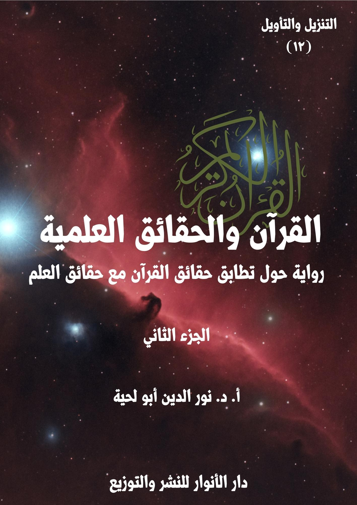

الكتاب: القرآن.. والحقائق العلمية ج2
الوصف: رواية حول تطابق حقائق القرآن مع حقائق العلم
السلسلة: التنزيل والتأويل
المؤلف: أ. د. نور الدين أبو لحية
الناشر: دار الأنوار للنشر والتوزيع
الطبعة: الأولى، 1444 هـ
عدد الصفحات: 502
ISBN: 978-620-4-72102-6
لمطالعة الكتاب من تطبيق مؤلفاتي المجاني وهو أحسن وأيسر: هنا

يحاول هذا الكتاب بيان مطابقة القرآن الكريم للحقائق العلمية الحديثة، وفي الجوانب الكونية المختلفة ابتداء من السماء، وانتهاء بالإنسان، وقد حاولنا أن نستوعب فيه أكثر ما طرح في هذا الجانب من النواحي التالية:
1. محاولة ذكر المواقف المختلفة من التفسير العلمي للقرآن الكريم، سواء من الناحية العامة، أو عند الحديث عند كل آية، لنترك للقارئ حرية الترجيح بينها.
2. ذكر ما ورد في التفاسير القرآنية القديمة والحديثة حول الآيات المتعلقة بالحقائق العلمية، مع ذكر ما ذكرته الدراسات العلمية الحديثة بشأنها.
3. توفير ثقافة علمية للقارئ ترتبط بمعاني الآيات الكريمة التي يتلوها، ولهذا حاولنا أن نفسر كل الآيات التي ذكرت الحقائق المرتبطة بالكون، مع ذكر التفاصيل العلمية الكثيرة الواردة بشأنها، والرجوع للمصادر العلمية الموثوقة في ذلك.
4. محاولة تبسيط المادة العلمية المرتبطة بهذا سواء من خلال تبسيط الفهوم والتفسيرات، أو ذكر الحقائق العلمية.
5. الرد على التفاسير المسيئة للقرآن الكريم، من خلال تحميلها له ما لا يحتمل، أو من خلال الاعتماد على معلومات غير صحيحة، وتطبيقها على القرآن الكريم.
6. محاولة الجمع بين جوانب الهداية المرتبطة بالآيات الكريمة التي نفسرها، والجوانب العلمية، حتى نبين أن المقصود من الآيات الكريمة ليس معانيها العلمية، وإنما جوانب الهداية فيها، والجوانب العلمية مجرد أمثلة ودلائل.
القرآن.. والحقائق العلمية (2/9)
يتناول هذا الجزء من كتاب [القرآن والحقائق العلمية] فصلين، هما:
الفصل الرابع: وتناولنا فيه الآيات الكريمة التي تتحدث عن الشمس والقمر وما يرتبط بهما، وعلاقتها خصوصا بالحقائق التي ذكرها علماء الفلك.
الفصل الخامس: وتناولنا فيه الآيات الكريمة التي تتحدث عن الأرض وتاريخها وشكلها ودورانها وتضاريسها، وغيرها من المعاني التي تعرضت لها الآيات الكريمة الكثيرة، وعلاقتها خصوصا بالحقائق التي ذكرها علماء الأرض وغيرهم.
ونحب أن نعيد هنا ـ من باب التذكير ـ ما ذكرناه في مقدمة الجزء الأول من أغراض الكتاب ومنهجه، وباختصار، وخاصة للذين لم يتسن لهم أن يطلعوا عليها، فهذا الكتاب ـ بأجزائه الخمسة ـ يحاول أن يستوعب أكثر ما طرح حول التفسير العلمي للقرآن الكريم، وذلك من النواحي التالية:
1. محاولة ذكر المواقف المختلفة من التفسير العلمي للقرآن الكريم، سواء من الناحية العامة، أو عند الحديث عند كل آية كريمة، لنترك للقارئ حرية الترجيح والاختيار بينها.
2. الرد على المنكرين لتفسير القرآن الكريم وفق ما ورد في العلم الحديث مطلقا، حتى لو كانت الآيات الكريمة واضحة في دلالتها، والعلم قطعيا في ثبوته، سواء من خلال ذكر أقوال المفسرين المعتبرين، أو من خلال ذكر الحقائق العلمية وربطها بما ورد في القرآن الكريم، ومساعدة اللغة العربية على ذلك.
3. تأييد ما ورد من ربط للقرآن الكريم بالحقائق العلمية، ما دامت الآيات واضحة
القرآن.. والحقائق العلمية (2/10)
الدلالة، والحقائق العلمية ثابتة ومتفق عليها عند جماهير العلماء.
4. ذكر ما ورد في تفاسير القرآن الكريم القديمة والحديثة حول الآيات المتعلقة بالحقائق العلمية، ولم نراع في ذلك دقة المعلومات التي أوردها المفسرون، أو اتفاقها مع ما ورد في مكتشفات العلم الحديث، لأن الهدف هو بيان اهتمام العلماء بتفسير الآيات التي نتحدث عنها بما يتوافق مع العلم.
5. الابتعاد عن الصيغة التي درج عليها الكثير من الكتاب في هذا المجال عند طرحهم للحقائق العلمية المقترنة بالقرآن الكريم، من ذكر كونها سبقا علميا، ونحو ذلك، لأنا رأينا أن مثل هذا يبقى نتيجة يستنتجها القارئ من غير أن ينبه إليها كل حين.
6. توفير ثقافة علمية للقارئ ترتبط بمعاني الآيات الكريمة التي يتلوها، ولهذا حاولنا أن نفسر الآيات التي ذكرت الحقائق الكونية، بغض النظر عن ذكرها لأي حقيقة علمية.
7. محاولة تبسيط المادة العلمية المرتبطة بهذا سواء من خلال تبسيط الفهوم والتفسيرات، أو ذكر الحقائق العلمية، ولهذا اعتمدنا في هذا أسلوبا خاصة في الرواية.
8. الرد على التفاسير المسيئة للقرآن الكريم، من خلال تحميلها له ما لا يحتمل، أو من خلال الاعتماد على معلومات غير صحيحة، وتطبيقها على القرآن الكريم، وادعاء السبق له فيها.
9. محاولة الجمع بين جوانب الهداية المرتبطة بالآيات الكريمة التي نفسرها، والجوانب العلمية، ذلك أن الجوانب العلمية مجرد أمثلة ودلائل.
القرآن.. والحقائق العلمية (2/11)
بعد أن انتهى العلماء من الحديث عن الآيات الكريمة التي تتحدث عن النجوم وصفاتها، وما ورد في العلم الحديث مما يؤكد ذلك، أو يفصله، قال القاضي: بعد أن سمعنا هذا، سننتقل إلى مسائل أخرى ترتبط بما ورد في القرآن الكريم من الحديث عن الشمس والقمر، ومدى انسجامه مع ما ذكره العلم الحديث، وهل هناك أخطاء وقع فيها المفسرون نتيجة لذلك؟
قال أحد المدّعين: أول أخطائهم هو إخراجهم ما ورد في القرآن الكريم من الحديث عن الشمس والقمر من تلك الصورة البدوية الجميلة التي كان يعتقدها المؤمنون إلى تلك الصورة الحديثة المعقدة التي يذكرها العلم الحديث.
قال القاضي: فبم تجيبونهم؟
قال أحد العلماء: بما أننا مختصون في مجالات علمية مختلفة، فإن تلك الآيات الكريمة التي تحدثت عن الشمس والقمر جعلتنا نبحث فيهما، ونربط ما ورد بشأنهما من العلم الحديث، كما عملنا مع سائر الآيات الكريمة في الجوانب المختلفة، ولم ندع أننا معصومون فيما فعلنا، كما لم يدع من قبلنا ذلك.
قال آخر(1): وكيف لا نفعل ذلك، ونحن نجد القرآن الكريم يتحدث عنهما كثيرا، فقد وردت كلمة (شمس) وصيغها في القرآن الكريم اثنين وثلاثين مرة، وورد ذكر القمر سبعا وعشرين مرة.
قال آخر: وقد قرن الله تعالى بينهما في أكثر المواضع لما بينهما من ترابط وتكامل؛
__________
(1) مفاهيم قرآنية: (4/318)
القرآن.. والحقائق العلمية (2/12)
فالشمس آية النهار، والقمر آية الليل، واقتران الليل والنهار بهما واضح بين، كما قال تعالى: ﴿وَهُوَ الَّذِي خَلَقَ اللَّيْلَ وَالنَّهَارَ وَالشَّمْسَ وَالْقَمَرَ كُلٌّ فِي فَلَكٍ يَسْبَحُونَ﴾ [الأنبياء: 33]، وقال: ﴿وَالشَّمْسِ وَضُحَاهَا وَالْقَمَرِ إِذَا تَلَاهَا وَالنَّهَارِ إِذَا جَلَّاهَا وَاللَّيْلِ إِذَا يَغْشَاهَا﴾ [الشمس: 1 ـ 4]
قال آخر: وبين تعالى كونهما مسخرين لمنافع الناس ومصالحهم، فقال: ﴿وَسَخَّرَ لَكُمُ اللَّيْلَ وَالنَّهَارَ وَالشَّمْسَ وَالْقَمَرَ﴾ [النحل: 12]
قال آخر: وبين أن حركتهما دائمة لا تتوقف إلى أن يأذن الله لهذا النظام بالزوال، كما قال تعالى: ﴿وَسَخَّرَ لَكُمُ الشَّمْسَ وَالْقَمَرَ دَائِبَيْنِ﴾ [إبراهيم: 33]
قال آخر: وبين أن الليل والنهار لهما ارتباط بالشمس، فهي آية النهار، الظلام يحل بغروب الشمس، ويسفر الصبح بشروق الشمس، كما قال تعالى: ﴿هُوَ الَّذِي جَعَلَ الشَّمْسَ ضِيَاءً وَالْقَمَرَ نُورًا وَقَدَّرَهُ مَنَازِلَ لِتَعْلَمُوا عَدَدَ السِّنِينَ وَالْحِسَابَ مَا خَلَقَ اللَّهُ ذَلِكَ إِلَّا بِالْحَقِّ يُفَصِّلُ الْآيَاتِ لِقَوْمٍ يَعْلَمُونَ﴾ [يونس: 5]
قال آخر: وغالبا ما يتقدم ذكر الشمس على القمر، لكونها آية أعظم، ونورها ذاتي، بخلاف القمر، فإن نوره قبس من نورها وانعكاس له، وهو تابع للأرض التي تتبعها مع غيرها من الكواكب، فكلاهما جزء من منظومة واحدة، خاضعان لسنن واحدة، كما قال تعالى: ﴿لَا الشَّمْسُ يَنْبَغِي لَهَا أَنْ تُدْرِكَ الْقَمَرَ وَلَا اللَّيْلُ سَابِقُ النَّهَارِ وَكُلٌّ فِي فَلَكٍ يَسْبَحُونَ﴾ [يس: 40]
قال آخر: ولذلك جاء اقترانهما لبيان انتظام حركتهما ودوامها فلا تتوقف، بل تسير بحساب دقيق ونظام محكم لا يختل، كما قال تعالى: ﴿وَسَخَّرَ لَكُمُ الشَّمْسَ وَالْقَمَرَ دَائِبَيْنِ﴾ [إبراهيم: 33]، وقال: ﴿الشَّمْسُ وَالْقَمَرُ بِحُسْبَانٍ﴾ [الرحمن: 5]
القرآن.. والحقائق العلمية (2/13)
قال آخر: كما جاء اقترانهما في سياق بيان مصيرهما عند نهاية الكون، حيث يلتحمان ويتحدان فيصيران كتلة واحدة، كما قال تعالى: ﴿وَجُمِعَ الشَّمْسُ وَالْقَمَرُ﴾ [القيامة: 9]
قال آخر: بالإضافة إلى ذلك، فقد وردت ثلاث آيات عن منازل القمر وأطواره، أي مراحله المتتالية من الهلال، إلى التربيع الأول، إلى الأحدب الأول، إلى البدر الكامل، إلى الأحدب الثاني، إلى التربيع الثاني، ثم الهلال الثاني، ثم المحاق، أو عن أحد هذه الأطوار، كما قال تعالى: ﴿وَالْقَمَرَ قَدَّرْنَاهُ مَنَازِلَ حَتَّى عَادَ كَالْعُرْجُونِ الْقَدِيمِ﴾ [يس: 39]، وقال: ﴿يَسْأَلُونَكَ عَنِ الْأَهِلَّةِ قُلْ هِيَ مَوَاقِيتُ لِلنَّاسِ وَالْحَجِّ﴾ [البقرة: 189]، وقال: ﴿وَالْقَمَرِ إِذَا اتَّسَقَ﴾ [الانشقاق: 18]
قال آخر: كما وردت آية واحدة تثبت معجزة حدثت لرسول الله صلى الله عليه وآله وسلم ألا وهي معجزة انشقاق القمر، كما قال تعالى: ﴿اقْتَرَبَتِ السَّاعَةُ وَانْشَقَّ الْقَمَرُ﴾ [القمر: 1]
قال آخر: كما وردت آيتان كريمتان يقسم فيهما الله تعالى بالقمر، وربنا غني عن القسم لعباده، ولكن تعظيما لشأن القمر، كما قال تعالى: ﴿كَلَّا وَالْقَمَرِ﴾ [المدثر: 32]، وقال: ﴿وَالْقَمَرِ إِذَا تَلَاهَا﴾ [الشمس: 2]
قال آخر: بالإضافة إلى ذلك، فقد ذكر الله تعالى جريان الشمس، كما قال تعالى: ﴿وَالشَّمْسُ تَجْرِي لِمُسْتَقَرٍّ لَهَا ذَلِكَ تَقْدِيرُ الْعَزِيزِ الْعَلِيمِ﴾ [يس: 38]
قال آخر: وأقسم بضحاها، فقال: ﴿وَالشَّمْسِ وَضُحَاهَا﴾ [الشمس: 1]
قال آخر: وذكر نعمة الظل وارتباطه بالشمس، فقال: ﴿وَاللَّهُ جَعَلَ لَكُمْ مِمَّا خَلَقَ ظِلَالًا﴾ [النحل: 81]، وقال: ﴿أَلَمْ تَرَ إِلَى رَبِّكَ كَيْفَ مَدَّ الظِّلَّ وَلَوْ شَاءَ لَجَعَلَهُ سَاكِنًا ثُمَّ جَعَلْنَا الشَّمْسَ عَلَيْهِ دَلِيلًا ثُمَّ قَبَضْنَاهُ إِلَيْنَا قَبْضًا يَسِيرًا﴾ [الفرقان: 45 ـ 46]
قال آخر: وذكر نعمة كونها سراجا مضيئا، فقال: ﴿وَجَعَلْنَا سِرَاجًا وَهَّاجًا﴾ [النبأ:
القرآن.. والحقائق العلمية (2/14)
13]، وقال: ﴿تَبَارَكَ الَّذِي جَعَلَ فِي السَّمَاءِ بُرُوجًا وَجَعَلَ فِيهَا سِرَاجًا وَقَمَرًا مُنِيرًا﴾ [الفرقان: 61]، وقال: ﴿أَلَمْ تَرَوْا كَيْفَ خَلَقَ اللَّهُ سَبْعَ سَمَاوَاتٍ طِبَاقًا وَجَعَلَ الْقَمَرَ فِيهِنَّ نُورًا وَجَعَلَ الشَّمْسَ سِرَاجًا﴾ [نوح: 15 ـ 16]
قال آخر: فالتدبر في هذه الآيات الكريمة وغيرها هو الذي جعلنا نربطها بما ورد في العلم الحديث بشأنها؛ فهل علينا من حرج في ذلك؟
التفت القاضي للمدعين، وقال: لقد سمعتم ما ذكروا، فبم تجيبونهم؟
قال أحد المدّعين: لا حرج عليهم أن يتدبروا القرآن الكريم، ولكن الحرج في أن يقحموه فيما لم ينزل من أجله.
قال أحد العلماء: نحن لم نبتعد عما أنزل من أجله، ولم نحمل الآيات ما لم تحتمل، ولكن حاولنا أن نفهمها على ضوء المعارف الميسرة لنا، كما فهمها الأولون على ضوء المعارف التي كانت منتشرة في عصورهم.
التفت القاضي للمدعين، وقال: لقد تحدثنا عن هذا سابقا، ولذلك نرجو أن تخرجوا من الجملة إلى التفصيل.. فحدثونا عن الآيات الكريمة التي ترون أنهم أخطأوا في تفسيرها؟
قام أحد المدّعين، وقال: أول ما خالفه هؤلاء، والمفسرون الذين يستندون إليهم في هذا الجانب مخالفتهم لما ذكره سلفنا الصالح من العلماء في تفسير قوله تعالى: ﴿وَالشَّمْسُ تَجْرِي لِمُسْتَقَرٍّ لَهَا﴾ [يس: 38]
قال آخر: ومثلها الآيات الكريمة التي تتحدث عن ذلك، مثل قوله تعالى: ﴿لَا
القرآن.. والحقائق العلمية (2/15)
الشَّمْسُ يَنْبَغِي لَهَا أَنْ تُدْرِكَ الْقَمَرَ وَلَا اللَّيْلُ سَابِقُ النَّهَارِ وَكُلٌّ فِي فَلَكٍ يَسْبَحُونَ﴾ [يس: 40]، وقوله: ﴿اللَّهُ الَّذِي رَفَعَ السَّمَاوَاتِ بِغَيْرِ عَمَدٍ تَرَوْنَهَا ثُمَّ اسْتَوَى عَلَى الْعَرْشِ وَسَخَّرَ الشَّمْسَ وَالْقَمَرَ كُلٌّ يَجْرِي لِأَجَلٍ مُسَمًّى يُدَبِّرُ الْأَمْرَ يُفَصِّلُ الْآيَاتِ لَعَلَّكُمْ بِلِقَاءِ رَبِّكُمْ تُوقِنُونَ﴾ [الرعد: 2]، وقوله: ﴿أَلَمْ تَرَ أَنَّ اللَّهَ يُولِجُ اللَّيْلَ فِي النَّهَارِ وَيُولِجُ النَّهَارَ فِي اللَّيْلِ وَسَخَّرَ الشَّمْسَ وَالْقَمَرَ كُلٌّ يَجْرِي إِلَى أَجَلٍ مُسَمًّى وَأَنَّ اللَّهَ بِمَا تَعْمَلُونَ خَبِيرٌ﴾ [لقمان: 29]، وقوله: ﴿يُولِجُ اللَّيْلَ فِي النَّهَارِ وَيُولِجُ النَّهَارَ فِي اللَّيْلِ وَسَخَّرَ الشَّمْسَ وَالْقَمَرَ كُلٌّ يَجْرِي لِأَجَلٍ مُسَمًّى ذَلِكُمُ اللَّهُ رَبُّكُمْ لَهُ الْمُلْكُ وَالَّذِينَ تَدْعُونَ مِنْ دُونِهِ مَا يَمْلِكُونَ مِنْ قِطْمِيرٍ﴾ [فاطر: 13]
قال آخر: فقد ذكر ابن كثير في تفسير قوله تعالى: ﴿لِمُسْتَقَرٍّ لَهَا﴾ قولان، أولهما، أن المراد مستقرها المكاني، وقد ذكر أنه (تحت العرش مما يلي الأرض في ذلك الجانب، وهي أينما كانت فهي تحت العرش وجميع المخلوقات؛ لأنه سقفها، وليس بكرة كما يزعمه كثير من أرباب الهيئة، وإنما هو قبة ذات قوائم تحمله الملائكة، وهو فوق العالم مما يلي رؤوس الناس، فالشمس إذا كانت في قبة الفلك وقت الظهيرة تكون أقرب ما تكون من العرش، فإذا استدارت في فلكها الرابع إلى مقابلة هذا المقام، وهو وقت نصف الليل، صارت أبعد ما تكون من العرش، فحينئذ تسجد وتستأذن في الطلوع)(1)
قال آخر: ثم ذكر الأحاديث المؤيدة لذلك، ومنها ما رواه البخاري عن أبي ذر، قال: كنت مع النبي صلى الله عليه وآله وسلم في المسجد عند غروب الشمس، فقال: (يا أبا ذر، أتدري أين تغرب الشمس؟) قلت: الله ورسوله أعلم، قال: (فإنها تذهب حتى تسجد تحت العرش، فذلك
__________
(1) تفسير ابن كثير: (6/ 576)
القرآن.. والحقائق العلمية (2/16)
قوله: ﴿وَالشَّمْسُ تَجْرِي لِمُسْتَقَرٍّ لَهَا ذَلِكَ تَقْدِيرُ الْعَزِيزِ الْعَلِيمِ﴾ [يس: 38])، وقال أبو ذر: سألت رسول الله صلى الله عليه وآله وسلم عن قوله: ﴿وَالشَّمْسُ تَجْرِي لِمُسْتَقَرٍّ لَهَا﴾ [يس: 38]، قال: (مستقرها تحت العرش)(1)
قال آخر: وفي رواية عن أبي ذر قال: كنت مع رسول الله صلى الله عليه وآله وسلم في المسجد حين وجبت الشمس، فقال: (يا أبا ذر، أتدري أين تذهب الشمس؟) قلت: الله ورسوله أعلم، قال: (فإنها تذهب حتى تسجد بين يدي ربها عز وجل، فتستأذن في الرجوع فيؤذن لها، وكأنها قد قيل لها: ارجعي من حيث جئت، فترجع إلى مطلعها، وذلك مستقرها، ثم قرأ: ﴿وَالشَّمْسُ تَجْرِي لِمُسْتَقَرٍّ لَهَا﴾ [يس: 38])(2)
قال آخر: ثم ذكر قولا آخر في المراد بقوله تعالى: ﴿لِمُسْتَقَرٍّ لَهَا﴾، وهو (انتهاء سيرها وهو غاية ارتفاعها في السماء في الصيف وهو أوجها، ثم غاية انخفاضها في الشتاء وهو الحضيض)(3)
قال آخر: ثم ذكر قولا آخر في المراد بقوله تعالى: ﴿لِمُسْتَقَرٍّ لَهَا﴾، وهو (منتهى سيرها، وهو يوم القيامة، يبطل سيرها وتسكن حركتها وتكور، وينتهي هذا العالم إلى غايته، وهذا هو مستقرها الزماني.. قال قتادة: ﴿لِمُسْتَقَرٍّ لَهَا﴾ أي: لوقتها ولأجل لا تعدوه)(4)
قال آخر: ثم ذكر قولا آخر في المراد بقوله تعالى: ﴿لِمُسْتَقَرٍّ لَهَا﴾، وهو (أنها لا تزال تنتقل في مطالعها الصيفية إلى مدة لا تزيد عليها، يروى هذا عن عبد الله بن عمرو)(5)
__________
(1) البخاري (4802، 4803)
(2) أحمد (5/152)
(3) تفسير ابن كثير: (6/ 577)
(4) تفسير ابن كثير: (6/ 577)
(5) تفسير ابن كثير: (6/ 577)
القرآن.. والحقائق العلمية (2/17)
قال آخر: ثم ذكر قولا آخر في المراد بقوله تعالى: ﴿لِمُسْتَقَرٍّ لَهَا﴾، وهو (لا قرار لها ولا سكون، بل هي سائرة ليلا ونهارا، لا تفتر ولا تقف، كما قال تعالى: ﴿وَسَخَّرَ لَكُمُ الشَّمْسَ وَالْقَمَرَ دَائِبَيْنِ﴾ [إبراهيم: 33] أي: لا يفتران ولا يقفان إلى يوم القيامة)(1)
قال آخر: وهكذا نجد كل المفسرين يفسرونها بهذا التفسير حتى أولئك الذين يعتمدون عليهم في التفسير العلمي، فإنهم وإن فسروها بها، لا يوافقونهم فيما يذكرونه.
قال آخر: ومن الأمثلة على ذلك الرازي، فقد قال في تفسيره لها: (قوله: ﴿وَالشَّمْسُ تَجْرِي﴾ إشارة إلى سبب سلخ النهار فإنها تجري لمستقر لها، وهو وقت الغروب فينسلخ النهار، وفائدة ذكر السبب هو أن الله لما قال ﴿نَسْلَخُ مِنْهُ النَّهَارَ﴾ [يس: 37] وكان غير بعيد من الجهال أن يقول قائل منهم سلخ النهار ليس من الله إنما يسلخ النهار بغروب الشمس فقال تعالى: ﴿وَالشَّمْسُ تَجْرِي لِمُسْتَقَرٍّ لَهَا﴾ بأمر الله فمغرب الشمس سالخ للنهار فبذكر السبب يتبين صحة الدعوى)(2)
قال آخر: وذكر احتمالا آخر في تفسير الآية الكريمة، فقال: (ويحتمل أن يقال بأن قوله: ﴿وَالشَّمْسُ تَجْرِي لِمُسْتَقَرٍّ لَهَا﴾ إشارة إلى نعمة النهار بعد الليل كأنه تعالى لما قال: ﴿وَآيَةٌ لَهُمُ اللَّيْلُ نَسْلَخُ مِنْهُ النَّهَارَ﴾ [يس: 37] ذكر أن الشمس تجري فتطلع عند انقضاء الليل فيعود النهار بمنافعه)(3)
قال آخر: ثم قال: (وقوله: ﴿لِمُسْتَقَرٍّ﴾ اللام يحتمل أن تكون للوقت كقوله تعالى: ﴿أَقِمِ الصَّلَاةَ لِدُلُوكِ الشَّمْسِ﴾ [الإسراء: 78] وقوله تعالى: ﴿فَطَلِّقُوهُنَّ لِعِدَّتِهِنَّ﴾ [الطلاق: 1]
__________
(1) تفسير ابن كثير: (6/ 577)
(2) مفاتيح الغيب (26/ 276)
(3) مفاتيح الغيب (26/ 276)
القرآن.. والحقائق العلمية (2/18)
ووجه استعمال اللام للوقت هو أن اللام المكسورة في الأسماء لتحقيق معنى الإضافة لكن إضافة الفعل إلى سببه أحسن الإضافات لأن الإضافة لتعريف المضاف بالمضاف إليه)(1)
قال آخر: ثم قال: (وإذا علم أن اللام تستعمل للتعليل فنقول وقت الشيء يشبه سبب الشيء لأن الوقت يأتي بالأمر الكائن فيه، والأمور متعلقة بأوقاتها فيقال خرج لعشر من كذا، ﴿أَقِمِ الصَّلَاةَ لِدُلُوكِ الشَّمْسِ﴾ [الإسراء: 78] لأن الوقت معرف كالسبب، وعلى هذا فمعناه تجري الشمس وقت استقرارها، أي كلما استقرت زمانا أمرت بالجري فجرت، ويحتمل أن تكون بمعنى (إلى أي مستقر لها)، وتقريره هو أن اللام تذكر للوقت وللوقت طرفان ابتداء وانتهاء يقال سرت من يوم الجمعة إلى يوم الخميس فجاز استعمال ما يستعمل فيه في أحد طرفيه لما بينهما من الاتصال)(2)
قال آخر: ثم تحدث عن الخلاف في غاية استقرارها الزماني، فقال: (وعلى هذا ففي ذلك المستقر وجوه الأول: يوم القيامة وعنده تستقر ولا يبقى لها حركة، الثاني السنة، الثالث: الليل أي تجري إلى الليل، الرابع: أن ذلك المستقر ليس بالنسبة إلى الزمان، بل هو للمكان)(3)
قال آخر: ثم تحدث عن الخلاف في غاية استقرارها المكاني، فقال: (وحينئذ ففيه وجوه الأول: هو غاية ارتفاعها في الصيف وغاية انخفاضها في الشتاء أي تجري إلى أن تبلغ ذلك الموضع فترجع، الثاني: هو غاية مشارقها فإن في كل يوم لها مشرق إلى ستة أشهر ثم تعود إلى تلك المقنطرات، وهذا هو القول الذي تقدم في الارتفاع فإن اختلاف المشارق
__________
(1) مفاتيح الغيب (26/ 276)
(2) مفاتيح الغيب (26/ 277)
(3) مفاتيح الغيب (26/ 277)
القرآن.. والحقائق العلمية (2/19)
بسبب اختلاف الارتفاع، الثالث: هو وصولها إلى بيتها في الابتداء، الرابع: هو الدائرة التي عليها حركتها حيث لا تميل عن منطقة البروج على مرور الشمس)(1)
قال آخر: ثم ذكر ما ذكره أهل الهيئة في ذلك، فقال: (ويحتمل أن يقال لمستقر لها أي تجري مجرى مستقرها، فإن أصحاب الهيئة قالوا الشمس في فلك والفلك يدور فيدير الشمس، فالشمس تجري مجرى مستقرها)(2)
قال آخر: ثم ذكر رأيه في استقرارها، فقال: (المختار هو أن المراد من المستقر المكان أي تجري لبلوغ مستقرها، وهو غاية الارتفاع والانخفاض فإن ذلك يشمل المشارق والمغارب والمجرى الذي لا يختلف والزمان وهو السنة والليل فهو أتم فائدة)(3)
قال آخر: وذكر ابن الجوزي في تفسير قوله تعالى: ﴿لِمُسْتَقَرٍّ لَهَا﴾ أربعة أقوال: (أحدها: إلى موضع قرارها، وهو العرش.. والثاني: أن مستقرها مغربها لا تجاوزه ولا تقصر عنه، قاله مجاهد.. والثالث: لوقت واحد لا تعدوه، قاله قتاده، وقال مقاتل: لوقت لها إلى يوم القيامة.. والرابع: تسير في منازلها حتى تنتهي إلى مستقرها الذي لا تجاوزه، ثم ترجع إلى أول منازلها، قاله ابن السائب، وقال ابن قتيبة: إلى مستقر لها، ومستقرها: أقصى منازلها في الغروب، وذلك لأنها لا تزال تتقدم إلى أقصى مغاربها ثم ترجع)(4)
قال آخر: ثم ذكر قولا آخر، فقال: (وقرأ ابن مسعود وعكرمة وعلي بن الحسين والشيزري عن الكسائي (لا مستقر لها) والمعنى أنها تجري أبدا لا تثبت في مكان واحد)(5)
__________
(1) مفاتيح الغيب (26/ 277)
(2) مفاتيح الغيب (26/ 277)
(3) مفاتيح الغيب (26/ 277)
(4) زاد المسير في علم التفسير (3/ 523)
(5) زاد المسير في علم التفسير (3/ 523)
القرآن.. والحقائق العلمية (2/20)
قال آخر: وقال الخطيب في تفسيرها: (أي وآية لهم الشمس.. فهذه الشمس تسير في مدار محدود لها، وتتحرك في فلك لا تتعداه ولا تخرج عنه.. وذلك بتقدير (العزيز) ذي العزة والسلطان (العليم) الذي تجرى أحكامه ومقاديره بعلم نافذ إلى كل شيء، متمكن من كل كبيرة وصغيرة في هذا الوجود.. وجريان الشمس، هو حركتها في فلكها المرسوم لها. وهي تقطع دورة هذا الفلك في سنة كاملة، وفي سرعة مذهلة)(1)
التفت القاضي إلى العلماء، وقال: فبم تجيبونهم على ما ذكروه؟
قال أحد العلماء: مع احترامنا لما ذكره المفسرون من أقوال إلا أنا نرى أن بعض ما ذكروه من أقوال يتناقض مع الحقائق العلمية، ولذلك ينبغي رفضه، ولسنا وحدنا من قام برفض ذلك، بل نجد كبار المفسرين يذكرونه، ويفسرون الآية الكريمة بما يقتضيه العلم.
قال آخر: ومنهم المراغي، فقد قال في تفسيرها: (أي والشمس تجرى حول مركز مدارها الثابت الذي تسير حوله بحسب وضعها النجمي، فقد ثبت أن لها حركة رحويّة حول هذا المركز تقدّر بمائتي ميل في الثانية، وهذا الوضع العجيب من تقدير العزيز القاهر لعباده، القابض على زمام مخلوقاته، العليم بأحوالها الذي لا تخفى عليه خافية من أمرها)(2)
قال آخر: وقال سيد قطب: (يقول القرآن الكريم: ﴿وَالشَّمْسُ تَجْرِي لِمُسْتَقَرٍّ لَها﴾، فيثبت حقيقة نهائية عن الشمس وهي أنها تجري.. ويقول العلم: إن الشمس تجري بالنسبة لما حولها من النجوم بسرعة قدرت بنحو 12 ميلاً في الثانية، ولكنها في دورانها مع المجرة التي هي واحدة من نجومها تجري جميعاً بسرعة 170 ميلاً في الثانية)(3)
__________
(1) التفسير القرآني للقرآن (12/ 932)
(2) تفسير المراغي (23/ 9)
(3) في ظلال القرآن: (1/ 183)
القرآن.. والحقائق العلمية (2/21)
قال آخر: وقال في تفسيره لها: (الشمس تدور حول نفسها. وكان المظنون أنها ثابتة في موضعها الذي تدور فيه حول نفسها. ولكن عرف أخيرا أنها ليست مستقرة في مكانها. إنما هي تجري. تجري فعلا. تجري في اتجاه واحد في الفضاء الكوني الهائل بسرعة حسبها الفلكيون باثني عشر ميلا في الثانية! والله ـ ربها الخبير بها وبجريانها وبمصيرها ـ يقول: إنها تجري لمستقر لها. هذا المستقر الذي ستنتهي إليه لا يعلمه إلا هو سبحانه. ولا يعلم موعده سواه.. وحين نتصور أن حجم هذه الشمس يبلغ نحو مليون ضعف لحجم أرضنا هذه. وأن هذه الكتلة الهائلة تتحرك وتجري في الفضاء، لا يسندها شيء، ندرك طرفا من صفة القدرة التي تصرف هذا الوجود عن قوة وعن علم: ﴿ذلِكَ تَقْدِيرُ الْعَزِيزِ الْعَلِيمِ﴾)(1)
قال آخر: وقال مغنيّة: (اختلف المفسرون في المراد من مستقرها على أقوال أنهاها الرازي الى أربعة، وكلها بعيدة عن الافهام، والصواب أن مستقرها كناية عن سيرها بنظام محكم ودقيق، ويومئ الى هذا قوله تعالى:﴿ذَلِكَ تَقْدِيرُ الْعَزِيزِ الْعَلِيمِ﴾، ونقل مؤلف كتاب القرآن والعلم الحديث عن كبار علماء الفلك المعاصرين: (إن الشمس تجري بسرعة 12 ميلا في الثانية غير دورانها حول نفسها، وانها تختلف عن حال دوران الأرض)(2)
قال آخر: وقال الطباطبائي: (جريها حركتها وقوله: ﴿لِمُسْتَقَرٍّ لَهَا﴾ اللام بمعنى إلى أو للغاية، والمستقر مصدر ميمي أو اسم زمان أو مكان، والمعنى أنها تتحرك نحو مستقرها أو حتى تنتهي إلى مستقرها أي استقرارها وسكونها بانقضاء أجلها أو زمن استقرارها أو محله.. وأما جريها وهو حركتها فظاهر النظر الحسي يثبت لها حركة دورية حول الأرض لكن الأبحاث العلمية تقضي بالعكس وتكشف أن لها مع سياراتها حركة انتقالية نحو النسر
__________
(1) في ظلال القرآن: (5/ 2968)
(2) التفسير الكاشف: (6/ 315)
القرآن.. والحقائق العلمية (2/22)
الواقع.. وكيف كان فمحصل المعنى أن الشمس لا تزال تجري ما دام النظام الدنيوي على حاله حتى تستقر وتسكن بانقضاء أجلها فتخرب الدنيا ويبطل هذا النظام، وهذا المعنى يرجع بالمآل إلى معنى القراءة المنسوبة إلى أهل البيت وغيرهم: (والشمس تجري لا مستقر لها) كما قيل، وأما حمل جريها على حركتها الوضعية حول مركزها فهو خلاف ظاهر الجري الدال على الانتقال من مكان إلى مكان)(1)
قال آخر: ونقل فضل الله تفسير الطباطبائي العلمي لها، وعقّب عليه بقوله: (وربما كان المقصود من الجري، الحركة المعنوية التي تعني امتدادها في الكون في نطاق النظام العام الذي يحكم الحياة حتى ينتهي أمده، حيث يبلغ مستقره بانتهاء دوره من خلال إرادة الله وحكمته في ذلك، كما نقول: إن الحياة تسير على نظام ثابت إلى نهايتها، أو أن الدولة تجري بطريقة متوازنة)(2)
قال آخر: ونقل الشيرازي أقوال العلماء في تفسيرها، فقال: (هذه الآية تبين بوضوح حركة الشمس بشكل مستمر، أما ما هو المقصود من تلك الحركة؟ فللمفسرين أقوال متعددة: قال بعضهم: إن ذلك إشارة إلى حركة الشمس الظاهرية حول الأرض، تلك الحركة التي ستستمر إلى آخر عمر العالم الذي هو نهاية عمر الشمس ذاتها.. وقال آخرون: إنه إشارة إلى ميل الشمس في الصيف والشتاء نحو الشمال والجنوب على التوالي، لأننا نعلم بأن الشمس تميل عن خط اعتدالها في بدء الربيع بطرف الشمال، لتدخل في مدار درجة شمالا، وتعود مع بدء الصيف قليلا قليلا حتى تنتهي إلى خط اعتدالها عند بداية الخريف وتستمر على خط سيرها ذلك باتجاه الجنوب حتى بدء الشتاء، ومن بدء الشتاء تتحرك باتجاه
__________
(1) تفسير الميزان: (17/ 45)
(2) من وحي القرآن: (19/ 148)
القرآن.. والحقائق العلمية (2/23)
خط اعتدالها حتى تبلغ ذلك عند بدء الربيع. وبديهي أن جميع تلك الحركات في الواقع ناجمة عن حركة الأرض حول الشمس وانحرافها عن خط مدارها، وان كانت ظاهرا تبدو وكأنها حركة الشمس.. وآخرون اعتبروا الآية إشارة إلى حركة الشمس الموضعية بالدوران حول نفسها، حيث أثبتت دراسات العلماء بشكل قطعي أن الشمس تدور حول نفسها)(1)
قال آخر: ثم ذكر آخر تفسير لها بما يقتضيه العلم، فقال: (وآخر وأحدث التفاسير التي ظهرت بخصوص هذه الآية، هو ما كشفه العلماء أخيرا من حركة الشمس مع منظومتها باتجاه معين ضمن المجرة التي تكون المجموعة الشمسية جزءا منها، وقيل أن حركتها باتجاه نجم بعيد جدا أطلقوا عليه اسم وجا)(2)
قال آخر: ثم ذكر إمكانية فهم الآية الكريمة بجميع تلك المعاني، فقال: (كل هذه المعاني المشار إليها لا تتضارب فيما بينها، ويمكن أن تكون جملة (تجري) إشارة إلى جميع تلك المعاني ومعاني أخرى لم يصل العلم إلى كشفها، وسوف يتم كشفها في المستقبل)(3)
قال آخر: ثم عقّب على هذا بقوله: (وعلى كل حال، فإن حركة كوكب الشمس الذي يعادل مليون ومائتي الف مرة حجم الأرض، بحركة دقيقة ومنظمة في هذا الفضاء اللامتناهي، ليس مقدورا لغير الله سبحانه الذي تفوق قدرته كل قدرة وبعلمه اللامتناهي، لذا فإن الآية تضيف في آخرها ﴿ذَلِكَ تَقْدِيرُ الْعَزِيزِ الْعَلِيمِ﴾)(4)
قال آخر: وقال السبحاني في تفسيرها: (وحاصل الآية: أنّ جريان الشمس على نمط
__________
(1) الأمثل في تفسير كتاب الله المنزل: (14/ 184)
(2) الأمثل في تفسير كتاب الله المنزل: (14/ 185)
(3) الأمثل في تفسير كتاب الله المنزل: (14/ 184)
(4) الأمثل في تفسير كتاب الله المنزل: (14/ 184)
القرآن.. والحقائق العلمية (2/24)
واحد حتى تستقرّ، وذلك بانهدام النظام الذي يسود هذا العالم كما عليه كثير من الآيات)(1)
قال آخر: ثم ذكر اختلاف العلماء في معنى جريان الشمس، فقال: (وقد أشار سبحانه بقوله: ﴿تَجْري﴾ إلى استمرار حركة الشمس، فما هو المراد بتلك الحركة؟ للمفسّرين هنا أقوال أو احتمالات)(2)
قال آخر: ومن الأقوال التي ذكرها، (أنّها إشارة إلى مسار الشمس في دائرة البروج، فلو فرضنا خطاً وهمياً خارجاً من الشرق إلى الغرب، فهذا الخط الوهمي الذي يُسمى خط الاستواء يقسّم السماء عندنا إلى قسمين: شمالي وجنوبي، والشمس تميل تارة عن هذا الخط إلى الجانب الشمالي إلى درجة 23، ويقال له: الميل الشمالي للشمس، ولها في كلّ شهر برجاً خاصّاً تدخل فيه، وهي عبارة عن الأبراج التالية: الحَمَل، والثور، والجوزاء، والسرطان، والأسد، والسنبلة، وصيرورة الشمس في هذه البروج الستة يشكل الربيع والصيف الشماليين، ثم تنتقل الشمس بعد رجوعها إلى خط الاستواء إلى الجانب الجنوبي ولها أيضاً فيه بروجاً ستة تشكل الخريف والشتاء وهي: الميزان، والعقرب، والقوس، والجدي، والدلو، والحوت، فالثلاثة الأُولى بروج الخريف، والثلاثة الأخيرة بروج الشتاء)
قال آخر: ثم عقّب على هذا القول بقوله: (وعلى هذا يمكن أن تكون الآية ناظرة إلى جريان الشمس في هذه البروج التي كان العرب يعرفونها، والتي يعبّر عنها الفلكيّون بدائرة البروج، وكأنّ الشمس ـ حسب الحسّ ـ تدور في هذه البروج ويستغرق دورانها فيها سنة كاملة)(3)
__________
(1) منية الطالبين، 23/ 69.
(2) منية الطالبين، 23/ 70.
(3) منية الطالبين، 23/ 71.
القرآن.. والحقائق العلمية (2/25)
قال آخر: ثم ذكر القول الثاني، وهو (أنّها إشارة الى الحركة الموضعية للشمس، نظير الحركة الموضعية للأرض، فهي تدور حول محورها الوهمي، ويستغرق دورانها هذا مدة شهر تقريباً.. ويُذكر أنّ للشمس حركة أُخرى، وهي أنّها تدور حول مركز مجرّة درب اللبّانة، كما تدور الأرض حول الشمس، ويستغرق دورانها هذا مدة قدرها مليون سنة)(1)
قال آخر: ثم ذكر قولا ثالثا، وهو (أنّها إشارة إلى ما كشفه الفلكيّون حديثاً، وهو أنّ للشمس مع سيّاراتها حركة انتقالية نحو نجم بعيد يُسمّى النسر الواقع، وهو أحد نجوم مجرّة درب اللّبانة التي تشكّل الشمس وكواكبها جزءاً منها)(2)
قال القاضي: وعينا ما ذكرتم من فهوم المفسرين للآية الكريمة، فما الذي تفهمونه أنتم منها؟
قال أحد العلماء: نحن لم نضف شيئا سوى أننا قمنا بتحديث المعلومات التي ذكرها من سبقنا، لتتناسب مع عصرنا، ومع المكتشفات التي جدّت؛ فنحن مطالبون بأن نخاطب الناس على قدر عقولهم وأزمنتهم.
قال آخر(3): وقد أثبت العلم حديثا أن للشمس حركتين في داخل المجرة: الأولى: دورانية حول مركز المجرة، والثانية: اهتزازية إلى أعلى وإلى أسفل.
قال آخر: وحين قام العلماء بدراسة تلك الحركة وجدوا أن الشمس لا تدور دورانا،
__________
(1) منية الطالبين، 23/ 71.
(2) منية الطالبين، 23/ 71.
(3) انظر المادة العلمية المرتبطة بهذا في: تسبيح الكون، د. أحمد شوقي إبراهيم، ص89.. والموسوعة الذهبية في إعجاز القرآن الكريم والسنة النبوية، د. أحمد مصطفى متولي، ص62.. والمعارف الكونية بين العلم والقرآن، د. منصور محمد حسب النبي، القسم الأول، ص104.. وشبهة سجود الشمس تحت العرش، الدكتور عبد الرحيم خير الله الشريف، موقع إعجاز القرآن والسنة.
القرآن.. والحقائق العلمية (2/26)
بل تجري جريانا حقيقيا، وأن جريانها يشبه جريان الخيل في حلبة السباق، ومن ثم؛ فإن قوله تعالى: ﴿وَالشَّمْسُ تَجْرِي﴾ يدل على السرعة الكبيرة لحركة الشمس، ويدل كذلك على أن حركتها حركة اهتزازية، وليست مستقيمة أو دائرية، ولهذا؛ فإن كلمة ﴿تَجْرِي﴾ هي الأدق لوصف الحركة الفعلية للشمس.
قال آخر: وإذا كان العلم قد أثبت ـ في القرن العشرين ـ أن الشمس تجري باتجاه نقطة محددة سماها العلماء: مستقر الشمس، فإن هذا هو ما أثبته القرآن الكريم منذ أربعة عشر قرنا في قوله تعالى: ﴿وَالشَّمْسُ تَجْرِي لِمُسْتَقَرٍّ لَهَا﴾؛ ولذا فليس ثمة مخالفة من القرآن للعلم؛ إذ جاءت الحقيقة العلمية مطابقة للقراءة القرآنية المتواترة الصحيحة.
قال آخر: أما قراءة ابن مسعود وابن عباس: (والشمس تجري لا مستقر لها)، فقد ورد ما يضعف نسبة سند تلك القراءة إليهما، وعلى فرض صحة نسبتها إليهما فهي تعني أنها لا تفتر ولا تقف إلى يوم القيامة.
قال القاضي: فهلا فصلتم لنا ما ذكرتم.
قال أحد العلماء: لقد كان اعتقاد العلماء قديما عن حركات الشمس وكواكبها، هو ما نقلوه عن النظريات الفلكية الإغريقية، ومن تلك النظريات أن القمر والكواكب كلها مغروزة في أفلاك كروية شفافة تدور بها من الشرق إلى الغرب حول الأرض؛ أي إن الأرض مركز الكون.
قال آخر: وفي بداية القرن الثالث قبل الميلاد جاء [أريستاركوس] بنظرية أخرى، فقد قال بدوران الأرض حول الشمس، ولكنه اعتبر الشمس جرما ثابتا في الفضاء، ورفض الناس هذه النظرية، وحكموا على مؤيديها بالزندقة، وأنزلوا بهم أشد العقاب.
قال آخر: وظل هذا الاعتقاد ـ اعتقاد مركزية الأرض للكون ـ معترفا بصحته ثمانية
القرآن.. والحقائق العلمية (2/27)
عشر قرنا من الزمان، منذ عصر [بطليموس] في القرن الثاني الميلادي، حتى عصر [كوبرنيكوس] في القرن السادس عشر؛ فقد أثبت هذا العالم أن الأرض ليست مركز الكون، وأن الشمس والنجوم لا تدور حولها، واعتقد أن الشمس ثابتة وأنها مركز الكون، وأن الكواكب والنجوم تدور حولها.
قال آخر: وجاء القرن العشرون الذي أثبت العلماء فيه أن الشمس ليست مركز الكون كما كان الاعتقاد سائدا منذ القرن السادس عشر، وأن الشمس ليست ثابتة كما كانوا يعتقدون، وإنما تجري في الفضاء الكوني، فهي تتحرك تحركا محليا ـ أي بالنسبة إلى ما حولها من نجوم المجرة ـ بسرعة 43 ألف ميل/ساعة، كما تدور الشمس في الوقت نفسه حول مركز المجرة بسرعة 540 ألف ميل/ساعة.
قال آخر: وحركة الشمس ظلت لغزا محيرا لآلاف السنين، فطالما نظر الناس إلى الأرض على أنها ثابتة، وأن الشمس تدور حولها، ولكن تبين فيما بعد خطأ هذا الاعتقاد؛ والسبب في ذلك هو أن كتلة الشمس أكبر من كتلة الأرض بأكثر من مليون مرة، ومن ثم لا يمكن للأرض أن تجذب الشمس إليها، بل العكس هو الصحيح، فالشمس بسبب كتلتها الكبيرة تجذب جميع الكواكب إليها، تماما كما تجذب الأرض القمر الذي هو أصغر منها.
قال آخر: وقد اكتشف العلماء أن الشمس تنجذب فقط باتجاه مركز مجرتنا (درب التبانة)، بل تدور حوله بشكل دقيق ومحسوب؛ إذ تتراوح سرعة الشمس في دورانها حول مركز المجرة بين 200 إلى 250 كيلو مترا في الثانية، فقالوا: إن الشمس تدور حول مركز المجرة.
قال آخر: وقد وجد العلماء أن للشمس حركتين داخل المجرة؛ الأولى: حركة دورانية
القرآن.. والحقائق العلمية (2/28)
حول مركز المجرة، والثانية: حركة اهتزازية إلى أعلى وإلى أسفل، ولذلك؛ فإن الشمس تبدو كأنها تصعد وتنزل، وتتقدم للأمام، وتتم الشمس ـ كما ذكرنا ـ دورة كاملة حول مركز المجرة في خلال 250 مليون سنة، ويستغرق صعود الشمس وهبوطها في حدود 60 مليون سنة، وهكذا تصعد الشمس وتهبط وتتقدم مثل إنسان يجري.
قال آخر: وحين قام العلماء بدراسة حركة الشمس لمعرفة المسار الدقيق الذي ترسمه أثناء دورانها حول مركز المجرة، وجدوا أن الشمس لا تدور دورانا، بل تجري جريانا حقيقيا، وأن جريانها يشبه جريان الخيل في حلبة السباق.
قال آخر: ذلك أننا إذا نظرنا إلى حركة جريان الخيول في السباق بهدف رؤية المسار الحقيقي لجريان هذه الخيول، نجد أن المنحنى الذي يرسمه الحصان في جريانه يتطابق مع ذلك المنحنى الذي ترسمه الشمس في جريانها.
قال آخر: وقد وجد العلماء بعد دراسات طويلة أن النجوم ـ بما فيها الشمس ـ جميعها تتدفق بما يشبه النهر أو الجدول، وهم يستخدمون للتعبير عن ذلك عبارة؛ أي: جريان النجوم، ويستخدمون كلمة [تجري] للتعبير عن حركة الشمس والنجوم.
قال القاضي: وعينا هذا.. فحدثونا عن المراد من مستقر الشمس.
قال أحد العلماء: لقد بدأ اهتمام علماء الفضاء بدراسة حركة الشمس بهدف إطلاق مركبات فضائية خارج المجموعة الشمسية، وعند دراسة المسار الذي يجب أن تسلكه المراكب الفضائية للخروج خارج النظام الشمسي تبين أن الأمر ليس بالسهولة التي كانت تظن من قبل؛ فالشمس تجري بحركة شديدة التعقيد لا تزال مجهولة التفاصيل حتى الآن، ولكن هنالك حركات أساسية للشمس، ومحصلة هذه الحركات أن الشمس تسير باتجاه محدد لتستقر فيه، ثم تكرر دورتها من جديد، وقد وجد العلماء أن أفضل تسمية لاتجاه
القرآن.. والحقائق العلمية (2/29)
الشمس في حركتها هي: [مستقر الشمس]، والذي يعرفه الفلكيون بأنه (الاتجاه الذي تجري الشمس والمجموعة الشمسية نحوه بزاوية تميل 10 درجات جنوب غرب نجم النسر)
قال آخر: وقد حاول العلماء اليوم قياس [مستقر الشمس] بدقة، ولكن هناك عديد من الآراء والطرق تبعا لمجموعة النجوم التي سيتم القياس بالنسبة إليها؛ لأنه عند الخروج في الفضاء لتحديد سرعة الشمس واتجاه جريانها، علينا أن نوجد نقطة نقيس بالنسبة إليها؛ لأن جميع المجرات والكواكب والأجسام والغبار الكوني والطاقة الكونية جميعها تسبح، وتدور في أفلاك ومدارات محددة.
قال آخر: وعلماء الفلك يقدرون بأن الشمس تسبح إلى الوقت الذي ينفد فيه وقودها فتنطفئ، وهذا هو المعنى العلمي الذي أعطاه العلماء لمستقر الشمس، هذا بالإضافة إلى ما تم اكتشافه في القرن العشرين من أن النجوم مثل سائر المخلوقات تنمو وتشيخ ثم تموت؛ فقد ذكر علماء الفلك أن الشمس عندما تستنفد طاقتها تدخل في فئة النجوم الأقزام ثم تموت، وبموتها تضمحل إمكانية الحياة على كوكب الأرض.
قال آخر: ذلك أن الشمس مصباح يستمد وقوده من الهيدروجين الذي يندمج بعضه مع بعض بتفاعلات اندماجية ينتج عنها الضوء والحرارة، وتفقد الشمس ملايين الأطنان من كتلتها لتشع الطاقة في فضاء المجموعة الشمسية، وهو مقدار ضخم، ولكنه جزء تافه من كتلة الشمس البالغة 2 بليون بليون طن، إلى درجة أننا لا نلاحظ النقص في كتلتها من يوم لآخر، ولا حتى طول العمر؛ لأنها في خلال المليون سنة الأخيرة فقدت جزءا من ألف جزء من كتلتها.
قال آخر: ومع ذلك وعلى الرغم من أن الشمس تتغير ببطء، فإنها بالتأكيد سوف
القرآن.. والحقائق العلمية (2/30)
تموت؛ لأنها بمضي الزمن سوف تستهلك كل مخزونها من الوقود النووي في قلبها؛ وبهذا يقف هذا المفاعل النووي الاندماجي عن العمل، ولن يستطيع مركز الشمس أن يقاوم وزن المناطق الخارجية لها التي تضغط إلى الداخل، وعندئذ يبدأ قلب الشمس في التقلص.
قال القاضي: فما تقولون في الحديث الذي استدل به ابن كثير وغيره في تفسير معنى الجريان والاستقرار؟
قال أحد العلماء: هذا حديث آحاد، وقد يكون كتلك الأحاديث الكثيرة التي تلقفها المسلمون من أهل الكتاب وغيرهم، ثم نسبوها إلى رسول الله صلى الله عليه وآله وسلم.
قال آخر: وفي حال صحته، فقد يكون مرويا بالمعنى، وما أكثر الأحاديث الصحيحة المروية بالمعنى، والتي تؤثر في الغرض الصحيح من الحديث.
قال آخر: ولذلك يمكننا أن نقبل ما ورد في الحديث من سجود الشمس، ذلك أن الله تعالى أخبر أن كل مخلوق من مخلوقاته يسجد له ويخضع بما يتناسب مع حاله.. فمن معاني السجود في اللغة الخضوع.. وعليه يُحمل ما في هذا الحديث، وهو المقصود بقوله تعالى: ﴿أَلَمْ تَرَ أَنَّ اللَّهَ يَسْجُدُ لَهُ مَنْ فِي السَّمَاوَاتِ وَمَنْ فِي الْأَرْضِ وَالشَّمْسُ وَالْقَمَرُ وَالنُّجُومُ وَالْجِبَالُ وَالشَّجَرُ وَالدَّوَابُّ وَكَثِيرٌ مِنَ النَّاسِ وَكَثِيرٌ حَقَّ عَلَيْهِ الْعَذَابُ وَمَنْ يُهِنِ اللَّهُ فَمَا لَهُ مِنْ مُكْرِمٍ إِنَّ اللَّهَ يَفْعَلُ مَا يَشَاءُ﴾ [الحج: 18]
قال آخر: وبذلك، فإن سجود الشمس مما يختص بها ولا يلزم أن يكون سجودها كسجود الآدميين، كما أن سجودها متحقق بخضوعها لخالقها وانقيادها لأمره، وهذا هو السجود العام لكل شيء خلقه الله، إذ كل شيء من خلق الله تعالى يسجد له ويسبح بحمده.
قال آخر: ويشير الحديث في حال صحته إلى أن الشمس لها سجدتان: سجود عام مستديم وهو سجودها المذكور في آية النحل والحج مع سائر المخلوقات، وسجود خاص
القرآن.. والحقائق العلمية (2/31)
يتحقق عند محاذاتها لباطن العرش ـ والذ ي هو غيب مطلق ـ فتكون ساجدة تحته، وهو المذكور في الحديث.
قال آخر: وفي كلا الحالتين لا يلزم من سجودها أن يشابه سجود الآدميين لمجرد الاشتراك في لفظ الفعل الدال عليه، ومن أمثلة ذلك من واقعنا أن مشي الحيوان ليس كمشي الآدمي وسباحة السمك والحوت ليست كسباحة الإنسان وهكذا مع انهم يشتركون في مسمى الفعل وهما المشي والسباحة.
قال آخر: ولهذا، فإنه لا يلزم من سجودها التوقف عن الحركة لبرهة من الزمن، ومثال ذلك الطواف حول الكعبة إذ لا يلزمه أن يقف عند الحد الممتد من الحجر الأسود ليتحقق حساب طواف كاملا، إذ أنه حتى لو طاف وواصل مسيره وتجاوز الحد دون الوقوف لاستلامه فإنه يتحقق له شوط كامل، ويكون قد قضى جزءا من شعيرة الطواف دون ان يقف عند الحد.
قال آخر: بالإضافة إلى ذلك، فإن لفظ الحديث هو (فإنها تذهب حتى تسجد تحت العرش)، ولم يقل رسول الله صلى الله عليه وآله وسلم أنها (تغرب تحت العرش) أو (حتى تغرب تحت العرش)، وهذا فهم توهمه بعض الناس الذين أشكل عليهم هذا الحديث وهو فهم مردود لأن ألفاظ الحديث ترده.. فقوله: (تذهب) دلالة على الجريان، لا دلالة على مكان الغروب، لأن الشمس لا تغرب في موقع حسي معين، وإنما تغرب في جهة معينة، وهي ما اصطلح عليه الناس باسم الغرب، والغروب في اللغة التواري والذهاب.
التفت القاضي إلى المدّعين، وقال: أظن أن ما سمعتموه من الحجج كاف.. فحدثونا
القرآن.. والحقائق العلمية (2/32)
عن آية أخرى تتعلق بهذا ترون أنهم أخطأوا في تفسيرها؟
قال أحد المدّعين: أجل.. فقد خالفوا ما ذكره سلفنا الصالح من العلماء في تفسير قوله تعالى: ﴿إِذَا الشَّمْسُ كُوِّرَتْ﴾ [التكوير: 1]
قال آخر: فقد ذكر ابن الجوزي خلاف السلف في تفسير ﴿كُوِّرَتْ﴾ على أربعة أقوال.. (أحدها: أظلمت، رواه الوالبي عن ابن عباس، وكذلك قال الفراء: ذهب ضوؤها، وهذا قول قتادة، ومقاتل.. والثاني: ذهبت، رواه عطية عن ابن عباس، وكذلك قال مجاهد: اضمحلت.. والثالث: غورت، روي عن ابن عباس، وسعيد بن جبير، وابن الأنباري، وهذا من قول الناس بالفارسية: كور بكرد.. والرابع: أنها تكور مثل العمامة، فتلف وتمحى، قاله أبو عبيد.. قال الزجاج: ومعنى (كورت) جمع ضوؤها، ولفت كما تلف العمامة، يقال: كورت العمامة على رأسي أكورها: إذا لففتها)(1)
قال آخر: وذكر الرازي في تفسير التكوير وجهان.. أولهما: التلفيف على جهة الاستدارة كتكوير العمامة، كما ورد في الحديث (نعوذ بالله من الحور بعد الكور)(2)، أي من التشتت بعد الألفة والطي واللف، والكور والتكوير واحد، وسميت كارة القصار كارة لأنه يجمع ثيابه في ثوب واحد(3).
قال آخر: ثم قال: (ثم إن الشيء الذي يُلف لا شك أنه يصير مختفيا عن الأعين، فعبر عن إزالة النور عن جرم الشمس وتصييرها غائبة عن الأعين بالتكوير، فلهذا قال بعضهم:
__________
(1) زاد المسير في علم التفسير (4/ 406)
(2) مسلم (1343)
(3) مفاتيح الغيب (31/ 63)
القرآن.. والحقائق العلمية (2/33)
كورت أي طمست، وقال آخرون: انكسفت، وقال الحسن: محي ضوؤها، وقال المفضل بن سلمة: كورت أي ذهب ضوؤها، كأنها استترت في كارة)(1)
قال آخر: ثم ذكر الوجه الثاني في التكوير، فقال: (يقال: كورت الحائط ودهورته إذا طرحته حتى يسقط، قال الأصمعي: يقال طعنه فكوره إذا صرعه، فقوله: إذا الشمس كورت أي ألقيت ورميت عن الفلك)(2)
قال آخر: وقال القاسمي في تفسيرها: (﴿إِذَا الشَّمْسُ كُوِّرَتْ﴾ أي أزيلت من مكانها، وألقيت عن فلكها، ومحي ضوؤها)(3)
قال آخر: وقال المراغي في تفسيرها: (أي إذا كورت الشمس وامحى ضوؤها وسقطت حين خراب العالم الذي يعيش فيه الحىّ في حياته الدنيا، ولا يبقى في عالمه الآخر الذي ينقلب إليه شيء من هذه الأجرام)(4)
قال آخر: وقال الخطيب: (تكوير الشمس: ظهورها كالكرة في أعين الناس يومئذ أي يوم القيامة، حيث يشرف عليها الإنسان من عل فيراها من جميع وجوهها، لا من وجه واحد، كما تبد ولنا الآن وكأنها قرص مسطّح)(5)
قال آخر: وقال الطباطبائي: (التكوير اللف على طريق الإدارة كلف العمامة على الرأس، ولعل المراد بتكوير الشمس انظلام جرمها على نحو الإحاطة استعارة)(6)
__________
(1) مفاتيح الغيب (31/ 63)
(2) مفاتيح الغيب (31/ 63)
(3) تفسير القاسمي (9/ 412)
(4) تفسير المراغي (30/ 54)
(5) التفسير القرآني للقرآن (16/ 1467)
(6) تفسير الميزان: (20/ 118)
القرآن.. والحقائق العلمية (2/34)
قال آخر: وقال فضل الله: (التكوير: التلفيف على جهة الاستدارة ومنه تكوير العمامة، والظاهر أن التعبير وارد على سبيل الكناية، بمعنى: جمع ضوؤها ولفّت كما تلفّ العمامة، والمعنى أنّ الشمس تكوّر بأن يجمع نورها حتى تصير كالكرة الملقاة ويذهب ضوؤها)(1)
قال آخر: ثم قال: (وهذا هو الحدث الكبير الذي تفقد فيه الشمس وهجها وإشراقها وحرارتها وامتداد نورها ولهيبها، فتعود مجرّد شيء مكوّر، كما هي الكرة الملقاة التي لا توحي إلا بالحاجة إلى التدحرج تحت الأقدام)(2)
التفت القاضي إلى العلماء، وقال: فبم تجيبونهم على ما ذكروه؟
قال أحد العلماء: مع احترامنا لما ذكره المفسرون من أقوال، والتي لا تتعارض مع ما سنذكره إلا أنا نرى أن الآية الكريمة تحتمل ما يذكره العلم الحديث بشأنها، بل يدل عليه.
قال آخر: ولذلك نرى المفسرين المتأخرين لا يرون حرجا في ربط تفسيرها بما يقوله العلم الحديث، ومنهم سيد قطب، فقد قال في مقدمته لتفسيره لها، ولما بعدها: (هذا هو مشهد الانقلاب التام لكل معهود، والثورة الشاملة لكل موجود، الانقلاب الذي يشمل الأجرام السماوية والأرضية، والوحوش النافرة والأنعام الأليفة، ونفوس البشر، وأوضاع الأمور، حيث ينكشف كل مستور، ويعلم كل مجهول وتقف النفس أمام ما أحضرت من الرصيد والزاد في موقف الفصل والحساب.. وكل شيء من حولها عاصف وكل شيء من حولها مقلوب)(3)
__________
(1) من وحي القرآن: (24/ 87)
(2) من وحي القرآن: (24/ 88)
(3) في ظلال القرآن: (6/ 3837)
القرآن.. والحقائق العلمية (2/35)
قال آخر: ثم قال: (وهذه الأحداث الكونية الضخام تشير بجملتها إلى أن هذا الكون الذي نعهده، الكون المنسق الجميل، الموزون الحركة، المضبوط النسبة، المتين الصنعة، المبني بأيد وإحكام، أن هذا الكون سينفرط عقد نظامه، وتتناثر أجزاؤه، وتذهب عنه صفاته هذه التي يقوم بها وينتهي إلى أجله المقدر، حيث تنتهي الخلائق إلى صورة أخرى من الكون ومن الحياة ومن الحقائق غير ما عهدت نهائيا في هذا الكون المعهود.. وهذا ما تستهدف السورة إقراره في المشاعر والقلوب كي تنفصل من هذه المظاهر الزائلة ـ مهما بدت لها ثابتة ـ وتتصل بالحقيقة الباقية.. حقيقة الله الذي لا يحول ولا يزول، حين يحول كل شيء من الحوادث ويزول، ولكي تنطلق من إسار المعهود المألوف في هذا الكون المشهود، إلى الحقيقة المطلقة التي لا تتقيد بزمان ولا مكان ولا رؤية ولا حس، ولا مظهر من المظاهر التي تقيدها في ظرف أو اطار محدود! وهذا هو الشعور العام الذي ينسرب إلى النفس وهي تطالع مشاهد هذا الانقلاب المرهوب)(1)
قال آخر: ثم قال: (فأما حقيقة ما يجري لكل هذه الكائنات، فعلمها عند الله وهي حقيقة أكبر من أن ندركها الآن بمشاعرنا وتصوراتنا المقيدة بمألوف حسّنا وتفكيرنا.. وأكبر ما نعهده من الانقلابات هو أن ترجف بنا الأرض في زلزال مدمر، أو يتفجر من باطنها بر كان جائح، أو أن ينقض على الأرض شهاب صغير، أو صاعقة.. وأشد ما عرفته البشرية من طغيان الماء كان هو الطوفان.. كما أن أشد ما رصدته من الأحداث الكونية كان هو انفجارات جزئية في الشمس على بعد مئات الملايين من الأميال.. وهذه كلها بالقياس إلى ذلك الانقلاب الشامل الهائل في يوم القيامة.. تسليات أطفال)(2)
__________
(1) في ظلال القرآن: (6/ 3837)
(2) في ظلال القرآن: (6/ 3838)
القرآن.. والحقائق العلمية (2/36)
قال آخر: ثم قال عن تكوير الشمس: (فإذا لم يكن بد أن نعرف شيئا عن حقيقة ما يجري للكائنات، فليس أمامنا إلا تقريبها في عبارات مما نألف في هذه الحياة.. إن تكوير الشمس قد يعني برودتها، وانطفاء شعلتها، وانكماش ألسنتها الملتهبة التي تمتد من جوانبها كلها الآن إلى ألوف الأميال حولها في الفضاء، كما يتبدى هذا من المراصد في وقت الكسوف، واستحالتها من الغازية المنطلقة بتأثير الحرارة الشديدة التي تبلغ 12000 درجة، والتي تحول جميع المواد التي تتكون منها الشمس إلى غازات منطلقة ملتهبة.. استحالتها من هذه الحالة إلى حالة تجمد كقشرة الأرض، وتكور لا ألسنة له ولا امتداد.. قد يكون هذا، وقد يكون غيره.. أما كيف يقع والعوامل التي تسبب وقوعه فعلم ذلك عند الله)(1)
قال آخر: وقال الشيرازي: ((كورت): من (التكوير)، بمعنى الطي والجمع واللف (مثل لف العمامة على الرأس)، وأخذ هذا المعنى من كتب اللغة والتفسير والمختلفة.. واستعملت كذلك بمعنى: (الرمي) أو (إطفاء شيء).. والمعنيان ـ كما يبدو ـ مستمدان من المعنى الأصلي، وعلى أية حال، فالمقصود هو: خمود نور الشمس وذهابه، وتغير نظام تكوينها)(2)
قال آخر: ثم قال: (وكما بات معلوما.. فالشمس في وضعها الحالي، عبارة عن كرة مشتعلة، على هيئة غازية ملتهبة، وتتفجر الغازات على سطحها بصورة شعلات هائلة محرقة، قد يصل ارتفاعها إلى مئات الآلاف من الكيلو مترات، ولو قدر وضع الكرة الأرضية وسط شعلة منها، فإنها تستحيل فورا إلى رماد وكتلة من الغازات، ولكن، عند حلول وقت نهاية العالم، والاقتراب من يوم القيامة، سيخمد ذلك اللهب المروع، وستجمع
__________
(1) في ظلال القرآن: (6/ 3838)
(2) الأمثل في تفسير كتاب الله المنزل: (19/ 445)
القرآن.. والحقائق العلمية (2/37)
تلك الشعلات، فيطفأ نور الشمس، ويصغر حجمها.. وهو ما اشير إليه بالتكوير.. وجاء في (لسان العرب): (كورت الشمس: جمع ضوءها ولف كما تلف العمامة).. وقد أيد العلم الحديث هذه الحقيقة، من خلال اعتقاده وبعد دراسات علمية كثيرة، بأن الشمس تسير تدريجيا نحو الظلام والانتفاء)(1)
قال آخر: وقال السبحاني في تفسير التكوير: (أي انقبض ضوْؤها المنتشر في العالم، فيتصوّر أنّ أضواءها كوّرت على رأس الشمس كتكوير العمامة على الرأس، والآية كناية عن برودة الشمس، وانطفاء شعلتها، وانكماش ألسنتها الملتهبة الّتي تمتد من جوانبها كلّها إلى أطراف المجموعة الشمسية؛ أو انضمام بعضها إلى بعض ككور العمامة ولفّها بنحو الإدارة، وهو أيضاً يلازم جمع ضوئها.. وقد أثبت العلم أنّ كلّ ثانية تمرّ من عمر الشمس ينتقص من وزنها ما يقارب أربعة ملايين طن.. وقدّر العلماء وزن الشمس بأنّه يعادل وزن (000،330) ضعفاً من وزن الكرة الأرضية، ووزن الكرة الأرضية هو 6600 مليون بليون طن، ومن هذا يعلم كم هو وزن الشمس)(2)
قال آخر: وقال المدرّسي: (أصل التكوير من الجمع، يقال كار العمامة على رأسه يكوّرها: أي لاثها وجمعها، ما ذا يصنع بهذه الكرة العملاقة التي هي أكبر من أرضنا زهاء مليون مرة؟ هل إنها تفقد عمرها الطبيعي الذي هي في منتصفه حسب ما يقول العلماء الذين يقولون: انها اليوم في عمر الكهولة، فنحن البشر إذا في منتصف المسافة بين أصل تكوّنها ويوم تكورها، أم أنّها تصاب بآفة كونية فيمحى ضوؤها، كما الشمعة إذا غمست في ماء المحيط أو تعرضت لإعصار شديد؟ فلا يبقى لها إلّا أن تنطوي على نفسها، وتلملم
__________
(1) الأمثل في تفسير كتاب الله المنزل: (19/ 446)
(2) منية الطالبين، 30/ 132.
القرآن.. والحقائق العلمية (2/38)
امتدادات ضوئها، وزفرات شعلتها، وانسيابات أشعتها، من هنا جاء في لسان العرب: كوّرت الشمس جمع ضوؤها، ولفّت كما تلف العمامة، أيّا كان الأمر فإنّها ساعة رهيبة)(1)
قال آخر: ثم قال: (هل القيامة ساعة المنظومة الشمسية أم المجرّة أم العالم كله؟ لا أدري، ولكنّ الآية تؤكّد أنّ النجوم تنكدر وتؤكد آية أخرى انها تنتثر فهل هي تنصبّ وتتساقط في اتجاهات متباعدة، أم أنّها تعود كما كانت أول الخلق كتلة واحدة متراصّة، أم ما ذا؟ أم لا يكون كل ذلك، وإنّما بسبب اختلال نظام منظومتنا فإنّنا نرى النجوم بهذه الصورة؟ الله العالم)(2)
قال القاضي: وعينا ما ذكرتم من فهوم المفسرين للآية الكريمة، فما الذي تفهمونه أنتم منها؟
قال أحد العلماء(3): أولا نحب أن ننبه إلى الخطأ الذي وقع فيه بعض المشككين من أن قوله تعالى: ﴿إِذَا الشَّمْسُ كُوِّرَتْ﴾ يشير إلى أن الشكل الحالي للشمس غير كروي؛ لأن الكرة لا تكوّر، ذلك أن هذا القول يتنافى مع معنى الكلمة في اللغة العربية، ويدل على جهل قائلها بحقيقة كروية الشمس، ولا يمكن أن يكون للآية معنى إلا إذا اختلف الشكل الحقيقي للشمس عن الشكل الكروي.
قال آخر: وبذلك، فإنه ليس مقصودًا بتكوير الشمس في الآية أنها ستصبح كروية،
__________
(1) من هدي القرآن: (17/ 349)
(2) من هدي القرآن: (17/ 349)
(3) انظر المادة العلمية المرتبطة بهذا في: موسوعة بيان الإسلام الرد على الافتراءات والشبهات، نخبة من كبار العلماء.. ونهاية الشمس، عبد الدائم الكحيل، بحث منشور بموقعه.. ومن آيات الإعجاز العلمي: السماء في القرآن الكريم، د. زغلول النجار، ص258.. والمعارف الكونية بين العلم والقرآن، د. منصور محمد حسب النبي، القسم الأول، ص104.
القرآن.. والحقائق العلمية (2/39)
لكن المقصود هو ذهاب ضوئها، فالتكوير هو مرحلة النهاية في حياة الشمس، وهذا يتطابق مع ما أثبتته الاكتشافات العلمية من أن النجوم تمر بمراحل عدة؛ فهي تخلق ثم تصير إلى مرحلة تسمَّى فيها نجوم النسق الرئيسي، ويستمر النجم على هذا الطور غالبية عمره، وبعد ذلك تتحوَّل إلى مرحلة جديدة، وهكذا حتى يتحول إلى نجم لا ضوء فيه.
قال القاضي: فهلا وضحتم لنا ذلك بتفصيل أكثر.
قال أحد العلماء: لقد ذكرنا لكم سابقا أن النجوم خلقت ابتداء من الدخان الكوني، الذي نشأ عن انفجار الجرم الأولي للكون (فتق الرتق)، ولا تزال النجوم تتخلق أمام أنظار الفلكيين اليوم في دخان السُّدُم عبر مراحل متتالية، وذلك بواسطة عدد من الدوامات العاتية التي تعرف باسم [دوامات تركيز المادة]، وتعمل هذه الدوامات على تكثيف المادة في داخل سحابات الدخان أو السدم بفعل عملية التجاذب التثاقلي، فتؤدي إلى إحداث تصادمات متكررة بين جسيمات المادة ينتج عنها الارتفاع التدريجي في درجة حرارتها حتى تصبح قادرة على بث الأشعة تحت الحمراء فيولد ما يُسمَّى بـ [النجم الابتدائي]
قال آخر: وتستمر جزيئات المادة في هذا النجم الأولي في التجمع والانجذاب أكثر نحو المركز حتى تتجمع الكتلة اللازمة لبدء عملية الاندماج النووي؛ فتزداد الاصطدامات بينها، ويزداد الضغط إلى الدرجة التي تسمح ببدء التفاعلات النووية الاندماجية بين نوى ذرات الهيدروجين، فيتوهج النجم الأولي وتنطلق منه الطاقة، وينبثق الضوء وعند ذلك يكون النجم الابتدائي قد وصل إلى طور النضج المسمَّى باسم [نجوم النسق الرئيسي]، ويستمر النجم في هذا الطور غالبية عمره (نحو 90 بالمئة من عمره)؛ حيث يتوقف انكماش مادته نحو المركز بسبب الحرارة والضغط البالغين المتولدين في مركز النجم.
قال آخر: وينتج عن استمرار التفاعلات النووية في داخل [نجم النسق الرئيسي]
القرآن.. والحقائق العلمية (2/40)
استهلاك كميات كبيرة من غاز الهيدروجين الذي يتحول إلى الهيليوم، وبالتدريج تتخلق العناصر الأثقل من مثل الكربون والنيتروجين والأكسجين والسيليكون، وفي مراحل لاحقة يتحول لب النجم إلى الحديد، فتتوقف عملية الاندماج النووي، ويدخل النجم في مرحلة الاحتضار على هيئة النموذج الأول لانفجار المستعر الأعظم، وينتهي به إلى دخان السماء عبر مراحل من العمالقة الحمر، ثم مرحلة النجوم الزرقاء شديدة الحرارة المحاطة بهالة من الهيدروجين المتأين والمعروفة باسم السدم الكوكبية، ثم مرحلة الأقزام البيض إذا كانت الكتلة الابتدائية للنجم قليلة نسبيًّا؛ أي في حدود كتلة الشمس تقريبًا.
قال آخر: أما إذا كانت الكتلة الابتدائية للنجم عدة مرات قدر كتلة الشمس، فإنه يمر بمراحل من العمالقة العظام، ثم النموذج الثاني لانفجار المستعر الأعظم الذي تتبقى عنه النجوم النيوترونية أو الثقوب السوداء، التي تبتلع كل ما تمر به أو يصل إلى أفق حدثها من مختلف صور المادة والطاقة.
قال آخر: وغالبية نجوم السماء من النوع العادي، أو ما يعرف باسم [نجوم النسق الرئيسي] التي تمثل مرحلة نضج النجم وأوج شبابه، وهي أطول مرحلة في حياة النجوم؛ حيث يمضي النجم 90 بالمئة من عمره في هذه المرحلة، التي تتميز بتعادل دقيق بين قوى التجاذب إلى مركز النجم ـ الناتجة عن دوران النجم حول محوره ـ وقوى دفع مادة النجم إلى الخارج ـ نتيجة لتمدده بالحرارة الشديدة الناتجة عن عملية الاندماج النووي في لبه ـ ويبقي النجم في هذا الطور حتى ينفد وقوده من غاز الهيدروجين، أو يكاد ينفد، فيبدأ بالتوهُّج الشديد حتى تصل شدة إضاءته إلى مليون مرة قدر شدة إضاءة الشمس، ثم يبدأ في الانكدار التدريجي حتى يطمس ضوؤه بالكامل، ويختفي كلية عن الأنظار على هيئة النجم الخانس الكانس أو (الثقب الأسود)، عبر عدد من مراحل الانكدار.
القرآن.. والحقائق العلمية (2/41)
قال آخر: ومن النجوم المنكدرة ما يعرف باسم السدم الكوكبية، والأقزام البيض، والنجوم النيوترونية، ومنها النابض وغير النابض،وغيرها من صور انكدار النجوم.
قال آخر: وشمسنا عبارة عن نجم في مرحلة نجوم النسق الرئيسي ـ مرحلة الشباب ـ ولذلك نلاحظ عليها استقرارًا في خصائصها، فلا تخرج علينا يومًا بيضاء شديدة، ثم تبدو مثل نجم خافت في يوم آخر، وهذا يعني أن الذي يظهر أن الشمس قد كانت نشطة منذ 4،6 ألف مليون سنة، وأنها تمتلك الطاقة الكافية لتكمل خمسة آلاف مليون سنة أخرى، وإنه يقدر للشمس انتهاؤها مثل نجم قزم.
قال آخر: وهي تفقد ملايين الأطنان من كتلتها لتشع الطاقة في فضاء المجموعة الشمسية، وهو مقدار ضخم، ولكنه جزء تافه من كتلة الشمس البالغة 2 بليون بليون طن، إلى درجة أننا لا نلاحظ النقص في كتلتها من يوم إلى آخر، ولا حتى طول العمر؛ لأنها في خلال المليون سنة الأخيرة فقدت جزءًا من ألف جزء من كتلتها.
قال آخر: ومع ذلك، وعلى الرغم من أن الشمس تتغير ببطء، فإنها بالتأكيد سوف تموت؛ لأنها بمضي الزمن سوف تستهلك كل مخزونها من الوقود النووي [الهيدروجين] في قلبها، وبهذا يقف هذا المفاعل النووي الاندماجي عن العمل، ولن يستطيع مركز الشمس أن يقاوم وزن المناطق الخارجية لها التي تضغط إلى الداخل، وعندئذٍ يبدأ قلب الشمس في التقلص.
قال آخر: إن ما للشمس من وهج، يتكون من اندماج في داخل باطن الشمس لذرتين من الهيدروجين مما ينتج الهيليوم، ونفاد الهيدروجين من باطن الشمس وتوافر الهيليوم، يحدث اضطرابًا وعدم توازن في جسم الشمس؛ لأن الهيليوم أثقل من الهيدروجين بأربع مرات، وعندما تلجأ الشمس إلى حركة تعيد توازنها فينتفخ الجزء الخارجي من
القرآن.. والحقائق العلمية (2/42)
الشمس ويتقلص لبها.
قال آخر: وعندما يكون اللب أضعف من أن يسند الجزء الخارجي من الشمس، ينهار جسم الشمس على بعضه ـ بسبب جاذبية أجزاء بعضها إلى بعضها الآخر ـ فتنكمش الشمس انكماشًا سريعًا مفاجئًا، فتتقارب الذرات تقاربًا شديدًا حتى تكاد تتداخل، وهذا هو التكوير.
قال آخر: ولكن قوة التنافر بين الذرات تحافظ على مسافة بينها تمنع الالتحام؛ فتتعادل قوى التنافر الكهربائي مع قوى الجذب الناتج عن التكوير، عندها يحصل شيء من التوازن في الشمس، وتسمَّى تلك المرحلة علميًّا بمرحلة [القزم الأبيض]، فلا يبقى من نورها إلا ضوء خافت واهن.
قال آخر: وقد لاحظ العلماء ـ الذين يراقبون ولادة النجوم وموتها ـ أن النجوم التي أكبر من شمسنا بمرة ونصف المرة تصل إلى مرحلة التكوير ثم تتلاشى وتنفجر دون أن تتوازن، فلا تصل إلى حالة [القزم الأبيض]، بينما النجوم التي تقارب حجم شمسنا، فإنها تؤول إلى حالة مستقرة تمامًا مع خفوت ضوئها.
التفت القاضي إلى المدّعين، وقال: أظن أن ما سمعتموه من الحجج كاف.. فحدثونا عن آية أخرى تتعلق بهذا ترون أنهم أخطأوا في تفسيرها؟
قال أحد المدّعين، وكان من المشككين: أجل.. فقد خالفوا بتفسيراتهم العلمية ما ورد في القرآن في قصة ذي القرنين، حيث ورد فيها: ﴿حَتَّى إِذَا بَلَغَ مَغْرِبَ الشَّمْسِ وَجَدَهَا تَغْرُبُ فِي عَيْنٍ حَمِئَةٍ﴾ [الكهف: 86]
القرآن.. والحقائق العلمية (2/43)
قال آخر: وهذا يتنافى مع الحقائق العلمية حول حركة الشمس؛ إذ إن الآية تثبت أن الشمس تغرب في عين ماء وطين، بينما الحقائق العلمية تذكر أن كتلة الشمس أكبر من كتلة جميع الكواكب التي تدور حولها بأكثر من مئة ضعف.. فإذا كانت الشمس بهذه الكتلة الضخمة التي تفوق كتلة الأرض بآلاف المرات، فكيف تغرب في بئر صغيرة رآها ذو القرنين ورأى ماءها ورأى الناس الذين عندها!؟
التفت القاضي إلى العلماء، وقال: فبم تجيبونهم على ما ذكروه؟
قال أحد العلماء: ليس هناك أدنى تعارض بين الآية الكريمة والحقائق العلمية؛ ذاك أن الآية الكريمة تتحدث عن الرؤية البصرية لذي القرنين؛ ولهذا قال تعالى: ﴿وَجَدَهَا﴾، ولم يثبت القرآن ذلك على أنه حقيقة علمية، فمنتهى أفق بصره (ذو القرنين) قد جعله يرى اختفاء الشمس (غروبها) في هذه البحيرة (العين الحمئة)، وذلك مثل من يجلس منا على شاطئ البحر عند غروب الشمس، فإن أفق بصره يجعله يرى قرص الشمس يغوص ـ رويدًا رويدًا ـ في قلب ماء البحر.
قال آخر: ولهذا نرى كل المفسرين يفسرونها بذلك، حتى أولئك الذين انطلت عليهم الكثير من الخرافات التي رووها عن سلفهم.
قال آخر: ومن الأمثلة على ذلك ما ذكره ابن كثير في تفسيرها، فقد قال: (قوله: ﴿حَتَّى إِذَا بَلَغَ مَغْرِبَ الشَّمْسِ﴾ أي: فسلك طريقا حتى وصل إلى أقصى ما يسلك فيه من الأرض من ناحية المغرب، وهو مغرب الأرض، وأما الوصول إلى مغرب الشمس من السماء فمتعذر، وما يذكره أصحاب القصص والأخبار من أنه سار في الأرض مدة والشمس تغرب من ورائه فشيء لا حقيقة له، وأكثر ذلك من خرافات أهل الكتاب،
القرآن.. والحقائق العلمية (2/44)
واختلاق زنادقتهم وكذبهم.. وقوله: ﴿وَجَدَهَا تَغْرُبُ فِي عَيْنٍ حَمِئَةٍ﴾ أي: رأى الشمس في منظره تغرب في البحر المحيط، وهذا شأن كل من انتهى إلى ساحله، يراها كأنها تغرب فيه، وهي لا تفارق الفلك الرابع الذي هي مثبتة فيه لا تفارقه)(1)
قال آخر: وقد طرح الرازي الإشكال الذي ذكره هؤلاء، فقال: (ثبت بالدليل أن الأرض كرة، وأن السماء محيطة بها، ولا شك أن الشمس في الفلك، وأيضا قال: ووجد عندها قوما ومعلوم أن جلوس قوم في قرب الشمس غير موجود، وأيضا الشمس أكبر من الأرض بمرات كثيرة فكيف يعقل دخولها في عين من عيون الأرض؟)(2)
قال آخر: ثم أجاب على ذلك بوجوه، أولها ما عبر عنه بقوله: (أن ذا القرنين لما بلغ موضعها في المغرب ولم يبق بعده شيء من العمارات وجد الشمس كأنها تغرب في عين وهدة مظلمة وإن لم تكن كذلك في الحقيقة، كما أن راكب البحر يرى الشمس كأنها تغيب في البحر إذا لم ير الشط وهي في الحقيقة تغيب وراء البحر، هذا هو التأويل الذي ذكره أبو علي الجبائي في تفسيره)(3)
قال آخر: وذكر التأويل الثاني، فقال: (إن للجانب الغربي من الأرض مساكن يحيط البحر بها، فالناظر إلى الشمس يتخيل كأنها تغيب في تلك البحار، ولا شك أن البحار الغربية قوية السخونة فهي حامية، وهي أيضا حمئة لكثرة ما فيها من الحمأة السوداء والماء فقوله: تغرب في عين حمئة إشارة إلى أن الجانب الغربي من الأرض قد أحاط به البحر وهو موضع شديد السخونة)(4)
__________
(1) تفسير ابن كثير: (5/ 191)
(2) مفاتيح الغيب (21/ 496)
(3) مفاتيح الغيب (21/ 496)
(4) مفاتيح الغيب (21/ 496)
القرآن.. والحقائق العلمية (2/45)
قال آخر: ثم رد على ما ورد في تفسيرها من خرافات، فقال: (قال أهل الأخبار: إن الشمس تغيب في عين كثيرة الماء والحمأة وهذا في غاية البعد، وذلك لأنا إذا رصدنا كسوفا قمريا فإذا اعتبرناه ورأينا أن المغربيين قالوا: حصل هذا الكسوف في أول الليل ورأينا المشرقيين قالوا: حصل في أول النهار فعلمنا أن أول الليل عند أهل المغرب هو أول النهار الثاني عند أهل المشرق، بل ذلك الوقت الذي هو أول الليل عندنا فهو وقت العصر في بلد ووقت الظهر في بلد آخر، ووقت الضحوة في بلد ثالث، ووقت طلوع الشمس في بلد رابع، ونصف الليل في بلد خامس، وإذا كانت هذه الأحوال معلومة بعد الاستقراء والاعتبار، وعلمنا أن الشمس طالعة ظاهرة في كل هذه الأوقات كان الذي يقال: إنها تغيب في الطين والحمأة كلاما على خلاف اليقين وكلام الله تعالى مبرأ عن هذه التهمة، فلم يبق إلا أن يصار إلى التأويل الذي ذكرناه)(1)
قال آخر: وقال ابن الجوزي في تفسيره لها: (وربما توهم متوهم أن هذه الشمس على عظم قدرها تغوص بذاتها في عين ماء، وليس كذلك، فإنها أكبر من الدنيا مرارا، فكيف يسعها عين ماء، وقيل: إن الشمس بقدر الدنيا مائة وخمسين مرة، وقيل: بقدر الدنيا مائة وعشرين مرة.. وإنما وجدها تغرب في العين كما يرى راكب البحر الذي لا يرى طرفه أن الشمس تغيب في الماء، وذلك لأن ذا القرنين انتهى إلى آخر البنيان فوجد عينا حمئة ليس بعدها أحد)(2)
قال آخر: وقال القاسمي: (قالوا: المراد ب (العين الحمئة) البحر المحيط، وتسميته عينا لكونه بالنسبة لعظم قدرته تعالى، كقطرة، وإن عظم عندنا، قالوا: رأى الشمس في
__________
(1) مفاتيح الغيب (21/ 496)
(2) زاد المسير في علم التفسير (3/ 106)
القرآن.. والحقائق العلمية (2/46)
منظره تغرب في البحر، وهذا شأن كل من انتهى إلى ساحله، يراها كأنها تغرب فيه، وهي لا تفارق فلكها)(1)
قال آخر: ثم أيّد قوله ببحث ذكره ابن حزم الأندلسي (ت 456هـ) في كتاب (الفصل في الملل والأهواء والنحل) حول كروية الأرض قال فيه: (ذو القرنين هو كان في العين الحمئة الحامية كما تقول (رأيتك في البحر) تريد أنك إذا رأيته كنت أنت في البحر، وبرهان هذا أن مغرب الشمس لا يجهل مقدار عظيم مساحته إلا جاهل، ومقدار ما بين أول مغربها الشتوي إذا كانت من آخر رأس الجدي إلى آخر مغربها الصيفي إذا كانت من رأس السرطان ـ مرئي مشاهد، ومقداره ثمان وأربعون درجة من الفلك، وهو يوازي من الأرض كلها بالبرهان الهندسي أقل من مقدار السدس، يكون من الأميال نحو ثلاثة آلاف ميل ونيف، وهذه المساحة لا يقع عليها في اللغة اسم (عين) البتة، لا سيما أن تكون (عينا حمئة) حامية، وباللغة العربية خوطبنا، فلما تيقنا أنها (عين) بإخبار الله عز وجل، الصادق الذي لا يأتيه الباطل من بين يديه ولا من خلفه، علمنا يقينا أن ذا القرنين انتهى به السير في الجهة التي مشى فيها من المغارب إلى العين المذكورة، وانقطع له إمكان المشي بعدها لاعتراض البحار له هنالك، وقد علمنا بالضرورة أن ذا القرنين وغيره من الناس، ليس يشغل من الأرض إلا مقدار مساحة جسمه فقط قائما، أو قاعدا أو مضطجعا، ومن هذه صفته، فلا يجوز أن يحيط بصره من الأرض، بمقدار مكان المغارب كلها، لو كان مغيبها في عين من الأرض، كما يظن أهل الجهل، ولا بد من أن يلقى خط بصره من حدبة الأرض، ومن نشر من أنشازها، ما يمنع الخط من التمادي، إلا أن يقول قائل: إن تلك العين هي
__________
(1) تفسير القاسمي (7/ 73)
القرآن.. والحقائق العلمية (2/47)
البحر فلا يجوز أن يسمى البحر في اللغة (عينا حمئة) ولا حامية)(1)
قال آخر: ثم قال ابن حزم: (وقد أخبر الله عز وجل أن الشمس تسبح في الفلك، وأنها إنما هي من الفلك سراج، وقول الله تعالى هو الصدق الذي لا يتناقض فلو غابت في عين من الأرض، كما يظن أهل الجهل، أو في البحر، لكانت الشمس قد زالت عن السماء وخرجت عن الفلك، وهذا هو الباطل، فصح يقينا، بلا شك، أن ذا القرنين كان هو في العين الحمئة والحامية، حين انتهى إلى آخر البر في المغارب، لا سيما مع ما قام البرهان عليه، من أن جرم الشمس أكبر من جرم الأرض، وبرهان آخر قاطع وهو قوله تعالى: ﴿وَجَدَهَا تَغْرُبُ فِي عَيْنٍ حَمِئَةٍ وَوَجَدَ عِنْدَهَا قَوْمًا﴾ فصح ضرورة أنه وجد القوم عند العين لا عند الشمس)(2)
قال آخر: وقال سيد قطب: (ومغرب الشمس هو المكان الذي يرى الرائي أن الشمس تغرب عنده وراء الأفق، وهو يختلف بالنسبة للمواضع، فبعض المواضع يرى الرائي فيها أن الشمس تغرب خلف جبل، وفي بعض المواضع يرى أنها تغرب في الماء كما في المحيطات الواسعة والبحار، وفي بعض المواضع يرى أنها تغرب في الرمال إذا كان في صحراء مكشوفة على مد البصر، والظاهر من النص أن ذا القرنين غرب حتى وصل إلى نقطة على شاطئ المحيط الأطلسي ـ وكان يسمى بحر الظلمات ويظن أن اليابسة تنتهي عنده ـ فرأى الشمس تغرب فيه.. والأرجح أنه كان عند مصب أحد الأنهار، حيث تكثر الأعشاب ويتجمع حولها طين لزج هو الحمأ، وتوجد البرك وكأنها عيون الماء.. فرأى الشمس تغرب هناك و(وَجَدَها تَغْرُبُ فِي عَيْنٍ حَمِئَةٍ).. ولكن يتعذر علينا تحديد المكان، لأن
__________
(1) الفصل في الملل والأهواء والنحل (2/ 81)
(2) الفصل في الملل والأهواء والنحل (2/ 81)
القرآن.. والحقائق العلمية (2/48)
النص لا يحدده، وليس لنا مصدر آخر موثوق به نعتمد عليه في تحديده.. وكل قول غير هذا ليس مأمونا لأنه لا يستند إلى مصدر صحيح)(1)
قال آخر: وقال الخطيب: (وإذا كان القرآن الكريم قد تحدث عن غروب الشمس وشروقها، فهو حديث منظور فيه إلى الواقع المشاهد من حياتنا، في تعاملنا مع الشمس.. فنحن نراها تغرب وتشرق كل يوم، على الأفق الذي نعيش فيه من الأرض.. فذو القرنين، يرى ـ كما نرى ـ الشمس تغرب وتشرق كلّ يوم.. وقد ذكر القرآن الكريم وصفا للمكان الذي بلغه ذو القرنين غربا، والذي كانت تغرب فيه الشمس، على مستوى نظره: ﴿وَجَدَها تَغْرُبُ فِي عَيْنٍ حَمِئَةٍ﴾ أي أنها كانت في نظره تسقط وتختفى عند عين حمئة: أي عين ماء فيها طين قد اسودّ كثيرا، وكأنه الحمم.. أو هي (عين حامية) كما قرئ بها.. أي شديدة الحرارة.. وكما وصف القرآن الكريم هنا طبيعة الأرض التي تغرب فيها الشمس، وصف المجتمع البشري الذي كان يعيش هناك، فقال تعالى: ﴿وَوَجَدَ عِنْدَهَا قَوْمًا قُلْنَا يَا ذَا الْقَرْنَيْنِ إِمَّا أَنْ تُعَذِّبَ وَإِمَّا أَنْ تَتَّخِذَ فِيهِمْ حُسْنًا﴾ [الكهف: 86].. فهم قوم غير مؤمنين بالله)(2)
قال آخر: وقال مغنيّة: (المراد بمغرب الشمس بلاد المغرب، ومن الواضح ان الشمس لا تدخل العين فتعين أن يكون المراد بالعين الحمئة البحر الذي يتراءى للإنسان ان الشمس تغيب فيه، وهذا البحر من بحار المغرب، وكان على شاطئه طين أسود، ولكن أي بحر هو؟ الله أعلم)(3)
قال آخر: وقال السبحاني: (أي أخذ في السَّير غرباً حتى بلغ مكاناً وجد فيه الشمس
__________
(1) في ظلال القرآن: (4/ 2291)
(2) التفسير القرآني للقرآن (8/ 704)
(3) التفسير الكاشف: (5/ 157)
القرآن.. والحقائق العلمية (2/49)
تغرب في عين حمئة، أي انتهى إلى مكان مغمور بالمياه المحمّلة بالطين الأسود، ورأى الشمس تغرب هناك.. وهذا يدلّ على أنّه وصل إلى شاطئ مياه تغمر مساحة واسعة جدّاً من الأرض، ولذلك رأى الشمس كأنّها تغرب فيها، ولم يقل حتى إذا بلغ مغرب الشمس تغرب في عين حمئة، بل قال: ﴿وَجَدَهَا تَغْرُبُ فِي عَيْن حَمِئَة﴾: أي تراءى له أنّ الشمس تغرب في عين حمئة، فإنّ راكب البحر يراها كأنّها تطلع من البحر وتغيب فيه، كما أنّ الذي يعيش في أرض مسطّحة ملساء يراها كأنّها تطلع من الأرض وتغيب فيها.. ثمّ إنّ المراد من العين ليس العين الجارية، إذ من الواضح أنّ الشمس لا تدخل فيها، ولذلك فالمراد منه عباب الماء ولُجّته، أو أن تسمية البحر بالعين كأنّه قطرة بالنسبة إلى عظمة الخالق أو وجود عين في نهاية البحر المرئيّ)(1)
قال القاضي: وعينا ما ذكرتم من فهوم المفسرين للآية الكريمة، فما الذي تفهمونه أنتم منها؟
قال أحد العلماء(2): نحن نقرّ ما ذكره العلماء والمفسرون في شأنها، وهو واضح جدا، ولا خلاف فيه، وفي هذا الصدد يجب ألا نغفل مبدأ النسبية؛ فنحن عندما نقف على سطح الأرض نرى القمر يدور حول الأرض، فنقول: إن القمر يدور والأرض ثابتة، ولكن إذا صعدنا ووقفنا على سطح القمر فسنرى الأرض هي التي تدور حول القمر، فنقول: إن الأرض تدور والقمر ثابت.
__________
(1) منية الطالبين، 17/ 181.
(2) انظر المادة العلمية المرتبطة بهذا في: موسوعة بيان الإسلام الرد على الافتراءات والشبهات، نخبة من كبار العلماء.. والقرآن ونقض مطاعن الرهبان، د، صلاح عبد الفتاح الخالدي.. ودوران الأرض هل يخالف ظاهر القرآن؟ عبد الدائم الكحيل، بحث منشور بموقع: الجمعية الفلكية.
القرآن.. والحقائق العلمية (2/50)
قال آخر: ولهذا عندما يخاطب الله نبيه صلى الله عليه وآله وسلم حول قصة أصحاب الكهف، يقول له: ﴿وَتَرَى الشَّمْسَ إِذَا طَلَعَتْ تَزَاوَرُ عَنْ كَهْفِهِمْ ذَاتَ الْيَمِينِ وَإِذَا غَرَبَتْ تَقْرِضُهُمْ ذَاتَ الشِّمَالِ﴾ [الكهف: 17]، إنما يصور له الموقف فيما لو نظر أحد إلى هذا الكهف ماذا سيرى بعينيه، فالشمس تطلع وتغرب حسب ما يراه الإنسان ﴿وَتَرَى﴾
قال آخر: أما عندما يحدثنا الله تعالى عن حقيقة كونية فإن الله يقول: ﴿وَالشَّمْسُ تَجْرِي﴾ [يس: 38]، وقد ثبت أن حركة الشمس في السماء هي حركة اهتزازية أشبه بإنسان يجري.
قال آخر: ولذلك، فالله عز وجل عندما يحدثنا عن حركة الشمس والقمر ليس ضروريًّا أن يعطينا درسًا في الفيزياء، ولكن تكفي الإشارة القرآنية التي لا تناقض العلم مهما تطور، إننا نرى الشمس تغرب وتتحرك، ولكن الحقيقة أن الأرض هي التي تدور، ولكننا لا نرى دورانها وهذا من رحمة الله بنا.
قال آخر: والآيات القرآنية تتحدث بوضوح عن حركة الشمس والقمر وكل الأجرام السماوية، وذلك في قوله تعالى: ﴿وَكُلٌّ فِي فَلَكٍ يَسْبَحُونَ﴾ [يس: 40]
التفت القاضي إلى المدّعين، وقال: أظن أن ما سمعتموه من الحجج كاف.. فحدثونا عن آية أخرى تتعلق بهذا ترون أنهم أخطأوا في تفسيرها؟
قال أحد المدّعين: أجل.. فمثلما خالفوا ما ذكره سلفنا الصالح من العلماء في تفسير الآيات الكريمة المرتبطة بالشمس، خالفوه في الآيات الكريمة التي تتحدث عن القمر، ومنها قوله تعالى: ﴿وَالْقَمَرِ إِذَا تَلَاهَا﴾ [الشمس: 2]
القرآن.. والحقائق العلمية (2/51)
قال آخر: وهم بذلك، قد خالفوا ما ذكره المفسرون بشأنها، ومنهم الرازي، فقد قال في تفسيرها: (تلا يتلو إذا تبع شيئا، وفي كون القمر تاليا وجوه أحدها: بقاء القمر طالعا عند غروب الشمس، وذلك إنما يكون في النصف الأول من الشهر إذا غربت الشمس، فإذا القمر يتبعها في الإضاءة، وهو قول عطاء عن ابن عباس.. وثانيها: أن الشمس إذا غربت فالقمر يتبعها ليلة الهلال في الغروب، وهو قول قتادة والكلبي.. وثالثها: قال الفراء: المراد من هذا التلو هو أن القمر يأخذ الضوء من الشمس، يقال: فلان يتبع فلانا في كذا أي يأخذ منه.. ورابعها: قال الزجاج: تلاها حين استدار وكمل، فكأنه يتلو الشمس في الضياء والنور يعني إذا كمل ضوؤه فصار كالقائم مقام الشمس في الإنارة، وذلك في الليالي البيض.. وخامسها: أنه يتلوها في كبر الجرم بحسب الحس، وفي ارتباط مصالح هذا العالم بحركته، ولقد ظهر في علم النجوم أن بينهما من المناسبة ما ليس بين الشمس وبين غيرها)(1)
قال آخر: ومنهم ابن كثير، فقد قال في تفسيرها: (﴿وَالْقَمَرِ إِذَا تَلَاهَا﴾ قال مجاهد: تبعها، وقال العوفي، عن ابن عباس: ﴿وَالْقَمَرِ إِذَا تَلَاهَا﴾ قال: يتلو النهار، وقال قتادة: ﴿إِذَا تَلَاهَا﴾ ليلة الهلال، إذا سقطت الشمس رؤي الهلال.. وقال ابن زيد: هو يتلوها في النصف الأول من الشهر، ثم هي تتلوه، وهو يتقدمها في النصف الأخير من الشهر.. وقال مالك، عن زيد بن أسلم: إذا تلاها ليلة القدر)(2)
قال آخر: ومنهم ابن الجوزي، فقد قال في تفسيرها: (قوله: والقمر إذا تلاها فيه قولان: أحدهما: إذا تبعها، قاله ابن عباس في آخرين، ثم في وقت اتباعه لها ثلاثة أقوال:
__________
(1) مفاتيح الغيب (31/ 174).
(2) تفسير ابن كثير: (8/ 410).
القرآن.. والحقائق العلمية (2/52)
أحدها: أنه في أول ليلة من الشهر يرى القمر إذا سقطت الشمس، قاله قتادة، والثاني: أنه في الخامس عشر يطلع القمر مع غروب الشمس، حكاه الماوردي، والثالث: أنه في النصف الأول من الشهر إذا غربت الشمس تلاها القمر في الإضاءة وخلفها في النور، حكاه علي بن أحمد النيسابوري.. والقول الثاني: إذا ساواها، قاله مجاهد، وقال غيره: إذا استدار، فتلا الشمس في الضياء والنور، وذلك في الليالي البيض)(1)
قال آخر: ومنهم القاسمي، فقد قال في تفسيرها: (والقمر إذا تلاها أي تبع الشمس، قال الإمام: وذلك في الليالي البيض، من الليلة الثالثة عشرة من الشهر إلى السادسة عشرة، وهو قسم بالقمر عند امتلائه أو قربه مع الامتلاء، إذ يضيء الليل كله مع غروب الشمس إلى الفجر، وهو قسم في الحقيقة بالضياء في طور آخر من أطواره، وهو ظهوره وانتشاره الليل كله)(2)
قال آخر: ومنهم سيد قطب، فقد قال في تفسيرها: (وأقسم بالقمر إذا تلاها.. إذا تلا الشمس بنوره اللطيف الشفيف الرائق الصافي.. وبين القمر والقلب البشري ود قديم موغل في السرائر والأعماق، غائر في شعاب الضمير، يترقرق ويستيقظ كلما التقى به القلب في أية حال، وللقمر همسات وإيحاءات للقلب، وسبحات وتسبيحات للخالق، يكاد يسمعها القلب الشاعر في نور القمر المنساب.. وإن القلب ليشعر أحيانا أنه يسبح في فيض النور الغامر في الليلة القمراء، ويغسل أدرانه، ويرتوي، ويعانق هذا النور الحبيب ويستروح فيه روح الله)(3)
__________
(1) زاد المسير في علم التفسير (4/ 450).
(2) تفسير القاسمي = محاسن التأويل (9/ 480).
(3) في ظلال القرآن: (6/ 3916).
القرآن.. والحقائق العلمية (2/53)
قال آخر: ومنهم مغنيّة، فقد قال في تفسيرها: (﴿وَالْقَمَرِ إِذا تَلاها﴾، ضمير تلاها يعود الى الشمس، والمعنى ان الله سبحانه أقسم بالقمر حين يتصل ضوءه بضوء الشمس بحيث لا تفصل الظلمة بينهما، وذلك في الليالي البيض: الثالثة عشرة والرابعة عشرة والخامسة عشرة)(1)
قال آخر: ومنهم الطباطبائي، فقد قال في تفسيرها: (قوله تعالى: ﴿وَالْقَمَرِ إِذا تَلاها﴾ عطف على الشمس، والضمير لها وإقسام بالقمر حال كونه تاليا للشمس، والمراد بتلوه لها إن كان كسبه النور منها، فالحال حال دائمة وإن كان طلوعه بعد غروبها، فالإقسام به من حال كونه هلالا إلى حال تبدره)(2)
قال آخر: ومنهم فضل الله، فقد قال في تفسيرها: (﴿وَالْقَمَرِ إِذا تَلاها﴾ عندما يطلع في الليل ليكون نوره تابعا للشمس فيما يستمدّه من إشراقها، ليعطي الليل بعض نورها، من خلال النور المنبعث منه، حيث يمتزج امتزاجا هادئا بحبّات الظلام، فيزيد الكون سحرا وصفاء ووداعة توحي بالكثير من الأحلام الغامضة التي تشيع في القلب همسات السعادة، وفي النفس تسبيحات الرحمة المنبعثة من روح الله)(3)
قال آخر: ومنهم السبحاني، فقد قال في تفسيرها: (﴿وَالْقَمَرِ إِذا تَلاها﴾: حلف بالقمر إذا تلا الشمس في الليالي البيض من الليلة الثالثة عشرة من الشهر إلى الخامسة عشرة منه وقت امتلائه حتى يضيء الليل كلّه من غروب الشمس إلى الفجر)(4)
التفت القاضي إلى العلماء، وقال: فبم تجيبونهم على ما ذكروه؟
__________
(1) التفسير الكاشف، مغنية: (7/ 570).
(2) تفسير الميزان: (20/ 166).
(3) من وحي القرآن: (24/ 281).
(4) منية الطالبين، للسبحاني، 2/ 46.
القرآن.. والحقائق العلمية (2/54)
قال أحد العلماء: نحن نتفق معهم تماما فيما ذكروه، ولا نرى أي تعارض بينه وبين ما سنذكره مما يقوله العلم الحديث بشأنها، ولذلك نرى من المفسرين من يربط تفسير الآية الكريمة بما ورد في العلم الحديث بشأنها.
قال آخر: ومنهم المراغي، فقد قال في تفسيرها: (﴿وَالْقَمَرِ إِذا تَلاها﴾ أي والقمر إذا تلا الشمس في الليالى البيض من الليلة الثالثة عشرة من الشهر إلى السادسة عشرة وقت امتلائه أو قربه من الامتلاء حين يضيء الليل كله من غروب الشمس إلى الفجر.. وهذا قسم بالضوء في طور آخر، وهو ظهوره وانتشاره الليل كله.. وقد يكون المراد بتلاها أي تبعها في كل وقت، لأن نوره مستمد من نور الشمس فهو لذلك يتبعها، وقد قال بهذا الفرّاء قديما وأثبته علماء الفلك حديثا)(1)
قال آخر: ومنهم الشيرازي، فقد قال في تفسيرها: (القسم الثالث بالقمر: ﴿وَالْقَمَرِ إِذا تَلاها﴾ وهذا التعبير ـ كما ذهب إلى ذلك جمع من المفسرين ـ إشارة إلى القمر حين يكتمل ويكون بدرا كاملا في ليلة الرابع عشر من كل شهر، ففي هذه الليلة يطل القمر من أفق المشرق متزامنا مع غروب الشمس، فيسطع بجماله النير ويهيمن على جو السماء، ولجماله وبهائه في هذه الليلة أكثر من أية ليلة اخرى جاء القسم به في الآية الكريمة.. واحتمل بعضهم أن يكون في تعبير الآية إشارة إلى تبعية القمر بشكل دائم للشمس، واكتساب النور من ذلك المصدر المشع، غير أن عبارة ﴿وَالْقَمَرِ إِذا تَلاها﴾ تكون في هذه الحالة قيدا توضيحيا)(2)
__________
(1) تفسير المراغي (30/ 166).
(2) الأمثل في تفسير كتاب الله المنزل: (20/ 231).
القرآن.. والحقائق العلمية (2/55)
قال القاضي: وعينا ما ذكرتم من فهوم المفسرين للآية الكريمة، فما الذي تفهمونه أنتم منها؟
قال أحد العلماء: نرى أن هذه الآية الكريمة كغيرها من الآيات الكريمة التي تتحدث عن القمر، تدعونا إلى البحث عنه، وعن خصائصه التي جعلته يقدم تلك الخدمات للأرض، فبقدر معرفة الخصائص تكون معرفة قيمة النعمة.
قال القاضي: فحدثونا عن القمر وخصائصه التي أهلته ليكون في خدمة الأرض وأهلها.
قال أحد العلماء(1): القمر تابع صغير للأرض يبعد عنها بمسافة تقدر في المتوسط بحوالي 384،400 كيلومتر، وهو على هيئة شبه كرة من الصخر غير كاملة الاستدارة إذ لها شكل البيضة التي تتجه بنهايتها الصغيرة تجاه الأرض، وتقدر كتلة القمر بحوالي 735 مليون مليون مليون طن (أي حوالي 81/1 من كتلة الأرض)، ويقدر حجمه بحوالي 22 مليون مليون كيلو متر مكعب (أي حوالي 50/1) من حجم الأرض)، ويقدر متوسط كثافته بحوالي 3،34 جرام للسنتيمتر المكعب (أي حوالي ثلثي متوسط كثافة الأرض)، ويقدر قطره بحوالي 3474 كيلو مترا (أي حوالي ربع قطر الأرض تقريبا) وتقدر مساحة سطحه بحوالي 38 مليون كيلو متر مربع (أي حوالي 13،42 بالمائة من مساحة سطح الأرض) وتقدر جاذبيته بحوالي سدس جاذبية الأرض.
قال آخر: ويدور القمر حول الأرض في مدار شبه دائري يقدر بحوالي 2،4 مليون كيلو متر بسرعة متوسطة تقدر بحوالي كيلومتر واحد في الثانية، ويدور حول محوره الذي
__________
(1) انظر المادة العلمية المرتبطة بهذا في: من أسرار القرآن، الإشارات الكونية في القرآن الكريم ومغزي دلالتها العلمية (59) ﴿وَالْقَمَرِ إِذَا تَلَاهَا﴾، د. زغلول النجار.
القرآن.. والحقائق العلمية (2/56)
يميل على مستوي مداره بزاوية تتراوح بين (18،3 و28،6) درجة بنفس السرعة ليتم دورته الاقترانية حول الأرض في حوالي 29،5 يوم من أيام الأرض.
قال آخر: ولا يظهر لسكان الأرض من القمر إلا وجه واحد، ولكن نظرا لترنح القمر فإننا نستطيع رؤية حوالي 59 بالمائة من مساحة سطحه تقريبا، لأنه يدور حول الأرض في نفس الزمن الذي يكمل فيه دورته حول محوره، وبذلك يطول كل من الليل والنهار على سطح القمر إلى حوالي 14،5 يوم من أيام الأرض.
قال آخر: ويصعب إدراك الغلاف الغازي للقمر لقلة كثافته، حيث تقدر كثافة غلافه الغازي بحوالي الواحد من ألف من كثافة الغلاف الغازي للأرض، وتتراوح درجة حرارة سطح القمر في نصفه المواجه للشمس بين 110 درجات مئوية نهارا و120 درجة مئوية تحت الصفر ليلا.
قال آخر: وسطح القمر معتم بصفة عامة، وعلى الرغم من ذلك فإن الله تعالى قد جعل له القدرة على عكس ما قيمته 7،3 بالمائة من أشعة الشمس الساقطة عليه، وبذلك ينير القمر سماء الأرض بمجرد غياب الشمس بمراحله المتتالية من الهلال إلى التربيع الأول، إلى الأحدب الأول، إلى البدر الكامل، إلى الأحدب الثاني، إلى التربيع الثاني ثم إلى الهلال الثاني، ومن بعده إلى الاختفاء الكامل في فترة المحاق.
قال آخر: ونظرا لقلة كثافة الغلاف الغازي للقمر، فقد أصبح عرضة للرجم المستمر بواسطة كل من النيازك والتيارات الترابية وموجات الطاقة التي تصاحب الانفجارات الشمسية.
قال آخر: ولذلك أصبح سطح القمر مليئا بالحفر الدائرية العميقة والتي يصل قطر الواحدة منها إلى خمسة كيلو مترات، والناتجة عن اصطدام النيازك الضخمة بسطحه.
القرآن.. والحقائق العلمية (2/57)
قال آخر: وكان يُظن قديما أنها فوهات براكين، ولكن ثبت بعد ذلك أنها نشأت بواسطة تكرار اصطدام النيازك بنفس النقاط على سطح القمر مما أدي إلى تعميق بعضها إلى ما يقرب من عشرين كيلو مترا.
قال آخر: ولا ينفي ذلك وجود فوهات بركانية على سطح القمر يعتقد أن بعضها لايزال نشيطا نظرا لاكتشاف عدة نقاط ساخنة في بعض ما يعتقد بأنه فوهات بركانية على سطح القمر.
قال آخر: ويغطى سطح القمر بطبقة من الفتات الصخري يتراوح سمكها بين المتر والعشرين مترا، وتعرف هذه الطبقة باسم (التربة القمرية)، ويعتقد بأنها قد تكونت نتيجة لارتطام النيازك وجسيمات التراب الكوني القادمة مع الرياح الشمسية على سطح القمر، والعمر المطلق لهذه التربة القمرية يقدر بنحو 4، 6 بليون سنة.
قال آخر: وتتكون الصخور القمرية وهي صخور قاعدية في غالبيتها من مثل (الجايرو ـ النورايت) من العناصر نفسها التي تتكون منها صخور الأرض باستثناء أن صخور القمر خالية تماما من الماء، بينما تتراوح نسبة الماء في صخور الأرض بين 1 بالمائة و2 بالمائة على الأقل، وأن صخور القمر تتميز بتركيز أكثر في عدد من العناصر من مثل التيتانيوم والحديد والألومنيوم والكالسيوم، وبفقر في عدد آخر من العناصر من مثل الصوديوم والكربون والأوكسجين، ويقدر عمر صخور القمر بنحو 3، 7 بليون سنة.
قال آخر: ويعتقد غالبية الفلكيين بأن القمر قد تكون كجزء منفصل من النظام الشمسي، وإن كان بعضهم يقترح فكرة انفصاله عن الأرض بسبب تباعده الحالي عنها بمعدل ثلاث سنتيمترات في السنة، ويري البعض الآخر احتمال تكونه بعيدا عن الأرض ثم أسره إلى موضعه الحالي بفعل جاذبية الأرض له.
القرآن.. والحقائق العلمية (2/58)
قال القاضي: وعينا هذا.. فحدثونا عما ورد في القرآن الكريم من القسم بالقمر إذ يتلو الشمس.
قال أحد العلماء: نتيجة لدوران الأرض حول محورها من الغرب إلى الشرق دورة كاملة كل 24 ساعة فإن الشمس تبدو طالعة في كل يوم من جهة الشرق، وغائبة في جهة الغرب، ونتيجة لميل مستوي مدار القمر حول الأرض على مستوي مدار الأرض حول الشمس بمقدار (5 درجات، و8 دقائق) فإن المسار الظاهري لكل من الشمس والقمر على صفحة السماء من نقطة الشروق إلى نقطة الغروب يبدو متقاربا.
قال آخر: وبصرف النظر عن دوران الأرض حول محورها فإننا نجد أن القمر يسير في اتجاه الشرق درجة واحدة كل ساعتين تقريبا (360 درجة /30 يوما =12 درجة في اليوم /24 ساعة = نصف درجة في الساعة) وأن الشمس تسير درجة واحدة تقريبا كل يوم (أي كل 24 ساعة)(360 درجة /365، 25 يوما تقريبا)، ولذلك يبقي القمر في سباق دائم مع الشمس، ويلحق بها مرة كل شهر، فيولد الهلال الجديد في الأفق الغربي بعد غروب الشمس بقليل وبالقرب من المكان الذي تغرب فيه الشمس.
قال آخر: وبعد ذلك يأخذ ظهور القمر في التأخر عن وقت غروب الشمس فيري في طور التربيع الأول في وسط السماء بعد غروب الشمس، ويتأخر ظهوره لفترة أطول بعد الغروب في مرحلة الأحدب الأول ويرى وهو أقرب للأفق الشرقي، وفي مرحلة البدر يتفق شروق القمر من الأفق الشرقي مع غروب الشمس في الأفق الغربي لوجودهما على استقامة واحدة.
قال آخر: وبعد ذلك يتأخر القمر في الشروق يوميا بمعدل خمسين دقيقة في المتوسط حتى يصل مجموع هذا التأخير إلى حوالي خمس ساعات بعد غروب الشمس في طور التربيع
القرآن.. والحقائق العلمية (2/59)
الثاني، ويستمر هذا التأخير في ظهور القمر حتى يري الهلال الثاني في وضح النهار؛ وفي طور المحاق يغيب القمر مع غروب الشمس تماما لوقوعهما على استقامة واحدة.. ولعل هذا هو المقصود من قوله تعالى: ﴿وَالْقَمَرِ إِذا تَلاها﴾
قال آخر: ويتم القمر دورته حول الأرض في (27 يوم،7 ساعات،43 دقيقة،11، 6 ثانية)، ولكن نظرا لدوران الأرض حول محورها، ولجريها في مدارها حول الشمس، فإن القمر يحتاج إلى نحو يومين آخرين زيادة على هذه الفترة ليعود إلى نفس النقطة التي بدأ منها.
قال آخر: ولذلك فإن الشهر الاقتراني يطول إلى (29 يوما،12 ساعة،44 دقيقة،2، 9 ثانية في المتوسط)، وحيث إن الشهر القمري يعد بالأيام الكاملة بدءا من غروب الشمس اليوم الذي يري فيه الهلال بعد غروب شمس، فإن الشهر القمري إما أن يكون 29 يوما أو 30 يوما، ولأن حركة القمر هي من الغرب إلى الشرق فإنه يتأخر كل يوم في غروبه من 40 إلى 50 دقيقة عن اليوم السابق تبعا لاختلاف كل من خطوط الطول والعرض، وفي اليوم التاسع والعشرين قد يأتي غروبه قبل غروب الشمس ولذا تستحيل رؤيته، وقد يأتي غروبه بعد غروب الشمس فيمكن رؤيته تبعا لمدة مكثه وللظروف الجوية المصاحبة لمكان التماس رؤية الهلال.
قال القاضي: فحدثونا عن ظاهرتي الكسوف والخسوف، فقد أشار إليها رسول الله صلى الله عليه وآله وسلم، فقال: (إن الشمس والقمر آيتان من آيات الله لا يخسفان لموت أحد ولا لحياته)(1)
أحد العلماء(2): في هذا الحديث إشارة إلى أن ظاهرة الكسوف ظاهرة طبيعية بما أودع
__________
(1) البخاري رقم (1043)، مسلم رقم (2087)
(2) انظر المادة العلمية المرتبطة بهذا في: موسوعة بيان الإسلام الرد على الافتراءات والشبهات، نخبة من كبار العلماء.. وموسوعة الإعجاز العلمي في سنة النبي الأمي (، حمدي عبد الله الصعيدي، مكتبة أولاد الشيخ للتراث، ص246، وكسوف الشمس الحلقي، هاني محمد الضليع، بحث منشور بمجلة الإعجاز العلمي، العدد (22)، رمضان 1426هـ، ص59، وأسرار كسوف الشمس والقمر، عبد الدائم الكحيل، بحث منشور بموقعه، والمعارف الكونية بين العلم والقرآن، د، منصور محمد حسب النبي، ج1، ص162.
القرآن.. والحقائق العلمية (2/60)
الله لها من أسباب ومسببات، على مقتضى القدرة الإلهية والإرادة الحاكمة، وليس لها أية علاقة بأي من هذه المعتقدات الفاسدة التي كان يعتقدها الناس، ولم يدرك العلماء هذه الحقائق إلا حديثا؛ ففي أوربا حتى عهد قريب كان الناس يعتقدون أن ظاهرة الكسوف مرتبطة بالخرافة.
قال القاضي: فهلا فصلتم لنا ما ذكره العلم في هذا الشأن.
قال أحد العلماء: كما هو معلوم، فإن الأرض والقمر يستمدان الضوء من أشعة الشمس الساقطة عليهما، وعلى ذلك لا يرى الإنسان القمر إلا إذا كانت هناك أشعة تسقط عليه لكي تضيئه وتنعكس على سطح الأرض، وهكذا يرى الملاحظ من الأرض كلا من الشمس والقمر في بعض الأوقات، وقد يرى أجزاء منهما، أو قد لا يرى أيا منهما في بعض الأوقات الأخرى.
قال آخر: ومن المعروف أن من خصائص الأشعة الضوئية أنها تنتشر في خطوط مستقيمة في الوسط المتجانس، ويكون انتشارها على هيئة حزم تعرف بالحزم الضوئية، في حين أن الظلال تتكون نتيجة لاعتراض جسم ما معتم مجال أشعة الضوء، وهذا يفسر لنا أسباب حدوث عملية كسوف الشمس وخسوف القمر؛ إذ إن هاتين الظاهرتين الطبيعيتين ينتج عنهما احتجاب الشمس أو القمر عن الأرض نتيجة لانتشار أشعة الشمس المتوازية في خطوط مستقيمة.
قال آخر: وعلى ذلك؛ فإن كسوف الشمس عبارة عن احتجاب ضوء الشمس كله أو جزء منه عن الأرض، وهذا لا يحدث إلا إذا وقع القمر بين الأرض والشمس، وكانت
القرآن.. والحقائق العلمية (2/61)
مراكز الأرض والشمس والقمر كلها على خط زوال واحد؛ أي على استقامة واحدة.
قال آخر: وللكسوف أربعة أشكال يظهر بها، أولها الكسوف الكلي، وهو أن يحجب القمر كامل قرص الشمس، وعندما تختفي الشمس الصفراء كاملة، وتظهر من خلف القمر أشعة هي أشعة الإكليل الشمسي التي هي أخفت بمليون مرة من أشعة الشمس، ولا تظهر إلا في أثناء الكسوف الكلي، ويمثل الكسوف الكلي ما نسبته 28 بالمائة من مجمل الكسوفات.
قال آخر: وثانيها الكسوف الجزئي، ويحدث عند مرور القمر أمام جزء كبير أو صغير من قرص الشمس، لكن أشعة الشمس الصفراء تبقى ظاهرة من الجزء المتبقي من الشمس، ولا يظهر معها الإكليل الشمسي.. وفي هذه الحالة يكون المشاهدون واقفين في منطقة شبه الظل على الكرة الأرضية، وليس في منطقة ظل القمر التي يكون فيها الكسوف كليا، وتمثل الكسوفات الجزئية ما نسبته 35 بالمائة من مجمل الكسوفات الشمسية.
قال آخر: وثالثها الكسوف الحلقي، وهو الكسوف العجيب الذي يقع القمر فيه أمام قرص الشمس تماما، كما في الكسوف الكلي إلا أنه لا يغطيها كاملة، إنما يترك حوله حلقة من أشعة الشمس الصفراء؛ ولهذا سمي كسوفا حلقيا، وسبب ذلك أن القمر يكون بعيدا عن الأرض أو الشمس قريبة من الأرض، فيكون قرص الشمس أكبر من قرص القمر، فلا يستطيع القمر حجب كامل قرص الشمس، ويمثل هذا الكسوف ما نسبته 32 بالمائة من مجمل الكسوفات.
قال آخر: ورابعها الكسوف الحلقي الكلي، وهو مزيج من الكسوفات الثلاثة السابقة، ولرؤية أحد الكسوفين الكلي أو الحلقي، يجب رؤية كسوف جزئي يسبقهما.
قال القاضي: حدثتمونا عن كسوف الشمس، فحدثونا عن خسوف القمر.
القرآن.. والحقائق العلمية (2/62)
قال أحد العلماء: يقصد بخسوف القمر احتجاب ضوء القمر كله أو جزء منه عن الأرض، وهذا لا يحدث كذلك إلا إذا وقعت الأرض بين كل من الشمس والقمر، عندما يكون مركزها على استقامة واحدة؛ أي على خط زوال واحد.
قال آخر: وهناك نوعان من الخسوف يحدثان للقمر، وهما خسوف القمر الكلي، وفيه يختفي القمر تماما، ولا يظهر بالنسبة إلى الراصد على سطح الأرض.. وخسوف القمر الجزئي، وهو يحدث عندما يقع جزء من القمر في منطقة ظل الأرض، والجزء الآخر يقع في منطقة شبه الظل، فيرى الملاحظ أن الجزء الأخير مضيء، أما الجزء الآخر الذي يقع في منطقة الظل فيظهر معتما.
قال القاضي: لكن لم ورد في الحديث الدعوة إلى الصلاة إبان حدوث هذه الظاهرة؟
قال أحد العلماء: مع أن هذا من الأمور التعبدية التي لا نستطيع معرفة أسرارها بدقة، ولكن من الناحية العلمية، فإن العلماء يؤكدون على ضرورة الابتعاد عن النظر إلى الشمس أثناء الكسوف؛ لأنه بمجرد النظر لمدة ثوان قليلة؛ فإن شبكية العين تصاب بجروح وقروح خطيرة، وقد تسبب هذه الأشعة العمى المؤقت أو الدائم، ولذلك لأن الشمس أثناء الكسوف تبث كميات كبيرة من الأشعة تحت الحمراء.
قال آخر: ولهذا أعطانا النبي صلى الله عليه وآله وسلم علاجا لهذا لندرأ خطرها عن أنفسنا عندما أمرنا أن نلجأ إلى الصلاة والدعاء وذكر الله.. مع العلم أن هناك شعوبا كانوا يعتقدون أن النظر إلى الشمس في أثناء الكسوف أمر يجعل الإنسان عظيما.
التفت القاضي إلى المدّعين، وقال: أظن أن ما سمعتموه من الحجج كاف.. فحدثونا
القرآن.. والحقائق العلمية (2/63)
عن آية أخرى تتعلق بهذا ترون أنهم أخطأوا في تفسيرها؟
قال أحد المدّعين: أجل.. فقد خالفوا ما ذكره سلفنا الصالح من العلماء في تفسير قوله تعالى: ﴿وَسَخَّرَ الشَّمْسَ وَالْقَمَرَ كُلٌّ يَجْرِي لِأَجَلٍ مُسَمًّى﴾ [الرعد: 2]
قال آخر: وهم بذلك، قد خالفوا ما ذكره المفسرون بشأنها، ومنهم الرازي، فقد قال في تفسيرها: (ذكر أمرين أحدهما خلق السموات والأرض والآخر تسخير الشمس والقمر، لأن الإيجاد قد يكون للذوات وقد يكون للصفات، فخلق السموات والأرض إشارة إلى إيجاد الذوات، وتسخير الشمس والقمر إشارة إلى إيجاد الصفات وهي الحركة وغيرها، فكأنه ذكر من القبلين مثالين، ثم قال تعالى: ﴿فَأَنَّى يُؤْفَكُونَ﴾ [الزخرف: 87] يعني هم يعتقدون هذا فكيف يصرفون عن عبادة الله، مع أن من علمت عظمته وجبت خدمته، ولا عظمة فوق عظمة خالق السموات والأرض، ولا حقارة فوق حقارة الجماد، لأن الجماد دون الحيوان، والحيوان دون الإنسان، والإنسان دون سكان السموات فكيف يتركون عبادة أعظم الموجودات ويشتغلون بعبادات أخس الموجودات. ثم قال تعالى)(1)
قال آخر: ومنهم ابن الجوزي، فقد قال في تفسيرها: (﴿وَسَخَّرَ الشَّمْسَ وَالْقَمَرَ﴾ أي: ذللهما لما يراد منهما ﴿كُلٌّ يَجْرِي لِأَجَلٍ مُسَمًّى﴾ أي: إلى وقت معلوم، وهو فناء الدنيا، ﴿يُدَبِّرُ الْأَمْرَ﴾ أي: يصرفه بحكمته، ﴿يُفَصِّلُ الْآيَاتِ﴾ أي: يبين الآيات التي تدل أنه قادر على البعث لكي توقنوا بذلك)(2)
قال آخر: ومنهم الشوكاني، فقد قال في تفسيرها: (﴿وَسَخَّرَ الشَّمْسَ وَالْقَمَرَ﴾ أي
__________
(1) مفاتيح الغيب (25/ 73).
(2) زاد المسير في علم التفسير (2/ 480).
القرآن.. والحقائق العلمية (2/64)
ذللهما لما يراد منهما من منافع الخلق ومصالح العباد)(1)
قال آخر: ومنهم فضل الله، فقد قال في تفسيرها: (﴿وَسَخَّرَ الشَّمْسَ وَالْقَمَرَ﴾ بما وضعه لهما من قوانين ثابتة، في حركتهما الكونية المتصلة بالظواهر الأخرى، الأمر الذي يجسد إرادة الله في إرادة الأشياء في الوجود حسب مشيئته وتخطيطه، فلا مجال لانحراف أي شيء منها عن مداره، أو لابتعاد أي شيء منها عن غايته المرسومة، فكل الأشياء مسخرة له، فيما يبني به الحياة، ويدبر لها أمرها، ﴿كُلٌّ يَجْرِي لِأَجَلٍ مُسَمًّى﴾ فقد جعل الله لهما ولكل شيء في السماء والأرض أجلا معينا، وأمدا محدودا، في حركته المرسومة التي قدرها الله له)(2)
التفت القاضي إلى العلماء، وقال: لقد سمعتم ما ذكروا، فبم تجيبونهم؟
قال أحد العلماء: نحن نتفق معهم تماما فيما ذكروه، ولا نرى أي تعارض بينه وبين ما سنذكره مما يقوله العلم الحديث بشأنها، ولذلك نرى الكثير من المفسرين يذكرون هذا، حتى أولئك الذين استندوا إليهم.
قال آخر: ومن الأمثلة على ذلك الرازي، فقد قال في تفسير بعض الآيات التي ورد فيها تسخير الشمس والقمر: (كون الشمس والقمر والنجوم مسخرات بأمره سبحانه يحتمل وجوها: أحدها: أنا قد دللنا في هذا الكتاب العالي الدرجة أن الأجسام متماثلة ومتى كان كذلك، كان اختصاص جسم الشمس بذلك النور المخصوص والضوء الباهر والتسخير الشديد والتأثير القاهر والتدبيرات العجيبة في العالم العلوي والسفلي، لا بد وأن يكون لأجل أن الفاعل الحكيم والمقدر العليم خص ذلك الجسم بهذه الصفات وهذه
__________
(1) فتح القدير للشوكاني (3/ 77).
(2) من وحي القرآن: (13/ 16).
القرآن.. والحقائق العلمية (2/65)
الأحوال، فجسم كل واحد من الكواكب والنيرات كالمسخر في قبول تلك القوى والخواص، عن قدرة المدبر الحكيم، الرحيم العليم)(1)
قال آخر: ثم ذكر الثاني بناء على المعارف التي كانت منتشرة في عصره، فقال: (وثانيها: أن يقال أن لكل واحد من أجرام الشمس والقمر والكواكب، سيرا خاصا بطيئا من المغرب إلى المشرق وسيرا آخر سريعا بسبب حركة الفلك الأعظم، فالحق سبحانه خص جرم الفلك الأعظم بقوة سارية في أجرام سائر الأفلاك باعتبارها صارت مستولية عليها، قادرة على تحريكها على سبيل القهر من المشرق إلى المغرب فأجرام الأفلاك والكواكب صارت كالمسخرة لهذا القهر والقسر ولفظ الآية مشعر بذلك، لأنه لما ذكر العرش بقوله: ثم استوى على العرش رتب عليه حكمين: أحدهما: قوله: ﴿يُغْشِي اللَّيْلَ النَّهَارَ﴾ تنبيها على أن حدوث الليل والنهار إنما يحصل بحركة العرش، والثاني: قوله: ﴿وَالشَّمْسَ وَالْقَمَرَ وَالنُّجُومُ مُسَخَّرَاتٌ بِأَمْرِهِ﴾ تنبيها على أن الفلك الأعظم الذي هو العرش يحرك الأفلاك والكواكب على خلاف طبعها من المشرق إلى المغرب، وأنه تعالى أودع في جرم العرش قوة قاهرة باعتبارها قوى على قهر جميع الأفلاك والكواكب وتحريكها على خلاف مقتضى طبائعها، فهذه أبحاث معقولة ولفظ القرآن مشعر بها والعلم عند الله)(2)
قال آخر: وبعد أن عرض الكثير من التفاصيل المرتبطة بعلم الفلك في عصره، ذكر أقوال المفسرين السابقين فيها، فقال: (الأمر المذكور في قوله: ﴿مُسَخَّرَاتٌ بِأَمْرِهِ﴾ قد فسرناه بما سبق ذكره، وأما المفسرون فلهم فيه وجوه: أحدها: المراد نفاذ إرادته لأن الغرض من هذه الآية تبيين عظمته وقدرته، وليس المراد من هذا الأمر الكلام، ونظيره في قوله تعالى:
__________
(1) مفاتيح الغيب (14/ 273).
(2) مفاتيح الغيب (14/ 273).
القرآن.. والحقائق العلمية (2/66)
﴿فَقَالَ لَهَا وَلِلْأَرْضِ ائْتِيَا طَوْعًا أَوْ كَرْهًا قَالَتَا أَتَيْنَا طَائِعِينَ﴾ [فصلت: 11]، وقوله: ﴿إِنَّمَا قَوْلُنَا لِشَيْءٍ إِذَا أَرَدْنَاهُ أَنْ نَقُولَ لَهُ كُنْ فَيَكُونُ﴾ [النحل: 40] ومنهم من حمل هذا الأمر على الأمر الثاني الذي هو الكلام، وقال: إنه تعالى أمر هذه الأجرام بالسير الدائم والحركة المستمرة)(1)
قال آخر: ثم تحدث عن سر تخصيص الشمس والقمر بالتسخير، فقال: (السبب في إفرادهما بالذكر أنه تعالى جعلهما سببا لعمارة هذا العالم، والاستقصاء في تقريره لا يليق بهذا الموضع، فالشمس سلطان النهار، والقمر سلطان الليل، والشمس تأثيرها في التسخين والقمر تأثيره في الترطيب، وتولد المواليد الثلاثة أعني المعادن والنبات والحيوان لا يتم ولا يكمل إلا بتأثير الحرارة في الرطوبة، ثم إنه تعالى خص كل كوكب بخاصة عجيبة وتدبير غريب لا يعرفه بتمامه إلا الله تعالى، وجعله معينا لهما في تلك التأثيرات والمباحث المستقصاة في علم الهيئة تدل على أن الشمس كالسلطان، والقمر كالنائب وسائر الكواكب كالخدم، فلهذا السبب بدأ الله سبحانه بذكر الشمس وثنى القمر ثم أتبعه بذكر سائر النجوم)(2)
قال آخر: ومنهم القاسمي، فقد قال فسرها بناء على المعلومات التي كانت متوفرة في عصره، فقال: (فلفظ ﴿وَسَخَّر﴾ دليل يفصل تعداد الشمس والقمر عن السبع السموات، ولذلك كان المفسرون ـ الذين لا يعرفون الهيئة ـ لا يرون أن تعد الشمس سماء، ولا القمر، لعلمهم أن السموات السبع مسكونة، وأما الشمس فنار محرقة، فذهبوا ـ في تفسير السموات ـ على تلك الظنون، ولما اكتشف بعد بالتلسكوب سيار لم يكن معلوما، دعوه أورانوس، ثم سيار آخر سموه نبتون ـ صارت مجاميع السيارات سبعا، فهذا الاكتشاف ـ الذي ظهر بعد النبي صلى الله عليه وآله وسلم بألف ومائتي سنة ـ دل على معجزة القرآن، ونبوة المنزل
__________
(1) مفاتيح الغيب (14/ 275).
(2) مفاتيح الغيب (14/ 275).
القرآن.. والحقائق العلمية (2/67)
عليه صلى الله عليه وآله وسلم)(1)
قال آخر: ثم قال: (وأما كون السموات هي السيارات السبع بدون توابعها، فلا يفهم من الآية، لأن الأقمار التي نثبتها، والنجوم الصغيرة التي مع المريخ، يلزم أن تكون تابعة للسموات السبع ـ لأنها تعلونا ـ وهي في العالم الشمسي، وحينئذ، فالسماوات السبع هي مجاميع السيارات السبع، بمعنى: أن مجموعة زحل ـ بما فيها هو نفسه أي مع أقماره الثمانية ـ تعد سماء، لأن فلكها طبقة فوق طبقة فلك مجموعة المشتري، ويدل على هذا التطبيق قوله تعالى: ﴿وَلَقَدْ زَيَّنَّا السَّمَاءَ الدُّنْيَا بِمَصَابِيحَ وَجَعَلْنَاهَا رُجُومًا لِلشَّيَاطِينِ وَأَعْتَدْنَا لَهُمْ عَذَابَ السَّعِيرِ﴾ [الملك: 5] يشير إلى أن السماء الدنيا ـ أي السماء التي تلي الأرض ـ فلك المريخ، فهو وما حوله من النجوم العديدة التي تسمى مصابيح، وتعتبر كلها سماء وليس السيار نفسه)(2)
قال آخر: ومنهم المراغي، فقد قال في تفسيرها: (﴿وَسَخَّرَ الشَّمْسَ وَالْقَمَرَ كُلٌّ يَجْرِي لِأَجَلٍ مُسَمًّى﴾ أي وذلل الشمس والقمر وجعلهما طائعين لما أريد منهما لمنافع خلقه، فكل منهما يسير في منازله لوقت معين فالشمس تقطع فلكها في سنة، والقمر في شهر لا يختلف جرى كل منهما عن النظام الذي قدر له، وإليه الإشارة بقوله ﴿وَالشَّمْسُ تَجْرِي لِمُسْتَقَرٍّ لَهَا﴾ وقوله ﴿وَالْقَمَرَ قَدَّرْنَاهُ مَنَازِلَ﴾)(3)
قال آخر: ومنهم الشيرازي، فقد قال في تفسيرها: (وبعد أن بين الله تعالى خلق السماوات وهيمنة الخالق عليها، تحدث عن تسخير الشمس والقمر ﴿وَسَخَّرَ الشَّمْسَ
__________
(1) تفسير القاسمي = محاسن التأويل (1/ 283).
(2) تفسير القاسمي = محاسن التأويل (1/ 284).
(3) تفسير المراغي (13/ 64).
القرآن.. والحقائق العلمية (2/68)
وَالْقَمَرَ﴾، ما أعظم هذا التسخير الذي يقع تحت إرادة ومشيئة الخالق، وفي خدمة الوجود الإنساني والكائنات الحية حيث يشع نورهما وتضيئان العالم، وتحافظان على دفء الكائنات وتساعدانها على النمو، وتخلقان ظاهرة الجزر والمد في البحار، وخلاصة القول إنهما منشأ لجميع البركات)(1)
قال آخر: وقال في محل آخر: (قرأنا في الآيات السابقة أن الله سخر الشمس والقمر، كما نقرأ في آيات كثيرة أخرى عن تسخير السماء والأرض والليل والنهار للإنسان، فنقرأ في آية ﴿وَسَخَّرَ لَكُمُ الْأَنْهَارَ﴾ [إبراهيم: 32]، وفي آية أخرى ﴿وَسَخَّرَ لَكُمُ الْفُلْكَ﴾ [إبراهيم: 32]، و﴿وَسَخَّرَ لَكُمُ اللَّيْلَ وَالنَّهَارَ﴾ [النحل: 12]والنهار﴾، و﴿وَسَخَّرَ لَكُمُ الشَّمْسَ وَالْقَمَرَ﴾ [إبراهيم: 33]، ﴿وَهُوَ الَّذِي سَخَّرَ الْبَحْرَ لِتَأْكُلُوا مِنْهُ لَحْمًا طَرِيًّا﴾ [النحل: 14]، و﴿أَلَمْ تَرَ أَنَّ اللَّهَ سَخَّرَ لَكُمْ مَا فِي الْأَرْضِ﴾ [الحج: 65]، و﴿وَسَخَّرَ لَكُمْ مَا فِي السَّمَاوَاتِ وَمَا فِي الْأَرْضِ جَمِيعًا مِنْهُ إِنَّ فِي ذَلِكَ لَآيَاتٍ لِقَوْمٍ يَتَفَكَّرُونَ﴾ [الجاثية: 13])(2)
قال آخر: ثم ذكر ما تشير إليه هذه الآيات الكريمة، وأولها (أن الإنسان أكمل من جميع الموجودات في هذا العالم، فمن وجهة إسلامية نرى أن الشريعة الإسلامية تعطي للإنسان القيمة الكبيرة بحيث تسخر له كل ما في الكون، فهو خليفة الله، وقلبه مستودع نوره)(3)
قال آخر: ثم وضح معنى التسخير، فقال: (ويتضح أن التسخير ليس المقصود منه أن جميع هذه الكائنات هي تحت إمرة الإنسان، بل هي بقدر معين تدخل ضمن منافعه
__________
(1) الأمثل في تفسير كتاب الله المنزل: (7/ 330).
(2) الأمثل في تفسير كتاب الله المنزل: (7/ 336).
(3) الأمثل في تفسير كتاب الله المنزل: (7/ 336).
القرآن.. والحقائق العلمية (2/69)
وخدمته، وعلى سبيل المثال فإن تسخير الكواكب السماوية من أجل أن يستفيد الإنسان من نورها أو لفوائد أخرى، فلا يوجد أي مبدأ يقيم الإنسان بهذا الشكل، ولا يوجد في أية فلسفة هذا المقام لشخصيته، فهذه من خصائص المدرسة الإسلامية التي ترفع من قيمة الإنسان بهذا الشكل الكبير، فالمعرفة بها لها أثر عميق على تربيته، لأنه حينما يفكر الإنسان بتعظيم الله له، وتسخير السحاب والهواء والشمس والقمر والنجوم وجعلها في خدمته، فمثل هذا الإنسان لا تعتريه الغفلة ولا يكون عبدا للشهوات وأسيرا للمال والمقام، بل يحطم القيود ويتطلع إلى آفاق السماء)(1)
قال آخر: ثم قال: (كيف يمكن القول: إن الشمس والقمر غير مسخرين للإنسان في الوقت الذي نرى أن في أشعتها نور يضيء حياة الإنسان ويحافظ على دفئه، ولولا أشعة الشمس لما وجدت أي حركة أو نشاط على الكرة الأرضية، ومن جهة أخرى فإن جاذبيتها تنظم حركة الأرض حول مدارها، وتوجد ظاهرة المد والجزر في البحار بمساعدة القمر وهي بالتالي منبع لكثير من الفوائد والبركات.. فالبحار والأنهار، والليل والنهار، والفلك؛ كل واحدة هي في خدمة الإنسان ومصالحه. والدقة في هذا التسخير والنظام دليل واضح على عظمة وقدرة وحكمة الخالق المتعال)(2)
قال آخر: ومنهم السبحاني، فقد قال في تفسيرها: (الآية الكريمة تتحدث عن تسخير الشمس والقمر، وفي آية أخرى تسخير ما في السماوات وما في الأرض، كما قال تعالى: ﴿أَلَمْ تَرَوْا أَنَّ اللَّهَ سَخَّرَ لَكُمْ مَا فِي السَّمَاوَاتِ وَمَا فِي الْأَرْضِ﴾ [لقمان: 20].. وأما حقيقة التسخير فهو كون الشمس والقمر مأموران بأمر الله تعالى، نعم المسخر هو الله سبحانه والمسخر له ـ
__________
(1) الأمثل في تفسير كتاب الله المنزل: (7/ 337).
(2) الأمثل في تفسير كتاب الله المنزل: (7/ 337).
القرآن.. والحقائق العلمية (2/70)
كما ورد في سورة لقمان ـ هو الإنسان، وإنما خص ذكر الشمس والقمر بالتسخير، مع أن هناك كواكب ونجوما كثيرة أكبر من الشمس والقمر)(1)
قال آخر: ثم قال:(وإنما خصهما بذلك لعظم الانتفاع بهما بوجه واضح عظمة الشمس، والفواصل الدقيقة بينها وبين سائر السيارات.. فالشمس تعتبر كرة من الغازات الملتهبة، والنار المستعرة، وتصل الحرارة في داخل الشمس إلى أكثر من مليون درجة فهرنهايت، وأكثر من ألف درجة فهرنهايت على السطح الخارجي، والطاقة التي تصل منها إلى الأرض كل ساعة تعادل احتراق بليون طن من الفحم.. هذا ما يرجع إلى عظمة الشمس، ومن أهم ما يلفت النظر في المنظومة الشمسية، هو المسافات الدقيقة التي تفصل الشمس عن الكواكب التابعة لها، والحركات المنتظمة لهذه الشمس والكواكب، وما يتولد عن ذلك، أو يترتب عليه من الأحوال اللازمة، كالفصول، والليل والنهار، وما شابه ذلك)(2)
قال آخر: ثم قال: (فالبعد بين الشمس والأرض يبلغ حوالي مليون ميل، وتبعد عطارد عن الشمس، مثلا بـ مليون ميل، والزهرة بـ (مليون) ميل، والمريخ بـ مليون ميل، ويبعد بلوتو عن الشمس بـ (3671) مليون ميل.. وهذه المسافات البعيدة بين الكواكب والشمس، تكشف أيضا عن مدى سعة الفضاء، في حين تشكل منظومتنا الشمسية بأقمارها وكواكبها هذه جزءا من مجرتنا)(3)
قال آخر: ثم قال: (هذا ما يرجع إلى تسخير الشمس، وأما تسخير القمر، فهو أقرب
__________
(1) منية الطالبين، للسبحاني، 15/ 26.
(2) منية الطالبين، للسبحاني، 15/ 27.
(3) منية الطالبين، للسبحاني، 15/ 27.
القرآن.. والحقائق العلمية (2/71)
كوكب إلى الأرض، حيث يبعد عنها حوالي (000،390) كيلومتر.. والله سبحانه يصفه بقوله: ﴿جَعَلَ الشَّمْسَ ضِيَاءً وَالْقَمَرَ نُورًا﴾ [يونس: 5] ووصف الشمس بالضياء، والقمر بالنور أوضح دليل على أنه فاقد للضياء ويكتسب النور من الشمس، وفي آية أخرى: ﴿وَجَعَلَ فِيهَا سِرَاجًا وَقَمَرًا مُنِيرًا﴾ [الفرقان: 61])(1)
قال القاضي: وعينا ما ذكرتم من فهوم المفسرين للآية الكريمة، فما الذي تفهمونه أنتم منها؟
قال أحد العلماء(2): نرى أن العلم الحديث فصل الكثير من المعاني التي ذكرها المفسرون في معنى التسخير، وصحّح بعضها.. ولذلك لم نر حرجا في الحديث عنها عند تفسيرنا للآيات الكريمة المرتبطة بذلك.
قال القاضي: فحدثونا عن أمثلة مما ذكره مما يخص تسخير الشمس.
قال أحد العلماء: من الأمثلة على ذلك الاتزان الدقيق بين تجاذب مكونات الشمس وتمددها، فالشمس هي أقرب نجوم السماء إلى الأرض التي تبعد عنها بمسافة مائة وخمسين مليون كيلو متر في المتوسط؛ وهي نجم عادي، متوسط الحجم على هيئة كرة من الغاز الملتهب، وهي عبارة عن فرن نووي كوني عملاق عمره أكثر من عشرة بلايين من السنين، يرتفع الضغط في داخله إلى ما يساوي أربعمائة مليار ضغط جوي.
قال آخر: ونظرا للجاذبية الرهيبة التي تحدثها كتلة الشمس الهائلة على مكوناتها فإنها
__________
(1) منية الطالبين، للسبحاني، 15/ 27.
(2) انظر المادة العلمية المرتبطة بهذا في: من أسرار القرآن، الإشارات الكونية في القرآن الكريم ومغزي دلالتها العلمية (67)، ﴿وَسَخَّرَ الشَّمْسَ وَالْقَمَرَ كُلٌّ يَجْرِي لِأَجَلٍ مُسَمًّى﴾، د. زغلول النجار.
القرآن.. والحقائق العلمية (2/72)
تتجاذب كلها في اتجاه المركز تجاذبا تنتج عنه ضغوط هائلة ترفع درجة حرارة لب الشمس إلى المستوى الذي يسمح ببدء واستمرار عملية الاندماج النووي فيه.
قال آخر: ونظرا للتوازن الدقيق بين جاذبية الشمس لمكوناتها في اتجاه مركزها، ودفع تلك المكونات بعيدا عن المركز بواسطة القوي الناتجة عن تمدد الغازات المكونة لها بفعل الحرارة الفائقة في مركزها، فقد بقيت الشمس مستمرة في الوجود تحت هذا التوازن العجيب على مدى عشرة بلايين من السنين على أقل تقدير.
قال آخر: ولولا هذا التوازن الدقيق لانفجرت الشمس كقنبلة نووية عملاقة، أو لانهارت على ذاتها تحت ضغط جاذبيتها خاصة أنها مجرد كرة ضخمة من الغازات.
قال آخر: ولذلك فإن تقدير حجم وكتلة الشمس بهذه الدقة البالغة هو الذي مكنها من تحقيق هذا التوازن الدقيق بين قوى الدفع إلى الخارج، وقوى التجاذب إلى الداخل، ومن البقاء في حالة غازية أو شبه غازية، ملتهبة، متوهجة بذاتها، ولو تغير حجم وكتلة الشمس ولو قليلا لتغير سلوك مادتها تماما، أو انفجرت أو انهارت على ذاتها، وذلك لأن السبب في اندلاع عملية الاندماج النووي في قلب النجم وانطلاق الطاقة منه هو تكونه من كتلة وحجم معينين يحافظان على الاتزان الدقيق بين التمدد والتجاذب، وهل هناك من التسخير صورة أبلغ من ذلك؟
قال آخر: ومن الأمثلة على تسخير الشمس تسخير طاقتها من أجل ضبط حركة الحياة على الأرض، حيث تطلق الشمس من مختلف صور الطاقة ما يقدر بحوالي خمسمائة ألف مليون مليون مليون حصان في كل ثانية من ثواني عمرها، ويصل إلى الأرض من هذا الكم الهائل من الطاقة حوالي الواحد في الألف، ومجموع ميزانيات دول العالم لا تكفي ثمنا لهذا الكم من الطاقة الشمسية التي تصل إلينا.
القرآن.. والحقائق العلمية (2/73)
قال آخر: وهي تمثل كل مصادر الطاقة المباشرة وغير المباشرة على الأرض (باستثناء الطاقة النووية)، وبدون هذه الطاقة الشمسية تستحيل الحياة على كوكبنا، لأن كلا من النبات، والحيوان، والإنسان يعتمد في وجوده على قدر الطاقة الذي يصله من أشعة الشمس.
قال آخر: بالإضافة إلى ذلك، فإن كل الظواهر التي تحدث على الأرض ومن حولها تعتمد على الطاقة القادمة إلينا من الشمس: فتصريف الرياح، وإرسال السحاب، وإنزال المطر وبقية دورة الماء حول الأرض، وما يصاحب ذلك من تسوية وتمهيد لسطح الأرض، وشق للفجاج والسبل فيها، وتفجير للأنهار والجداول من حجارتها، وخزن للماء تحت سطح الأرض، وتكوين للتربة والصخور الرسوبية، وتركيز للعديد من الركائز المعدنية، وحركات الأمواج في البحار والمحيطات وعمليات المد والجزر وغير ذلك من عمليات وظواهر تحركها طاقة الشمس.
قال آخر: بالإضافة إلى ذلك، فإن الشجر الأخضر يخزن جزءا من طاقة الشمس على هيئة عدد من الروابط الكيميائية التي تمثل المصدر الرئيسي لكل أنواع الطاقة الحرارية والضوئية والكهربائية والكيميائية من مثل الحطب والقش والخشب، وكلا من الفحم النباتي والحجري، والنفط والغاز الطبيعي، والزيوت والدهون النباتية والحيوانية وكلها ترجع إلى الطاقة الشمسية.
قال آخر: ومن الأمثلة على تسخير الشمس تكوين نطق الحماية المختلفة للأرض بفعل طاقة الشمس، ذلك أن الحياة على سطح الأرض مزودة بعدد من نطق الحماية التي لعبت أشعة الشمس ولا تزال تلعب الدور الأول في تكوينها، وهي من الخارج إلى الداخل: النطاق المغناطيسي للأرض، وأحزمة الإشعاع، والنطاق المتأين، ونطاق الأوزون.
القرآن.. والحقائق العلمية (2/74)
قال آخر: وهذه النطق تتعاون في حماية الأرض من كل من الأشعة فوق البنفسجية والكونية ومن العديد من الجسيمات الكونية الدقيقة والكبيرة والتي منها النيازك والشهب؛ ولو لم تكن هذه النطق موجودة لاستحالت الحياة على الأرض، ولو لم تكن الشمس موجودة ما تكونت تلك النطق على الإطلاق ووجودها صورة من صور التسخير التي لم تكن معروفة في زمن الوحي بالقرآن الكريم، ولا بعد قرون متطاولة بعد نزوله حتى نهايات القرن العشرين.
قال آخر: ومن الأمثلة على تسخير الشمس تحديد الزمن، حيث يتحدد كل من الليل والنهار ويوم الأرض وشهورها وفصولها وسنينها بدورة الأرض حول محورها، وبسبحها في مدارها حول الشمس، وبذلك يستطيع الأنسان إدراك الزمن وتحديد الأوقات والتاريخ للأحداث، فبدورة الأرض حول محورها أمام الشمس يتبادل الليل والنهار، ويتحدد يوم الأرض، وبسبح الأرض في مدارها حول الشمس بمحور مائل على الأفق تتحدد الفصول المناخية من الربيع والصيف والخريف والشتاء كما تتحدد سنة الأرض التي يتقاسمها اثنا عشر شهرا شمسيا تحددها بروج السماء الاثنا عشر المتتابعة.
قال القاضي: وعينا هذا.. فحدثونا عن أمثلة تدل على تسخير القمر لخدمة الحياة على الأرض.
قال أحد العلماء: من الأمثلة على تسخير القمر تحديد الشهر القمري بدورة القمر حول الأرض، حيث يدور القمر حول الأرض في مدار شبه دائري يقدر طوله بحوالي 2،4 مليون كيلو متر بسرعة متوسطة تقدر بحوالي كيلو متر واحد في الثانية ليتم دورته الاقترانية حول الأرض في حوالي 29،5 يوم من أيام الأرض، هي الشهر القمري الاقتراني للأرض.
قال آخر: ومن الأمثلة عنها تسخير أطوار شكل القمر لتقسيم الشهر إلى أسابيع
القرآن.. والحقائق العلمية (2/75)
وأيام، ذلك أن كلا من منازل القمر، وأطواره المتتالية والتي يحددها مساحة وشكل الجزء المرئي من سطح القمر المنير وهو يتزايد سعة من الهلال الوليد حتى يصل إلى البدر الكامل، ثم يبدأ في التناقص حتى يصل إلى الهلال الأخير ومن بعده يدخل في طور المحاق لمدة يوم أو يومين إلى ميلاد الهلال الجديد يمكن تقسيم الشهر القمري إلى أسابيع متتالية وتقسيم كل اسبوع إلى أيام متتابعة بدقة فائقة.
قال آخر: ومن الأمثلة عنها إضاءة سماء الأرض بمجرد غياب الشمس، فمع أن سطح القمر معتم تماما، إلا أن له القدرة على عكس ما قيمته 7،3 بالمائة من أشعة الشمس الساقطة عليه، وبذلك ينير سماء الأرض بمجرد غياب الشمس، وذلك بمراحله المتتالية من الهلال الوليد، إلى ميلاد الهلال الجديد في أول الشهر التالي، وعلى ذلك فإن القمر في دورته الشهرية حول الأرض قد سخره الله تعالى مصدرا للنور في ليل الأرض.
قال آخر: ومن الأمثلة عنها تسخير القمر وسيلة من وسائل إتمام عمليتي المد والجزر، وهما قوتان من قوى الأرض يعملان على تفتيت صخور الشواطئ، وتكوين أنواع عديدة من الرسوبيات والصخور الرسوبية على طول تلك الشواطئ، كما تعملان على تركيز العديد من الثروات المعدنية في رمالها.
قال القاضي: لقد قرن الله تعالى تسخير كل من الشمس والقمر بجريهما إلى أجل مسمى، كما قال تعالى: ﴿وَسَخَّرَ الشَّمْسَ وَالْقَمَرَ كُلٌّ يَجْرِي لِأَجَلٍ مُسَمًّى﴾ [الزمر: 5]، فما معنى ذلك؟
قال أحد العلماء: صحيح، فقد ورد ذلك الاقتران في أربعة مواضع من القرآن الكريم، ومعنى ذلك أن كلا من الشمس والقمر يجري إلى نهايته المحتومة بقيام الساعة، وأن هذا الأجل المسمى صورة من صور التسخير؛ والساعة لا تأتي إلا بغتة كما قال تعالى:
القرآن.. والحقائق العلمية (2/76)
﴿يَسْأَلُونَكَ عَنِ السَّاعَةِ أَيَّانَ مُرْسَاهَا قُلْ إِنَّمَا عِلْمُهَا عِنْدَ رَبِّي لَا يُجَلِّيهَا لِوَقْتِهَا إِلَّا هُوَ ثَقُلَتْ فِي السَّمَاوَاتِ وَالْأَرْضِ لَا تَأْتِيكُمْ إِلَّا بَغْتَةً يَسْأَلُونَكَ كَأَنَّكَ حَفِيٌّ عَنْهَا قُلْ إِنَّمَا عِلْمُهَا عِنْدَ اللَّهِ وَلَكِنَّ أَكْثَرَ النَّاسِ لَا يَعْلَمُونَ﴾ [الأعراف: 187]
قال آخر: لذلك فقد أبقى الله تعالى في صفحة السماء من الشواهد الحسية ما يؤكد لكل ذي بصيرة حتمية فناء كل من الشمس والقمر، فالشمس تفقد في كل ثانية من عمرها على هيئة طاقة ما يعادل 4،6 مليون طن من كتلتها، مما يعني أن الشمس تحترق بتدرج واضح ينتهي بها حتما إلى الفناء التام، ولكن الآخرة لن تنتظر فناء الشمس باحتراقها بالكامل، وذلك لأن الآخرة أمر إلهي بكن فيكون، وعلى ذلك لا تأتي إلا بغتة دون انتظار لحركة السنن الراهنة والتي أبقاها الله تعالى شاهدة على حتمية الآخرة، وإن كانت الآخرة لن تتم بواسطتها.
قال آخر: ولما كانت الشمس تفقد من كتلتها باستمرار، فلابد أن تفقد الأرض من كتلتها قدرا متناسبا من أجل بقاء المسافة بينهما ثابتة، وهي محكومة بكتلتي هذين الجرمين ويتحدد بواسطتها قدر الطاقة التي تصل من الشمس إلى الأرض، والتي إن زادت أحرقت الأرض ومن عليها، وإن قلت جمدت الأرض ومن عليها، والأرض تفقد من كتلتها ملايين الأطنان من الغازات والأبخرة والأتربة عن طريق نشاطها البركاني، ويعود جزء من ذلك مرة أخري إلى الأرض، بينما تهرب الغازات والأبخرة والهباءات الخفيفة إلى فسحة السماء متفلتة من عقال جاذبية الأرض بالقدر الكافي الذي يبقي المسافة بين الأرض والشمس ثابتة.
قال آخر: كذلك فإن المسافة بين القمر والأرض تحكمها قوانين الجاذبية المعتمدة على كتلة كل منهما؛ ولما كانت الأرض تفقد من كتلتها بمعدلات ثابتة، ومتوازية مع ما تفقده
القرآن.. والحقائق العلمية (2/77)
الشمس، كان لابد للقمر لكي يبقي على نفس المسافة من الأرض أن يفقد من كتلته قدرا موازيا، ولكن هذا لا يتحقق.
قال آخر: كذلك فإنه لما كان مدار القمر حول الأرض، ومدار كل من الأرض والقمر حول الشمس مدارا بيضاني الشكل، أي على هيئة القطع الناقص، ولما كان من قوانين الحركة في مدار القطع الناقص أن السرعة المحيطية تخضع لقانون تكافؤ المساحات مع الزمن، بمعني اختلاف مقدار السرعة على طول المحيط باختلاف مقدار البعد عن مركز الثقل، فإن القمر عندما يقترب من الأرض في مداره حولها تزداد سرعته المحيطية فتزداد قوة الطرد المركزي له من الأرض، وإلا ارتطم بها فدمرها ودمرته، وعندما يبتعد القمر عن الأرض وهو يسبح في مداره حولها فإن سرعته المحيطية تقل، فتقل قوة الطرد المركزي له، وإلا انفلت من عقال جاذبية الأرض حتى يضيع في فسحة السماء أو تلتهمه الشمس؛ ولذلك تتراوح سرعة سبح القمر في مداره حول الأرض بين 3888،3483 كيلو مترا في الساعة، بمتوسط 3675 كيلو مترا في الساعة، أي في حدود كيلو متر واحد في الثانية تقريبا وهي نفس سرعة دورانه حول محوره، ولذا نرى منه وجها واحدا.
قال آخر: ولكن نظرا لوجود غلاف مائي غامر لثلاثة أرباع سطح الأرض تقريبا، ووجود غلاف غازي ممتد لآلاف الكيلو مترات حول الأرض، وانعدام ذلك تقريبا حول القمر وعلى سطحه، فقد ثبت أن الأرض تفقد من سرعة دورانها حول محورها ـ بفعل كل من الأمواج البحرية، خاصة عمليتي المد والجزر في البحار الضحلة، وحركة الرياح ـ ما يقدر بحوالي الواحد من الألف من الثانية في كل قرن من الزمان.
قال آخر: وهذا النقص في سرعة دوران الأرض حول محورها ـ على ضآلته ـ يؤدي إلى تزايد مطرد في سرعة دوران القمر حول محوره مما يدفعه إلى التباعد عن الأرض بمعدل
القرآن.. والحقائق العلمية (2/78)
ثلاث سنتيمترات في كل سنة.
قال آخر: ويقدر علماء الفلك أن هذا التباعد التدريجي للقمر سوف يخرجه حتما في لحظة من اللحظات من نطاق أسر الأرض له إلى نطاق جاذبية الشمس فتبتلعه وتكون في ذلك نهايته الحتمية.
التفت القاضي إلى المدّعين، وقال: أظن أن ما سمعتموه من الحجج كاف.. فحدثونا عن آية أخرى تتعلق بهذا ترون أنهم أخطأوا في تفسيرها؟
قال أحد المدّعين، وكان من المشككين: أجل.. فقد خالفوا بتفسيراتهم العلمية ما ورد في القرآن، حيث ورد فيه: ﴿لَا الشَّمْسُ يَنْبَغِي لَهَا أَنْ تُدْرِكَ الْقَمَرَ﴾ [يس: 40]
قال آخر: وهذا يتنافى مع الحقائق العلمية، ذلك أنه لكي يمكن ـ فرضا ـ للشمس أن تدرك القمر ينبغي منطقيا أن يكونا ـ أولا ـ متحركين.. وثانيا: أن يكون تحركهما ـ على الأقل ـ في مدارين متقاربين، بحيث يمكن تصور إمكانية حدوث هذا الإدراك الذي تنفيه الآية، أما إذا كان هذا الإدراك أمرا مستحيل الحدوث؛ فإن الآية تصبح لا معنى لها وتعد ضربا من الهذيان؛ لأنها في هذه الحالة تنفي وقوع ما لا يمكن وقوعه.
التفت القاضي إلى العلماء، وقال: فبم تجيبونهم على ما ذكروه؟
قال أحد العلماء(1): ليس هناك أدنى تعارض بين الآية الكريمة والحقائق العلمية؛
__________
(1) انظر المادة العلمية المرتبطة بهذا في: موسوعة بيان الإسلام الرد على الافتراءات والشبهات، نخبة من كبار العلماء.. و﴿لَا الشَّمْسُ يَنْبَغِي لَهَا أَنْ تُدْرِكَ الْقَمَرَ﴾، مقال منشور بمنتدى: الحوار الإسلامي.. وحقائق عن الشمس والقمر، مقال منشور بموقع جمعية الفلك بالقطيف.. والموسوعة الذهبية في إعجاز القرآن الكريم والسنة النبوية، د. أحمد مصطفى متولي، ص69.. والإعجاز القرآني في ضوء الاكتشاف العلمي الحديث، مروان وحيد التفتنازي، ص216.
القرآن.. والحقائق العلمية (2/79)
ذاك أن العلم الحديث أثبت ـ بما لا يدع مجالاً للشك ـ أن الشمس والقمر متحركان، ومن ثم؛ فإن إمكانية التصادم أو إدراك أحدهما للآخر قائمة، وعندما نفت الآية هذا التصادم وذاك الإدراك، فإنها تنفي شيئًا ممكن الحدوث.
قال آخر: بالإضافة إلى ذلك، فإن نفي الله تعالى إمكانية التصادم بين الشمس والقمر في زمن لم يكن لأحد علم بهذا الأمر، ولم يتوصل إليه العلم إلا حديثًا، وإن كان هذا النفي؛ لأن كل واحد منهما يسبح في فلكه الخاص، فإن الله سبحانه وتعالى هو الذي خلق هذا التوازن وقدره.
قال آخر: بالإضافة إلى ذلك، فإن سرعة القمر أكبر من سرعة الشمس؛ فسرعة جريان القمر 18كم/ ث، بينما سرعة جريان الشمس 12 كم/ ث، وهذا ما أشار الله تعالى إليه في قوله: ﴿لَا الشَّمْسُ يَنْبَغِي لَهَا أَنْ تُدْرِكَ الْقَمَرَ﴾
قال القاضي: فهلا وضحتم لنا ما ذكرتم.
قال أحد العلماء: لقد ذكر هؤلاء أنه لكي يمكن ـ فرضًا ـ للشمس أن تدرك القمر ينبغي منطقيًّا أن يكونا متحركين، وهذا القول يعني بمفهوم المخالفة أنهما إذا لم يكونا متحركين فليست ثمة إمكانية للتصادم، أما إذا ثبت أنهما متحركان فتكون إمكانية التصادم قائمة، وفي هذه الحالة يكون للآية ما يبررها؛ لأنها تنفي وقوع شيء ممكن الحدوث، لولا أن الله قدَّر بحكمته وقدرته عدم حدوثه.
قال آخر: فإذا انتهينا من ذلك لم يبق أمامنا إلا أن نسأل: هل الشمس والقمر يتحركان؟.. فإذا كانت الإجابة بالنفي كانت الآية كما ذكر الطاعن، أما إذا كانت الإجابة بالإثبات انتفى قول الطاعن.
قال آخر: وبالطبع؛ فإن الإجابة هنا بالإثبات، وهي إجابة لا تخلو من سند علمي؛
القرآن.. والحقائق العلمية (2/80)
ذاك أن علماء الفلك قد وجدوا أن الشمس ـ مع كواكبها السائرة في فلكها ـ تسبح في الفضاء منتقلة بين النجوم، فللشمس حركتان في مجرة درب التبانة، فهي تتحرك محليًّا؛ أي بالنسبة لما حولها من نجوم المجرة بسرعة 43 ألف ميل/ساعة، كما تدور الشمس في الوقت نفسه حول مركز المجرة بسرعة أخرى 540 ألف ميل/ساعة.. وكذلك يدور القمر حول الأرض مرة كل 27،3 يوما بسرعة مدارية قدرها 2278 ميلا/ساعة، ويدور أيضًا حول نفسه في المدة نفسها، ولكل من الشمس والقمر مدار خاص، وسرعة دوران مختلفة، كل هذا يمنع أحدهما عن إدراك الآخر والاصطدام به.
قال آخر: أما ما ذكروه من أن إدراك الشمس للقمر أمر مستحيل الحدوث لأن لكل منهما مداره الخاص الذي يسبح فيه بعيدًا عن الآخر، فهذا القول صحيح، وهو ما ذكره الله تعالى في الآية الكريمة في الوقت الذي لم يكن معروفا ذلك: ﴿لَا الشَّمْسُ يَنْبَغِي لَهَا أَنْ تُدْرِكَ الْقَمَرَ وَلَا اللَّيْلُ سَابِقُ النَّهَارِ وَكُلٌّ فِي فَلَكٍ يَسْبَحُونَ﴾
قال آخر: وهو يشير إلى ما ورد ذكره في القرآن الكريم في مواضع مختلفة من أن النظام الكوني يتميَّز بعدم وجود خلل أو نقص، فعلى الرغم من وجود مئات الملايين من المجرات، وكل مجرة تحوي مئات البلايين من النجوم؛ فإن بعضها لا يصطدم ببعض أبدًا؛ ذاك أن مدار القمر حول الأرض يختلف كليًّا عن مدار الأرض حول الشمس، فلا يمكن أبدًا أن يحدث صدام بين الشمس والقمر، كما أن القمر يدور بحركة شديدة التعقيد؛ فهو يدور حول الأرض، ويدور مع الأرض حول الشمس، ويدور مع الشمس حول مركز المجرة التي نحن فيها، ويدور مع المجرة كلها في مدار كوني لا يعلمه إلا الله.
قال آخر: بالإضافة إلى ذلك، فإن الله تعالى قد قرَّر أن الشمس تجري باتجاه معين، قال تعالى: ﴿وَالشَّمْسُ تَجْرِي لِمُسْتَقَرٍّ لَهَا﴾ [يس: 38]، ولم يكشف العلم عن ذلك إلا في أوائل
القرآن.. والحقائق العلمية (2/81)
القرن العشرين؛ حيث كان يتصوَّر أن الشمس ثابتة في مكانها، وأن حركة الشمس من الشرق إلى الغرب إنما هي حركة ظاهرية، إلى أن قرَّر العلماء أن للشمس حركة حقيقية في الفضاء، معلومة المقدار والاتجاه، وهذا ما ذكره القرآن الكريم.
قال آخر: وقد أوضح علماء الفلك أن الشمس لها مجموعة من الكواكب والأقمار والمذنبات تتبعها دائمًا وتخضع لقوة جاذبيتها، وتجعلها تدور من حولها في مدارات متتابعة بيضاوية الشكل.. وهذا ما يشير إليه قوله تعالى: ﴿لَا الشَّمْسُ يَنْبَغِي لَهَا أَنْ تُدْرِكَ الْقَمَرَ وَلَا اللَّيْلُ سَابِقُ النَّهَارِ وَكُلٌّ فِي فَلَكٍ يَسْبَحُونَ﴾، وهذه الحقيقة التي أثبتها القرآن ظلت مطوية حتى أظهرها العلم الحديث.
قال آخر: بالإضافة إلى ذلك، فقد ورد في القرآن الكريم قوله تعالى: ﴿وَالْقَمَرَ قَدَّرْنَاهُ مَنَازِلَ حَتَّى عَادَ كَالْعُرْجُونِ الْقَدِيمِ﴾ [يس: 39]، فالآية الكريمة تشير إلى أن القمر غير ثابت في مظاهره؛ إذ يظهر بأوجه مختلفة حتى يصير بدرًا، ثم يتناقص ويعود في النهاية كما بدأ هلالاً، وقد دلَّت الدراسات الفلكية أن القمر يدور حول نفسه وفي الوقت نفسه يدور حول الأرض مرة واحدة كل شهر.
قال آخر: بالإضافة إلى ذلك، فقد قال تعالى: ﴿وَلَا اللَّيْلُ سَابِقُ النَّهَارِ وَكُلٌّ فِي فَلَكٍ يَسْبَحُونَ﴾، أي أن الليل والنهار يجريان، وأن أحدهما لا يسبق الآخر، وهذا إعلان بأن الأرض كروية، وأن الليل والنهار موجودان في وقت واحد على سطحها، ولو كانت الأرض مبسوطة فإن الأمر لا يخرج عن حالتين: نهار دائم أو ليل دائم، ثم يأتي العلم الحديث ليثبت أنه لا يمكن أن تدرك الشمس القمر، ولا يمكن أن يتلاقيا؛ لأن كل واحد منهما يجرى في مدار موازٍ للآخر، فيستحيل أن يتقابلا؛ لأن الخطين المتوازيين لا يمكن أن يتلاقيا أبدًا.
القرآن.. والحقائق العلمية (2/82)
قال آخر: ولذلك؛ فليس صحيحًا ما يدعيه الطاعن من أن الآية تخالف العلم؛ لأن القرآن الكريم ذكر هذه الحقائق في وقت لم يكن لأحد علم بها، ولم يتوصَّل إليها العلم إلا حديثًا.
قال آخر: وبذلك، فإن قوله تعالى: ﴿لَا الشَّمْسُ يَنْبَغِي لَهَا أَنْ تُدْرِكَ الْقَمَرَ﴾ يشير إلى أن كل كوكب، وكل نجم، وكل مذنَّب، يسبح في فلكه الذي قدر له، لا يتحول عنه ولا يحيد، وفي الوقت نفسه الكل في وحدة متماسكة بفعل الجاذبية، التي تنطق بوحدانية الله خالق هذا النظام ومبدعه، ولكي تحتفظ الأجرام السماوية بأبعاد ثابتة فيما بينها دون صدام جعلها الخالق الأعظم تتجاذب فيما بينها تجاذبًا صغيرًا محدودًا بحجم كل منها وكتلته وبعده عن الشمس، ووفق هذا التجاذب تظل مواقع النجوم فيما بينها ثابتة، والأجرام وشمسها على مسافات وأبعاد تتحقق للجميع سبحًا وطوافًا دون تماسٍّ أو صدام.
قال أحد المدّعين: ولكن هذا شأن المفسرين المتخصصين، لا شأنكم.. فلِم تقحمون أنفسكم في أمور أنتم لستم أهلا لها؟
قال أحد العلماء: ومن ذكر لكم ذلك.. إن كبار المفسرين ذكروا هذا، فقد قال المراغي في تفسيرها: (أي لا يصح للشمس ولا يسهل عليها أن تدرك القمر في سرعة سيره، لأن الشمس تجرى مقدار درجة في اليوم، والقمر يسير مقدار 13 درجة في اليوم، ولأن لكل منهما مدارا خاصا لا يجتمع مع الآخر فيه)(1)
قال آخر: وقال سيد قطب: (وأخيرا يقرر الله تعالى دقة النظام الكوني الذي يحكم
__________
(1) تفسير المراغي (23/ 10)
القرآن.. والحقائق العلمية (2/83)
هذه الأجرام الهائلة، ويرتب الظواهر الناشئة عن نظامها الموحد الدقيق، فيقول: ﴿لَا الشَّمْسُ يَنْبَغِي لَهَا أَنْ تُدْرِكَ الْقَمَرَ وَلَا اللَّيْلُ سَابِقُ النَّهَارِ وَكُلٌّ فِي فَلَكٍ يَسْبَحُونَ﴾ [يس: 40].. ولكل نجم أو كوكب فلك، أو مدار، لا يتجاوزه في جريانه أو دورانه، والمسافات بين النجوم والكواكب مسافات هائلة، فالمسافة بين أرضنا هذه وبين الشمس تقدر بنحو ثلاثة وتسعين مليونا من الأميال، والقمر يبعد عن الأرض بنحو أربعين ومائتي ألف من الأميال، وهذه المسافات على بعدها ليست شيئا يذكر حين تقاس إلى بعد ما بين مجموعتنا الشمسية وأقرب نجم من نجوم السماء الأخرى إلينا، وهو يقدر بنحو أربع سنوات ضوئية.. وسرعة الضوء تقدر بستة وثمانين ومائة ألف من الأميال في الثانية الواحدة.. أي إن أقرب نجم إلينا يبعد عنا بنحو مائة وأربعة مليون مليون ميل)(1)
قال آخر: ثم قال: (وقد قدر الله خالق هذا الكون الهائل أن تقوم هذه المسافات الهائلة بين مدارات النجوم والكواكب، ووضع تصميم الكون على هذا النحو ليحفظه بمعرفته من التصادم والتصدع ـ حتى يأتي الأجل المعلوم ـ فالشمس لا ينبغي لها أن تدرك القمر، والليل لا يسبق النهار، ولا يزحمه في طريقه، لأن الدورة التي تجيء بالليل والنهار لا تختل أبدا فلا يسبق أحدهما الآخر أو يزحمه في الجريان! (وكل في فلك يسبحون).. وحركة هذه الأجرام في الفضاء الهائل أشبه بحركة السفينة في الخضم الفسيح، فهي مع ضخامتها لا تزيد على أن تكون نقطا سابحة في ذلك الفضاء المرهوب)(2)
قال آخر: ثم قال: (وإن الإنسان ليتضاءل ويتضاءل، وهو ينظر إلى هذه الملايين التي لا تحصى من النجوم الدوارة، والكواكب السيارة، متناثرة في ذلك الفضاء، سابحة في ذلك
__________
(1) في ظلال القرآن: (5/ 2969)
(2) في ظلال القرآن: (5/ 2969)
القرآن.. والحقائق العلمية (2/84)
الخضم، والفضاء من حولها فسيح فسيح وأحجامها الضخمة تائهة في ذلك الفضاء الفسيح)(1)
قال آخر: وقال الخطيب: (﴿لَا الشَّمْسُ يَنْبَغِي لَهَا أَنْ تُدْرِكَ الْقَمَرَ وَلَا اللَّيْلُ سَابِقُ النَّهَارِ وَكُلٌّ فِي فَلَكٍ يَسْبَحُونَ﴾ أي أن من قدرة الله سبحانه وتعالى، ومن إحكام علمه، أن أجرى هذه العوالم بعلمه، وسخرها بقدرته، وأقامها على نظام محكم، وأجراها في مجار لا تتعداها.. فلا يصطدم بعضها ببعض، ولا يأخذ بعضها من بعض وضعا غير الذي أقامه الله فيه.. فلا الشمس ينبغي لها أن تدرك القمر، فهي مع سرعتها المذهلة، التي تبلغ ألوف المرات بالنسبة لسرعة القمر فإنها لا تدركه.. فهي لها فلك تدور فيه، كما للقمر فلكه الذي يدور فيه.. وكما أن الشمس لا تدرك القمر، كذلك الليل لا يسبق النهار، إنهما يجريان بحيث يتبع أحدهما الآخر، دون أن يسبقه ﴿وَكُلٌّ فِي فَلَكٍ يَسْبَحُونَ﴾)(2)
قال آخر: ثم قال: (واستعمل مع هذه العوالم ضمير العقلاء، إشارة إلى هذا النظام المحكم الممسك بها، والذي يقيمها على طريق مستقيم، كما يقيم العقل السليم صاحبه على طريق مستقيم)(3)
قال آخر: وقال مغنيّة في تفسيرها: (لكل كوكب فلكه الخاص يدور فيه بنظام، ويجري في منازل مقدرة إلى أن يطويها الله طي السجل للكتاب)(4)
قال آخر: وقال الطباطبائي: (فالمعنى أن الشمس والقمر ملازمان لما خط لهما من المسير، فلا تدرك الشمس القمر حتى يختل بذلك التدبير المعمول بهما ولا الليل سابق النهار
__________
(1) في ظلال القرآن: (5/ 2969)
(2) التفسير القرآني للقرآن (12/ 934)
(3) التفسير القرآني للقرآن (12/ 934)
(4) التفسير الكاشف: (6/ 315)
القرآن.. والحقائق العلمية (2/85)
وهما متعاقبان في التدبير فيتقدم الليل والنهار فيجتمع ليلتان ثم نهاران، بل يتعاقبان.. ولم يتعرض لنفي إدراك القمر للشمس ولا لنفي سبق النهار الليل لأن المقام مقام بيان انحفاظ النظم الإلهي عن الاختلال والفساد، فنفى إدراك ما هو أعظم وأقوى وهو الشمس لما هو أصغر وأضعف وهو القمر، ويعلم منه حال العكس ونفى سبق الليل الذي هو افتقاده للنهار الذي هو ليله والليل مضاف إليه متأخر طبعا منه ويعلم به حال العكس.. وقوله: ﴿وَكُلٌّ فِي فَلَكٍ يَسْبَحُونَ﴾ أي كل من الشمس والقمر وغيرهما من النجوم والكواكب يجرون في مجرى خاص به كما تسبح السمكة في الماء، فالفلك هو المدار الفضائي الذي يتحرك فيه الجرم العلوي، ولا يبعد حينئذ أن يكون المراد بالكل كل من الشمس والقمر والليل والنهار وإن كان لا يوجد في كلامه تعالى ما يشهد على ذلك.. والإتيان بضمير الجمع الخاص بالعقلاء في قوله ﴿يُسَبِّحُونَ﴾ لعله للإشارة إلى كونها مطاوعة لمشيته مطيعة لأمره تعالى كالعقلاء كما في قوله: ﴿ثُمَّ اسْتَوَى إِلَى السَّمَاءِ وَهِيَ دُخَانٌ فَقَالَ لَهَا وَلِلْأَرْضِ ائْتِيَا طَوْعًا أَوْ كَرْهًا قَالَتَا أَتَيْنَا طَائِعِينَ﴾ [فصلت: 11])(1)
قال آخر: وقال فضل الله: (﴿لَا الشَّمْسُ يَنْبَغِي لَهَا أَنْ تُدْرِكَ الْقَمَرَ﴾ فيما خطط لهما من النظام في موقع كل منهما، ﴿وَلَا اللَّيْلُ سَابِقُ النَّهَارِ﴾ بحيث يلغي وجوده فيتقدمه ليكون هناك ليلان متعاقبان أو نهاران متعاقبان، ﴿وَكُلٌّ فِي فَلَكٍ يَسْبَحُونَ﴾ لأن لكل واحد منهما مداره الفضائي الذي يتحرك فيه بحسب نظامه الكوني الذي قدره الله له، وربما كان التعبير بالسباحة بحسب الفراغ العميق من الفضاء الذي تتحرك فيه الشمس والقمر، أما التعبير عنهما بأسلوب العاقل، فقد يكون بلحاظ الإيحاء بالانقياد والطاعة لما أراده الله لهما،
__________
(1) تفسير الميزان: (17/ 46)
القرآن.. والحقائق العلمية (2/86)
كالعقلاء، كما ذكره البعض)(1)
قال آخر: وقال الشيرازي: (كانت المحافل العلمية أيام نزول الآية متمسكة بنظرية (بطليموس) التي كانت تقول بأن الأجرام السماوية ليس فيها حركة دورانية، بل إن باطن الأفلاك التي تتكون من أجسام بلورية متراكمة على بعضها البعض كتراكم طبقات البصلة وثابتة، وحركتها تتبع حركة أفلاكها، وعليه فلم يكن في تلك الأيام معنى لا لجريان الشمس ولا غيره.. أما بعد أن تداعت الاسس التي تقوم عليها فرضية بطليموس في ضوء الاكتشافات الجديدة في القرون الأخيرة، وتحررت الأجرام السماوية من قيد الأفلاك البلورية، فقد قويت نظرية كون الشمس هي مركز المنظومة الشمسية، وهي ثابتة وجميع المنظومة الشمسية تدور حولها)(2)
قال آخر: ثم قال: (هنا أيضا لم تكن تعبيرات الآيات أعلاه مفهومة فيما يتعلق بحركة الشمس الطولية والدورانية حتى أثبت العلم بتطوره عدة حركات للشمس في العقود الأخيرة، وهي: حركة الشمس الموضعية حول نفسها.. وحركة الشمس الطولية مع المنظومة الشمسية باتجاه نقطة محددة في السماء.. وحركتها الدورانية مع المجرة التي تتبعها وبذا ثبتت معجزة علمية اخرى للقرآن)(3)
قال آخر: وقال السبحاني: (إن الآية تشير إلى ثبات ودوام النظام السائد إلى يوم القيامة، فليس للشمس أن تدرك القمر كما ليس للقمر أن يدرك الشمس، إذ في اجتماعهما اختلال النظام وتسرب الفساد فلكل مسيره، وقد ذكر سبحانه أحد الإدراكين (أي عدم
__________
(1) من وحي القرآن: (19/ 149)
(2) الأمثل في تفسير كتاب الله المنزل: (14/ 189)
(3) الأمثل في تفسير كتاب الله المنزل: (14/ 190)
القرآن.. والحقائق العلمية (2/87)
إدراك الشمس القمر)، ولم يذكر الإدراك الثاني (عكسه) لكونه معلوما من السياق، وثمة ما يدل في القرآن على أن اجتماع الشمس والقمر آية قيام الساعة وانهدام النظام السائد، كما قال تعالى: ﴿فَإِذَا بَرِقَ الْبَصَرُ وَخَسَفَ الْقَمَرُ وَجُمِعَ الشَّمْسُ وَالْقَمَرُ يَقُولُ الْإِنْسَانُ يَوْمَئِذٍ أَيْنَ الْمَفَرُّ﴾ [القيامة: 7 ـ 10]، وخلاصة هذا التفسير أن لكل من النيرين مسيره ومداره المحدد له، فهما لا يجتمعان وإلا انهدم النظام)(1)
التفت القاضي إلى المدّعين، وقال: أظن أن ما سمعتموه من الحجج كاف.. فحدثونا عن آية أخرى تتعلق بهذا ترون أنهم أخطأوا في تفسيرها؟
قال أحد المدّعين: أجل.. فقد خالفوا ما ذكره سلفنا الصالح من العلماء في تفسير قوله تعالى: ﴿وَالْقَمَرَ قَدَّرْنَاهُ مَنَازِلَ حَتَّى عَادَ كَالْعُرْجُونِ الْقَدِيمِ﴾ [يس: 39]
قال آخر: فقد قال ابن كثير في تفسيرها: (﴿وَالْقَمَرَ قَدَّرْنَاهُ مَنَازِلَ﴾ أي: جعلناه يسير سيرا آخر يستدل به على مضي الشهور، كما أن الشمس يعرف بها الليل والنهار، كما قال تعالى: ﴿يَسْأَلُونَكَ عَنِ الْأَهِلَّةِ قُلْ هِيَ مَوَاقِيتُ لِلنَّاسِ وَالْحَجِّ﴾ [البقرة: 189]، وقال ﴿هُوَ الَّذِي جَعَلَ الشَّمْسَ ضِيَاءً وَالْقَمَرَ نُورًا وَقَدَّرَهُ مَنَازِلَ لِتَعْلَمُوا عَدَدَ السِّنِينَ وَالْحِسَابَ﴾ [يونس: 5]، وقال: ﴿وَجَعَلْنَا اللَّيْلَ وَالنَّهَارَ آيَتَيْنِ فَمَحَوْنَا آيَةَ اللَّيْلِ وَجَعَلْنَا آيَةَ النَّهَارِ مُبْصِرَةً لِتَبْتَغُوا فَضْلًا مِنْ رَبِّكُمْ وَلِتَعْلَمُوا عَدَدَ السِّنِينَ وَالْحِسَابَ وَكُلَّ شَيْءٍ فَصَّلْنَاهُ تَفْصِيلًا﴾ [الإسراء: 12]، فجعل الشمس لها ضوء يخصها، والقمر له نور يخصه، وفاوت بين سير هذه
__________
(1) منية الطالبين، 23/ 75.
القرآن.. والحقائق العلمية (2/88)
وهذا، فالشمس تطلع كل يوم وتغرب في آخره على ضوء واحد، ولكن تنتقل في مطالعها ومغاربها صيفا وشتاء، يطول بسبب ذلك النهار ويقصر الليل، ثم يطول الليل ويقصر النهار، وجعل سلطانها بالنهار، فهي كوكب نهاري.. وأما القمر، فقدره منازل، يطلع في أول ليلة من الشهر ضئيلا قليل النور، ثم يزداد نورا في الليلة الثانية، ويرتفع منزلة، ثم كلما ارتفع ازداد ضياء، وإن كان مقتبسا من الشمس، حتى يتكامل نوره في الليلة الرابعة عشرة، ثم يشرع في النقص إلى آخر الشهر، حتى يصير كالعرجون القديم)(1)
قال آخر: ثم نقل عن ابن عباس قوله في تفسير العرجون: وهو أصل العذق، ثم فسره بقوله: (أصل العنقود من الرطب إذا عتق ويبس وانحنى)(2)
قال آخر: وقال ابن الجوزي: (ومنازل القمر ثمانية وعشرون منزلا ينزلها من أول الشهر إلى آخره، وقد سميناها في سورة يونس، فإذا صار إلى آخر منازله، دق فعاد كالعرجون، وهو عود العذق الذي تركته الشماريخ، فإذا جف وقدم يشبه الهلال، قال ابن قتيبة: و(القديم) ها هنا: الذي قد أتى عليه حول، شبه القمر آخر ليلة يطلع به، قال الزجاج: وتقدير (عرجون): فعلون، من الانعراج)(3)
قال آخر: وقال القاسمي في تفسيره لها: (﴿وَالْقَمَرَ قَدَّرْنَاهُ مَنَازِلَ﴾ أي صيرنا له منازل ينزل كل ليلة في واحد منها حتى عاد كالعرجون القديم أي حتى إذا كان في آخر منازله، دق واستقوس وصار كالعذق المقوس اليابس، إذا حال عليه الحول. فالعرجون هو الشمروخ.، وهو العنقود الذي عليه الرطب، ويسمى العذق، بكسر العين، والقديم:
__________
(1) تفسير ابن كثير: (6/ 577)
(2) تفسير ابن كثير: (6/ 578)
(3) زاد المسير في علم التفسير (3/ 524)
القرآن.. والحقائق العلمية (2/89)
العتيق، وإذا قدم دق وانحنى واصفر؛ فشبه به من ثلاثة أوجه)(1)
قال آخر: وقال المراغي: (﴿وَالْقَمَرَ قَدَّرْنَاهُ مَنَازِلَ﴾ أي وجعلنا لسير القمر منازل، وهى ثمانية وعشرون منزلا ينزل في كل واحد منها كل ليلة ثم يستتر ليلتين أو ليلة إذا نقص الشهر، فإذا كان في آخر منازله دقّ وتقوس، وهذا ما يشير إليه قوله: ﴿حَتَّى عادَ كَالْعُرْجُونِ الْقَدِيمِ﴾ أي يسير في منازله إلى آخرها حتى يدقّ ويتقوس ويصفرّ ويكون كالعود الذي عليه الشماريخ إذا أتى عليه الحول)(2)
قال آخر: وقال سيد قطب: (والعباد يرون القمر في منازله تلك، يولد هلالا، ثم ينمو ليلة بعد ليلة حتى يستدير بدراً، ثم يأخذ في التناقص حتى يعود هلالا مقوسا كالعرجون القديم، والعرجون هو العذق الذي يكون فيه البلح من النخلة.. والذي يلاحظ القمر ليلة بعد ليلة يدرك ظل التعبير القرآني العجيب: ﴿حَتَّى عادَ كَالْعُرْجُونِ الْقَدِيمِ﴾.. وبخاصة ظل ذلك اللفظ ﴿الْقَدِيمِ﴾، فالقمر في لياليه الأولى هلال، وفي لياليه الأخيرة هلال.. ولكنه في الأولى يبدو وكأن فيه نضارة وفتوة، وفي الأخيرة يطلع وكأنما يغشاه سهوم ووجوم، ويكسوه شحوب وذبول.. ذبول العرجون القديم! فليست مصادفة أن يعبر القرآن الكريم عنه هذا التعبير الموحى العجيب! والحياة مع القمر ليلة بعد ليلة تثير في الحس مشاعر وخواطر ندية ثرية موحية عميقة، والقلب البشري الذي يعيش مع القمر دورة كاملة، لا ينجو من تأثرات واستجابات، ومن سبحات مع اليد المبدعة للجمال والجلال المدبرة للأجرام بذلك النظام، سواء كان يعلم سر هذه المنازل والأشكال القمرية المختلفة أو لا يعلم، فالمشاهدة وحدها كفيلة بتحريك القلب، واستجاشة الشعور، وإثارة التدبر
__________
(1) تفسير القاسمي (8/ 184)
(2) تفسير المراغي (23/ 10)
القرآن.. والحقائق العلمية (2/90)
والتفكير)(1)
قال آخر: وقال الخطيب في تفسيرها: (أي أن القمر يأخذ كل ليلة منزلا من الأرض، على مدى شهر قمري، ففي أوسط منازله يبدو قمرا منيرا، يغمر نور الشمس وجهه كله المواجه للأرض، المتوسطة بينه وبين الشمس، فيرى بدرا كاملا، ثم يرجع إلى الوراء منزلة كل ليلة، وذلك لبطء دورانه عن دوران الأرض، فيقلّ مع كل ليلة أو منزلة، الوجه المقابل منه للشمس، ويظل يتناقص شيئا فشيئا مدة نصف شهر قمري، حتى يكون وجهه المواجه للأرض متوسطا بين الأرض والشمس، وهنا يكون وجهه المواجه للشمس مضيئا بضوئها، على حين يكون وجهه المواجه للأرض معتما، فإذا نزل منزلته في آخر ليلة لم ير من وجهه شيء، وسمى محاقا، لأن نوره الذي كان يبدو منه قد محق.. ثم يبدأ يولد من جديد.. فإذا كانت الليلة الأولى أو المنزلة الأولى لمولده، لم ير منه إلا قوس صغير، أشبه بقلامة الظّفر، ويسمى هلالا، غائرا في الشفق، فيختلط الضوء القليل الذي يبدو منه بحمرة الشفق، فيكون له تلك الصورة التي صورها له القرآن الكريم أدق تصوير وأروعه، حين شبهه بالعرجون القديم)(2)
قال آخر: ثم قال: (والعرجون، هو عذق النخلة، الذي يحمل التمر، ومنه تتدلى عناقيد النمر، ولونه أصفر، فإذا جفّ، وطال عليه الزمن تقوس شكله وصار لونه ضاربا إلى الحمرة الداكنة.. وهذه التحركات والتغيرات التي تظهر على وجه القمر ليلة بعد ليلة، جديرة بأن تستثير التفكير والتأمل، وأن تدعو العقل إلى النظر فيما وراء هذه المنظر الظاهر للقمر، إلى وضعه في المجموعة الشمسية، وإلى صلته بالأرض، وإلى إمكان الوصول إليه،
__________
(1) في ظلال القرآن: (5/ 2968)
(2) التفسير القرآني للقرآن (12/ 933)
القرآن.. والحقائق العلمية (2/91)
ولو على سبيل الفرض أولا، ثم اتخاذ الأسباب التي يمكن تحقيق هذا الفرض بها.. إن الملاحظة للشيء، هي الطريق الطبيعي للكشف عن حقيقته.. وليس مثل هذا العرض الذي عرضه القرآن الكريم للقمر داعية إلى الملاحظة والتأمل، لو أن ذلك وجد همما متطلعة، وعزائم جادة)(1)
التفت القاضي إلى العلماء، وقال: فبم تجيبونهم على ما ذكروه؟
قال أحد العلماء: نرى أن كل ما ذكروه من تفاسير لا يتناقض مع ما جاء به العلم الحديث، ولذلك نرى بعض المفسرين يربطون ذلك بما ذكره الفلكيون، مثلما فعل مغنيّة في قوله في تفسيرها: (وهذه المنازل لا تبدل بغيرها، ولا تتحول من مكانها، ولا القمر يضل عنها، وقال الفلكيون: انها 28 ينزل كل ليلة في واحد منها، ويستتر في ليلتين إذا كان الشهر 30 يوما، وفي ليلة واحدة إذا كان 29، وعندئذ يصير كغصن النخلة في الدقة والانحناء، وهذا هو المراد بالعرجون)(2)
قال آخر: وقال الطباطبائي: (وقد اختلفت الأنظار في معنى الآية للاختلاف في تركيبها، وأقرب التقديرات من الفهم قول من قال: إن التقدير والقمر قدرناه ذا منازل أو قدرنا له منازل حتى عاد هلالا يشبه العرجون العتيق المصفر لونه.. وتشير الآية إلى اختلاف مناظر القمر بالنسبة إلى أهل الأرض، فإن نوره مكتسب من الشمس يستنير بها نصف كرته تقريبا وما يقرب من النصف الآخر غير المسامت للشمس مظلم، ثم يتغير موضع الاستنارة، ولا يزال كذلك حتى يعود إلى الوضع الأول، ويعرض ذلك أن يظهر لأهل الأرض في صورة هلال، ثم لا يزال ينبسط عليه النور حتى يتبدر، ثم لا يزال ينقص حتى
__________
(1) التفسير القرآني للقرآن (12/ 933)
(2) التفسير الكاشف: (6/ 315)
القرآن.. والحقائق العلمية (2/92)
يعود إلى ما كان عليه أوله.. ولاختلاف صوره آثار بارزة في البر والبحر وحياة الناس على ما بين في الأبحاث المربوطة.. فالآية الكريمة تذكر من آية القمر أحواله الطارئة له بالنسبة إلى الأرض وأهلها دون حاله في نفسه ودون حاله بالنسبة إلى الشمس فقط)(1)
قال آخر: وقال الشيرازي: (المقصود بـ (المنازل) تلك المستويات الثمانية والعشرون التي يطويها القمر قبل الدخول في (المحاق) والظلام المطلق، لأن القمر يمكن رؤيته في السماء إلى اليوم الثامن والعشرين، ولكنه يكون في ذلك اليوم هلالا ضعيفا مائلا لونه إلى الاصفرار، ويكون نوره قليلا وشعاعه ضعيفا جدا، وفي الليلتين الباقيتين من الثلاثين يوما تنعدم رؤيته تماما ويقال: إنه في دور (المحاق)، ذلك إذا كان الشهر ثلاثين يوما، أما إذا كان تسعة وعشرين يوما، فإن نفس هذا الترتيب سيبدأ من الليلة السابعة والعشرين ليدخل بعدها القمر في (المحاق)(2)
قال آخر: ثم قال: (تلك المنازل محسوبة بدقة كاملة، بحيث أن المنجمين منذ مئات السنين يستطيعون أن يتوقعوا تلك المنازل ضمن حساباتهم الدقيقة، وهذا النظام العجيب ينظم حياة الإنسان من جهة، ومن جهة اخرى فهو تقويم سماوي طبيعي لا يحتاج إلى تعلم القراءة والكتابة لمتابعته، بحيث أن أي إنسان يستطيع بقليل من الدقة والدراية في أوضاع القمر خلال الليالي المختلفة.. يستطيع بنظرة واحدة أن يحدد بدقة أو بشكل تقريبي أية ليلة هو فيها.. ففي الليلة الاولى يظهر الهلال الضعيف وطرفاه إلى الأعلى، ويزداد حجمه ليلة بعد ليلة حتى الليلة السابعة حيث تكتمل نصف دائرة القمر، ثم تستمر الزيادة حتى تكتمل الدائرة الكاملة للقمر في الليلة الرابعة عشرة ويسمى حينئذ (بدرا)، ثم يبدأ بالتناقص
__________
(1) تفسير الميزان: (17/ 45)
(2) الأمثل في تفسير كتاب الله المنزل: (14/ 186)
القرآن.. والحقائق العلمية (2/93)
تدريجيا حتى الليلة الثامنة والعشرين حيث يصبح هلالا باهتا يشير طرفاه إلى الأسفل)(1)
قال آخر: ثم ذكر الحكمة من هذا، فقال: (نعم، فإن النظم يشكل أساس حياة الإنسان، والنظم بدون التعيين الدقيق للزمن ليس ممكنا، لذا فإن الله سبحانه وتعالى قد وضع لنا هذا التقويم الدقيق للشهور والسنين في كبد السماء)(2)
قال آخر: ثم ذكر سبب التشبيه بالعرجون القديم، فقال: (وفي الحقيقة فإن الشبه بين العرجون والهلال من جوانب عديدة: من ناحية الشكل الهلالي، ومن ناحية اللون الأصفر، والذبول، وإشارة الأطراف إلى الأسفل، وكونه في وسط دائرة مظلمة تكون في حالة العرجون منسوبة إلى سعف النخل الأخضر، وبالنسبة للهلال منسوبة إلى السماء المظلمة.. والوصف بـ (القديم) إشارة إلى كون العرجون عتيقا، فكلما مر عليه زمن وتقادم أكثر أصبح ضعيفا وذابلا واصفر لونه وأصبح يشبه الهلال كثيرا قبل دخوله المحاق.. وسبحان الله فقد تضمن تعبير واحد قصير كل تلك الظرافة والجمال؟)(3)
قال القاضي: وعينا ما ذكرتم من فهوم المفسرين للآية الكريمة، فما الذي تفهمونه أنتم منها؟
قال أحد العلماء: نحن لم نفعل سوى تعميقنا لتلك المعاني التي ذكرها المفسرون من خلال ما اكتشفه العلم بوسائله التي لم تكن متوفرة في العصور الماضية.
قال آخر: فقد أثبت العلم الحديث أن للقمر ثمانية وعشرين منزلاً، هي مواقعه
__________
(1) الأمثل في تفسير كتاب الله المنزل: (14/ 186)
(2) الأمثل في تفسير كتاب الله المنزل: (14/ 186)
(3) الأمثل في تفسير كتاب الله المنزل: (14/ 186)
القرآن.. والحقائق العلمية (2/94)
اليومية المتتالية في السماء، ينزل فيها القمر على ثمانية أشكال هي: الهلال، التربيع الأول، الأحدب الأول، البدر، الأحدب الثاني، التربيع الثاني، الهلال الثاني، المحاق، وهذا يتطابق مع حديث القرآن عن منازل القمر التي قدرها الله سبحانه وتعالى؛ لمنافع الناس الدينية والدنيوية.
قال القاضي: فهلا فصلتم لنا هذا.
قال أحد العلماء(1): للقمر دورتان؛ الأولى: حول نفسه، والثانية: حول الأرض، والوقت فيهما متساوٍ تمامًا؛ ولذلك فأهل الأرض لا يرون من القمر إلا وجهًا واحدًا طوال الحياة؛ لأنه يدور حولها، وحول نفسه في وقت واحد، ويستكمل دورته حول نفسه في تسعة وعشرين يومًا، وثماني ساعات، ويستكمل دورته حول الأرض في الوقت نفسه (تسعة وعشرين يومًا وثماني ساعات)
قال آخر: لكن الشيء الذي يلفت النظر أن القمر يقطع في كل يوم من دائرة سيره في فلكه حول الأرض ثلاث عشرة درجة، ويتأخر في شروقه عن اليوم السابق تسعًا وأربعين دقيقة كل يوم، ولولا هذا التأخر لبدا القمر بدرًا طوال الحياة، ولكن تأخُّره تسعًا وأربعين دقيقة عن شروقه السابق، هو الذي يرينا القمر في مراتب، من هلال، إلى تربيع، إلى بدر، إلى عرجون إلى محاق.
قال القاضي: فحدثونا عن منازل القمر كما يذكرها علم الفلك الحديث.
قال أحد العلماء: يدور القمر حول الأرض في مدار شبه دائري يبلغ طوله نحو 2،4
__________
(1) انظر المادة العلمية المرتبطة بهذا في: موسوعة بيان الإسلام الرد على الافتراءات والشبهات، نخبة من كبار العلماء.. وموسوعة الإعجاز العلمي في القرآن والسنة: آيات الله في الآفاق، د. محمد راتب النابلسي، ص85.. ومن آيات الإعجاز العلمي: السماء في القرآن الكريم، د. زغلول النجار، ص517.. والإعجاز القرآني في ضوء الاكتشاف العلمي الحديث، مروان وحيد التفتنازي، ص299.
القرآن.. والحقائق العلمية (2/95)
مليون كم تقريبًا، ويبلغ متوسط نصف قطره 384،400 كم، وفي أثناء هذه الدورة يقع القمر على خط واحد بين الأرض والشمس، فيواجه الأرض بوجه مظلم تمامًا، وتسمَّى هذه المرحلة باسم مرحلة الاقتران، ويعرف القمر فيها باسم المحاق، وتستغرق هذه المرحلة ليلة إلى ليلتين تقريبًا، ثم يبدأ القمر في التحرك؛ ليخرج من هذا الوضع الواصل بين مراكز تلك الأجرام الثلاثة، فيولد الهلال الذي يحدد بمولده بداية شهر قمري جديد، ويقع هذا الهلال في أول منزل من منازل القمر، ويمكن رؤيته بعد ساعات من ميلاده إذا أمكن مكثه لمدة لا تقل عن عشر دقائق بعد غروب الشمس، وكان الجو على درجة من الصفاء تسمح بذلك.
قال آخر: وباستمرار تحرك القمر في دورته البطيئة حول الأرض تزداد مساحة الجزء المنير من وجهه المقابل لكوكبنا بالتدريج، حتى يصل إلى التربيع الأول في ليلة السابع من الشهر القمري، ثم إلى الأحدب الأول في ليلة الحادي عشر، ثم البدر الكامل في ليلة الرابع عشر، وفيها تكون الأرض بين الشمس من جهة، والقمر من الجهة الأخرى على استقامة واحدة.
قال آخر: وبخروج القمر عن هذه الاستقامة مع كل من الأرض والشمس تبدأ مساحة الجزء المنير من وجهه المقابل للأرض في التناقص بالتدريج، فيتحوَّل إلى مرحلة الأحدب الثاني في حدود ليلة الثامن عشر، ثم إلى التربيع الثاني في ليلة الثالث والعشرين، ثم إلى الهلال الثاني في ليلة السادس والعشرين من الشهر القمري، ويستمر في هذه المرحلة لليلتين حتى يصل إلى مرحلة المحاق في آخر ليلة أو ليلتين، من الشهر القمري، حين يعود القمر إلى وضع الاقتران بين الأرض والشمس من جديد.
قال آخر: ولما كان القمر يقطع في كل يوم من أيام الشهر القمري نحو 12 درجة من
القرآن.. والحقائق العلمية (2/96)
درجات دائرة البروج ـ 360 درجة على 29،5 يوم = 12،2 درجة ـ فإنه يقع في كل ليلة من ليالي الشهر القمري في منزل من المنازل التي تحددها ثوابت من النجوم، أو من تجمعاتها الظاهرية حول دائرة البروج، وهذه المنازل ثمانية وعشرون منزلاً بعدد الليالي التي يرى فيها القمر، وتعرف باسم [منازل القمر]
قال آخر: ولما كان القمر في جريه السنوي مع الأرض حول الشمس يمر عبر البروج السماوية الاثني عشر التي تمر بها الأرض في كل سنة من عمرها، والتي تحدَّد بواسطتها شهور السنة الشمسية؛ فإن كل منزل من منازل القمر اليومية يحتل مساحة في برج من هذه البروج.
قال آخر: ونتيجة لميل مستوى مدار القمر حول الأرض على مستوى مدار الأرض حول الشمس بمقدار 5 درجات و8 دقائق؛ فإن المسار الظاهري لكل من الشمس والقمر على صفحة السماء من نقطة شروق كل منهما إلى نقطة غروبه يبدو متقاربًا بصفة عامة، وإن تبع القمر الشمس في أغلب الأحوال.
قال آخر: وبصرف النظر عن دوران الأرض حول محورها من الغرب إلى الشرق أمام الشمس، ودوران القمر حول الأرض في الاتجاه نفسه، فإن كلا من الشمس والقمر يظهران في الأفق مرتفعين من جهة الشرق، وغائبين في جهة الغرب، وإن كان أغلب ظهور القمر هو بالليل؛ لصعوبة رؤيته في وضح النهار.
قال آخر: والقمر يسير في اتجاه الشرق بمعدل 12 درجة تقريبًا في كل يوم؛ أي بمعدل نصف درجة تقريبًا في المتوسط في كل ساعة (360 درجة/29،5 يوم من أيام الشهر القمري = 12،3 درجة)، (12،2 درجة/24 ساعة في اليوم = 0،51 درجة في الساعة)، بينما تقطع الشمس درجة واحدة في اليوم تقريبًا: (مجموع زوايا دائرة البروج =360 درجة
القرآن.. والحقائق العلمية (2/97)
على 365،25 يوم (من أيام السنة الشمسية) = 0،99 درجة/يوم تقريبًا)
قال آخر: وهذا يدل على أن القمر يبقى في سباق دائم مع الشمس، إلا أنه يتأخر كل يوم في غروبه من 40 إلى 50 دقيقة عن اليوم السابق، تبعًا لاختلاف كل من خطوط الطول والعرض.
قال آخر: فالهلال الجديد يولد ويرى في الأفق الغربي بعد غروب الشمس بقليل، ويأخذ ظهور القمر في التأخر عن غروب الشمس، فيرى في طور التربيع الأول في وسط السماء، ويتأخر ظهوره لفترة أطول بعد الغروب في مرحلة الأحدب الأول، ويرى وهو أقرب إلى الأفق الشرقي، وفي مرحلة البدر يتفق ظهور القمر في الأفق الشرقي مع غياب الشمس في الأفق الغربي؛ لوجودهما على استقامة واحدة مع الأرض، وبعد الخروج عن هذه الاستقامة يأخذ القمر في التباطؤ في الظهور يومًا بعد يوم بمعدل خمسين دقيقة في المتوسط، حتى يصل مجموع التأخير في ظهوره إلى نحو خمس ساعات بعد غروب الشمس، وذلك في طور التربيع الثاني، ويستمر التباطؤ في ظهور القمر حتى يرى الهلال الثاني في وضح النهار، وفي طور المحاق ـ الذي لا يرى فيه القمر من فوق سطح الأرض؛ لوقوعه بينها وبين الشمس ـ يغيب القمر مع مغيب الشمس تمامًا لوجودهما على استقامة واحدة.
قال آخر: وبمجرد خروج القمر من مرحلة المحاق، ورؤية الهلال الوليد بعد غروب الشمس يولد شهر قمري جديد مع بدء إشراق الشمس على جزء من وجه القمر المقابل للأرض، الذي كان يعمُّه ليل القمر في وقت الاقتران، ويتفاوت زمن اقتران النيرين (الشمس والقمر) بسبب أن كلًّا من مدار القمر حول الأرض ومدار كل من الأرض والقمر حول الشمس ليس تام الاستدارة، بل على شكل بيضاني (أي على هيئة قطع ناقص)، ومن قوانين الحركة في مدار القطع الناقص أن السرعة المحيطية، تخضع لقانون
القرآن.. والحقائق العلمية (2/98)
يسمَّى باسم [قانون تكافؤ المساحات مع الزمن]، وهذا القانون يقتضي اختلاف مقدار السرعة على طول المحيط، فعندما يقترب القمر من الأرض تزيد سرعته المحيطية، فتزداد بالتالي القوة الطاردة المركزية بينهما؛ للحيلولة دون ارتطام القمر بالأرض وتدميرهما معًا، وعلى العكس من ذلك؛ فإنه عند ابتعاد القمر في مداره البيضاني عن الأرض فإن سرعته المحيطية تتناقص، وإلا انفلت من عقال جاذبية الأرض إلى نهاية لا يعلمها إلا الله.
قال آخر: وتتراوح سرعة دوران القمر في مداره بين 3،483 كم/س، و3،888 كم/س (بمتوسط 3675 كم/س)، كذلك تتفاوت سرعة سبح الأرض في فلكها حول الشمس بين 29،274 كم/ث، 30،274 كم/ث، وبجمع الفرق بين أعلى وأقل سرعتين لكل من القمر في مداره، والأرض في مدارها اتضح أنه يقابل الفرق في أطوال الأشهر القمرية بين 27،3215 يومًا في مدة الدورة النجمية للقمر، 29،5306 يومًا في دورته الاقترانية، والدورة النجمية للقمر حول الأرض تحسب باعتبار أن الأرض ثابتة لا تتحرك حتى يتم القمر دورته الكاملة حولها، والدورة الاقترانية للقمر تأخذ في الحسبان دوران الأرض حول محورها مع دوران القمر حول محوره.
التفت القاضي إلى المدّعين، وقال: أظن أن ما سمعتموه من الحجج كاف.. فحدثونا عن آية أخرى تتعلق بهذا ترون أنهم أخطأوا في تفسيرها؟
قال أحد المدّعين، وكان من المشككين: أجل.. فقد خالفوا بتفسيراتهم العلمية ما ورد في القرآن في وصف الشمس والقمر، حيث ورد فيه: ﴿هُوَ الَّذِي جَعَلَ الشَّمْسَ ضِيَاءً وَالْقَمَرَ نُورًا﴾ [يونس: 5]؛ ذلك أن وصف الشمس بالضياء يعد وصفًا ساذجًا من الناحية
القرآن.. والحقائق العلمية (2/99)
العلمية، كما أن الآية قد وصفت القمر بالنور، وهذا يتنافى مع حقائق العلم التي أثبتت أن القمر كوكب معتم غير ملتهب، فلا يجوز وصفه بالنور.
التفت القاضي إلى العلماء، وقال: فبم تجيبونهم على ما ذكروه؟
قال أحد العلماء(1): ليس هناك أدنى تعارض بين الآية الكريمة والحقائق العلمية؛ فقد أثبتت حقائق العلم الحديث أن الشمس جسم ملتهب يصدر الضوء والحرارة؛ فهي ضياء، أما القمر فهو جسم بارد لا يصدر الضوء، بل يعكسه على شكل نور.
قال آخر: وحتى عهد قريب لم يكن العلماء يميزون بين ضوء الشمس ونور القمر؛ مع أن القرآن الكريم فرق بينهما، كما قال تعالى: ﴿هُوَ الَّذِي جَعَلَ الشَّمْسَ ضِيَاءً وَالْقَمَرَ نُورًا﴾ حيث فرق بين أشعة الشمس والقمر، فسمَّى الأولى [ضياءً] والثانية [نورًا]
قال القاضي: فهلا فصلتم لنا هذا.
قال أحد العلماء: الضوء أو [الضياء] هو الجزء المرئي من الطاقة الكهرومغناطيسية (الكهربية/ المغناطيسية) التي تتكوَّن من سلسلة متصلة من موجات الفوتونات التي لا تختلف عن بعضها بعضًا إلا في طول موجة كل منها، وفي معدل تردُّدها.
قال آخر: وتتفاوت موجات الطيف الكهرومغناطيسي في أطوالها بين جزء من مليون مليون جزء من المتر بالنسبة إلى أقصرها وهي أشعة [جاما]، وبين عدة كيلو مترات بالنسبة إلى أطولها وهي موجات الراديو (المذياع أو الموجات اللاسلكية)، ويأتي بين هذين الحدَّين
__________
(1) انظر المادة العلمية المرتبطة بهذا في: موسوعة بيان الإسلام الرد على الافتراءات والشبهات، نخبة من كبار العلماء.. والإعجاز القرآني في ضوء الاكتشاف العلمي الحديث، مروان وحيد التفتنازي، ص216.. وضوء الشمس ونور القمر، بحث منشور بمنتدى: الفيزياء الكونية.. والقمر نور، عبد الدائم الكحيل، بحث منشور بموقعه.. والسراج الوهاج، عبد الدائم الكحيل، بحث منشور بموقعه.
القرآن.. والحقائق العلمية (2/100)
عدد من الموجات التي تترتَّب حسب تزايد طول الموجة من أقصرها إلى أطولها: الأشعة السينية، والأشعة فوق البنفسجية، والضوء المرئي، والأشعة تحت الحمراء.
قال آخر: وعين الإنسان لا تستطيع أن تلتقط من هذه الموجات سوى الضوء المرئي، ولا تلتقط منه إلا أطوالاً تتراوح بين7000 و4000 أنجستروم؛ وطول الموجة يتناسب تناسبًا عكسيًّا مع تردُّدها (أي عدد مرات ارتفاع الموجة وانخفاضها في الثانية الواحدة)، وحاصل ضرب هاتين الكميتين يساوي سرعة الضوء (نحو 300،000 كيلو متر في الثانية)، وموجات الضوء المرئي أسرع من موجات الراديو بنحو بليون مرة. ومن ثم؛ فإن أطوال موجاتها أقصر ببليون مرة من أطوال موجات الراديو.
قال آخر: والضوء الأبيض هو عبارة عن خليط من موجات ذات أطوال محدَّدة عديدة متراكبة على بعضها بعضًا، ويمكن تحليلها بإمرارها في منشور زجاجي أو غير ذلك من أجهزة التحليل الطيفي، وقد أمكن التعرف على سبع من تلك الموجات، أقصرها هو الطيف البنفسجي (ويقترب طول موجته من 4000 أنجستروم)، وأطولها هو الطيف الأحمر (ويقترب طول موجته من 7000 أنجستروم)، وبينهما البرتقالي، والأصفر، والأخضر، والأزرق، وغير ذلك من الألوان المتدرِّجة في التغيُّر فيما بين تلك الألوان السبع، وإن كانت عين الإنسان لا تستطيع أن تميِّز منها سوى هذه الألوان السبعة.
قال آخر: وتنتج طاقة الشمس من عملية الاندماج النووي، التي يتم فيها اتحاد أربعة من نوى ذرات الهيدروجين لتنتج نواة واحدة من نوى ذرات الهيليوم، وينطلق الفرق بين مجموع كتلة الأربع نوى لذرات الهيدروجين وكتلة نواة الهيليوم على هيئة طاقة (تساوي 0،0282 وحدة ذرية لكل تفاعل)، وهذه الطاقة الناتجة عن تلك العملية يكون أغلبها على هيئة أشعة جاما (نحو 96 بالمئة)، وجزء قليل على هيئة النيوترينوات (في حدود 4 بالمئة)،
القرآن.. والحقائق العلمية (2/101)
وسرعان ما تتحول أشعة جاما إلى حرارة، بينما تهرب النيوترينوات في الحال وتفقد.
قال آخر: وتشير الدراسات الشمسية إلى أن هذا النجم المتواضع قد بدأ بتركيب كيميائي يغلب عليه عنصرا الهيدروجين (نحو 90 بالمئة)، والهيليوم (نحو 9 بالمئة) مع آثار طفيفة من عناصر أخرى مثل الكربون والنيتروجين والأكسجين (في حدود 1 بالمئة).
قال آخر: وبالتركيز التجاذبي لتلك الكتلة الغازية بدأت درجة حرارتها في الارتفاع، وعند وصول الحرارة إلى المليون درجة مئوية بدأت عملية الاندماج النووي في التفاعل، وانطلقت الطاقة النووية للشمس التي رفعت درجة حرارة لُبِّها إلى أكثر من 15 مليون درجة مئوية، ورفعت درجة حرارة سطحها إلى 6000 درجة مئوية.
قال آخر: وعملية الاندماج النووي داخل الشمس عملية معقَّدة للغاية، ومحصلتها هي الارتفاع بنسبة الهيليوم في قلب الشمس من 9 بالمئة إلى نحو 30 بالمئة، وإنتاج طاقة الشمس المتمثِّلة في الطيف الكهرومغناطيسي، الذي زود الأرض وغيرها من أجرام المجموعة الشمسية بأغلب الطاقة التي تحتاجها.
قال آخر: والطيف المرئي من مجموعة أطياف الطاقة الكهرومغناطيسية المنطلقة من الشمس هو المعروف باسم ضوء الشمس، وعلى ذلك فالضوء عبارة عن تيار من الفوتونات المنطلقة من جسم مشتعل ملتهب متوقِّد بذاته، سواء كان ذلك بفعل عملية الاندماج النووي كما هو حادث في داخل الشمس وفي داخل غيرها من نجوم السماء، أو من جسم مادي تستثار فيه الإلكترونات بعملية التسخين الكهربائي أو الحراري، فيقفز الإلكترون من مستوى عالٍ في الطاقة إلى مستوى أقل، والفارق بين المستويين هو كمية الطاقة المنبعثة على هيئة ضوء وحرارة، وتكون سرعة تردُّد موجات الضوء الناشئ مساوية لسرعة تحرك الشحنات المتذبذبة بين مستويات الذرة المختلفة من مثل الإلكترونات.
القرآن.. والحقائق العلمية (2/102)
قال آخر: وعلى ذلك؛ فإن مصادر الضوء هي أجسام مادية لها حشد هائل من الجسيمات الأولية المستثارة بواسطة رفع درجة الحرارة من مثل الإلكترونات وغيرها من اللبنات الأولية للمادة، وأهم مصادر الضوء بالنسبة لنا ـ أهل الأرض ـ هي الشمس ووقودها هو عملية الاندماج النووي.
قال آخر: والمصابيح الكهربائية تنتج الضوء عن طريق تسخين سلك من معادن الإشعاع، وكلما ارتفعت درجة الحرارة زادت كمية الضوء المشع وارتفعت معدلات تردُّد موجاته، وبالطريقة نفسها يحترق فتيل السراج بإشعاله بواسطة احتراق الزيت (من مثل زيت الزيتون) أو النفط (الكيروسين) أو الكحول، فيشع بواسطة الترددات التي يمتصها، وكلما ارتفعت درجة حرارته زادت قدرته على إشعاع الضوء، وذلك بزيادة كمية الضوء الصادر منه، وارتفاع معدلات تردده.
قال آخر: وعلى ذلك؛ فإن الجسم المادي عندما يسخن فإنه يشع بمقدار الطاقة التي يمتصها برفع درجة حرارته بأي واسطة متاحة.
قال آخر: وتختلف الصفات البصرية للمواد في درجات الحرارة الفائقة؛ وذلك لأن ذبذبة أي من الفوتونات أو الإلكترونات تتم بعنف شديد، فتتداخل موجات الطيف الكهرومغناطيسي ـ ومنها موجات الضوء المرئي ـ مع بعضها بعضًا تداخلاً كبيرًا، الأمر الذي يؤدي إلى حدوث كثير من الظواهر غير المتوقعة، وذلك لأن الموجات الكهرومغناطيسية مرتبطة ارتباطًا وثيقًا بمصادرها وكواشفها.
قال آخر: وضوء الشمس عند مروره في الطبقات الدنيا من الغلاف الغازي للأرض يتعرَّض لعديد من عمليات الامتصاص والتشتُّت والانعكاس على كل من هباءات الغبار، وقطيرات الماء وبخاره، وجزيئات الهواء الموجودة بتركيز عالٍ نسبيًّا في هذا الجزء من
القرآن.. والحقائق العلمية (2/103)
الغلاف الغازي للأرض، فيظهر بهذا اللون الأبيض المبهج الذي يميز وقت النهار.
قال القاضي: هذا بالنسبة لضوء الشمس، فما الفرق بينه وبين نور القمر؟
قال أحد العلماء: يتعرَّض ضوء الشمس لعديد من عمليات التشتُّت والانعكاس عندما يسقط على سطح القمر المكسو بعديد من الطبقات الزجاجية الرقيقة الناتجة عن ارتطام النيازك بهذا السطح، والانصهار الجزئي للصخور على سطح القمر بفعل ذلك الارتطام.
قال آخر: فالقمر ـ وغيره من أجرام مجموعتنا الشمسية ـ جسم معتم بارد لا ضوء له، ولكنه يمكن أن يُرى لقدرته على عكس أشعة الشمس فيبدو منيرًا، وهذا هو الفرق بين ضوء الشمس ونور القمر؛ فنور القمر ناتج عن تشتيت ضوء الشمس على سطحه بواسطة القوى التي يبذلها الحقل الكهرومغناطيسي على الشحنات الكهربية التي تحتويها كل صور المادة، فالحقل الكهرومغناطيسي المتذبذب لضوء الشمس الساقط يحدث قوة دورية ضاغطة على كل شحنة إلكترونية الأمر الذي يجعلها تقوم بحركة متناسقة مع تردد موجات الطيف الأبيض.
قال آخر: ومن الثابت علميًّا أن الشحنة المتذبذبة تشعُّ في جميع الاتجاهات ـ فيما عدا اتجاه حركتها ـ الأمر الذي يبرر عمليات تشتت الضوء، وهي عمليات تعتمد على عدد وحجم وبنية وهيئة واتجاهات وتفاعل كل من الجسيمات القائمة بمثل هذه العمليات من التشتت مع بعضها بعضًا، والصفات الحرارية/الديناميكية للوسط الذي تتشتت فيه.
قال آخر: ومن المعروف أن تردُّد الضوء الساقط يتفق تمامًا مع تردد الشعاع الساقط مع تباعد قليل بين خطوط الأطياف المختلفة بسبب حركة الجسم المشتت للضوء الساقط عليه؛ ولذلك تأتي خطوط أطياف الشعاع المشتت بشكل أضعف من خطوط أطياف
القرآن.. والحقائق العلمية (2/104)
الشعاع الساقط من أشعة الشمس.
قال آخر: وبما أن القمر ليس له غلاف جوي فلذلك تضربه النيازك والأحجار الفضائية؛ ولذلك نجد صخور القمر أشبه ببلورات الزجاج المنيرة.. وغبار القمر له خصائص حديدية ويمكن التقاطه بواسطة المغناطيس، وهذه الخصائص تعطي لتربة القمر وصخوره وغباره مميزات خاصة تجعلها فريدة من نوعها.
قال آخر: وعندما صعد الإنسان لأول مرة إلى القمر أحضر معه عينات من ترابه وصخوره، وقام بفحصها بالمجاهر الإلكترونية وتحليل مادتها بالأجهزة الكيميائية، وكانت النتيجة أن تراب القمر المأخوذ من على سطحه (أي الطبقة الظاهرة لنا) يتألف من 50 بالمئة من مادة ثاني أكسيد السيليكون وأكاسيد معدنية أخرى مثل أكسيد الألومنيوم وأكسيد الحديد.
قال آخر: فالسر إذًا يكمن في ثاني أكسيد السيليكون الذي تم استخدامه في العقود الماضية لصناعة العناصر الإلكترونية، وعنصر السيليكون هو من العناصر شبه ـ أو نصف ـ الناقلة للكهرباء.
قال آخر: وهذا الاكتشاف العلمي يؤكد أن سطح القمر لا يعكس النور فحسب، بل هنالك خصائص في ترابه تجعله يكتسب خاصية الإنارة وتحويل النور لتيار كهربائي، وقد يحتوي هذا التراب على خاصية تحويل الكهرباء إلى نور؛ فالعمليتان متعاكستان.
قال آخر: وملخَّص هاتين العمليتين كما نراهما في التجارب الحديثة أنه عندما يسقط الشعاع الضوئي على التربة القمرية؛ فإن الفوتونات الضوئية الآتية من خلال هذا الشعاع تصطدم بذرات التراب وتؤدي إلى حركة منظمة في الإلكترونات، وانتقال هذه الإلكترونات عبر المادة نصف الناقلة (السيليكون)؛ الأمر الذي ينتج تيارًا كهربائيًّا يمكن
القرآن.. والحقائق العلمية (2/105)
الاستفادة منه.
قال آخر: أما العملية المعاكسة فتتلخَّص في أننا إذا مرَّرنا تيارًا كهربائيًّا في ذرات هذا التراب، فإنه سيحرك الإلكترونات ويجعلها تقفز في مداراتها حول الذرات؛ الأمر الذي ينتج الفوتونات الضوئية، وهذه العملية قد يتمكَّن العلماء من تحقيقها مستقبلاً.
قال آخر: ولهذا أشار القرآن الكريم في قوله تعالى: ﴿هُوَ الَّذِي جَعَلَ الشَّمْسَ ضِيَاءً وَالْقَمَرَ نُورًا﴾، وقوله: ﴿وَجَعَلَ الْقَمَرَ فِيهِنَّ نُورًا وَجَعَلَ الشَّمْسَ سِرَاجًا﴾ [نوح: 16] إلى حقيقة كل من الشمس والقمر والخصائص والسمات التي ينطوي عليها كل منهما؛ فقد وصفت الآية الكريمة الشمس بأنها جسم ملتهب، وكرة نارية تصدر عنها الحرارة والضوء، وهذا ما يبدو جليًّا من وصفها بالسراج، بخلاف القمر الذي وصف بأنه نور؛ أي إنه ليس مصدرًا للضوء مثل الشمس ولكنه بارد ينير كالمرآة يعكس جزءًا من ضوء الشمس الساقط عليه، وهذه الحقائق عن الشمس والقمر لم يعرفها علماء الفلك إلا حديثًا بعد تطور العلم.
قال آخر: انطلاقًا من هذه الحقائق العلمية التي تمايز بين الضوء الصادر من جسم مشتعل ملتهب مضيء بذاته، في درجات حرارة عالية ـ قد تصل إلى ملايين الدرجات المئوية كما هو الحال في قلب الشمس ـ وبين الشعاع المنعكس من جسم بارد يتلقى شعاع الضوء فيعكسه نورًا ـ ركَّز القرآن الكريم على التمييز الدقيق بين ضياء الشمس ونور القمر، وبين كون الشمس سراجًا وكون القمر نورًا، فقال تعالى: ﴿هُوَ الَّذِي جَعَلَ الشَّمْسَ ضِيَاءً وَالْقَمَرَ نُورًا وَقَدَّرَهُ مَنَازِلَ لِتَعْلَمُوا عَدَدَ السِّنِينَ وَالْحِسَابَ مَا خَلَقَ اللَّهُ ذَلِكَ إِلَّا بِالْحَقِّ يُفَصِّلُ الْآيَاتِ لِقَوْمٍ يَعْلَمُونَ﴾، وقال: ﴿أَلَمْ تَرَوْا كَيْفَ خَلَقَ اللَّهُ سَبْعَ سَمَاوَاتٍ طِبَاقًا وَجَعَلَ الْقَمَرَ فِيهِنَّ نُورًا وَجَعَلَ الشَّمْسَ سِرَاجًا﴾ [نوح: 15 ـ 16]، وقال: ﴿تَبَارَكَ الَّذِي جَعَلَ فِي السَّمَاءِ بُرُوجًا وَجَعَلَ فِيهَا سِرَاجًا وَقَمَرًا مُنِيرًا﴾ [الفرقان: 61]
القرآن.. والحقائق العلمية (2/106)
قال آخر: وقابل الظلمات بالنور، وليس بالضياء في آيات كثيرة من مثل قوله سبحانه وتعالى: ﴿الْحَمْدُ لِلَّهِ الَّذِي خَلَقَ السَّمَاوَاتِ وَالْأَرْضَ وَجَعَلَ الظُّلُمَاتِ وَالنُّورَ ثُمَّ الَّذِينَ كَفَرُوا بِرَبِّهِمْ يَعْدِلُونَ﴾ [الأنعام: 1]، ووصف الشمس بأنها [سراج]، وبأنها [سرّاج وهّاج]، فقال: ﴿وَجَعَلْنَا سِرَاجًا وَهَّاجًا﴾ [النبأ: 13]
قال آخر: وحين وصف خاتم أنبيائه صلى الله عليه وآله وسلم بأنه سراج، بمعنى أنه مضيء بذاته، أضاف إلى وصف السراج أنه منير، فقال: ﴿يَا أَيُّهَا النَّبِيُّ إِنَّا أَرْسَلْنَاكَ شَاهِدًا وَمُبَشِّرًا وَنَذِيرًا وَدَاعِيًا إِلَى اللَّهِ بِإِذْنِهِ وَسِرَاجًا مُنِيرًا﴾ [الأحزاب: 45 ـ 46]
قال آخر: وحين وصف النار وصفها بالضياء، ووصف أشعتها الساقطة على من حولها بالنور، فقال: ﴿مَثَلُهُمْ كَمَثَلِ الَّذِي اسْتَوْقَدَ نَارًا فَلَمَّا أَضَاءَتْ مَا حَوْلَهُ ذَهَبَ اللَّهُ بِنُورِهِمْ وَتَرَكَهُمْ فِي ظُلُمَاتٍ لَا يُبْصِرُونَ﴾ [البقرة: 17]
قال آخر: ووصف أشعة البرق بأنها ضوء، فقال: ﴿يَكَادُ الْبَرْقُ يَخْطَفُ أَبْصَارَهُمْ كُلَّمَا أَضَاءَ لَهُمْ مَشَوْا فِيهِ وَإِذَا أَظْلَمَ عَلَيْهِمْ قَامُوا﴾ [البقرة: 20]
قال آخر: ووصف الزيت بأنه يضيء، ووصف سقوط ضوئه على ما حوله بالنور، فقال: ﴿اللَّهُ نُورُ السَّمَاوَاتِ وَالْأَرْضِ مَثَلُ نُورِهِ كَمِشْكَاةٍ فِيهَا مِصْبَاحٌ الْمِصْبَاحُ فِي زُجَاجَةٍ الزُّجَاجَةُ كَأَنَّهَا كَوْكَبٌ دُرِّيٌّ يُوقَدُ مِنْ شَجَرَةٍ مُبَارَكَةٍ زَيْتُونَةٍ لَا شَرْقِيَّةٍ وَلَا غَرْبِيَّةٍ يَكَادُ زَيْتُهَا يُضِيءُ وَلَوْ لَمْ تَمْسَسْهُ نَارٌ نُورٌ عَلَى نُورٍ يَهْدِي اللَّهُ لِنُورِهِ مَنْ يَشَاءُ وَيَضْرِبُ اللَّهُ الْأَمْثَالَ لِلنَّاسِ وَاللَّهُ بِكُلِّ شَيْءٍ عَلِيمٌ﴾ [النور: 35]
قال آخر: وقال عن غيبة الشمس: ﴿قُلْ أَرَأَيْتُمْ إِنْ جَعَلَ اللَّهُ عَلَيْكُمُ اللَّيْلَ سَرْمَدًا إِلَى يَوْمِ الْقِيَامَةِ مَنْ إِلَهٌ غَيْرُ اللَّهِ يَأْتِيكُمْ بِضِيَاءٍ أَفَلَا تَسْمَعُونَ﴾ [القصص: 71]
قال آخر: وهذه الدقة البالغة في التفريق بين الضوء المنبعث من جسم ملتهب مشتعل
القرآن.. والحقائق العلمية (2/107)
مضيء بذاته، وبين سقوط هذا الضوء على جسم مظلم بارد وانعكاسه نورًا من سطحه، لا يمكن أن يكون لها مصدر من قبل ألف وأربع مئة سنة إلا الله الخالق، فهذا الفرق الدقيق لم يدركه العلماء إلا في القرنين الماضيين، ولا يزال في زماننا كثير من الناس لا يدركونه.
قال آخر: بالإضافة إلى ذلك كله، فإن المتأمِّل في الوصف القرآني للشمس بالسراج الوارد في قوله تعالى: ﴿وَجَعَلَ الشَّمْسَ سِرَاجًا﴾ [نوح: 16] يجده وصفًا دقيقًا جدًّا من الناحية العلمية؛ إذ إن السراج في قواميس اللغة هو الوعاء الذي يوضع فيه الوقود ليحترق ويعطي الحرارة والضوء، وبالرجوع إلى أحدث ما اكتشفته الأبحاث العلمية حول آلية عمل الشمس والتفاعلات النووية الحاصلة في داخلها، نجد أن تركيب الشمس ونظام عملها هو عبارة عن وعاء مليء بالهيدروجين الذي يحترق باستمرار بطريقة الاندماج، ويبثُّ الحرارة والضوء، فالشمس إذًا عبارة عن فرن نووي ضخم، وقوده الهيدروجين الذي يتفاعل باستمرار تفاعلاً اندماجيًّا وينتج عنصر الهيليوم الأثقل منه؛ الأمر الذي يؤدي إلى إطلاق كميات كبيرة من الحرارة والضوء.
قام أحد المدّعين من المتشبثين بأقوال المفسرين، وقال: ولكن لم نركم تذكرون أي مفسر في دفاعكم هذا.. أم تراكم ترون أنفسكم أهلا لتفسير القرآن الكريم؟.. ألم تعلموا أن من فسر القرآن برأيه فقد أخطأ وإن أصاب؟
قال أحد العلماء: إن كبار المفسرين ذكروا هذا، ولكنهم عبروا عنه بحسب ما أتيح لهم من معارف تتناسب مع الأزمنة والأمكنة التي عاشوا فيها.
قال آخر: ومن الأمثلة على ذلك ما ذكره المراغي في تفسيرها، فقد قال: (الضوء والنور: بمعنى واحد لغة، والضوء أقوى من النور استعمالا بدليل هذه الآية، وقيل الضوء
القرآن.. والحقائق العلمية (2/108)
لما كان من ذاته كالشمس والنار، والنور لما كان مكتسبا من غيره، ويدل على ذلك قوله: ﴿وَجَعَلَ الْقَمَرَ فِيهِنَّ نُورًا وَجَعَلَ الشَّمْسَ سِرَاجًا﴾ [نوح: 16] والسراج: نوره من ذاته، والضياء والضوء ما أضاء لك، وشعاع الشمس مركب من ألوان النور السبعة التي ترى في قوس السحاب فهو سبعة أضواء، وقد كشف ترقى العلوم الفلكية عن ذلك، وكان الناس يجهلونه عصر التنزيل)(1)
قال آخر: وقال الخطيب: (اختلاف التعبير عن ضوء الشمس (بالضياء) ونور القمر (بالنور) هكذا: ﴿هُوَ الَّذِي جَعَلَ الشَّمْسَ ضِيَاءً وَالْقَمَرَ نُورًا﴾ [يونس: 5].. وذلك أن الضوء نور ذاتي، ينبعث من جسم مشع له، بفعل الحرارة النارية المتوقدة في هذا الجسد.. ومن هنا كان الضوء مشتملا على حرارة، دائما.. فلا ضوء إلا عن حرارة متوقدة، ولا حرارة إلا ومعها ضوء.. والضوء والنار بمعنى واحد.. وضوء الشمس ضوء ذاتي، صادر من جسم ناري ملتهب.. أما نور القمر فهو غير ذاتي، لأنه صادر من جسم بارد معتم، وقع عليه ضوء الشمس، فانعكس منه على الأرض، هذا النور، الذي لا يحمل شيئا من حرارة الضوء.. والضوء يحمل مع النور حرارة.. والنور، نور خالص، لا حرارة فيه.. والضوء متوهج، متقد، متماوج، مضطرب.. والنور لطيف، هادئ، رقيق وديع.. وهذا هو بعض السر في التعبير بالنور عن لطف الله، وسريان حكمته، في هذا الوجود، وإلباس رحمة الله إياه، في قوله تعالى: ﴿اللَّهُ نُورُ السَّمَاوَاتِ وَالْأَرْضِ﴾ [النور: 35].. فهو لطف ورحمة وحكمة، لا يخالطه شيء ـ مما يصحب الضوء، من حرارة، وتوقد، واضطراب)(2)
قال آخر: وقال مغنيّة: (قيل: إن الضياء والنور كلمتان مترادفتان تعبران عن معنى
__________
(1) تفسير المراغي (11/ 66)
(2) التفسير القرآني للقرآن (6/ 959)
القرآن.. والحقائق العلمية (2/109)
واحد. وقيل: ان معنى كل يختلف عن معنى الأخرى، فكلمة الضوء تدل على ما كان نوره ذاتيا، وليس مستمدا من غيره كضوء الشمس، وكلمة النور تدل على ما كان نوره مكتسبا من الغير كنور القمر، فإنه مكتسب من الشمس)(1)
قال آخر: وقال الشيرازي: (هناك نقاش طويل بين المفسرين في الفرق بين كلمتي الضياء والنور، فالبعض منهم اعتبرهما مترادفتين وأن معناهما واحدا، والبعض الآخر قالوا: إن الضياء استعمل في ضوء الشمس فالمراد به النور القوي، أما كلمة النور التي استعملت في ضوء القمر فإنها تدل على النور الأضعف.. والرأي الثالث في هذا الموضوع هو أن الضياء بمعنى النور الذاتي، أما النور فإنه أعم من الضياء ويشمل الذاتي والعرضي، وعلى هذا فإن اختلاف تعبير الآية يشير إلى هذه النقطة، وهي أن الله سبحانه قد جعل الشمس منبعا فوارا للنور، في الوقت الذي جعل للقمر صفة الاكتساب، فهو يكتسب نوره من الشمس)(2)
قال آخر: ثم عبر عن رأيه في المسألة، فقال: والذي يبدو أن هذا التفاوت مع ملاحظة آيات القرآن، هو الأصح، لأنا نقرا في الآية من سورة نوح قوله تعالى: ﴿وَجَعَلَ الْقَمَرَ فِيهِنَّ نُورًا وَجَعَلَ الشَّمْسَ سِرَاجًا﴾ [نوح: 16]، وفي الآية من سورة الفرقان، ﴿وَجَعَلَ فِيهَا سِرَاجًا وَقَمَرًا مُنِيرًا﴾ [الفرقان: 61] فإذا لاحظنا أن نور السراج ينبع من ذاته، وهو منبع وعين للنور، وأن الشمس قد شبهت في الآيتين بالسراج، سيتضح أن هذا التفاوت مناسب جدا في الآيات مورد البحث)(3)
__________
(1) التفسير الكاشف: (4/ 135)
(2) الأمثل في تفسير كتاب الله المنزل: (6/ 300)
(3) الأمثل في تفسير كتاب الله المنزل: (6/ 300)
القرآن.. والحقائق العلمية (2/110)
قال آخر: بل إن المفسرين القدامى ذكروا هذا، بناء على ما كان في عصرهم من معلومات، ومن الأمثلة على ذلك الرازي، فقد قال في تفسيرها: (اعلم أن النور كيفية قابلة للأشد والأضعف، فإن نور الصباح أضعف من النور الحاصل في أول النهار قبل طلوع الشمس، وهو أضعف من النور الحاصل في أفنية الجدران عند طلوع الشمس، وهو أضعف من النور الساطع من الشمس على الجدران، وهو أضعف من الضوء القائم بجرم الشمس فكمال هذه الكيفية المسماة بالضوء على ما يحس به في جرم الشمس، وهو في الإمكان وجود مرتبة في الضوء أقوى من الكيفية القائمة بالشمس، فهو من مواقف العقول)(1)
قال آخر: ثم قال: (إذا عرفت هذا فنقول: النور اسم لأصل هذه الكيفية، وأما الضوء، فهو اسم لهذه الكيفية إذا كانت كاملة تامة قوية، والدليل عليه أنه تعالى سمى الكيفية القائمة بالشمس ضياء والكيفية القائمة بالقمر نورا، ولا شك أن الكيفية القائمة بالشمس أقوى وأكمل من الكيفية القائمة بالقمر، وقال في موضع آخر: ﴿وَجَعَلَ فِيهَا سِرَاجًا وَقَمَرًا مُنِيرًا﴾ [الفرقان: 61] وقال في آية أخرى: ﴿وَجَعَلَ الشَّمْسَ سِرَاجًا﴾ [نوح: 16] وفي آية أخرى: ﴿وَجَعَلْنَا سِرَاجًا وَهَّاجًا﴾ [النبأ: 13])(2)
__________
(1) مفاتيح الغيب (17/ 208)
(2) مفاتيح الغيب (17/ 209)
القرآن.. والحقائق العلمية (2/111)
بعد انتهاء العلماء من ردّ الدعاوى التي ادعاها عليهم خصومهم بشأن ما ورد في القرآن الكريم من الحديث عن بعض المعلومات المرتبطة بالشمس والقمر، أو أهمها، قال القاضي: بعد سماعنا لما ذكرتموه من الفهوم المرتبطة بالآيات الكريمة التي تتحدث عن الشمس والقمر، وعلاقة فهمها بمكتشفات علم الفلك.. نعلن عقد هذه الجلسة، وهي حول ما ورد في القرآن الكريم من الآيات الكريمة التي تتحدث عن الأرض وتاريخها، وحركاتها، وتضاريسها، ومناخها، وما أودع الله فيها من النعم.
قال ذلك، ثم التفت للحكماء، وقال: لقد اتهمكم المخالفون لكم بأنكم كما زججتم بالقرآن الكريم في علم الفلك، زججتموه أيضا في العلوم المرتبطة بالأرض.. فما تقولون؟
قال أحد العلماء: كما أننا لم نربط القرآن الكريم بعلم الفلك، وإنما ربطناه بالمعلومات التي ذكرها علماء الفلك.. فهكذا فعلنا مع العلوم المرتبطة بالأرض، فنحن لم ندخل في تفاصيل العلوم، وإنما في المعلومات التي جاءت بها، وقارناها بما ورد ذكره في القرآن الكريم، وقد رأينا من أعماق الفهم فيها ما لم يذكره الكثير من سلفنا من العلماء، والذين نجلهم ونحترمهم، ونعذرهم في سبب عدم ذكرهم لتلك المعارف، لأنها لم تكن متاحة في زمانهم.
قال آخر: وكيف لا نهتم بتلك العلوم، وقد دعانا الله تعالى إلى الاهتمام بالأرض، والسير فيها، والبحث عن أسرارها، ووجوه النعم التي أودعها الله فيها، والتي لا يمكن التعمق في فهمها إلا من خلال تلك المعارف التي يجود علينا بها العلم كل حين؟
قال آخر: فقد قال ربنا يحضنا على ذلك: ﴿قُلْ سِيرُوا فِي الْأَرْضِ فَانْظُرُوا كَيْفَ بَدَأَ
القرآن.. والحقائق العلمية (2/112)
الْخَلْقَ ثُمَّ اللَّهُ يُنْشِئُ النَّشْأَةَ الْآخِرَةَ إِنَّ اللَّهَ عَلَى كُلِّ شَيْءٍ قَدِيرٌ﴾ [العنكبوت: 20]
قال آخر: وأخبر أن ﴿فِي السَّمَاوَاتِ وَالْأَرْضِ لَآيَاتٍ لِلْمُؤْمِنِينَ﴾ [الجاثية: 3]، و﴿وَفِي الْأَرْضِ آيَاتٌ لِلْمُوقِنِينَ﴾ [الذاريات: 20]
قال آخر: وأخبر أنه لم يخلقها عبثا، فقال: ﴿وَمَا خَلَقْنَا السَّمَاءَ وَالْأَرْضَ وَمَا بَيْنَهُمَا لَاعِبِينَ﴾ [الأنبياء: 16]، وقال: ﴿مَا خَلَقَ اللَّهُ السَّمَاوَاتِ وَالْأَرْضَ وَمَا بَيْنَهُمَا إِلَّا بِالْحَقِّ﴾ [الروم: 8]
قال آخر(1): ومما يدل على أهميتها أن كلمة الأرض وصيغها في القرآن الكريم وردت 461 مرة.. منها 459 مرة معرفة، كما قال تعالى: ﴿وَعِبَادُ الرَّحْمَنِ الَّذِينَ يَمْشُونَ عَلَى الْأَرْضِ هَوْنًا﴾ [الفرقان: 63]، ومنها نكرة مرتين، كما قال تعالى: ﴿اقْتُلُوا يُوسُفَ أَوِ اطْرَحُوهُ أَرْضًا﴾ [يوسف: 9]
قال آخر: ونحب أن ننبه إلى أن كل أحاديثنا عن الأرض في القرآن الكريم، لم تعدُ ما ورد فيه من الحديث عن الكرة الأرضية، لا ما عداها.
قال القاضي: فهل للأرض معان أخرى في القرآن الكريم غير ما نعرفه من الأرض التي نعيش عليها؟
قال أحد العلماء: أجل.. فلفظ الأرض في القرآن الكريم ورد على عدة معان، منها ما اتفق على كون المراد منه هو الكرة الأرضية التي نعيش فيها، كما قال تعالى: ﴿الَّذِي جَعَلَ لَكُمُ الْأَرْضَ مَهْدًا وَسَلَكَ لَكُمْ فِيهَا سُبُلًا وَأَنْزَلَ مِنَ السَّمَاءِ مَاءً فَأَخْرَجْنَا بِهِ أَزْوَاجًا مِنْ نَبَاتٍ شَتَّى﴾ [طه: 53]، وقال: ﴿وَهُوَ الَّذِي جَعَلَكُمْ خَلَائِفَ الْأَرْضِ وَرَفَعَ بَعْضَكُمْ فَوْقَ بَعْضٍ دَرَجَاتٍ لِيَبْلُوَكُمْ فيما آتَاكُمْ﴾ [الأنعام: 165]، وقال: ﴿سُبْحَانَ الَّذِي خَلَقَ الْأَزْوَاجَ كُلَّهَا مِمَّا
__________
(1) مفاهيم قرآنية: (2/27)
القرآن.. والحقائق العلمية (2/113)
تُنْبِتُ الْأَرْضُ وَمِنْ أَنْفُسِهِمْ وَمِمَّا لَا يَعْلَمُونَ﴾ [يس: 36]
قال آخر: ومنها ما ورد الخلاف فيه، وهل هو الجنة، أو البلاد التي يسكنها أهل الأرض، مثل قوله تعالى: ﴿وَلَقَدْ كَتَبْنَا فِي الزَّبُورِ مِنْ بَعْدِ الذِّكْرِ أَنَّ الْأَرْضَ يَرِثُهَا عِبَادِيَ الصَّالِحُونَ﴾ [الأنبياء: 105]، وقوله: ﴿وَقَالُوا الْحَمْدُ لِلَّهِ الَّذِي صَدَقَنَا وَعْدَهُ وَأَوْرَثَنَا الْأَرْضَ﴾ [الزمر: 74]
قال آخر: ومنها الأرض بمعنى بلد أو منطقة، كما قال تعالى: ﴿وَإِنْ كَادُوا لَيَسْتَفِزُّونَكَ مِنَ الْأَرْضِ لِيُخْرِجُوكَ مِنْهَا﴾ [الإسراء: 76]، وقال: ﴿وَنَجَّيْنَاهُ وَلُوطًا إِلَى الْأَرْضِ الَّتِي بَارَكْنَا فِيهَا لِلْعَالَمِينَ﴾ [الأنبياء: 71]، وقال: ﴿قَالَ اجْعَلْنِي عَلَى خَزَائِنِ الْأَرْضِ إِنِّي حَفِيظٌ عَلِيمٌ﴾ [يوسف: 55]
قال القاضي: انطلاقا مما ذكرتم، نريد أن نسمع منكم، ومن المدّعين عليكم، الحديث عن الآيات الكريمة التي ورد الخلاف في شأن التفسير العلمي لها.
قال أحد المدّعين: وأولها الآيات الكريمة التي تدعو إلى السير في الأرض والبحث عن تاريخها.. فقد خالفوا ما ذكره سلفنا الصالح من العلماء في تفسير قوله تعالى: ﴿قُلْ سِيرُوا فِي الْأَرْضِ فَانْظُرُوا كَيْفَ بَدَأَ الْخَلْقَ﴾ [العنكبوت: 20]
قال آخر: فالآية الكريمة لم تحدد لنا منهجًا علميًّا لمعرفة كيفية بدء الخلق؛ بل هي لا تعدو الأمر بالسير في الأرض للاعتبار والاتعاظ.
قال آخر: وهم بذلك، قد خالفوا ما ذكره المفسرون بشأنها، ومنهم ابن كثير، فقد
القرآن.. والحقائق العلمية (2/114)
قال في مقدمة تفسيره لها: (ثم أرشدهم إلى الاعتبار بما في الآفاق من الآيات المشاهدة من خلق الله الأشياء: السموات وما فيها من الكواكب النيرة: الثوابت، والسيارات، والأرضين وما فيها من مهاد وجبال، وأودية وبرار وقفار، وأشجار وأنهار، وثمار وبحار، كل ذلك دال على حدوثها في أنفسها، وعلى وجود صانعها الفاعل المختار، الذي يقول للشيء: كن، فيكون؛ ولهذا قال: ﴿أَوَلَمْ يَرَوْا كَيْفَ يُبْدِئُ اللَّهُ الْخَلْقَ ثُمَّ يُعِيدُهُ إِنَّ ذَلِكَ عَلَى اللَّهِ يَسِيرٌ﴾ [العنكبوت: 19]، كقوله: ﴿وَهُوَ الَّذِي يَبْدَأُ الْخَلْقَ ثُمَّ يُعِيدُهُ وَهُوَ أَهْوَنُ عَلَيْهِ﴾ [الروم: 27]، ثم قال تعالى: ﴿قُلْ سِيرُوا فِي الْأَرْضِ فَانْظُرُوا كَيْفَ بَدَأَ الْخَلْقَ ثُمَّ اللَّهُ يُنْشِئُ النَّشْأَةَ الْآخِرَةَ﴾ أي: يوم القيامة، ﴿أَنَّ اللَّهَ عَلَى كُلِّ شَيْءٍ قَدِيرٌ﴾ وهذا المقام شبيه بقوله تعالى: ﴿سَنُرِيهِمْ آيَاتِنَا فِي الْآفَاقِ وَفِي أَنْفُسِهِمْ حَتَّى يَتَبَيَّنَ لَهُمْ أَنَّهُ الْحَقُّ﴾ [فصلت: 53]، وكقوله تعالى: ﴿أَمْ خُلِقُوا مِنْ غَيْرِ شَيْءٍ أَمْ هُمُ الْخَالِقُونَ أَمْ خَلَقُوا السَّمَاوَاتِ وَالْأَرْضَ بَلْ لَا يُوقِنُونَ﴾ [الطور: 35 ـ 36])(1)
قال آخر: وقال ابن الجوزي: (قوله تعالى: ﴿قُلْ سِيرُوا فِي الْأَرْضِ﴾ أي: انظروا إلى المخلوقات التي في الأرض، وابحثوا عنها هل تجدون لها خالقا غير الله عز وجل، فإذا علموا أنه لا خالق لهم سواه، لزمتهم الحجة في الإعادة، وهو قوله تعالى: ﴿ثُمَّ اللَّهُ يُنْشِئُ النَّشْأَةَ الْآخِرَةَ﴾ أي: ثم الله تعالى ينشئهم عند البعث نشأة أخرى)(2)
قال آخر: وقال الشوكاني: (ثم أمر سبحانه إبراهيم أن يأمر قومه بالمسير في الأرض ليتفكروا ويعتبروا، فقال: ﴿قُلْ سِيرُوا فِي الْأَرْضِ فَانْظُرُوا كَيْفَ بَدَأَ الْخَلْقَ﴾ على كثرتهم، واختلاف ألوانهم، وطبائعهم، وألسنتهم، وانظروا إلى مساكن القرون الماضية، والأمم
__________
(1) تفسير ابن كثير: (6/ 270)
(2) زاد المسير في علم التفسير (3/ 404)
القرآن.. والحقائق العلمية (2/115)
الخالية، وآثارهم لتعلموا بذلك كمال قدرة الله.. وقيل: إن المعنى: قل لهم يا محمد: سيروا، ومعنى قوله: ﴿ثُمَّ اللَّهُ يُنْشِئُ النَّشْأَةَ الْآخِرَةَ﴾ أن الله الذي بدأ النشأة الأولى، وخلقها على تلك الكيفية ينشئها نشأة ثانية عند البعث)(1)
قال آخر: وقال القاسمي: (﴿قُلْ سِيرُوا فِي الْأَرْضِ فَانْظُرُوا كَيْفَ بَدَأَ الْخَلْقَ﴾ أي كيف خلقهم ابتداء على أطوار مختلفة وطبائع متغايرة وأخلاق شتى، فإن ترتيب النظر على السير في الأرض، مؤذن يتبع أحوال أصناف الخلق القاطنين في أقطارها، ثم الله ينشئ النشأة الآخرة أي الخلق الآخر)(2)
قال آخر: وقال المراغي في تفسير الآية الكريمة: (أي سيروا في الأرض، وشاهدوا السموات وما فيها من الكواكب النيرة ثوابتها وسياراتها، والأرض وما فيها من جبال ومهاد، وبراري وقفار، وأشجار وثمار، وأنهار وبحار، فكل ذلك شاهد على حدوثها في أنفسها وعلى جود صانعها الذي يقول للشيء كن فيكون.. أو ليس من فعل هذا بقادر على أن ينشئه نشأة أخرى، ويوجده مرة ثانية وهو القادر على كل شيء؟.. وشبيه بالآية قوله في الآية الأخرى: ﴿سَنُرِيهِمْ آيَاتِنَا فِي الْآفَاقِ وَفِي أَنْفُسِهِمْ حَتَّى يَتَبَيَّنَ لَهُمْ أَنَّهُ الْحَقُّ﴾ [فصلت: 53])(3)
قال آخر: وقال الطباطبائي في تفسير الآية الكريمة: (الآية إلى تمام ثلاث آيات أمر للنبي صلى الله عليه وآله وسلم أن يخاطبهم بما يتم به الحجة عليهم فيرشدهم إلى السير في الأرض لينظروا إلى كيفية بدء الخلق وإنشائهم على اختلاف طبائعهم وتفاوت ألوانهم وأشكالهم من غير مثال سابق
__________
(1) فتح القدير للشوكاني (4/ 228)
(2) تفسير القاسمي (7/ 551)
(3) تفسير المراغي (20/ 127)
القرآن.. والحقائق العلمية (2/116)
وحصر أو تحديد في عددهم وعدتهم، ففيه دلالة على عدم التحديد في القدرة الإلهية، فهو ينشئ النشأة الآخرة كما أنشأ النشأة الأولى، فالآية في معنى قوله: ﴿وَلَقَدْ عَلِمْتُمُ النَّشْأَةَ الْأُولَى فَلَوْلَا تَذَكَّرُونَ﴾ [الواقعة: 62]﴾)(1)
قال آخر: وقال فضل الله: (﴿قُلْ سِيرُوا فِي الْأَرْضِ فَانْظُرُوا كَيْفَ بَدَأَ الْخَلْقَ﴾ فيما تشاهدونه من تنوّع الخلائق واختلافهم في ألوانهم وأشكالهم وطبائعهم، من غير مثال سابق، مما يوحي بعظمة القدرة واتساعها وشمولها لما يماثل ذلك في طبيعته، الأمر الذي تكون فيه عملية الإعادة نتيجة طبيعية لذلك، باعتبار أنها أقل صعوبة من عملية الإيجاد)(2)
قال آخر: بل إن الشيرازي نفسه، والذي تذكرون حماسته للتفسير العلمي للقرآن الكريم، ذكر هذا، فقد قال في تفسيره: (إن هذه الآية تقول بأن السير في الأرض والنظر في آثار الماضيين يفتح العقول والعيون، وينير القلوب والأفئدة، ويخلص الإنسان من الجمود والركود)(3)
قال آخر: ثم نقل خطبة للإمام علي تؤكد هذا المعنى، وتدعو له، حيث قال: (فاعتبروا بما أصاب الأمم المستكبرين من قبلكم من بأس الله وصولاته، ووقائعه ومثلاته واتعظوا بمثاوي خدودهم، ومصارع جنوبهم واستعيذوا بالله من لواقح الكبر كما تستعيذونه من طوارق الدهر.. واحذروا ما نزل بالأمم قبلكم من المثلات بسوء الأفعال، وذميم الأعمال، فتذكروا في الخير والشر أحوالهم، واحذروا أن تكونوا أمثالهم فإذا تفكرتم في تفاوت حاليهم فالزموا كل أمر لزمت العزة به شأنهم وزاحت الأعداء له عنهم، ومدت
__________
(1) تفسير الميزان: (16/ 60)
(2) من وحي القرآن: (18/ 34)
(3) الأمثل في تفسير كتاب الله المنزل: (2/ 706)
القرآن.. والحقائق العلمية (2/117)
العافية به عليهم، وانقادت النعمة له معهم، ووصلت الكرامة عليه حبلهم من الاجتناب للفرقة واللزوم للألفة والتحاض عليها، والتواصي بها، واجتنبوا كل أمر كسر فقرتهم وأوهن منتهم، من تضاغن القلوب، وتشاحن الصدور وتدابر النفوس، وتخاذل الأيدي)(1)
التفت القاضي إلى العلماء، وقال: لقد سمعتم ما ذكروا، فبم تجيبونهم؟
قال أحد العلماء: نحن نتفق معهم تماما فيما ذكروه، ولا نرى أي تعارض بينه وبين ما سنذكره مما يقوله العلم الحديث بشأنها، ذلك أن الأمر بأخذ العبرة لا يتنافى مع البحث العلمي في تاريخ الأرض، بل إنه يدعمه ويؤكده ويقويه.
قال آخر: ولذلك نرى الكثير من المفسرين يذكرون هذا، حتى الشيرازي الذي زعموا أنه لم يذكر هذا، واكتفى بالسير لأخذ العبرة، فقد قال في تفسيره للآية الكريمة: (فهذه الآية والآية التي قبلها ـ أيضا ـ أثبتتا بواسطة قدرته الواسعة إمكان المعاد.. مع فرق أن الآية الأولى تتحدث عن الإنسان نفسه وخلقه وما حوله، والآية الثانية تأمر بمطالعة حالات الأمم والموجودات الأخرى، ليروا الحياة الأولى في صور مختلفة وظروف متفاوتة تماما، وليطلعوا على عمومية قدرة الله، وليستيقنوا قدرته على إعادة هذه الحياة)(2)
قال آخر: ثم قال: (كما أن إثبات التوحيد يتم ـ أحيانا ـ عن طريق مشاهدة الآيات في الأنفس، وأحيانا عن طريق الآيات في الآفاق، فكذلك يتم إثبات المعاد عن هذين الطريقين أيضا.. وفي عصرنا هذا يمكن أن تبين هذه الآيات للعلماء معنى أعمق وأدق، وهو أن يمضوا ويلاحظوا الموجودات الحية الأولى التي هي في أعماق البحار على شكل فسائل
__________
(1) نهج البلاغة: الخطبة 192.
(2) الأمثل في تفسير كتاب الله المنزل: (12/ 360)
القرآن.. والحقائق العلمية (2/118)
ونباتات وغيرها، وفي قلب الجبال، وبين طبقات الأرض، ويطلعوا على جانب من أسرار بداية الحياة على وجه الأرض، ويدركوا عظمة الله وقدرته، وليعلموا أنه قادر على إعادة الحياة أيضا)(1)
قال آخر: بل إن الرازي، وهو من المفسرين القدامى للقرآن الكريم تعرض لهذا، فقال في تفسيرها: (الآية المتقدمة ـ أي ﴿أَوَلَمْ يَرَوْا كَيْفَ يُبْدِئُ اللَّهُ الْخَلْقَ ثُمَّ يُعِيدُهُ إِنَّ ذَلِكَ عَلَى اللَّهِ يَسِيرٌ﴾ [العنكبوت: 19] ـ كانت إشارة إلى العلم الحدسي، وهو الحاصل من غير طلب، فقال: ﴿أَوَلَمْ يَرَوْا﴾ على سبيل الاستفهام، بمعنى استبعاد عدمه، وقال في هذه الآية: إن لم يحصل لكم هذا العلم فتفكروا في أقطار الأرض، لتعلموا بالعلم الفكري، وهذا لأن الإنسان له مراتب في الإدراك بعضهم يدرك شيئا من غير تعليم وإقامة برهان له، وبعضهم لا يفهم إلا بإبانة، وبعضهم لا يفهمه أصلا، فقال: إن كنتم لستم من القبيل الأول فسيروا في الأرض، أي سيروا فكركم في الأرض، وأجيلوا ذهنكم في الحوادث الخارجة عن أنفسكم لتعلموا بدء الخلق)(2)
قال آخر: ثم ذكر سبب ورود الآية الأولى بلفظ الرؤية، وفي الآية الثانية بلفظ النظر، فقال: (العلم الحدسي أتم من العلم الفكري كما تبين، والرؤية أتم من النظر لأن النظر يفضي إلى الرؤية، يقال نظرت فرأيت، والمفضي إلى الشيء دون ذلك الشيء، فقال في الأول أما حصلت لكم الرؤية فانظروا في الأرض لتحصل لكم الرؤية)(3)
قال آخر: ثم ذكر فرقا آخر بين الآيتين، فقال: (ذكر هذه الآية بصيغة الأمر، وفي
__________
(1) الأمثل في تفسير كتاب الله المنزل: (12/ 360)
(2) مفاتيح الغيب (25/ 40)
(3) مفاتيح الغيب (25/ 41)
القرآن.. والحقائق العلمية (2/119)
الآية الأولى بصيغة الاستفهام لأن العلم الحدسي إن حصل فالأمر به تحصيل الحاصل، وإن لم يحصل فلا يحصل إلا بالطلب لأن بالطلب يصير الحاصل فكريا فيكون الأمر به تكليف ما لا يطاق، وأما العلم الفكري فهو مقدور فورد الأمر به)(1)
قال آخر: ثم ذكر فرقا مهما آخر، فقال: (في الآية الأولى ذكر بلفظ المستقبل، فقال: ﴿أَوَلَمْ يَرَوْا كَيْفَ يُبْدِئُ﴾ [العنكبوت: 19] وهاهنا قال بلفظ الماضي فقال: فانظروا كيف بدأ، ولم يقل كيف يبدأ، فنقول: الدليل الأول هو الدليل النفسي الموجب للعلم الحدسي وهو في كل حال يوجب العلم ببدء الخلق، فقال إن كان ليس لكم علم بأن الله في كل حال يبدأ خلقا فانظروا إلى الأشياء المخلوقة ليحصل لكم علم بأن الله بدأ خلقا، ويحصل المطلوب من هذا القدر فإنه ينشئ كما بدأ ذلك)(2)
قال آخر: وهكذا قال محمد رشيد رضا في تفسيره: (إن الله ـ تعالى ـ خلق هذه الأرض وهذه السماوات التي فوقنا بالتدريج وما أشهدنا خلقهن، وإنما ذكر لنا ما ذكره للاستدلال على قدرته وحكمته وللامتنان علينا بنعمته، لا لبيان تاريخ تكوينهما بالترتيب؛ لأن هذا ليس من مقاصد الدين، فابتداء الخلق غير معروف ولا ترتيبه، إلا أن تسوية السماء سبع سماوات يظهر أنه كان بعد تكوين الأرض، ويظهر أن السماء كانت موجودة إلا أنها لم تكن سبعا، ولذلك ذكر الاستواء إليها وقال: ﴿فَسَوَّاهُنَّ سَبْعَ سَمَاوَاتٍ﴾ [البقرة: 29] فنؤمن بأنه فعل ذلك لحكم يعلمها، وقد عرض علينا ذلك لنتدبر ونتفكر، فمن أراد أن يزداد علما فليطلبه من البحث في الكون، وعليه بدراسة ما كتب الباحثون فيه من قبل، وما اكتشف المكتشفون من شئونه وليأخذ من ذلك بما قام عليه الدليل الصحيح لا بما يتخرص به
__________
(1) مفاتيح الغيب (25/ 41)
(2) مفاتيح الغيب (25/ 41)
القرآن.. والحقائق العلمية (2/120)
المتخرصون ويخترعونه من الأوهام والظنون، وحسبه أن الكتاب أرشده إلى ذلك وأباحه له)(1)
قال آخر: ثم قال: (هذه الإباحة للنظر والبحث في الكون، بل هذا الإرشاد إليها بالصيغ التي تبعث الهمم وتشوق النفوس، ككون كل ما في الأرض مخلوقا لنا محبوسا على منافعنا هو مما امتاز به الإسلام في ترقية الإنسان، فقد خاطبنا القرآن بهذا على حين أن أهل الكتاب كانوا متفقين في تقاليدهم وسيرتهم العملية على أن العقل والدين ضدان لا يجتمعان، والعلم والدين خصمان لا يتفقان، وأن جميع ما يستنتجه العقل خارجا عن نص الكتاب فهو باطل)(2)
قال آخر: ثم قال: (ولذلك جاء القرآن يلح أشد الإلحاح بالنظر العقلي، والتفكر والتدبر والتذكر، فلا تقرأ منه قليلا إلا وتراه يعرض عليك الأكوان، ويأمرك بالنظر فيها واستخراج أسرارها، واستجلاء حكم اتفاقها واختلافها ﴿قُلِ انْظُرُوا مَاذَا فِي السَّمَاوَاتِ وَالْأَرْضِ﴾ [يونس: 101]، ﴿قُلْ سِيرُوا فِي الْأَرْضِ فَانْظُرُوا كَيْفَ بَدَأَ الْخَلْقَ﴾، ﴿أَفَلَمْ يَسِيرُوا فِي الْأَرْضِ فَتَكُونَ لَهُمْ قُلُوبٌ يَعْقِلُونَ بِهَا﴾ [الحج: 46]، ﴿أَفَلَا يَنْظُرُونَ إِلَى الْإِبِلِ كَيْفَ خُلِقَتْ﴾ [الغاشية: 17] إلى غير ذلك من الآيات الكثيرة جدا، وإكثار القرآن من شيء دليل على تعظيم شأنه ووجوب الاهتمام به)(3)
قال آخر: ثم قال: (ومن فوائد الحث على النظر في الخليقة ـ للوقوف على أسرارها بقدر الطاقة واستخراج علومها لترقية النوع الإنساني الذي خلقت هي لأجله ـ مقاومة تلك
__________
(1) تفسير المنار (1/ 208)
(2) تفسير المنار (1/ 208)
(3) تفسير المنار (1/ 208)
القرآن.. والحقائق العلمية (2/121)
التقاليد الفاسدة التي كان عليها أهل الكتاب فأودت بهم وحرمتهم من الانتفاع بما أمر الله الناس أن ينتفعوا به)(1)
قال آخر: ثم قال: (كانت أوروبا المسيحية في غمرة من الجهل وظلمات من الفتن، تسيل الدماء فيها أنهارا لأجل الدين وباسم الدين وللإكراه على الدين، ثم فاض طوفان تعصبها على المشرق، ورجعت بعد الحروب الصليبية تحمل قبسا من دين الإسلام وعلوم أهله، فظهر فيهم بعد ذلك قوم قالوا: إن لنا الحق في أن نتفكر وأن نعلم وأن نستدل، فحاربهم الدين ورجاله حربا عوانا انتهت بظفر العلم ورجاله بالدين ورجاله، وبعد غسل الدماء المسفوكة قام ـ منذ مائتي سنة إلى اليوم ـ رجال منهم يسمون هذه المدنية القائمة على دعائم العلم: المدنية المسيحية، ويقولون بوجوب محق سائر الأديان ومحوها ـ بعد انهزامها ـ من أمام الدين المسيحي؛ لأنها لا تتفق مع العلم وفي مقدمتها الدين الإسلامي، وحجتهم على ذلك حال المسلمين، نعم إن المسلمين أمسوا وراء الأمم كلها في العلم حتى سقطوا في جاهلية أشد جهلا من الجاهلية الأولى، فجهلوا الأرض التي هم عليها، وضعفوا عن استخراج منافعها، فجاء الأجنبي يتخطفها من بين أيديهم وهم ينظرون، وكتابهم قائم على صراطه يصيح بهم: ﴿هُوَ الَّذِي خَلَقَ لَكُمْ مَا فِي الْأَرْضِ جَمِيعًا﴾ [البقرة: 29]، ﴿وَسَخَّرَ لَكُمْ مَا فِي السَّمَاوَاتِ وَمَا فِي الْأَرْضِ جَمِيعًا مِنْهُ﴾ [الجاثية: 13]، ﴿قُلْ مَنْ حَرَّمَ زِينَةَ اللَّهِ الَّتِي أَخْرَجَ لِعِبَادِهِ وَالطَّيِّبَاتِ مِنَ الرِّزْقِ قُلْ هِيَ لِلَّذِينَ آمَنُوا فِي الْحَيَاةِ الدُّنْيَا﴾ [الأعراف: 32]، وأمثال ذلك. ولكنهم ﴿صُمٌّ بُكْمٌ عُمْيٌ فَهُمْ لَا يَعْقِلُونَ﴾ [البقرة: 171] إلا من رحم الله، ولو عقلوا لعادوا، ولو عادوا لاستفادوا وبلغوا ما أرادوا، وها نحن أولاء نذكرهم بكلام الله لعلهم يرجعون،
__________
(1) تفسير المنار (1/ 209)
القرآن.. والحقائق العلمية (2/122)
ولا نيأس من روح الله ﴿إِنَّهُ لَا يَيْأَسُ مِنْ رَوْحِ اللَّهِ إِلَّا الْقَوْمُ الْكَافِرُونَ﴾ [يوسف: 87])(1)
قال آخر: وقال سيد قطب تقديما للآية الكريمة: (ثم يدعوهم إلى السير في الأرض، وتتبع صنع الله وآياته في الخلق والإنشاء، في الجامد والحي سواء، ليدركوا أن الذي أنشأ يعيد بلا عناء)(2)
قال آخر: ثم قال: (والسير في الأرض يفتح العين والقلب على المشاهد الجديدة التي لم تألفها العين ولم يملها القلب، وهي لفتة عميقة إلى حقيقة دقيقة، وإن الإنسان ليعيش في المكان الذي ألفه فلا يكاد ينتبه إلى شيء من مشاهده أو عجائبه حتى إذا سافر وتنقل وساح استيقظ حسه وقلبه إلى كل مشهد، وإلى كل مظهر في الأرض الجديدة، مما كان يمر على مثله أو أروع منه في موطنه دون التفات ولا انتباه، وربما عاد إلى موطنه بحس جديد وروح جديد ليبحث ويتأمل ويعجب بما لم يكن يهتم به قبل سفره وغيبته، وعادت مشاهد موطنه وعجائبها تنطق له بعد ما كان غافلا عن حديثها أو كانت لا تفصح له بشيء ولا تناجيه، فسبحان منزل هذا القرآن، الخبير بمداخل القلوب وأسرار النفوس)(3)
قال آخر: ثم قال: (إن التعبير هنا بلفظ الماضي ﴿كَيْفَ بَدَأَ الْخَلْقَ﴾ بعد الأمر بالسير في الأرض لينظروا كيف بدأ الخلق، يثير في النفس خاطرا معينا.. ترى هنالك في الأرض ما يدل على نشأة الحياة الأولى، وكيفية بدء الخليقة فيها، كالحفريات التي يتتبعها بعض العلماء اليوم ليعرفوا منها خط الحياة كيف نشأت؟ وكيف انتشرت؟ وكيف ارتقت؟ وإن كانوا لم يصلوا إلى شيء في معرفة سر الحياة: ما هي؟ ومن أين جاءت إلى الأرض؟ وكيف وجد فيها
__________
(1) تفسير المنار (1/ 208)
(2) في ظلال القرآن: (5/ 2729)
(3) في ظلال القرآن: (5/ 2730)
القرآن.. والحقائق العلمية (2/123)
أول كائن حيّ؟ ويكون ذلك توجيها من الله للبحث عن نشأة الحياة الأولى والاستدلال به عند معرفتها على النشأة الآخرة)(1)
قال آخر: ثم قال: (ويقوم بجانب هذا الخاطر خاطر آخر، ذلك أن المخاطبين بهذه الآية أول مرة لم يكونوا مؤهلين لمثل هذا البحث العلمي الذي نشأ حديثا فلم يكونوا بمستطيعين يومئذ أن يصلوا من ورائه إلى الحقيقة المقصودة به ـ لو كان ذلك هو المقصود ـ فلا بد أن القرآن كان يطلب منهم أمرا آخر داخلا في مقدورهم، يحصلون منه على ما ييسر لهم تصور النشأة الآخرة، ويكون المطلوب حينئذ أن ينظروا كيف تبدأ الحياة في النبات والحيوان والإنسان في كل مكان، ويكون السير في الأرض كما أسلفنا لتنبيه الحواس والمشاعر برؤية المشاهد الجديدة، ودعوتها إلى التأمل والتدبر في آثار قدرة الله على إنشاء الحياة التي تبرز في كل لحظة من لحظات الليل والنهار)(2)
قال آخر: ثم قال: (وهناك احتمال أهم يتمشى مع طبيعة هذا القرآن وهو أنه يوجه توجيهاته التي تناسب حياة الناس في أجيالهم جميعا، ومستوياتهم جميعا، وملابسات حياتهم جميعا، ووسائلهم جميعا، ليأخذ كل منها بما تؤهله له ظروف حياته ومقدراته، ويبقى فيها امتداد يصلح لقيادة الحياة ونموها أبدا، ومن ثم لا يكون هناك تعارض بين الخاطرين، هذا أقرب وأولى)(3)
قال آخر: وقال الخطيب في تفسير الآية الكريمة: (وهذا الأمر مترتب على ما سبق في الآية السابقة، التي نخست هؤلاء الغافلين، تلك النخسة الموجعة، لما هم فيه من عمى
__________
(1) في ظلال القرآن: (5/ 2730)
(2) في ظلال القرآن: (5/ 2730)
(3) في ظلال القرآن: (5/ 2730)
القرآن.. والحقائق العلمية (2/124)
وضلال عن آيات الله.. وأنهم إذا كانوا لم يعلموا، فليطلبوا العلم.. وها هي ذي سبل العلم ميسرة، فليسيروا في الأرض، وليقلبوا وجوه النظر فيها.. وهذا أسلوب من أساليب تحصيل العلم بالتجربة الحسية، والانتقال من المحسوس إلى المعقول، على حين كان أسلوب تحصيل العلم في الآية السابقة عن طريق التأمل والتدبر.. وهذا الأسلوب التجريبي في تحصيل العلم، وإن كان له جلاله وخطره في لمس الحقيقة، إلا أنه دون الأسلوب الأول الذي يحصّل فيه العلم بتوجيه العقل مباشرة إلى الحقيقة، مستهديا في ذلك بحدسه، وبصيرته.. وذلك في مجال البحث عما وراء الطبيعة من الغيبيات، التي تتعلق بالبعث والقيامة، والحساب والجزاء.. فهذه الأمور وأمثالها لا يمكن إدراكها عن طريق الحسّ، ولا بتقليب النظر في المدركات الحسية.. وإن كان المدركات الحسية شأن هنا، فإنما هو فيما يبدو منها من إشارات خافتة، وما يندّ منها من شرارات متطايرة، فإذا وجدت هذه الإشارات بصيرة نافذة، وعقلا متفتحا، كانت منطلقا للمدارك الإنسانية العليا نحو الحقيقة، وإذا وجدت هذه الشرارات المتطايرة قلبا يجمعها إليه اتقدت منها جذوة تضئ جوانب النفس وتكشف للعقل معالم الطريق إلى الحق والهدى)(1)
قال آخر: وقال مغنيّة في تفسيره للآية الكريمة: (نهى القرآن عن التقليد، ونعى على المقلدين، وأمر بالبحث والنظر، وأثنى على العلماء والمجتهدين في العديد من آياته.. ولا شك أن البحث والنظر علامة من علامات الحياة، وطريق الى نموها وتقدمها وحلّ مشاكلها إذا كان مع البحث والنظر صبر وتصميم على بلوغ الهدف مهما كانت العقبات.. فبالصبر والايمان تقهر كل القوى، فلقد صمم انسان هذا العصر أن يصل الى القمر، فاجتهد
__________
(1) التفسير القرآني للقرآن (10/ 418)
القرآن.. والحقائق العلمية (2/125)
وثابر حتى وطئ أرضه بأقدامه، وغدا أو بعد غد يطأ المريخ وغيره من الكواكب.. إذن، فليس هناك قوة لا يتغلب عليها الإنسان إلا قوة خالق الإنسان، ومن هنا قيل: ما فوق الإنسان غير خالقه، ولو سألني سائل: ما هو حد الإنسان؟ لقلت له: حده أن لا حد لطاقاته واستعداده، والجهل والتقليد هو الذي يحول بين الإنسان وقابليته، ويفصله عن نفسه وواقعه، ومن أجل هذا حرم القرآن التقليد، وأمر بالنظر واتباع العقل في جميع أحكامه، وأطلق عليه كلمة النور والهدى والبرهان)(1)
قال آخر: ثم ذكر قول من يقصر العلم على المعارف الدينية، فقال: (وتسأل: صحيح ان القرآن نهى عن التقليد، وأمر بالبحث والنظر، وأثنى على العلماء، ولكن السياق أو السبب الموجب لنزول الآيات الواردة في هذا الباب يدل على أن العلماء الذين أثنى عليهم هم أهل العلم بالله وحلاله وحرامه، وأنه أمر بالنظر والتفكر في خلق الكائنات لينتهي الإنسان من ذلك الى الايمان بالله واليوم الآخر، ويفوز بالجنة ونعيمها، وينجو من النار وجحيمها، وأوضح مثال على ذلك قوله تعالى: ﴿أَفَرَأَيْتُمْ مَا تَحْرُثُونَ أَأَنْتُمْ تَزْرَعُونَهُ أَمْ نَحْنُ الزَّارِعُونَ لَوْ نَشَاءُ لَجَعَلْنَاهُ حُطَامًا فَظَلْتُمْ تَفَكَّهُونَ﴾ [الواقعة: 63 ـ 65] أي تعجبون، وأي عاقل يقول: إن هذه الآية تحث على علم الزراعة؟ ومثلها بقية الآيات التي أمرت بالنظر والتفكر)(2)
قال آخر: ثم رد عليه بقوله: (إن هناك آيات باركت وأثنت على كل ما ينفع الناس كقوله تعالى: ﴿فَأَمَّا الزَّبَدُ فَيَذْهَبُ جُفَاءً وَأَمَّا مَا يَنْفَعُ النَّاسَ فَيَمْكُثُ فِي الْأَرْضِ﴾ [الرعد: 17]، ولا شيء ينفع الناس كالعلم، بل لا حياة بدونه في هذا العصر، هذا بالإضافة الى
__________
(1) التفسير الكاشف: (6/ 101)
(2) التفسير الكاشف: (6/ 101)
القرآن.. والحقائق العلمية (2/126)
عشرات الآيات التي حثت على الأعمال الصالحة، واعتبرت أهلها خير البرية، قال تعالى: ﴿إِنَّ الَّذِينَ آمَنُوا وَعَمِلُوا الصَّالِحَاتِ أُولَئِكَ هُمْ خَيْرُ الْبَرِيَّةِ﴾ [البينة: 7]، والعلم في طليعة الأعمال الصالحة)(1)
قال آخر: ثم قال: (صحيح أن السبب الموجب لنزول الآيات التي أمرت بالبحث والنظر أو أكثرها هو الرد على من كفر بالله واليوم الآخر، ولكن سبب النزول لا يخصص عموم اللفظ ـ بالإضافة إلى ذلك ـ فإن العلم النافع حسن بذاته في نظر العقل، وحكم العقل لا يقبل التخصص والاستثناء، أجل للعلم منازل ومراتب تقاس بما يترتب عليه من فوائد ومنافع، والعلم بالله وشريعته أنفع العلوم دنيا وآخرة، أما دنيا فلأنه يتجه بكل شيء إلى خير الناس ومصالحهم، وأما في الآخرة فلأنه سبيل النجاة من غضب الله وعذابه، ومن هنا أطلق المسلمون كلمة عالم بلا قيد على رجل العلم بالدين، ومع القيد على غيره من أهل العلوم الدنيوية)(2)
قال آخر: ثم قال: (اتفق فقهاء المسلمين قولا واحدا على أن كل علم لا يستغنى عنه في الحياة فهو فرض كفاية، وفي الحديث: (ما من مسلم يغرس غرسا أو يزرع زرعا فيأكل منه طير أو إنسان إلا كان له به صدقة)(3)، وفيه أيضا: (اطلبوا العلم من مظانه)، أي من مصادره الدينية والدنيوية، اطلبوا العلم ولو في الصين، وبداهة أن علم الدين يطلب من كتاب الله وسنة نبيه، وليس من الصين، إلى غير ذلك من الأحاديث)(4)
قال آخر: وقال المدرّسي: (إن قضية السير في الأرض لا يمكن أن تدرس في الغرفة
__________
(1) التفسير الكاشف: (6/ 101)
(2) التفسير الكاشف: (6/ 103)
(3) البخاري (2320)، ومسلم (1553)
(4) التفسير الكاشف: (6/ 103)
القرآن.. والحقائق العلمية (2/127)
المغلقة، وإنما على الطبيعة، ينقّب الإنسان عن الآثار، ويبحث في الطبقات، ويدرس الحفريات، حتى يفهم كيف ابتدع الله الخلق ابتداعا، وكل واحد قادر على أن يلاحظ تطورات الحياة، من خلال سيره في الأرض، بأعين مفتوحة، وقلب واع، وضمير يقظ)(1)
قال القاضي: وعينا ما ذكرتم من فهوم المفسرين للآية الكريمة، فما الذي تفهمونه أنتم منها؟
قال أحد العلماء(2): نرى أن هذه الآية الكريمة كما تدعونا إلى السير في الأرض للاعتبار، فإنها تدعونا أيضا إلى البحث العلمي في تاريخ الأرض، وما أودع الله فيها من أصناف النعم، وذلك من خلال السير والبحث والتنقيب فيها، وباستخدام ما يتيسر من وسائل وأدوات.
قال آخر: وذلك لكي نعرف كيف بدأ الله الخلق على الأرض، عن طريق الشواهد المحفوظة في الأرض، من صخور وحفريات، والتي تؤكد كلها على أن من خلق، قادر على الإعادة؛ فالذي أبدع في النشأة الأولى ووفر هذه الظروف وهيأها لحياة الإنسان قادر على إعادة تلك النشأة.
قال آخر: ومما اكتشفه العلماء من خلال ذلك السير، أن الأرض وضعت في المدار الصحيح القابل للحياة، ولولا ذلك لما ظهرت الحياة على سطحها، وإلى هذا أشار الله تعالى
__________
(1) من هدي القرآن: (9/ 435)
(2) انظر المادة العلمية المرتبطة بهذا في: موسوعة بيان الإسلام الرد على الافتراءات والشبهات، نخبة من كبار العلماء.. و﴿وَعِنْدَنَا كِتَابٌ حَفِيظٌ﴾، عبد الدائم الكحيل، بحث منشور بموقعه.. مجلة الإصلاح، العدد (325)، بتاريخ 15/7/1995م، ص5.. و﴿قُلْ سِيرُوا فِي الْأَرْضِ فَانْظُرُوا كَيْفَ بَدَأَ الْخَلْقَ﴾، د. أحمد حسنين حشاد، مقال منشور بموقع: مدونات مكتوب.. ومن آيات الإعجاز العلمي: الأرض في القرآن الكريم، د. زغلول النجار، ص84.. و﴿وَفِي الْأَرْضِ آيَاتٌ لِلْمُوقِنِينَ﴾: رؤية جديدة، عبد الدائم الكحيل، بحث منشور بموقعه.
القرآن.. والحقائق العلمية (2/128)
بقوله: ﴿وَفِي الْأَرْضِ آيَاتٌ لِلْمُوقِنِينَ﴾ [الذاريات: 20]
قال آخر: ولذلك لا نرى صحة قول من يذكر أن أمثال هذه الآيات لا تعدو الأمر بالسير في الأرض للاتعاظ؛ فالقرآن الكريم يحدد لنا من خلال هذه الآيات منهجًا علميًّا لمعرفة كيفية بدأ الخلق، فإن حدث ذلك جاء الاعتبار والاتعاظ مبنيًّا على منهج علمي سليم.
قال القاضي: فهلا فصلتم لنا ما يذكره العلم الحديث في هذا.
قال آخر: من خلال الوسائل الحديثة المتاحة أصبحت الأرض، وكأنها مليئة بالكتب والسجلات التي تعبر عن تاريخها، وتصوره أحسن تصوير.
قال آخر: ومن الأمثلة على ذلك أن العلماء اكتشفوا ـ من خلال السير في الأرض ـ أنه منذ 24 ألف سنة مرت الأرض بالعصر الجليدي؛ حيث غطى الجليد مساحات شاسعة من الكرة الأرضية وبارتفاع يبلغ آلاف الأمتار، ومن خلالها صار علماء المناخ اليوم يخبروننا بدقة مذهلة عن ذلك العصر: حالة الطقس، درجات الحرارة، تركيب الغلاف الجوي، وغير ذلك من المعلومات التفصيلية.
قال آخر: وقد تم ذلك من خلال اقتطاع قطعة جليد من الثلوج المتراكمة على جبال الألب، حيث تبين أنها تعود إلى 24 ألف سنة مضت، وعندما قام العلماء بتحليلها واختبارها ظهرت فيها خطوط دقيقة، كل خط يصف حالة الطقس خلال سنة، ولا يزال الهواء المحفوظ بين ذراتها كما هو منذ تلك الفترة، حتى إنهم أطلقوا على هذه العينة اسم [السجل المحفوظ]
قال آخر: وهكذا يبحث العلماء في طبقات الجليد التي مضى عليها آلاف السنين عن أسرار بداية الخلق، وقد وجدوا أشياء عجيبة، وهي أن تاريخ العصر الجليدي مكتوب في
القرآن.. والحقائق العلمية (2/129)
طبقات الجليد مقطع من لوح جليد اقتطع من عمق أكثر من 1800 م، ونرى فيه خطوطا يعبر كل خط عن مرحلة زمنية مر بها هذا الجليد.
قال آخر: ونفس هذه العملية تتكرر مع علماء طبقات الأرض، فقد عرفوا من خلال الصخور عمر الأرض، بل عرفوا أكثر من ذلك، فقد نزل أحد الباحثين إلى أعمق منجم للفحم فوجد ماء متدفقًا بشكل دائم، وعندما أُخذت عينة من هذا الماء وُجد أنها تعود إلى ملايين السنوات، وفيها كائنات حية لا تزال كما هي منذ ذلك الزمن تتكاثر وتعيش في ظروف قاسية بانعدام الضوء والهواء، وتعرف من خلال تحليل هذا الماء على شكل الحياة في ذلك الزمن.
قال آخر: وهكذا يبحث العلماء اليوم في طبقات التراب عن أسرار الخلق، وقد لاحظوا أن كل طبقة تسجل تاريخًا محدّدًا من عمر الأرض.
قال آخر: وكل ذلك يدل على أن كل شيء محفوظ بكتاب، ولكن حروف هذا الكتاب هي الذرات، وهذه الكشوف حدثت كلها في القرن العشرين.
قال آخر: ولعل هذا ما يشير إليه قوله تعالى: ﴿قَدْ عَلِمْنَا مَا تَنْقُصُ الْأَرْضُ مِنْهُمْ وَعِنْدَنَا كِتَابٌ حَفِيظٌ﴾ [ق: 4]، فإذا كنا نحن البشر نستطيع معرفة الكثير من الأشياء عن الماضي من خلال هذه المعلومات المدونة على الذرات، فكيف يكون علم الله عز وجل؟
قال آخر: وقد توصل العلماء ـ باستخدام الانحلال الإشعاعي لليورانيوم وتحوله إلى رصاص قياس عمر الصخور الأرضية والنيزكية ـ إلى أن تكوين القشرة الأرضية (تصلب القشرة) بدأ منذ 4، 5 مليار سنة، وأن هذا الرقم هو أيضا عمر صخور القمر.
قال آخر: وقد استخدم العلماء حديثًا الكربون المشع لتحديد عمر الحفريات النباتية والحيوانية وتاريخ الحياة على الأرض، وبهذا فإن كوكب الأرض بدأ تشكيله وتصلب
القرآن.. والحقائق العلمية (2/130)
قشرته منذ 4500 مليون سنة، وأن الإنسان زائر متأخر جدًّا لكوكب الأرض، بعد أن سخر له الله ما في الأرض جميعًا.
قال آخر: ويؤكد العلماء أن الإنسان ظهر منذ بضع عشرات الألوف من السنين دون تحديد نهائي، ويمكن أن نعتبر أن التشكيل الجيولوجي للأرض بدأ من إرساء الجبال النيزكية على قشرتها الصلبة، وانبعاث الماء والهواء من باطن الأرض، وتتابع أفراد المملكة النباتية والحيوانية حتى ظهور الإنسان.
التفت القاضي إلى المدّعين، وقال: أظن أن ما سمعتموه من الحجج كاف.. فحدثونا عن آية أخرى تتعلق بهذا ترون أنهم أخطأوا في تفسيرها؟
قال أحد المدّعين: أجل.. فقد خالفوا ما ذكره سلفنا الصالح من العلماء في تفسير قوله تعالى: ﴿وَجَعَلَ فِيهَا رَوَاسِيَ مِنْ فَوْقِهَا وَبَارَكَ فِيهَا وَقَدَّرَ فِيهَا أَقْوَاتَهَا فِي أَرْبَعَةِ أَيَّامٍ سَوَاءً لِلسَّائِلِينَ ثُمَّ اسْتَوَى إِلَى السَّمَاءِ وَهِيَ دُخَانٌ فَقَالَ لَهَا وَلِلْأَرْضِ ائْتِيَا طَوْعًا أَوْ كَرْهًا قَالَتَا أَتَيْنَا طَائِعِينَ فَقَضَاهُنَّ سَبْعَ سَمَاوَاتٍ فِي يَوْمَيْنِ وَأَوْحَى فِي كُلِّ سَمَاءٍ أَمْرَهَا وَزَيَّنَّا السَّمَاءَ الدُّنْيَا بِمَصَابِيحَ وَحِفْظًا ذَلِكَ تَقْدِيرُ الْعَزِيزِ الْعَلِيمِ﴾ [فصلت: 10 ـ 12]، فالآية الكريمة تشير إلى أن الله تعالى خلق الأرض أولا قبل السماء، ثم خلقها في يومين لا في ملايين السنين، كما يزعمون.
قال آخر: وقد قال ابن كثير في تفسيرها: (هذا إنكار من الله على المشركين الذين عبدوا معه غيره، وهو الخالق لكل شيء، القاهر لكل شيء، المقدر لكل شيء، فقال: ﴿قُلْ
القرآن.. والحقائق العلمية (2/131)
أَئِنَّكُمْ لَتَكْفُرُونَ بِالَّذِي خَلَقَ الْأَرْضَ فِي يَوْمَيْنِ وَتَجْعَلُونَ لَهُ أَنْدَادًا﴾ [فصلت: 9] أي: نظراء وأمثالا تعبدونها معه ﴿ذَلِكَ رَبُّ الْعَالَمِينَ﴾ [فصلت: 9] أي: الخالق للأشياء هو رب العالمين كلهم)(1)
قال آخر: ثم قال: (وهذا المكان فيه تفصيل لقوله تعالى: ﴿خَلَقَ السَّمَاوَاتِ وَالْأَرْضَ فِي سِتَّةِ أَيَّامٍ﴾ [هود: 7]، ففصل هاهنا ما يختص بالأرض مما اختص بالسماء، فذكر أنه خلق الأرض أولا لأنها كالأساس، والأصل أن يبدأ بالأساس، ثم بعده بالسقف، كما قال: ﴿هُوَ الَّذِي خَلَقَ لَكُمْ مَا فِي الْأَرْضِ جَمِيعًا ثُمَّ اسْتَوَى إِلَى السَّمَاءِ فَسَوَّاهُنَّ سَبْعَ سَمَاوَاتٍ وَهُوَ بِكُلِّ شَيْءٍ عَلِيمٌ﴾ [البقرة: 29])(2)
قال آخر: ثم رد على ما يعارض ذلك، فقال: (فأما قوله: ﴿أَأَنْتُمْ أَشَدُّ خَلْقًا أَمِ السَّمَاءُ بَنَاهَا رَفَعَ سَمْكَهَا فَسَوَّاهَا وَأَغْطَشَ لَيْلَهَا وَأَخْرَجَ ضُحَاهَا وَالْأَرْضَ بَعْدَ ذَلِكَ دَحَاهَا أَخْرَجَ مِنْهَا مَاءَهَا وَمَرْعَاهَا وَالْجِبَالَ أَرْسَاهَا مَتَاعًا لَكُمْ وَلِأَنْعَامِكُمْ﴾ [النازعات: 27 ـ 33]، ففي هذه الآية أن دحي الأرض كان بعد خلق السماء، فالدحي هو مفسر بقوله: ﴿أَخْرَجَ مِنْهَا مَاءَهَا وَمَرْعَاهَا﴾ [النازعات: 31]، وكان هذا بعد خلق السماء، فأما خلق الأرض فقبل خلق السماء بالنص)(3)
قال آخر: وقال في تفسير قوله تعالى: ﴿أَأَنْتُمْ أَشَدُّ خَلْقًا أَمِ السَّمَاءُ بَنَاهَا رَفَعَ سَمْكَهَا فَسَوَّاهَا وَأَغْطَشَ لَيْلَهَا وَأَخْرَجَ ضُحَاهَا وَالْأَرْضَ بَعْدَ ذَلِكَ دَحَاهَا أَخْرَجَ مِنْهَا مَاءَهَا وَمَرْعَاهَا وَالْجِبَالَ أَرْسَاهَا﴾ [النازعات: 27 ـ 32]: (قد تمسك بعض الناس بهذه الآية على تقدم
__________
(1) تفسير ابن كثير: (7/ 165)
(2) تفسير ابن كثير: (7/ 165)
(3) تفسير ابن كثير: (7/ 165)
القرآن.. والحقائق العلمية (2/132)
خلق السماء على خلق الأرض، فخالفوا صريح الآيتين المتقدمتين، ولم يفهموا هذه الآية الكريمة؛ فإن مقتضى هذه الآية: أن دحي الأرض وإخراج الماء والمرعى منها بالفعل بعد خلق السماء، وقد كان ذلك مقدرا فيها بالقوة، كما قال تعالى: ﴿وَبَارَكَ فِيهَا وَقَدَّرَ فِيهَا أَقْوَاتَهَا فِي أَرْبَعَةِ أَيَّامٍ سَوَاءً لِلسَّائِلِينَ﴾ [فصلت: 10] أي: هيأ أماكن الزرع، ومواضع العيون والأنهار، ثم لما أكمل خلق صورة العالم السفلي والعلوي، دحى الأرض فأخرج منها ما كان مودعا فيها، فخرجت العيون، وجرت الأنهار، ونبت الزرع والثمار، ولهذا فسر الدحي بإخراج الماء والمرعى منها، وإرساء الجبال، فقال: ﴿وَالْأَرْضَ بَعْدَ ذَلِكَ دَحَاهَا أَخْرَجَ مِنْهَا مَاءَهَا وَمَرْعَاهَا﴾ [النازعات: 30 ـ 31].. وقد اختلف أهل العلم في مقدار هذه الستة الأيام على قولين: فالجمهور على أنها كأيامنا هذه، ومنهم من قال: إن كل يوم منها كألف سنة مما تعدون)(1)
التفت القاضي إلى العلماء، وقال: لقد سمعتم ما ذكروا، فبم تجيبونهم؟
قال أحد العلماء: نحن لا نتهم ابن كثير ولا غيره من المفسرين، ولكنا نرى أن ذلك التفسير بعيد عن الحقائق العلمية، وربما يكون قد بني على الأساطير التي تسربت إلى المسلمين، وفُسر بها القرآن الكريم.
قال آخر: ولهذا عندما نرجع إلى القرآن الكريم، نجد أن الآيات الكريمة التي تحدثت عن خلق السموات والأرض تذكر السموات أولا ثم تذكر الأرض؛ فالله تعالى يقول: ﴿إِنَّ فِي اخْتِلَافِ اللَّيْلِ وَالنَّهَارِ وَمَا خَلَقَ اللَّهُ فِي السَّمَاوَاتِ وَالْأَرْضِ لَآيَاتٍ لِقَوْمٍ يَتَّقُونَ﴾ [يونس: 6]، ويقول: ﴿وَهُوَ الَّذِي خَلَقَ السَّمَاوَاتِ وَالْأَرْضَ فِي سِتَّةِ أَيَّامٍ وَكَانَ عَرْشُهُ عَلَى الْمَاءِ لِيَبْلُوَكُمْ أَيُّكُمْ أَحْسَنُ عَمَلًا وَلَئِنْ قُلْتَ إِنَّكُمْ مَبْعُوثُونَ مِنْ بَعْدِ الْمَوْتِ لَيَقُولَنَّ الَّذِينَ كَفَرُوا إِنْ هَذَا إِلَّا
__________
(1) البداية والنهاية (1/15)
القرآن.. والحقائق العلمية (2/133)
سِحْرٌ مُبِينٌ﴾ [هود: 7]، ويقول: ﴿خَلَقَ السَّمَاوَاتِ وَالْأَرْضَ بِالْحَقِّ تَعَالَى عَمَّا يُشْرِكُونَ﴾ [النحل: 3]
قال آخر: حتى عندما يتحدث عن بداية خلق السموات والأرض نجد القاعدة ذاتها تتكرر، كما قال تعالى: ﴿قُلْ أَغَيْرَ اللَّهِ أَتَّخِذُ وَلِيًّا فَاطِرِ السَّمَاوَاتِ وَالْأَرْضِ﴾ [الأنعام: 14]، ويقول: ﴿الْحَمْدُ لِلَّهِ فَاطِرِ السَّمَاوَاتِ وَالْأَرْضِ﴾ [فاطر: 1]، ويقول: ﴿فَاطِرُ السَّمَاوَاتِ وَالْأَرْضِ﴾ [الشورى: 11]
قال آخر: والآية الوحيدة التي تقدم فيها ذكر الأرض على السماء، وهي قوله تعالى: ﴿تَنْزِيلًا مِمَّنْ خَلَقَ الْأَرْضَ وَالسَّمَاوَاتِ الْعُلَى﴾ [طه: 4]، ذكرت الأرض قبل السماء، ولكن ربطت بينهما بواو العطف، وهي لا تدل على الترتيب أو التسلسل، على عكس كلمة (ثم) التي تدل على الترتيب والتسلسل.
قال آخر: أما قوله تعالى: ﴿قُلْ أَئِنَّكُمْ لَتَكْفُرُونَ بِالَّذِي خَلَقَ الْأَرْضَ فِي يَوْمَيْنِ وَتَجْعَلُونَ لَهُ أَنْدَادًا ذَلِكَ رَبُّ الْعَالَمِينَ وَجَعَلَ فِيهَا رَوَاسِيَ مِنْ فَوْقِهَا وَبَارَكَ فِيهَا وَقَدَّرَ فِيهَا أَقْوَاتَهَا فِي أَرْبَعَةِ أَيَّامٍ سَوَاءً لِلسَّائِلِينَ﴾ [فصلت: 9 ـ 10]، ثم قوله بعدها: ﴿ثُمَّ اسْتَوَى إِلَى السَّمَاءِ وَهِيَ دُخَانٌ فَقَالَ لَهَا وَلِلْأَرْضِ ائْتِيَا طَوْعًا أَوْ كَرْهًا قَالَتَا أَتَيْنَا طَائِعِينَ﴾ [فصلت: 11]، فإن الذي يدقق النظر جيدا يجد أن الآية الأخيرة لا تتحدث عن خلق السماء، بل عن الحالة الدخانية للسماء، أي أن السماء موجودة أصلاً أثناء فترة خلق الأرض، ولكنها كانت في الحالة الدخانية، وهذا نفس ما يقوله العلماء المعاصرون.
قال آخر(1): فالعلم يؤكد أن الكون ظل لفترة طويلة في حالة من الغاز والغبار والدخان.. وأثناء هذه الحالة تشكلت الأرض، هذا بالضبط ما جاء في القرآن الكريم ﴿ثُمَّ
__________
(1) ) موقع الإعجاز العلمي في القرآن عبد الدائم الكحيل.
القرآن.. والحقائق العلمية (2/134)
اسْتَوَى إِلَى السَّمَاءِ وَهِيَ دُخَانٌ﴾ [فصلت: 11]، حيث أن الله تعالى ذكر أن الأرض خلقت بينما كانت السماء دخاناً، أي أن السماء خلقت قبل الأرض وليس العكس.
قال آخر: وما ذكرناه هو ما ذكره الكثير من المفسرين المهتمين بالبحوث العلمية، ومنهم سيد قطب، فهو على الرغم من موقفه السلبي من المغالين في التفسير العلمي للقرآن الكريم، إلا أنه فسرها بما يقوله العلم الحديث، ولم يلتفت لتلك الروايات والأساطير التي فسرت بها.
قال آخر: لقد قال في تفسيرها: (ما هذه الأيام: الاثنان اللذان خلق فيهما الأرض، والاثنان اللذان جعل فيهما الرواسي وقدر فيهما الأقوات، وأحل فيهما البركة، فتمت بهما الأيام الأربعة؟.. إنها بلا شك أيام من أيام الله التي يعلم هو مداها، وليست من أيام هذه الأرض، فأيام هذه الأرض إنما هي مقياس زمني مستحدث بعد ميلاد الأرض، وكما للأرض أيام، هي مواعيد دورتها حول نفسها أمام الشمس، فللكواكب الأخرى أيام، وللنجوم أيام، وهي غير أيام الأرض، بعضها أقصر من أيام الأرض وبعضها أطول.. والأيام التي خلقت فيها الأرض أولا، ثم تكونت فيها الجبال، وقدرت فيها الأقوات، هي أيام أخرى مقيسة بمقياس آخر، لا نعلمه، ولكننا نعرف أنه أطول بكثير من أيام الأرض المعروفة.. وأقرب ما نستطيع تصوره وفق ما وصل إليه علمنا البشري أنها هي الأزمان التي مرت بها الأرض طورا بعد طور، حتى استقرت وصلبت قشرتها وأصبحت صالحة للحياة التي نعلمها، وهذه قد استغرقت ـ فيما تقول النظريات التي بين أيدينا ـ نحو ألفي مليون سنة من سنوات أرضنا)(1)
__________
(1) في ظلال القرآن: (5/ 3110)
القرآن.. والحقائق العلمية (2/135)
قال آخر: ثم قال: (وهذه مجرد تقديرات علمية مستندة إلى دراسة الصخور وتقدير عمر الأرض بوساطتها، ونحن في دراسة القرآن لا نلجأ إلى تلك التقديرات على أنها حقائق نهائية، فهي في أصلها ليست كذلك، وإن هي إلا نظريات قابلة للتعديل، فنحن لا نحمل القرآن عليها إنما نجد أنها قد تكون صحيحة إذا رأينا بينها وبين النص القرآني تقاربا، ووجدنا أنها تصلح تفسيرا للنص القرآني بغير تمحل، فنأخذ من هذا أن هذه النظرية أو تلك أقرب إلى الصحة لأنها أقرب إلى مدلول النص القرآني)(1)
قال آخر: ثم قال: (والراجح الآن في أقوال العلم أن الأرض كانت كرة ملتهبة في حالة غازية كالشمس الآن ـ والأرجح أنها قطعة من الشمس انفصلت عنها لسبب غير متفق على تقديره ـ وأنها استغرقت أزمانا طويلة حتى بردت قشرتها وصلبت، وأن جوفها لا يزال في حالة انصهار لشدة الحرارة حيث تنصهر أقسى الصخور.. ولما بردت القشرة الأرضية جمدت وصلبت، وكانت في أول الأمر صخرية صلبة، طبقات من الصخر بعضها فوق بعض.. وفي وقت مبكر جدا تكونت البحار من اتحاد الهيدروجين بنسبة 2 والأكسجين بنسبة 1 ومن اتحادهما ينشأ الماء، والهواء والماء على أرضنا هذه قد تعاونا على تفتيت الصخر وتشتيته، وحمله وترسيبه، حتى كانت من ذلك تربة أمكن فيها الزرع، وتعاونا على نحر الجبال والنجاد، وملء الوهاد، فلا تكاد تجد في شيء كان على الأرض أو هو كائن إلا أثر الهدم وأثر البناء)(2)
قال آخر: ثم ذكر تاريخ الأرض بحسب ما يذكره العلماء المتخصصون، ثم عقّب عليه بقوله: (هذه الرحلة الطويلة كما يقدرها العلم الحديث، قد تساعدنا على فهم معنى
__________
(1) في ظلال القرآن: (5/ 3110)
(2) في ظلال القرآن: (5/ 3111)
القرآن.. والحقائق العلمية (2/136)
الأيام في خلق الأرض وجعل الرواسي فوقها، والمباركة فيها، وتقدير أقواتها في أربعة أيام.. من أيام الله.. التي لا نعرف ما هي؟ ما طولها؟ ولكننا نعرف أنها غير أيام هذه الأرض حتما)(1)
قال آخر: وقال الخطيب في تفسيرها: (في هذه الآية الكريمة إشارة إلى الزمن الذي نضجت فيه الأرض، وتم تكوينها، وتهيأت لاستقبال الحياة فيها، والأيام هنا هي أيام الله.. أي الأيام التي يحويها فلك هذا الوجود، فكل فلك له زمن معلوم، تتم فيه دورته، وتلك الدورة هي يوم، كيوم عالمنا الأرضي.. ففي يومين من أيام الله.. ولا يعلم قدر هذا اليوم إلا الله ـ ثم تكوين جرم الأرض، فكانت أشبه بالعلقة في رحم الأم، ثم بعد ذلك بدأت تظهر عليها الجبال، وتجرى فيها الأنهار، وتتحدد عليها كميات الهواء، والحرارة، إلى أن أصبحت صالحة لأن تلد الكائنات الحية، وأن تمدها بالغذاء الذي يحفظ عليها حياتها.. وذلك في مدى يومين آخرين من أيام الله.. فكانت حضانة الأرض في كيان الكون أربعة أيام، من أيام الله، قبل أن تتهيأ لاستقبال الحياة، وظهور الكائنات الحية على ظهرها)(2)
قال آخر: ثم قال: (وفي قوله تعالى: ﴿وَبَارَكَ فِيهَا﴾ [فصلت: 10] إشارة إلى توالد الأحياء على الأرض، وتكاثرها بما توالد فيها من عوالم النبات والحيوان والإنسان.. فهذا من بركة الله سبحانه وتعالى على هذه الأرض، وقوله تعالى: ﴿وَقَدَّرَ فِيهَا أَقْوَاتَهَا﴾ [فصلت: 10].. أي وقدر على هذه الأرض الأقوات التي تضمن الحياة لهذه المواليد المتكاثرة فيها.. وذلك بما أودع فيها من هواء، وماء، وطعام، وقوله تعالى: ﴿سَوَاءً لِلسَّائِلِينَ﴾ [فصلت: 10] هو حال من الأقوات، أي أن هذه الأقوات مقدرة بقدر معلوم، وموزونة بميزان دقيق..
__________
(1) في ظلال القرآن: (5/ 3112)
(2) التفسير القرآني للقرآن (12/ 1291)
القرآن.. والحقائق العلمية (2/137)
فالهواء مثلا، لو زادت نسبة الأوكسجين فيه عن قدر معلوم لاحترق الأحياء، ولو نقصت تلك النسبة عن قدر معلوم كذلك لاختنق الناس والحيوان والنبات.. وهكذا كل ما في هذه الأرض، وما عليها.. وهذا ما يشير إليه قوله تعالى: ﴿وَأَنْبَتْنَا فِيهَا مِنْ كُلِّ شَيْءٍ مَوْزُونٍ﴾ [الحجر: 19] والسائلون هنا، هم أصناف الأحياء، الذين يسألون، أي يطلبون ما يمسك عليهم حياتهم.. فكل حي يسأل، ويطلب ما تطلبه حياته، سواء أكان هذا إنسانا أو حيوانا أو نباتا، وفى التعبير بالسائلين، إشارة إلى أن هذه المخلوقات ـ ومنها الإنسان ـ إنما تقف جميعها سائلة من فضل الله وإحسانه، الذي بثه في هذه الأرض)(1)
قال آخر: ثم قال في تفسير قوله تعالى: ﴿ثُمَّ اسْتَوَى إِلَى السَّمَاءِ وَهِيَ دُخَانٌ فَقَالَ لَهَا وَلِلْأَرْضِ ائْتِيَا طَوْعًا أَوْ كَرْهًا قَالَتَا أَتَيْنَا طَائِعِينَ﴾ [فصلت: 11]: (أي أنه بعد أن تم خلق الأرض، وتهيأت لاستقبال الحياة، بعد هذا نظر سبحانه وتعالى إلى السماء، نظرة تمكن واستعلاء، وكانت دخانا، أي بخارا غير متماسك، ﴿فَقَالَ لَهَا وَلِلْأَرْضِ ائْتِيَا طَوْعًا أَوْ كَرْهًا قَالَتَا أَتَيْنَا طَائِعِينَ﴾ [فصلت: 11] أي دعا الأرض والسماء أن يأتياه، أي يستجيبا له، ويخضعا لمشيئته، ويستقيما على ما أراد منهما، إما طائعتين أو مكروهتين أي أن تأتيا إما مستسلمتين بلا إرادة، أو مكرهتين، فتكون إرادتهما تبعا لإرادة الله سبحانه وتعالى: ﴿قَالَتَا أَتَيْنَا طَائِعِينَ﴾ [فصلت: 11] أي مستسلمين، دون أن نخرج على النظام الذي أقمتنا عليه)(2)
قال آخر: وقال أبو زهرة: (ونستطيع أن نحصي الأيام الستة من هذه الأدوار؛ فالأرض والسماوات السبع قضاهن في يومين، إذ قال: ﴿ثُمَّ اسْتَوَى إِلَى السَّمَاءِ وَهِيَ دُخَانٌ فَقَالَ لَهَا وَلِلْأَرْضِ ائْتِيَا طَوْعًا أَوْ كَرْهًا قَالَتَا أَتَيْنَا طَائِعِينَ فَقَضَاهُنَّ سَبْعَ سَمَاوَاتٍ فِي يَوْمَيْنِ﴾
__________
(1) التفسير القرآني للقرآن (12/ 1292)
(2) التفسير القرآني للقرآن (12/ 1293)
القرآن.. والحقائق العلمية (2/138)
[فصلت: 11 ـ 12]، وهما اليومان نفسهما الذي قضى فيهما الأرض.. ثم كانت الأرض، كوّن سبحانه وتعالى القشرة الأرضية وجعل فيها رواسي، وبارك فيها، وقدر أقواتها، وجعل من الماء كل شيء حي فيها، وكان ذلك في أربعة أيام سواء للسائلين)(1)
قال آخر: ثم قال: (فنحن نرى أن الأيام الستة هي أدوار التكوين الذي قدره الله تعالى في خلقه، وهو العزيز العليم، وهو الأعلم بخلقه بعد أن خلق الله ـ سبحانه وتعالى ـ السماوات والأرض في ستة أيام أي في ستة أدوار كونية)(2)
قال آخر: وقال مغنيّة: (لا وقت ولا مكان قبل خلق الكون، لا شيء على الإطلاق إلا الواحد القهار، وعليه يكون المراد باليومين الدفعتان أو الطوران.. وبالمناسبة نذكر ما قاله بعض الأدباء حول بعض الآيات: (إن أسلوب القرآن يختلف عن كل الأساليب، فهو حين يشير إلى مسألة علمية لا يعرضها كما يعرضها علماء الطبيعة بالمعادلات والتفاصيل، بل يقدمها بالإشارة والرمز واللمحة الخاطفة بكلمة قد يفوت فهمها على معاصريها، ولكنه يعلم أن التاريخ والمستقبل سوف يشرح هذه الكلمة ويثبتها تفصيلا)، وقد جاءت هذه الحقيقة على لسان ابن عباس منذ حوالى 14 قرنا حيث قال: لا تفسروا القرآن الزمان يفسره، أي لا تتعمقوا في تفسير الآيات الكونية فإن تقدم العلم كفيل بالكشف عن أسرارها)(3)
قال آخر: ثم قال: (إن اليومين الأولين هما من جملة الأيام الأربعة أي ان خلق الأرض وتقدير الأقوات فيها، كل ذلك تم في أربعة أيام من أيام الله، والمراد بالسائلين هنا
__________
(1) زهرة التفاسير (6/ 2863)
(2) زهرة التفاسير (6/ 2863)
(3) التفسير الكاشف: (6/ 478)
القرآن.. والحقائق العلمية (2/139)
كل من يحتاج الى القوت، وسواء تومئ الى أن الله ما جعل خير الأرض لجنس دون جنس أو فئة دون فئة، بل الخلائق بكاملها سواء في رزقه وفضله، وإذا وجد جائع فإنما هو من ظلم القوي للضعيف)(1)
قال آخر: ثم قال في تفسير قوله تعالى: ﴿ثُمَّ اسْتَوَى إِلَى السَّمَاءِ وَهِيَ دُخَانٌ فَقَالَ لَهَا وَلِلْأَرْضِ ائْتِيَا طَوْعًا أَوْ كَرْهًا قَالَتَا أَتَيْنَا طَائِعِينَ﴾ [فصلت: 11]: (وتومئ الآية الى أن الفضاء قبل خلق الكواكب كان فيه شيء كالدخان.. ولو ألححنا في طلب المزيد من المعرفة لا نجد أمامنا إلا النقل من كتب أهل الاختصاص، على أنهم لا يقيمون البراهين القاطعة على ما يثبتون وينفون إلا قليلا، ومن أراد الاطلاع على أقوالهم فليرجع إلى كتاب (الكون العجيب) لقدري حافظ طوقان وكتاب (مع الله في السماء) لأحمد زكي وغيره)(2)
قال آخر: وقال فضل الله: (وقد يلاحظ القارئ أن الظاهر من الآية هو تأخر خلق السماوات عن خلق الأرض، لاستخدامه تعالى تعبير (ثم) التي تدل على التراخي، وذلك مناف لقوله تعالى في سورة النازعات: ﴿السَّمَاءُ بَنَاهَا رَفَعَ سَمْكَهَا فَسَوَّاهَا وَأَغْطَشَ لَيْلَهَا وَأَخْرَجَ ضُحَاهَا وَالْأَرْضَ بَعْدَ ذَلِكَ دَحَاهَا أَخْرَجَ مِنْهَا مَاءَهَا وَمَرْعَاهَا وَالْجِبَالَ أَرْسَاهَا﴾ [النازعات: 27 ـ 32] ويمكن توجيه ذلك بأن الآية في سورة النازعات أظهر في التأخر من كلمة (ثم) في التراخي الزماني، فيمكن أن يكون الترتيب واردا بحسب الوضع البياني، لا الزماني، ﴿فَقَالَ لَهَا وَلِلْأَرْضِ ائْتِيَا طَوْعًا أَوْ كَرْهًا﴾ [فصلت: 11] في تعبير كنائي عن قدرة الله في تدبير أمورهما وحركتهما التكوينية، مما يوحي بأن الأمر بيده، فليس لهما من الأمر شيء، ولذلك فإن مسألة رضاهما وعدم رضاهما لا تقدم ولا تؤخر في الموضوع شيئا، لأن إرادة
__________
(1) التفسير الكاشف: (6/ 478)
(2) التفسير الكاشف: (6/ 480)
القرآن.. والحقائق العلمية (2/140)
الله فوق كل إرادة من أي مخلوق، لأنه لا يملك إلا ما ملكه الله من أمره)(1)
قال آخر: وقال الشيرازي في تفسيرها: (كلمة (ثم) تأتي عادة للإشارة إلى التأخير في الزمان، وتأتي أحيانا للدلالة على التأخير في البيان، فإذا كان المعنى الأول هو المقصود فسيكون المفهوم هو أن خلق السماوات تم بعد خلق الأرض وخلق الجبال والمعادن والمواد الغذائية، أما إذا كان المعنى الثاني هو المقصود، فليس هناك مانع من أن تكون السماوات قد خلقت وبعدها تم خلق الأرض، ولكن عند البيان ذكرت الآية أولا خلق الأرض والأرزاق ومصادرها التي يحتاجها البشر، ثم عرجت إلى ذكر قضية خلق السماء، والمعنى الثاني بالإضافة إلى أنه أكثر تناسقا وانسجاما مع الاكتشافات العلمية، فهو أيضا يتفق مع الآيات القرآنية الأخرى، كقوله تعالى: ﴿أَأَنْتُمْ أَشَدُّ خَلْقًا أَمِ السَّمَاءُ بَنَاهَا رَفَعَ سَمْكَهَا فَسَوَّاهَا وَأَغْطَشَ لَيْلَهَا وَأَخْرَجَ ضُحَاهَا وَالْأَرْضَ بَعْدَ ذَلِكَ دَحَاهَا أَخْرَجَ مِنْهَا مَاءَهَا وَمَرْعَاهَا وَالْجِبَالَ أَرْسَاهَا مَتَاعًا لَكُمْ وَلِأَنْعَامِكُمْ﴾ [النازعات: 27 ـ 33])(2)
قال آخر: ثم قال: (إن هذه المجموعة من الآيات الكريمة تكشف بوضوح أن دحو وتوسيع الأرض وتفجر العيون ونبات الأشجار والموارد الغذائية، قد تم جميعا بعد خلق السماوات، أما لو فسرنا معنى (ثم) بالتأخير في الزمان، فعلينا أن نقول: إن كل تلك قد تكونت قبل خلق السماء، وهذا يتنافى مع المعنى الواضح للمراد من قوله تعالى: ﴿بَعْدَ ذَلِكَ﴾ [النازعات: 30] أي أن كل ما ذكر قد تم خلقه بعد ذلك (أي بعد السماوات)، وبذلك نفهم أن (ثم) هنا قد استخدمت للتدليل على التأخير البياني)(3)
__________
(1) من وحي القرآن: (20/ 98)
(2) الأمثل في تفسير كتاب الله المنزل: (15/ 363)
(3) الأمثل في تفسير كتاب الله المنزل: (15/ 363)
القرآن.. والحقائق العلمية (2/141)
قال القاضي: وعينا هذا.. وبمناسبة حديثكم عن هذه الآيات الكريمة كيف تردون على من يتوهم التناقض بينها، وبين ما ورد في القرآن الكريم من خلق السموات والأرض في ستة أيام، ويذكرون أن ناتج الجمع هو (2+4+2=8أيام)
قال أحد العلماء: هذا من التشكيكات القديمة؛ فقد ذكره ابن النغريلة اليهودي ورد عليه ابن حزم(1)، وممن رد عليه كذلك الرازي، فقد طرح الإشكال في تفسيره لهذه الآيات الكريمة، فقال: (ذكر الله تعالى أنه خلق الأرض في يومين، وذكر أنه أصلح هذه الأنواع الثلاثة في أربعة أيام أخر، وذكر أنه خلق السموات في يومين، فيكون المجموع ثمانية أيام، لكنه ذكر في سائر الآيات أنه خلق السموات والأرض في ستة أيام فلزم التناقض)(2)
قال آخر: ثم أجاب عليه بقوله: (واعلم أن العلماء أجابوا عنه بأن قالوا: المراد من قوله ﴿وَقَدَّرَ فِيهَا أَقْوَاتَهَا فِي أَرْبَعَةِ أَيَّامٍ﴾ [فصلت: 10] مع اليومين الأولين، وهذا كقول القائل سرت من البصرة إلى بغداد في عشرة أيام، وسرت إلى الكوفة في خمسة عشر يوما، يريد كلا المسافتين، ويقول الرجل للرجل: أعطيتك ألفا في شهر وألوفا في شهرين فيدخل الألف في الألوف والشهر في الشهرين)(3)
قال آخر: ثم طرح إشكالا آخر مرتبطا بهذا، وهو (أنه لما ذكر أنه خلق الأرض في يومين، فلو ذكر أنه خلق هذه الأنواع الثلاثة الباقية في يومين آخرين كان أبعد عن الشبهة وأبعد عن الغلط، فلم ترك هذا التصريح، وذكر ذلك الكلام المجمل؟)(4)
قال آخر: وقد أجاب عليه بقوله: (والجواب: أن قوله: ﴿فِي أَرْبَعَةِ أَيَّامٍ سَوَاءً
__________
(1) ) الرد على ابن النغريلة اليهودي، ص٥٢.
(2) مفاتيح الغيب (27/ 545)
(3) مفاتيح الغيب (27/ 545)
(4) مفاتيح الغيب (27/ 545)
القرآن.. والحقائق العلمية (2/142)
لِلسَّائِلِينَ﴾ [فصلت: 10] فيه فائدة على ما إذا قال خلقت هذه الثلاثة في يومين، وذلك لأنه لو قال: خلقت هذه الأشياء في يومين، لم يفد هذا الكلام كون هذين اليومين مستغرقين بتلك الأعمال، لأنه قد يقال: عملت هذا العمل في يومين مع أن اليومين ما كانا مستغرقين بذلك العمل، أما لما ذكر خلق الأرض وخلق هذه الأشياء، ثم قال بعده: ﴿فِي أَرْبَعَةِ أَيَّامٍ سَوَاءً لِلسَّائِلِينَ﴾ [فصلت: 10] دل ذلك على أن هذه الأيام الأربعة صارت مستغرقة في تلك الأعمال من غير زيادة ولا نقصان)(1)
قال آخر: وأجاب عليه الخطيب بقوله: (هذا، وقد رأى بعض المفسرين أن مدة خلق الأرض هي ستة أيام، أخذا بما ذكر في هذه الآية، من اليومين، والأربعة الأيام.. ولما كانت مدة خلق السموات يومين، فتكون مدة خلق السموات والأرض، هي ثمانية أيام.. والقرآن الكريم صريح الدلالة في أن خلق السموات والأرض كان في ستة أيام، وذلك بما نطق به في أكثر من موضع منه، ولا يمكن أن يقع هذا الاختلاف في كتاب الله.. ﴿وَلَوْ كَانَ مِنْ عِنْدِ غَيْرِ اللَّهِ لَوَجَدُوا فِيهِ اخْتِلَافًا كَثِيرًا﴾ [النساء: 82]، والذي ينظر في قوله تعالى: ﴿قُلْ أَئِنَّكُمْ لَتَكْفُرُونَ بِالَّذِي خَلَقَ الْأَرْضَ فِي يَوْمَيْنِ وَتَجْعَلُونَ لَهُ أَنْدَادًا ذَلِكَ رَبُّ الْعَالَمِينَ وَجَعَلَ فِيهَا رَوَاسِيَ مِنْ فَوْقِهَا وَبَارَكَ فِيهَا وَقَدَّرَ فِيهَا أَقْوَاتَهَا فِي أَرْبَعَةِ أَيَّامٍ سَوَاءً لِلسَّائِلِينَ﴾ [فصلت: 9 ـ 10] الذي ينظر في هاتين الآيتين، يرى أن مدة خلق الأرض هي أربعة الأيام، وهي التي ذكرت في الآية الثانية، ويدخل فيهما اليومان اللذان ذكرا في الآية الأولى.. ولهذا عطف قوله تعالى: ﴿وَجَعَلَ فِيهَا رَوَاسِيَ﴾ على قوله تعالى: ﴿خَلَقَ الْأَرْضَ﴾.. أي خلقها وجعل فيها رواسي من فوقها وبارك فيها وقدر فيها أقواتها في أربعة أيام.. منهما يومان كان فيهما خلق جرم
__________
(1) مفاتيح الغيب (27/ 545)
القرآن.. والحقائق العلمية (2/143)
الأرض.. أما ذكر اليومين فللدلالة على أن الخلق غير الجعل، فخلق الأرض، كان له زمن تم فيه هذا الخلق.. ثم كان لتلك الإضافات التي دخلت على الأرض بعد خلقها، زمن آخر، ومجموع هذا وذاك هو أربعة أيام من أيام الله.. وهذا مثل قوله تعالى: ﴿وَحَمْلُهُ وَفِصَالُهُ ثَلَاثُونَ شَهْرًا﴾ [الأحقاف: 15]، وقوله في آية أخرى: ﴿وَفِصَالُهُ فِي عَامَيْنِ﴾ [لقمان: 14])(1)
قال آخر: وقال الشيرازي: (وهنا يثار هذا السؤال: تذكر الآيات القرآنية أن خلق الأرض تم في يومين، وخلق الجبال والبركات والطعام في أربعة أيام، وبعد ذلك خلق السماوات في يومين، وبذا يكون المجموع ثمانية أيام، في حين أن أكثر من آية في كتاب الله تذكر أن خلق السماوات والأرض تم في ستة أيام، أو بعبارة اخرى: في ستة مراحل؟)(2)
قال آخر: ثم ذكر أن المفسرين سلكوا طريقين في الإجابة على هذا السؤال.. أما (الطريق الأول: وهو المشهور المعروف، ومفاده أن المقصود بأربعة أيام هو تتمة الأربعة أيام، بأن يتم في اليومين الأولين من الأربعة خلق الأرض، وفي اليومين الآخرين خلق باقي خصوصيات الأرض، مضافا إلى ذلك اليومين لخلق السماوات، فيكون المجموع ستة أيام أو ست مراحل.. وشبيه ذلك ما يرد في اللغة العربية من القول مثلا بأن المسافة من هنا إلى مكة يستغرق قطعها عشرة أيام، وإلى المدينة المنورة يوما، أي إن المسافة بين مكة والمدينة تكون خمسة أيام ومن هنا إلى مكة عشرة أيام)(3)
قال آخر: ثم عقّب عليه بقوله: (وهذا التفسير صحيح لوجود مجموعة الآيات التي تتحدث عن الخلق في ستة أيام، وإلا ففي غير هذه الحالة لا يمكن الركون له، من هنا تتبين
__________
(1) التفسير القرآني للقرآن (12/ 1293)
(2) الأمثل في تفسير كتاب الله المنزل: (15/ 360)
(3) الأمثل في تفسير كتاب الله المنزل: (15/ 360)
القرآن.. والحقائق العلمية (2/144)
أهمية ما يقال من أن القرآن يفسر بعضه بعضا)(1)
قال آخر: ثم ذكر الطريق الثاني، وهو (قولهم: إن أربعة أيام لا تختص ببداية الخلق، بل هي إشارة إلى الفصول الأربعة للسنة، والتي هي بداية ظهور الأرزاق ونمو المواد الغذائية التي تنفع الإنسان والحيوان)
قال آخر: ثم عقّب على هذا التفسير بقوله: (لكن هذا التفسير فضلا عن أنه لا يلائم الآيات أعلاه، فإنه أيضا يقصر (اليوم) فيما يتعلق بالأرض والمواد الغذائية وحسب، لأن معناه يتعلق بالفصول الأربعة فقط، بينما لاحظنا أن (يوم) في معنى خلق السماوات والأرض يعني بداية مرحلة.. مضافا لذلك تكون النتيجة اختصاص يومين من الأيام الستة لخلق الأرض، ويومين آخرين لخلق السماوات، أما اليومان الباقيان اللذان يتعلقان بخلق الكائنات بين السماء والأرض (ما بينهما) فليس هناك إشارة إليهما.. من كل ذلك يتبين أن التفسير الأول أجود)(2)
قال آخر: ثم قال: (وقد لا تكون هناك حاجة للقول بأن (اليوم) في الآيات الكريمة هو حتما غير اليوم العادي، لأن اليوم بالمعنى العادي لم يكن قد وجد قبل خلق السماوات والأرض، بل المقصود بذلك هو مراحل الخلق التي استنفذت من الزمن أحيانا ملايين، بل وبلايين السنين)(3)
قال القاضي: وعينا ما ذكرتم من فهوم المفسرين، فما الذي تفهمونه أنتم منها؟
__________
(1) الأمثل في تفسير كتاب الله المنزل: (15/ 360)
(2) الأمثل في تفسير كتاب الله المنزل: (15/ 361)
(3) الأمثل في تفسير كتاب الله المنزل: (15/ 361)
القرآن.. والحقائق العلمية (2/145)
قال أحد العلماء(1): نرى أن هذه الآية الكريمة تتعلق بالكثير من الحقائق العلمية المرتبطة بتاريخ الحياة على الأرض، وقد ذكر العلماء المتخصصون في هذا، بأن الأرض وبقية كواكب المجموعة الشمسية قد تكونت نتيجة لتجمع الحطام المتناثر من انفجار بعض النجوم بعد أن وقع في أسر جاذبية الشمس، وقد تم إذابة هذا الحطام من خلال التصادمات العنيفة بينها وبين النيازك التي تقع عليها من الفضاء الخارجي.
قال آخر: وقد كان من الضروري أن تكون مادة الأرض عند بداية تكونها على شكل سائل أو شبه سائل، وذلك لكي تأخذ الشكل الكروي الذي هي عليه الآن، فالشكل الوحيد الذي تتخذه كتلة من المادة السائلة في الفضاء الكوني هو الشكل الكروي.
قال آخر: وعند وجود هذه الكتلة السائلة في مجال جاذبية جسم ما كالشمس فإن تبعجا سيحدث في شكل هذه الكرة باتجاه قوة الجذب، ويمكن إزالة مثل هذا التبعج من خلال تدوير هذه الكرة بسرعة مناسبة حول محور متعامد مع اتجاه القوة الجاذبة، وهذا بالضبط ما حصل مع الأرض عند بداية تكونها، وهذا ما يشير إليه قوله تعالى: ﴿وَالْأَرْضَ بَعْدَ ذَلِكَ دَحَاهَا﴾ [النازعات: 30]
قال آخر: وقد استمرت الكرة الأرضية على هذا الحال إلى أن بدأت القشرة الأرضية الصلبة بالتكون بعد أن برد سطحها نتيجة لإشعاع حرارتها إلى الفضاء الخارجي، ولا زالت مادة الأرض باستثناء قشرتها الرقيقة في حالة الانصهار كما نشاهد ذلك عند خروج هذه المادة من شقوق هذه القشرة عند حدوث البراكين.
قال آخر: ومن عجائب التقدير أن البشر يعيشون آمنين مطمئنين على ظهر كرة
__________
(1) انظر المادة العلمية المرتبطة بهذا في: مقال بعنوان: ﴿وَقَدَّرَ فِيهَا أَقْوَاتَهَا﴾، د. منصور العبادي أبو شريعة، ديسمبر، موقع إعجاز القرآن والسنة، 2019، وبداية الخلق في القرآن الكريم، د. منصور العبادي.
القرآن.. والحقائق العلمية (2/146)
ملتهبة من المواد المنصهرة تبلغ درجة حرارتها عند مركز الأرض خمسة آلاف درجة، ويزيد نصف قطرها عن ستة آلاف كيلومتر ولا يعزلهم عن حرارتها إلا قشرة رقيقة من الصخور لا يتجاوز سمكها الخمسين كيلومتر.
قال آخر: ولكن هذه القشرة الرقيقة هي التي ساعدت على بقاء مواد الأرض في حالتها المنصهرة، حيث عملت كطبقة عازلة حالت دون إشعاع حرارة الأرض الداخلية إلى الفضاء الخارجي الذي تصل درجة حرارته قريبا من الصفر المطلق.
قال آخر: كما أن بقاء مواد الأرض الداخلية في حالة الانصهار حكمة بالغة، حيث أن هذه المواد المنصهرة التي تخرج على شكل براكين من حين لآخر هي التي تزود سطح الأرض بالمواد اللازمة للكائنات الحية التي تعيش على سطح الأرض كالماء وثاني أكسيد الكربون وغيرها من العناصر الطبيعية، كما يشير إلى ذلك قوله تعالى: ﴿وَالْأَرْضَ بَعْدَ ذَلِكَ دَحَاهَا أَخْرَجَ مِنْهَا مَاءَهَا وَمَرْعَاهَا وَالْجِبَالَ أَرْسَاهَا مَتَاعًا لَكُمْ وَلِأَنْعَامِكُمْ﴾ [النازعات: 30 ـ 33]
قال آخر: وعندما أصبح سمك القشرة الأرضية بالقدر الكافي بدأت المواد المنصهرة التي تقذف بها البراكين من جوف الأرض بالتراكم فوق هذا السطح الصلب لتبدأ بذلك عملية تكون الجبال التي هي أول أحداث الأيام الأربعة لقوله تعالى: ﴿وَجَعَلَ فِيهَا رَوَاسِيَ مِنْ فَوْقِهَا وَبَارَكَ فِيهَا وَقَدَّرَ فِيهَا أَقْوَاتَهَا فِي أَرْبَعَةِ أَيَّامٍ سَوَاءً لِلسَّائِلِينَ﴾ [فصلت: 10]
قال آخر: ولا زال مشهد تكون الجبال من البراكين قائما إلى يومنا هذا، ولكنه يحدث بمعدل لا يكاد يذكر مع الحال الذي كان عند بداية تكون الأرض.
قال آخر: ويمكن لنا أن نتخيل ما الذي يكون عليه حال الأرض لو أن القشرة الأرضية قد تكونت، وكانت بسمك لا يسمح بخروج المواد المنصهرة منها على شكل
القرآن.. والحقائق العلمية (2/147)
براكين فسيبقى سطح الأرض كما وصفه الله قاعا صفصفا لا ترى فيه عوجا ولا أمتا، أي كرة ملساء جامدة وقاحلة كما هو الحال مع أسطح كثير من كواكب المجموعة الشمسية.
قال آخر: وبعد أن بدأت الجبال بالتكون فوق سطح الأرض في بداية الأيام الأربعة الأخيرة من أيام الخلق، جاءت مرحلة تأهيل الأرض لتكون صالحة لظهور الحياة عليها أو مرحلة تقدير الأقوات التي استمرت على مدى هذه الأيام الأربعة، وذلك لقوله تعالى: ﴿وَبَارَكَ فِيهَا وَقَدَّرَ فِيهَا أَقْوَاتَهَا فِي أَرْبَعَةِ أَيَّامٍ سَوَاءً لِلسَّائِلِينَ﴾ [فصلت: 10]
قال آخر: وقد كان يمكن للأرض أن يكون حالها كحال سائر كواكب المجموعة الشمسية، لولا توفر بعض الشروط الأساسية لظهور الحياة فيها، والتي أشارت إليها الآيات الكريمة.
قال آخر: وأول تلك الشروط ضرورة وجودها بالقرب من مصدر لإنتاج الطاقة الذي يمدها بالطاقة اللازمة لحفظ درجة حرارة سطحها ضمن حدود دنيا وعليا تضمن ظهور الحياة عليها، وقد تم اختيار الشمس كمصدر يمد الأرض بالطاقة اللازمة لها من خلال إشعاع الأمواج الكهرومغناطيسية التي تسقط على سطح الأرض فيمتص طاقتها وترفع درجة حرارته.
قال آخر: والشمس نجم متوسط الحجم يبلغ نصف قطرها سبعمائة ألف كيلومتر أيّ أن حجمها يزيد عن حجم الأرض بمليون وثلاثمائة ألف مرة وتبلغ قدرتها الإشعاعية أربعمائة بليون بليون ميجاواط أيّ أنها تنتج في الثانية الواحدة كمية من الطاقة تعادل ما تنتجه جميع المحطات الكهربائية في العالم في ثمانية ملايين سنة.
قال آخر: وتولد الشمس هذه الطاقة الهائلة من خلال صهر ما يقرب من أربعة ملايين طن من الهيدروجين في الثانية الواحدة، وذلك على شكل تفاعل نووي حراري يتم
القرآن.. والحقائق العلمية (2/148)
فيه تحويل ذرتي هيدروجين إلى ذرة هيليوم واحدة وتحويل فرق الكتلة إلى طاقة.
قال آخر: ومن عجائب التقدير أن درجة حرارة سطح الشمس يبلغ ستة آلاف درجة مئوية، وقد تبين أن درجة الحرارة هذه تعطي طيف إشعاع يتمركز حول الجزء المرئي من الطيف الكهرومغناطيسي، والذي يتوافق تماماً مع متطلبات الكائنات الحية من الإشعاع الشمسي الذي يستخدم في عملية التمثيل الضوئي، وكذلك في نظام الإبصار المستخدم في كثير من أنواع الكائنات الحية.
قال آخر: ولضمان بقاء الأرض على بعد ثابت من الشمس لكي تمدها بمقدار ثابت من الطاقة، فقد قدّر الله أن تدور الأرض حول الشمس في مدار شبه دائري يبلغ متوسط نصف قطره مائة وخمسين مليون كيلومتر.
قال آخر: ومن الجدير بالذكر أن دوران الأجرام حول بعضها البعض في هذا الكون هي الوسيلة الوحيدة لمنع هذه الأجرام من أن تنهار على بعضها بسبب قوة الجاذبية بينها فالقمر يدور حول الأرض، والأرض تدور حول الشمس، والشمس تدور حول مركز المجرة، كما يشير إلى ذلك قوله تعالى: ﴿وَالشَّمْسُ تَجْرِي لِمُسْتَقَرٍّ لَهَا ذَلِكَ تَقْدِيرُ الْعَزِيزِ الْعَلِيمِ وَالْقَمَرَ قَدَّرْنَاهُ مَنَازِلَ حَتَّى عَادَ كَالْعُرْجُونِ الْقَدِيمِ لَا الشَّمْسُ يَنْبَغِي لَهَا أَنْ تُدْرِكَ الْقَمَرَ وَلَا اللَّيْلُ سَابِقُ النَّهَارِ وَكُلٌّ فِي فَلَكٍ يَسْبَحُونَ﴾ [يس: 38 ـ 40]
قال آخر: وعلى الرغم من بعد الأرض الكبير عن الشمس إلا أن كمية الطاقة التي تسقط على المتر المربع الواحد من سطح الأرض عند خط الاستواء يبلغ ما يقرب من ألف جول في الثانية، أي أن مجموع ما تستلمه الأرض من طاقة الشمس في الثانية الواحدة يبلغ مائة بليون ميجاواط.
قال آخر: وهذه الكمية من الطاقة التي تستلمها الأرض من الشمس كافية لحفظ
القرآن.. والحقائق العلمية (2/149)
درجة حرارة سطحها عند خمسة عشر درجة مئوية في المتوسط، وهي درجة حرارة مناسبة للكائنات الحية المختلفة.
قال آخر: وقد تم اختيار بعد الأرض عن الشمس بتقدير بالغ، فلو كان بعدها أقرب أو أبعد ممّا هو عليه الآن لكانت درجة حرارة الأرض أكبر أو أقل من تلك اللازمة لظهور الحياة، وممّا يدلل على ذلك هو غياب الحياة في بقية كواكب المجموعة الشمسية سواء تلك التي هي أقرب للشمس مثل عطارد والزهرة أو تلك الأبعد عن الشمس مثل المريخ والمشتري وبقية الكواكب.
قال آخر: أما الشرط الثاني لتأهيل الأرض للحياة، فهو ضرورة دورانها حول محور متعامد تقريباً مع الخط الواصل بين الشمس والأرض وذلك لكي يتم تعريض جميع سطحها لضوء الشمس من خلال تعاقب الليل والنهار عليها.
قال آخر: فلو توقفت الأرض عن الدوران أو كان محور دورانها موازياً لهذا الخط كما هو في بعض الكواكب لكان أحد نصفي الأرض معرض للشمس باستمرار بينما لن يصل ضوء الشمس للنصف الآخر، وبذلك يكون أحد نصفيها نهارا دائما شديد الحرارة والنصف الآخر ليلا دائما شديد البرودة، كما يشير إلى ذلك قوله تعالى: ﴿قُلْ أَرَأَيْتُمْ إِنْ جَعَلَ اللَّهُ عَلَيْكُمُ اللَّيْلَ سَرْمَدًا إِلَى يَوْمِ الْقِيَامَةِ مَنْ إِلَهٌ غَيْرُ اللَّهِ يَأْتِيكُمْ بِضِيَاءٍ أَفَلَا تَسْمَعُونَ قُلْ أَرَأَيْتُمْ إِنْ جَعَلَ اللَّهُ عَلَيْكُمُ النَّهَارَ سَرْمَدًا إِلَى يَوْمِ الْقِيَامَةِ مَنْ إِلَهٌ غَيْرُ اللَّهِ يَأْتِيكُمْ بِلَيْلٍ تَسْكُنُونَ فِيهِ أَفَلَا تُبْصِرُونَ وَمِنْ رَحْمَتِهِ جَعَلَ لَكُمُ اللَّيْلَ وَالنَّهَارَ لِتَسْكُنُوا فِيهِ وَلِتَبْتَغُوا مِنْ فَضْلِهِ وَلَعَلَّكُمْ تَشْكُرُونَ﴾ [القصص: 71 ـ 73]
قال آخر: ومع أهمية شرط دوران الأرض حول محورها إلا أنه لا يكفي لظهور الحياة عليها إن لم يتم اختيار سرعة دورانها بشكل دقيق، فلو كانت هذه السرعة أبطأ ممّا هي عليه
القرآن.. والحقائق العلمية (2/150)
لزاد طول كل من الليل والنهار، ولارتفعت درجة حرارتها بشكل كبير أثناء النهار بسبب طول فترة تعرضها للشمس ولانخفضت درجة حرارتها أثناء الليل بسبب طول فترة إشعاع الحرارة منها.
قال آخر: ولو كان دورانها أسرع ممّا هو عليه لقصر طول كل من الليل والنهار، ولما تمكنت الأرض من أخذ كمية كافية من طاقة الشمس أثناء النهار، وبذلك ينخفض معدل درجة حرارتها عما هو عليه الآن.
قال آخر: ومن فضل الله على الناس أنه على الرغم من حركة الأرض حول الشمس وبسرعة هائلة تزيد عن مائة ألف كيلومتر في الساعة وحركتها حول محورها وبسرعة سطحية تزيد عن ألف وخمسمائة كيلومتر في الساعة عند خط الاستواء إلا أن البشر لا يحسون بهذه الحركات على الإطلاق، بل تبدو لهم الأرض في تمام السكون والاستقرار، ولم يتمكن البشر من اكتشاف أن الأرض تتحرك بهذه السرعات الهائلة إلا في القرن السابع عشر للميلاد.
قال آخر: أما الشرط الثالث لتأهيل الأرض للحياة، فهو ضرورة إمالة اتجاه محور دوران الأرض عن الاتجاه العمودي بزاوية كافية وبشكل متواصل أثناء دورانها حول الشمس، وذلك لأسباب تلزم لاستمرار الحياة على الأرض.
قال آخر: وقد وجد العلماء أن هذا المحور يميل بزاوية مقدارها ثلاث وعشرون درجة ونصف الدرجة عن المستوى الرأسي للدوران، وأنه يتحرك حركة مخروطية بطيئة تؤدي إلى تغير بطيء لاتجاه المحور بحيث يميل النصف الشمالي للأرض نحو الشمس في فصل الصيف ويبتعد عنها في فصل الشتاء.
قال آخر: وهذه الإمالة ضرورية لتعريض قطبي الأرض الشمالي والجنوبي لضوء
القرآن.. والحقائق العلمية (2/151)
الشمس الذي لا يمكنه الوصول إليهما فيما لو بقي محور الدوران ثابتا على الاتجاه العمودي.
قال آخر: ووصول ضوء الشمس للقطبين ضروري جدا لإذابة بعض الجليد الموجود عليهما، وإلا فإن المطر الذي يسقط عليهما سيتجمد ولن يعود مرة ثانية إلى المحيطات، وبذلك ستنضب المحيطات من مياهها في نهاية المطاف.
قال آخر: ويلزم أيضا تأرجح محور دوران الأرض كذلك لتغيير درجات حرارة سطحها بشكل دوري من خلال تغيير اتجاه حركة الرياح، والتي توزع الأمطار على معظم أجزاء سطح اليابسة.
قال آخر: ويعمل هذا التأرجح كذلك على نشوء ظاهرة الفصول الأربعة الضرورية لضبط دورة حياة كثير من النباتات، وكذلك يعمل على توفير أنواع متعددة من الظروف المناخية تساعد على ظهور طيف واسع من أشكال الكائنات الحية على الأرض.
قال آخر: وقد يكون في قول الله تعالى: ﴿أَلَمْ تَرَ إِلَى رَبِّكَ كَيْفَ مَدَّ الظِّلَّ وَلَوْ شَاءَ لَجَعَلَهُ سَاكِنًا ثُمَّ جَعَلْنَا الشَّمْسَ عَلَيْهِ دَلِيلًا ثُمَّ قَبَضْنَاهُ إِلَيْنَا قَبْضًا يَسِيرًا﴾ [الفرقان: 45 ـ 46] إشارة إلى ظاهرة التأرجح هذه، فطول ظل الأشياء في كل يوم من أيام السنة يختلف عن طوله في بقية الأيام بسبب هذا التأرجح، وقد يكون القبض اليسير التي تشير له هذه الآية في طول الظل إشارة إلى هذه الظاهرة.
قال آخر: أما الشرط الرابع لتأهيل الأرض لقبول الحياة، فهو ضرورة حماية الحياة على الأرض من الإشعاعات الضارة التي تنطلق من الشمس ومن بقية النجوم في هذا الكون حيث إن هذه النجوم تنتج طاقتها من خلال عملية الاندماج النووي الذي ينتج جميع أنواع الإشعاعات النافعة منها والضارة.
قال آخر: وقد كان من لطف الله أن اختار موقع المجموعة الشمسية في مجرة درب
القرآن.. والحقائق العلمية (2/152)
التبانة في مكان في غاية التقدير، فلا هو في قلب هذه المجرة اللولبية، ولا هو في داخل الذراعين الممتدين منها حيث تكون كثافة النجوم والشهب والغبار الكوني عالية جداً، بل جاء مكانها فيما بين هذين الذراعين حيث تكون كثافة النجوم أقل ما يمكن، وبذلك لا يصل من إشعاعات نجوم المجرة إلى الأرض إلا القدر اليسير.
قال آخر: أما حماية سطح الأرض من إشعاعات الشمس الضارة، فقد تم هذا بطريقة بديعة، حيث وجد العلماء أن الأرض تتفرد بوجود مجال مغناطيسي تفوق شدته مائة مرة شدة أقوى المجالات المغناطيسية في بقية الكواكب رغم أن الأرض ليست بأكبرها حجماً.
قال آخر: وقد تبين للعلماء أن هذا المجال المغناطيسي العالي قد نتج عن وجود قلب كبير من الحديد والنيكل في باطن الأرض، والذي لا يوجد ما يشبهه في بقية الكواكب، ولذلك كانت الأرض أكثرها كثافة.
قال آخر: وقد تبين للعلماء أن هذا المجال المغناطيسي الشديد نسبياً لم يخلق عبثاً بل هو الدرع الذي يحمي سطح الأرض من وصول إشعاعات الشمس الضارة إليها، حيث يقوم هذا المجال الذي يحيط بها بصد هذه الإشعاعات وتغيير مسارها نحو قطبي الأرض الشمالي والجنوبي حيث يندر وجود كائنات حية عندها.
قال آخر: وبما أن المجال المغناطيسي للأرض لا يتفاعل إلا مع الإشعاعات التي تحمل شحنات كهربائية فهو غير قادر على صد الجسيمات المتعادلة كهربائيا والقادمة من الشمس، ولذلك لا بد من وجود وسيلة أخرى لمنع وصولها لسطح الأرض فكان من لطف الله أن أحاط الأرض بدرع ثان لحمايتها من هذه الإشعاعات وهو طبقة الأوزون الموجود في أعالي الغلاف الجوي حيث يقوم الأوزون بامتصاص طاقة هذه الإشعاعات ويمنع
القرآن.. والحقائق العلمية (2/153)
وصولها إلى سطح الأرض.
قال آخر: أما الشرط الخامس لتأهيل الأرض للقابلية للحياة، فهو حمايتها من النيازك التي تقذف بها النجوم المنفجرة في داخل مجرتنا أو المجرات المجاورة حيث يصل إلى المجموعة الشمسية آلاف الشهب والنيازك في الساعة الواحدة، وهذه النيازك قد تسبب دماراً هائلاً على سطح الأرض على الرغم من صغر حجمها، وذلك بسبب سرعتها الهائلة التي قد تصل إلى مئات الآلاف من الكيلومترات في الساعة، وقد يتسبب نيزك بكتلة لا تتجاوز عدة مئات من الكيلوجرامات دماراً لا يقل عن الدمار الذي يسببه تفجير قنبلة نووية، وفي الحفر الواسعة التي تتركها النيازك بعد ارتطامها بالأرض مثال على هذا الدمار.
قال آخر: ولذلك، فإن أخوف ما يخافه العلماء على سكان هذه الأرض هو ارتطام نيزك كبير الحجم بها بحيث يؤدي إلى فناء الحياة عليها، وصدق الله إذ قال: ﴿أَمْ أَمِنْتُمْ مَنْ فِي السَّمَاءِ أَنْ يُرْسِلَ عَلَيْكُمْ حَاصِبًا فَسَتَعْلَمُونَ كَيْفَ نَذِيرِ﴾ [الملك: 17]
قال آخر: ومن لطف الله بالبشر أنه حمى الأرض من هذه النيازك بعدة آليات أهمها وجود عدد كاف من الكواكب الخارجية التي تقوم بجذب النيازك لها قبل أن تصل إلى الأرض كما يفعل ذلك كوكب المشتري الذي يفوق حجمه حجم الأرض بألف وثلاثمائة مرة، والمشتري موجود في مدار أبعد من مدار الأرض عن الشمس، وهو على عكس المألوف في توزيع الكواكب حول نجومها حيث تكون الكواكب الأكثر وزناً أقرب للنجم الذي تدور حوله من الكواكب الأقل وزنا، ولذلك فقد أطلق العلماء اسم صياد الشهب على كوكب المشتري.
قال آخر: أما ما تبقى من النيازك الصغيرة التي تفلت من جاذبية الشمس والكواكب الخارجية والداخلية وتصل إلى الأرض، فإن الغلاف الجوي يتكفل بحرق معظم كتلتها
القرآن.. والحقائق العلمية (2/154)
قبل وصولها إلى سطح الأرض بسبب الاحتكاك الشديد بينها وبين الهواء، وما نشاهده في السماء أثناء الليل من شهب إنّما هو احتراق هذه النيازك في جو الأرض.
قال آخر: وأما الشرط السادس لتأهيل الأرض للحياة، فهو ضرورة أن تكون قشرة الأرض رقيقة نسبياً، حيث يبلغ متوسط سمك القشرة تحت القارات خمس وثلاثون كيلومتر، وتحت المحيطات سبعة كيلومترات، ومع مقارنة سمك هذه القشرة مع نصف قطر الكرة الأرضية البالغ ستة آلاف وأربعمائة كيلومتر تقريباً يتبين لنا مدى رقة هذه القشرة؛ فهي من الرقة بحيث من المحتمل أن تتشقق فتخرج منها البراكين أو تنخسف بسبب تآكل باطنها بسبب الحرارة العالية لباطن الأرض، وصدق الله إذ قال: ﴿أَأَمِنْتُمْ مَنْ فِي السَّمَاءِ أَنْ يَخْسِفَ بِكُمُ الْأَرْضَ فَإِذَا هِيَ تَمُورُ﴾ [الملك: 16]
قال آخر: وقد تبين للعلماء أن لرقة هذه القشرة أهمية بالغة لظهور الحياة على الأرض، فبسبب هذه القشرة الرقيقة نسبياً لم تتمكن من امتصاص بعض الغازات المكونة للغلاف الجوي، والتي لا يمكن للحياة أن تظهر على الأرض بدونها.
قال آخر: هذا بالإضافة إلى أن رقة هذه القشرة قد سهلت حركة هذه القشرة لتكوين القارات والمحيطات، وسمحت كذلك بحدوث البراكين التي شكلت هذه التضاريس الأرضية البديعة من جبال وتلال وسهول وهضاب وصحارى وأودية وأغوار وقيعان.
قال آخر: فهذه التضاريس العجيبة لم تُخلق فقط للنواحي الجمالية، بل لتلعب دورا مهما في ظهور الحياة على الأرض، فالجبال الشامخة تحتفظ بمياه الأمطار على شكل ثلوج تمد الأنهار بالماء أثناء ذوبانها في الصيف، والقيعان تحتفظ بمياه الأمطار على شكل بحيرات، والتعرجات في الطبقات الصخرية للاحتفاظ بالمياه الجوفية.
قال آخر: وقد أدى تفاوت ارتفاع هذه التضاريس إلى تفاوت في درجات حرارة
القرآن.. والحقائق العلمية (2/155)
سطح الأرض ممّا أدى إلى توفير بيئات مختلفة لمختلف أنواع الكائنات، وصدق الله إذ قال: ﴿أَمَّنْ جَعَلَ الْأَرْضَ قَرَارًا وَجَعَلَ خِلَالَهَا أَنْهَارًا وَجَعَلَ لَهَا رَوَاسِيَ وَجَعَلَ بَيْنَ الْبَحْرَيْنِ حَاجِزًا أَإِلَهٌ مَعَ اللَّهِ بَلْ أَكْثَرُهُمْ لَا يَعْلَمُونَ﴾ [النمل: 61]
قال آخر: وبسبب رقة هذه القشرة كان لا بد من تثبيتها بشكل كبير لكي لا تنزلق فوق الوشاح شبه السائل الذي يقع تحتها أثناء دوران الأرض حول محورها، وقد تم هذا التثبيت باستخدام جذور الجبال التي تغوص في داخل هذا الوشاح وتعمل كالأوتاد التي تمنع انزلاق القشرة بسبب الاحتكاك الكبير بين جذور الجبال الصلبة وطبقة الوشاح السائلة، وصدق الله إذ قال: ﴿خَلَقَ السَّمَاوَاتِ بِغَيْرِ عَمَدٍ تَرَوْنَهَا وَأَلْقَى فِي الْأَرْضِ رَوَاسِيَ أَنْ تَمِيدَ بِكُمْ وَبَثَّ فِيهَا مِنْ كُلِّ دَابَّةٍ وَأَنْزَلْنَا مِنَ السَّمَاءِ مَاءً فَأَنْبَتْنَا فِيهَا مِنْ كُلِّ زَوْجٍ كَرِيمٍ﴾ [لقمان: 10]، وقال: ﴿أَلَمْ نَجْعَلِ الْأَرْضَ مِهَادًا وَالْجِبَالَ أَوْتَادًا﴾ [النبأ: 6 ـ 7]
قال آخر: أما الشرط السابع لتأهيل الأرض للحياة، فهو ضرورة توفر عدد كبير من العناصر اللازمة لبناء الكائنات الحية، وممّا يثير الدهشة أن الأرض تحتوي على اثنين وتسعين عنصرا طبيعيا من بين ما يزيد عن مائة عنصر يمكن أن تكون موجودة في هذا الكون.
قال آخر: ولا يزال العلماء في حيرة من أمرهم حول كيفية وصول هذا العدد الكبير من العناصر إلى الأرض وبكميات تتناسب والحاجة إليها، فشمسنا التي تحرق نووياً أربعة ملايين طن من الهيدروجين في الثانية الواحدة لا يمكنها أن تصنع إلا عنصرا واحدا، وهو الهيليوم.
قال آخر: ولذلك استدل العلماء على وجود نجوم في هذا الكون لها أحجام تفوق حجم الشمس بملايين المرات لكي تتمكن من تصنيع هذا العدد الكبير من العناصر الثقيلة.
القرآن.. والحقائق العلمية (2/156)
قال آخر: وقد قدّر الله أن تنفجر هذه النجوم لتتطاير منها هذه العناصر المختلفة في أرجاء الفضاء المحيط بها ليقع قسما من هذه الكتل المتطايرة في أسر جاذبية الأرض عند أول نشأتها.
قال آخر: وتشكل ثمانية من هذه العناصر ثمانية وتسعين بالمائة من وزن القشرة الأرضية وهي الأوكسجين (47 بالمائة) والسيليكون (28 بالمائة) والألمنيوم (8 بالمائة) والحديد (5 بالمائة) والكالسيوم (3،6 بالمائة) والصوديوم (2،8 بالمائة) والبوتاسيوم (2،6 بالمائة) والمغنيسيوم (2،1 بالمائة)
قال آخر: وتحتاج الكائنات الحية لبناء أجسامها ما يزيد عن عشرين عنصراً من العناصر الطبيعية التي يحويها تراب هذه الأرض، والبالغ عددها اثنين وتسعين عنصرا، وتشكل أربعة من هذه العناصر، وهي الكربون والأوكسجين والهيدروجين والنيتروجين ما يزيد عن خمس وتسعين بالمائة من وزن الكائن الحي، بينما تشكل بقية العناصر التي أهمها الفوسفور والكبريت والصوديوم والكالسيوم والمغنيسيوم والبوتاسيوم والكلور والحديد الخمسة بالمائة المتبقية.
قال آخر: ومن عجائب التقدير أن العناصر التي تحتاجها النباتات لإنتاج المواد العضوية قد تم توزيعها في جميع هواء وماء وتراب الأرض، وقلما نجد تربة على سطح الأرض تخلو من العناصر الضرورية للحياة.
قال آخر: وعلى الرغم من أن ما يلزم لبناء أجسام الكائنات الحية من العناصر الطبيعية لا يزيد عن عشرين عنصراً إلا أن توفر بقية العناصر على الأرض لم تعرف أهميته إلا في هذا العصر حيث قام الإنسان باستخدامها في عدد كبير من التطبيقات.
قال آخر: فلولا عنصر الحديد ذو المتانة العالية وذو القابلية العالية للتشكيل لما
القرآن.. والحقائق العلمية (2/157)
ظهرت كثير من الصناعات الحديثة كصناعة السيارات والمحركات، والآلات والمعدات الزراعية والحربية.. ولولا عنصرا الألمنيوم والتيتانيوم خفيفا الوزن لما كانت صناعة الطائرات والصواريخ والمركبات الفضائية.. ولولا عنصرا السيليكون والجرمانيوم لما ظهرت صناعة الإلكترونيات، ولما ظهرت بالتالي أجهزة الاتصالات والمعلومات.. ولولا عنصرا النحاس والألمنيوم ذات الموصلية العالية للكهرباء لما أمكن توليد الطاقة الكهربائية وتوزيعها على المنازل والمصانع بهذه الكفاءة العالية.. ولولا عنصر اليورانيوم لما أمكن استغلال الطاقة الذرية.
قال آخر: وهذا هو الحال مع بقية العناصر التي لكل منها من الخصائص المميزة ما يناسب مختلف أنواع الصناعات، وصدق الله إذ قال: ﴿وَآتَاكُمْ مِنْ كُلِّ مَا سَأَلْتُمُوهُ وَإِنْ تَعُدُّوا نِعْمَتَ اللَّهِ لَا تُحْصُوهَا إِنَّ الْإِنْسَانَ لَظَلُومٌ كَفَّارٌ﴾ [إبراهيم: 34]، وقال: ﴿وَأَنْزَلْنَا الْحَدِيدَ فِيهِ بَأْسٌ شَدِيدٌ وَمَنَافِعُ لِلنَّاسِ﴾ [الحديد: 25]
قال آخر: أما الشرط الثامن لتأهيل الأرض للحياة، فهو ضرورة توفر الماء بكميات كافية على سطح الأرض مع وجود آليات محددة لتوزيعه على سطح اليابسة، وقد تفرد كوكب الأرض من بين جميع كواكب المجموعة الشمسية بوجود هذه الكميات الضخمة من الماء الذي يغطي ما يقرب من سبعين بالمائة من سطح الأرض.
قال آخر: وقد اكتشف العلماء أن معظم الماء الموجود على سطح الأرض قد خرج من باطنها من خلال تفجر البراكين، كما يشير إلى ذلك قوله تعالى: ﴿وَالْأَرْضَ بَعْدَ ذَلِكَ دَحَاهَا أَخْرَجَ مِنْهَا مَاءَهَا وَمَرْعَاهَا﴾ [النازعات: 30 ـ 31]
قال آخر: وقد قدّر العلماء كمية الماء الموجودة على سطح الأرض بألف وأربعمائة مليون كيلومتر مكعب، وهذه الكمية كافية لتغطية جميع سطح الأرض بارتفاع ثلاث
القرآن.. والحقائق العلمية (2/158)
كيلومترات فيما لو كانت الأرض على شكل كرة ملساء، ولكن بتقدير من الله وبسبب ضغط الماء الكبير على قشرة الأرض التي كانت طرية ورقيقة في بداية نشأة الأرض فقد بدأ جزء من سطح الأرض بالانخفاض تحت وطأة هذا الضغط ممّا جلب مزيدا من الماء لهذا الجزء الذي واجه مزيدا من الانخفاض.
قال آخر: وقد توالت هذه العملية حتى تجمع الماء في جهة واحدة من سطح الأرض، وانحسر عن الجزء المتبقي من السطح الذي ارتفع مستواه بسبب الضغط المعاكس على القشرة من داخل الأرض مكونا اليابسة.
قال آخر: وقد تبين للعلماء من خلال أبحاثهم في هذا المجال أن المحيطات التي نراها اليوم كانت محيطاً واحداً وكذلك القارات فقد كانت قارة واحدة، ولكن وبسبب حركة الصفائح التي تتكون منها القشرة الأرضية بدأت القارة الأولية بالانقسام إلى عدة قارات بشكل بطيء جداً بما يسمى ظاهرة انجراف القارات.
قال آخر: وتشكل المحيطات سبعين بالمائة من سطح الأرض بينما تشكل اليابسة ثلاثين بالمائة، ويبلغ متوسط ارتفاع اليابسة عن سطح البحر ما يقرب من كيلومتر واحد بينما يبلغ متوسط انخفاض المحيطات عن سطح البحر أربعة كيلومترات تقريبا.
قال آخر: أما عملية نقل الماء من المحيطات وتوزيعها على كل جزء من أجزاء سطح اليابسة فقد تمت بآليات بالغة الإتقان حيث يتم استخدام الطاقة الشمسية لتبخير الماء من البحار والمحيطات بدون أن يتم رفع درجة حرارة الماء إلى درجة الغليان، ومن ثم تعمل الرياح على حمل بخار الماء من فوق السطوح المائية فترتفع به إلى طبقات الجو العليا حيث يتكثف إذا ما صادف مناطق باردة ويسقط على شكل أمطار وثلوج فوق اليابسة، وصدق الله إذ قال: ﴿وَهُوَ الَّذِي يُرْسِلُ الرِّيَاحَ بُشْرًا بَيْنَ يَدَيْ رَحْمَتِهِ حَتَّى إِذَا أَقَلَّتْ سَحَابًا ثِقَالًا سُقْنَاهُ
القرآن.. والحقائق العلمية (2/159)
لِبَلَدٍ مَيِّتٍ فَأَنْزَلْنَا بِهِ الْمَاءَ فَأَخْرَجْنَا بِهِ مِنْ كُلِّ الثَّمَرَاتِ كَذَلِكَ نُخْرِجُ الْمَوْتَى لَعَلَّكُمْ تَذَكَّرُونَ﴾ [الأعراف: 57]
قال آخر: ومن عجائب التقدير أن نسبة سطح المحيطات إلى سطح اليابسة قد تم اختياره بشكل بالغ الدقة بحيث تكون كمية الأمطار التي تسقط على اليابسة بقدر لا هو بالمرتفع فيجرف كل ما هو عليها ولا هو بالمتدني فيصيبها الجفاف، وصدق الله إذ قال: ﴿وَأَنْزَلْنَا مِنَ السَّمَاءِ مَاءً بِقَدَرٍ فَأَسْكَنَّاهُ فِي الْأَرْضِ وَإِنَّا عَلَى ذَهَابٍ بِهِ لَقَادِرُونَ فَأَنْشَأْنَا لَكُمْ بِهِ جَنَّاتٍ مِنْ نَخِيلٍ وَأَعْنَابٍ لَكُمْ فِيهَا فَوَاكِهُ كَثِيرَةٌ وَمِنْهَا تَأْكُلُونَ﴾ [المؤمنون: 18 ـ 19]
قال آخر: أما الشرط التاسع لتأهيل الأرض للحياة، فهو توفر الغلاف الجوي الذي يحيط بهذه الأرض، والذي قد تم تقدير محتوياته بشكل بالغ الدقة بحيث لو اختلت نسب هذه المحتويات ولو بمقدار بسيط لما ظهرت الحياة على الأرض.
قال آخر: ويتكون الغلاف الجوي من خليط من أربع غازات وهي النيتروجين الذي تبلغ نسبته ثمانية وسبعين بالمائة، والأوكسجين الذي تبلغ نسبته واحد وعشرين بالمائة، والآرغون الذي تبلغ نسبته ما يقرب من واحد بالمائة، وثاني أكسيد الكربون الذي تبلغ نسبته ثلاثة من مائة بالمائة.
قال آخر: وقد تم تصميم الغلاف الجوي بشكل دقيق بحيث يقوم بمهام متعددة تساعد على ظهور وبقاء الحياة على الأرض، وأول هذه المهام هو عزل سطح الأرض عن الفضاء الخارجي الذي يحيط بها، والذي تقترب درجة حرارته من الصفر المطلق، حيث يسمح الغلاف الجوي بمرور الطاقة الشمسية إلى سطح الأرض أثناء النهار بينما يمنع بشكل جزئي مرور الإشعاع الحراري الذي ينبعث من سطح الأرض الساخن إلى الفضاء الخارجي.
القرآن.. والحقائق العلمية (2/160)
قال آخر: ولكي تبقى الأرض في حالة اتزان حراري فإنه يلزم أن تكون كمية الطاقة المستلمة من الشمس تساوي كمية الطاقة المنبعثة من الأرض إلى الفضاء الخارجي، وقد وجد العلماء أن هذا الاتزان الحراري يتم عند درجة حرارة متوسطة لسطح الأرض تبلغ خمسة عشر درجة مئوية.
قال آخر: ويعمل الغلاف الجوي على أن تبقى درجة حرارة سطح الأرض في الليل والنهار ضمن الحدود المسموح بها لبقاء الحياة على الأرض حيث لا يتجاوز الفرق بين أعلى وأقل درجة في أقسى الظروف الأرضية الخمسين درجة مئوية.
قال آخر: وعند مقارنة ذلك بدرجة حرارة سطح القمر الذي يفتقر لغلاف جوي نجد أن درجة حرارة سطحه تبلغ مائة وثلاثون درجة مئوية في النهار، ومائة وسبعون درجة مئوية تحت الصفر في الليل، أيّ بفارق ثلاثمائة درجة مئوية.
قال آخر: وقد تبين للعلماء أن غاز ثاني أكسيد الكربون على قلة نسبته في الغلاف الجوي يلعب دورا كبيرا في تحديد درجة حرارة الاتزان هذه، وهنالك تخوف كبير من أن تؤدي الزيادة في نسبة ثاني أكسيد الكربون الناتجة عن حرق هذه الكميات الكبيرة من أنواع الوقود المختلفة إلى زيادة درجة حرارة سطح الأرض بما يسمى بظاهرة الانحباس الحراري، والتي قد تؤدي إلى اختلال كبير في مناخ الأرض ونظامها البيئي.
قال آخر: أما المهمة الثانية للغلاف الجوي فهي حماية الكائنات الحية من الإشعاعات الضارة التي تصل إلى الأرض من الشمس ومن الشهب والنيازك القادمة من الفضاء الخارجي حيث تعمل طبقة الأوزون الموجودة في أعالي الغلاف الجوي على امتصاص هذه الإشعاعات الضارة بينما يتم حرق كتل الشهب والنيازك أثناء مرورها عبر الغلاف الجوي.
قال آخر: أما المهمة الثالثة للغلاف الجوي فهي توفير الغذاء اللازم لجميع الكائنات
القرآن.. والحقائق العلمية (2/161)
الحية حيث يحتوي على ثلاثة عناصر من أهم أربعة عناصر تحتاجها الكائنات الحية، وهي الكربون والأوكسجين والنيتروجين، أما العنصر الرابع وهو الهيدروجين فتأخذه النباتات من الماء الذي تمتصه من خلال جذورها.
قال آخر: وحسب تقديرات العلماء فإن كمية ثاني أكسيد الكربون التي تأخذه النباتات من الهواء سنويا يبلغ خمسمائة بليون طن وكمية الماء الذي تمتصه يبلغ 410 بليون طن وكمية الطاقة التي تستمدها من ضوء الشمس يبلغ جزء من ألفي جزء من الطاقة الشمسية التي تصل إلى الأرض وتنتج في المقابل 341 بليون طن من سكر الجلوكوز و205 بليون طن من الماء و364 بليون طن من الأوكسجين، وصدق الله إذ قال: ﴿وَهُوَ الَّذِي أَنْزَلَ مِنَ السَّمَاءِ مَاءً فَأَخْرَجْنَا بِهِ نَبَاتَ كُلِّ شَيْءٍ فَأَخْرَجْنَا مِنْهُ خَضِرًا نُخْرِجُ مِنْهُ حَبًّا مُتَرَاكِبًا وَمِنَ النَّخْلِ مِنْ طَلْعِهَا قِنْوَانٌ دَانِيَةٌ وَجَنَّاتٍ مِنْ أَعْنَابٍ وَالزَّيْتُونَ وَالرُّمَّانَ مُشْتَبِهًا وَغَيْرَ مُتَشَابِهٍ انْظُرُوا إِلَى ثَمَرِهِ إِذَا أَثْمَرَ وَيَنْعِهِ إِنَّ فِي ذَلِكُمْ لَآيَاتٍ لِقَوْمٍ يُؤْمِنُونَ﴾ [الأنعام: 99]
قال آخر: أما الشرط العاشر لتأهيل الأرض للحياة، فهو وجود قمر بحجم كبير يدور حول الأرض حيث يبلغ قطر القمر ما يقرب من سبع وعشرين بالمائة من قطر الأرض ويدور في مدار شبه دائري وعلى بعد ثلاثمائة وأربع وثمانون ألف كيلومتر في المتوسط.
قال آخر: ويذكر العلماء أن استقرار سرعة دوران الأرض حول محورها وحول الشمس وكذلك ثبات بعد مدارها عن الشمس يعود إلى وجود قمر بهذا الحجم حولها، حيث يعمل على إحداث ظاهرة المد والجزر في البحار والمحيطات، والتي يعتقد العلماء أنها تلعب أدوارا مهمة في تأرجح الأرض.
قال آخر: ويذكر العلماء أن استقرار سرعة دوران الأرض حول محورها وحول الشمس، وكذلك ثبات بعد مدارها عن الشمس يعود إلى وجود قمر بهذا الحجم حول
القرآن.. والحقائق العلمية (2/162)
محورها وتحديد طبيعة المناخ وتشكيل السواحل البحرية واستمرار الحياة البحرية.
قال آخر: ومن عجائب التقدير أن ظاهرة المد والجزر تعمل على نقل جزء من الطاقة الحركية الناتجة عن دوران الأرض حول نفسها إلى القمر، فتزيد من سرعة دورانه حول الأرض، وبالتالي يزداد بعده عن الأرض بمعدل ثلاث سنتيمترات في السنة بينما تتباطأ سرعة دوران الأرض بمقدار ضئيل جدا.
قال آخر: ولولا هذا التقدير البالغ لكان من الممكن أن يسقط القمر على الأرض مع مرور بلايين السنين نتيجة لتباطؤ سرعته بسبب النيازك التي ترتطم بسطحه، أو أن يقترب كثيرا من الأرض ممّا يزيد من شدة ظاهرة المد والجزر.
قال آخر: ويعتقد العلماء كذلك أن جاذبية القمر تعمل على تحريك المادة شبه السائلة الموجودة في وشاح الأرض ممّا يؤدي إلى حدوث بعض العمليات الجيولوجية في قشرة الأرض كالزلازل والبراكين، والتي ساعدت في الماضي على تشكيل تضاريس الأرض وإخراج كثير من العناصر الطبيعية اللازمة للحياة من باطن الأرض إلى قشرتها.
قال آخر: بالإضافة إلى ذلك، فإن للقمر دورا مهما في توفير الإضاءة لسطح الأرض في الليل الدامس، بالإضافة إلى دوره في تحديد الشهور والسنوات، وصدق الله إذ قال: ﴿هُوَ الَّذِي جَعَلَ الشَّمْسَ ضِيَاءً وَالْقَمَرَ نُورًا وَقَدَّرَهُ مَنَازِلَ لِتَعْلَمُوا عَدَدَ السِّنِينَ وَالْحِسَابَ مَا خَلَقَ اللَّهُ ذَلِكَ إِلَّا بِالْحَقِّ يُفَصِّلُ الْآيَاتِ لِقَوْمٍ يَعْلَمُونَ﴾ [يونس: 5]
التفت القاضي إلى المدّعين، وقال: أظن أن ما سمعتموه من الحجج كاف.. فحدثونا عن آية أخرى تتعلق بهذا ترون أنهم أخطأوا في تفسيرها؟
القرآن.. والحقائق العلمية (2/163)
قال أحد المدّعين: أجل.. فقد خالفوا ما يدل عليه العقل والنقل من ثبات الأرض، وعدم حركتها، وخالفوا مع ذلك علمائنا من السلف الصالح الذين يقولون بذلك.
قال آخر: بل خالفوا القرآن الكريم الذي ينص صراحة، وفي الآيات الكريمة الكثيرة على ثبات الأرض.
قال القاضي: فهلا ذكرتم لنا هذه الآيات، ووجه الاستدلال بها، ليتمكنوا من إجابتكم.
قال أحد المدّعين: من الآيات الصريحة في نفي دوران الأرض قوله تعالى: ﴿إِنَّ اللَّهَ يُمْسِكُ السَّمَاوَاتِ وَالْأَرْضَ أَنْ تَزُولَا وَلَئِنْ زَالَتَا إِنْ أَمْسَكَهُمَا مِنْ أَحَدٍ مِنْ بَعْدِهِ إِنَّهُ كَانَ حَلِيمًا غَفُورًا﴾ [فاطر: 41]، وقد قال ابن مسعود فيها: (كفى بها زوالا أن تدور)(1).. وقال ابن كثير في تفسيرها: (أي: أن تضطربا عن أماكنهما، كما قال تعالى: ﴿وَيُمْسِكُ السَّمَاءَ أَنْ تَقَعَ عَلَى الْأَرْضِ إِلَّا بِإِذْنِهِ﴾ [الحج: 65]، وقال تعالى: ﴿وَمِنْ آيَاتِهِ أَنْ تَقُومَ السَّمَاءُ وَالْأَرْضُ بِأَمْرِهِ﴾ [الروم: 25])(2) فهذه الآية حجة ظاهرة على ثبات الأرض؛ إذ لو كانت تدور حول الشمس ـ كما يزعمون ـ لكانت دائمة الزوال من مكان إلى مكان.
التفت القاضي إلى العلماء، وقال: فبم تجيبونهم على ما ذكروه من الاستدلال بالآية الكريمة؟
قال أحد العلماء: إن ما ذكروه من فهم الآية الكريمة لا علاقة له بها، وهو مجرد فهم
__________
(1) جامع البيان لابن جرير (22/145، المحرر الوجيز (4/442)
(2) تفسير ابن كثير (3/562)
القرآن.. والحقائق العلمية (2/164)
يستند لثقافة المفسرين الذين ذكروهم، ولهذا نرى كبار المفسرين يفسرونها على خلاف ذلك، ومنهم المراغي، فقد قال في تفسيرها: (﴿إِنَّ اللَّهَ يُمْسِكُ السَّمَاوَاتِ وَالْأَرْضَ أَنْ تَزُولَا﴾ [فاطر: 41] أي إن الله يمنع السموات أن تضطرب من أماكنها، فترتفع أو تنخفض ويمنع الأرض من مثل ذلك، ويحفظهما برباط خاص، وهو ما يسميه العلماء نظام الجاذبية، فجميع العوالم من الأرض والقمر والشمس والسيارات الأخرى تجرى في مدارات خاصة بهذا النظام الذي وضع لها، ولولا ذلك لتحطمت هذه الكرات المشاهدة، وزالت عن أماكنها، لكنها به ثبتت في مواضعها، واستقرت في مداراتها.. ﴿وَلَئِنْ زَالَتَا إِنْ أَمْسَكَهُمَا مِنْ أَحَدٍ مِنْ بَعْدِهِ﴾ [فاطر: 41] أي وإن أشرفتا على الزوال ما استطاع أحد أن يمسكهما من بعد الله.. والخلاصة ـ إنه لا يقدر على دوامهما وبقائهما على هذا الوضع إلا اللطيف الخبير)(1)
قال آخر: ومنهم مغنيّة، فقد قال في تفسيرها: (أمسك سبحانه الكواكب بنظام الجاذبية، تماما كما أمسك الطير في السماء بجناحيه، وأسند تعالى الإمساك اليه لأنه خالق الكون ومسبب الأسباب)(2)
قال آخر: ومنهم فضل الله، فقد قال في تفسيرها: (﴿إِنَّ اللَّهَ يُمْسِكُ السَّمَاوَاتِ وَالْأَرْضَ أَنْ تَزُولَا﴾ [فاطر: 41] عن موقعهما الذي يتحركان أو يستقران فيه، وقد استمرت الحياة منذ كانت السماوات والأرض، ولا تملك البشرية الملامح الحقيقية لهذا التاريخ إلا بالحدس والتخمين القائم على الخيال العلمي الذي يحاول أن يستنتج النتائج من ظواهر غير يقينية المدلول.. ولم يحدث أن زالت السماء عن مواقعها، أو انحرفت الأرض عن مدارها، فهل هناك من هؤلاء الذين لم يكن لهم وجود ممتد في عمق الزمن، بل كانوا حدثا طارئا لا
__________
(1) تفسير المراغي (22/ 137)
(2) التفسير الكاشف: (6/ 296)
القرآن.. والحقائق العلمية (2/165)
يملك أي عمق وامتداد، من يزعم لنفسه، أو يزعم له غيره أنه كان شريكا في إمساكها؟ ﴿وَلَئِنْ زَالَتَا﴾ [فاطر: 41] على سبيل الفرضية العلمية عندما يتخيل العلماء إمكانات الحركة في الكون ﴿إِنْ أَمْسَكَهُمَا مِنْ أَحَدٍ مِنْ بَعْدِهِ﴾ [فاطر: 41] ممن يملك قدرة ذلك... إن الآية لا تتساءل وإن كانت تختزن السؤال، ولكنها تنفي على نحو الجزم، لأن النفي هو الحقيقة اليقينية، ﴿إِنَّهُ كَانَ حَلِيمًا غَفُورًا﴾ [فاطر: 41] فلا يقابل عباده بالعقاب السريع، بل يتركهم ليفكروا ويتراجعوا ليتوبوا ويستغفروا ربهم، ليغفر لهم كل ما أخطئوا فيه)(1)
قال آخر: ومنهم الشيرازي، فقد قال في تفسيرها: (صحيح أن الآية تؤكد على مسألة حفظ نظام الوجود الموزون، ولكن ـ كما ثبت من الأبحاث الفلسفية ـ فإن الممكنات محتاجة في بقائها إلى موجدها كاحتياجها إليه في بدء إيجادها، وبذلك فإن حفظ النظام ليس سوى إدامة الخلق الجديد والفيض الإلهي)(2)
قال آخر: ثم قال: (والملفت للنظر أن الأجرام والكرات السماوية، مع كونها غير مقيدة بشيء آخر، إلا أنها لم تبرح أماكنها أو مداراتها التي حددت لها منذ ملايين السنين، دون أن تنحرف عن ذلك قيد أنملة، كما نلاحظ ذلك في المجموعة الشمسية، فالأرض التي نعيش عليها تواصل دورانها حول الشمس منذ ملايين بل مليارات السنين في مسيرها المحدد والمحسوب بدقة والذي يتحقق من التوازن بين القوى الدافعة والجاذبة، كما أنها تدور في نفس الوقت حول نفسها، ذلك بأمر الله)(3)
قال آخر: ثم قال: (وللتأكيد تضيف الآية قائلة: (ولئن زالتا إن أمسكهما من أحد
__________
(1) من وحي القرآن: (19/ 117)
(2) الأمثل في تفسير كتاب الله المنزل: (14/ 107)
(3) الأمثل في تفسير كتاب الله المنزل: (14/ 107)
القرآن.. والحقائق العلمية (2/166)
من بعده)، فلا الأصنام التي صنعتموها ولا الملائكة، ولا غير ذلك، لا أحد غير الله قادر على ذلك)(1)
قال آخر: ومنهم السبحاني، فقد قال في تفسيرها: (وبهذا تجلى برهان القرآن في مجال توحيد الربوبية ونفي ربوبية الغير بأفضل الوجوه، لكن توحده في الربوبية وإمساك السماوات والأرض عن الزوال لا ينافي نظام العلة والمعلول في العوالم السفلية والعلوية وما يؤديه من دور في حفظ النظام من السقوط والزوال، وما تأكيد الآيات على كونه سبحانه هو الخالق والممسك إلا لأجل دفع مغبة الشرك، وليس لغاية نفي تأثير تلك القوى (التي تعمل بتقدير منه سبحانه) في العوالم كلها، فالجميع جنود الله سبحانه ومظهر إرشاداته في مقام الفعل)(2)
قال آخر: ومنهم المدرّسي، فقد قال في تفسيرها: (لا ريب أن النظام الذي يحافظ على الوجود بحاجة الى منظم، والتدبير بحاجة الى مدبر، والله هو المدبر الذي لو تركها فسد النظام، وزالت السموات والأرض بفساده.. وإذا تعمقنا قليلا وعرفنا شيئا من الفيزياء الحديثة، وكيف أن نظام دوران الإلكترون حول محور البروتون ـ في مملكة الذرة العظيمة والمتناهية في صغر الحجم ـ قائم على الحركة، حتى قالوا: إن الحركة لو توقفت لتلاشى الوجود، عرفنا أن (قيام) كل شيء إنما هو بالله عبر أنوار قدسه التي يفيض بها كل خير على الخلائق)(3)
قال آخر: ثم قال في قوله تعالى: ﴿وَلَئِنْ زَالَتَا إِنْ أَمْسَكَهُمَا مِنْ أَحَدٍ مِنْ بَعْدِهِ﴾ [فاطر:
__________
(1) الأمثل في تفسير كتاب الله المنزل: (14/ 107)
(2) منية الطالبين، 22/ 472.
(3) من هدي القرآن: (11/ 69)
القرآن.. والحقائق العلمية (2/167)
41]: (هذا برهان ثان على التوحيد في الربوبية، ومن ثم على نفي ربوبية الشركاء، والفرق بين البرهانين أن الأول ركز على خلق الأرض والسماوات، وأن هؤلاء الشركاء الذين يعبدونهم من دون الله لم يخلقوا شيئا في هذا الوجود لا في الأرض ولا في السماوات، بينما يركز هذا البرهان على استمرار الخلق وبقاء التدبير، وهو أن ما في السماوات من مجرات ونجوم وكواكب لها مدارات تسير فيها منذ ملايين السنين ولم تنحرف عن مداراتها قيد شعرة، فالشمس والقمر وسائر السيارات لم تزل تسبح في مداراتها بنظام دقيق دون أن يزاحم واحد الآخر، وهذا يدل على وجود مدبر حكيم يحفظ هذه السيارات من أن تنحرف عن مداراتها، وتضطرب حركتها ويحدث بينها صدام، فالعوالم السماوية من الشمس والسيارات كلها تجري على نظام خاص، كما يقول سبحانه: ﴿إِنَّ اللَّهَ يُمْسِكُ السَّمَاوَاتِ وَالْأَرْضَ أَنْ تَزُولَا﴾: أي تنحرفا أو تنتقلا عن مواقعهما فيفسد النظام ﴿وَلَئِنْ زَالَتَا﴾ عن مواقعهما على سبيل الفرض ﴿إِنْ أَمْسَكَهُمَا﴾، ﴿إِن﴾ نافية أي ما يمسكهما ﴿مِنْ أَحَدٍ مِنْ بَعْدِهِ﴾، فهو الخالق للسماوات والأرض، والممسك لهما من الزوال ابتداء واستمرارا ليس إلا الله سبحانه، كما يقول في آية أخرى: ﴿وَيُمْسِكُ السَّمَاءَ أَنْ تَقَعَ عَلَى الْأَرْضِ إِلَّا بِإِذْنِهِ﴾ [الحج: 65])(1)
التفت القاضي إلى المدّعين، وقال: فهل هناك آيات أخرى ترون أنها تنفي عن الأرض الدوران؟
قال أحد المدّعين: أجل.. وهي قوله تعالى: ﴿وَمِنْ آيَاتِهِ أَنْ تَقُومَ السَّمَاءُ وَالْأَرْضُ
__________
(1) من هدي القرآن: (11/ 69)
القرآن.. والحقائق العلمية (2/168)
بِأَمْرِهِ ثُمَّ إِذَا دَعَاكُمْ دَعْوَةً مِنَ الْأَرْضِ إِذَا أَنْتُمْ تَخْرُجُونَ﴾ [الروم: 25].. قال ابن مسعود: (قامتا على غير عمد بأمره)(1).. وقال ابن عطية: (معناه: تثبت)(2).. وقال ابن كثير: (أي: هي قائمة ثابتة بأمره لها، وتسخيره إياها)(3).. وقال ابن منظور: (ويجيء القيام بمعنى: الوقوف والثبات، يقال للماشي: قف لي، أي: تحبس مكانك حتى آتيك، وكذلك: قم لي، بمعنى: قف لي، وعليه فسروا قوله سبحانه: ﴿وَإِذَا أَظْلَمَ عَلَيْهِمْ قَامُوا﴾ [البقرة: 20]﴾ قال أهل اللغة والتفسير: قاموا هنا بمعنى: وقفوا وثبتوا في مكانهم غير متقدمين ولا متأخرين)(4)
التفت القاضي إلى العلماء، وقال: فبم تجيبونهم على ما ذكروه من الاستدلال بالآية الكريمة؟
قال أحد العلماء: إن ما ذكروه من فهم الآية الكريمة لا علاقة له بها، وهو مجرد فهم لا يمكن أن نحمله على الآية، أو نفرضه عليها، ولهذا نرى كبار المفسرين يفسرونها على خلاف ذلك، ومنهم القاسمي، فقد قال في تفسيرها: (ليس المراد بإقامتهما إنشاؤهما، لأنه قد بين حاله بقوله تعالى: ﴿وَمِنْ آيَاتِهِ خَلْقُ السَّمَاوَاتِ وَالْأَرْضِ﴾ [الشورى: 29]، ولا إقامتهما بغير مقيم محسوس، كما قيل، فإن ذلك من تتمات إنشائهما، وإن لم يصرح به، تعويلا على ما ذكر في غير موضع من قوله تعالى: ﴿خَلَقَ السَّمَاوَاتِ بِغَيْرِ عَمَدٍ تَرَوْنَهَا﴾ [لقمان: 10]، بل قيامهما واستمرارهما على ما هما عليه، إلى أجلهما الذي نطق به قوله تعالى: ﴿مَا خَلَقَ اللَّهُ السَّمَاوَاتِ وَالْأَرْضَ وَمَا بَيْنَهُمَا إِلَّا بِالْحَقِّ وَأَجَلٍ مُسَمًّى﴾ [الروم: 8])(5)
__________
(1) تفسير البغوي (3/481)
(2) المحرر الوجيز (4/334)
(3) تفسيره (3/431)
(4) لسان العرب (12/497)
(5) تفسير القاسمي (8/ 10)
القرآن.. والحقائق العلمية (2/169)
قال آخر: ثم قال: (وحيث كانت هذه الآية متأخرة عن سائر الآيات المعدودة، متصلة بالبعث في الوجود، أخرت عنهن وجعلت متصلة به في الذكر أيضا، فقيل: ثم إذا دعاكم دعوة من الأرض إذا أنتم تخرجون فإنه كلام مسوق للإخبار بوقوع البعث ووجوده، بعد انقضاء أجل قيامهما، مترتب على تعداد آياته الدالة عليه، غير منتظم في سلكها كما قيل، كأنه قيل: ومن آياته قيام السموات والأرض على هيآتهما بأمره تعالى، إلى أجل مسمى قدره الله تعالى لقيامهما، ثم إذا دعاكم، أي بعد انقضاء الأجل من الأرض وأنتم في قبوركم، دعوة واحدة، بأن قال: أيها الموتى! اخرجوا، فاجأتم الخروج منها، وذلك قوله تعالى: ﴿يَوْمَئِذٍ يَتَّبِعُونَ الدَّاعِيَ﴾ [طه: 108])(1)
قال آخر: ومنهم المراغي، فقد قال في تفسيرها: (﴿وَمِنْ آيَاتِهِ أَنْ تَقُومَ السَّمَاءُ وَالْأَرْضُ بِأَمْرِهِ﴾ [الروم: 25]، أي ومن الحجج الدالة على قدرته على ما يشاء قيام السماء والأرض بلا عمد، بل بإقامته وتدبيره فالأرض تجرى، والسحاب يجرى حولها، والهواء تبع لها، وهى والقمر والسيارات يجرين حول الشمس، والشمس ولواحقها يجرين حول كواكب أخرى، لا نعلم عنها إلا هذه الآثار العلمية الضئيلة.. وقصارى ذلك: إلى إمساك هذه العوالم، وإقامتها وتدبيرها وإحكامها من الآيات التي ترشد إلى إله مدبر لها)(2)
قال آخر: ومنهم سيد قطب، فقد قال في تفسيرها: (وقيام السماء والأرض منتظمة سليمة مقدرة الحركات لا يكون إلا بقدرة من الله وتدبير، وما من مخلوق يملك أن يدعي أنه هو أو سواه يفعل هذا، وما من عاقل يملك أن يقول: إن هذا كله يقع بدون تدبير، وإذن فهي آية من آيات الله أن تقوم السماء والأرض بأمره، ملبية لهذا الأمر، طائعة له، دون
__________
(1) تفسير القاسمي (8/ 10)
(2) تفسير المراغي (21/ 40)
القرآن.. والحقائق العلمية (2/170)
انحراف ولا تلكؤ ولا اضطراب)(1)
قال آخر: ومنهم الخطيب، فقد قال في تفسيرها: (قيام السماء والأرض بأمر الله، هو حفظ نظامهما، والإمساك بهما على هذا النظام الذي أوجدهما الله سبحانه وتعالى عليه.. وأمر الله، هو سلطانه وقدرته.. وهذا يعنى أنه إذا ساغ لتفكير إنسان أن يضيف هذا الوجود، في أرضه وسمائه إلى غير الله سبحانه، كما يقول بذلك الملحدون من الطبيعيين الذين ينسبون الموجودات إلى الطبيعة، ويقولون إن الأشياء وجدت هكذا بطبيعتها ـ نقول إنه إذا ساغ لتفكير إنسان أن يقول مثل هذا القول.. فكيف يسوغ له أن يقول إن هذا التجاوب بين الموجودات، وهذا النظام الذي يمسك بها، ويولّف منها نغما موسيقيا منسجما ـ هو من عمل الطبيعة ذاتها؟ إن هذا يعنى أن الطبيعة عاقلة، حكيمة، مدبرة، عالمة، قادرة.. وهذه هي بعض صفات الألوهية.. فلم تسمّى إذن الطبيعة طبيعة، ولا تسمى إلها؟.. إن المسافة قريبة جدا هنا بين الطبيعة وبين الإله.. وإنه لأقرب إلى العقل والمنطق أن يقوم على الموجود مدبّر واحد، يولف بين وحداته، ويجمع بين أشتاته، بدلا من قيام مدبرات تقوم في وحدات الطبيعة، وتجعل منها نظاما واحدا)(2)
قال آخر: ومنهم مغنيّة، فقد قال في تفسيرها: (﴿وَمِنْ آيَاتِهِ أَنْ تَقُومَ السَّمَاءُ وَالْأَرْضُ بِأَمْرِهِ﴾ [الروم: 25]، كل موجود يفتقر إلى عناية الله في بقائه واستمراره، تماما كما يفتقر اليه تعالى في أصل الخلق والإيجاد، وما تخلت عناية الله عن شيء إلا صار هباء هو وجاذبيته ودعائمه)(3)
__________
(1) في ظلال القرآن: (5/ 2765)
(2) التفسير القرآني للقرآن (11/ 507)
(3) التفسير الكاشف: (6/ 138)
القرآن.. والحقائق العلمية (2/171)
قال آخر: ومنهم الطباطبائي، فقد قال في تفسيرها: (﴿وَمِنْ آيَاتِهِ أَنْ تَقُومَ السَّمَاءُ وَالْأَرْضُ بِأَمْرِهِ ثُمَّ إِذَا دَعَاكُمْ دَعْوَةً مِنَ الْأَرْضِ إِذَا أَنْتُمْ تَخْرُجُونَ﴾ [الروم: 25] القيام مقابل القعود، ولما كان أعدل حالات الإنسان حيث يقوى به على عامة أعماله استعير لثبوت الشيء واستقراره على أعدل حالاته كما يستعار لتدبير الأمر، قال تعالى: ﴿أَفَمَنْ هُوَ قَائِمٌ عَلَى كُلِّ نَفْسٍ بِمَا كَسَبَتْ﴾ [الرعد: 33]، والمراد بقيام السماء والأرض بأمر من الله ثبوتهما على حالهما من حركة وسكون وتغير وثبات بأمره تعالى وقد عرف أمره بقوله: ﴿إِنَّمَا أَمْرُهُ إِذَا أَرَادَ شَيْئًا أَنْ يَقُولَ لَهُ كُنْ فَيَكُونُ﴾ [يس: 82])(1)
قال آخر: ومنهم فضل الله، فقد قال في تفسيرها: (﴿وَمِنْ آيَاتِهِ أَنْ تَقُومَ السَّمَاءُ وَالْأَرْضُ بِأَمْرِهِ﴾ [الروم: 25] فهو الذي يدير نظامهما بعد أن خلقهما، فبإرادته تتحركان وتسكنان في مجرى الحركة والسكون في الظواهر المتنوعة التي تحكم نظامهما وتوجّه مسيرتهما، وتنظم وجودهما، فإذا كانت هناك قوانين طبيعية وسنن كونية، تمنح نظامهما صفة الحتمية والثبات، فإنها تنطلق من خلال إرادته، فهو الذي خلقها في عمق تكوين السماء والأرض، وهو الذي أشرف على تدبير حركتهما التي أرادها لهما)(2)
قال آخر: ومنهم الشيرازي، فقد قال في تفسيرها: (أي إن خلق السماوات ـ المشار إليه في الآيات السابقة ـ ليس آية وحدة فحسب، بل بقاؤها ودوام نظامها أيضا آية أخرى، فهذه الأجرام العظيمة في دورانها المنظم حول نفسها تحتاج إلى أمور كثيرة، وأهمها المحاسبة المعقدة للقوة الجاذبة والدافعة.. إن الخالق الكبير جعل هذا التعادل دقيقا، بحيث لا
__________
(1) تفسير الميزان: (16/ 88)
(2) من وحي القرآن: (18/ 120)
القرآن.. والحقائق العلمية (2/172)
يعترض الأجرام أدنى انحراف في مسيرها ودورانها حول نفسها إلى ملايين السنين)(1)
قال آخر: ثم قال: (وبتعبير آخر: إن الآية السابقة كانت إشارة إلى (توحيد الخلق) وأما هذه الآية فهي إشارة إلى (توحيد الربوبية والتدبير).. والتعبير بقيام السماء والأرض، تعبير لطيف مأخوذ من حالات الإنسان، لأن أحسن حالات الإنسان لأجل استدامة نشاطه هي حالة قيامه، إذ يستطيع فيها أداء جميع حوائجه، وتكون له السيطرة والتسلط الكامل على أطرافه.. والتعبير بـ (أمره) هنا إشارة إلى منتهى قدرة الله، إذ يكفي أمر واحد من قبله لاستمرار الحياة، ونظم هذا العالم الوسيع)(2)
قال آخر: ثم قال: (وفي نهاية الآية وبالاستفادة من عامل التوحيد لإثبات المعاد، ينقل القرآن البحث إلى هذه المسألة فيقول: ﴿ثُمَّ إِذَا دَعَاكُمْ دَعْوَةً مِنَ الْأَرْضِ إِذَا أَنْتُمْ تَخْرُجُونَ﴾ [الروم: 25]، ولقد رأينا ـ مرارا ـ في آيات القرآن أن الله سبحانه يستدل على المعاد بآيات قدرته في السماء والأرض، والآية محل البحث واحدة من تلك الآيات.. والتعبير بـ(دعاكم) اشارة إلى أنه كما أن أمرا واحدا منه كاف للتدبير ولنظم العالم، فإن دعوة واحدة منه كافية لأن تبعثكم من رقدتكم وتنشركم من قبوركم ليوم القيامة، وخاصة إذا لاحظنا جملة ﴿إِذَا أَنْتُمْ تَخْرُجُونَ﴾ [الروم: 25] فإن كلمة (إذا) تبين بوضوح مؤدى هذه الجملة، حيث أنها (فجائية) كما يصطلح عليها أهل النحو واللغة، ومعناها: إذا دعاكم الله تخرجون بشكل سريع وفجائي.. والتعبير بـ (دعوة من الأرض) دليل واضح على المعاد الجسماني، إذ يثب الإنسان في يوم القيامة من هذه الأرض، فلاحظوا بدقة)(3)
__________
(1) الأمثل في تفسير كتاب الله المنزل: (12/ 504)
(2) الأمثل في تفسير كتاب الله المنزل: (12/ 504)
(3) الأمثل في تفسير كتاب الله المنزل: (12/ 505)
القرآن.. والحقائق العلمية (2/173)
قال آخر: ومنهم السبحاني، فقد قال في تفسيرها: (هذه هي الآية السادسة وبها تنتهي الآيات، والفرق بينها وبين الآية الثالثة ـ أعني: خلق السماوات والأرض ـ واضح لأنّ الآية الثالثة تركّز على خلق السماوات والأرض، وهذه الآية تركّز على بقائهما على النظام الذي كانا عليه عبر ملايين السنين، ولذلك يعبّر عن بقاء النظام بقوله: ﴿أَنْ تَقُومَ السَّمَاءُ وَالْأَرْضُ﴾ [الروم: 25]، يقول الشريف الرضيّ في تفسير القيام: (معناه أنّها تتماسك بأمره في مناطاتها وتقف على مستقرّاتها، ومثل ذلك قول القائل: (إنّما يقوم أمر فلان بكذا) يريد أنّه إنّما يتماسك به، وليس هناك في الحقيقة قيام يشار إليه)، وقد جاء هذا المضمون في قوله سبحانه: ﴿إِنَّ اللَّهَ يُمْسِكُ السَّمَاوَاتِ وَالْأَرْضَ أَنْ تَزُولَا﴾ [فاطر: 41]، وقوله سبحانه: ﴿ويُمْسِكُ السَّمَاءَ أَنْ تَقَعَ عَلَى الأَرْضِ إِلاَّ بِإِذْنِهِ﴾)(1)
قال آخر: ومنهم المدرّسي، فقد قال في تفسيرها: (كلمة القيام توحي بتمام الشيء وكماله، فكما إنّ البشر حين يقوم يكون على أتمّ استعداد وفي أفضل حالة، فكذلك قيام السموات والأرض تعبير عن أفضل حالاتهما، ومعروف أن تمام الشيء لا يعني مجرد وجوده، بل وأيضا صلاحه وسلامته كل ذلك يدلّنا على تمام قدرة ربّنا ومطلق سلطانه وأنه يقيم الخليقة ب (أمره) فهو إذا يهلكها ب (أمره) ويعيدها ب (امره).. والإنسان بين الخليقة يقوم بأمر الله، ويهلك بأمره ودعوته، وينشر بأمره ودعوته، وقد استخدمت هنا كلمة الدعوة لان البشر صاحب عقل، والعاقل يدعى فيجيب.. وقدرته هي التي تستطيع ان تعيد ما في السموات وما في الأرض الى ما كانت عليه سابقا)(2)
__________
(1) منية الطالبين، 21/ 248.
(2) من هدي القرآن: (10/ 49)
القرآن.. والحقائق العلمية (2/174)
التفت القاضي إلى المدّعين، وقال: فهل هناك آيات أخرى ترون أنها تنفي عن الأرض الدوران؟
قال أحد المدّعين: أجل.. وهي قوله تعالى: ﴿وَأَلْقَى فِي الْأَرْضِ رَوَاسِيَ أَنْ تَمِيدَ بِكُمْ وَأَنْهَارًا وَسُبُلًا لَعَلَّكُمْ تَهْتَدُونَ﴾ [النحل: 15]، وما كان في معناها من الآيات الكثيرة: أي: أن الله تعالى ألقى الجبال على ظهر الأرض لتكون أوتادا لها ورواسي، أي ثوابت، لئلا تميد الأرض بأهلها، والميد: الحركة، والميل، والاضطراب، والزلزلة، والتكفؤ، والدوران.
قال آخر: وبهذا فسرها القرطبي، فقد قال في تفسيره لها: (﴿وَجَعَلْنَا فِي الْأَرْضِ رَوَاسِيَ﴾ [الأنبياء: 31] أي: جبالا ثوابت، ﴿أَنْ تَمِيدَ بِهِمْ﴾ [الأنبياء: 31] أي: لئلا تميد بهم، ولا تتحرك ليتم القرار عليها.. والميد: التحرك والدوران، يقال: ماد رأسه، أي: دار)(1)
قال آخر: وقال: (والذي عليه المسلمون وأهل الكتاب: القول بوقوف الأرض وسكونها ومدها، وأن حركتها إنما تكون في العادة بزلزلة تصيبها)(2)
قال آخر: وقال ابن الجوزي: (أي: نصب فيها جبالا ثوابت، ﴿أَنْ تَمِيدَ﴾ [لقمان: 10] أي: لئلا تميد، وقال الزجاج: كراهة أن تميد، يقال: ماد الرجل، يميد ميدا: إذا أدير به، وقال ابن قتيبة: الميد: الحركة والميل؛ يقال: فلان يميد في مشيته، أي: يتكفأ)(3)
التفت القاضي إلى العلماء، وقال: فبم تجيبونهم على ما ذكروه من الاستدلال بالآية الكريمة؟
قال أحد العلماء: إن ما ذكروه من فهم الآية الكريمة لا علاقة له بها، وهو مجرد فهم
__________
(1) القرطبي (11/285)
(2) الجامع لأحكام القرآن (9/239)
(3) زاد المسير (4/435)
القرآن.. والحقائق العلمية (2/175)
لا يمكن أن نحمله على الآية، أو نفرضه عليها، ولهذا نرى كبار المفسرين يفسرونها على خلاف ذلك، ومنهم المراغي، فقد قال في تفسيرها: (﴿وَأَلْقَى فِي الْأَرْضِ رَوَاسِيَ أَنْ تَمِيدَ بِكُمْ﴾ [لقمان: 10] أي وألقى في الأرض جبالا ثوابت لتقرّ ولا تضطرب بما عليها من الحيوان، فلا يهنأ لهم عيش بسبب ذلك كما قال: ﴿وَالْجِبَالَ أَرْسَاهَا﴾ [النازعات: 32] وما الأرض إلا كسفينة على وجه الماء، فإذا لم يكن فيها أجرام ثقيلة تضطرب وتميل من جانب إلى جانب بأدنى الأسباب، وإذا وضعت فيها أجرام ثقيلة استقرت على حال واحدة، فكذا الأرض لو لم يكن عليها هذه الجبال لاضطربت)(1)
قال آخر: ومنهم سيد قطب، فقد قال في تفسيرها: (فأما الجبال الرواسي فالعلم الحديث يعلل وجودها ولكنه لا يذكر وظيفتها التي يذكرها القرآن هنا.. يعلل وجودها بنظريات كثيرة متعارضة أهمها أن جوف الأرض الملتهب يبرد فينكمش، فتتقلص القشرة الأرضية من فوقه وتتجعد فتكون الجبال والمرتفعات والمنخفضات، ولكن القرآن يذكر أنها تحفظ توازن الأرض، وهذه الوظيفة لم يتعرض لها العلم الحديث)(2)
قال آخر: ومنهم الخطيب، فقد قال في تفسيرها: (وفي قوله تعالى: ﴿وَأَلْقَى فِي الْأَرْضِ رَوَاسِيَ أَنْ تَمِيدَ بِكُمْ﴾ [لقمان: 10] وفي التعبير عن إرساء الجبال على الأرض بقوله تعالى: ﴿أَلْقى فِي الْأَرْضِ﴾ إشارة إلى أنها جاءت من عل، وذلك لعلوّها وإشرافها على الأرض، وفي تعدية الفعل ﴿أَلْقَى﴾ [القيامة: 15] بحرف الجر (في) بدلا من (على) إشارة أخرى إلى أن هذه الجبال لم تطرح على الأرض طرحا، بل غرست فيها غرسا، كما تغرس الأوتاد في الأرض.. كما يقول جل شأنه: ﴿أَلَمْ نَجْعَلِ الْأَرْضَ مِهَادًا وَالْجِبَالَ أَوْتَادًا﴾ [النبأ: 6
__________
(1) تفسير المراغي (14/ 62)
(2) في ظلال القرآن: (4/ 2163)
القرآن.. والحقائق العلمية (2/176)
ـ 7])(1)
قال آخر: ثم قال: (وقوله تعالى: ﴿أَنْ تَمِيدَ بِكُمْ﴾ [لقمان: 10] علة كاشفة عن بعض الحكمة في غرس هذه الجبال في الأرض، وذلك لأن وجودها على الأرض يعطى الأرض تماسكا وصلابة، فلا تضطرب أو تهتزّ أو تذوب في مياه البحار، كما يذوب الملح في الماء)(2)
قال آخر: ومنهم فضل الله، فقد قال في تفسيرها: (﴿وَأَلْقَى فِي الْأَرْضِ رَوَاسِيَ أَنْ تَمِيدَ بِكُمْ﴾ [لقمان: 10]) وهي الجبال الرواسي التي تحفظ للأرض توازنها، حتى لا تهتز بالإنسان، فتمنعه من الاستقرار عليها.. ويعلل علماء الطبيعة وجودها بنظريات كثيرة منها: أن جوف الأرض الملتهب يبرد فينكمش، فتتقلص القشرة الأرضية من فوقه، وتتجمّد فتكوّن الجبال والمرتفعات، والمنخفضات)(3)
قال آخر: ومنهم الشيرازي، فقد قال في تفسيرها: (ثم يأتي الحديث عن الجبال بعد عرض فوائد البحار: ﴿وَأَلْقَى فِي الْأَرْضِ رَوَاسِيَ أَنْ تَمِيدَ بِكُمْ﴾ [لقمان: 10]، كما قلنا سابقا فإن الجبال متصلة من جذورها وتقوم بتثبيت الأرض مما يجعلها مانعا حصينا من الزلازل الأرضية الشديدة الناشئة من الغازات الكامنة في باطن الأرض والمهددة بالخروج في أية لحظة على شكل زلزال، إضافة لخاصية الجبال في مد القشرة الأرضية بالمقاومة اللازمة أمام جاذبية القمر التي تسبب ظاهرة المد والجزر، ويقلل من أثرها إلى حد كبير.. وللجبال من جانب ثالث القدرة على تقليل شدة حركة الرياح وتوجيه حركتها، ولو لم تكن الجبال لكن سطح الأرض عرضة للعواصف الشديدة المستمرة)(4)
__________
(1) التفسير القرآني للقرآن (7/ 278)
(2) التفسير القرآني للقرآن (7/ 278)
(3) من وحي القرآن: (13/ 205)
(4) الأمثل في تفسير كتاب الله المنزل: (8/ 152)
القرآن.. والحقائق العلمية (2/177)
قال آخر: ومنهم السبحاني، فقد قال في تفسيرها: (الرواسي: من رسا الشيء بمعنى ثبت واستقرّ، وهي صفة لموصوف محذوف، أي جعل فيها جبالاً راسية نظير قوله سبحانه: ﴿وَلَهُ الْجَوَارِ الْمُنْشَآتُ فِي الْبَحْرِ كَالْأَعْلَامِ﴾ [الرحمن: 24] أي وله السفن الجواري، ثمّ إنّه سبحانه أشار في آية أُخرى إلى ما هو السرّ في جعل الرواسي على الأرض وقال: ﴿وَأَلْقَى فِي الْأَرْضِ رَوَاسِيَ أَنْ تَمِيدَ بِكُمْ﴾ [لقمان: 10]، وفي آية ثالثة: ﴿وَالْجِبَالَ أَوْتَادًا﴾ [النبأ: 7]. ولعلّ المراد هو أنّ الأرض بين ضغطين: ضغط داخلي لأجل الغازات التي تخرج منها بضغط شديد، وضغط خارجيّ ويتمثّل بجاذبية القمر؛ والأرض بين هذين الضغطين بحاجة إلى ما يصونها من الاضطراب والميَلان والتزلزل)(1)
التفت القاضي إلى المدّعين، وقال: فهل هناك آيات أخرى ترون أنها تنفي عن الأرض الدوران؟
قال أحد المدّعين: أجل.. وهي قوله تعالى: ﴿أَلَمْ نَجْعَلِ الْأَرْضَ مِهَادًا وَالْجِبَالَ أَوْتَادًا﴾ [النبأ: 6 ـ 7]، وقد قال ابن كثير في تفسيره لها: (أي: ممهدة للخلائق، ذلولا لهم، قارة ساكنة ثابتة، ﴿وَالْجِبَالَ أَوْتَادًا﴾ [النبأ: 7] أي: جعلها لها أوتادا؛ أرساها بها، وثبتها، وقررها، حتى سكنت، ولم تضطرب بمن عليها)(2)
التفت القاضي إلى العلماء، وقال: فبم تجيبونهم على ما ذكروه من الاستدلال بالآية الكريمة؟
قال أحد العلماء: إن ما ذكروه من فهم الآية الكريمة لا علاقة له بها، وهو مجرد فهم
__________
(1) منية الطالبين، 15/ 36.
(2) ابن كثير (4/463)
القرآن.. والحقائق العلمية (2/178)
لا يمكن أن نحمله على الآية، أو نفرضه عليها، ولهذا نرى كبار المفسرين يفسرونها على خلاف ذلك، ومنهم الرازي، فقد قال في تفسيرها: (وصف الله تعالى الأرض بصفات كثيرة إحداها: كونها مهدا، قال تعالى: ﴿الَّذِي جَعَلَ لَكُمُ الْأَرْضَ مَهْدًا﴾ [الزخرف: 10]، وثانيها: كونها مهادا، قال تعالى: ﴿أَلَمْ نَجْعَلِ الْأَرْضَ مِهَادًا﴾ [النبأ: 6]، وثالثها: كونها كفاتا، قال تعالى: ﴿كِفَاتًا أَحْيَاءً وَأَمْوَاتًا﴾ [المرسلات: 25 ـ 26]، ورابعها: الذلول، قال تعالى: ﴿هُوَ الَّذِي جَعَلَ لَكُمُ الْأَرْضَ ذَلُولًا﴾ [الملك: 15]، وخامسها: كونها بساطا، قال تعالى: ﴿وَاللَّهُ جَعَلَ لَكُمُ الْأَرْضَ بِسَاطًا لِتَسْلُكُوا مِنْهَا سُبُلًا فِجَاجًا﴾ [نوح: 19 ـ 20] والكلام فيها طويل)(1)
قال آخر: ثم فسر معنى المهاد، فقال: (والمهاد مصدر، ثم هاهنا احتمالات أحدها: المراد منه هاهنا الممهود، أي ألم نجعل الأرض ممهودة، وهذا من باب تسمية المفعول بالمصدر، كقولك هذا ضرب الأمير، وثانيها: أن تكون الأرض وصفت بهذا المصدر، كما تقول: زيد جود وكرم وفضل، كأنه لكماله في تلك الصفة صار عين تلك الصفة، وثالثها: أن تكون بمعنى ذات مهاد، ومعناه أن الأرض للخلق كالمهد للصبي، وهو الذي مهّد له فينوّم عليه)(2)
قال آخر: ومنهم القاسمي، فقد قال في تفسيرها: (﴿أَلَمْ نَجْعَلِ الْأَرْضَ مِهَادًا﴾ [النبأ: 6] أي فراشا وموطئا تتمهدونها وتفترشونها)(3)
قال آخر: ومنهم المراغي، فقد قال في تفسيرها: (﴿أَلَمْ نَجْعَلِ الْأَرْضَ مِهَادًا﴾ [النبأ: 6] أي كيف تنكرون أو تشكون في البعث، وقد عاينتم ما يدل عليه من قدرة تامة، وعلم
__________
(1) مفاتيح الغيب (26/ 444)
(2) مفاتيح الغيب (31/ 8)
(3) تفسير القاسمي (9/ 389)
القرآن.. والحقائق العلمية (2/179)
محيط، وحكمة باهرة تقتضى ألا يكون ما خلق من الخلق عبثا، فمن ينعم بهذه النعم لا يهملها سدى.. انظروا إلى الأرض التي جعلت ممهدة موطأة للناس والدواب، يقيمون عليها ويفترشونها وينتفعون بخيراتها الظاهرة والباطنة)(1)
قال آخر: ومنهم سيد قطب، فقد قال في تفسيرها: (المهاد: الممهد للسير، والمهاد اللين كالمهد، وكلاهما متقارب.. وهي حقيقة محسوسة للإنسان في أي طور من أطوار حضارته ومعرفته؛ فلا تحتاج إلى علم غزير لإدراكها في صورتها الواقعية.. غير أن هذه الحقيقة أكبر وأوسع مدى مما يحسها الإنسان البدائي لأول وهلة بالحس المجرد.. وكلما ارتقت معارف الإنسان وازدادت معرفته بطبيعة هذا الكون وأطواره، كبرت هذه الحقيقة في نفسه وأدرك من ورائها التقدير الإلهي العظيم والتدبير الدقيق الحكيم، والتنسيق بين أفراد هذا الوجود وحاجاتهم وإعداد هذه الأرض لتلقي الحياة الإنسانية وحضانتها وإعداد هذا الإنسان للملاءمة مع البيئة والتفاهم معها)(2)
قال آخر: ثم ذكر بعض الأمثلة على ما ذكره العلم الحديث من ذلك، فقال: (وجعل الأرض مهادا للحياة ـ وللحياة الإنسانية بوجه خاص ـ شاهد لا يمارى في شهادته بوجود العقل المدبر من وراء هذا الوجود الظاهر. فاختلال نسبة واحدة من النسب الملحوظة في خلق الأرض هكذا بجميع ظروفها، أو اختلال نسبة واحدة من النسب الملحوظة في خلق الحياة لتعيش في الأرض.. الاختلال هنا أو هناك لا يجعل الأرض مهادا ولا يبقي هذه الحقيقة التي يشير إليها القرآن هذه الإشارة المجملة، ليدركها كل إنسان وفق درجة معرفته
__________
(1) تفسير المراغي (30/ 7)
(2) في ظلال القرآن: (6/ 3804)
القرآن.. والحقائق العلمية (2/180)
ومداركه)(1)
قال آخر: ومنهم الخطيب، فقد قال في تفسيرها: (هذا عرض لبعض الأدلة والبراهين التي تقوم شاهدة على قدرة الله سبحانه وتعالى، وعلى ما في متناول هذه القدرة من التصريف في عالم الإنسان، حياة، وموتا، وبعثا.. وقد كان من شأنهم ـ لو كان لهم عقول ـ أن يقفوا بين يدى هذه المعارض من قدرة الله، وأن يقرؤوا في صحفها ما يحدثهم عن جلال الله وقدرته.. فهذه الأرض، قد جعلها الله بقدرته القادرة (مهادا) أي فراشا ممهدا، وبساطا ممدودا، يتحرك فيها الإنسان، ويسلك مسالكها، ويجد وسائل العيش والحياة فيها)(2)
قال آخر: ومنهم أبو زهرة، فقد قال في تفسيرها: (وقد وصفت الأرض بأن الله تعالى جعلها مهادا، ووصفت بأنه جعلها بساطا، فهي ممهدة كالفراش وكالبساط، وتلك نعمة من الله تعالى لتسهل الإقامة عليها، والانتقال بين آفاقها، والهجرة بين أجزائها، وهي للإنسان كالعرصة في مسكنه)(3)
قال آخر: ثم رد على من يسيء فهم الآية الكريمة، فقال: (وكون الأرض فراشا لا ينافي أنها كرة تدور حول الشمس، فإنها لعظمها وانبساطها تعد فراشا أو كالفراش، ولا يحس بأنها كرة إلا من تتبع الليل والنهار والشمس والقمر، والسير فيها من المشرق إلى المغرب، ومن الشمال إلى الجنوب، وما يقرره العلم الاستقرائي المتتبع لما خلق الله سبحانه وتعالى)(4)
قال آخر: ومنهم مغنيّة، فقد قال في تفسيرها: (﴿أَلَمْ نَجْعَلِ الْأَرْضَ مِهَادًا﴾ [النبأ: 6]
__________
(1) في ظلال القرآن: (6/ 3804)
(2) التفسير القرآني للقرآن (16/ 1414)
(3) زهرة التفاسير (1/ 158)
(4) زهرة التفاسير (1/ 158)
القرآن.. والحقائق العلمية (2/181)
ألا ترون كيف ذلل الله الأرض تنتفعون بها، وتفترشونها تماما كالمهد للصبي؟)(1)
قال آخر: ومنهم فضل الله، فقد قال في تفسيرها: (﴿أَلَمْ نَجْعَلِ الْأَرْضَ مِهَادًا﴾ [النبأ: 6] فيما أودعناه فيها من سنن الوجود وقوانينه فيها، بما يجعلها صالحة للسكن، لما تتضمنه من كل لوازم الحياة الضرورية لنمو الإنسان واستمراره كالغذاء والماء والكساء، وغيرها من حاجات الإنسان التي تتوقف عليها حياته، وينطلق فيها دوره المميز في خلافته في الأرض، وبناء الحياة العامة على الأسس الثابتة التي يريدها الله، في نظام حي متوازن مترابط الخصائص، متناسق الأبعاد، بحيث لو اختل جزء منه اختلت الحياة لديه في عمقها وحركتها وامتدادها.. وهذا هو ما نستوحيه من اعتبار الأرض مهادا، فيما يتمثل فيها من التمهيد المادي في انبساطها، ومن التمهيد المعنوي في عناصره الروحية والأخلاقية المتصلة.. فإذا كانت الكلمة لا تفي بمدلولها اللغوي بذلك، فإنها تدل بمدلولها الإيحائي عليه)(2)
قال آخر: ومنهم الشيرازي، فقد قال في تفسيرها: (المهاد ـ كما يقول الراغب في المفردات ـ المكان الممهد الموطأ، وهو في الأصل مشتق من (المهد)، أي المكان المهيأ للصبي.. وفسره بعض أهل اللغة والمفسرين بالفراش، لنعومته واستوائه وكونه محلا للراحة)(3)
قال آخر: ثم راح يذكر سر اختيار الله تعالى لتلك اللفظة، وما قال العلم بشأنها، فقال: (واختيار هذا الوصف للأرض ينم عن مغزى عميق.. فمن جهة نجد في قسم واسع من الأرض الاستواء والسهولة، فتكون مهيئة لبناء المساكن والزراعة.. ومن جهة ثانية أودع فيها كل ما يحتاجه الإنسان لحياته من المواد الأولية إلى المعادن الثمينة، سواء كان ذلك
__________
(1) التفسير الكاشف: (7/ 498)
(2) من وحي القرآن: (24/ 11)
(3) الأمثل، الشيرازي: (19/ 327)
القرآن.. والحقائق العلمية (2/182)
على سطحها أم في باطنها.. ومن جهة ثالثة، تحلل الأجساد الميتة التي تودع فيها، وتبيد كل الجراثيم الناشئة عن هذه العملية بما أودع فيها الباري من قدرة على ذلك.. ومن جهة رابعة، ما لحركتها السريعة المنظمة ولدورانها حول الشمس وحول نفسها من أثر على حياة البشرية خاصة، بما ينجم عنها الليل والنهار والفصول الأربعة.. ومن جهة خامسة، خزنها لقسم كبير من مياه الأمطار الغزيرة، وإخراج ذلك على شكل عيون، آبار، أنهار)(1)
قال آخر: ثم لخص ذلك بقوله: (والخلاصة: إن جميع وسائل الاستقرار والعيش لبني آدم متوفرة في هذا المهد الكبير، وقد لا يلتفت الإنسان إلى عظم هذه النعمة الربانية، إلا إذا ما أصاب الأرض زلزال.. وعندها سيدرك معنى استقرار الأرض، ومعنى كونها مهادا)(2)
قال آخر: ومنهم السبحاني، فقد قال في تفسيرها: (وقد مر أن المهاد هو الأرض الموطأة، ويكون المعنى: جعلنا الأرض فراشا وقرارا لكي تستقرون عليها وتتصرفون فيها، ويدل على هذا المعنى سائر الآيات التي تصف الأرض، تارة بالفراش، قال سبحانه: ﴿الَّذِي جَعَلَ لَكُمُ الْأَرْضَ فِرَاشًا وَالسَّمَاءَ بِنَاءً﴾ [البقرة: 22]، وأخرى بجعل السبل فيها: ﴿الَّذِي جَعَلَ لَكُمُ الْأَرْضَ مَهْدًا وَسَلَكَ لَكُمْ فِيهَا سُبُلًا﴾ [طه: 53]، فإن جعل السبل فيها قرينة على أن المراد من المهد أنها موطأة وذات سبل، وثالثة بالقرار وجعل الأنهار: ﴿جَعَلَ الْأَرْضَ قَرَارًا وَجَعَلَ خِلَالَهَا أَنْهَارًا﴾ [النمل: 61].. وهذه الصفات الثلاث تدل على أن المراد من كون الأرض مهادا أي موطأة مذللة، قابلة للحياة والتصرف فيها)(3)
__________
(1) الأمثل، الشيرازي: (19/ 327)
(2) الأمثل، الشيرازي: (19/ 327)
(3) منية الطالبين، 30/ 19.
القرآن.. والحقائق العلمية (2/183)
قال آخر: ثم قال: (وأما ما قيل من أن وصف الأرض بالمهد كناية عن حركتها الهادئة، فالظاهر أنه غير مراد)(1)
قال آخر: ومنهم المدرّسي، فقد قال في تفسيرها: (﴿أَلَمْ نَجْعَلِ الْأَرْضَ مِهَادًا﴾ [النبأ: 6]، أولا تراها كيف ذللت لمعاشك تذليلا؟ انبسطت عليها طبقة من التراب تستخدمه للسكنى والزراعة، وتسويه لحركتك، ويحتضن أجسادنا بعد الموت، ويستوعب سائر أنشطتنا في الحياة.. وإذا أمعنا النظر رأينا أن سائر ما في الأرض هيء لحياة الإنسان، ولا نعرف مدى أهمية الأنظمة التي أجراها الرب في الأرض إلا بعد قياسها بسائر الكرات القريبة التي لم نعهد في أي منها أثرا للحياة ولا فرصة للعيش.. أوليس في كل ذلك دليل على التدبير والحكمة؟ أولا نهتدي بها إلى أن الله لم يخلقنا عبثا؟)(2)
التفت القاضي إلى المدّعين، وقال: فهل هناك آيات أخرى ترون أنها تنفي عن الأرض الدوران؟
قال أحد المدّعين: أجل.. وهي قوله تعالى: ﴿الَّذِي جَعَلَ لَكُمُ الْأَرْضَ فِرَاشًا﴾ [البقرة: 22]، وقد قال الرازي في تفسيرها: (اعلم أنه سبحانه وتعالى ذكر هاهنا أنه جعل الأرض فراشا، ونظيره قوله: ﴿أَمَّنْ جَعَلَ الْأَرْضَ قَرَارًا وَجَعَلَ خِلَالَهَا أَنْهَارًا﴾ [النمل: 61]، وقوله: ﴿الَّذِي جَعَلَ لَكُمُ الْأَرْضَ مَهْدًا﴾ [الزخرف: 10])(3)
قال آخر: ثم ذكر الشرط الأول لتكون الأرض كذلك، فقال: (واعلم أن كون
__________
(1) منية الطالبين، 30/ 19.
(2) من هدي القرآن: (17/ 253)
(3) مفاتيح الغيب (2/ 336)
القرآن.. والحقائق العلمية (2/184)
الأرض فراشا مشروط بأمور: الشرط الأول: كونها ساكنة، وذلك لأنها لو كانت متحركة لكانت حركتها إما بالاستقامة أو بالاستدارة، فإن كانت بالاستقامة لما كانت فراشا لنا على الإطلاق لأن من طفر من موضع عال كان يجب أن لا يصل إلى الأرض لأن الأرض هاوية، وذلك الإنسان هاو، والأرض أثقل من الإنسان، والثقيلان إذا نزلا كان أثقلهما أسرعهما والأبطأ لا يلحق الأسرع فكان يجب أن لا يصل الإنسان إلى الأرض فثبت أنها لو كانت هاوية لما كانت فراشا، أما لو كانت حركتها بالاستدارة لم يكمل انتفاعنا بها، لأن حركة الأرض مثلا إذا كانت إلى المشرق والإنسان يريد أن يتحرك إلى جانب المغرب ولا شك أن حركة الأرض أسرع فكان يجب أن يبقى الإنسان على مكانه وأنه لا يمكنه الوصول إلى حيث يريد، فلما أمكنه ذلك علمنا أن الأرض غير متحركة لا بالاستدارة ولا بالاستقامة فهي ساكنة)(1)
قال آخر(2): وقد وصف الله تعالى الأرض بكونها: ﴿فِرَاشًا﴾، و﴿قَرَارًا﴾، و﴿مَهْدًا﴾، و﴿بِسَاطًا﴾، و﴿ذَلُولًا﴾ كما جاء في آيات كثيرة، وكلها تدل على نفس المعنى، من ثبات الأرض وسكونها، وعدم دورانها.
التفت القاضي إلى العلماء، وقال: فبم تجيبونهم على ما ذكروه من الاستدلال بالآية الكريمة؟
قال أحد العلماء: إن ما ذكروه من فهم الآية الكريمة لا علاقة له بها، وهو مجرد فهم لا يمكن أن نحمله على الآية، أو نفرضه عليها، وقول الرازي في تفسيرها ليس تفسيرا لها، وإنما هو ذكر لبعض وجوه كونها فراشا، وقد ذكر وجوها أخرى كثيرة، استدل لها من
__________
(1) مفاتيح الغيب (2/ 336)
(2) لماذا حركوا الأرض؟ ياسر فتحي، ص32.
القرآن.. والحقائق العلمية (2/185)
القرآن الكريم، وكلها مما يقبله العلم الحديث.
قال آخر: ومنها ما عبر عنه بقوله: (اختلاف بقاع الأرض، فمنها أرض رخوة، وصلبة، ورملة، وسبخة، وحرة، وهي قوله تعالى: ﴿وَفِي الْأَرْضِ قِطَعٌ مُتَجَاوِرَاتٌ﴾ [الرعد: 4]، وقال: ﴿وَالْبَلَدُ الطَّيِّبُ يَخْرُجُ نَبَاتُهُ بِإِذْنِ رَبِّهِ وَالَّذِي خَبُثَ لَا يَخْرُجُ إِلَّا نَكِدًا﴾ [الأعراف: 58].. واختلاف ألوانها فأحمر، وأبيض، وأسود، ورمادي اللون، وأغبر، على ما قال تعالى: ﴿وَمِنَ الْجِبَالِ جُدَدٌ بِيضٌ وَحُمْرٌ مُخْتَلِفٌ أَلْوَانُهَا وَغَرَابِيبُ سُودٌ﴾ [فاطر: 27])(1)
قال آخر: ومنها (انصداعها بالنبات، كما قال تعالى: ﴿وَالْأَرْضِ ذَاتِ الصَّدْعِ﴾ [الطارق: 12].. وكونها خازنة للماء المنزل من السماء، وإليه الإشارة بقوله تعالى: ﴿وَأَنْزَلْنَا مِنَ السَّمَاءِ مَاءً بِقَدَرٍ فَأَسْكَنَّاهُ فِي الْأَرْضِ وَإِنَّا عَلَى ذَهَابٍ بِهِ لَقَادِرُونَ﴾ [المؤمنون: 18]، وقوله: ﴿قُلْ أَرَأَيْتُمْ إِنْ أَصْبَحَ مَاؤُكُمْ غَوْرًا فَمَنْ يَأْتِيكُمْ بِمَاءٍ مَعِينٍ﴾ [الملك: 30])(2)
قال آخر: ومنها (العيون والأنهار العظام التي فيها وإليه الإشارة بقوله: ﴿وجعل فيها رواسي وأنهارا.. ومنها ما فيها من المعادن والفلزات، وإليه الإشارة بقوله تعالى: ﴿والأرض مددناها وألقينا فيها رواسي وأنبتنا فيها من كل شيء موزون﴾، ثم بين بعد ذلك تمام البيان، فقال: ﴿وَإِنْ مِنْ شَيْءٍ إِلَّا عِنْدَنَا خَزَائِنُهُ وَمَا نُنَزِّلُهُ إِلَّا بِقَدَرٍ مَعْلُومٍ﴾ [الحجر: 21])(3)
قال آخر: ومنها (الخبء الذي تخرجه الأرض من الحب والنوى، قال تعالى: ﴿إِنَّ اللَّهَ فَالِقُ الْحَبِّ وَالنَّوَى﴾ [الأنعام: 95]، وقال: ﴿يُخْرِجُ الْخَبْءَ فِي السَّمَاوَاتِ وَالْأَرْضِ﴾ [النمل: 25]، ثم إن الأرض لها طبع الكرم لأنك تدفع إليها حبة واحدة، وهي تردها عليك سبعمائة
__________
(1) مفاتيح الغيب (2/ 337)
(2) مفاتيح الغيب (2/ 338)
(3) مفاتيح الغيب (2/ 338)
القرآن.. والحقائق العلمية (2/186)
﴿كَمَثَلِ حَبَّةٍ أَنْبَتَتْ سَبْعَ سَنَابِلَ فِي كُلِّ سُنْبُلَةٍ مِائَةُ حَبَّةٍ﴾ [البقرة: 261])(1)
قال آخر: ومنها (حياتها بعد موتها، قال تعالى: ﴿أَوَلَمْ يَرَوْا أَنَّا نَسُوقُ الْمَاءَ إِلَى الْأَرْضِ الْجُرُزِ فَنُخْرِجُ بِهِ زَرْعًا﴾ [السجدة: 27]، وقال: ﴿وَآيَةٌ لَهُمُ الْأَرْضُ الْمَيْتَةُ أَحْيَيْنَاهَا وَأَخْرَجْنَا مِنْهَا حَبًّا فَمِنْهُ يَأْكُلُونَ﴾ [يس: 33])(2)
قال آخر: ومنها (ما عليها من الدواب المختلفة الألوان والصور والخلق، وإليه الإشارة بقوله: ﴿خَلَقَ السَّمَاوَاتِ بِغَيْرِ عَمَدٍ تَرَوْنَهَا وَأَلْقَى فِي الْأَرْضِ رَوَاسِيَ أَنْ تَمِيدَ بِكُمْ وَبَثَّ فِيهَا مِنْ كُلِّ دَابَّةٍ﴾ [لقمان: 10])(3)
قال آخر: ومنها (ما فيها من النبات المختلف ألوانه وأنواعه ومنافعه، وإليه الإشارة بقوله: ﴿وَأَنْبَتْنَا فِيهَا مِنْ كُلِّ زَوْجٍ بَهِيجٍ﴾ [ق: 7]، فاختلاف ألوانها دلالة، واختلاف طعومها دلالة، واختلاف روائحها دلالة، فمنها قوت البشر، ومنها قوت البهائم، كما قال: ﴿كُلُوا وَارْعَوْا أَنْعَامَكُمْ﴾ [طه: 54]، أما مطعوم البشر، فمنها الطعام، ومنها الإدام، ومنها الدواء، ومنها الفاكهة، ومنها الأنواع المختلفة في الحلاوة والحموضة، قال تعالى: ﴿وَقَدَّرَ فِيهَا أَقْوَاتَهَا فِي أَرْبَعَةِ أَيَّامٍ سَوَاءً لِلسَّائِلِينَ﴾ [فصلت: 10]، وأيضا فمنها كسوة البشر، لأن الكسوة إما نباتية، وهي القطن والكتان، وإما حيوانية وهي الشعر والصوف والإبريسم والجلود، وهي من الحيوانات التي بثها الله تعالى في الأرض، فالمطعوم من الأرض، والملبوس من الأرض، ثم قال: ﴿وَيَخْلُقُ مَا لَا تَعْلَمُونَ﴾ [النحل: 8] وفيه إشارة إلى منافع كثيرة لا يعلمها إلا الله تعالى)(4)
__________
(1) مفاتيح الغيب (2/ 338)
(2) مفاتيح الغيب (2/ 338)
(3) مفاتيح الغيب (2/ 338)
(4) مفاتيح الغيب (2/ 338)
القرآن.. والحقائق العلمية (2/187)
قال آخر: ومنها (أنه سبحانه وتعالى جعل الأرض ساترة لقبائحك بعد مماتك، فقال: ﴿أَلَمْ نَجْعَلِ الْأَرْضَ كِفَاتًا أَحْيَاءً وَأَمْوَاتًا﴾ [المرسلات: 25 ـ 26]، ﴿مِنْهَا خَلَقْنَاكُمْ وَفِيهَا نُعِيدُكُمْ﴾ [طه: 55] ثم إنه سبحانه وتعالى جمع هذه المنافع العظيمة للسماء والأرض، فقال: ﴿وَسَخَّرَ لَكُمْ مَا فِي السَّمَاوَاتِ وَمَا فِي الْأَرْضِ﴾ [الجاثية: 13])(1)
قال آخر: وغيرها كثير، وقد قال بعد ذكره لها: (وقد نبه الله تعالى على دلائل الأرض ومنافعها بألفاظ لا يبلغها البلغاء ويعجز عنها الفصحاء، فقال: ﴿وَهُوَ الَّذِي مَدَّ الْأَرْضَ وَجَعَلَ فِيهَا رَوَاسِيَ وَأَنْهَارًا وَمِنْ كُلِّ الثَّمَرَاتِ جَعَلَ فِيهَا زَوْجَيْنِ اثْنَيْنِ﴾ [الرعد: 3])(2)
قال آخر: وهكذا كل المفسرين الكبار لم يستدلوا بها على ما يذكره هؤلاء، ومنهم المراغي، فقد قال في تفسيرها: (﴿الَّذِي جَعَلَ لَكُمُ الْأَرْضَ فِرَاشًا﴾ [البقرة: 22] أي هو الذي مهدّ لكم الأرض وجعلها صالحة للافتراش والإقامة فيها)(3)
قال آخر: ومنهم محمد رشيد رضا، فقد قال في تفسيرها: (﴿الَّذِي جَعَلَ لَكُمُ الْأَرْضَ فِرَاشًا﴾ [البقرة: 22] بما مهدها وجعلها صالحة للافتراش والإقامة عليها والارتفاق بها، أي فهو القادر على جلائل الفعال، العظيم الذي يستحق العبادة والإجلال، المنعم بجميع النعم، الجدير بأعلى مراتب الشكر، جعل الأرض بقدرته فراشا لأجل منفعتكم)(4)
قال آخر: ومنهم سيد قطب، فقد قال في تفسيرها: (﴿الَّذِي جَعَلَ لَكُمُ الْأَرْضَ فِرَاشًا﴾ [البقرة: 22]، وهو تعبير يشي باليسر في حياة البشر على هذه الأرض، وفي إعدادها لهم لتكون لهم سكناً مريحاً وملجأ واقياً كالفراش.. والناس ينسون هذا الفراش الذي مهده الله
__________
(1) مفاتيح الغيب (2/ 338)
(2) مفاتيح الغيب (2/ 339)
(3) تفسير المراغي (1/ 63)
(4) تفسير المنار (1/ 156)
القرآن.. والحقائق العلمية (2/188)
لهم لطول ما ألفوه، ينسون هذا التوافق الذي جعله الله في الأرض ليمهد لهم وسائل العيش، وما سخره لهم فيها من وسائل الراحة والمتاع، ولولا هذا التوافق ما قامت حياتهم على هذا الكوكب في مثل هذا اليسر والطمأنينة، ولو فقد عنصر واحد من عناصر الحياة في هذا الكوكب ما قام هؤلاء الأناسي في غير البيئة التي تكفل لهم الحياة، ولو نقص عنصر واحد من عناصر الهواء عن قدره المرسوم لشق على الناس أن يلتقطوا أنفاسهم حتى لو قدرت لهم الحياة)(1)
قال آخر: ثم قال في قوله تعالى بعدها: ﴿وَالسَّمَاءَ بِنَاءً﴾ [غافر: 64]: (فيها متانة البناء وتنسيق البناء، والسماء ذات علاقة وثيقة بحياة الناس في الأرض، وبسهولة هذه الحياة.. وهي بحرارتها وضوئها وجاذبية أجرامها وتناسقها وسائر النسب بين الأرض وبينها، تمهد لقيام الحياة على الأرض وتعين عليها، فلا عجب أن تذكر في معرض تذكير الناس بقدرة الخالق، وفضل الرازق، واستحقاق المعبود للعبادة من العبيد المخاليق)(2)
قال آخر: ومنهم فضل الله، فقد قال في تفسيرها: (﴿الَّذِي جَعَلَ لَكُمُ الْأَرْضَ فِرَاشًا﴾ [البقرة: 22] ومستقرا ومقاما تستريحون فيه، وتتقلبون عليه، في حركتكم، وفي يقظتكم ومنامكم)(3)
قال آخر: ومنهم الشيرازي، فقد قال في تفسيرها: (فهذه الكرة السائرة بسرعة مذهلة في الفضاء، قد سخرت للإنسان كي يمتطيها ويستقر عليها دون أن تؤثر عليه حركتها، وتتجلى عظمة نعمة الأرض أكثر حين نلاحظ خاصية الجاذبية التي تؤمن لنا
__________
(1) في ظلال القرآن: (1/ 47)
(2) في ظلال القرآن: (1/ 47)
(3) من وحي القرآن: (1/ 170)
القرآن.. والحقائق العلمية (2/189)
إمكانية الاستقرار وإنشاء الأبنية والمزارع، وسائر مستلزمات الحياة على هذه الأرض، فلو انعدمت هذه الخاصية لحظة واحدة لتناثر كل ما على هذه الأرض من إنسان وحيوان ونبات في الفضاء)(1)
قال آخر: ثم قال: تعبير (فراش) يصور بشكل رائع مفهوم الاستقرار والاستراحة، كما يصور إضافة إلى ذلك مفهوم الاعتدال والتناسب في الحرارة، هذه الحقيقة يعبر عنها الإمام علي بن الحسين مفسرا هذه الآية إذ يقول: (جعلها ملائمة لطباعكم، موافقة لأجسادكم ولم يجعلها شديدة الحماء والحرارة فتحرقكم، ولا شديدة البرودة فتجمدكم، ولا شديدة طيب الريح فتصدع هاماتكم، ولا شديدة النتن فتعطبكم، ولا شديدة اللين كالماء فتغرقكم، ولا شديدة الصلابة فتمتنع عليكم في دوركم وأبنيتكم وقبور موتاكم..، فلذلك جعل الأرض فراشا لكم)(2)(3)
قال آخر: ومنهم المدرّسي، فقد قال في تفسيرها: (هو أولا خلق الحياة بشكل استطعنا ان نستفيد منها، فلو كانت الأرض كلها من الحديد كيف كنا نعيش عليها، وكيف نبني ونزرع ونفتح الطرق.. و.. و.. ولو كانت السماء متهاوية تسقط علينا من هذه النيازك الكثيرة التي تجول في أرجائها، هل كنا نعيش!؟)(4)
التفت القاضي إلى المدّعين، وقال: فهل هناك آيات أخرى ترون أنها تنفي عن الأرض الدوران؟
__________
(1) الأمثل في تفسير كتاب الله المنزل: (1/ 113)
(2) نور الثقلين، ج 1، ص 41.
(3) الأمثل في تفسير كتاب الله المنزل: (1/ 113)
(4) من هدي القرآن: (1/ 115)
القرآن.. والحقائق العلمية (2/190)
قال أحد المدّعين: أجل.. وهي قوله تعالى: ﴿أَأَمِنْتُمْ مَنْ فِي السَّمَاءِ أَنْ يَخْسِفَ بِكُمُ الْأَرْضَ فَإِذَا هِيَ تَمُورُ﴾ [الملك: 16]، وقد قال الشوكاني في تفسيرها: (أي: تضطرب وتتحرك على خلاف ما كانت عليه من السكون)(1).. ومعنى: ﴿تَمُورُ﴾ هنا مثل معناها في قوله تعالى: ﴿يَوْمَ تَمُورُ السَّمَاءُ مَوْرًا﴾ [الطور: 9]، وقد قال فيها مجاهد: (تدور دورا)، وقال الضحاك: (استدارتها وتحركها لأمر الله، وموج بعضها في بعض)(2).. وقال البغوي في تفسيره لها: (أي تدور كدوران الرحى وتتكفأ بأهلها تكفؤ السفينة)(3)
التفت القاضي إلى العلماء، وقال: فبم تجيبونهم على ما ذكروه من الاستدلال بالآية الكريمة؟
قال أحد العلماء: إن ما ذكروه من فهم الآية الكريمة لا علاقة له بها، وهو مجرد فهم لا يمكن أن نحمله على الآية، أو نفرضه عليها، ولهذا نرى كبار المفسرين يفسرونها بما يقع في الأرض من أنواع الآفات، ومنهم القاسمي، فقد قال في تفسيرها: (﴿أَأَمِنْتُمْ مَنْ فِي السَّمَاءِ أَنْ يَخْسِفَ بِكُمُ الْأَرْضَ﴾ [الملك: 16] خطاب للكافرين، أي أأمنتم العلي الأعلى أن يخسف بكم الأرض فيغيبكم إلى أسفل سافلين، فإذا هي تمور أي: تضطرب وتهتز هزا شديدا بكم، وترتفع فوقكم، وتنقلب عليكم)(4)
قال آخر: ومنهم المراغي، فقد قال في تفسيرها: (أي أأمنتم أن يخسف ربكم بكم الأرض كما خسفها بقارون، فإذا هي تتحرك بكم حين الخسف، وتبتلعكم وتمور فوقكم
__________
(1) فتح القدير (5/262)
(2) جامع البيان (27/21)
(3) تفسير البغوي (4/237)
(4) تفسير القاسمي (9/ 292)
القرآن.. والحقائق العلمية (2/191)
جيئة وذهابا)(1)
قال آخر: ومنهم سيد قطب، فقد قال في تفسيرها: (والبشر الذين يعيشون على ظهر هذه الدابة الذلول، ويحلبونها فينالون من رزق الله فيها نصيبهم المعلوم! يعرفون كيف تتحول إلى دابة غير ذلول ولا حلوب، في بعض الأحيان، عند ما يأذن الله بأن تضطرب قليلا فيرتج كل شيء فوق ظهرها أو يتحطم! ويمور كل ما عليها ويضطرب فلا تمسكه قوة ولا حيلة، ذلك عند الزلازل والبراكين، التي تكشف عن الوحش الجامح، الكامن في الدابة الذلول، التي يمسك الله بزمامها فلا تثور إلا بقدر، ولا تجمح إلا ثواني معدودات يتحطم فيها كل ما شيد الإنسان على ظهرها أو يغوص في جوفها عند ما تفتح أحد أفواهها وتخسف كسفة منها.. وهي تمور.. البشر ولا يملكون من هذا الأمر شيئا ولا يستطيعون)(2)
قال آخر: ثم قال: (وهم يبدون في هول الزلزال والبركان والخسف كالفئران الصغيرة محصورة في قفص الرعب، من حيث كانت آمنة لاهية غافلة عن القدرة الكبرى الممسكة بالزمام.. والبشر كذلك يشهدون العواصف الجامحة الحاصبة التي تدمر وتخرب، وتحرق وتصعق، وهم بإزائها ضعاف عاجزون، بكل ما يعلمون وما يعملون، والعاصفة حين تزأر وتضرب بالحصى الحاصب، وتأخذ في طريقها كل شيء في البر أو البحر أو الجو يقف الإنسان أمامها صغيرا هزيلا حسيرا حتى يأخذ الله بزمامها فتسلس وتلين)(3)
قال آخر: ثم قال: (والقرآن يذكر البشر الذين يخدعهم سكون الدابة وسلامة مقادتها، ويغريهم الأمان بنسيان خالقها ومروضها، يذكرهم بهذه الجمحات التي لا
__________
(1) تفسير المراغي (29/ 17)
(2) في ظلال القرآن: (6/ 3640)
(3) في ظلال القرآن: (6/ 3640)
القرآن.. والحقائق العلمية (2/192)
يملكون من أمرها شيئا، والأرض الثابتة تحت أقدامهم ترتج وتمور، وتقذف بالحمم وتفور، والريح الرخاء من حولهم تتحول إلى إعصار حاصب لا تقف له قوة في الأرض من صنع البشر، ولا تصده عن التدمير.. يحذرهم وينذرهم في تهديد يرج الأعصاب ويخلخل المفاصل)(1)
قال آخر: ومنهم الخطيب، فقد قال في تفسيرها: (مناسبة هذه الآية لما قبلها، هي أن الآية السابقة كانت دعوة موجهة من الله سبحانه وتعالى إلى الناس جميعا، أن يأخذوا أما كنهم من الأرض، وأن يعملوا قواهم كلها فيما أودع الله لهم فيها من خير، ليقطفوا من ثمارها، ويأكلوا من طيباتها.. وذلك في قوله تعالى: ﴿هُوَ الَّذِي جَعَلَ لَكُمُ الْأَرْضَ ذَلُولًا فَامْشُوا فِي مَنَاكِبِهَا وَكُلُوا مِنْ رِزْقِهِ وَإِلَيْهِ النُّشُورُ﴾ [الملك: 15].. وهذه الأرض التي مكّن الله سبحانه للناس من السعي فيها ـ من يمسكها أن تميد بهم؟ ومن يحفظ وجودهم عليها، فلا تفتح فاها لتبتلعهم؟ أليس ذلك من تدبير الحكيم العليم؟ ومن رحمة الرحمن الرحيم)(2)
قال آخر: ثم قال: (فما بال هؤلاء المشركين لا يؤمنون بالله، وقد جاءهم رسول كريم يدعوهم إلى الله، ويحمل بين يديه كتابا منيرا، تنطق كل آية من آياته بمعجزة قاهرة متحدّية؟.. أأمنوا أن يخسف الله بهم الأرض، فإذا هي (تمور) أي تضطرب وترتجف بما يحدثه هذا الخسف من انقلاب، تفقد به توازنها، وتلقى بهم من فوق ظهرها؟ أأمنوا عذاب الله أن ينزل بهم وهم على هذه الأرض، وقد حادّوا الله وحاربوه..؟)(3)
قال آخر: ثم قال: (والمور: الاضطراب الشديد، المنبعث من رجّة عظيمة، ومنه قوله
__________
(1) في ظلال القرآن: (6/ 3640)
(2) التفسير القرآني للقرآن (15/ 1062)
(3) التفسير القرآني للقرآن (15/ 1062)
القرآن.. والحقائق العلمية (2/193)
تعالى: ﴿يَوْمَ تَمُورُ السَّمَاءُ مَوْرًا﴾ [الطور: 9])(1)
قال آخر: ومنهم مغنيّة، فقد قال في تفسيرها: (المراد بمن في السماء خالق السماء، وانما خصها سبحانه بالذكر مع انه خالق كل شيء ـ لأن الناس يعبرون عن تدبيره تعالى بتدبير السماء.. بعد أن ذكّر سبحانه بنعمة الأرض وخيراتها حذّر من عاقبة البغي والفساد فيها، فإن هذه النعمة تتحول الى شر ووبال على المجرمين والمفسدين لأن الذي جعلها (ذلولا) للعباد قادر على أن يخسفها بهم بالزلازل والاهتزاز فتبتلعهم وما يملكون، أو يرسل عليهم ريحا عاتية ترميهم بالحصباء فتفنيهم عن آخرهم)(2)
قال آخر: ومنهم الطباطبائي، فقد قال في تفسيرها: (قوله تعالى: ﴿أَأَمِنْتُمْ مَنْ فِي السَّمَاءِ أَنْ يَخْسِفَ بِكُمُ الْأَرْضَ فَإِذَا هِيَ تَمُورُ﴾ [الملك: 16] إنذار وتخويف بعد إقامة الحجة وتوبيخ على مساهلتهم في أمر الربوبية وإهمالهم أمر الشكر على نعم ربهم بالخضوع لربوبيته ورفض ما اختلقوه من الأنداد)(3)
قال آخر: ثم قال: (والمراد بمن في السماء الملائكة المقيمون فيها الموكلون على حوادث الكون وإرجاع ضمير الإفراد إلى [من] باعتبار لفظه وخسف الأرض بقوم كذا شقها وتغييبهم في بطنها والمور على ما في المجمع التردد في الذهاب والمجيء مثل الموج.. والمعنى: أأمنتم في كفركم بربوبيته تعالى الملائكة المقيمين في السماء الموكلين بأمور العالم أن يشقوا الأرض ويغيبوكم فيها بأمر الله فإذا الأرض تضطرب ذهابا ومجيئا بزلزالها.. وقيل: المراد بمن في السماء هو الله سبحانه والمراد بكونه في السماء كون سلطانه وتدبيره وأمره فيها
__________
(1) التفسير القرآني للقرآن (15/ 1062)
(2) التفسير الكاشف: (7/ 379)
(3) تفسير الميزان: (19/ 199)
القرآن.. والحقائق العلمية (2/194)
لاستحالة أن يكون تعالى في مكان أو جهة أو محاطا بعالم من العوالم، وهذا المعنى وإن كان لا بأس به لكنه خلاف الظاهر)(1)
قال آخر: ومنهم الشيرازي، فقد قال في تفسيرها: (وبعد هذا الترغيب والتشويق يستعرض تعالى أسلوب التهديد والإنذار فيقول سبحانه: ﴿أَأَمِنْتُمْ مَنْ فِي السَّمَاءِ أَنْ يَخْسِفَ بِكُمُ الْأَرْضَ فَإِذَا هِيَ تَمُورُ﴾ [الملك: 16].. نعم، إن البارئ تعالى إذا أمر أو أراد فإن هذه الأرض الذلول الهادئة تكون في حالة هيجان وطغيان كدابة جموح، تبدأ بالزلازل، وتتشقق وتدفنكم وبيوتكم ومدنكم تحت ترابها وحجرها، وتبقى راجفة مضطربة مزمجرة بعد أن تقضي عليكم وعلى مساكنكم التي متعتم فيها برهة من الزمن)(2)
قال آخر: ثم قال: (جملة ﴿فَإِذَا هِيَ تَمُورُ﴾ [الملك: 16] يمكن أن تكون إشارة إلى قدرة الله سبحانه على أن يأمر الأرض أن تبتلعكم، وتنقلكم باستمرار ـ وأنتم في داخلها ـ من مكان إلى آخر بحيث أن الهدوء لا يشملكم حتى وأنتم في قبوركم، وهكذا تفقد الأرض استقرارها وهدوءها إلى الأبد، وتسيطر الزلازل عليها)(3)
قال آخر: ثم قال: (وهذا الأمر سهل الإدراك والتصور للذين عاشوا في المناطق الزلزالية، وشاهدوا كيف أن الزلازل تستمر عدة أيام أحيانا وتبقى الأرض غير مستقرة وتسلب من سكان تلك المناطق لذة النوم والأكل والراحة، غير أن تصور هذا الأمر بالنسبة إلى عامة الناس الذين ألفوا هدوء الأرض أمر صعب)(4)
قال آخر: ومنهم السبحاني، فقد قال في تفسيرها: (لمّا ذكر سبحانه في صدر السورة
__________
(1) تفسير الميزان: (19/ 199)
(2) الأمثل في تفسير كتاب الله المنزل: (18/ 496)
(3) الأمثل في تفسير كتاب الله المنزل: (18/ 496)
(4) الأمثل في تفسير كتاب الله المنزل: (18/ 496)
القرآن.. والحقائق العلمية (2/195)
أنّ المُلك بيده هو سبحانه، أي أنّ أزمّة الأُمور بيده، يذكر في هاتين الآيتين موردين لأجل إدخال الرَّوع والرهبة في نفس الإنسان، بأنّه يجب ألا يغترّ ببقاء هذا النظام، بل أنّ من بيده أزمّة الأُمور يمكن أن يقلب النظام (أو شيئاً منه) فيؤدي إلى هلاك الإنسان الكافر)(1)
قال آخر: ثم ذكر لذلك الإهلاك صورتين.. أولاهما (أنّ هذا المركب الذلول (أعني: الأرض) يمكن أن يصبح جامحاً ويرمي براكبه إلى جانب من الطريق وفي المقام ربما يخسف بمن على ظهره ويبتلعه، كما قال تعالى: ﴿أَأَمِنْتُمْ مَنْ فِي السَّمَاءِ أَنْ يَخْسِفَ بِكُمُ الْأَرْضَ﴾ [الملك: 16]، أي يدفنكم في طياتها ﴿فَإِذَا هِيَ تَمُورُ﴾ [الملك: 16]، أي تضطرب وتتزلزل، نعم من ينكر من بيده الملك (المادّيّ) يتصوّر لزوم بقاء النظام وعدم إمكان وقوع خلافه)(2)
قال آخر: والصورة الثانية، والتي ذكرتها الآيات الكريمة، فهي (أن يرسل على الكافرين ريحاً عاتية ترميهم بالحصباء فتفنيهم عن آخرهم، كما قوله تعالى: ﴿أَمْ أَمِنْتُمْ مَنْ فِي السَّمَاءِ أَنْ يُرْسِلَ عَلَيْكُمْ حَاصِبًا﴾ [الملك: 17]، وعندئذ ﴿فَسَتَعْلَمُونَ كَيْفَ نَذِيرِ﴾ [الملك: 17]، أي كيف يكون إنذاري وترهيبي للعصاة)(3)
قال آخر: ومنهم المدرّسي، فقد قال في تفسيرها: (﴿أَأَمِنْتُمْ مَنْ فِي السَّمَاءِ أَنْ يَخْسِفَ بِكُمُ الْأَرْضَ فَإِذَا هِيَ تَمُورُ﴾ [الملك: 16]، أي تموج وتضطرب كما يمور البحر، وذلك بإحداث انهيارات أرضية وزلازل، أو بتغيير النظام الأرضي مرّة واحدة مما يفقدها توازنها بصورة رهيبة، وفي الآية إشارة إلى ذلك بكلمة الخسف التي تعني التغيير والتبديل باتجاه سلبي)(4)
__________
(1) منية الطالبين، 29/ 46.
(2) منية الطالبين، 29/ 47.
(3) منية الطالبين، 29/ 47.
(4) من هدي القرآن: (16/ 166)
القرآن.. والحقائق العلمية (2/196)
قال القاضي: وعينا ما ذكرتم من فهوم المفسرين، فهل ترون أن في القرآن الكريم ما يشير إلى حركات الأرض التي ذكرها العلم الحديث؟
قال أحد العلماء(1): أجل، ففي القرآن الكريم إشارات واضحة لكل الحركات المرتبطة بالأرض، وقبل أن نذكرها لكم، نذكر ما يقوله العلم الحديث بشأن هذه الحركات.
قال آخر: الأرض هي أحد كواكب المجموعة الشمسية، وتمثل الكوكب الثالث بعدا عن الشمس، وتبعد بمسافة تقدر بحوالي 150 كم، ولما كانت أجرام السماء جميعها في حركة دائبة فإن للأرض عدة حركات منتظمة، منها: دورتها حول محورها أمام الشمس التي يتبادل بواسطتها الليل والنهار، وجريها في مدارها حول الشمس بمحور مائل فيتبادل كل من الفصول والأعوام، وحركتها مع الشمس حول مركز المجرة.
قال آخر: وأول حركاتها الحركة المحورية (الدورانية أو المغزلية)، وفيها تدور الأرض حول محورها الوهمي من الغرب إلى الشرق أمام الشمس بسرعة 1674كم لتتم دورة كاملة في يوم مقداره حاليا حوالي (23ساعة، 56 دقيقة، 4 ثوان) يتقاسمه ليل ونهار، بتفاوت في طول كل منهما؛ نظرا لميل محور دوران الأرض بمقدار 23.5 درجة عن العمود النازل على مستوى مدارها، ويعرف هذا اليوم باسم: اليوم النجمي، أما اليوم الشمسي فيبلغ مدى زمنه 24 ساعة.
قال آخر: ومن حركاتها ما يطلق عليه [الحركة الترنحية]، وهي حركة بطيئة تتمايل
__________
(1) انظر المادة العلمية المرتبطة بهذا في: حركة الأرض بين العلم والقرآن، د. منصور حسب النبي، مقال منشور بموقع: مجلة الابتسامة، من آيات الإعجاز العلمي: الأرض في القرآن الكريم، د. زغلول النجار، ص268، دوران الأرض هل يخالف ظاهر القرآن؟ عبد الدائم الكحيل، بحث منشور بموقعه، حركة الأرض ودورانها حقيقة علمية أثبتها القرآن، محمد علي الصابوني، ص17.
القرآن.. والحقائق العلمية (2/197)
فيها الأرض من اليمين إلى اليسار بالنسبة إلى محورها العمودي، وتؤدي هذه الحركة إلى تأرجح؛ أي: زحزحة محور دوران الأرض حول نفسها تدريجيا، الأمر الذى يؤدي إلى تغير موقع كل من قطبي الأرض الشمالي والجنوبي، وهما يمثلان نقطتي تقاطع المحور الوهمي لدوران الأرض مع السطح الخارجي لذلك الكوكب، ويتأرجح محور الأرض المائل بقدر يكفي لرسم دائرة كاملة مرة كل حوالي 26000 سنة، وبذلك يرسم المحور مخروطين متعاكسين تلتقي قمتاهما في مركز الأرض.
قال آخر: ومن حركاتها حركة الميسان (النودان أو التذبذب)، وهي حركة تجعل من ترنح الأرض حول محورها مسارا متعرجا بسبب جذب كل من القمر والشمس لها، ويؤدي ذلك إلى ابتعاد الدائرة الوهمية التي يرسمها محورها في أثناء ترنحها ـ كنهاية للمخروطين المتقابلين برأسيهما في مركزها ـ عن كونها دائرة بسيطة إلى دائرة مؤلفة من أقواس متساوية.
قال آخر: ويقدر عدد الذبذبات التي ترسمها الأرض في مدارها بهذه الحركة بدءا من مغادرة محورها لنقطة القطب السماوي وحتى عودته إليها بـ 1400ذبذبة (قوس) نصفها إلى يمين الدائرة الوهمية، والنصف الآخر إلى يسارها، ويستغرق رسم القوس الواحد مدة 18.6 سنة؛ أي: إن هذه الحركة تتم دورة كاملة في 26.040 سنة تقريبا.
قال آخر: ومن حركاتها حركتها المرتبطة بالتباطئ في سرعة دورانها حول محورها، ويتم هذا التباطؤ بمقدار جزء من الثانية في كل قرن من الزمان، بينما يسرع القمر في دورته المحورية بنفس المعدل، ويؤدي ذلك إلى تغير تدريجي في حالة التوازن بين الأرض والقمر؛ الأمر الذى يؤدي في النهاية إلى انفلات القمر من عقال جاذبية الأرض وارتمائه في أحضان الشمس.
قال آخر: ومن حركاتها الحركات الانتقالية المدارية لها(سبح الأرض)، وهي تبدأ
القرآن.. والحقائق العلمية (2/198)
بجريها في مدارها حول الشمس، وفيها تجري الأرض في مدار بيضاني (إهليلجي) حول الشمس بسرعة تقدر بحوالي 30كم/ث لتتم دورة كاملة في مدة سنة شمسية مقدارها 365.24 يوم شمسي يتقاسمها اثنا عشر شهرا وأربعة فصول.
قال آخر: ومنها حركة استدارة فلكها، وبها يتم تقريب مدار الأرض الإهليلجي حول الشمس إلى مدار أقرب ما يكون إلى شكل الدائرة، وتستغرق هذه الحركة 92.000 سنة لكي تقترب بؤرتا مدار الأرض من بعضها البعض حتى تتطابقا، ثم تعاودان التباعد من جديد.
قال آخر: ومنها حركة جريها مع بقية المجموعة الشمسية حول مركز المجرة التي تتبعها، وذلك في مدار لولبي بسرعة تقدر بحوالي 206كم/ث لتتم دورة كاملة في مدة تقدر بحوالي 250مليون سنة.
قال آخر: ومنها حركة جريها مع المجموعة الشمسية والمجرة، وذلك بسرعة تقدر بحوالي 980 كم/ث لتؤدي إلى ظاهرة اتساع السماء بتباعد مجرتنا عن بقية المجرات في السماء الدنيا.
قال أحد المدّعين: لا نحتاج منكم أن تذكروا كل ما ذكره أهل العلم الحديث في هذا، فنحن أدرى به، ولكن نحتاج أن تذكروا لنا الآيات التي تدل على ذلك كما تزعمون، فلم لم يصرح القرآن الكريم بذلك، ويكفينا شر مجادلتكم؟
قال أحد العلماء: أنتم تعلمون أن القرآن الكريم تنزل في وقت ساد فيه اعتقاد الناس بثبات الأرض وسكونها، فلو أنه صارحهم وقت نزوله بحركاتها، وهم يحسبونها ساكنة لكذبوه، وحيل بينهم وبين هدايته.
قال آخر: ولهذا كان من الحكمة البالغة أن ينبه الله تعالى الناس إلى هذه الحقائق
القرآن.. والحقائق العلمية (2/199)
الكونية على قدر عقولهم بالإشارة، وليس بصريح العبارة في آيات قرآنية كريمة، من غير مخالفة للحقائق العلمية، بحيث يفهمون نصوص الآيات بقدر ما تيسر لهم من العلم في كل زمان، حتى إذا تقدم العلم كما هو حالنا الآن وجدوا في معاني القرآن ما يكشف تلك الحقائق.. وهذا إعجاز في الأسلوب، فضلا عن المعنى، لا يقدر عليه إلا الله.
قال القاضي: فهلا ذكرتم لنا بعض هذه الإشارات، ودلالتها على حركات الأرض.
قال أحد العلماء: أجل، وبما أن الإشارات القرآنية لذلك كثيرة، فسنذكر لكم سبعة منها.
قال القاضي: فحدثونا عن الإشارة الأولى منها.
قال أحد العلماء: الإشارة الأولى هي التي يحملها قوله تعالى: ﴿يُغْشِي اللَّيْلَ النَّهَارَ﴾ [الرعد: 3]، ففي هذه الآية الكريمة وأمثالها حذف تقديره: (يغشي الليل النهار ويغشي النهار الليل)، أي: أنه تعالى يغطي بالليل النهار، ويغطي بالنهار الليل على سطح الأرض.
قال آخر: وحيث إنه لا معنى لتغطية زمن بزمن فيكون المعنى بالمجاز المرسل: (يغطي الله بظلمة الليل مكان النهار على الأرض فيصير ليلا، ويغطي الله بنور النهار مكان الليل فيصير نهارا)، والقرينة على هذا المعنى المقصود قوله تعالى: ﴿يُغْشِي﴾، أي: يغطي، لأن الإغشاء يقتضي تغطية شيء بشيء، والأول المراد تغطيته هو مكان النهار ثم مكان الليل، والثاني: وهو الغطاء هو ظلمة الليل ثم نور النهار.
قال آخر: وقد أشار إلى هذا الكثير من المفسرين حتى القدامى منهم، ومنهم الفخر الرازي، فقد قال في تفسيره لقوله تعالى: ﴿يُغْشِي اللَّيْلَ النَّهَارَ يَطْلُبُهُ حَثِيثًاَ﴾ [الأعراف: 54]: (واعلم أنه سبحانه وصف هذه الحركة بالسرعة والشدة، وذلك هو الحق، لأن تعاقب الليل
القرآن.. والحقائق العلمية (2/200)
والنهار إنما يحصل بحركة الفلك الأعظم وتلك الحركة أشد الحركات سرعة، وأكملها شدة، حتى إن الباحثين عن أحوال الموجودات قالوا: الإنسان إذا كان في العدو الشديد الكامل، فإلى أن يرفع رجله ويضعها يتحرك الفلك الأعظم ثلاثة آلاف ميل، وإذا كان الأمر كذلك كانت تلك الحركة في غاية الشدة والسرعة، فلهذا السبب قال تعالى: ﴿يَطْلُبُهُ حَثِيثًا﴾ ونظير هذه الآية قوله سبحانه: ﴿لَا الشَّمْسُ يَنْبَغِي لَهَا أَنْ تُدْرِكَ الْقَمَرَ وَلَا اللَّيْلُ سَابِقُ النَّهَارِ وَكُلٌّ فِي فَلَكٍ يَسْبَحُونَ﴾ [يس: 40] فشبه ذلك السير وتلك الحركة بالسباحة في الماء والمقصود: التنبيه على سرعتها وسهولتها وكمال إيصالها)(1)
قال آخر: وعلى هذا اتفق المفسرون المتأخرون، ومنهم القاسمي، فقد قال في تفسيره لها: (قوله تعالى: ﴿يُغْشِي اللَّيْلَ النَّهَارَ﴾ أي يغطيه به، يعني أنه تعالى يأتي بالليل على النهار، فيغطيه ويلبسه، حتى يذهب بنوره، ويصير الجو مظلما، بعد ما كان مضيئا، قال الشهاب: وجوز جعل الليل والنهار مغشى على الاستعارة، بأن يجعل غشيان مكان النهار وإظلامه بمنزلة غشيانه للنهار نفسه، فكأنه لف عليه لف الغشاء، أو شبه تغييب كل منهما، بطريانه عليه، بستر اللباس للابسه.. ولم يذكر العكس للعلم به، أو لأن اللفظ يحتملهما، ولذلك قرئ يغشي الليل النهار بنصب الليل، ورفع النهار يطلبه حثيثا أي يعقبه سريعا، كالطالب له، لا يفصل بينهما شيء)(2)
قال آخر: ثم نقل قول الرازي: (وإنما وصف سبحانه هذه الحركة بالسرعة، لأن تعاقب الليل والنهار إنما يحصل بحركة الفلك الأعظم، وتلك الحركة أشد الحركات سرعة،
__________
(1) مفاتيح الغيب (14/ 271)
(2) تفسير القاسمي (5/ 100)
القرآن.. والحقائق العلمية (2/201)
وأكملها شدة)(1)
قال آخر: وقال مغنيّة (﴿يُغْشِي اللَّيْلَ النَّهَارَ يَطْلُبُهُ حَثِيثًا﴾ هذا من تدبيره تعالى لشؤون الكون، ومعناه ان الليل يتبع النهار، ويتعقبه مسرعا في طلبه، ويتغلب على المكان الذي كان فيه، فيصير مظلما بعد أن كان منيرا، ومثله قوله تعالى: (وَاللَّيْلِ إِذا يَغْشى) أي يتغلب على ضوء النهار، وقوله: (وَاللَّيْلِ إِذا يَغْشاها) أي يتغلب على ضوء الشمس)(2)
قال آخر: وقال الطباطبائي: (ثم فصل بقوله: ﴿يُغْشِي اللَّيْلَ النَّهَارَ﴾ ويستره به (يطلبه) أي يطلب الليل النهار ليغشيه ويستره ﴿حَثِيثًا﴾ أي طلبا حثيثا سريعا، وفيه إشعار بأن الظلمة هي الأصل، والنهار الذي يحصل من إنارة الشمس ما يواجهها مما حولها، عارض لليل الذي هو الظلمة المخروطية اللازمة لأقل من نصف كرة الأرض المقابل للجانب المواجه للشمس كان الليل يعقبه ويهجم عليه)(3)
قال آخر: وقال الخطيب في تفسيرها: (قوله تعالى: ﴿يُغْشِي اللَّيْلَ النَّهَارَ﴾ أي يجلّل الليل بالنهار، أي يجعله جلالا له، وساترا، وغطاء، حيث يحجب ظلامه نور النهار.. ومنه قوله تعالى: ﴿إِذْ يُغَشِّيكُمُ النُّعَاسَ أَمَنَةً مِنْهُ﴾ [الأنفال: 11] أي يلبسكم النعاس، وكذلك قوله سبحانه: ﴿وَاسْتَغْشَوْا ثِيَابَهُمْ﴾ [نوح: 7] أي دخلوا فيها، وأخفوا أنفسهم، وقوله تعالى: ﴿يَطْلُبُهُ حَثِيثًا﴾ جملة حالية من اللّيل، أي أن اللّيل يتبع النهار ويقتفى أثره، فينسخ نوره بظلامه)(4)
قال آخر: ثم قال: (وهكذا النهار والليل في دورة الفلك، حيث تدور الأرض حول
__________
(1) تفسير القاسمي (5/ 101)
(2) التفسير الكاشف: (3/ 339)
(3) تفسير الميزان: (8/ 80)
(4) التفسير القرآني للقرآن (4/ 413)
القرآن.. والحقائق العلمية (2/202)
نفسها، تحت سلطان الشمس مرة كل يوم، من الغرب إلى الشرق.. وفي تلك الدورة اليومية بتناسخ كل من الليل والنهار، أي ينسخ كل منهما الآخر، وذلك بتحرك الأرض شيئا فشيئا، بحيث يكون دائما نصفها المقابل للشمس نهارا، والنصف الآخر ليلا، ففي كل لحظة، ضوء ينسخ ظلاما، ويلبسه، ويغشيه.. فالظلام الذي يخيم على الأرض شيء أصيل، والضوء الذي يلبسها كائن جديد داخل عليها.. الظلام منسوخ، والضوء ناسخ له. وهذا ما يشير إليه قوله تعالى: ﴿وَجَعَلْنَا اللَّيْلَ وَالنَّهَارَ آيَتَيْنِ فَمَحَوْنَا آيَةَ اللَّيْلِ وَجَعَلْنَا آيَةَ النَّهَارِ مُبْصِرَةً﴾ [الإسراء: 12])(1)
قال آخر: ثم قال: (وهناك حقيقة علمية مقررة، تتكشف من النظر في قوله تعالى ﴿يُغْشِي اللَّيْلَ النَّهَارَ يَطْلُبُهُ حَثِيثًا﴾ [الأعراف: 54] وذلك بعد أن أصبحت كروية الأرض ودورتها حول الشمس من الغرب إلى الشرق من الحقائق المسلّمة، التي لم تعد موضع بحث أو خلاف.. تلك الحقيقة، هي أن الليل، أي الظلام، كان مستوليا على الأرض كلها، فلما أخذت الأرض مكانها من الشمس مع المجموعة الشمسية، انتسخ نصف الظلام الذي كان يغطى هذه الأرض، أو هذه الكرة، فكان نهارا، وبقي النصف الآخر ليلا.. وفى الحركة التي تتحركها الأرض في مواجهة الشمس من الغرب إلى الشرق ـ يتناسخ الليل والنهار، فما يكون ليلا يتحول إلى نهار، وما يكون نهارا يتحول إلى ليل.. وهذا ما يشير إليه قوله تعالى: ﴿وَآيَةٌ لَهُمُ اللَّيْلُ نَسْلَخُ مِنْهُ النَّهَارَ فَإِذَا هُمْ مُظْلِمُونَ﴾ [يس: 37])(2)
قال آخر: وقال سعيد حوى: (في قوله تعالى: ﴿يُغْشِي اللَّيْلَ النَّهَارَ يَطْلُبُهُ حَثِيثًا﴾ معجزة كبرى إذ فيها تقرير لمبدأ دوران الأرض بما لا يقبل الجدل، وكونها كذلك في الوقت
__________
(1) التفسير القرآني للقرآن (4/ 414)
(2) التفسير القرآني للقرآن (4/ 414)
القرآن.. والحقائق العلمية (2/203)
الذي لم تستقر فيه البشرية على مبدأ الدوران إلا بعد قرون طويلة، فذلك دليل على أن هذا الكتاب أنزله الذي يعلم السر في السموات والأرض)(1)
قال آخر: ثم قال مبينا وجه دلالتها: (إن فقه اللغة يفرض علينا أن يكون الطالب في قوله تعالى ﴿يَطْلُبُهُ حَثِيثًا﴾ هو الليل، ولو كانت الأرض ثابتة لكان النهار هو الذي يطلب الليل لأن المنبع الضوئي وقتذاك هو الطالب، أما والقرآن يذكر أن الليل هو الطالب فذلك لا يكون إلا إذا كانت الأرض هي الدائرة على محورها، ولا يفهم من ذلك أن الشمس ثابتة، إذ ليس في هذا الكون شيء إلا وهو في حالة حركة ما، فالشمس لها حركات كثيرة على ما قرره علماء الكون في عصرنا، ولا تعني حركة الأرض ثبات الشمس، ولا حركة الشمس ثبات الأرض، بل الكل في فلك يسبحون على غاية الإتقان)(2)
قال آخر: وقال الشيرازي: (ثم يقول بأنه تعالى هو الذي يلقي بالليل ـ كغشاء ـ على النهار، ويستر ضوء النهار بالأستار المظلمة ﴿يُغْشِي اللَّيْلَ النَّهَارَ﴾، والملفت للنظر أن العبارة المذكورة ذكرت في مجال الليل فقط، ولم يقل (ويغشي النهار الليل) لأن الغطاء والغشاء يناسب الظلمة فقط ولا يناسب النور والضوء، ثم يضيف بعد ذلك قائلا: إن الليل يطلب النهار طلبا حثيثا ﴿يَطْلُبُهُ حَثِيثًا﴾، وهذا التعبير ـ نظرا لوضع الليل والنهار في الكرة الأرضية ـ تعبير في غاية الروعة والجمال، لأنه لو نظر أحد إلى كيفية حركة الكرة الأرضية من الخارج، وكيفية دورانها حول نفسها ووقوع ظلها المخروطي الشكل على نفسها، مع العلم أن الكرة الأرضية تدور بسرعة فائقة حول نفسها (أي في حدود 30 كيلومترا في الدقيقة) لأحس أن غول الظل المخروطي الأسود يجري بسرعة كبيرة على هذه الكرة خلف
__________
(1) الأساس في التفسير (4/ 1914)
(2) الأساس في التفسير (4/ 1914)
القرآن.. والحقائق العلمية (2/204)
ضوء النهار)(1)
قال آخر: ثم قال: (ولكن هذا الأمر غير صادق بالنسبة إلى ضوء النهار، لأن ضوء الشمس منتشر في نصف الكرة الأرضية وفي جميع الفضاء المحيط بأطراف الأرض، ولا يتخذ لنفسه شكلا خاصا، وإنما ظلمة الليل فقط هي التي تدور مثل شبح غامض الأسرار حول الأرض)(2)
قال القاضي: حدثتمونا عن الإشارة الأولى.. فحدثونا عن الإشارة الثانية.
قال أحد العلماء: الإشارة الثانية هي التي يحملها قوله تعالى: ﴿يُكَوِّرُ اللَّيْلَ عَلَى النَّهَارِ وَيُكَوِّرُ النَّهَارَ عَلَى اللَّيْلِ﴾ [الزمر: 5]، ذلك أن أصل معنى التكوير في اللغة: لف شيء على آخر في اتجاه مستدير، حيث يقال: (كار العمامة على رأسه)، وحيث إنه لا معنى لتكوير (أي: لف) زمن على زمن، فإننا منطقيا لا بد أن نبحث عن المعنى المقصود باستخدام المجاز المرسل، وبهذا فإن التفسير العلمي الصحيح لهذه الآية هو: يكور (أي: يلف أو ينشر في اتجاه مستدير) الله تعالى ظلمة الليل على مكان النهار على سطح الأرض فيصير ليلا، ويكور سبحانه نور النهار على مكان الليل فيصير نهارا.
قال آخر: وهذا معناه بلغة علم الطبيعة والفلك: (لف الأرض الكروية حول محورها أمام الشمس)، وذلك حتى يحدث تتابع الليل والنهار في الغلاف الجوي للأرض، ويؤيد ذلك: آية الإيلاج وتكرار الفعل يولج، وآية التكوير وتكرار الفعل يكور، فالتكرار هنا يؤكد الحركة المغزلية للأرض لكي يحدث تتابع الليل والنهار، ويحل أحدهما مكان
__________
(1) الأمثل في تفسير كتاب الله المنزل: (5/ 74)
(2) الأمثل في تفسير كتاب الله المنزل: (5/ 75)
القرآن.. والحقائق العلمية (2/205)
الآخر.
قال آخر: وقد أشار إلى هذا المراغي، فقد قال في تفسيرها: (﴿يُكَوِّرُ اللَّيْلَ عَلَى النَّهَارِ وَيُكَوِّرُ النَّهَارَ عَلَى اللَّيْلِ﴾ [الزمر: 5] أي يغشى كلا منهما الآخر كأنه يلفه عليه لفّ اللباس على اللابس، أو يجعلهما في تتابعهما أشبه بتتابع أكوار العمامة بعضها على بعض، ألا ترى إلى الأرض وقد دارت حول نفسها وهى مكورة فأخذ النهار الحادث من مقابلتها للشمس يسير من الشرق إلى الغرب ويلف حولها طاويا الليل، والليل من الجهة الأخرى يلتف حولها طاويا النهار، فالأرض كالرأس والظلام والضياء يتتابعان تتابع أكوار العمامة، ويلتفان متتابعين حولها.. وفي هذا إيماء إلى كروية الأرض أولا، وإلى دورانها حول نفسها ثانيا، فتكوير الأرض ظاهر الآية، ودورانها أتى تابعا بالزمر والإشارة)(1)
قال آخر: ومنهم سيد قطب، فقد قال في تفسيره لها: (﴿يُكَوِّرُ اللَّيْلَ عَلَى النَّهَارِ وَيُكَوِّرُ النَّهَارَ عَلَى اللَّيْلِ﴾ [الزمر: 5].. هو تعبير عجيب يقسر الناظر فيه قسرا على الالتفات إلى ما كشف حديثا عن كروية الأرض، ومع أنني في هذه الظلال حريص على ألا أحمل القرآن على النظريات التي يكشفها الإنسان، لأنها نظريات تخطئ وتصيب، وتثبت اليوم وتبطل غدا، والقرآن حق ثابت يحمل آية صدقه في ذاته، ولا يستمدها من موافقة أو مخالفة لما يكشفه البشر الضعاف المهازيل، مع هذا الحرص فإن هذا التعبير يقسرني قسرا على النظر في موضوع كروية الأرض، فهو يصور حقيقة مادية ملحوظة على وجه الأرض، فالأرض الكروية تدور حول نفسها في مواجهة الشمس فالجزء الذي يواجه الشمس من سطحها المكور يغمره الضوء ويكون نهارا، ولكن هذا الجزء لا يثبت لأن الأرض تدور، وكلما
__________
(1) تفسير المراغي (23/ 145)
القرآن.. والحقائق العلمية (2/206)
تحركت بدأ الليل يغمر السطح الذي كان عليه النهار، وهذا السطح مكور، فالنهار كان عليه مكورا والليل يتبعه مكورا كذلك، وبعد فترة يبدأ النهار من الناحية الأخرى يتكور على الليل، وهكذا في حركة دائبة: ﴿يُكَوِّرُ اللَّيْلَ عَلَى النَّهَارِ وَيُكَوِّرُ النَّهَارَ عَلَى اللَّيْلِ﴾.. واللفظ يرسم الشكل، ويحدد الوضع، ويعين نوع طبيعة الأرض وحركتها.. وكروية الأرض ودورانها يفسران هذا التعبير تفسيرا أدق من أي تفسير آخر لا يستصحب هذه النظرية)(1)
قال آخر: ومنهم الخطيب، فقد قال في تفسيره لها: (وقوله تعالى ﴿يُكَوِّرُ اللَّيْلَ عَلَى النَّهَارِ وَيُكَوِّرُ النَّهَارَ عَلَى اللَّيْلِ﴾.. يشير إلى أمور: أولها: أن النهار والليل يكوّر كل منهما على الآخر، في حركة دائبة، حيث لا يكون نهار إلا كور عليه الليل، ولا يكون ليل إلا كور عليه النهار.. وثانيهما: أن التكوير يعنى الحجب والتغطية من الأعلى للأسفل، إذ أن أصله من تكوير العمامة على الرأس.. يقال كر العمامة، وكورها، أي لفها على رأسه، حتى صارت مثل الكرة.. وثالثها: أن هذه الصورة من التكوير، تشير إلى كروية الأرض، وإلى أن الليل والنهار يتحركان فوق كرة، أشبه بالعمامة التي تعلو الرأس.. ورابعها: أن لفظ (يكور) يشير إلى أن الأرض متحركة، وأن هذا التكوير الذي يجرى على الكرة، إنما يقع حالا بعد حال، ووقتا بعد وقت.. وخامسها: تقديم تكوير الليل على النهار، إشارة إلى اتجاه حركة الأرض، بعد لإشارة إلى شكلها الكروي وإلى حركتها ـ فإن هذه الحركة من الغرب إلى الشرق، حيث يكون النهار أولا، ثم يتلوه الليل فيتكور عليه، ثم يعقبه النهار، فيعلوه متكورا عليه كذلك.. وهكذا)(2)
__________
(1) في ظلال القرآن: (5/ 3038)
(2) التفسير القرآني للقرآن (12/ 1118)
القرآن.. والحقائق العلمية (2/207)
قال آخر: ومنهم مغنيّة، فقد نقل ما ذكره سيد قطب في تفسيرها، ثم قال: (كلمة التكوير غير بعيدة في دلالتها عن كروية الأرض، ومن أجل هذا فنحن مع صاحب الظلال في قوله: إن التعبير بـ ﴿يُكَوّر﴾ يستدعي النظر في كروية الأرض، وقال مصطفى محمود كما قال صاحب الظلال دون أن يشير اليه، وتقدم نظيره في سورة يس، ولم ترد فيها كلمة التكوير، وعند شرحها أشرنا إلى دوران الأرض حول نفسها، وأن جانبها الذي يحاذي الشمس حين الدوران يكون نهارا، وغير المحاذي يكون ليلا)(1)
قال آخر: ومنهم الشيرازي، فقد قال في تفسيرها: (بعد عرض هذا الخلق الكبير، تشير الآية إلى جوانب من تدبيره العجيب، والتغيرات التي تطرأ بحسابات دقيقة، والأنظمة الدقيقة أيضا التي تحكم أولئك، إذ يقول القرآن المجيد: ﴿يُكَوِّرُ اللَّيْلَ عَلَى النَّهَارِ وَيُكَوِّرُ النَّهَارَ عَلَى اللَّيْلِ﴾.. ما أجملها من عبارة، فلو وقف الإنسان في منطقة تقع خارج نطاق الكرة الأرضية، ونظر إلى مشهد حركة الأرض حول نفسها وتكون الليل والنهار اللذين يطوقان سطحها المكور، لشاهد ـ بصورة منتظمة ـ أن سواد الليل يستولي على طرف النهار من جهة ومن الجهة المقابلة يرى بأن ضوء النهار يستولي محركة مستمرة على ظلام الليل)(2)
قال آخر: ثم قال: ((يكور) من (تكوير) وتعني الشيء المتكور أو المنحني، ويعتبر أصحاب اللغة تكوير العمامة على الرأس نموذجا للتكوير، وهذا التعبير القرآني الجميل يكشف عن بعض الأسرار، لكن الكثير من المفسرين نتيجة عدم التفاتهم إلى كروية الأرض ذكروا مواضيع أخرى لا تناسب مفهوم كلمة (التكوير)، فمن هذه الآية يتجلى لنا أن
__________
(1) التفسير الكاشف: (6/ 396)
(2) الأمثل في تفسير كتاب الله المنزل: (15/ 19)
القرآن.. والحقائق العلمية (2/208)
الأرض كروية وتدور حول نفسها، ومن جراء هذا الدوران، يطوق الأرض دائما شريطان، أحدهما سواد الليل، والثاني بياض النهار، ولا يبقى هذان الشريطان ثابتين، وإنما يغطي الشريط الأسود الأبيض من جهة والشريط الأبيض يغطي الأسود من جهة اخرى، أثناء حركة الأرض حول نفسها)(1)
قال آخر: ومنهم السبحاني، فقد قال في تفسيرها: (إنّ في قوله سبحانه: ﴿يُكَوِّرُ اللَّيْلَ عَلَى النَّهَارِ وَيُكَوِّرُ النَّهَارَ عَلَى اللَّيْلِ﴾ إشارة دقيقة إلى سرّ من أسرار الكون، فلا عتب علينا إذا قلنا إنّه يُفهم من الآية أنّ الأرض بمنزلة الرأس، فكما أنّ العمامة على طولها تلف على الرأس فهكذا الليل والنهار.. وإن شئت قلت: الظلمة والنور يلفّان الأرض لفّاً متعاقباً، ولو دلّت الآية على شيء ـ حسب أذهاننا ـ لدلّت على أمرين: الأوّل: كروية الأرض.. الثاني: حركتها الموضعية.. فبما أنّ الأرض تدور حول محورها أمام الشمس، فلم يزل جزء منها غير مواجه للشمس والجزء الآخر يواجهها، فالجزء غير المواجه تغمره الظلمة والجزء المواجه يغمره الضوء، فهي بحركتها الموضعية لم تزل تغمرها الظلمة والنور غمراً بعد غمر، فالجزء غير المواجه الذي تحيطه الظلمة سوف يواجه ـ بفضل الحركة الموضعية ـ الشمس فيكون مضيئاً بعدما كان مظلماً، وهذا هو معنى التكوير)(2)
قال آخر: ثم عقّب على هذا بقوله: (نعم إنّ القرآن الكريم ليس كتاباً علمياً ولا فلكياً ولا فيزيائياً ولا طبيعياً، ولكنّه عندما يذكر البراهين على وحدانيته وقهّاريته، يبيّن تدبيره للعالم، وقد أثبت العلم الحديث الكثير من الأُمور المجهولة والحقائق المكتومة الّتي استدلّ
__________
(1) الأمثل في تفسير كتاب الله المنزل: (15/ 19)
(2) منية الطالبين، 24/ 42.
القرآن.. والحقائق العلمية (2/209)
بها القرآن الكريم منذ أكثر من ألف وأربعمائة سنة)(1)
قال القاضي: حدثتمونا عن الإشارة الثانية.. فحدثونا عن الإشارة الثالثة.
قال أحد العلماء: الإشارة الثالثة هي التي يحملها قوله تعالى: ﴿يُولِجُ اللَّيْلَ فِي النَّهَارِ وَيُولِجُ النَّهَارَ فِي اللَّيْلِ﴾ [الحديد: 6]، فأصل معنى الإيلاج: إدخال شيء في آخر بحيث يحيط به ويساويه، حجما ومساحة، وحيث إنه لا معنى مطلقا لإيلاج زمن الليل في زمن النهار أو بالعكس، فإن المقصود من تعاقب الليل والنهار بإيلاج كل منهما في الآخر هو بالمجاز المرسل، إيلاج لازم من لوازم الليل في آخر من لوازم النهار السابق ذكرها.
قال آخر: والمعنى المنطقي المقصود باختيار اللازم المناسب هو (يولج الله مكان الليل في مكان النهار فيصير نهارا، ويولج مكان النهار في مكان الليل فيصير ليلا، أي: يجعل مكان الليل يحل محل مكان النهار والعكس بالعكس على سطح الأرض)
قال آخر: ومعنى هذا بلغة العلم الحديث، أنه تعالى يجعل الأرض تدور حول نفسها أمام مصدر الضياء من الشمس، أو النجوم بالنسبة للأرضين الأخرى، فيتبادل كل من الليل والنهار مكان الآخر على الأرض، أي: يحل الأول محل الثاني، وبالعكس بالتساوي تماما، وبذلك يتعاقب الليل والنهار على الأرض مع تساوي مساحة مكان كل منهما، أي: تساوي حجم نصفي الكرة الأرضية حول محورها، حتى يتوفر معنى الإيلاج لغويا.
قال آخر: وحيث إن سطح الأرض منحن ومنقسم قسمين أحدهما يكون نهارا والآخر ليلا، وذلك نتيجة من آية التكوير، وحيث إن مكان الليل والنهار على الأرض
__________
(1) منية الطالبين، 24/ 43.
القرآن.. والحقائق العلمية (2/210)
متساويان ويتبادل كل منهما مكان الآخر بدورانها حول نفسها، وحيث إن هذا التبادل يستلزم تماثل وتساوي المكانين حجما ومساحة حتى يمكن إحلال كل منهما محل الآخر، لأنه إذا زاد أو نقص ـ أي: المكانين عن الآخر ـ لا يتحقق هذا التبادل المتماثل في الإحلال، ولا يتحقق المعنى اللغوي للإيلاج في الهندسة الفراغية، وهذا التماثل يؤدي إلى استنتاج كروية الأرض وانتظام شكلها، لأن نصفيها متساويان والمحور ينصف الكرة تماما.
قال آخر: وهذا يدل على أن نظام تولد الليل والنهار طبقا للوصف القرآني يؤدي إلى أن الأرضين عموما خلقت كروية الشكل تدور كل أرض حول نفسها، أي: حول محورها الذي لا بد وأن يقسمها قسمين متساوين تماما أمام النجوم، أي: الشموس الملازمة لها، فصار الليل والنهار يتعاقبان بالإغشاء والتكوير والإيلاج، وكل لفظ منها يؤكد الحركة المغزلية للأرض.
قال آخر: وقد أشار أبو زهرة إلى هذا في تفسيره للآية الكريمة، حيث قال: (وجاء في المفردات قوله تعالى: ﴿يُولِجُ اللَّيْلَ فِي النَّهَارِ وَيُولِجُ النَّهَارَ فِي اللَّيْلِ﴾ تنبيه على ما ركب اللَّه عز وجل العالم من زيادة الليل في النهار، وزيادة النهار في الليل، وذلك بحسب مطالع الشمس ومغاربها.. والمعنى أن هذا تنبيه لاختلاف مدار الأرض حول الشمس، وقربها أو بعدها بجعلها قريبة نسبيا بقدر ضئيل، فيطول النهار، وبعيدة نسبيا بمثله فيطول الليل، وكل شيء عند ربك بمقدار، وهو الكبير المتعال المالك لكل شيء، والمسير للكون بإحكام، وبنواميس لَا تتخلف)(1)
قال آخر: وأشار إليه الشيرازي بقوله: ((الولوج) في الأصل بمعنى (الدخول)،
__________
(1) زهرة التفاسير (9/ 5015)
القرآن.. والحقائق العلمية (2/211)
ودخول الليل في النهار والنهار في الليل قد يكون إشارة إلى طول وقصر الليل والنهار التدريجي على مدار السنة، حيث ينقص شيء من أحدهما تدريجيا، ويضاف على الآخر بصورة غير محسوسة، لتتكون الفصول الأربعة للسنة بخصائصها وآثارها المباركة، وليست هناك إلا نقطتان على سطح الأرض لا يوجد فيهما هذا التغيير التدريجي والفصول الأربعة: إحداهما: النقطة الحقيقية للقطب الشمالي والجنوبي حيث يكون الليل هناك ستة أشهر، والنهار ستة أشهر طوال السنة، والاخرى خط الاستواء الدقيق حيث يتساوى ليله ونهاره كل السنة.. أو إشارة إلى أن تبديل الليل بالنهار والنهار بالليل لوجود الغلاف الجوي لا يحدث بصورة مفاجئة فيتعرض الإنسان وكل الموجودات الحية للأخطار المختلفة حينئذ، بل إن أشعة الشمس تتوغل من حيث طلوع الفجر في أعماق الظلام أولا، ثم يتسع ويزداد ضوء النهار حتى يعم كل أرجاء السماء، وعلى العكس تماما مما يحدث عند انتهاء النهار ودخول الليل.. وهذا الانتقال التدريجي والمنظم بدقة متناهية من مظاهر قدرة الله تعالى.. ومن الطبيعي أن هذين التفسيرين لا يتنافيان، ويمكن أن يجتمعا في معنى الآية وتفسيرها)(1)
قال القاضي: حدثتمونا عن الإشارة الثالثة.. فحدثونا عن الإشارة الرابعة.
قال أحد العلماء: الإشارة الرابعة هي التي يحملها قوله تعالى: ﴿وَآيَةٌ لَهُمُ اللَّيْلُ نَسْلَخُ مِنْهُ النَّهَارَ فَإِذَا هُمْ مُظْلِمُونَ﴾ [يس: 37]، فأصل معنى السلخ فصل الجلد من اللحم، وحيث إنه لا معنى لسلخ زمن النهار من زمن الليل، ذلك أن الآية أو الدليل المقصود على قدرة الله
__________
(1) الأمثل في تفسير كتاب الله المنزل: (13/ 67)
القرآن.. والحقائق العلمية (2/212)
تعالى ليس هو زمن الليل، بل مكانه الذي ينسلخ منه النهار بدوران الأرض مغزليا، فيكون تعالى قد ذكر الليل وقصد مكانه الذي يحدث فيه، وقرينته قوله تعالى: ﴿وَآيَةٌ لَهُمْ﴾، ثم قوله تعالى: ﴿نَسْلَخُ مِنْهُ النَّهَارَ﴾، أي: نسلخ من الليل، والمقصود: نسلخ من مكان الليل نور النهار، وقرينته قوله: ﴿نَسْلَخُ﴾، لأن السلخ يقتضي فصل شيء من شيء، وهو فصل النور من مكانه الذي سيصير مكان الليل.
قال آخر: وبناء على ذلك يكون معنى الآية: ودليل لهم على قدرتنا مكان الليل، إذ نسلخ أو نزيل منه نور النهار من مكانه على الأرض تماما، كما نسلخ الجلد من اللحم فيدخل الناس في الظلام.
قال آخر: وفي تشبيه إزالة نور النهار من سطح الأرض بإزالة الجلد من اللحم إشارة قوية لبيان أن ضوء النهار ينشأ في سطح الغلاف الجوي للأرض، ولا يمتد إلى باطنها، كما ينشأ جلد الحيوان من لحمه ولا يمتد إلى باطنه، وبهذا فإن نور النهار مكتسب ومعكوس من سطح الأرض ومشتت في غلافها الخارجي، وليس ضوءا ذاتيا كما في النجوم، وبهذا تظهر الحكمة في التعبير القرآني بسلخ نور النهار من الغلاف الجوي الذي يصبح ظلاما بدون أشعة الشمس، كما أن الليل أو الظلام هو الأصل في الكون، فظلام الفضاء الكوني سائد حول جميع الأجرام لعدم وجود ذرات كافية في الفضاء لإحداث التشتت لضوء النجوم الذي لا يظهر إلا بالانعكاس على سطوح الأجرام أو التشتت في غلافها الجوي.
قال آخر: وقد أشار إلى هذا سيد قطب في تفسيره لها، فقد قال: (ومشهد قدوم الليل، والنور يختفي والظلمة تغشى.. مشهد مكرور يراه الناس في كل بقعة في خلال أربع وعشرين ساعة، فيما عدا بعض المواقع التي يدوم فيها النهار كما يدوم فيها الليل أسابيع وأشهرا قرب القطبين في الشمال والجنوب، وهو مع تكراره اليومي عجيبة تدعو إلى التأمل
القرآن.. والحقائق العلمية (2/213)
والتفكير.. والتعبير القرآني عن هذه الظاهرة ـ في هذا الموضع ـ تعبير فريد، فهو يصور النهار متلبسا بالليل ثم ينزع الله النهار من الليل فإذا هم مظلمون، ولعلنا ندرك شيئا من سر هذا التعبير الفريد حين نتصور الأمر على حقيقته، فالأرض الكروية في دورتها حول نفسها في مواجهة الشمس تمر كل نقطة منها بالشمس فإذا هذه النقطة نهار حتى إذا دارت الأرض وانزوت تلك النقطة عن الشمس، انسلخ منها النهار ولفها الظلام ـ وهكذا تتوالى هذه الظاهرة على كل نقطة بانتظام وكأنما نور النهار ينزع أو يسلخ فيحل محله الظلام، فهو تعبير مصور للحقيقة الكونية أدق تصوير)(1)
قال آخر: وقال الخطيب في تفسيره لها: (وسلخ النهار من الليل، تعريته منه، كما يتعرى الحيوان من جلده الذي يكسوه.. فالنهار إذ يكسو وجه الأرض بضوئه يكون أشبه بالغشاء الجلدي الذي يكسو الجسد، فإذا انسلخ النهار، انكشف الليل بظلامه الكثيف.. وفى الحساب الزمنى بتقدم النهار الليل أبدا، حيث كان الشرق هو مطلع الشمس، فحيث تشرق الشمس يكون أبدا وراءها ظلام، أو ليل، هو متخلف زمنا عن النهار، فالنهار في الشرق هو ناسخ لليل الذي كان في الغرب، والليل الذي يستولى على الشرق، هو في مقابل النهار الذي انسحب منه.. أو بمعنى جغرافي آخر.. أننا إذا فرضنا أن الوقت الآن نهار في نصف الكرة الشرقي، كان معنى هذا أن وراء هذا النهار ليل هو قائم في النصف الغربي من الأرض، وأنه بحكم دورة الأرض حول نفسها من الغرب إلى الشرق، سيأخذ كل من النهار والليل مكان صاحبه بعد نصف دورة كاملة من دورة الأرض.. فبين الشرق والغرب فرق زمنى هو مدة نهار كامل)(2)
__________
(1) في ظلال القرآن: (5/ 2968)
(2) التفسير القرآني للقرآن (4/ 415)
القرآن.. والحقائق العلمية (2/214)
قال آخر: وقال مغنيّة في تفسيره لها: (ذكر سبحانه هنا آيات كونية تدل على قدرته وعظمته، وهي: ﴿وَآيَةٌ لَهُمُ اللَّيْلُ نَسْلَخُ مِنْهُ النَّهَارَ فَإِذَا هُمْ مُظْلِمُونَ﴾، يتعاقب الليل والنهار نتيجة لكروية الأرض ودورانها حول نفسها تماما كدوران الرحى، وجانب الأرض الذي يحاذي الشمس حين الدوران يصير نهارا، وغير المحاذي يصير ليلا، فإذا تجاوز عن الشمس ما كان محاذيا لها بسبب الدوران وحلّ محله الجانب الآخر الذي كان ليلا، إذا كان كذلك ينعكس الأمر، فيصير ما كان ليلا نهارا، وما كان نهارا يصير ليلا، وهكذا دواليك، وقد عبّر سبحانه عن هذا بالانسلاخ، وأسنده اليه لأنه خالق الكون وسبب الأسباب)(1)
قال آخر: وقال السبحاني في تفسير الآية الكريمة: (السلخ عبارة عن إزالة الجلد عن جسم الحيوان، وفي هذا التعبير تشبيه رائع، يتّضح من خلال هذا العرض.. لقد أثبت العلماء أنّ طبقة النهار المنيرة عبارة عن حزام رقيق يبلغ سمكه نحو (200 كم) فوق مستوى سطح البحر، وهو يغلّف نصف الأرض المواجه للشمس، وباقي المسافة بيننا وبين الشمس (المقدّرة بحوالي 150 مليون كم)، بل باقي الجزء المدرك لنا من الكون، يغرق في ظلام دامس بالنسبة لعين الإنسان التي ترى الشمس خارج نطاق طبقه نور النهار قرصاً أزرق باهتاً في صفحة سوداء، وهذه الحقيقة العلمية لم يدركها الإنسان إلاّ بعد ريادة الفضاء في مطلع الستينات من القرن العشرين، وفي ضوء ذلك تتجلّى لنا روعة التشبيه القرآني حيث شبّه انحسار طبقة النهار الرقيقة عن ظلمة الليل الواسعة، بسلخ جلد الذبيحة الرقيق عن كامل بدنها.. ومهما يكن، فإنّ الآيات على اختلاف صيغها التي تشير إلى ظاهرة تعاقب الليل والنهار، لها هدف واحد وهو الاستدلال على عظمة الخالق وتفرّده بالأُلوهية
__________
(1) التفسير الكاشف: (6/ 315)
القرآن.. والحقائق العلمية (2/215)
والربوبية، وأنّه تعالى كما أوجد هذا النظام المدهش للعقول وتولّى تدبيره بعلمه وحكمته، فهو قادر على إحياء الموتى وبعث الخلق من جديد)(1)
قال القاضي: حدثتمونا عن الإشارة الرابعة.. فحدثونا عن الإشارة الخامسة.
قال أحد العلماء: الإشارة الخامسة هي التي يحملها قوله تعالى: ﴿وَهُوَ الَّذِي خَلَقَ اللَّيْلَ وَالنَّهَارَ وَالشَّمْسَ وَالْقَمَرَ كُلٌّ فِي فَلَكٍ يَسْبَحُونَ﴾ [الأنبياء: 33]، ففي هذه الآية الكريمة إشارة دقيقة لطيفة إلى حركة الأرض ودورانها، فالليل والنهار لغويا ظرفا زمان ولا بد لهما من مكان، كما تعلمنا في الفيزياء النسبية بأنه لا زمان بدون مكان، والمكان الذي يظهر فيه الليل والنهار هو بالتأكيد الأرض، وتشرق الشمس وتغرب ظاهريا نتيجة الحركة الحقيقية المغزلية للأرض فيتولد الليل والنهار، ولولا دوران الأرض لما ظهر أو تعاقب ليل ولا نهار.
قال آخر: ونلاحظ هنا أن الفعل (يسبحون) جاء هنا بصيغة الجمع، ولو كان للشمس والقمر فحسب لجاء التعبير بالمثنى (يسبحان)، ولكنه أراد بذلك الأرض والشمس والقمر كمجموعة متكاملة، ولهذا عبر الفعل (يسبح) عن الأرض بدلالة الليل والنهار بالمجاز المرسل، بل وأطلق عليها لفظة الخلق (خلق الليل والنهار)، والخلق لغويا لا يكون إلا للشيء الحسي، لا للظرف الزماني.
قال آخر: وإطلاق الظرف وإرادة المحل والمكان معروف في اللغة وفي القرآن الكريم، ومن الأمثلة على ذلك قوله تعالى عن أهل الجنة: ﴿وَأَمَّا الَّذِينَ ابْيَضَّتْ وُجُوهُهُمْ فَفِي رَحْمَةِ اللَّهِ هُمْ فِيهَا خَالِدُونَ﴾ [آل عمران: 107]، فالرحمة هنا صفة لا يمكن أن يحل بها
__________
(1) منية الطالبين، 23/ 69.
القرآن.. والحقائق العلمية (2/216)
الإنسان، ولذلك فإنها تشير إلى محلها، وهو الجنة وغيرها من محال نعم الله.
قال آخر: وهذا ما أشار إليه القاسمي في تفسيره لها بقوله: (وهو الذي خلق الليل أي ليسكنوا فيه والنهار ليتحركوا لمعاشهم وينشطوا لأعمالهم والشمس والقمر أي ضياء وحسبانا كل في فلك يسبحون أي كل واحد منهما يجري في الفلك، كالسابح في الماء. و(الفلك) في اللغة كل شيء دائر.. قال بعض علماء الفلك: تشير الآية إلى حركة هذه الكواكب كآية ﴿فَلَا أُقْسِمُ بِالْخُنَّسِ الْجَوَارِ الْكُنَّسِ﴾ [التكوير: 15 ـ 16]، وهما تدلان على أن حركة الكواكب ذاتية، لا كما كان يقول القدماء من أن الكواكب مركوزة في أفلاكها التي تدور بها، وبدورانها تتحرك الكواكب)(1)
قال آخر: وقال المراغي في تفسيره لها: (﴿وَهُوَ الَّذِي خَلَقَ اللَّيْلَ وَالنَّهَارَ وَالشَّمْسَ وَالْقَمَرَ كُلٌّ فِي فَلَكٍ يَسْبَحُونَ﴾ أي والله خلق لكم الليل والنهار نعمة منه عليكم، وحجة على عظيم سلطانه، فهما يختلفان عليكم لصلاح معايشكم وأمور دنياكم وآخرتكم، وخلق الأرض والشمس والقمر تجرى في أفلاكها كما يجرى السمك في الماء.. وهذا هو الرأي الحديث، وأن هذه كلها تجرى في عالم الأثير المالئ لهذا الفضاء، فالشمس تجرى، والأرض تجرى، والقمر يجرى، وبينها هذه المخلوقات الحية، فما مثل هذه العوالم إلا كآلة الطباعة والمخلوقات كلماتها وسطورها، أو كدار صناعة تخرج كل يوم مصنوعات جديدة بعد فناء القديمة وزوالها)(2)
قال آخر: وقال الخطيب في تفسيره لها: (وهذا ما يمكن أن يفهم عليه قوله تعالى: ﴿لَا الشَّمْسُ يَنْبَغِي لَهَا أَنْ تُدْرِكَ الْقَمَرَ وَلَا اللَّيْلُ سَابِقُ النَّهَارِ وَكُلٌّ فِي فَلَكٍ يَسْبَحُونَ﴾ [يس:
__________
(1) تفسير القاسمي (7/ 192)
(2) تفسير المراغي (17/ 28)
القرآن.. والحقائق العلمية (2/217)
40].. فالنهار يسبق الليل أبدا، والعكس لا ينبغي أن يكون، لأن سلطان الشمس قائم على الأرض مسلط عليها، أو بمعنى أصح على النصف المواجه للشمس منها دائما)(1)
قال آخر: وقال الطباطبائي في تفسيره لها: (قوله تعالى: ﴿وَهُوَ الَّذِي خَلَقَ اللَّيْلَ وَالنَّهَارَ وَالشَّمْسَ وَالْقَمَرَ كُلٌّ فِي فَلَكٍ يَسْبَحُونَ﴾ الآية ظاهرة في إثبات الفلك لكل من الليل وهو الظل المخروطي الملازم لوجه الأرض المخالف لمسامتة الشمس، والنهار وهو خلاف الليل، وللشمس والقمر فالمراد بالفلك مدار كل منها.. والمراد مع ذلك بيان الأوضاع والأحوال الحادثة بالنسبة إلى الأرض وفي جوها وإن كانت حال الأجرام الأخر على خلاف ذلك فلا ليل ولا نهار يقابله للشمس وسائر الثوابت، التي هي نيرة بالذات وللقمر وسائر السيارات الكاسبة للنور من الليل والنهار غير ما لنا)(2)
قال آخر: وقال سعيد حوى: (وفي قوله تعالى: ﴿وَهُوَ الَّذِي خَلَقَ اللَّيْلَ وَالنَّهَارَ وَالشَّمْسَ وَالْقَمَرَ كُلٌّ فِي فَلَكٍ يَسْبَحُونَ﴾ إشارة إلى دوران الأرض إذ لما قال كل والتي تشير إلى الجمع دل على أن السابحين أكثر من اثنين والليل والنهار ليسا جرمين، بل الأرض هي الجرم السابح الذى يشبه الشمس والقمر، فالسابحون في الآية ثلاثة: الشمس، والقمر والثالث محل الليل والنهار وهو الأرض، وبالتالي فالآية تشير إلى الدوران قبل أن تطرح نظرية الدوران طرحها العالمي المعروف، وفي ذلك معجزة أخرى من معجزات القرآن)(3)
قال آخر: وقال الشيرازي: (اختلف المفسرون في تفسير هذه الآية، أما ما يناسب تحقيقات علماء الفلك الثابتة، فهو أن المراد من حركة الشمس في الآية إما الدوران حول
__________
(1) التفسير القرآني للقرآن (4/ 415)
(2) تفسير الميزان: (14/ 149)
(3) الأساس في التفسير (7/ 3455)
القرآن.. والحقائق العلمية (2/218)
نفسها، أو حركتها ضمن المنظومة الشمسية.. ولابد من الإشارة إلى أن كلمة (كل) يمكن أن تكون إشارة إلى الشمس والقمر، وكذلك النجوم، والتي تستفاد من كلمة (الليل).. واحتمل بعض المفسرين أن تكون إشارة إلى كل من الليل والنهار والشمس والقمر، لأن (الليل) ـ والذي هو الظل المخروطي للأرض ـ له مدار خاص، فإذا نظر إنسان ـ خارج الكرة الأرضية ـ من بعيد إليه، فسيرى أن هذا الظل المخروطي في حركة مستمرة حول الأرض، وسيرى نور الشمس الذي يشع على الأرض ويشكل في النهار كالأسطوانة التي تنتقل دائما حول هذه الكرة، وبناء على هذا فإن لكل من الليل والنهار مدارا ومكانا خاصا به)(1)
قال آخر: وقال السبحاني: (قوله سبحانه: ﴿وَهُوَ الَّذِي خَلَقَ اللَّيْلَ وَالنَّهَارَ﴾، أما الليل فهو عبارة عن الظل المخروطي للأرض، كما أن النهار عبارة عن مواجهتها للشمس، وكلاهما يحدثان نتيجة دوران الأرض حول محورها خلال أربع وعشرين ساعة، حيث إن قسما منها يواجه الشمس فيتولد من ذلك النهار، والقسم الآخر على خلاف ذلك الاتجاه، فيتولد الليل. ولولا تعاقب الليل والنهار لما دامت الحياة. وقد ذكر سبحانه في غير واحدة من الآيات بعض فوائد خلقهما فقال: ﴿وَجَعَلْنَا اللَّيْلَ لِبَاسًا وَجَعَلْنَا النَّهَارَ مَعَاشًا﴾ [النبأ: 10 ـ 11]، وقال تعالى: ﴿أَلَمْ يَرَوْا أَنَّا جَعَلْنَا اللَّيْلَ لِيَسْكُنُوا فِيهِ وَالنَّهَارَ مُبْصِرًا﴾ [النمل: 86])(2)
قال القاضي: حدثتمونا عن الإشارة الخامسة.. فحدثونا عن الإشارة السادسة.
قال أحد العلماء: الإشارة السادسة هي التي يحملها قوله تعالى: ﴿أَلَمْ تَرَ إِلَى رَبِّكَ كَيْفَ
__________
(1) الأمثل في تفسير كتاب الله المنزل: (10/ 158)
(2) منية الطالبين، 18/ 74.
القرآن.. والحقائق العلمية (2/219)
مَدَّ الظِّلَّ وَلَوْ شَاءَ لَجَعَلَهُ سَاكِنًا ثُمَّ جَعَلْنَا الشَّمْسَ عَلَيْهِ دَلِيلًا ثُمَّ قَبَضْنَاهُ إِلَيْنَا قَبْضًا يَسِيرًا﴾ [الفرقان: 45 ـ 46]، ففي هاتين الآيتين الكريمتين دليل قرآني واضح على دوران الأرض حول نفسها لأنها لو كانت غير متحركة لسكن الظل ولم يتغير طولا أو قصرا، كما عرفنا حديثا، لأن ظاهره الظل وتغير طوله لا تعليل لها إلا بالدوران المغزلي للأرض، وليس كما توهم الناس بدوران الشمس حول الأرض من الشرق إلى الغرب في الحركة اليومية الظاهرية الخادعة التي لا وجود لها، والتي كان القدماء يعتقدون بوجودها متوهمين أن تغير طول الظل مشروط بانتقال الشمس من الشرق إلى الغرب.
قال آخر: وكان هذا الاعتقاد الخاطئ مطبقا فيما يسمى بالمزولة الشمسية لقياس الزمن من شروق الشمس وغروبها، ولكننا الآن عرفنا أن الأرض هي التي تدور حول نفسها من الغرب إلى الشرق، فتبدو لنا الشمس في كبد السماء نهارا والنجوم ليلا، وكأنها جميعا تدور (ظاهريا) من الشرق إلى الغرب في عكس اتجاه الحركة الحقيقية للأرض تماما، مثل خداعنا بتحرك أعمدة التلغراف ظاهريا عندما ننظر إليها من شباك قطار متحرك، وشتان بين الظن واليقين.
قال آخر: وبهذا، فالمتحرك والمسبب لتغير طول الظلال هو الدوران المغزلي للأرض وليس دوران الشمس، لأن الأخيرة هي مؤشر ودليل ضوئي فقط ندرك به الظلال، ولهذا قال تعالى: ﴿ثُمَّ جَعَلْنَا الشَّمْسَ عَلَيْهِ دَلِيلًا﴾ [الفرقان: 45]
قال آخر: وقد أشار إلى هذا سيد قطب في تفسيره لها، فقد قال: (والظل هو ما تلقيه الأجرام من الظلمة الخفيفة حين تحجب أشعة الشمس في النهار، وهو يتحرك مع حركة الأرض في مواجهة الشمس، فتتغير أوضاعه وامتداداته وأشكاله والشمس تدل عليه بضوئها وحرارتها، وتميز مساحته وامتداده وارتداده، ومتابعة خطوات الظل في مده
القرآن.. والحقائق العلمية (2/220)
وانقباضه يشيع في النفس نداوة وراحة كما يثير فيها يقظة لطيفة شفيفة، وهي تتبع صنع البارئ اللطيف القدير.. وإن مشهد الظلال والشمس مائلة للمغيب، وهي تطول وتطول، وتمتد وتمتد، ثم في لحظة، لحظة واحدة ينظر الإنسان فلا يجدها جميعا، لقد اختفى قرص الشمس وتوارت معه الظلال، أين تراها ذهبت؟ لقد قبضتها اليد الخفية التي مدتها، لقد انطوت كلها في الظل الغامر الطامي، ظل الليل والظلام! إنها يد القدرة القوية اللطيفة، التي يغفل البشر عن تتبع آثارها في الكون من حولهم وهي تعمل دائبة لا يدركها الكلال)(1)
قال آخر: ثم قال في تفسير قوله تعالى: ﴿وَلَوْ شَاءَ لَجَعَلَهُ سَاكِنًا﴾ [الفرقان: 45]: (فبناء الكون المنظور على هذا النسق، وتنسيق المجموعة الشمسية هذا التنسيق هو الذي جعل الظل متحركا هذه الحركة اللطيفة، ولو اختلف ذلك النسق أقل اختلاف لاختلفت آثاره في الظل الذي نراه، لو كانت الأرض ثابتة لسكن الظل فوقها لا يمتد ولا يقبض، ولو كانت سرعتها أبطأ أو أسرع مما هي عليه لكان الظل في امتداده وقبضه أبطأ أو أسرع، فتنسق الكون المنظور على ناموسه هذا هو الذي يسمح بظاهرة الظل، ويمنحها خواصها التي نراها)(2)
قال آخر: ثم قال: (وهذا التوجيه إلى تلك الظاهرة التي نراها كل يوم، ونمر بها غافلين، هو طرف من منهج القرآن في استحياء الكون دائما في ضمائرنا، وفي إحياء شعورنا بالكون من حولنا، وفي تحريك خوامد إحساسنا التي افقدها طول الألفة إيقاع المشاهد
__________
(1) في ظلال القرآن: (5/ 2569)
(2) في ظلال القرآن: (5/ 2569)
القرآن.. والحقائق العلمية (2/221)
الكونية العجيبة، وطرف من ربط العقول والقلوب بهذا الكون الهائل العجيب)(1)
قال القاضي: حدثتمونا عن الإشارة السادسة.. فحدثونا عن الإشارة السابعة.
قال أحد العلماء: الإشارة السابعة هي التي يحملها قوله تعالى: ﴿وَتَرَى الْجِبَالَ تَحْسَبُهَا جَامِدَةً وَهِيَ تَمُرُّ مَرَّ السَّحَابِ صُنْعَ اللَّهِ الَّذِي أَتْقَنَ كُلَّ شَيْءٍ إِنَّهُ خَبِيرٌ بِمَا تَفْعَلُونَ﴾ [النمل: 88]، فمرور الجبال مر السحاب كناية واضحة عن دوران الأرض حول محورها، وعن جريها حول الشمس ومع الشمس؛ وذلك لأن الجبال جزء من الأرض، ولأن الغلاف الغازي للأرض الذي يتحرك فيه السحاب مرتبط بالأرض بواسطة الجاذبية، وحركته منضبطة مع حركة الأرض، وكذلك حركة السحاب فيه، فإذا مرت الجبال مر السحاب كان في ذلك إشارة ضمنية إلى حركات الأرض المختلفة التي تمر كما يمر السحاب.
قال أحد المدّعين: ليس في الآية الكريمة ما تذكرون، فهي تتحدث عن مشهد من مشاهد يوم القيامة وليس عن مشهد من مشاهد الحياة اليومية.
قال أحد العلماء: يمكنكم أن تقولوا ذلك، لكنكم لو تأملتم الآية الكريمة، فستجدون أنها تشير إلى ما ذكرنا من وجوه كثيرة متعددة.
قال آخر: وأولها اختلاف صيغتها عن الآيات الكريمة السابقة لها في التعبير، فقبلها قال تعالى: ﴿وَيَوْمَ يُنْفَخُ فِي الصُّورِ فَفَزِعَ مَنْ فِي السَّمَاوَاتِ وَمَنْ فِي الْأَرْضِ إِلَّا مَنْ شَاءَ اللَّهُ وَكُلٌّ أَتَوْهُ دَاخِرِينَ﴾ [النمل: 87]، بالبناء للمجهول، وقوله تعالى: ﴿وَتَرَى الْجِبَالَ تَحْسَبُهَا جَامِدَةً وَهِيَ تَمُرُّ مَرَّ السَّحَابِ صُنْعَ اللَّهِ الَّذِي أَتْقَنَ كُلَّ شَيْءٍ إِنَّهُ خَبِيرٌ بِمَا تَفْعَلُونَ﴾ [النمل: 88]
__________
(1) في ظلال القرآن: (5/ 2569)
القرآن.. والحقائق العلمية (2/222)
جاء بالبناء للمعلوم؛ أي: وترى أيها المخاطب، الناظر المشاهد للكون، الذي يرى بعينيه الجبال، تحسبها جامدة وهي تمر مر السحاب.
قال آخر: بالإضافة إلى ذلك، فقد ذكر الله تعالى أن الجبال تنسف في الدنيا وتتناثر قبل يوم القيامة، كما قال تعالى: ﴿وَحُمِلَتِ الْأَرْضُ وَالْجِبَالُ فَدُكَّتَا دَكَّةً وَاحِدَةً﴾ [الحاقة: 14]، وقال: ﴿وَيَسْأَلُونَكَ عَنِ الْجِبَالِ فَقُلْ يَنْسِفُهَا رَبِّي نَسْفًا فَيَذَرُهَا قَاعًا صَفْصَفًا لَا تَرَى فِيهَا عِوَجًا وَلَا أَمْتًا﴾ [طه: 105 ـ 107]، وقال: ﴿إِذَا رُجَّتِ الْأَرْضُ رَجًّا وَبُسَّتِ الْجِبَالُ بَسًّا فَكَانَتْ هَبَاءً مُنْبَثًّا﴾ [الواقعة: 4 ـ 6]؛ أي: تفتت الجبال وتناثرت، حتى أصبحت كالهباء والغبار المتطاير في الهواء، لا شيء يرى منها، وقال: ﴿وَسُيِّرَتِ الْجِبَالُ فَكَانَتْ سَرَابًا﴾ [النبأ: 20]، أي: نسفت حتى صارت كالسراب.. وبذلك، فإن الآيات الكريمة تشير إلى أنه ليس في الآخرة جبال ولا وديان ولا هضاب، فكيف ينظر الإنسان إلى الجبال وهي تمر مر السحاب وقد تناثرت عند النفخ في الصور؟
قال آخر: بالإضافة إلى ذلك، فإن الآية الكريمة تقول: ﴿وَتَرَى الْجِبَالَ تَحْسَبُهَا جَامِدَةً﴾ [النمل: 88]، والآخرة ليس فيها حسبان ولا ظن، وإنما تظهر فيها الحقائق على أتم الصور وأكمل الوجوه، كما قال تعالى: ﴿ثُمَّ لَتَرَوُنَّهَا عَيْنَ الْيَقِينِ﴾ [التكاثر: 7]، وقال: ﴿لَقَدْ كُنْتَ فِي غَفْلَةٍ مِنْ هَذَا فَكَشَفْنَا عَنْكَ غِطَاءَكَ فَبَصَرُكَ الْيَوْمَ حَدِيدٌ﴾ [ق: 22]، وهذا ما يؤيد ويرجح أن الآية الكريمة تتحدث عن الدنيا لا الآخرة؛ لأن الظن والحسبان لا يكون في الآخرة.
قال آخر: بالإضافة إلى ذلك، فقد وردت هذه الآية الكريمة في سياق بيان نعم الله وصنعه البديع، كما قال تعالى: ﴿وَتَرَى الْجِبَالَ تَحْسَبُهَا جَامِدَةً وَهِيَ تَمُرُّ مَرَّ السَّحَابِ صُنْعَ اللَّهِ الَّذِي أَتْقَنَ كُلَّ شَيْءٍ إِنَّهُ خَبِيرٌ بِمَا تَفْعَلُونَ﴾ [النمل: 88]، فبين أن هذه الغرائب المدهشة في الدنيا
القرآن.. والحقائق العلمية (2/223)
هي أثر صنع الله وتدبيره لهذا الكون، والخراب والدمار لا يسمى صنعا، ولا يدخل في حيز الإتقان، فعند قيام الساعة تتزلزل الجبال وتتطاير، ومثل هذا لا يقال له: صنع، ولا يوصف بالإتقان، فبإمكاننا أن ننسف عمارة من خمسين طابق بشيء من المتفجرات، فهل يقال: إن هذا إتقان وإبداع؟
قال أحد المدّعين: هذه مجرد دعاوى لا نقبلها منكم إلا إذا أيدتموها بأقوال المفسرين المتخصصين.
قال أحد العلماء: لقد أشار إلى هذه الحقيقة بعض المفسرين، ومنهم القاسمي، فقد ذكر في تفسيره لها ما ذكرتموه من التفسير، فقال: (ما ذكرناه في تفسير هذه الآية هو ما ذهب إليه كثير، قالوا: المراد بهذه الآية تسيير الجبال الذي يحصل يوم القيامة، حينما يبيد الله تعالى العوالم، كما قال: ﴿وَسُيِّرَتِ الْجِبَالُ فَكَانَتْ سَرَابًا﴾ [النبأ: 20]، وكما قال: ﴿وَإِذَا الْجِبَالُ نُسِفَتْ﴾ [المرسلات: 10]، وقال: ﴿وَتَكُونُ الْجِبَالُ كَالْعِهْنِ الْمَنْفُوشِ﴾ [القارعة: 5])(1)
قال آخر: ثم ذكر ما ذكرناه من دلالة الآية الكريمة على حركات الأرض، مستندا فيه إلى ما قاله علماء الفلك، وقد استدل لذلك بمجموعة وجوه، أولها ما عبر عنه بقوله: (أن قوله تعالى: ﴿وَتَرَى الْجِبَالَ تَحْسَبُهَا جَامِدَةً﴾ [النمل: 88] لا يناسب مقام التهويل والتخويف إذا أريد بها ما يحصل يوم القيامة، وكذلك قوله: ﴿صُنْعَ اللَّهِ الَّذِي أَتْقَنَ كُلَّ شَيْءٍ﴾ [النمل: 88]، لا يناسب مقام الإهلاك والإبادة، على أن محل هذه الآية على المستقبل، مع أنها صريحة في إرادة الحال، شيء لا موجب له، وهو خلاف الظاهر منها)(2)
قال آخر: والثاني (أن سير الجبال للفناء يوم القيامة، يحصل عند خراب العالم وإهلاك
__________
(1) تفسير القاسمي (7/ 508)
(2) تفسير القاسمي (7/ 508)
القرآن.. والحقائق العلمية (2/224)
جميع الخلائق وهذا شيء لا يراه أحد من البشر كما قال: ونفخ في الصور فصعق من في السماوات ومن في الأرض إلا من شاء الله [الزمر: 68]، أي من الملائكة.. فما معنى قوله إذن وترى الجبال تحسبها جامدة؟)(1)
قال آخر: والثالث (أن تسيير الجبال الذي يحصل يوم القيامة، إذا رآه أحد شعر به، لأنه ما دام وضعها يتغير بالنسبة للإنسان، فيحس بحركتها، وهذا ينافي قوله تعالى تحسبها جامدة أي ثابتة، أما في الدنيا فلا نشعر بحركتها، لأننا نتحرك معها ولا يتغير وضعنا بالنسبة لها، وهذا بخلاف ما يحصل يوم القيامة، فإن الجبال تنفصل عن الأرض وتنسف نسفا، وهذا شيء يراه كل واقف عندها؟)(2)
قال آخر: والرابع (ورود هذه الآية في سياق الكلام على يوم القيامة، لورود آية ألم يروا أنا جعلنا الليل ليسكنوا فيه والنهار مبصرا المذكورة قبلها في نفس هذا السياق، والمراد بهما ذكر شيء من دلائل قدرة الله تعالى، المشاهدة آثارها في هذا العالم الآن من حركة الأرض وحدوث الليل والنهار، ليكون ذلك دليلا على قدرته على البعث والنشور يوم القيامة فإن القادر على ضبط حركات هذه الأجرام العظيمة، لا يصعب عليه أن يعيد الإنسان، وأن يضبط حركاته وأعماله ويحصيها عليه، ولذلك ختم هذه الآية بقوله إنه خبير بما تفعلون فذكر هذه الأشياء في هذا السياق، هو كذكر الدليل مع المدلول، أو الحجة مع الدعوى، وهي سنة القرآن الكريم، فإنك تجد الدلائل منبثة بين دعاويه دائما، حتى لا يحتاج الإنسان لدليل آخر خارج عنها.. وذلك شيء مشاهد في القرآن من أوله إلى آخره)؟)(3)
__________
(1) تفسير القاسمي (7/ 509)
(2) تفسير القاسمي (7/ 509)
(3) تفسير القاسمي (7/ 509)
القرآن.. والحقائق العلمية (2/225)
قال آخر: ثم نقل عن آخر قوله: (ويدل على حركة الأرض قوله تعالى: وترى الجبال تحسبها جامدة وهي تمر مر السحاب الآية، فإنه خطاب لجناب الرسول صلى الله عليه وسلم، وإيذان الأمر له بالأصالة مع اشتراك غيره في هذه الرؤية، وحسبان جمود الجبال وثباتها على مكانها، مع كونها متحركة في الواقع بحركة الأرض، ودوام مرورها مر السحاب في سرعة السير والحركة، قال: وقوله صنع الله من المصادر المؤكدة لنفسها، وهو مضمون الجملة السابقة.. يعني أن هذا المرور هو صنع الله، كقوله تعالى: وعد الله [النساء: 122]، صبغة الله [البقرة: 138]، ثم (الصنع) هو عمل الإنسان، بعد تدرب فيه وترو وتحري إجادة، ولا يسمى كل عمل صناعة، ولا كل عامل صانعا حتى يتمكن فيه ويتدرب وينسب إليه، وقوله الذي أتقن كل شيء كالبرهان على إتقانه، والدليل على إحكام خلقته، وتسوية مروره على ما ينبغي، لأن إتقان كل شيء، يتناول إتقانه، فهو تثنية للمراد وتكرير له، كقوله تعالى: ومن كفر فإن الله غني عن العالمين [آل عمران: 97])(1)
قال آخر: ثم قال: (وقد اشتملت هذه الآية على وجوه من التأكيد، وأنحاء من المبالغة، فمن ذلك تعبيره (بالصنع) الذي هو الفعل الجميل المتقن المشتمل على الحكمة، وإضافته إليه تعالى تعظيما له وتحقيقا لإتقانه وحسن أعماله، ثم توصيفه سبحانه بإتقان كل شيء، ومن جملته هذا المرور، ثم إيراده بالجملة الاسمية الدالة على دوام هذه الحالة واستمرارها مدى الدهور، ثم التقييد بالحال، لتدل على أنها لا تنفك عنها دائما، فإن قوله تعالى: وهي تمر مر السحاب حال من المفعول به، وهو الجبال، ومعمول لفعله الذي هو رؤيتها على تلك الحال)(2)
__________
(1) تفسير القاسمي (7/ 509)
(2) تفسير القاسمي (7/ 510)
القرآن.. والحقائق العلمية (2/226)
قال آخر: ثم عقّب على هذا بقوله: (فهذه الآية صريحة في دلالتها على حركة الأرض ومرور الجبال معها في هذه النشأة، وليس يمكن حملها على أن ذلك يقع في النشأة الآخرة، أو عند قيام الساعة وفساد العالم وخروجه عن متعاهد النظام، وأن حسبانها جامدة لعدم تبين حركة كبار الإجرام إذا كانت في سمت واحد، فإن ذلك لا يلائم المقصود من التهويل على ذلك التقدير، على أن ذلك نقض وإهدام، وليس من صنع وإحكام)(1)
قال آخر: ثم قال: (والعجب من حذاق العلماء المفسرين، عدم تعرضهم لهذا المعنى، مع ظهوره واشتمال الكتب الحكمية على قول بعض القدماء، مع أنه أولى وأحق من تنزيل محتملات كتاب الله على القصص الواهية الإسرائيلية، على ما شحنوا بها كتبهم، وليس هذا بخارج عن قدرة الله تعالى، ولا بعيد عن حكمته، ولا القول به بمصادم للشريعة والعقيدة الحقة، بعد أن تعتقد أن كل شيء حادث بقدرة الله تعالى وإرادته وخلقه بالاختيار، كائنا ما كان، وهو العلي الكبير، وعلى ما يشاء قدير)(2)
قال آخر: ثم قال: (واعلم أن هذه الآية وما قبلها من قوله تعالى: ألم يروا أنا جعلنا الليل الآية، اعتراض في تضاعيف ما ساقه من الآيات الدالة على أحوال الحشر وأهوال القيامة، كاعتراض توصية الإنسان بوالديه في تضاعيف قصة لقمان، ومثل ذلك ليس بعزيز في القرآن وفائدته هنا، التنبيه على سرعة تقضي الآجال ومضي الآماد، والتهويل من هجوم ساعة الموت وقرب ورود وقت المعاد، فإن انقضاء الأزمان، وتقضي الأوان، إنما هو بالحركة اليومية المارة على هذه السرعة المنطبقة على أحوال الإنسان، وهذا المرور، وإن لم يكن مبصرا محسوسا، لكن ما ينبعث منه تبدل الأحوال، بما يطرأ من تعاقب الليل والنهار وغيره، بمنزلة
__________
(1) تفسير القاسمي (7/ 510)
(2) تفسير القاسمي (7/ 510)
القرآن.. والحقائق العلمية (2/227)
المحسوس المبصر فاعتبروا يا أولي الأبصار [الحشر: 2]، فيكون هذا معجزة للنبي صلى الله عليه وسلم، مخصوصة به، إذ لم يخبر به غيره من الأنبياء)(1)
قال آخر: ثم قال: (فليس بممكن حمل الآية على تسيير الجبال الواقع عند قيام الساعة ووفاء النشأة الآخرة، إذ ليس هو من (الصنع) في شيء، بل هو إفساد أحوال الكائنات، وإخلال نظام العالم، وإهلاك بني آدم)(2)
قال آخر: ومثله الخطيب، فقد قال في تفسيره للآية الكريمة: (قوله تعالى: ﴿وَتَرَى الْجِبَالَ تَحْسَبُهَا جَامِدَةً وَهِيَ تَمُرُّ مَرَّ السَّحَابِ صُنْعَ اللَّهِ الَّذِي أَتْقَنَ كُلَّ شَيْءٍ إِنَّهُ خَبِيرٌ بِمَا تَفْعَلُونَ﴾ [النمل: 88] استعراض لبعض مظاهر قدرة الله، وحكمته، وتدبيره في خلقه، فهذه الجبال التي يراها الرائي فيحسبها هامدة جامدة لا حراك بها، هي في الواقع على غير هذا الظاهر الذي يبدو للعين منها.. إنها تتحرك حركة حرة منطلقة، في يسر وفي انتظام، كما يمر السحاب.. فما تراه العين منها شيء، وما هو واقعها شيء آخر، وإذن ففي الجبال حقيقة لا ترى بالعين، ولا تحس بالنظر والمشاهدة، وتلك الحقيقة أنها متحركة، وأنها تمر مر السحاب)(3)
قال آخر: ثم طرح إشكالا مهما عن سر طرح القرآن الكريم لهذه القضية مع كونها من القضايا المستنكرة في تلك العصور، فقال: (وهنا سؤال: إذا كنا نحن في هذا العصر نرى بعين العلم أن الجبال تمر مر السحاب، وأنها متحركة بحركة الأرض، وأن الذي ينظر إليها من الجو، يرى أنها تسير كما يسير السحاب فعلا.. فكيف كان مفهوم العرب الذين خوطبوا
__________
(1) تفسير القاسمي (7/ 510)
(2) تفسير القاسمي (7/ 511)
(3) التفسير القرآني للقرآن (10/ 297)
القرآن.. والحقائق العلمية (2/228)
بهذه الآية، وهم لم يكونوا قد عرفوا أن الأرض متحركة تدور حول نفسها مرة كل يوم؟ ألم يكن في إعلان هذه الحقيقة ما يدخل اللبس على قلوب المؤمنين، فوق ما يحرك ألسنة المشركين بالبهت والتكذيب)(1)
قال آخر: ثم أجاب على ذلك بقوله: (والجواب ـ والله أعلم ـ أن النظم القرآني، قد جاء على صورة تدفع هذا الاحتمال من جانبيه جميعا، فأولا: يقرر القرآن صراحة أن الجبال ثابتة في مرأى العين.. وهذا لا يجادل فيه أحد، وهذا هو السر في قوله تعالى: ﴿تَحْسَبُهَا جَامِدَةً﴾.. وكما يقول سبحانه: ﴿وَالْجِبَالَ أَرْسَاهَا﴾ [النازعات: 32]، وكما يقول جل شأنه: ﴿وَالْجِبَالَ أَوْتَادًا﴾ [النبأ: 7].. وثانيا: إن هذه الجبال الثابتة في مرأى العين، هي في حقيقتها متحركة، وهذه الحركة حقيقة لا تنكشف إلا بالعلم والبحث، لأنها قائمة وراء هذا الظاهر، فمن كان في استطاعته أن يبحث ويدرس، فليفعل، وسيجد مصداق ذلك، ومن لم يكن عنده هذا الاستعداد، فهو بين رجلين: مؤمن بالله، وبآياته، مصدق بكل ما نزل على الرسول من ربه.. وهذا لا يماري في هذه الحقيقة، ولا يشك فيها، وإنما هو مؤمن بها، مسلم بما تحدث به القرآن عنها، ناظرا إلى اليوم الذي يقع له من العلم ما يكشف له عن وجه هذه الحقيقة، ومشرك، أو كافر بالله، فهو مكذب بآيات الله كلها.. جليها وخفيها.. فلا يدخل عليه من هذه الآية إلا ما امتلأ به قلبه من جحود وإنكار)(2)
قال آخر: ثم قال في تفسير قوله تعالى: ﴿صُنْعَ اللَّهِ الَّذِي أَتْقَنَ كُلَّ شَيْءٍ﴾ [النمل: 88]: (وفي هذا دعوة إلى البحث عن هذه الحقيقة التي أشارت إليها الآية الكريمة من أمر الجبال، وتحركها مع تحرك الأرض في دورتها اليومية، فالذين يؤمنون بالله، ويصدقون بكلماته،
__________
(1) التفسير القرآني للقرآن (10/ 298)
(2) التفسير القرآني للقرآن (10/ 298)
القرآن.. والحقائق العلمية (2/229)
يستيقنون أن هنا حقيقة كامنة، تشير إليها الآية الكريمة، ولا تكشف عن وجهها، وأن على المؤمن أن يطلب هذه الحقيقة، وأن يشهد بعض جلال الله منها)(1)
قال آخر: ثم ذكر أسباب اختياره لهذا التفسير مع مخالفة أكثر المفسرين له، فقال: (والمفسرون مجمعون على أن ذلك الذي تحدث عنه الآية في شأن الجبال، إنما يقع يوم القيامة، حين تتبدل الأرض غير الأرض والسموات، وكما يقول الله تعالى: ﴿وَسُيِّرَتِ الْجِبَالُ فَكَانَتْ سَرَابًا﴾ [النبأ: 20]، على أن الذي حملنا على مخالفة هذا الإجماع، هو ما جاء في قوله تعالى: ﴿صُنْعَ اللَّهِ الَّذِي أَتْقَنَ كُلَّ شَيْءٍ﴾ [النمل: 88] فإن ذلك إلفات إلى روعة الصنعة وإحكامها، وهذا لا يكون واقعا في نظر الإنسان يوم القيامة وهو يرى الجبال وقد تناثرت أشلاء، وإنما يرى ذلك، وهي قائمة ثابتة، ثم هي في نفس الوقت متحركة تدور مع الأرض في دورانها، دون أن تسقط وتهوى، وفي هذا يتجلى إحكام الصنع وإتقانه)(2)
قال آخر: ومثلهما الشيرازي، فقد قال في تفسيرها: (يعتقد كثير من المفسرين أن هذه الآية تشير إلى الحوادث التي تقع بين يدي القيامة، لأننا نعرف أن في نهاية هذه الدنيا تقع زلازل وانفجارات هائلة، وتتلاشى الجبال وتنفصل بعضها عن بعض، وقد اشير الى هذه الحقيقة في السور الأخيرة من القرآن كرارا، ووقوع الآية في سباق آيات القيامة دليل وشاهد على هذا التفسير، إلا أن قرائن كثيرة في الآية تؤيد تفسيرا آخر، وهو أن الآية آنفة الذكر من قبيل آيات التوحيد ودلائل عظمة الله في هذه الدنيا، وتشير إلى حركة الأرض التي لا نحس بها)(3)
__________
(1) التفسير القرآني للقرآن (10/ 299)
(2) التفسير القرآني للقرآن (10/ 299)
(3) الأمثل في تفسير كتاب الله المنزل: (12/ 152)
القرآن.. والحقائق العلمية (2/230)
قال آخر: ثم ذكر القرائن الدالة على ذلك، ومنها أن (الآية تقول: تحسب الجبال ساكنة وجامدة مع أنها تمر مر السحاب.. وهذا التعبير واضح أنه لا ينسجم مع الحوادث التي تقع بين يدي القيامة.. لأن هذه الحوادث من الوضوح بمكان بحيث يعبر عنها القرآن بقوله: ﴿يَوْمَ تَرَوْنَهَا تَذْهَلُ كُلُّ مُرْضِعَةٍ عَمَّا أَرْضَعَتْ وَتَضَعُ كُلُّ ذَاتِ حَمْلٍ حَمْلَهَا وَتَرَى النَّاسَ سُكَارَى وَمَا هُمْ بِسُكَارَى وَلَكِنَّ عَذَابَ اللَّهِ شَدِيدٌ﴾ [الحج: 2])(1)
قال آخر: ومنها (تشبيه حركة الجبال بحركة السحاب يتناسب مع الحركات المتناسقة الهادئة، ولا يتناسب والانفجارات العظيمة التي تصطك منها المسامع)(2)
قال آخر: ومنها (أن صياغتها تدل على أنه في الوقت الذي ترى الجبال بحسب الظاهر جامدة، إلا أنها في الواقع تتحرك بسرعة على حالتها التي ترى فيها جامدة، أي أن الحالتين تبينان شيئا واحدا)(3)
قال آخر: ومنها (التعبير بـ (الإتقان) الذي يعني الإحكام والتنظيم، يتناسب زمان استقرار نظام العالم، ولا يتناسب وزمان انهياره وتلاشيه)(4)
قال آخر: ومنها (جملة ﴿إِنَّهُ خَبِيرٌ بِمَا تَفْعَلُونَ﴾ مع ملاحظة أن ﴿تَفْعَلُونَ﴾ فعل مضارع، تدل على أنها تتعلق بهذه الدنيا، لأنها تقول: إن الله خبير بأعمالكم التي تصدر في الحال والمستقبل، ولو كانت ترتبط بانتهاء العالم، لكان ينبغي أن يقال: إنه خبير بما فعلتم)(5)
قال آخر: ويستفاد من مجموع هذه القرائن أن هذه الآية تكشف عن إحدى عجائب
__________
(1) الأمثل في تفسير كتاب الله المنزل: (12/ 152)
(2) الأمثل في تفسير كتاب الله المنزل: (12/ 152)
(3) الأمثل في تفسير كتاب الله المنزل: (12/ 153)
(4) الأمثل في تفسير كتاب الله المنزل: (12/ 153)
(5) الأمثل في تفسير كتاب الله المنزل: (12/ 153)
القرآن.. والحقائق العلمية (2/231)
الخلق، وهي في الواقع تشبه ما جاء في الآيتين آنفتي الذكر: ﴿أَلَمْ يَرَوْا أَنَّا جَعَلْنَا اللَّيْلَ لِيَسْكُنُوا فِيهِ﴾ [النمل: 86])(1)
قال آخر: ثم ذكر نتيجة ما ذكره، وعلاقته بالآيات السابقة، فقال: (وبناء على ذلك فالآيات محل البحث قسم منها في التوحيد، وقسم منها في المعاد، وما نستنتجه من هذا التفسير، هو أن هذه الجبال التي نتصورها ساكنة (جامدة) هي في سرعة مطردة في حركتها.. ومن المقطوع به أنه لا معنى لحركة الجبال من دون حركة الأرض المتصلة بها، فيتضح من الآية أن الأرض تتحرك كما يتحرك السحاب)(2)
قال آخر: ثم ذكر ما ذكره علماء الفلك في حركة الأرض، فقال: (ووفقا لحسابات علماء اليوم فإن سرعة حركة الأرض حول نفسها تقرب من كيلومتر في كل دقيقة، وسرعة سيرها في حركتها الانتقالية حول الشمس أكثر من هذا المقدار)(3)
قال آخر: ثم ذكر سبب اختيار الجبال للدلالة على هذا، فقال: (لعل ذلك إنما هو لأن الجبال يضرب بها المثل لثقلها وقرارها، وتعد مثلا حسنا لبيان قدرة الله سبحانه، فحيث أن هذه الجبال على عظمتها وما فيها من ثقل، تتحرك كالسحاب بأمر الله (مع ا لأرض) فقدرته على كل شيء بينة، وثابتة)(4)
قال آخر: ثم ذكر أسرار الإعجاز الواردة فيها، فقال: (وعلى كل حال، فالآية آنفة الذكر تعد من معاجز القرآن العلمية، لأننا نعلم أن أول العلماء الذين اكتشفوا حركة كرة الأرض هو (غاليو) الإيطالي و(كبرنيك) اللذين أظهرا هذه الحقيقة للملأ في أواخر القرن
__________
(1) الأمثل في تفسير كتاب الله المنزل: (12/ 153)
(2) الأمثل في تفسير كتاب الله المنزل: (12/ 153)
(3) الأمثل في تفسير كتاب الله المنزل: (12/ 153)
(4) الأمثل في تفسير كتاب الله المنزل: (12/ 153)
القرآن.. والحقائق العلمية (2/232)
السادس عشر وأوائل القرن السابع عشر بالرغم من أن رجال الكنيسة حكموا عليهما حكما صارما، وتعرضا لمضايقات كثيرة، إلا أن القرآن كشف الستار عن وجه هذه الحقيقة قبل ذلك بألف عام تقريبا وبين حركة الأرض بالأسلوب الآنف الذكر على أنها بعض أدلة التوحيد)(1)
قال آخر: ومثلهم السبحاني، فقد قال في تفسيرها: (تعرض هذه الآية لأحد المظاهر التي تتجلى فيها قدرة الله تعالى، ولكن هل الآية ناظرة إلى التوحيد في التدبير، ومن ثم تكون آية معجزة تحكي عن حقيقة كونية علمية كشف عنها الفلكيون في العصور الأخيرة، أو ناظرة إلى مقدمات القيامة، والتي جاء مضمونها في آيات أخرى نظير قوله: ﴿وَيَوْمَ نُسَيِّرُ الْجِبَالَ وَتَرَى الْأَرْضَ بَارِزَةً وَحَشَرْنَاهُمْ فَلَمْ نُغَادِرْ مِنْهُمْ أَحَدًا﴾ [الكهف: 47]، وقوله: ﴿يَوْمَ تَمُورُ السَّمَاءُ مَوْرًا وَتَسِيرُ الْجِبَالُ سَيْرًا﴾ [الطور: 9 ـ 10])(2)
قال آخر: ثم ذكر ما يؤيد القول الثاني، وهو ارتباطها بالقيامة، فقال: (ومما يؤيد الوجه الثاني سياق الآيات، حيث إن الآية المتقدمة تتضمن نفخ الصور وإحياء الموتى فتكون قرينة على تفسير هذه الآية بنحو يناسب الحوادث الطارئة يوم البعث)(3)
قال آخر: لكنه رجح القول الأول، فقال: (ومع ذلك فالقول الأول هو الأقوى بشهادة الأمور التالية: أولا: أن قوله: ﴿وَتَرَى الْجِبَالَ﴾ عطف على قوله: ﴿أَلَمْ يَرَوْا أَنَّا جَعَلْنَا اللَّيْلَ لِيَسْكُنُوا فِيهِ﴾ فكما أن الآية ناظرة إلى بيان النظام البديع الكاشف عن وحدة المدبر، فهكذا هذه الآية.. وثانيا: لو أريد من الآية ما ورد في الآيات الأخرى من صيرورة الجبال
__________
(1) الأمثل في تفسير كتاب الله المنزل: (12/ 154)
(2) منية الطالبين، 20/ 322.
(3) منية الطالبين، 20/ 323.
القرآن.. والحقائق العلمية (2/233)
كالعهن المنفوش، لماذا عبر عنه بقوله: ﴿وَهِيَ تَمُرُّ مَرَّ السَّحَابِ﴾؟.. وثالثا: أنه سبحانه يخاطب النبي صلى الله عليه وآله وسلم بقوله: ﴿وَتَرَى الْجِبَالَ تَحْسَبُهَا جَامِدَةً﴾: أي ساكنة ﴿وَهِيَ تَمُرُّ مَرَّ السَّحَابِ﴾ وظاهر الخطاب أن ظرف الرؤية هو الدنيا في حياة النبي صلى الله عليه وآله وسلم لا يوم القيامة.. ورابعا: أن ذيل الآية يصف الجبال بـ ﴿صُنْعَ اللَّهِ الَّذِي أَتْقَنَ كُلَّ شَيْءٍ﴾ وهذه الفقرة لا تناسب أحداث يوم القيامة، إذ فيه تدبير للصنع)(1)
قال آخر: وبناء على هذا فسر الآية الكريمة بما يقتضيه العلم، فقال: (إذا عرفت ذلك فلو قلنا بأن الآية تدل على حركة الأرض حركة دورانية أو انتقالية فليس ببعيد، وسرعة حركة الأرض في الحركة الدورانية يقرب من كيلومترا في الدقيقة، ومعدل سرعة حركتها حول الشمس يقدر بـ (200/ 107) كيلومتر في الساعة، ومن المعلوم أن حركة الجبال لا تنفك عن حركة الأرض، وعلى هذا فالأرض مع جبالها تتحرك وتمر مر السحاب في دورة يومية حول نفسها، وفي دورة سنوية حول الشمس، من دون إحراج للساكن)(2)
قال آخر: ثم ذكر الإعجاز المرتبط بهذا، فقال: (ولا شك في أن سبق القرآن بالإشارة إلى هذه الحقيقة التي كشف عنها الفلكيون وعلى رأسهم غاليليو الإيطالي (المتوفى 1642 م) في أوائل القرن السابع عشر الميلادي، يثبت بنحو جازم أنه كلام الله الذي لا يأتيه الباطل من بين يديه ولا من خلفه، وأن النبي الأمي تلقاه من ربه بوساطة الوحي، كما قال سبحانه مخاطبا نبيه الأكرم صلى الله عليه وآله وسلم: ﴿وَإِنَّكَ لَتُلَقَّى الْقُرْآنَ مِنْ لَدُنْ حَكِيمٍ عَلِيمٍ﴾ [النمل: 6])(3)
قال آخر: ثم فسر خاتمة الآية: ﴿إِنَّهُ خَبِيرٌ بِمَا تَفْعَلُونَ﴾ بقوله: (فهو وإن كان قرينة
__________
(1) منية الطالبين، 20/ 323.
(2) منية الطالبين، 20/ 323.
(3) منية الطالبين، 20/ 323.
القرآن.. والحقائق العلمية (2/234)
ضمنية على أن الآية راجعة إلى يوم القيامة، ولكن يمكن تفسيره بشكل آخر، وهو أن القادر على خلق الجبال والقادر على تسييرها سيرا سجحا، قادر على الوقوف على أعمالكم، وعالم بما يصدر منكم)(1)
التفت القاضي إلى المدّعين، وقال: أظن أن ما سمعتموه من الحجج كاف.. فحدثونا عن آية أخرى تتعلق بهذا ترون أنهم أخطأوا في تفسيرها؟
قال أحد المدّعين، وكان من المشككين: أجل.. فقد خالفوا بتفسيراتهم العلمية ما ورد في القرآن في وصف الأرض بكونها مسطحة، وليست كروية.
قال القاضي: فهلا ذكرتم لنا هذه الآيات، ووجه الاستدلال بها، ليتمكنوا من إجابتكم.
قال أحد المدّعين: أجل، فمن الآيات الصريحة في نفي كروية الأرض: ﴿وَإِلَى الْأَرْضِ كَيْفَ سُطِحَتْ﴾ [الغاشية: 20]، فقد فسرها علماء المسلمين المعتبرين بأنها (بسطت ومدت)
قال آخر: فقد قال السيوطي في تفسيرها: (﴿وَإِلَى الْأَرْضِ كَيْفَ سُطِحَتْ﴾ أَي بسطت)(2)
__________
(1) منية الطالبين، 20/ 324.
(2) الدر المنثور في التفسير بالمأثور (8/ 494)
القرآن.. والحقائق العلمية (2/235)
قال آخر: وقال البغوي: (بسطت، قال عطاء عن ابن عباس: هل يقدر أحد أن يخلق مثل الإبل أو يرفع مثل السماء أو ينصب مثل الجبال أو يسطح مثل الأرض غيري؟)(1)
قال آخر: وقال الطبري: (وقوله: ﴿وَإِلَى الأرْضِ كَيْفَ سُطِحَتْ﴾ يقول: وإلى الأرض كيف بُسطت، يقال: جبل مُسَطَّح: إذا كان في أعلاه استواء)(2)
قال آخر: وقال القرطبي: (﴿وَإِلَى الْأَرْضِ كَيْفَ سُطِحَتْ﴾ أي بسطت ومدت)(3)
قال آخر: وقال ابن كثير: (﴿وَإِلَى الْأَرْضِ كَيْفَ سُطِحَتْ﴾ أي: كيف بسطت ومدت ومهدت، فنبه البدوي على الاستدلال بما يشاهده من بعيره الذي هو راكب عليه، والسماء التي فوق رأسه، والجبل الذي تجاهه، والأرض التي تحته على قدرة خالق ذلك وصانعه، وأنه الرب العظيم الخالق المتصرف المالك، وأنه الإله الذي لا يستحق العبادة سواه)(4)
قال آخر: وقال المراغي: (﴿وَإِلَى الْأَرْضِ كَيْفَ سُطِحَتْ﴾ ومهدت على ما يقتضيه صلاح أمور ساكنيها وانتفاعهم بما في ظاهرها من المنافع وما في باطنها من المعادن)(5)
التفت القاضي إلى العلماء، وقال: فبم تجيبونهم على ما ذكروه من الاستدلال بالآية الكريمة؟
قال أحد العلماء: نرى أنهم لم يكتفوا بتحميل القرآن الكريم ما لا يحتمل فقط، بل إنهم قوّلوا المفسرين أيضا ما لم يقولوا، فهم لم يذكروا عدم كروية الأرض، وإنما ذكروا كونها
__________
(1) تفسير البغوي ـ إحياء التراث (5/ 246)
(2) تفسير الطبري = جامع البيان ت شاكر (24/ 389)
(3) تفسير القرطبي (20/ 36)
(4) تفسير ابن كثير: (8/ 387)
(5) تفسير المراغي (30/ 137)
القرآن.. والحقائق العلمية (2/236)
ممدودة مبسوطة مسطحة ليتيسر العيش عليها.
قال آخر: وهذا ما أشار إليه كبار المفسرين، بل القدامى منهم، فقد قال الرازي في تفسيرها: (﴿وَإِلَى الْأَرْضِ كَيْفَ سُطِحَتْ﴾ سطحا بتمهيد وتوطئة، فهي مهاد للمتقلب عليها، ومن الناس من استدل بهذا على أن الأرض ليست بكرة وهو ضعيف، لأن الكرة إذا كانت في غاية العظمة يكون كل قطعة منها كالسطح)(1)
قال آخر: وقال الألوسي في تفسيرها: (﴿كَيْفَ سُطِحَتْ﴾ سفحا بتوطئة وتمهيد وتسوية وتوطيد حسبما يقتضيه صلاح أمور أهلها ولا ينافي ذلك القول بأنها قريبة من الكرة الحقيقية لمكان عظمها)(2)
قال آخر: وقال سعيد حوى: (﴿وَإِلَى الْأَرْضِ كَيْفَ سُطِحَتْ﴾ لا ينفي كروية الأرض إذ أن كروية الأرض مقررة في أكثر من مكان في كتاب الله فتسطيح الأرض لا ينفي كرويتها فهي ممدودة مبسوطة، وهي فراش للإنسان وهي كروية مع هذا كله(3)
قال آخر: وقال سيد قطب في تفسيرها: (والأرض مسطوحة أمام النظر، ممهدة للحياة والسير والعمل، والناس لم يسطحوها كذلك، فقد سطحت قبل أن يكونوا هم.. أفلا ينظرون إليها ويتدبرون ما وراءها، ويسألون: من سطحها ومهدها هكذا للحياة تمهيدا؟)(4)
قال آخر: وقال الخطيب في تفسيرها: (فهذه الأرض المبسوطة الممدودة، لو كانت كلها أسنمة كأسنمة الإبل، أو رقابا كرقابها، لما أمكن الانتفاع بها، والسير فيها.. فهي مع
__________
(1) مفاتيح الغيب (31/ 145)
(2) تفسير الألوسي (15/ 329)
(3) الأساس في التفسير (11/ 6502)
(4) في ظلال القرآن: (6/ 3899)
القرآن.. والحقائق العلمية (2/237)
ارتفاع بعض أجزائها، قد انبسط بعض أجزائها الأخرى، لتكون مهادا للناس، وبساطا ممدودا.. وبهذا تذلّل لهم وتستجيب لحركتهم عليها.. ﴿هُوَ الَّذِي جَعَلَ لَكُمُ الْأَرْضَ ذَلُولًا فَامْشُوا فِي مَنَاكِبِهَا وَكُلُوا مِنْ رِزْقِهِ﴾ [الملك: 15])(1)
قال آخر: وقال ابن عاشور في تفسيرها: (ثم نزل بأنظارهم إلى الأرض وهي تحت أقدامهم وهي مرعاهم ومفترشهم، وقد سطحها الله، أي خلقها ممهدة للمشي والجلوس والاضطجاع. ومعنى سطحت: سويت يقال: سطح الشيء إذا سواه ومنه سطح الدار.. والمراد بالأرض أرض كل قوم لا مجموع الكرة الأرضية)(2)
قال آخر: وقال مغنيّة: (﴿وَإِلَى الْأَرْضِ كَيْفَ سُطِحَتْ﴾ فجعلها الله لخلقه مهادا يقيمون عليها ويمشون في مناكبها.. وتجدر الاشارة الى ان المراد بالتسطيح هنا تسطيح الأرض في رؤية العين لا في الواقع، وقد أشار سبحانه الى كروية الأرض في الآية 5 من سورة الزمر)(3)
قال آخر: وقال فضل الله: (﴿وَإِلَى الْأَرْضِ كَيْفَ سُطِحَتْ﴾ هذه الأرض المسطحة، في النظرة الساذجة والأولية، بما يفيده التسطيح من معنى تيسير الحركة عليها، وتيسير سبل الحياة فيها، لجهة ما تختزنه من ينابيع ومعادن وكنوز وأسرار، وما يبدو في ظاهرها من أنهار وجبال وبحيرات وجنائن ومخلوقات وثروات وأوضاع متحركة خاضعة للنظام الكوني العام في وجود الإنسان والحيوان والنبات والجماد، لا بما هو شكله الذي هو كرويّ في واقع الأمر، لأن القرآن، ليس في مقام إثبات حقيقة علمية فلكية بعيدة عن أنظار المخاطبين
__________
(1) التفسير القرآني للقرآن (16/ 1542)
(2) التحرير والتنوير (30/ 306)
(3) التفسير الكاشف: (7/ 557)
القرآن.. والحقائق العلمية (2/238)
وأفكارهم في تلك الفترة، بقدر ما هو في مقام لفت انتباههم إلى ما هو في متناول أنظارهم وتأملاتهم وتفكراتهم، ولذا، جاء التساؤل: فهل ينظرون إلى الأرض كيف سطحت، وما هي أعماقها؟ ويتساءلون معها: هل هي كون ثابت على قاعدة ثابتة لا يعرف مداها ولا طبيعتها؟ أو هي كوكب معلّق في الفضاء تماما كما هي الكواكب المعلّقة في الفضاء السابحة في بحاره؟ وكيف كان ذلك، فهل خلقت صدفة، أو أوجدها الناس، أو أن الله هو الذي أوجدها وأبدعها وأودع فيها كل عناصر الحياة، مما يحتاج الناس إليه في امتداد وجودهم، مما هو من شروط الحياة، كما يحتاج إليه الحيوان والنبات؟ إنّ ذلك من تقدير العزيز الحكيم)(1)
قال آخر: وقال السبحاني: (وبذلك يعلم أيضاً لا منافاة بين كونها كرويّة مع كونها مسطحة قال سبحانه: ﴿وَإِلَى الْأَرْضِ كَيْفَ سُطِحَتْ﴾ لأنّ لكلّ جسم بأي شكل كان له سطح، نعم المسطّح يقابل الكرويّة في مصطلح المهندسين)(2)
قال آخر: وقال في تفسيرها: (﴿وَإِلَى الْأَرْضِ كَيْفَ سُطِحَتْ﴾ أي بسَطها الله ووسّعها على وجه لو كانت باقية على ما كانت عليها من الارتفاع والانخفاض الشديدين لما استقرت عليها الحياة، والمراد من التسطيح هو هذا ولا ينافيه كونها كروية، لأنّ كلّ شيء كروي لا يخلو من سطح، فهؤلاء المشركون عليهم أن يتدبّروا في هذا النظام البديع الّذي تدور عليه رحى الحياة ليعبدوا خالقها ويسبّحوه ويحمدوه، لا الأوثان الّتي لا تقدر على حفظ أنفسها فضلاً عن إيصال النفع إلى من يعبدها)(3)
__________
(1) من وحي القرآن: (24/ 229)
(2) منية الطالبين، 15/ 35.
(3) منية الطالبين، 30/ 314.
القرآن.. والحقائق العلمية (2/239)
قال آخر: ولم يقتصر الأمر على هؤلاء، بل حتى العلماء الذين أنكروا دوران الأرض، لم ينكروا كرويتها، ولم يستدلوا بالآية الكريمة على ذلك، ومنهم محمد بن صالح بن محمد العثيمين، فقد قال في تفسيرها: (أي وانظروا كيف سطح الله هذه الأرض الواسعة، وجعلها سطحاً واسعاً ليتمكن الناس من العيش فيه بالزراعة والبناء وغير هذا، وما ظنكم لو كانت الأرض صبباً غير مسطحة يعني مثل الجبال يرقى لها ويصعد لكانت شاقة، ولما استقر الناس عليها، لكن الله عز وجل جعلها سطحاً ممهداً للخلق، وقد استدل بعض العلماء بهذه الآية على أن الأرض ليست كروية بل سطح ممتد لكن هذا الاستدلال فيه نظر، لأن هناك آيات تدل على أن الأرض كروية، والواقع شاهد بذلك يقول الله عز وجل: ﴿يُكَوِّرُ اللَّيْلَ عَلَى النَّهَارِ وَيُكَوِّرُ النَّهَارَ عَلَى اللَّيْلِ﴾ [الزمر: 5] والتكوير التدوير، ومعلوم أن الليل والنهار يتعاقبان على الأرض، فإذا كانا مكورين لزم أن تكون الأرض مكورة)(1)
قال آخر: ومنهم عبد الرحمن بن ناصر بن عبد الله السعدي، فقد قال في تفسيرها: (﴿وَإِلَى الْأَرْضِ كَيْفَ سُطِحَتْ﴾ أي: مدت مدًا واسعًا، وسهلت غاية التسهيل، ليستقر الخلائق على ظهرها، ويتمكنوا من حرثها وغراسها، والبنيان فيها، وسلوك الطرق الموصلة إلى أنواع المقاصد فيها.. واعلم أن تسطيحها لا ينافي أنها كرة مستديرة، قد أحاطت الأفلاك فيها من جميع جوانبها، كما دل على ذلك النقل والعقل والحس والمشاهدة، كما هو مذكور معروف عند أكثر الناس، خصوصًا في هذه الأزمنة، التي وقف الناس على أكثر أرجائها بما أعطاهم الله من الأسباب المقربة للبعيد، فإن التسطيح إنما ينافي كروية الجسم الصغير جدًا، الذي لو سطح لم يبق له استدارة تذكر.. وأما جسم الأرض الذي هو في غاية الكبر والسعة،
__________
(1) تفسير العثيمين: جزء عم (ص 179)
القرآن.. والحقائق العلمية (2/240)
فيكون كرويًا مسطحًا، ولا يتنافى الأمران، كما يعرف ذلك أرباب الخبرة)(1)
التفت القاضي إلى المدّعين، وقال: فهل هناك آيات أخرى ترون أنها تنفي عن الأرض الدوران؟
قال أحد المدّعين: أجل.. وهي ما ورد في القرآن من ذكر مد الأرض، ومنها ﴿وَالْأَرْضَ مَدَدْنَاهَا﴾ [ق: 7]، والتي استدل بها المفسرون على كون الأرض مسطحة، لأنها لا يمكن أن تكون كروية وممدودة في نفس الوقت.
التفت القاضي إلى العلماء، وقال: فبم تجيبونهم على ما ذكروه من الاستدلال بالآية الكريمة؟
قال أحد العلماء: نرى أن خطأهم هنا هو نفس خطئهم في الآية الكريمة السابقة، فالمد يدل على الكروية أكثر من دلالته على التسطيح.
قال آخر: وهذا ما أشار إليه كبار المفسرين، بل القدامى منهم، فقد قال الرازي في تفسيرها: (قوله تعالى: ﴿وَالْأَرْضَ مَدَدْنَاهَا﴾ وذلك لأن الأرض جسم، والجسم هو الذي يكون ممتدا في الجهات الثلاثة، وهي الطول والعرض والثخن، وإذا كان كذلك، فتمدد جسم الأرض في هذه الجهات الثلاثة مختص بمقدار معين لما ثبت أن كل جسم فإنه يجب أن يكون متناهيا، وإذا كان كذلك كان تمدد جسم الأرض مختصا بمقدار معين مع أن الازدياد عليه معقول، والانتقاص عنه أيضا معقول، وإذا كان كذلك كان اختصاص ذلك التمدد بذلك القدر المقدر مع جواز حصول الأزيد والأنقص اختصاصا بأمر جائز وذلك
__________
(1) تفسير السعدي، ص 922.
القرآن.. والحقائق العلمية (2/241)
يجب أن يكون بتخصيص مخصص وتقدير مقدر، وهو الله سبحانه وتعالى)(1)
قال آخر: ثم قال: (إن قيل: هل يدل قوله: والأرض مددناها على أنها بسيطة؟ قلنا: نعم لأن الأرض بتقدير كونها كرة، فهي كرة في غاية العظمة، والكرة العظيمة يكون كل قطعة صغيرة منها، إذا نظر إليها فإنها ترى كالسطح المستوي، وإذا كان كذلك زال ما ذكروه من الإشكال، والدليل عليه قوله تعالى: ﴿وَالْجِبَالَ أَوْتَادًا﴾ [النبأ: 7] سماها أوتادا مع أنه قد يحصل عليها سطوح عظيمة مستوية، فكذا هاهنا)(2)
قال آخر: ومنهم المراغي، فقد قال في تفسيرها: (﴿وَالْأَرْضَ مَدَدْنَاهَا﴾ أي وقد بسطنا الأرض وجعلناها ممتدة الطول والعرض والعمق، ليمكن الانتفاع بها على الوجه الأكمل، وهذا فيما يظهر في مرأى العين، فلا يدل على نفى الكروية عن الأرض، لأن الكرة العظيمة ترى كالسطح المستوي)(3)
قال آخر: ومنهم الشعراوي، فقد قال في تفسيرها: (يقول الحق: ﴿وَالْأَرْضَ مَدَدْنَاهَا﴾، ويُخطئ البعض الفهم عن الله فيظن أن المقصود بذلك أن الأرض بساط أمام الإنسان، وقد ثبتت للبشر حقيقة كونية هي أن الأرض كروية بالأدلة خلال رحلة ماجلان ثم بالقواعد الخاصة بوضع الأعمدة؛ وظهور أعالي الأشياء قبل أسافلها وغير ذلك، ثم صارت في عصرنا مُشاهدة من الأقمار الصناعية.. إذن هذه الحقيقة الكونية لا كلام فيها، وكان الخطأ هو فهم مدلول الحقيقة القرآنية والفهم الصواب في مدلول الحقيقة القرآنية الخاصة بقوله تعالى: ﴿وَالْأَرْضَ مَدَدْنَاهَا﴾؛ إننا كلما وقفنا في مكان نجد أرضا، أي أن
__________
(1) مفاتيح الغيب (19/ 130)
(2) مفاتيح الغيب (19/ 131)
(3) تفسير المراغي (14/ 14)
القرآن.. والحقائق العلمية (2/242)
الأرض لا نهاية لها وليس لها حافة)(1)
قال آخر: ثم قال: (إذن فسبحانه قد مَد الأرض أمام الإنسان بحيث إذا سار الإنسان في أي اتجاه؛ يجد أرضاً، ولا يتأتى ذلك إلا إذا كانت الأرض كروية، لهذا كان الخطأ في فهم مدلول الحقيقة القرآنية؛ لأن التضارب إنما ينشأ من فهم أنها حقيقة كونية وهي ليست كذلك، أو من فهم أنها حقيقة كونية وهي ليست كذلك، أو من فهم أنها حقيقة قرآنية على نحو خاطئ، إنهما لا تتعارضان، فالقائل هو الخالق عينه، ولهذا عرفنا متأخراً أن الجو من الأرض وأن الغلاف الجوي يدور مع الأرض، وكنا نقول: سرنا على الأرض لكنه سبحانه قال وهو العليم: ﴿سِيرُوا فِي الْأَرْضِ﴾ [الروم: 42]، وهو سبحانه علم أزلاً أن الجو جزء من الأرض، فمهما سار الإنسان على اليابسة ففوقه الغلاف الجوي، إذن فالإنسان إنما يمشي في الأرض وليس على الأرض، أما إن سار الإنسان فوق الغلاف الجوي فهو يسير فوق الأرض)(2)
قال آخر: ومنهم الشيرازي، فقد قال في تفسيرها: ((المد)، في الأصل بمعنى: التوسعة والبسط، ومن المحتمل أن يراد به إخراج القسم اليابس من الأرض من تحت الماء، لأن سطح الأرض (كما هو معلوم) كان مغطى بالمياه بشكل كامل نتيجة للأمطار الغزيرة، واستقرت المياه على سطح الأرض بعد أن مرت السنين الطويلة على انقطاع الأمطار، وبشكل تدريجي ظهرت اليابسة من تحت الماء، وهو ما تسميه الروايات بـ (دحو الأرض)(3)
__________
(1) تفسير الشعراوي (5/ 3098)
(2) تفسير الشعراوي (5/ 3098)
(3) الأمثل في تفسير كتاب الله المنزل: (8/ 49)
القرآن.. والحقائق العلمية (2/243)
قال آخر: ومنهم السبحاني، فقد طرح في تفسيرها سؤالين، أولهما (أثبتت العلوم الحديثة أنّ الأرض كرويّة، أو على شكل كرة، فهل ينافي ذلك قوله: ﴿مَدَدْنَاهَا﴾؟)، وقد أجاب عليه بقوله: (لا، لأنّ الجسم ـ سواء أكان كروياً أم لا ـ إذا كبر حجمه كانت كلّ جهة منه ممتدّة ومتّسعة في أبعادها، ولا ينافي ذلك كونها على شكل الكرة، وبمثل هذا يجاب عن قوله سبحانه: ﴿وَإِلَى الْأَرْضِ كَيْفَ سُطِحَتْ﴾، فإنّه لا ينافي كون الأرض كروية أو شبه كروية، لأنّ لكلّ جسم كبير سطحاً، ولا تخلو منه كرة الأرض الكبيرة)(1)
قال آخر: أما السؤال الثاني، فعن المدّ، وقد قال في جوابه: (ظاهر الكلام أنّ كرة الأرض كانت بشكل كتلة متماسكة فرفع سبحانه التماسك بالمدّ، وربما يفسّر بأنّه يراد به إخراج القسم اليابس من الأرض من تحت الماء، لأنّ سطح الأرض ـ كما هو معلوم ـ كان مغطّى بالمياه بشكل كامل نتيجة للأمطار الغزيرة، واستقرّت المياه على سطح الأرض بعد أن مرّت السنين الطويلة على انقطاع الأمطار، وبشكل تدريجي ظهرت اليابسة من تحت الماء، وهو ما تسمّيه الروايات بـ (دحو الأرض)(2)
قال القاضي: فأنتم ترون إذن أن معنى مد الأرض هو نفسه بسطها.
قال أحد العلماء(3): بوجه من الوجوه يمكن أن يقال ذلك، لكن بما أن القرآن الكريم دقيق جدا في اختيار الألفاظ التي يعبر بها عن الحقائق، فإنا نرى أن لكلمة [مد] دلالات أخرى، دل عليها العلم الحديث.
قال القاضي: فهلا ذكرتم لنا ذلك.
__________
(1) منية الطالبين، 15/ 337.
(2) منية الطالبين، 15/ 337.
(3) انظر المادة العلمية المرتبطة بهذا في: المعارف الكونية بين العلم والقرآن، د. منصور محمد حسب النبي، ص316، ومن آيات الإعجاز العلمي: الأرض في القرآن الكريم، د. زغلول النجار، ص237.
القرآن.. والحقائق العلمية (2/244)
قال أحد العلماء: في علوم الأرض يقصدون بالمد مجموعة عمليات تحدث في الأرض، ومن قديم، فالقشرة الأرضية عالم ديناميكي متغير تعرضت ولا زالت تتعرض للضغط الداخلي من باطن الأرض، فحدث ولا زال يحدث في أماكن الضعف براكين وزلازل وتشققات، بل وتيارات حرارية ساخنة من باطن الأرض إلى خارجها، وأخرى باردة من الخارج إلى الداخل؛ ويؤدي ذلك إلى حدوث تمدد وانكماش، فتتكون طيات والتواءات أرضية لتصنع ارتفاعات وانخفاضات سطحية جديدة، وتكرار ذلك يؤدي إلى حدوث فوالق وتصدعات وإلى بناء جبال جديدة دائما.
قال آخر: وقد أشار القرآن الكريم إلى ذلك الارتباط الجيولوجي بين عملية مد الأرض وإلقاء أو جعل الرواسي فيها، وذلك في ثلاث آيات تعبر في مضمونها عن ثلاث مراحل زمنية مختلفة، تشير إلى حدوث ثلاث ثورات جيولوجية هائلة كانت مصحوبة في الزمن القديم بنشأة الجبال والتشكيل الجيولوجي للأرض.
قال آخر: وتشير هذه الآيات الكريمة إلى ثلاثة التواءات أرضية متباعدة زمنيا، وهي تبدأ من الالتواءات القديمة، والتي يشير إليها قوله تعالى: ﴿وَلَقَدْ جَعَلْنَا فِي السَّمَاءِ بُرُوجًا وَزَيَّنَّاهَا لِلنَّاظِرِينَ وَحَفِظْنَاهَا مِنْ كُلِّ شَيْطَانٍ رَجِيمٍ إِلَّا مَنِ اسْتَرَقَ السَّمْعَ فَأَتْبَعَهُ شِهَابٌ مُبِينٌ وَالْأَرْضَ مَدَدْنَاهَا وَأَلْقَيْنَا فِيهَا رَوَاسِيَ وَأَنْبَتْنَا فِيهَا مِنْ كُلِّ شَيْءٍ مَوْزُونٍ﴾ [الحجر: 16 ـ 19]، فقد عطف الله تعالى مد الأرض على حوادث إتمام بناء السماء والبروج وتزيينها للناظرين، وتكوين الغلاف الجوي بالقبة السماوية الزرقاء، والتي تظهر الشهب فيها ليلا عند احتراقها نتيجة لاحتكاكها بالهواء.
قال آخر: ومد الأرض هنا مبكر زمنيا عن بدء برودة القشرة الأرضية، حتى يمكن مدها وبسطها وإلقاء الرواسي فوقها، سواء كانت نيزكية أو بركانية أو رسوبية في أقدم
القرآن.. والحقائق العلمية (2/245)
العصور لنشأة الجبال وإحداث التوازن للأرض حتى لا تميد أثناء حركتها، بدليل قوله تعالى: ﴿وَالْأَرْضَ مَدَدْنَاهَا وَأَلْقَيْنَا فِيهَا رَوَاسِيَ وَأَنْبَتْنَا فِيهَا مِنْ كُلِّ شَيْءٍ مَوْزُونٍ﴾ [الحجر: 19]، وهذه الحوادث الجيولوجية كانت مصاحبة لإتمام بناء السماء، وقد تشير إلى فترة التواءات ما قبل العصر الكمبري منذ أكثر من 3400 مليون سنة.
قال آخر: وأما الالتواءات الثانية، فهي الالتواءات الكاليدونية والهرسينية، ويشير إليها قوله تعالى: ﴿أَفَلَمْ يَنْظُرُوا إِلَى السَّمَاءِ فَوْقَهُمْ كَيْفَ بَنَيْنَاهَا وَزَيَّنَّاهَا وَمَا لَهَا مِنْ فُرُوجٍ وَالْأَرْضَ مَدَدْنَاهَا وَأَلْقَيْنَا فِيهَا رَوَاسِيَ وَأَنْبَتْنَا فِيهَا مِنْ كُلِّ زَوْجٍ بَهِيجٍ تَبْصِرَةً وَذِكْرَى لِكُلِّ عَبْدٍ مُنِيبٍ﴾ [ق: 6 ـ 8]، وهنا نرى أن مد الأرض وإلقاء الرواسي ورد معطوفا على تمام بناء السماء، وفي عصر جيولوجي مزدهر بالنبات والحيوان ﴿مِنْ كُلِّ زَوْجٍ بَهِيجٍ﴾، مما يشير إلى فترة الالتواءات الكاليدونية والهرسينية منذ 250،450 مليون سنة على الترتيب، واللتين تم فيها إلقاء جبال رسوبية وبركانية كثيرة.
قال آخر: وأما الالتواءات الثالثة، فهي الالتواءات الألبية الحديثة، ويشير إليها قوله تعالى: ﴿اللَّهُ الَّذِي رَفَعَ السَّمَاوَاتِ بِغَيْرِ عَمَدٍ تَرَوْنَهَا ثُمَّ اسْتَوَى عَلَى الْعَرْشِ وَسَخَّرَ الشَّمْسَ وَالْقَمَرَ كُلٌّ يَجْرِي لِأَجَلٍ مُسَمًّى يُدَبِّرُ الْأَمْرَ يُفَصِّلُ الْآيَاتِ لَعَلَّكُمْ بِلِقَاءِ رَبِّكُمْ تُوقِنُونَ وَهُوَ الَّذِي مَدَّ الْأَرْضَ وَجَعَلَ فِيهَا رَوَاسِيَ وَأَنْهَارًا وَمِنْ كُلِّ الثَّمَرَاتِ جَعَلَ فِيهَا زَوْجَيْنِ اثْنَيْنِ يُغْشِي اللَّيْلَ النَّهَارَ إِنَّ فِي ذَلِكَ لَآيَاتٍ لِقَوْمٍ يَتَفَكَّرُونَ﴾ [الرعد: 2 ـ 3]، فقد ورد مد الأرض معطوفا على تسخير الأجرام السماوية بحركة الجري، بعد مضي فترة طويلة على تدبيرها وإتمام خلقها، بدليل ختام الآيات بقوله تعالى: ﴿يُغْشِي اللَّيْلَ النَّهَارَ﴾ [الرعد: 3]، دون ذكر عبارة ﴿يَطْلُبُهُ حَثِيثًا﴾ [الأعراف: 54] المذكورة في سورة أخرى لوصف سرعة دوران الأرض حول نفسها، لكي يتابع الليل النهار حثيثا، أيام كان زمن اليوم الأرضي أربع ساعات فقط
القرآن.. والحقائق العلمية (2/246)
في تاريخ الأرض المبكر المشار إليه في قوله تعالى: ﴿إِنَّ رَبَّكُمُ اللَّهُ الَّذِي خَلَقَ السَّمَاوَاتِ وَالْأَرْضَ فِي سِتَّةِ أَيَّامٍ ثُمَّ اسْتَوَى عَلَى الْعَرْشِ يُغْشِي اللَّيْلَ النَّهَارَ يَطْلُبُهُ حَثِيثًا وَالشَّمْسَ وَالْقَمَرَ وَالنُّجُومَ مُسَخَّرَاتٍ بِأَمْرِهِ أَلَا لَهُ الْخَلْقُ وَالْأَمْرُ تَبَارَكَ اللَّهُ رَبُّ الْعَالَمِينَ﴾ [الأعراف: 54]
قال آخر: وبهذا فإن سرعة إغشاء الليل للنهار في (الأعراف) أعلى منه في (الرعد)، مما يدل على أن أحداث آية الرعد تـمت في العصر الحديث؛ لأن سرعة الدوران المغزلي للأرض تتباطأ مع مضي الزمن، لدرجة أن اليوم الأرضي وصل الآن إلى زمن 24 ساعة، كما يدل على ذلك حذف عبارة ﴿يَطْلُبُهُ حَثِيثًا﴾ [الأعراف: 54]، وذكر الأنهار وكل الثمرات في آية الرعد، وهذا يشير إلى الالتواءات الألبية في العصر الجوراسي منذ 150 مليون سنة، وتم فيها بناء جبال الألب والهيملايا منذ 40 مليون سنة وهي من أحدث الجبال، ولا زال المد وإلقاء الرواسي مستمرا إلى الآن.
قال آخر: ويشمل المد أيضا عملية تم اكتشافها في القرن العشرين، وتدعى انتشار قاع البحر، مما يؤدي إلى إزاحة القارات، وإذا حدث وتصادمت الكتل القارية يمكن أن تتكون الجبال باعتصار وإنتاج تكتل مادي.
قال آخر: ويفسر العلماء نشأة جبال الهمالايا بتحرك الألواح القارية المدفوعة بتمدد قشرة المحيط، فالتصق القالب أو اللوح الهندي باللوح الرئيسي لقارة آسيا، وانتشار أو مد قاع البحر المؤدي إلى إزاحة القارات ينشأ في الأصل من استمرار تدفق الصهير (الماجما) من التصدعات (الفوالق والشقوق) المنتشرة في قيعان البحار والتي تشعل البحر نارا.
التفت القاضي إلى المدّعين، وقال: فهل هناك آيات أخرى ترون أنها تنفي عن الأرض الدوران؟
القرآن.. والحقائق العلمية (2/247)
قال أحد المدّعين: أجل.. وهي ما ورد في القرآن من ذكر كون الأرض مبسوطة، ومنها ﴿وَاللَّهُ جَعَلَ لَكُمُ الْأَرْضَ بِسَاطًا﴾ [نوح: 19]
قال آخر: وقد قال أبو حيان في تفسيرها: (بساطا تتقلبون عليها كما يتقلب الرجل على بساطه، وظاهره أن الأرض ليست كروية، بل هي مبسوطة)(1)
قال أحد المدّعين: أجل.. وهي ما ورد في القرآن من ذكر مد الأرض، ومنها ﴿وَالْأَرْضَ مَدَدْنَاهَا﴾، والتي استدل بها المفسرون على كون الأرض مسطحة، لأنها لا يمكن أن تكون كروية وممدودة في نفس الوقت.
التفت القاضي إلى العلماء، وقال: فبم تجيبونهم على ما ذكروه من استدلال أبي حيان بالآية الكريمة؟
قال آخر: نرى أن ما ذكره أبو حيان مجرد رأي تلقاه من البيئة التي عاش فيها حينها، وهي الأندلس، مع أن كبار علماء الأندلس يخالفونه.
قال آخر: ونرى أن خطأه هو نفس خطئه في الآيات الكريمة السابقة، فكون الأرض بساطا يدل على الكروية أكثر من دلالته على التسطيح، ولهذا نرى كبار المفسرين يفسرونها إما بكونها مبسوطة ليتيسر العيش عليها، وإما أن يستنتجوا من ذلك كرويتها.
قال آخر: وهذا ما أشار إليه كبار المفسرين، بل القدامى منهم، ومنهم ابن كثير، فقد قال في تفسيرها: (﴿وَاللَّهُ جَعَلَ لَكُمُ الْأَرْضَ بِسَاطًا﴾ أي: بسطها ومهدها وقررها وثبتها بالجبال الراسيات الشم الشامخات)(2)
قال آخر: ومنهم الشوكاني، فقد قال في تفسيرها: (﴿وَاللَّهُ جَعَلَ لَكُمُ الْأَرْضَ
__________
(1) البحر المحيط في التفسير (10/ 284)
(2) تفسير ابن كثير: (8/ 234)
القرآن.. والحقائق العلمية (2/248)
بِسَاطًا﴾ أي: فرشها وبسطها لكم، تتقلبون عليها تقلبكم على بسطكم في بيوتكم)(1)
قال آخر: ومنهم الألوسي، فقد قال في تفسيرها: (﴿وَاللَّهُ جَعَلَ لَكُمُ الْأَرْضَ بِسَاطًا﴾ تتقلبون عليها كالبساط، وليس فيه دلالة على أن الأرض مبسوطة غير كرية ـ كما في البحر وغيره ـ لأن الكرة العظيمة يرى كل من عليها ما يليه مسطحا، ثم إن اعتقاد الكرية أو عدمها ليس بأمر لازم في الشريعة، لكن كريتها كالأمر اليقيني، وإن لم تكن حقيقة(2)(3)
قال آخر: ومنهم سيد قطب، فقد قال في تفسيرها: (وأخيرا وجه نوح قلوب قومه إلى نعمة الله عليهم في تيسير الحياة لهم على هذه الأرض وتذليلها لسيرهم ومعاشهم وانتقالهم وطرائق حياتهم: (وَاللَّهُ جَعَلَ لَكُمُ الْأَرْضَ بِساطاً، لِتَسْلُكُوا مِنْها سُبُلًا فِجاجاً).. وهذه الحقيقة القريبة من مشاهدتهم وإدراكهم تواجههم مواجهة كاملة، ولا يملكون الفرار منها كما كانوا يفرون من صوت نوح وإنذاره.. فهذه الأرض بالقياس إليهم مبسوطة ممهدة ـ حتى جبالها قد جعل لهم عبرها دروبا وفجاجا، كما جعل في سهولها من باب أولى، وفي سبلها ودروبها يمشون ويركبون وينتقلون ويبتغون من فضل الله، ويتعايشون في يسر وتبادل للمنافع والأرزاق.. وهم كانوا يدركون هذه الحقيقة المشاهدة لهم بدون حاجة إلى دراسات علمية عويصة، يدرسون بها النواميس التي تحكم وجودهم على هذه الأرض، وتيسر لهم الحياة فيها، وكلما زاد الإنسان علما أدرك من هذه الحقيقة جوانب جديدة وآفاقا بعيدة)(4)
قال آخر: ومنهم الخطيب، فقد قال في تفسيرها: (﴿وَاللَّهُ جَعَلَ لَكُمُ الْأَرْضَ بِسَاطًا
__________
(1) فتح القدير للشوكاني (5/ 358)
(2) يقصد في عصره، لأن اليقين بكروية الأرض جاء بعد الرحلة إلى الفضاء، وتصويرها من خلاله.
(3) تفسير الألوسي (15/ 84)
(4) في ظلال القرآن: (6/ 3715)
القرآن.. والحقائق العلمية (2/249)
لِتَسْلُكُوا مِنْهَا سُبُلًا فِجَاجًا﴾ [نوح: 19 ـ 20]، أي أن الله سبحانه قد جعل لكم هذه الأرض بساطا، أي مقاما ممهدا، كالبساط، تستقرون عليه، وتتحركون فوقه، من غير أن يحجزكم حاجز، أو يعوقكم عائق.. وبهذا تستطيعون أن تتحركوا على الأرض كما تشاءون، وأن تنطلقوا إلى أي اتجاه تريدون، حيث تتسع أمامكم وجوه الحياة، والتقلب في وجوه الرزق)(1)
قال آخر: ومنهم مغنيّة، فقد قال في تفسيرها: (﴿وَاللَّهُ جَعَلَ لَكُمُ الْأَرْضَ بِسَاطًا لِتَسْلُكُوا مِنْهَا سُبُلًا فِجَاجًا﴾ [نوح: 19 ـ 20]،أي واسعة. وفي الآية 30 من سورة النازعات: ﴿وَالْأَرْضَ بَعْدَ ذَلِكَ دَحَاهَا﴾ [النازعات: 30]، ودحو الشيء في اللغة بسطه وتمهيده، ومن الواضح أن بسط الأرض وسعتها وتمهيدها لا يدل من قريب أو بعيد على أنها مسطحة أو كرة، لأن الجسم إذا كبر حجمه كالأرض كانت كل جهة منه ممتدة ومتسعة في الطول والعرض، وإن كان على شكل الكرة، وعليه فلا شيء في الآية يمنع من القول بكروية الأرض التي لا ريب فيها)(2)
قال آخر: ومنهم الطباطبائي، فقد قال في تفسيرها: (قوله تعالى: ﴿وَاللَّهُ جَعَلَ لَكُمُ الْأَرْضَ بِسَاطًا﴾ أي كالبساط يسهل لكم التقلب من جانب إلى جانب، والانتقال من قطر إلى قطر)(3)
قال آخر: ومنهم الشيرازي، فقد قال في تفسيرها: (ثم يعود مرة أخرى إلى آيات الآفاق وعلامات التوحيد في هذا العالم الكبير، ويتحدث عن نعم وجود الأرض فيقول:
__________
(1) التفسير القرآني للقرآن (15/ 1201)
(2) التفسير الكاشف: (4/ 374)
(3) تفسير الميزان: (20/ 17)
القرآن.. والحقائق العلمية (2/250)
﴿وَاللَّهُ جَعَلَ لَكُمُ الْأَرْضَ بِسَاطًا﴾، أي ليست هي بتلك الخشونة بحيث لا يمكنكم الانتقال والاستراحة عليها، وليست بتلك النعومة بحيث تغطسون فيها، وتفقدون القدرة على الحركة، ليست حارقة وساخنة بحيث تلقون مشقة من حرها، وليست باردة بحيث تتعسر حياتكم فيها، مضافا إلى ذلك فهي كالبساط الواسع الجاهز المتوفر فيه جميع متطلباتكم المعيشية.. وليست الأراضي المسطحة كالبساط الواسع فحسب، بل بما فيها من الجبال والوديان والشقوق المتداخلة بعضها فوق البعض والتي يمكن العبور من خلالها)(1)
قال آخر: ومنهم السبحاني، فقد قال في تفسيرها: (وهذا استدلال آخر، على ربوبيته، فالله سبحانه هو الذي جعل الأرض كالبساط ليسهل استقرار الإنسان عليها والمشي عليها، ولم يكتف بذلك، بل جعل فيها سبلاً سهلة فالأرض بين مسطح وبين طرق واسعة بين الجبال.. وهذا هو منطق الأنبياء في هداية الناس، فإنّهم يستخدمون نداء الفطرة ليتوصّلوا به إلى مقاصدهم المتمثّلة في إرشاد الناس إلى عبادة الخالق المدبّر عبادةً خالصة، فالإنسان بفطرته يخضع لوليّ نعمته ويشكره ويمدحه، فإذا عرف مبدأ النعم ومصدر الوجود وخالق السماوات والأرض، خضع له وأناب إليه)(2)
قال آخر: ومنهم المدرّسي، فقد قال في تفسيرها: (﴿وَاللَّهُ جَعَلَ لَكُمُ الْأَرْضَ بِسَاطًا﴾ نفترشها ونمشي على ظهرها، والجعل يعني التمهيد الذي تم بلطف الله ورحمته من خلال القوانين الطبيعية، وخلق الأرض بالكيفية التي تجعل الحياة عليها ممكنة وميسرة)(3)
__________
(1) الأمثل في تفسير كتاب الله المنزل: (19/ 61)
(2) منية الطالبين، 29/ 199.
(3) من هدي القرآن: (16/ 416)
القرآن.. والحقائق العلمية (2/251)
التفت القاضي إلى المدّعين، وقال: فهل هناك آيات أخرى ترون أنها تنفي عن الأرض الدوران؟
قال أحد المدّعين: أجل.. وهي ما ورد في القرآن من ذكر طحو الأرض في قوله: (﴿وَالْأَرْضِ وَمَا طَحَاهَا﴾ [الشمس: 6]، فقد قال الرازي في تفسيرها: (قال الليث: الطحو كالدحو وهو البسط، وإبدال الطاء من الدال جائز، والمعنى وسعها.. وقال عطاء والكلبي: بسطها على الماء)(1)
قال آخر: وقال ابن كثير: (﴿وَالْأَرْضِ وَمَا طَحَاهَا﴾ قال مجاهد: ﴿طَحَاهَا﴾ دحاها، وقال العوفي، عن ابن عباس: ﴿وَمَا طَحَاهَا﴾ أي: خلق فيها، وقال علي بن أبي طلحة، عن ابن عباس: ﴿طَحَاهَا﴾ قسمها، وقال مجاهد، وقتادة والضحاك، والسدي، والثوري، وأبو صالح، وابن زيد: ﴿طَحَاهَا﴾ بسطها.. وهذا أشهر الأقوال، وعليه الأكثر من المفسرين، وهو المعروف عند أهل اللغة، قال الجوهري: طحوته مثل دحوته، أي: بسطته)(2)
قال آخر: وقال ابن الجوزي: (ومعنى ﴿طَحَاهَا﴾ بسطها يمينا وشمالا، ومن كل جانب، قال ابن قتيبة: يقال: خير طاح، أي: كثير متسع)(3)
قال آخر: وقال المراغي: (﴿وَالْأَرْضِ وَمَا طَحَاهَا﴾ أي والأرض والذي بسطها ومهدها للسكنى، وجعل الناس ينتفعون بما على ظهرها من نبات وحيوان، وبما في باطنها من مختلف المعادن)(4)
قال آخر: وقال فضل الله: (﴿وَالْأَرْضِ وَمَا طَحَاهَا﴾ أي دحاها وبسطها ومهدها
__________
(1) مفاتيح الغيب (31/ 176)
(2) تفسير ابن كثير: (8/ 411)
(3) زاد المسير في علم التفسير (4/ 450)
(4) تفسير المراغي (30/ 168)
القرآن.. والحقائق العلمية (2/252)
للحياة، فيما أودع فيها من الخصائص والعناصر التي تكفل الامتداد فيما تضمنه من الشروط الضرورية لاستمرار الكائن الحيّ التي أشار الله في كتابه إلى بعضها في قوله تعالى: ﴿أَخْرَجَ مِنْهَا مَاءَهَا وَمَرْعَاهَا وَالْجِبَالَ أَرْسَاهَا مَتَاعًا لَكُمْ وَلِأَنْعَامِكُمْ﴾ [النازعات: 31 ـ 33])(1)
قال آخر: وقال المدرّسي: (﴿وَالْأَرْضِ وَمَا طَحَاهَا﴾، قالوا: الدحو والطحو واحد، ومعناهما البسط، وقال الماوردي: ويحتمل أنه ما خرج منها من نبات وعيون وكنوز لأنه حياة لما خلق عليها، ويبدو أن أصل الطحو هو تهيئة الشيء وتمهيده والله العالم)(2)
قال آخر: وقال السبحاني: (حلف بالأرض وطاحيها، والطحو كالدحو، وهو البسط، وإبدال الطاء من الدال جائز، والمعنى وسّعها)(3)
التفت القاضي إلى العلماء، وقال: فبم تجيبونهم على ما ذكروه من استدلال أبي حيان بالآية الكريمة؟
قال آخر: نرى أن ما ذكره المفسرون لا يتنافى أبدا مع كروية الأرض، فالبسط والمد والطحو والتسطيح كلها صفات في الأرض، لا يمكن أن يستقر الأحياء عليها من دونها، وقد قال القاسمي في ذلك: (﴿وَالْأَرْضِ وَمَا طَحَاهَا﴾ أي بسطها. من كل جانب، لافتراشها وازدراعها والضرب في أكنافها.. قال الإمام: وليس في ذلك دليل على أن الأرض غير كروية، كما يزعم بعض الجاهلين، أي بتحريفه الكلم عن معناه)(4)
قال آخر: وقال سعيد حوى: (والدحو فيه معنى الكروية وعامة المفسرين فسر الطحو والدحو بالبسط فقط وهو غفلة عن مجموع ما تستعمل له هاتان الكلمتان في اللغة
__________
(1) من وحي القرآن: (24/ 282)
(2) من هدي القرآن: (18/ 135)
(3) منية الطالبين، 2/ 47.
(4) تفسير القاسمي (9/ 481)
القرآن.. والحقائق العلمية (2/253)
العربية، فالأدحية والأدحوة مبيض النعام في الرمال، ومبيض النعام في الرمال فيه معنى الكروية، وتقدير الكلام: والأرض وطحوها أو والأرض وطاحيها وهو الله عزّ وجل)(1)
قال آخر: وقال الشيرازي في تفسيرها: (القسم الثامن والتاسع بالأرض وخالق الأرض: (﴿وَالْأَرْضِ وَمَا طَحَاهَا﴾ بالأرض التي تحتضن حياة الإنسان وجميع الموجودات الحية.. الارض بجميع عجائبها: بجبالها، وبحارها، وسهولها، ووديانها، وغاباتها، وعيونها، وأنهارها، ومناجمها، وذخائرها... وبكل ما فيها من ظواهر يكفي كل واحد منها لأن يكون آية من آيات الله ودلالة على عظمته، وأعظم من الأرض وأسمى منها خالقها الذي طحاها)(2)
قال آخر: ثم قال: (والطحو بمعنى البسط والفرش، وبمعنى الذهاب بالشيء وإبعاده أيضا، وهنا بمعنى (البسط)، لأن الأرض كانت مغمورة بالماء، ثم غاض الماء في منخفضات الأرض، وبرزت اليابسة، وانبسطت، ويعبر عن ذلك أيضا بدحو الأرض، هذا أولا.. وثانيا: كانت الارض في البداية على شكل مرتفعات ومنخفضات ومنحدرات شديدة غير قابلة للسكن عليها، فهطلت أمطار مستمرة سوت بين هذه التعاريج، وتسطحت الأرض فكانت صالحة لمعيشة الإنسان وللزراعة)(3)
قال آخر: ثم قال: (ويرى بعض المفسرين أن في الآية إشارة عابرة إلى حركة الأرض، لأن من معاني (الطحو) الدفع الذي يمكن أن يكون إشارة إلى حركة الأرض الانتقالية حول الشمس، أو إلى حركتها الوضعية حول نفسها، أو إلى الحركتين معا)(4)
__________
(1) الأساس في التفسير (11/ 6544)
(2) الأمثل في تفسير كتاب الله المنزل: (20/ 234)
(3) الأمثل في تفسير كتاب الله المنزل: (20/ 234)
(4) الأمثل في تفسير كتاب الله المنزل: (20/ 234)
القرآن.. والحقائق العلمية (2/254)
قال القاضي: وعينا ما ذكرتم من فهوم المفسرين، فهل ترون أن في القرآن الكريم ما يشير إلى دوران الأرض؟
قال أحد العلماء: أجل، ففي القرآن الكريم إشارات واضحة لكروية الأرض، وأكثرها يختلط مع الإشارات التي ذكرناها لكم سابقا حول دورانها، ذلك لأنه مرتبط بكرويتها.
قال القاضي: فهلا ذكرتم لنا بعض هذه الإشارات، ودلالتها على حركات الأرض.
قال أحد العلماء: أجل، وبما أن الإشارات القرآنية لذلك كثيرة، فسنذكر لكم ثلاثة منها.
قال القاضي: فحدثونا عن الإشارة الأولى منها.
قال أحد العلماء: الإشارة الأولى هي التي يحملها قوله تعالى: ﴿يُكَوِّرُ اللَّيْلَ عَلَى النَّهَارِ وَيُكَوِّرُ النَّهَارَ عَلَى اللَّيْلِ﴾ [الزمر: 5]، والتكوير جعل الشيء كالكور، مثل كور العمامة، ومن المعلوم أن الليل والنهار يتعاقبان على الأرض، وهذا يقتضي أن تكون الأرض كروية؛ لأنك إذا كورت شيئاً على شيء، وكانت الأرض هي التي يتكور عليها هذا الأمر لزم أن تكون الأرض التي يتكور عليها هذا الشيء كروية.
قال آخر: ولذلك، فإن كل المفسرين الذين استدلوا بالآية الكريمة على حركة الأرض استدلوا بها على كرويتها، لأن حركتها مرتبط بكرويتها.
قال آخر: وبالإضافة إلى من ذكرنا سابقا من العلماء، نرى الشعراوي يستدل بها على ذلك، فيقول: (وقد علم الرسول صلى الله عليه وآله وسلم أن عطاءات القرآن لا تتناهى، لذلك لم يفسّره، بل
القرآن.. والحقائق العلمية (2/255)
أوضح بما تطيقه العقول المعاصرة حتى لا ينصرفوا عنه، ولو كان القرآن قال: إن الأرض كرة وتدور حول الشمس، أكان يصدقه أحد؟ إن هناك حتى الآن من ينكر ذلك، ونجد القرآن يشير ويلمح إليها إلماحا خفيفاً إلى أن تتسع العقول لها، فيقول الحق: ﴿يُكَوِّرُ اللَّيْلَ عَلَى النَّهَارِ وَيُكَوِّرُ النَّهَارَ عَلَى اللَّيْلِ﴾.. وما دام الليل يأتي وراء النهار، والنهار يأتي وراء الليل في شبه كرة؛ فالذي يأتي عليه الليل والنهار شكل الكرة، فكأن كلاً من الليل والنهار دائر وراء الآخر حول كرة، إذن فالحق يعطي اللمحة بميزان حتى تتسع العقول للفهم)(1)
قال آخر: وقال الفيومي في الاستدلال بها: (﴿يُكَوِّرُ اللَّيْلَ عَلَى النَّهَارِ وَيُكَوِّرُ النَّهَارَ عَلَى اللَّيْلِ﴾ إن الآية الكريمة تشير إلى كروية الأرض بدليل كروية غلافها الجوي، بنهاره أو ليله، وكذلك تشير إلى عملية التبادل بين النهار والليل نتيجة دوران الأرض حول نفسها، وأن الليل والنهار موجودان في نفس الوقت حول الكرة الأرضية منتصف الأرض المواجه للشمس يكون نهارا، والنصف الآخر يكون ليلا، ولن يسبق إحداهما الآخر.. فعندما تدور الأرض حول نفسها يصبح النهار ليلا ويصبح الليل نهارا، وهكذا يتعاقبان كما في قوله تعالى: ﴿وَلَا اللَّيْلُ سَابِقُ النَّهَارِ وَكُلٌّ فِي فَلَكٍ يَسْبَحُونَ﴾ [يس: 40]، أي أن الليل والنهار يسبحان في فلك ألا وهو فلك الأرض، أو بالأدق فلك غلافها الجوي الذى يدور بدورانها مرة كل يوم حول محورها)(2)
قال القاضي: حدثتمونا عن الإشارة الأولى.. فحدثونا عن الإشارة الثانية.
قال أحد العلماء: الإشارة الثانية هي التي يحملها قوله تعالى: ﴿وَالْأَرْضَ بَعْدَ ذَلِكَ
__________
(1) تفسير الشعراوي (ص 2633)
(2) الاعجاز العلمي في القران الكريم مع الله في السماء، الفيومي (ص 33)
القرآن.. والحقائق العلمية (2/256)
دَحَاهَا﴾ [النازعات: 30]، وهي تشير إلى أن الأرض ليست كروية وإنما بيضوية، فلفظة ﴿دَحَاهَا﴾ هي اللفظة الوحيدة في اللغة العربية التي تشمل البسط والتكوير، وهما يعنيان بالضبط الشكل البيضوي(1).
قال أحد المدّعين: كيف تقول ذلك، وكل المفسرين، حتى أولئك الذين تستندون إليهم يذكرون أن ﴿دَحَاهَا﴾ تعني بسطها، ومنهم الرازي، فقد قال في تفسيرها: (دحاها بسطها.. قال أهل اللغة في هذه اللفظة لغتان دحوت أدحو، ودحيت أدحى.. وفي حديث علي: (اللهم داحي المدحيات)، أي باسط الأرضين السبع وهو المدحوات أيضا، وقيل: أصل الدحو الإزالة للشيء من مكان إلى مكان، ومنه يقال: إن الصبي يدحو بالكرة أي يقذفها على وجه الأرض، وأدحى النعامة موضعه الذي يكون فيه أي بسطته وأزلت ما فيه من حصى، حتى يتمهد له، وهذا يدل على أن معنى الدحو يرجع إلى الإزالة والتمهيد)(2)
قال أحد العلماء: لقد ذكرنا لكم سابقا ما ذكره من بسطها لا يتنافى مع كرويتها، بل إنه لا يمكن أن تكون مبسوطة ما لم تكن كروية.
قال القاضي: أجل.. ولا حاجة لإعادة ذلك هنا.. لكن كيف تستدلون بالآية الكريمة على كروية الأرض.
قال القاضي: نستدل على ذلك من خلال معنى الدحو لغة، فقد قال سعيد حوى في تفسيره لها: (في قوله تعالى: والأرض بعد ذلك دحاها معجزتان علميتان، فالدحو في اللغة العربية يفيد التكوير؛ ولذلك تسمي العرب بيض النعام في الرمل الأدحية أو الأدحوة، والقول بكروية الأرض لم يكن معروفا في جزيرة العرب حين تنزل القرآن، فالإشارة إليه
__________
(1) الأرض، خالد فائق العبيدي، ص 21..
(2) مفاتيح الغيب (31/ 46)
القرآن.. والحقائق العلمية (2/257)
دليل على أن القرآن من عند الله، والمعجزة الثانية في الآية أنها ذكرت أن الأرض خلقت بعد المجرات التي هي سماء بالاصطلاح اللغوي، وهذا الاتجاه تجمع عليه النظريات العلمية الحديثة، فكل النظريات العلمية الحديثة تعتبر أن نشأة الأرض تأخرت عن نشأة الكون ككل)(1)
قال القاضي: حدثتمونا عن الإشارة الثانية.. فحدثونا عن الإشارة الثالثة.
قال أحد العلماء(2): الإشارة الثالثة هي التي تحملها الآيات الكريمة التي تتحدث عن المشرق والمغرب، والتي ذكرت بالإفراد، والتثنية، والجمع، وهي لا تشير فقط إلى حقيقة كروية الأرض، وإنما تشير أيضا إلى دورانها حول محورها أمام الشمس، وإلى اتجاه هذا الدوران.
قال آخر: ومن تلك الآيات الكريمة قوله تعالى: ﴿قَالَ رَبُّ الْمَشْرِقِ وَالْمَغْرِبِ وَمَا بَيْنَهُمَا إِنْ كُنْتُمْ تَعْقِلُونَ﴾ [الشعراء: 28]، وقوله: ﴿رَبُّ الْمَشْرِقَيْنِ وَرَبُّ الْمَغْرِبَيْنِ﴾ [الرحمن: 17]، وقوله: ﴿فَلَا أُقْسِمُ بِرَبِّ الْمَشَارِقِ وَالْمَغَارِبِ إِنَّا لَقَادِرُونَ عَلَى أَنْ نُبَدِّلَ خَيْرًا مِنْهُمْ وَمَا نَحْنُ بِمَسْبُوقِينَ﴾ [المعارج: 40 ـ 41]
قال آخر: فالمشرق هو جهة طلوع الشمس، والمغرب جهة غيابها، ووجود كل من المشرق والمغرب يؤكد كروية الأرض، وتبادلهما يؤكد دورانها حول محورها أمام الشمس من الغرب إلى الشرق، ففي الوقت الذي تشرق فيه الشمس على جهة ما من الأرض تكون قد غربت في نفس اللحظة عن جهة أخرى.
__________
(1) الأساس في التفسير (11/ 6367)
(2) الإعجاز العلمي في القرآن الكريم، مقرر جامعة المدينة العالمية، ص274.
القرآن.. والحقائق العلمية (2/258)
قال آخر: ولما كانت الأرض منبعجة قليلا عند خط الاستواء كانت هناك قمة عظمي للشروق وأخرى للغروب، وهي ما عبر عنه قوله تعالى: ﴿رَبُّ الْمَشْرِقِ وَالْمَغْرِبِ﴾ [المزمل: 9]
قال آخر: ولما كانت الشمس تشرق على الأرض في الفصول المختلفة من نقاط مختلفة، كما تغرب عنها من نقاط مختلفة، وذلك بسبب ميل محور دوران الأرض بزاوية مقدارها 23،5 درجة على مستوي فلك دورانها حول الشمس، كانت هناك مشارق عديدة، ومغارب عديدة، وهو ما عبر عنه قوله تعالى: ﴿رب المشارق والمغارب﴾
قال آخر: ولما كانت هناك نهايتان عظميتان لكل من الشروق والغروب، فقد جاء قوله تعالى: ﴿رَبُّ الْمَشْرِقَيْنِ وَرَبُّ الْمَغْرِبَيْنِ﴾ [الرحمن: 17] ليعبر عن ذلك.
قال آخر: وينتشر بين هاتين النهايتين العظميتين نقاط متعددة لكل من الشروق والغروب على كل من خطوط الطول وخطوط العرض، وعلى مدار السنة، لأن دوران الأرض حول محورها أمام الشمس يجعل النور المنبثق عن ضوء هذا النجم ينتقل على سطح الأرض الكروي باستمرار من خط طول إلى آخر محدثا عددا لا نهائيا من المشارق والمغارب المتعاقبة في كل يوم.
قال آخر: ووجود كل من جهتي المشرق والمغرب، والنهايات العظمي لكل منهما، وما بينهما من مشارق ومغارب عديدة، وتتابع تلك المشارق والمغارب على سطح الأرض يؤكد كرويتها، ودورانها حول محورها أمام الشمس، وميل محور دورانها على مستوى فلك دورانها، وكل ما ينتج عن ذلك من تعاقب الليل والنهار، وتبادل الفصول المناخية، واختلاف مطالع الشمس ومغاربها على مدار السنة.
قال آخر: وكلها من الحقائق الكونية التي لم تكن معروفة وقت تنزل القرآن الكريم،
القرآن.. والحقائق العلمية (2/259)
ولا لقرون متطاولة من بعده إلا بصورة بدائية ولنفر محدودين جدا من أبناء الحضارات السابقة التي لم تصل كتاباتهم إلى شبه الجزيرة العربية إلا بعد حركة الترجمة التي بدأت في منتصف القرن الهجري الثاني ـ منتصف القرن الثامن الميلادي ـ في عهد الدولة العباسية.
قال أحد المدّعين: لا يكفي أن تذكروا ذلك.. فأنتم لستم من المختصين الذين يحق لهم التكلم في تفسير القرآن الكريم، فهل هناك مفسر قال بذلك؟
قال أحد العلماء: الكثير من المفسرين ذكروا ذلك، وأشاروا إليه، ومنهم الشعراوي، فقد قال في تفسيرها: (وما دام الليل يأتي وراء النهار، والنهار يأتي وراء الليل في شبه كرة؛ فالذي يأتي عليه الليل والنهار شكل الكرة، فكأن كلاً من الليل والنهار دائر وراء الآخر حول كرة، إذن فالحق يعطي اللمحة بميزان حتى تتسع العقول للفهم، ويقول القرآن: ﴿قُلْ لِلَّهِ الْمَشْرِقُ وَالْمَغْرِبُ﴾ [البقرة: 142] وهذا قول واضح؛ لأن كل واحد منا يعرف المشرق والمغرب، لكن حين يقول الحق: ﴿رَبُّ الْمَشْرِقَيْنِ وَرَبُّ الْمَغْرِبَيْنِ﴾ [الرحمن: 17] أكان يفهمها المعاصر لرسول الله صلى الله عليه وآله وسلمَ؟ نعم، لأنه ساعة ما يقول: إن الشمس أشرقت من المكان الفلاني، وغابت عن مكان آخر، فساعة شروقها عندك تغرب عندي، وساعة تغرب عندك تشرق عندي، وهكذا يصير كل مشرق معه مغرب، إذن فقد صدق قول الله ﴿رَبُّ الْمَشْرِقَيْنِ وَرَبُّ الْمَغْرِبَيْنِ﴾ [الرحمن: 17].. ونعلم أن الشمس لها مشرق كل يوم، ومن زار في الصعيد المعبد الذي توجد به 365 طاقة ـ فتحة ـ وتطلع الشمس في كل يوم من طاقة معينة ولا تطلع من الطاقات الأخرى يتأكد من أن الشمس لها في كل يوم مشرق، إذن هناك مشارق ومغارب، وصدق الله القائل: رب المشارق والمغارب)(1)
__________
(1) تفسير الشعراوي (6/ 3785)
القرآن.. والحقائق العلمية (2/260)
قال آخر: ثم قال: (إن القرآن يخاطبنا بأسلوب يحتمله العقل المعاصر، وإذا ما جدّ جديد نجد الأمر مكنوزاً في القرآن، ونجد تأويلا جديداً لا ينسخ التأويل الآخر ولكنه يرتقي به.. إذن فرسول الله صلى الله عليه وآله وسلم لم يشأ أن يفسر القرآن التفسير الكامل؛ لأنه كان لا بد أن يفسّره بما تطيقه العقول المعاصرة له، وإن فسّره بما تطيقه العقول المعاصرة له فمعنى ذلك أنه لن يعطي العقول التي تأتي بعد غذاء من القرآن؛ لذلك ترك صلى الله عليه وآله وسلم القرآن دون تفسير إلا في النزر اليسير، وتجد ذلك في آيات الكون، أما في الأحكام فالأمر محدد، لكن في الأشياء التي يتجدد فيها العلم فقد تركها، ولذلك قال النبي صلى الله عليه وآله وسلم عن القرآن: (لا تنقضي عجائبه) وكأنه يلفتنا إلى أن عجائبه لا تنقضي ولا تنتهي، وكل يوم يعطي عجائب جديدة. إذن فالقرآن مُبارك بحكم ما هو مكنوز فيه إلى قيام الساعة. وأنت تلتفت إلى الناس فتجدهم يتعبون في اكتشاف أسرار الكون، وتجد القرآن قد مسّ ما يبحثون عنه مسّاً خفيفاً)(1)
قال آخر: ومنهم فضل الله، فقد قال في تفسيرها: (وهكذا رأينا الكثيرين يطرحون الإعجاز العلمي كمظهر من مظاهر التحدي القرآني؛ فيتحدثون عن كروية الأرض التي أشارت إليها الآيات التي تتحدث عن ﴿رَبُّ الْمَشْرِقَيْنِ وَرَبُّ الْمَغْرِبَيْنِ﴾ [الرحمن: 17]، أو ﴿بِرَبِّ الْمَشَارِقِ وَالْمَغَارِبِ﴾ [المعارج: 40]، باعتبار أننا لا نفهم معنى معقولا لتعدد المشارق والمغارب إلا من خلال كروية الأرض التي نجد فيها الشمس تشرق عندنا وهي تغرب عند قوم آخرين، وبالعكس)(2)
قال آخر: ومنهم السبحاني، فقد قال في تفسير قوله تعالى: ﴿رَبُّ الْمَشْرِقَيْنِ وَرَبُّ الْمَغْرِبَيْنِ﴾ [الرحمن: 17]: (بيان استئنافي يصف فيه تعالى نفسه بأنّه ربّ المشرقين وربّ المغربين،
__________
(1) تفسير الشعراوي (6/ 3785)
(2) من وحي القرآن: (1/ 181)
القرآن.. والحقائق العلمية (2/261)
ولكنّه يصف نفسه في موضع آخر بربّ المشارق والمغارب، كما قال: ﴿فَلَا أُقْسِمُ بِرَبِّ الْمَشَارِقِ وَالْمَغَارِبِ إِنَّا لَقَادِرُونَ﴾ [المعارج: 40]، وفي موضع ثالث يصف نفسه بكونه: ﴿رَبُّ الْمَشْرِقِ وَالْمَغْرِبِ﴾ [المزمل: 9]، ولا منافاة بين الجميع، وبيان ذلك: أنّه عندما يصف نفسه بكونه ربّ المشارق والمغارب فلأجل كرويّة الأرض، فإنّ طلوع الشمس على أي جزء من أجزاء الأرض يلازم غروبها عن جزء آخر، وعندئذ تتعدّد المشارق والمغارب، وقد يراد بها مشارق الشمس ومغاربها في فصول السنة، فإنّ لها في كلّ فصل مشرقاً ومغرباً.. وعندما يصف نفسه بأنّه ربّ المشرقين ـ كما في المقام ـ فربما يفسّر بمشرقي الصيف والشتاء ومغربيهما. ولكن يمكن أن يكون المراد به مشرق ومغرب كلّ نصف من نصفي الأرض، فإنّ مغرب كلّ نصف مشرق للنصف الآخر، كما هو المعلوم بالحسّ، فإنّ ذلك مقتضى كروية الأرض)(1)
قال آخر: ثم ذكر إشارة قرآنية أخرى على هذا، فقال: (وقد يؤيّد هذا التفسير قوله سبحانه: ﴿يَا لَيْتَ بَيْني وبَيْنَكَ بُعْدَ الْمَشْرِقَيْنِ فَبِئْسَ الْقَرِينُ﴾، ووجه الاستدلال: أنّ الظاهر من هذه الآية أنّ البعد بين المشرقين هو أطول مسافة محسوسة فلا يمكن حملها على مشرقي الشمس والقمر ولا على مشرقي الصيف والشتاء، لأنّ المسافة بين ذلك ليست أطول مسافة محسوسة فلابد من أن يراد بها المسافة التي ما بين المشرق والمغرب، ومعنى ذلك: أن يكون المغرب مَشرقاً لجزء آخر من الكرة الأرضية ليصحّ هذا التعبير، فالآية تدلّ على وجود هذا الجزء الذي لم يُكتشف إلاّ بعد مئات من السنين من نزول القرآن الكريم)(2)
قال آخر: ومنهم المدرّسي، فقد قال في تفسير قوله تعالى: ﴿رَبُّ الْمَشْرِقَيْنِ وَرَبُّ
__________
(1) منية الطالبين، 27/ 260.
(2) منية الطالبين، 27/ 260.
القرآن.. والحقائق العلمية (2/262)
الْمَغْرِبَيْنِ﴾ [الرحمن: 17]: (الآية الكريمة تلفت انتباهنا إلى حركة الأرض حول الشمس والتي تكتمل في كلّ عام مرّة، وتتسبب في تغير الفصول الأربعة وخلالها تتبدل يوميا منازل الشمس بالنسبة الى الأرض شروقا وغروبا، فهي تشرق في أول يوم من أول منزلة لتبلغ الأقصى في اليوم الأخير، وفي المقابل تجد ذات الحركة وبذات النسبة غروبا)(1)
قال آخر: ثم قال: (وتذكرنا الآية أيضا بحركة الأرض حول نفسها مرة واحدة في كل يوم، وما ينتج من تعاقب الليل والنهار، الذي يكمل هو الآخر مسيرة الإنسان ويخدم مصالحه وتطلعاته في الحياة، فسباته بالليل ونشاطه وسعيه بالنهار، وقوله تعالى: ﴿رَبُّ الْمَشْرِقَيْنِ وَرَبُّ الْمَغْرِبَيْنِ﴾ [الرحمن: 17] لا يحتاج إلى تفصيل وبيان، لأنه وقد تقدم بنا العلم أصبح الكل يعي هذه الحقيقة وهي انقسام الأرض الى شطرين، فاذا كان النصف الأول يستقبل الشمس بالشروق فإنها لا ريب تودع الآخرين غروبا، والعكس صحيح، إذا فهناك مشرقان ومغربان يتعاقبان على الكرة الأرضية، وكلتا الحركتين نعمة تعكس لنا اسم الرحمن، ولكنك ترانا ونحن نعيش بكل ذرة في وجودنا محاطين بآلاء الله نكذب بها. أفلا يحق لربنا إذا أن يكرر معاتبتنا وتذكيرنا)(2)
قال آخر: ومنهم الشيرازي، فقد قال في تفسيرها: (قد يأتي تعبير المشرق والمغرب في أحيانا بصيغة المفرد كالآية من سورة البقرة: ﴿وَلِلَّهِ الْمَشْرِقُ وَالْمَغْرِبُ﴾ [البقرة: 115] وأحيانا بصيغة المثنى كما في الآية من سورة الرحمن: ﴿رَبُّ الْمَشْرِقَيْنِ وَرَبُّ الْمَغْرِبَيْنِ﴾ [الرحمن: 17] وأحيانا أخرى بصيغة الجمع ﴿الْمَشَارِقِ وَالْمَغَارِبِ﴾ [المعارج: 40] كالآية التي هو مورد بحثنا.. البعض من ذوي النظرات الضيقة يظنون تضاد هذه التعابير، في حين أنها مترابطة،
__________
(1) من هدي القرآن: (14/ 299)
(2) من هدي القرآن: (14/ 299)
القرآن.. والحقائق العلمية (2/263)
وكل منها يشير إلى بيان خاص، فالشمس في كل يوم تطلع من نقطة جديدة، وتغرب من نقطة جديدة أخرى، وعلى هذا الأساس لدينا بعدد أيام السنة مشارق ومغارب، ومن جهة أخرى فإن من بين كل هذه المشارق والمغارب هناك مشرقان ومغربان ممتازان، إذ أن أحدهما يظهر في بدء الصيف أي الحد الأعلى لبلوغ ذروة ارتفاع الشمس في المدار الشمالي، والآخر في بدء الشتاء أي الحد الأدنى لنزول الشمس في المدار الجنوبي، ويعبرون عن أحدهما بمدار (رأس السرطان)، وعن الآخر بمدار (رأس الجدي)، وقد اعتمد على ذلك لأنهما واضحان تماما، بالإضافة إلى هذين المشرقين والمغربين الآخرين الذين سميا بالمشرق والمغرب والاعتداليان، وهو أول الربيع وأول الخريف، عند تساوي ساعات الليل والنهار في جميع الدنيا، ولذا ذهب البعض إلى هذا المعنى في تفسير الآية: ﴿رَبُّ الْمَشْرِقَيْنِ وَرَبُّ الْمَغْرِبَيْنِ﴾ [الرحمن: 17] وهو معنى مقبول أيضا، وأما ما جاء بصيغة المفرد فإن المراد به ماهيته، لأن الملاحظ فيه أصل المشرق والمغرب بدون الالتفات إلى الأفراد، وبهذا الترتيب فإن لكل من العبارات المختلفة أعلاه مسألة تلفت نظر الإنسان إلى التغييرات المختلفة لطلوع وغروب الشمس، والتغيير المنتظم لمدارات الشمس)(1)
قال آخر: ومنهم سعيد حوى، فقد قال في تفسيرها: (﴿رَبُّ الْمَشْرِقَيْنِ وَرَبُّ الْمَغْرِبَيْنِ﴾ [الرحمن: 17] في كل لحظة يوجد شروق وغروب، فحين تغرب الشمس على إنسان تشرق على آخر، ففي لحظة واحدة يكون شروق وغروب، ومن ثم تحدث الله عزّ وجل عن أنه رب المشارق والمغارب، وتحدث عن أنه رب المشرق والمغرب، وهاهنا ذكر أنه رب المشرقين ورب المغربين، لأن الإنسان يستطيع أن يدرك تلقائيا مشرقين ومغربين، فحيث ما
__________
(1) الأمثل في تفسير كتاب الله المنزل: (19/ 35)
القرآن.. والحقائق العلمية (2/264)
تشرق الشمس عليه يكون غروب على غيره، وحيث ما تغرب الشمس عنه يكون شروق على غيره وغروب عليه، والتذكير بأنه رب المشرقين ورب المغربين تذكير بنعمة الليل والنهار اللذين هما من أجل النعم)(1)
قال القاضي: وعينا ما ذكرتم.. إلا أننا إلى الآن لم نتأكد من مدى صحة ما تذكرونه من كروية الأرض، فهل لكم أن تذكروا لنا أدلة ذلك؟
قال أحد العلماء(2): كروية الأرض من الحقائق العلمية القطعية، والتي لا يمكن أن يرتاب بها أحد من الناس، ذلك أنها قد صورت عبر الأقمار الصناعية وشاهدها الناس ورأوها رأي عين.
قال آخر: لكنها قبل ذلك كانت موضع خلاف بين البشر، فقد اعتقد الأقدمون أن الأرض مسطحة، رغم أن كثيرا من الشعوب القديمة عرفت كرويتها، وحاولت إثباتها بأدلة علمية، مثل شعوب بلاد ما بين النهرين، ثم اليونان وبعدهم العرب، لكن كروية الأرض لم تثبت بالشكل العلمي القاطع إلا بعد القرن الخامس عشر الميلادي.
قال آخر: ومن الأدلة التي استدل بها الأقدمون على كروية الأرض أننا عندما نكون في مرفأ، فإننا أول ما نشاهده من السفن القادمة من عباب البحر نحو ذلك المرفأ أعلاها، ومع تزايد اقترابها منا نرى القسم الأوسط منها، ثم نراها بكاملها، وعند إقلاع البواخر من
__________
(1) الأساس في التفسير (10/ 5650)
(2) انظر المادة العلمية المرتبطة بهذا في: موسوعة بيان الإسلام الرد على الافتراءات والشبهات، نخبة من كبار العلماء.. والموسوعة الذهبية في إعجاز القرآن الكريم والسنة النبوية، د. أحمد مصطفى متولي، ص222، والإعجاز القرآني في ضوء الاكتشاف العلمي الحديث، مروان شعبان التفتنازي، ص253، من آيات الإعجاز العلمي: الأرض في القرآن الكريم، د. زغلول النجار، ص237، والمعارف الكونية بين العلم والقرآن، د. منصور محمد حسب النبي، ص316.
القرآن.. والحقائق العلمية (2/265)
ذلك المرفأ فإن أول ما يغيب عن عيوننا بعد ابتعادها القسم السفلي منها، ثم وسطها، وعند ابتعادها كثيرا يختفي أعلاها.
قال آخر: ومنها رؤية ظل الأرض على شكل دائرة على صفحة البدر صيف الكسوف.
قال آخر: ومنها اختفاء بعض كوكبات السماء كلما اتجهنا جنوبا أو شمالا على سطح الأرض، وظهور كوكبات جديدة لم نكن نراها بسبب تحدب سطح الأرض.
قال آخر: ومنها استدارة الأفق من حولنا عندما نكون في عرض البحر، أو في صحراء أو في بادية مترامية الأطراف.
قال آخر: ومنها اختلاف التوقيت الزمني بين بلدان العالم الذي يكشفه لنا المذياع أو الاتصال الهاتفي، وكيف أنه عندما يكون الوقت لدينا نهارا، يكون في اللحظة نفسها في دولة أخرى ليلا، ولو كانت الأرض منبسطة لغمرت كلها بالظلمة دفعة واحدة بعد غياب الشمس فعمها الليل.
قال آخر: ومنها أنه إذا قدر لنا أن نرتفع في الجو حتى علو (30000 كم)، لاستطعنا أن نرى الأرض عندها دفعة واحدة بشكلها الكروي، علما بأن بلوغ هذا الارتفاع لا تحققه لنا إلا المركبات الفضائية التي يمتطيها رواد الفضاء اليوم.
قال آخر: ونتيجة لذلك أصبحت كروية الأرض أكيدة ولا مجال للشك فيها؛ إذ يكفي أن رواد الفضاء رأوها بأم أعينهم، وزودونا بالصور والمعلومات الثابتة عن هذه الناحية.
قال آخر: وكان أول من قال بكروية الأرض فلاسفة الحضارة العراقية القديمة المعروفة باسم [حضارة ما بين النهرين] في حدود سنة 2000 ق. م، وأخذ فلاسفة اليونان،
القرآن.. والحقائق العلمية (2/266)
ومنهم [فيثاغورس] الذي ذكر ذلك في منتصف القرن السادس ق.م، مؤكدا أن الشكل الكروي هو أكثر الأشكال الهندسية انتظاما لكمال انتظام جميع أجزاء الكرة بالنسبة إلى مركزها.
قال آخر: وفي القرن السابع عشر الميلادي أثبت نيوتن نقص تكور الأرض من منطلق آخر؛ إذ ذكر أن مادة الأرض خاضعة لقوتين متعارضتين: قوة الجاذبية التي تشد مادة الأرض إلى مركزها، والقوة الطاردة المركزية الناشئة عن دوران الأرض حول محورها والتي تدفعها إلى الخارج، والقوة الأخيرة تبلغ ذروتها عند خط استواء الأرض فتؤدي إلى انبعاجها قليلا، بينما تنقص إلى أقل قدر لها عند القطبين فيتفلطحان قليلا.
قال آخر: وقد أكد تصوير الأرض من الفضاء في أواخر القرن العشرين كلا من كروية الأرض وانبعاجها قليلا عند خط استوائها.
قام أحد المدّعين، وقال: ألا ترون أن جميع من يقول بكروية الأرض ممن ذكرتم من غير المسلمين؟
قال أحد العلماء: ذلك غير صحيح، فأكثر علماء المسلمين وفلاسفتهم يذكرون هذا، ومنهم البيروني وابن سينا والكندي والرازي وغيرهم، بل إنهم قاموا بقياس محيط الأرض بدقة فائقة، وبتقدير مسافة درجة الطول في صحراء العراق وعلى طول ساحل البحر الأحمر، وكانوا في ذلك سابقين للحضارة الغربية بتسعة قرون على الأقل.
قال أحد المدّعين: ربما يكون هذا قول الفلاسفة المتحررين لا علماء الدين، ألم تقرؤوا ما ذكره عبد القاهر البغدادي، في كتابه الفرق بين الفرق، فقد ذكر فيه إجماع المسلمين على أن الأرض ليست كروية، فقال: (وأجمعوا على أن الارض متناهية الأطراف من الجهات كلها، وكذلك السماء متناهية الاقطار من الجهات الست خلاف قول من زعم من الدهرية
القرآن.. والحقائق العلمية (2/267)
انه لا نهاية للأرض من أسفل ولا عن اليمين واليسار ولا من خلف ولا من أمام وانما نهايتها من الجهة التي تلاقى الهواء من فوقها، وزعموا ان السماء ايضا متناهية من تحتها ولا نهاية لها من خمس جهات سوى جهة السفل وبطلان قولهم ظاهر من جهة عود الشمس الى مشرقها كل يوم وقطعها جرم السماء وما فوق الارض في يوم وليلة ولا يصح قطع ما لا نهاية لها من المساقة في الامكنة في زمان متناه)(1)
قال آخر: وقال في كتاب أصول الدين: (والباسط في الدلالة على البسط يعني الرزق فيما شاء خلافا للقول من زعم من الفلاسفة والمنجمين بأن الأرض كروية غير مبسوطة)(2)
قال آخر: وقال ابن عطية في كتابه [المحرر الوجيز في تفسير الكتاب العزيز] في تفسير ﴿وَإِلَى الْأَرْضِ كَيْفَ سُطِحَتْ﴾: (وظاهر هذه الآية أن الأرض سطح لا كرة، وهو الذي عليه أهل العلم، والقول بكريتها وإن كان لا ينقص ركنا من أركان الشرع، فهو قول لا يثبته علماء الشرع)(3)، وقال في محل آخر: (وقوله: ﴿مَدَّ الْأَرْضَ﴾ [الرعد: 3] يقتضي أنها بسيطة لا كرة ـ وهذا هو ظاهر الشريعة)(4)
قال آخر: وقال الثعالبي في كتابه [الجواهر الحسان في تفسير القرآن] في تفسير ﴿وَإِلَى الْأَرْضِ كَيْفَ سُطِحَتْ﴾: (وظاهر الآية أن الأرض سطح لا كرة، وهو الذي عليه أهل العلم)(5)
قال آخر: وقال القرطبي في كتابه الجامع لأحكام القرطبي في تفسير ﴿وَهُوَ الَّذِي مَدَّ
__________
(1) الفرق بين الفرق (ص 318)
(2) أصول الدين للبغدادي (1/ 124)
(3) تفسير ابن عطية (5/ 475)
(4) تفسير ابن عطية (3/ 293)
(5) تفسير الثعالبي (5/ 583)
القرآن.. والحقائق العلمية (2/268)
الْأَرْضَ﴾ [الرعد: 3]: (في هذه الآية رد على من زعم أن الأرض كالكرة، ورد على من زعم أن الأرض تهوي أبوابها عليها وزعم ابن الراوندي أن تحت الأرض جسما صعادا كالريح الصعادة وهي منحدرة فاعتدل الهاوي والصعادي في الجرم والقوة فتوافقا، وزعم آخرون أن الأرض مركبة من جسمين أحدهما منحدر والآخر مصعد فاعتدلا فلذلك وقفت، والذي عليه المسلمون وأهل الكتاب القول بوقوف الأرض وسكونها ومدها وأن حركتها إنما تكون في العادة بزلزلة تصيبها)(1)
قال آخر: وقال أبو حيان في كتابه [البحر المحيط] في تفسير ﴿وَاللَّهُ جَعَلَ لَكُمُ الْأَرْضَ بِسَاطًا﴾: (وظاهره أن الأرض ليست كروية، بل هي مبسوطة)(2)
قال آخر: وقال محمد بن علي الشوكاني في كتابه [فتح القدير]: (﴿مَدَدْنَاهَا﴾ أي بسطناها وفرشناها كما في قوله ﴿وَالْأَرْضَ بَعْدَ ذَلِكَ دَحَاهَا﴾، وفي قوله ﴿وَالْأَرْضَ فَرَشْنَاهَا فَنِعْمَ الْمَاهِدُونَ﴾ [الذاريات: 48] وفيه رد على من زعم أنها كالكرة)(3)
قال أحد العلماء: كل ما ذكرتموه من أقوال لا علاقة له بالقرآن الكريم، ولا بالإسلام، بل هي معلومات خاطئة تأثر فيها أولئك العلماء ببعض من يقول بذلك من غير المسلمين، وما أكثرهم، وفي كل العصور.
قال آخر: ولهذا نرى أكثر علماء المسلمين يقول بغير ذلك، بل يدافع عن كروية الأرض، ويستدل لها بكل صنوف الأدلة، بما فيها القرآن الكريم نفسه.
قال آخر: ومن الأمثلة على ذلك ابن حزم الذي عاش قبل قرننا هذا بأكثر من ألف
__________
(1) الجامع لأحكام القرآن (9/ 280)
(2) البحر المحيط في التفسير (10/ 284)
(3) تفسير فتح القدير ـ موافق للمطبوع (3/ 126)
القرآن.. والحقائق العلمية (2/269)
سنة، فقد قال، وهو ينقل إجماع القرآن والسنة وأئمة المسلمين على كروية الأرض، ويستدل لذلك بالقرآن الكريم: (وهذا حين نأخذ إن شاء الله تعالى في ذكر بعض ما اعترضوا به، وذلك أنهم قالوا إن البراهين قد صحت بأن الأرض كروية والعامة تقول غير ذلك، وجوابنا وبالله تعالى التوفيق: إن أحداً من أئمة المسلمين المستحقين لاسم الإمامة بالعلم رضي الله عنهم لم ينكروا تكوير الأرض، ولا يحفظ لأحد منهم في دفعه كلمة، بل البراهين من القرآن والسنة قد جاءت بتكويرها قال الله تعالى: ﴿يُكَوِّرُ اللَّيْلَ عَلَى النَّهَارِ وَيُكَوِّرُ النَّهَارَ عَلَى اللَّيْلِ﴾.. وهذا أوضح بيان في تكوير بعضها على بعض، وهو مأخوذ من كور العمامة، وهو إدارتها)(1)
قال آخر: ثم قال: (وهذا نص على تكوير الأرض ودوران الشمس كذلك وهي التي منها يكون ضوء النهار بإشراقها وظلمة الليل بمغيبها وهي آية النهار بنص القرآن، قال تعالى ﴿وَجَعَلْنَا آيَةَ النَّهَارِ مُبْصِرَةً﴾ [الإسراء: 12])(2)
قال آخر: ثم راح يذكر الأدلة على كرويتها، ويرد على من ينكر ذلك، ويعتبرهم من العامة: (فيقال لمن أنكر ما جهل من ذلك من العامة: أليس إنما افترض الله عز وجل علينا أن نصلي الظهر إذا زالت الشمس فلا بد من نعم فيسألون عن معنى زوال الشمس فلا بد من أنه إنما هو انتقال الشمس عن مقابلة من قابل بوجهه القرص واستقبل بوجهه وأنفه وسط المسافة التي بين موضع طلوع الشمس وبين موضع غروبها في كل زمان وكل مكان وأخذها إلى جهة حاجبه الذي يلي موضع غروب الشمس، وذلك إنما هو في أول النصف الثاني من النهار، وقد علمنا أن المداين من معمور الأرض آخذة على أديمها من مشرق إلى
__________
(1) الفصل في الملل والأهواء والنحل (2/ 78)
(2) الفصل في الملل والأهواء والنحل (2/ 78)
القرآن.. والحقائق العلمية (2/270)
مغرب ومن جنوب إلى شمال، فيلزم من قال أن الأرض منتصبة إلا على غير مكورة أن كل من كان ساكنا في أول المشرق أن يصلي الظهر في أول النهار ضرورة، ولا بد إثر صلاة الصبح بيسير لأن الشمس بلا شك تزول عن مقابلة ما بين حاجبي كل واحد منهم في أول النهار ضرورة، ولا بد إن كان الأمر على ما تقولون ولا يحل لمسلم أن يقول إن صلاة الظهر تجوز أن تصلى قبل نصف النهار، ويلزمهم أيضا إن من كان ساكنا في آخر المغرب إن الشمس لا تزول عن مقابلة ما بين حاجبي كل واحد منهم إلا في آخر النهار فلا يصلون الظهر إلا في وقت لا يتسع لصلاة العصر حتى تغرب الشمس وهذا خارج عن حكم دين الإسلام)(1)
قال آخر: بل إن علماء المسلمين المستنيرين بهدي القرآن لم يكتفوا بالإقرار بذلك.. بل سبقوا لاكتشاف الجاذبية الأرضية، وتقسيم الكرة الأرضية إلى خطوط طول ودوائر عرض، وأن الأرض ليست كرة منتظمة التكوير، فقد قال المقدسي في مقدمة كتاب [أحسن التقاسيم في معرفة الأقاليم]، والذي ألفه عام 375 هـ: (أما الأرض فإنها كالكرة، والأرض جاذبة لما في أيديهم من الثقل؛ لأن الأرض بمنزلة الحجر [المغناطيس] الذي يجذب الحديد. والأرض مقسومة بنصفين بينهما خط الاستواء، وهو من المشرق إلى المغرب، وهذا طول الأرض، وهو أكبر خط في كرة الأرض)(2)
قال آخر: وقال أبو القاسم عبيد الله بن عبد الله بن خرداذبة المتوفى في حدود 300 هـ: (الأرض بمنزلة الحجر [المغناطيس] الذي يجتذب الحديد، والأرض مقسومة بنصفين بينهما خط الاستواء وهو من المشرق إلى المغرب وهذا طول الأرض. وهو أكبر خط في كرة
__________
(1) الفصل في الملل والأهواء والنحل (2/ 79)
(2) أحسن التقاسيم في معرفة الأقاليم (ص 58)
القرآن.. والحقائق العلمية (2/271)
الأرض، فاستدارة الأرض في موضع خط الاستواء ثلاثمائة وستون درجة)(1)
قال آخر: وقال أحمد بن يحيى العمري (ت 749هـ) في مقدمة كتابه [مسالك الأبصار في ممالك الأمصار]: (قال الشريف (أي الإدريسي): ومع كون الأرض كرة، هي غير صادقة الاستدارة)(2)
قال آخر: وقال أبو بكر الصوفي: (لو وضعنا طرف حبل على أي موضع كان من الأرض، وأدرنا الحبل على كرة الأرض، انتهينا بالطرف الآخر إلى ذلك الموضع من الأرض، والتقى الطرفان)(3)
قال آخر: وقال ابن الجوزي في مقدمة كتاب المنتظم: (قال أبو الوفاء بن عقيل: الأرض على هيئة الكرة على تدوير الفلك، موضعه في جوف الفلك كالمحة في جوف البيضة، والنسيم يحيط بها كالبياض من البيضة حول المحة، والفلك يحيط بالنسيم كإحاطة القشرة البيضاء بالبياض المحيط بالمحة، والأرض مقسومة نصفين بينهما خط الاستواء، وهو من المشرق إلى المغرب، وهو طول الأرض، وهو أكبر خط في كرة الأرض كما أن منطقة البروج أكبر خط في الفلك، وعرض الأرض من القطب الجنوبي الذي تدور حوله بنات نعش. واستدارة الأرض في موضع خط الاستواء ثلاثمائة وستون درجة)(4)
قال آخر: ثم قال: (لا اختلاف بين العلماء في أن السماء مثال الكرة، وأنها تدور بجميع ما فيها من الكواكب كدور الكرة على قطبين ثابتين غير متحركين، أحدهما في ناحية الشمال، والآخر في ناحية الجنوب.. وكذلك أجمعوا على أن الأرض مثل الكرة، ويدل عليه
__________
(1) المسالك والممالك لابن خرداذبة (ص 4)
(2) مسالك الأبصار في ممالك الأمصار (22/ 373)
(3) نقلا عن وفيات الأعيان لابن خلكان 4/359.
(4) المنتظم في تاريخ الملوك والأمم (1/ 130)
القرآن.. والحقائق العلمية (2/272)
أن الشمس والقمر والكواكب لا يوحد طلوعها وغروبها على جميع من في نواحي الأرض في وقت واحد، بل على المشرق قبل المغرب، وكرة الأرض مثبتة في وسط كرة السماء)(1)
التفت القاضي إلى المدّعين، وقال: أظن أن ما سمعتموه من الحجج كاف.. فحدثونا عن آية أخرى تتعلق بهذا ترون أنهم أخطأوا في تفسيرها؟
قال أحد المدّعين، وكان من المشككين: أجل.. فقد ربطوا هذه الآية: ﴿أَمَّنْ جَعَلَ الْأَرْضَ قَرَارًا﴾ [النمل: 61]، بالكثير من الكشوف العلمية التي لا علاقة لها بها، مع أنها تدل دلالة قطعية على الأرض قارة ثابتة ساكنة لا تتحرك.
قال آخر: ولذلك قال ابن كثير ـ وهو عمدة المفسرين بالمأثور ـ في تفسيرها: (أي قارة ساكنة ثابتة، لا تميد، ولا تتحرك بأهلها، ولا ترجف بهم، فإنها لو كانت كذلك لما طاب عليها العيش والحياة، بل جعلها من فضله ورحمته مهادا بساطا ثابتة، لا تتزلزل ولا تتحرك)(2)
قال آخر: وقال القرطبي في تفسيرها: (﴿وَجَعَلَ لَهَا رَوَاسِيَ﴾ يعني: جبالا ثوابت تمسكها وتمنعها من الحركة)(3).. والقرار معناه في لغة العرب: الثبات والسكون(4).
التفت القاضي إلى العلماء، وقال: فبم تجيبونهم على ما ذكروه من الاستدلال بالآية
__________
(1) المنتظم في تاريخ الملوك والأمم (1/ 130)
(2) تفسير ابن كثير (3/371)
(3) القرطبي (13/222)
(4) لسان العرب (5/84)، والقاموس (592)
القرآن.. والحقائق العلمية (2/273)
الكريمة؟
قال أحد العلماء: إن ما ذكروه من فهم الآية الكريمة لا علاقة له بها، وهو مجرد فهم لا يمكن أن نحمله على الآية، أو نفرضه عليها، ولهذا نرى كبار المفسرين يفسرونها على خلاف ذلك، ومنهم الألوسي، فقد قال في تفسيرها: (﴿أَمَّنْ جَعَلَ الْأَرْضَ قَرَارًا﴾ أي جعلها بحيث يستقر عليها الإنسان والدواب بإبداء بعضها من الماء ودحوها وتسويتها حسبما يدور عليه منافعهم ـ فقرارا ـ بمعنى مستقرا لا بمعنى قارة غير مضطربة، فإن الفائدة على ذلك أتم)(1)
قال آخر: ومنهم القاسمي، فقد قال في تفسيرها: (﴿أَمَّنْ جَعَلَ الْأَرْضَ قَرَارًا﴾ أي قارة لا تنكفئ بمن عليها، أو مستقرا لمن عليها، يتمتعون بمنافعها وجعل خلالها أنهارا)
قال آخر: ومنهم سيد قطب، فقد قال في تفسيرها: (لقد كانت الحقيقة الكونية الأولى هي حقيقة خلق السماوات والأرض، أما هذه فهي الهيئة التي خلق عليها الأرض، لقد جعلها قرارا للحياة، مستقرة مطمئنة صالحة يمكن أن توجد فيها الحياة وتنمو وتتكاثر، ولو تغير وضعها من الشمس والقمر أو تغير شكلها، أو تغير حجمها، أو تغيرت عناصرها والعناصر المحيطة في الجو بها، أو تغيرت سرعة دورتها حول نفسها، أو سرعة دورتها حول الشمس، أو سرعة دورة القمر حولها.. إلى آخر هذه الملابسات الكثيرة التي لا يمكن أن تتم مصادفة، وأن تتناسق كلها هذا التناسق.. لو تغير شيء من هذا كله أدنى تغيير، لما كانت الأرض قرارا صالحا للحياة)(2)
قال آخر: ثم قال: (وربما أن المخاطبين إذ ذاك لم يكونوا يدركون من قوله تعالى:
__________
(1) تفسير الألوسي (10/ 217)
(2) في ظلال القرآن: (5/ 2657)
القرآن.. والحقائق العلمية (2/274)
﴿أَمَّنْ جَعَلَ الْأَرْضَ قَرَارًا﴾ كل هذه العجائب، ولكنهم كانوا يرون الأرض مستقرا صالحا للحياة على وجه الإجمال ولا يملكون أن يدعوا أن أحدا من آلهتهم كان له شرك في خلق الأرض على هذا المنوال، وهذا يكفي، ثم يبقى النص بعد ذلك مفتوحا للأجيال وكلما اتسع علم البشر أدركوا شيئا من معناه الضخم المتجدد على توالي الأجيال، وتلك معجزة القرآن في خطابه لجميع العقول، على توالي الأزمان ﴿أَمَّنْ جَعَلَ الْأَرْضَ قَرَارًا وَجَعَلَ خِلَالَهَا أَنْهَارًا﴾)(1)
قال آخر: ومنهم الخطيب، فقد قال في تفسيرها: (وهذه معادلة أخرى، يوازن فيها المشركون بين الله، وبين آلهتهم، أي أحق بالألوهة، وأولى بالعبادة؟، أآلهتكم تلك الخرساء الصماء، أم الله الذي جعل الأرض قرارا؟ أي موضعا صالحا لحياة الإنسان، واستقراره عليها)(2)
قال آخر: ومنهم أبو زهرة، فقد قال في تفسيرها: (وكلمة ﴿جَعَلَ الْأَرْضَ﴾، أي خلق الأرض، ومهدها تمهيدا، بحيث جعلها ذات قرار وإقامة، واستمكانا للأحياء يمكنون فيها ويتخذون مساكن، من البناء أو الأخبية، وجعل من خلالها أنهارا أي في أوساطها وأجزاء منها أنهارا مياها عذبة تكون ذات مناظر بهيجة، وتلطف حرارتها، وترطبها، وتذهب بجفافها، وتكون منها المياه العذبة، منها إنبات الزرع وفلق الحب والنوى، والكلأ الذي يأكل منه الحيوان، وتتغذون به، وتكون منه إبلكم التي فيها جمال حتى تريحون، وحين تسرحون)(3)
__________
(1) في ظلال القرآن: (5/ 2657)
(2) التفسير القرآني للقرآن (10/ 265)
(3) زهرة التفاسير (10/ 5472)
القرآن.. والحقائق العلمية (2/275)
قال آخر: ومنهم مغنيّة، فقد قال في تفسيرها: (أي مستقرة على ما هي عليه في شكلها وحجمها وعناصرها ومركزها، وما الى ذلك مما لا يكون الا بتصميم من خبير عليم)(1)
قال آخر: ومنهم سعيد حوى، فقد قال في تفسيرها: (﴿أَمَّنْ جَعَلَ الْأَرْضَ قَرَارًا﴾ أي لا تميد ولا تضطرب، إذ لو كانت كذلك لما طاب عليها العيش والحياة، وليس في الآية ما ينفي الدوران ولا الميدان الجزئي الذي يحدث لقطعة من الأرض حال الزلزال وجعل خلالها أنهارا أي جعل فيها الأنهار العذبة الطيبة، شقها في خلالها، وصرفها فيها ما بين أنهار كبار وصغار، وبين ذلك، وسيرها شرقا وغربا، وجنوبا وشمالا بحسب مصالح عباده في أقاليمهم وأقطارهم، حيث ذرأهم في أرجاء الأرض، وسخر لهم أرزاقهم بحسب ما يحتاجون إليه وجعل لها أي للأرض رواسي أي جبالا تمنعها من الميدان والاضطراب وجعل بين البحرين العذب والمالح حاجزا أي مانعا يمنعهما من الاختلاط)(2)
قال آخر: ومنهم فضل الله، فقد قال في تفسيرها: (﴿أَمَّنْ جَعَلَ الْأَرْضَ قَرَارًا﴾ فهي مستقرة لا تهتز، وبذلك يرتاح الناس إلى العيش فيها والاستقرار عليها، بالرغم من حركتها الدائبة على مستوى اللحظة في دورانها المستمر)(3)
قال آخر: ومنهم الشيرازي، فقد قال في تفسيرها: (والسؤال الثاني بحث عن موهبة استقرار الأرض وثباتها، وأنها مقر الإنسان في هذا العالم، فيقول: هل أن أصنامكم أفضل، ﴿أَمَّنْ جَعَلَ الْأَرْضَ قَرَارًا وَجَعَلَ خِلَالَهَا أَنْهَارًا وَجَعَلَ لَهَا رَوَاسِيَ﴾ كما تحافظ على القشرة الارضية من الزلازل، كما ﴿وَجَعَلَ بَيْنَ الْبَحْرَيْنِ حَاجِزًا﴾ ومانعا من اختلاط البحر المالح
__________
(1) التفسير الكاشف: (6/ 33)
(2) الأساس في التفسير (7/ 4030)
(3) من وحي القرآن: (17/ 226)
القرآن.. والحقائق العلمية (2/276)
بالبحر العذب)(1)
قال آخر: ثم قال: (وهكذا فقد ورد في هذه الآية ذكر أربع نعم عظيمة، ثلاث منها تتحدث عن استقرار الأرض، فتقول: إن استقرار الأرض في الوقت الذي تتحرك بسرعة وتدور حول نفسها وحول الشمس، وتتحرك في المنظومة الشمسية وحركة هادئة وفي وتيرة واحدة، إلى درجة أن سكانها لا يحسون بحركتها أبدا.. فكأنها أوتدت في مكان واحد! وبقيت ثابتة فلا يرى فيها أقل حركة)(2)
قال آخر: وقال: (لقد خلق الله للإنسان الأرض كي تكون مقرا هادئا ومستقرا آمنا له.. إنه المكان الخالي من المعوقات الصعبة، متناسق في تشكيلته مع تكوين الإنسان الروحي والجسدي، حيث تتوفر في الأرض المصادر المختلفة للحياة والوسائل المتنوعة والمجانية التي يحتاجها لمعيشته)(3)
قال آخر: ومنهم المدرّسي، فقد قال في تفسيرها: (﴿أَمَّنْ جَعَلَ الْأَرْضَ قَرَارًا﴾ بسبب الجاذبية التي لولاها لكنا نسبح في هذا الفضاء الرحب)(4)
قال القاضي: وعينا ما ذكرتم من فهوم المفسرين للآية الكريمة، فما الذي تفهمونه أنتم منها؟
__________
(1) الأمثل في تفسير كتاب الله المنزل: (12/ 107)
(2) الأمثل في تفسير كتاب الله المنزل: (12/ 107)
(3) الأمثل، الشيرازي: (15/ 307)
(4) من هدي القرآن: (9/ 217)
القرآن.. والحقائق العلمية (2/277)
قال أحد العلماء(1): واضح من دلالة اللغة، ومن شروح المفسرين التي ذكرناها أن جعل الأرض قرارا يعني جعلها مستقرا في ذاتها، وقرار للحياة على سطحها، وهما قضيتان مختلفتان ظاهرا، لكنهما متصلتان اتصالا وثيقا ببعضهما.
قال القاضي: كيف ذلك؟
قال أحد العلماء: لنفهم ذلك نحتاج أولا إلى التعرف على سر كون الأرض قرارا، أي مستقرة بذاتها، ويتجلى هذا من خلال مقارنتها بباقي كواكب المجموعة الشمسية، فنحن نعرف جميعا أن الأرض ثالثة الكواكب السيارة الداخلية جريا حول الشمس، ويسبقها من هذه الكواكب الداخلية قربا من الشمس كل من عطارد والزهرة على التوالي، ويليها إلى الخارج ـ أي بعدا عن الشمس ـ بالترتيب: المريخ، المشتري، زحل أورانوس نبتون، وبلوتو.
قال آخر: وهناك مدار لمجموعة من الكويكبات بين كل من المريخ والمشتري يعتقد بأنها بقايا لكوكب عاشر انفجر منذ زمن بعيد، كما أن الحسابات الفلكية التي قام بها عدد من الفلكيين الروس تشير إلى احتمال وجود كوكب حادي عشر لم يتم رصده بعد اطلقوا عليه اسم بروسوبينا أو بريينا.
قال آخر: وبهذا يصبح عدد كواكب المجموعة الشمسية أحد عشر كوكبا، ولعل في رؤيا يوسف عليه السلام التي ذكرها الله تعالى في قوله: ﴿إِذْ قَالَ يُوسُفُ لِأَبِيهِ يَا أَبَتِ إِنِّي رَأَيْتُ أَحَدَ عَشَرَ كَوْكَبًا وَالشَّمْسَ وَالْقَمَرَ رَأَيْتُهُمْ لِي سَاجِدِينَ﴾ [يوسف: 4]، إشارة إليها، فهي وإن كان ظاهر الأمر أن المقصود منها هو ما تحقق بالفعل بعد تلك الرؤيا بسنين عديدة من سجود إخوة يوسف الأحد عشر وأبويه له عند قدومهم إلى مصر من بادية الشام، ولكن
__________
(1) انظر المادة العلمية المرتبطة بهذا في: الإشارات الكونية في القرآن الكريم ومغزي دلالتها العلمية، ﴿اللَّهُ الَّذِي جَعَلَ لَكُمُ الْأَرْضَ قَرَارًا﴾، د. زغلول النجار..
القرآن.. والحقائق العلمية (2/278)
مع ذلك فإن هذه العلاقة لا يمكن استبعادها.
قال آخر: وعند مقارنة متوسط كثافة الصخور المكونة لقشرة الأرض مع متوسط كثافة الأرض ككل، ثبت أن كثافة المادة المكونة للأرض تزداد باستمرار من سطحها في اتجاه مركزها حيث تتراوح الكثافة من 10 إلى 13،5 جرام للسنتيمتر المكعب ويفسر ارتفاع متوسط الكثافة بالقرب من مركز الأرض بوجود نسبة عالية من الحديد، وغيره من العناصر الثقيلة في قلب الأرض، وتناقص نسبة هذه العناصر الثقيلة بالتدريج في اتجاه قشرة الأرض.
قال آخر: وتقدر نسبة الحديد في الأرض بحوالي 35،9 بالمائة من مجموع كتلة الأرض المقدرة بحوالي 5520 مليون مليون مليون طن، وعلى ذلك فإن كمية الحديد في الأرض تقدر بحوالي الألف وخمسمائة مليون مليون مليون طن، ويتركز هذا الحديد في قلب الأرض على هيئة كرة ضخمة من الحديد (90 بالمائة) والنيكل (9 بالمائة) وبعض العناصر الخفيفة من مثل السيليكون، والكربون والفوسفور والكبريت والتي لا تشكل في مجموعها أكثر من 1 بالمائة مما يعرف باسم لب الأرض، والذي تشكل كتلته 31 بالمائة من كتلة الأرض.
قال آخر: وتركيز هذه الكتلة الهائلة من الحديد وغيره من العناصر الثقيلة في قلب الأرض من وسائل جعله جرما مستقرا في ذاته.
قال آخر: بالإضافة إلى ذلك، فإن متوسط المسافة بين الأرض والشمس بحوالي مائة وخمسين مليونا من الكيلومترات، وهذه المسافة قد حددتها كتلة الأرض تطبيقا لقوانين الجاذبية، والتي تذكر بأن قوة الجذب بين جسمين تتناسب تناسبا طرديا مع كتلة كل منهما، وتناسبا عكسيا مع مربع المسافة بينهما حسب المعادلة التالية: قوة الجاذبية بين كتلتين م 1، م
القرآن.. والحقائق العلمية (2/279)
2= ثابت الجاذبية م 1 م 2/ مربع المسافة بينهما.
قال آخر: وهذا يعني أنه كلما زادت كتلة أي من الجسمين زادت قوة الجذب بينهما، وكلما زادت المسافة بينهما قلت قوة الجاذبية.
قال آخر: وبذلك، فإن الاتزان بين قوة جذب الشمس للأرض، والقوة النابذة المركزية التي دفعت بالأرض الأولية من الشمس هو الذي حدد بعد الأرض عن الشمس.
قال آخر: والارتباط الوثيق بين كل من كتلتي الأرض والشمس بطريقة منتظمة يعني أنه كلما تغيرت كتلة أحدهما تغيرت كتلة الآخر بنفس المعدل، هو من الأمور التي تعمل على تثبيت بعد الأرض عن الشمس، وجعلها مستقرة في دورانها حول محورها، وفي جريها حول الشمس في مدار محدد مما يؤدي إلى تثبيت كمية الطاقة الشمسية التي تصل إلى الأرض.
قال آخر: وهي من عوامل تهيئتها لاستقبال الحياة واستقرارها، وذلك لأن كمية الطاقة التي تصل من الشمس إلى كل كوكب من كواكبها تتناسب تناسبا عكسيا مع بعد الكوكب عن الشمس، وكذلك تتناسب سرعة جري الكوكب في مداره حول الشمس.
قال آخر: بالإضافة إلى ذلك، فالأرض كوكب فريد في صفاته الفيزيائية والكيميائية والفلكية مما أهله بجدارة إلى أن يكون مهدا للحياة الأرضية بكل مواصفاتها النباتية، والحيوانية، والإنسية.
قال آخر: فقد أثبتت دراسات الفيزياء الأرضية أن الأرض مبنية من عدد من النطق المتمركزة حول كرة مصمطة من الحديد والنيكل تعرف باسم لب الأرض الصلب أو اللب الداخلي للأرض، وتقسم هذه النطق الأرضية على أساس من تركيبها الكيميائي أو على أساس من صفاتها الميكانيكية.
القرآن.. والحقائق العلمية (2/280)
قال آخر: وهذه البنية الداخلية للأرض تدعمها دراسة النيازك التي تهبط على الأرض، كما تؤيدها قياسات الجاذبية الأرضية والاهتزازات الناتجة عن الزلازل.
قال آخر: ولولا هذه البنية الداخلية للأرض، ما تكون لها مجالها المغناطيسي، ولا قوتها الجاذبية، ولولا جاذبية الأرض لهرب منها غلافها الغازي والمائي، ولاستحالت الحياة، ولولا المجال المغناطيسي للأرض لدمرتها الأشعة الكونية المتسارعة من الشمس ومن بقية نجوم السماء.
قال آخر: بالإضافة إلى ذلك، فالأرض تجري حول الشمس في فلك بيضاني قليل الاستطالة، بسرعة تقدر بحوالي 30 كيلو مترا في الثانية، لتتم دورتها في سنة شمسية مقدارها 365. 25 يوما تقريبا وتدور حول محورها بسرعة تقدر اليوم بحوالي 30 كيلو مترا في الدقيقة عند خط الاستواء فتتم دورتها هذه في يوم مقداره 24 ساعة تقريبا، يتقاسمه ليل ونهار، بتفاوت يزيد وينقص حسب الفصول السنوية، والتي تنتج بسبب ميل محور دوران الأرض على دائرة البروج بزاوية مقدارها 66،5 درجة تقريبا.
قال آخر: كذلك، فإن حركات الأرض العديدة ومنها حركتها المحورية، والمدارية، وترنحها في دورانها حول محورها، وتذبذبها (نودانها أو ميسانها)، وقربها وبعدها من الشمس في حركتها المدارية، والتغير التدريجي في توازن حركاتها مع حركات القمر حولها، ومع باقي كواكب المجموعة الشمسية ومع الشمس حول مركز المجرة، وباتجاه كوكبة الجاتي، ومع المجرة، حول مركز التجمع المجري، وكلها حركات تحتاج إلى ضبط وإحكام حتى تصبح الأرض مستقرة بذاتها، وقرارا للحياة على سطحها.
قال آخر: وتكفي في ذلك الإشارة إلى دور الجبال في تثبيت الأرض والتقليل من ترنحها في دورتها حول محورها تماما كما تقوم قطع الرصاص التي توضع حول إطارات
القرآن.. والحقائق العلمية (2/281)
السيارات في التقليل من معدلات ترنحها أثناء جري السيارة.
قال القاضي: وعينا هذا.. فحدثونا عن الثاني أي جعل الأرض قرارا بمعنى قرارا لسكانها.
قال أحد العلماء: من معاني جعل الأرض قرارا لسكانها جعل الظروف العامة للأرض مناسبة للحياة على سطحها، ومن أولها مقدار جاذبية الأرض الذي يمسك بكل من غلافها المائي والغازي وبالأحياء على سطحها.
قال آخر: فالماء هو سر الحياة على الأرض، ولذا جعل الله تعالى كوكب الأرض أغني الكواكب التي نعرفها في المياه حتى صار يسمى بالكوكب الأزرق، أو الكوكب المائي، وتقدر كمية المياه على سطح الأرض بحوالي 1360 مليون كيلو متر مكعب، ويغطي الماء حوالي 71 بالمائة من مساحة الأرض بينما لا تتعدي مساحة اليابسة اليوم 29 بالمائة من مساحة الأرض.
قال آخر: بالإضافة إلى ذلك، فإن غاز الأوكسجين يشكل سرا من أسرار الحياة الراقية على الأرض، وهو يتواجد ضمن الغلاف الغازي الذي تقدر كتلته بحوالي خمسة آلاف مليون مليون طن، ويقدر سمكه بعدة آلاف من الكيلو مترات فوق مستوي سطح البحر حيث يصل ضغطه إلى حوالي الكيلو جرام على السنتيمتر المربع، ويتناقص مع الارتفاع إلى واحد من مليون من ذلك الضغط في أجزائه العليا.
قال آخر: ويضم الجزء السفلي من هذا الغلاف الغازي (من 6 إلى 20 كيلومترا فوق مستوي سطح البحر) حوالي 66 بالمائة من كتلته، ويتكون من غازات النيتروجين (بنسبة 78،1 بالمائة بالحجم) والأوكسجين (بنسبة 21 بالمائة بالحجم) والأرجون (بنسبة 0،93 بالمائة بالحجم)، وثاني أكسيد الكربون (بنسبة 0،03 بالمائة بالحجم) بالإضافة إلى نسب
القرآن.. والحقائق العلمية (2/282)
ضئيلة من بخار الماء وغازات أخري، ولولا هذا التركيب للغلاف الغازي ما استقامت الحياة على الأرض.
قال آخر: بالإضافة إلى ذلك، فإن كتلة وأبعاد الأرض، ومسافتها من الشمس قدرت كلها بدقة بالغة، فلو كانت الأرض أصغر قليلا لاندفعت بعيدا عن الشمس ولفقدت الكثير من طاقتها، ولما كان بمقدورها الاحتفاظ بغلافها المائي والغازي، وبالتالي لاستحالت الحياة، ولو كانت أكبر قليلا لاندفعت إلى مسافة أقرب من الشمس ولأحرقتها حرارتها، ولزادت قدرتها على جذب الأشياء زيادة ملحوظة مما يعوق الحركة، ويحول دون النمو الكامل للأحياء، ويخل بالميزان الحراري على سطحها.
قال آخر: كذلك يعتمد طول السنة الأرضية على بعد الأرض من الشمس، ويعتمد طول يوم الأرض على سرعة دورانها حول محورها، وكل ذلك مرتبط بأبعاد الأرض، وكذلك يعتمد تبادل الفصول المناخية على ميل محور دوران الأرض على دائرة البروج فلو لم يكن مائلا ما تبادلت الفصول، ولاختل نظام الحياة على الأرض.
قال آخر: ولولا تصدع الغلاف الصخري للأرض، وتحرك ألواحه متباعدة عن بعضها البعض ومصطدمة ببعضها البعض لما تكونت الجبال، ولا ثارت البراكين، ولا حدثت الهزات الأرضية، وكلها من صور ديناميكية الأرض، ووسائل تجديد وتثبيت غلافها الصخري، وإثرائها بالمعادن، وتكوين التربة وتحرك دورة الماء حول الأرض ودورة الصخور، وبناء القارات وهدمها، وتكون المحيطات واتساعها ثم اغلاقها وزوالها، وهذه الحركات الأرضية وغيرها كثير لعبت ولاتزال تلعب ـ أدوارا أساسية في جعل الأرض كوكبا مهيئا لاستقبال الحياة الأرضية وصالحا للعمران.
قال آخر: هذه بعض آيات الله في جعل الأرض كوكبا مستقرا في ذاته على الرغم من
القرآن.. والحقائق العلمية (2/283)
حركاته العديدة، وجريه في فسحة الكون، وفي تهيئته ليكون مستقرا للحياة التي أراد الله أن تزدهر على سطحه، على الرغم من المخاطر العديدة المحيطة به.
التفت القاضي إلى المدّعين، وقال: أظن أن ما سمعتموه من الحجج كاف.. فحدثونا عن آية أخرى تتعلق بهذا ترون أنهم أخطأوا في تفسيرها؟
قال أحد المدّعين: أجل.. فقد أدخلوا في تفسيراتهم العلمية لقوله تعالى: ﴿وَالْأَرْضَ بَعْدَ ذَلِكَ دَحَاهَا﴾ [النازعات: 30] ما لا علاقة لها بها من قريب وبعيد.
التفت القاضي إلى العلماء، وقال: لقد سمعتم ما ذكروا، فبم تجيبونهم؟
قال أحد العلماء: لا نرى أي تعارض بين ما ذكره المفسرون، وما يقوله العلم الحديث بشأنها، ذلك أن جميعهم اتفق على أن من معاني الدحو تهيئة الأرض لتصبح صالحة لسكنى الأحياء، وأن قوله تعالى: ﴿أَخْرَجَ مِنْهَا مَاءَهَا وَمَرْعَاهَا وَالْجِبَالَ أَرْسَاهَا﴾ [النازعات: 31 ـ 32] هو تفسير لدحوها، وهو نفس ما يقوله العلم الحديث.
قال آخر: ومن الأمثلة على ذلك القاسمي، فقد قال في تفسيرها: (والدحو هو البسط، وإنبات العشب منها، وغير ذلك مما فسره قوله تعالى: ﴿أَخْرَجَ مِنْهَا مَاءَهَا وَمَرْعَاهَا﴾ [النازعات: 31]، وكانت قبل ذلك خربة وخالية)(1)
قال آخر: ومنهم محمد رشيد رضا، فقد قال في تفسيرها: (إن الذي كان بعد خلق السماء هو دحو الأرض أي جعلها ممهدة مدحوة قابلة للسكنى والاستعمار، لا مجرد خلقها
__________
(1) تفسير القاسمي (1/ 282)
القرآن.. والحقائق العلمية (2/284)
وتقدير أقواتها فيها، وخلق الله وتقديره لم ينقطع من الأرض ولا ينقطع منها ما دامت، وكذلك يقال في غيرها)(1)
قال آخر: ومنهم المراغي، فقد قال في تفسيرها: (﴿وَالْأَرْضَ بَعْدَ ذَلِكَ دَحَاهَا﴾ أي ومهد الأرض بعد ذلك وبسطها للسكنى، وسير الناس والأنعام عليها، وقد كانت مخلوقة غير مدحوة قبل ذلك، فلا تخالف هذه الآية ما جاء في سورة السجدة من قوله: ﴿قُلْ أَئِنَّكُمْ لَتَكْفُرُونَ بِالَّذِي خَلَقَ الْأَرْضَ فِي يَوْمَيْنِ وَتَجْعَلُونَ لَهُ أَنْدَادًا ذَلِكَ رَبُّ الْعَالَمِينَ وَجَعَلَ فِيهَا رَوَاسِيَ مِنْ فَوْقِهَا وَبَارَكَ فِيهَا وَقَدَّرَ فِيهَا أَقْوَاتَهَا فِي أَرْبَعَةِ أَيَّامٍ سَوَاءً لِلسَّائِلِينَ ثُمَّ اسْتَوَى إِلَى السَّمَاءِ وَهِيَ دُخَانٌ فَقَالَ لَهَا وَلِلْأَرْضِ ائْتِيَا طَوْعًا أَوْ كَرْهًا قَالَتَا أَتَيْنَا طَائِعِينَ﴾ [فصلت: 9 ـ 11])(2)
قال آخر: ثم قال: (ثم فسر التمهيد بما لا بد منه في تأتى سكناها من أمر المآكل والمشارب وإمكان القرار عليها فقال: ﴿أَخْرَجَ مِنْهَا مَاءَهَا وَمَرْعَاهَا﴾ [النازعات: 31] أي فجر منها العيون والينابيع والأنهار، وأنبت فيها النبات سواء أكان قوتا لبنى آدم كالحب والثمر، أم قوتا للأنعام والماشية كالعشب والحشيش، ﴿وَالْجِبَالَ أَرْسَاهَا﴾ [النازعات: 32] أي وثبت الجبال في أماكنها وجعلها كالأوتاد، لئلا تميد بأهلها وتضطرب بهم، ثم بين الحكمة في ذلك فقال: ﴿مَتَاعًا لَكُمْ وَلِأَنْعَامِكُمْ﴾ [عبس: 32]، أي إنما جعلنا ذلك كله، ليتمتع به الناس والأنعام من الإبل والغنم والبقر)(3)
قال آخر: ومنهم سيد قطب، فقد قال في تفسيرها: (ودحو الأرض تمهيدها وبسط
__________
(1) تفسير المنار (1/ 207)
(2) تفسير المراغي (30/ 31)
(3) تفسير المراغي (30/ 32)
القرآن.. والحقائق العلمية (2/285)
قشرتها، بحيث تصبح صالحة للسير عليها، وتكوين تربة تصلح للإنبات، وإرساء الجبال وهو نتيجة لاستقرار سطح الأرض ووصول درجة حرارته إلى هذا الاعتدال الذي يسمح بالحياة، والله أخرج من الأرض ماءها سواء ما يتفجر من الينابيع، أو ما ينزل من السماء فهو أصلا من مائها الذي تبخر ثم نزل في صورة مطر، وأخرج من الأرض مرعاها وهو النبات الذي يأكله الناس والأنعام وتعيش عليه الأحياء مباشرة وبالواسطة.. وكل أولئك قد كان بعد بناء السماء، وبعد إغطاش الليل وإخراج الضحى)(1)
قال آخر: ثم قال: (والنظريات الفلكية الحديثة تقرب من مدلول هذا النص القرآني حين تفترض أنه قد مضى على الأرض مئات الملايين من السنين، وهي تدور دوراتها ويتعاقب الليل والنهار عليها قبل دحوها وقبل قابليتها للزرع، وقبل استقرار قشرتها على ما هي عليه من مرتفعات ومستويات.. والقرآن يعلن أن هذا كله كان: ﴿مَتَاعًا لَكُمْ وَلِأَنْعَامِكُمْ﴾ [عبس: 32].. فيذكر الناس بعظيم تدبير الله لهم من ناحية، كما يشير إلى عظمة تقدير الله في ملكه، فإن بناء السماء على هذا النحو، ودحو الأرض على هذا النحو أيضا لم يكونا فلتة ولا مصادفة، إنما كان محسوبا فيهما حساب هذا الخلق الذي سيستخلف في الأرض، والذي يقتضي وجوده ونموه ورقيه موافقات كثيرة جدا في تصميم الكون، وفي تصميم المجموعة الشمسية بصفة خاصة، وفي تصميم الأرض بصفة أخص)(2)
قال آخر: ثم قال: (والقرآن ـ على طريقته في الإشارة المجملة الموحية المتضمنة لأصل الحقيقة ـ يذكر هنا من هذه الموافقات بناء السماوات، وإغطاش الليل، وإخراج الضحى، ودحو الأرض وإخراج مائها ومرعاها، وإرساء جبالها متاعا للإنسان وأنعامه، وهي إشارة
__________
(1) في ظلال القرآن: (6/ 3816)
(2) في ظلال القرآن: (6/ 3817)
القرآن.. والحقائق العلمية (2/286)
توحي بحقيقة التدبير والتقدير في بعض مظاهرها المكشوفة للجميع، الصالحة لأن يخاطب بها كل إنسان، في كل بيئة وفي كل زمان، فلا تحتاج إلى درجة من العلم والمعرفة، تزيد على نصيب الإنسان حيث كان، حتى يعم الخطاب بالقرآن لجميع بني الإنسان في جميع أطوار الإنسان، في جميع الأزمان.. ووراء هذا المستوى آماد وآفاق أخرى من هذه الحقيقة الكبرى، حقيقة التقدير والتدبير في تصميم هذا الكون الكبير، واستبعاد المصادفة والجزاف استبعادا تنطق به طبيعة هذا الكون، وطبيعة المصادفة التي يستحيل معها تجمع كل تلك الموافقات العجيبة)(1)
قال آخر: ثم قال: (هذه الموافقات التي تبدأ من كون المجموعة الشمسية التي تنتمي إليها أرضنا هي تنظيم نادر بين مئات الملايين من المجموعات النجمية، وأن الأرض نمط فريد غير مكرر بين الكواكب بموقعها هذا في المنظومة الشمسية الذي يجعلها صالحة للحياة الإنسانية، ولا يعرف البشر ـ حتى اليوم ـ كوكبا آخر تجتمع له هذه الموافقات الضرورية. وهي تعد بالآلاف، ذلك أن أسباب الحياة تتوافر في الكواكب على حجم ملائم، وبعد معتدل، وتركيب تتلاقى فيه عناصر المادة على النسبة التي تنشط فيها حركة الحياة)(2)
قال آخر: ومنهم الخطيب، فقد قال في تفسيرها: (أي والله سبحانه، هو الذي دحا الأرض، وبسطها، بعد أن رفع السماء وسواها.. وهو سبحانه الذي أخرج من هذه الأرض الماء الذي فيه حياة كل حي.. وبهذا الماء أخرج الله المرعى، أي ما يأكله الناس والأنعام.. والماء الذي يخرج من الأرض، هو من هذا الماء الملح، الذي سخرته القدرة الإلهية، ليكون بخارا، فسحابا، فمطرا، فماء عذبا تفيض به الأنهار، وتتفجر منه العيون.. وكما أخرج الله
__________
(1) في ظلال القرآن: (6/ 3817)
(2) في ظلال القرآن: (6/ 3817)
القرآن.. والحقائق العلمية (2/287)
سبحانه الماء والمرعى من الأرض، أرسى فيها الجبال لتمسكها وتحفظ توازنها)(1)
قال آخر: ثم قال: (وقوله تعالى: ﴿مَتَاعًا لَكُمْ وَلِأَنْعَامِكُمْ﴾ [عبس: 32] مفعول له، أي دحا الله الأرض وأخرج منها الماء والمرعى، متاعا لكم ولأنعامكم وزادا تتزودون به لحياتكم وحياة أنعامكم.. وفى جعل المرعى متاعا للناس والأنعام إشارة إلى أن الناس والأنعام سواء في هذا الرزق الذي أخرجه الله سبحانه وتعالى من الأرض، وأن العقل الذي امتاز به الناس على سائر الحيوان، ليس هو الذي يفيض عليهم هذا الرزق، وإنما هو فضل من فضل الله، ورزق من رزقه، إنهم يرزقون من فضل الله كما ترزق الأنعام.. سواء بسواء)(2)
قال آخر: ومنهم مغنيّة، فقد قال في تفسيرها: (﴿وَالْأَرْضَ بَعْدَ ذَلِكَ دَحَاهَا﴾، ودحو الشيء في اللغة بسطه وتمهيده، ومن الواضح ان بسط الأرض وسعتها وتمهيدها لا يدل من قريب أو بعيد على انها مسطحة أو كرة، لأن الجسم إذا كبر حجمه كالأرض كانت كل جهة منه ممتدة ومتسعة في الطول والعرض، وان كان على شكل الكرة، وعليه فلا شيء في الآية يمنع من القول بكروية الأرض التي لا ريب فيها)(3)
قال آخر: ومنهم الطباطبائي، فقد قال في تفسيرها: (والاعتراض عليه بأن مفاده تأخر دحو الأرض عن بناء السماء ودحوها غير خلقها مدفوع بأن الأرض كروية فليس دحوها وبسطها غير تسويتها كرة، وهو خلقها على أنه تعالى أشار بعد ذكر دحو الأرض إلى إخراج مائها ومرعاها وإرساء جبالها، وهذه بعينها جعل الرواسي من فوقها والمباركة فيها
__________
(1) التفسير القرآني للقرآن (16/ 1442)
(2) التفسير القرآني للقرآن (16/ 1442)
(3) التفسير الكاشف: (4/ 374)
القرآن.. والحقائق العلمية (2/288)
وتقدير أقواتها التي ذكرها في الآيات التي نحن فيها مع خلق الأرض، وعطف عليها خلق السماء بثم، فلا مناص عن حمل ثم على غير التراخي الزماني فإن قوله في آية النازعات: ﴿بَعْدَ ذَلِكَ﴾ أظهر في التراخي الزماني من لفظة ﴿ثُمَّ﴾ فيه في آية حم السجدة والله أعلم)(1)
قال آخر: ومنهم فضل الله، فقد قال في تفسيرها: (﴿وَالْأَرْضَ بَعْدَ ذَلِكَ دَحَاهَا﴾ ومهدها وبسط قشرتها بحيث تصبح صالحة لحركة الإنسان فيها دون تعقيد، وكون فيها التربة الخصبة التي تنبت الزرع وتخرج الثمر الشهي، وفجر فيها الينابيع، ﴿أَخْرَجَ مِنْهَا مَاءَهَا وَمَرْعَاهَا﴾ [النازعات: 31] وجعلها بذلك صالحة للحياة، من خلال طبيعة التوازن بين الحرارة والبرودة، بالإضافة إلى استقرار سطحها الذي تتدخل مواقع الجبال فيه، ﴿وَالْجِبَالَ أَرْسَاهَا﴾ [النازعات: 32] أي أثبتها في الأرض لئلا تهتز وتسقط، وجعل فيها الكثير من المياه والمعادن، ﴿مَتَاعًا لَكُمْ وَلِأَنْعَامِكُمْ﴾ [عبس: 32] حيث سخر ذلك لكم ولأنعامكم فيما يتمثل فيها من شروط الحياة الضرورية)(2)
قال آخر: ثم قال: (ومن خلال ذلك كانت العظمة التي توحي بها دقة التدبير، وكانت النعمة التي توحي برحمة الله ولطفه وعنايته، فيما أنعم به على الإنسان من ذلك كله، ولا ريب أن توجيه النظر الى هذه الأمور يغري بالبحث والاستقراء بالمستوى الذي يمكن أن يصل الإنسان، من خلاله، إلى الكثير من المعرفة الواسعة بالله سبحانه وتعالى)(3)
قال آخر: ثم قال: (وقد ذكر بعض المتتبعين أن المجموعة الشمسية التي تنتمي إليها أرضنا هي تنظيم نادر بين مئات الملايين من المجموعات النجمية، وأن الأرض نمط فريد
__________
(1) تفسير الميزان: (17/ 188)
(2) من وحي القرآن: (24/ 44)
(3) من وحي القرآن: (24/ 44)
القرآن.. والحقائق العلمية (2/289)
غير متكرر بين الكواكب بموقعها هذا في المنظومة الشمسية الذي يجعلها صالحة للحياة الإنسانية، ولا يعرف البشر ـ حتى اليوم ـ كوكبا آخر تجتمع له هذه الموافقات الضرورية. وهي تعد بالآلاف)(1)
قال آخر: ثم نقل عن العقاد قوله: (ذلك أن أسباب الحياة تتوافر في الكواكب على حجم ملائم، وبعد معتدل، وتركيب تتلاقى فيه عناصر المادة على النسبة التي تنشط فيها حركة الحياة.. لا بد من الحجم الملائم، لأن بقاء الجو الهوائي حول الكوكب يتوقف على ما فيه من قوة الجاذبية.. ولا بد من البعد المعتدل، لأن الجرم القريب من الشمس حار لا تتماسك فيه الأجسام، والجرم البعيد من الشمس بارد لا تتحلل فيه تلك الأجسام.. ولا بد من التركيب الذي تتوافق فيه العناصر على النسبة التي تنشط بها حركة الحياة، لأن هذه النسبة لازمة لنشأة النبات ونشأة الحياة التي تعتمد عليه في تمثيل الغذاء.. وموقع الأرض حيث هي أصلح المواقع لتوفير هذه الشروط التي لا غنى عنها للحياة، في الصورة التي نعرفها، ولا نعرف لها صورة غيرها حتى الآن)(2)
قال آخر: ومنهم الشيرازي، فقد قال في تفسيرها: (يقصد بدحو الأرض، أنها كانت في البداية مغطاة بمياه الأمطار الغزيرة التي انهمرت عليها من مدة طويلة، ثم استقرت تلك المياه تدريجيا في منخفضات الأرض، فشكلت البحار والمحيطات، فيما علت اليابسة على أطرافها، وتوسعت تدريجيا، حتى وصلت لما هي عليه الآن من شكل، وحدث ذلك بعد خلق السماء والأرض)(3)
__________
(1) من وحي القرآن: (24/ 45)
(2) عقائد المفكرين، العقاد، ص: 423.
(3) الأمثل في تفسير كتاب الله المنزل: (19/ 392)
القرآن.. والحقائق العلمية (2/290)
قال آخر: ثم قال: (وبعد دحو الأرض، وإتمام صلاحيتها لسكنى وحياة الإنسان، يأتي الحديث في الآية التالية عن الماء والنبات معا: ﴿أَخْرَجَ مِنْهَا مَاءَهَا وَمَرْعَاهَا﴾ [النازعات: 31]، ويظهر من التعبير القرآني، أن الماء قد نفذ إلى دخل الأرض بادئ ذي بدء، ثم خرج على شكل عيون وأنهار، حتى تشكلت منهما البحيرات والبحار والمحيطات)(1)
قال آخر: ومنهم السبحاني، فقد قال في تفسيرها: (يفترض العلماء أن الأرض بدأت كتلة صخرية عديمة الماء محاطة بسحابة من الغاز وتدريجيا أنتجت المواد المشعة في الصخر والضغط المتزايد في باطن الأرض حرارة كافية يصهر باطن الأرض، وغصبت المواد الثقيلة كالحديد، أما المواد الخفيفة كالسليكا ـ صخور مركبة من السليكون والأوكسجين ـ فقد ارتفعت إلى سطح الأرض مكونة القشرة المبكرة للأرض، وقد نتج عن تسخين باطن الأرض أيضا ارتفاع بعض المواد الكيميائية داخل الأرض إلى السطح، وبعض هذه المواد الكيميائية كونت الماء، وبعضها الآخر كون غازات الغلاف الجوي، ثم تجمع الماء ببطء على مدى ملايين السنين في الأماكن المنخفضة من القشرة مكونا المحيطات)(2)
قال آخر: ومنهم المدرّسي، فقد قال في تفسيرها: (﴿وَالْأَرْضَ بَعْدَ ذَلِكَ دَحَاهَا﴾ قالوا: إن ذلك إشارة إلى العوامل الطبيعية التي تتابعت على الأرض حتى تهيأت للعيش، ثم تعرضها للأمطار الغزيرة والسيول العظيمة، ثم انحسار المياه عن بعض المناطق دون غيرها)(3)
قال آخر: ثم قال: (ثم أعد الله الأرض بما أودع فيها من مواد تساعد على زراعتها،
__________
(1) الأمثل في تفسير كتاب الله المنزل: (19/ 393)
(2) منية الطالبين، 30/ 84، ونقل المعلومات العلمية من: الموسوعة العربية العالمية:1/ 521 ـ 522.
(3) من هدي القرآن: (17/ 301)
القرآن.. والحقائق العلمية (2/291)
وبما جعل في باطنها وظاهرها من مخازن ومجاري للمياه لسقيها طوال العام، ﴿أَخْرَجَ مِنْهَا مَاءَهَا وَمَرْعَاهَا﴾ [النازعات: 31]، ولذلك فإن المناطق القاحلة لا تصلح للزراعة، إما بسبب فقر التربة أو قلة الماء)(1)
قال آخر: ثم قال: (ولأن الزلازل والبراكين وجاذبية القمر والعواصف الهوج التي قد تعترض الأرض كانت تهدد حياة الإنسان فوق البسيطة خلق الله الجبال وأرسى بها دعائم الأرض، ﴿وَالْجِبَالَ أَرْسَاهَا﴾ [النازعات: 32]، أي أثبتها بقدرته، وجعلها درعا حصينة للأرض، يقول الإمام علي بعد أن تحدث عن السماوات والأرض وكيف أنهما دليل على اقتدار جبروت ربنا وبديع لطف صنعته: (وجبل جلاميدها (أي الأرض) ونشوز متونها وأطوادها فأرساها في مراسيها، وألزمها قراراتها، فمضت رؤوسها في الهواء، ورست أصولها في الماء، فأنهد جبالها عن سهولها، وأساخ قواعدها في متون أقطارها ومواضع أنصابها، فأشهق قلالها، وأطال أنشازها، وجعلها للأرض عمادا، وأرزها فيها أوتادا، فسكنت على حركتها من أن تميد بأهلها أو تسيخ بحملها أو تزول عن مواضعها)(2)(3)
قال آخر: ثم قال: (كل ذلك لكي تتوفر فرص الحياة للإنسان والبهائم التي تخدم الإنسان بصورة مباشرة أو غير مباشرة، ﴿مَتَاعًا لَكُمْ وَلِأَنْعَامِكُمْ﴾ [عبس: 32] أوليس كل ذلك دليلا على أن لوجودنا حكمة بالغة، فلما ذا ننكر المسؤولية؟)(4)
قال القاضي: وعينا ما ذكرتم من فهوم المفسرين للآية الكريمة، فما الذي تفهمونه
__________
(1) من هدي القرآن: (17/ 301)
(2) نهج البلاغة / خطبة 211.
(3) من هدي القرآن: (17/ 301)
(4) من هدي القرآن: (17/ 301)
القرآن.. والحقائق العلمية (2/292)
أنتم منها؟
قال أحد العلماء(1): لقد انطلقنا مما ذكره المفسرون واللغويون من معاني كلمة (الدحو)، فقد ذكروا أن من معانيها المد والبسط والإلقاء، حيث يقال: (دحا) الشيء أي بسطه ومده، أو ألقاه ودحرجه، ويقال: (دحا) المطر الحصي عن وجه الأرض أي دحرجه وجرفه، ويقال: مر الفرس (يدحو) (دحوا) إذا جر يده على وجه الأرض فيدحو ترابها و(مدحي) النعامة هو موضع بيضها، و(أدحيها) موضعها الذي تفرخ فيه.
قال آخر: وبناء على هذا المعنى اللغوي رأينا جميع المفسرين يلتزمون بهذه المعاني، ويذكرون أن دحو الأرض يعني مجموعة العمليات التي هيئت بها الأرض لتصبح صالحة لسكن الأحياء، ومن ذلك قول ابن عباس في تفسيرها: (﴿دَحَاهَا﴾ ودحيها أن أخرج منها الماء والمرعى، وشقق فيها الأنهار، وجعل فيها الجبال والرمال والسبل والآكام، فذلك قوله: ﴿وَالْأَرْضَ بَعْدَ ذَلِكَ دَحَاهَا﴾)(2)
قال آخر: وبناء على هذا رحنا نبحث فيما ذكره العلم من ذلك، لنفهم الآية الكريمة جيدا، وقد رأينا أن ما ذكره الله تعالى فيها، وفي تفسيرها، لا يختلف أبدا عما ذكره العلم الحديث.
قال القاضي: فهلا وضحتم لنا ذلك، وفصلتموه.
قال أحد العلماء: يذكر العلم أن أول دحو للأرض هو إخراج مائها من جوفها، ذلك أن كوكب الأرض هو أغنى كواكب مجموعتنا الشمسية في المياه، ولذلك يطلق عليه اسم
__________
(1) انظر المادة العلمية المرتبطة بهذا في: الإشارات الكونية في القرآن الكريم ومغزي دلالتها العلمية،﴿وَالْأَرْضَ بَعْدَ ذَلِكَ دَحَاهَا أَخْرَجَ مِنْهَا مَاءَهَا وَمَرْعَاهَا﴾، د. زغلول النجار.
(2) تفسير ابن كثير: (8/ 316)
القرآن.. والحقائق العلمية (2/293)
(الكوكب المائي) أو (الكوكب الأزرق)، حيث تغطي المياه نحو 71 بالمائة من مساحته، بينما تشغل اليابسة نحو 29 بالمائة فقط من مساحة سطحه، وتقدر كمية المياه على سطح الأرض بنحو 1360 مليون كيلومتر مكعب.
قال آخر: وقد حار العلماء منذ القدم في تفسير كيفية تجمع هذا الكم الهائل من المياه على سطح الأرض، ومن أين أتى؟ وكيف نشأ؟.. وقد وضعت نظريات عديدة لتفسير نشأة الغلاف المائي للأرض، تقترح احداها نشأة ماء الأرض في المراحل الأولى من خلق الأرض، وذلك بتفاعل كل من غازي الأيدروجين والأوكسيجين في حالتهما الذرية في الغلاف الغازي المحيط بالأرض، وتقترح ثانية أن ماء الأرض أصله من جليد المذنبات، وترى ثالثة أن كل ماء الأرض قد أخرج أصلا من داخل الأرض.
قال آخر: والشواهد العديدة التي تجمعت لدى العلماء تؤكد أن كل ماء الأرض قد أخرج أصلا من جوفها، ولايزال خروجه مستمرا من داخل الأرض عبر الثورات البركانية، ولعل هذا ما يشير إليه قوله تعالى: ﴿أَخْرَجَ مِنْهَا مَاءَهَا وَمَرْعَاهَا﴾ [النازعات: 31]، والتي وردت في تفسير قوله: ﴿وَالْأَرْضَ بَعْدَ ذَلِكَ دَحَاهَا﴾
قال القاضي: فكيف حصل ذلك، وكيف تأكدوا من هذه النظرية؟
قال أحد العلماء: بتحليل الأبخرة المتصاعدة من فوهات البراكين في أماكن مختلفة من الأرض اتضح أن بخار الماء تصل نسبته إلى أكثر من 70 بالمائة من مجموع تلك الغازات والأبخرة البركانية، بينما يتكون الباقي من اخلاط مختلفة من الغازات التي ترتب حسب نسبة كل منها على النحو التالي: ثاني أكسيد الكربون، الهيدروجين، أبخرة حمض الهيدروكلوريك (حمض الكلور)، النيتروجين، فلوريد الهيدروجين، ثاني أكسيد الكبريت، كبريتيد الهيدروجين، غازات الميثان والأمونيا وغيرها.
القرآن.. والحقائق العلمية (2/294)
قال آخر: ويصعب تقدير كمية المياه المندفعة على هيئة بخار الماء إلى الغلاف الغازي للأرض من فوهات البراكين الثائرة، علما بأن هناك نحو عشرين ثورة بركانية عارمة في المتوسط تحدث في خلال حياة كل فرد منا.
قال آخر: ولكن مع التسليم بأن الثورات البركانية في بدء خلق الأرض كانت أشد تكرارا وعنفا من معدلاتها الراهنة، فإن الحسابات التي أجريت بضرب متوسط ما تنتجه الثورة البركانية الواحدة من بخار الماء من فوهة واحدة، في متوسط مرات ثورانها في عمر البركان، في عدد الفوهات والشقوق البركانية النشيطة والخامدة الموجودة اليوم على سطح الأرض أعطت رقما قريبا جدا من الرقم المحسوب بكمية المياه على سطح الأرض.
قال آخر: بالإضافة إلى ذلك، فقد ثبت أخيرا أن المياه تحت سطح الأرض توجد على أعماق تفوق كثيرا جميع التقديرات السابقة، كما ثبت أن بعض مياه البحار والمحيطات تتحرك مع رسوبيات قيعانها الزاحفة إلى داخل الغلاف الصخري للأرض بتحرك تلك القيعان تحت كتل القارات، ويتسرب الماء إلى داخل الغلاف الصخري للأرض عبر شبكة هائلة من الصدوع والشقوق التي تمزق ذلك الغلاف في مختلف الاتجاهات، وتحيط بالأرض إحاطة كاملة بعمق يتراوح بين 150،65 كيلومترا.
قال آخر: ويبدو أن الصهارة الصخرية في نطاق الضعف الأرضي هي مصدر رئيسي للمياه الأرضية، وتلعب دورا مهما في حركة المياه من داخل الأرض إلى السطح وبالعكس، وذلك لأنه لولا امتصاصها للمياه ما انخفضت درجة حرارة انصهار الصخور، وهي إذا لم تنصهر لتوقفت ديناميكية الأرض، بما في ذلك الثورات البركانية، وقد ثبت أنها المصدر الرئيسي للغلاف المائي والغازي للأرض.
قال آخر: ولذلك فقد أصبح من المقبول عند علماء الأرض أن النشاط البركاني الذي
القرآن.. والحقائق العلمية (2/295)
صاحب تكوين الغلاف الصخري للأرض في بدء خلقها هو المسؤول عن تكون كل من غلافيها المائي والغازي، ولا تزال ثورات البراكين تلعب دورا مهما في إثراء الأرض بالمياه، وفي تغيير التركيب الكيميائي لغلافها الغازي وهو المقصود بدحو الأرض.
قال آخر: وذلك نابع من حقيقة أن الماء هو السائل الغالب في الصهارات الصخرية على الرغم من أن نسبته المئوية إلى كتلة الصهارة قليلة بصفة عامة، ولكن نسبة عدد جزيئات الماء إلى عدد جزيئات مادة الصهارة تصل إلى نحو 15 بالمائة، وعندما تتبرد الصهارة الصخرية تبدأ مركباتها في التبلور بالتدريج، وتتضاغط الغازات الموجودة فيها إلى حجم أقل، وتتزايد ضغوطها حتى تفجر الغلاف الصخري للأرض بقوة تصل إلى مائة مليون طن، فتشق ذلك الغلاف وتبدأ الغازات في التمدد، والانفلات من الذوبان في الصهارة الصخرية، ويندفع كل من بخار الماء والغازات المصاحبة له والصهارة الصخرية إلى خارج فوهة البركان أو الشقوق المتصاعدة منها، مرتفعة إلى عدة كيلومترات لتصل إلى كل أجزاء نطاق التغيرات المناخية (8 ـ 18 كيلومترا فوق مستوى سطح البحر)، وقد تصل هذه النواتج البركانية في بعض الثورات البركانية العنيفة إلى نطاق التطبق (30 ـ 80 كيلومترا فوق مستوى سطح البحر) وغالبية مادة السحاب الحار الذي تتراوح درجة حرارته بين 500،250 درجة مئوية يعاود الهبوط إلى الأرض بسرعات تصل إلى 200 كيلومتر في الساعة لأن كثافته أعلى من كثافة الغلاف الغازي للأرض.
قال آخر: والماء المتكثف من هذا السحاب البركاني الحار الذي يقطر مطرا من بين ذرات الرماد التي تبقى عالقة بالغلاف الغازي للأرض لفترات طويلة يجرف معه كميات هائلة من الرماد والحصى البركاني مكونا تدفقا للطين البركاني الحار على سطح الأرض في صورة من صور الدحو.
القرآن.. والحقائق العلمية (2/296)
قال آخر: بالإضافة إلى ذلك، فقد يصاحب الثورات البركانية خروج عدد من الينابيع، والنافورات الحارة، وهي ثورات دورية للمياه والأبخرة شديدة الحرارة تندفع إلى خارج الأرض بفعل الطاقة الحرارية العالية المخزونة في أعماق القشرة الأرضية.
قال آخر: ويعتقد علماء الأرض أن وشاح كوكبنا كان في بدء خلقه منصهرا انصهارا كاملا أو جزئيا، وكانت هذه الصهارة هي المصدر الرئيسي لبخار الماء وعدد من الغازات التي اندفعت من داخل الأرض، وقد لعبت هذه الأبخرة والغازات التي تصاعدت عبر كل من فوهات البراكين وشقوق الأرض ـ ولا تزال تلعب ـ دورا مهما في تكوين وإثراء كل من الغلافين المائي والغازي للأرض وهو المقصود بالدحو.
قال آخر: وكان من ضرورات الدحو وتهيئة الأرض للحياة أن يسكن في الأرض هذا القدر الهائل من الماء، والذي يكفي جميع متطلبات الحياة على الأرض، ويحفظ التوازن الحراري على سطحها، كما يقلل من فروق درجة الحرارة بين كل من الصيف والشتاء.
قال آخر: وهذا القدر الذي يكون الغلاف المائي للأرض موزونا بدقة بالغة، فلو زاد قليلا لغطى كل سطحها، ولو قل قليلا لقصر دون الوفاء بمتطلبات الحياة عليها.
قال آخر: ولكي يحفظ الله تعالى هذا الماء من التعفن والفساد، حركه في دورة معجزة تعرف باسم دورة المياه الأرضية تحمل في كل سنة 380،000 كيلو متر مكعب من الماء بين الأرض وغلافها الغازي.
قال آخر: ولما كانت نسبة بخار الماء في الغلاف الغازي للأرض ثابتة، فإن معدل سقوط الأمطار سنويا على الأرض يبقى مساويا لمعدل البخر من على سطحها، وإن تباينت أماكن وكميات السقوط في كل منطقة، ويبلغ متوسط سقوط الأمطار على الأرض اليوم 85،7 سنتيمتر مكعب في السنة، ويتراوح بين 11،45 متر مكعب في جزر هاواي وصفر
القرآن.. والحقائق العلمية (2/297)
في كثير من صحاري الأرض، ويشير إلى هذا قول رسول الله صلى الله عليه وآله وسلم: (ما من عام بأمطر من عام)(1)
قال آخر: وتبخر أشعة الشمس من أسطح البحار والمحيطات 320،000 كيلو متر مكعب من الماء في كل عام وأغلب هذا التبخر من المناطق الاستوائية حيث تصل درجة الحرارة في المتوسط إلى 25 درجة مئوية، بينما تسقط على البحار والمحيطات سنويا من مياه المطر 284،000 كيلو مترا مكعبا، ولما كان منسوب المياه في البحار والمحيطات يبقي ثابتا في زماننا فإن الفرق بين كمية البخر من أسطح البحار والمحيطات وكمية ما يسقط عليها من مطر لابد وأن يفيض إليها من القارات.
قال آخر: وبالفعل فإن البخر من أسطح القارات يقدر بستين ألف كيلو متر مكعب بينما يسقط عليها سنويا ستة وتسعون ألفا من الكيلو مترات المكعبة من ماء المطر والفارق بين الرقمين بالإيجاب هو نفس الفارق بين كمية البخر وكمية المطر في البحار والمحيطات (36،000 كيلو متر مكعب)
قال آخر: ويتم البخر على اليابسة من أسطح البحيرات والمستنقعات، والبرك، والأنهار، وغيرها من المجاري المائية، ومن أسطح تجمعات الجليد، وبطريقة غير مباشرة من أسطح المياه تحت سطح الأرض، ومن عمليات تنفس وعرق الحيوانات، ونتح النباتات، ومن فوهات البراكين.
قال آخر: ولما كان متوسط ارتفاع اليابسة هو 823 مترا فوق مستوى سطح البحر، ومتوسط عمق المحيطات 3800 مترا تحت مستوى سطح البحر، فإن ماء المطر الذي يفيض
__________
(1) السنن الكبرى للبيهقي، 3/363.
القرآن.. والحقائق العلمية (2/298)
سنويا من اليابسة إلى البحار والمحيطات، ويقدر بستة وثلاثين ألفا من الكيلومترات المكعبة، ينحدر مولدا طاقة ميكانيكية هائلة تفتت صخور الأرض وتتكون منها الرسوبيات والصخور الرسوبية بما يتركز فيها من ثروات أرضية، ومكونة التربة الزراعية اللازمة لإنبات الأرض، ولو أنفقت البشرية كل ما تملك من ثروات مادية ما استطاعت أن تدفع قيمة هذه الطاقة التي سخرها لنا ربنا من أجل تهيئة الأرض لكي تكون صالحة للعمران.
قال آخر: بالإضافة إلى ذلك كله، فإن كمية المياه على سطح الأرض تقدر بنحو 1360 مليون كيلو متر مكعب، أغلبها على هيئة ماء مالح في البحار والمحيطات (97،20 بالمائة)، بينما يتجمع الباقي (2،8 بالمائة) على هيئة الماء العذب بأشكاله الثلاثة الصلبة، والسائلة، والغازية؛ منها (2،15 بالمائة من مجموع مياه الأرض) على هيئة سُمك هائل من الجليد يغطي المنطقتين القطبيتين الجنوبية والشمالية بسمك يقترب من الأربعة كيلو مترات، كما يغطي جميع القمم الجبلية العالية، والباقي يقدر بنحو 0. 65 بالمائة فقط من مجموع مياه الأرض يختزن أغلبه في صخور القشرة الأرضية على هيئة مياه تحت سطح الأرض، تليه في الكثرة النسبية مياه البحيرات العذبة، ثم رطوبة التربة الأرضية، ثم رطوبة الغلاف الغازي للأرض، ثم المياه الجارية في الأنهار وتفرعاتها.
قال آخر: وحينما يرتفع بخار الماء من الأرض إلى غلافها الغازي فإن أغلبه يتكثف في نطاق الرجع ـ نطاق الطقس أو نطاق التغيرات المناخية ـ الذي يمتد من سطح البحر إلى ارتفاع يتراوح بين 16 و17 كيلو مترا فوق خط الاستواء، وبين 6 و8 كيلو مترات فوق القطبين، ويختلف سمكه فوق خطوط العرض الوسطي باختلاف ظروفها الجوية، فينكمش إلى ما هو دون السبعة كيلو مترات في مناطق الضغط المنخفض، ويمتد إلى نحو الثلاثة عشر كيلو مترا في مناطق الضغط المرتفع، وعندما تتحرك كتل الهواء الحار في نطاق
القرآن.. والحقائق العلمية (2/299)
الرجع من المناطق الاستوائية في اتجاه القطبين فإنها تضطرب فوق خطوط العرض الوسطي فتزداد سرعة الهواء في اتجاه الشرق متأثرا باتجاه دوران الأرض حول محورها من الغرب إلى الشرق.
قال آخر: ويضم هذا النطاق 66 بالمائة من كتلة الغلاف الغازي للأرض، وتتناقص درجة الحرارة والضغط فيه باستمرار مع الارتفاع حتى تصل إلى نحو 60 درجة مئوية تحت الصفر وإلى عشر الضغط الجوي العادي عند سطح البحر في قمته المعروفة باسم مستوى الركود الجوي، وذلك لتناقص الضغط بشكل ملحوظ عنده.
قال آخر: ونظرا لهذا الانخفاض الملحوظ في كل من درجة الحرارة والضغط الجوي، وإلى الوفرة النسبية لنوى التكثف في هذا النطاق فإن بخار الماء الصاعد من الأرض يتمدد تمددا ملحوظا مما يزيد في فقدانه لطاقته، وتبرده تبردا شديدا ويساعد على تكثفه وعودته إلى الأرض مطرا أو بردا أو ثلجا، وبدرجة أقل على هيئة ضباب وندى في المناطق القريبة من الأرض.
قال آخر: بالإضافة إلى ذلك، فقد ثبت علميا أن ثاني أكثر الغازات اندفاعا من فوهات البراكين هو ثاني أكسيد الكربون، وهو لازمة من لوازم عملية التمثيل الضوئي التي تقوم بتنفيذها النباتات الخضراء مستخدمة هذا الغاز مع الماء وعددا من عناصر الأرض لبناء خلايا النبات وأنسجته، وزهوره، وثماره.
قال آخر: وهذا ما أشار إليه الله تعالى بقوله في تفسير الدحو: ﴿أَخْرَجَ مِنْهَا مَاءَهَا وَمَرْعَاهَا﴾ [النازعات: 31]، ذلك أن إخراج هذا الغاز المهم وغيره من الغازات لازم لإنبات المرعى، فلولا ثاني أكسيد الكربون ما أنبتت الأرض، ولا كستها الخضرة.
قال آخر: وبذلك، فإن القرآن الكريم عبر عن تلك الحقائق الكونية المتضمنة إخراج
القرآن.. والحقائق العلمية (2/300)
كل من الغلافين المائي والغازي للأرض من داخل الأرض بأسلوب لا يفزع أهل تلك العصور، فقد كانوا يرون الأرض تتفجر منها عيون الماء، ويرون الأرض تكسي بالعشب الأخضر بمجرد سقوط المطر، ففهموا هذا المعنى الصحيح من هاتين الآيتين الكريمتين.
قال آخر: لكن بتطور العلم رأينا في نفس الآيتين الكريمتين رؤية جديدة مفادها أن الله تعالى هيأ الأرض لهذا العمران بإخراج كل من أغلفتها الصخرية والمائية والغازية من جوفها.
التفت القاضي إلى المدّعين، وقال: أظن أن ما سمعتموه من الحجج كاف.. فحدثونا عن آية أخرى تتعلق بهذا ترون أنهم أخطأوا في تفسيرها؟
قال أحد المدّعين: أجل.. فقد خالفوا ما ذكره سلفنا الصالح من العلماء في تفسير قوله تعالى: ﴿أَوَلَمْ يَرَوْا أَنَّا نَأْتِي الْأَرْضَ نَنْقُصُهَا مِنْ أَطْرَافِهَا﴾ [الرعد: 41]
قال آخر: وهم بذلك، قد خالفوا ما ذكره المفسرون بشأنها، ومنهم ابن كثير، فقد نقل في تفسيره لها عن ابن عباس قوله: (أو لم يروا أنا نفتح لمحمد الأرض بعد الأرض؟)، وقال في رواية: (أو لم يروا إلى القرية تخرب، حتى يكون العمران في ناحية؟)، وقال مجاهد وعكرمة: (﴿نَنْقُصُهَا مِنْ أَطْرَافِهَا﴾ خرابها)، وقال الحسن والضحاك: (هو ظهور المسلمين على المشركين)، وقال العوفي عن ابن عباس: (نقصان أهلها وبركتها)، وقال مجاهد: (نقصان الأنفس والثمرات وخراب الأرض)، وقال الشعبي: (لو كانت الأرض تنقص لضاق عليك حشك، ولكن تنقص الأنفس والثمرات)، وقال ابن عباس في رواية: (خرابها
القرآن.. والحقائق العلمية (2/301)
بموت فقهائها وعلمائها وأهل الخير منها. وكذا قال مجاهد أيضا: هو موت العلماء)(1)
قال آخر: وهكذا ذكر الرازي في تفسيرها مجموعة أقوال، وكلها لا علاقة لها بما يذكره هؤلاء، أما أولها، فهو ما عبر عنه بقوله: (المراد أنا نأتي أرض الكفرة ننقصها من أطرافها، وذلك لأن المسلمين يستولون على أطراف مكة ويأخذونها من الكفرة قهرا وجبرا، فانتقاص أحوال الكفرة وازدياد قوة المسلمين من أقوى العلامات والأمارات على أن الله تعالى ينجز وعده)(2)
قال آخر: والقول الثاني: (موت أشرافها وكبرائها وعلمائها وذهاب الصلحاء والأخيار.. وهذا القول وإن احتمله اللفظ إلا أن اللائق بهذا الموضع هو الوجه الأول، ويمكن أن يقال هذا الوجه أيضا لا يليق بهذا الموضع)(3)
قال آخر: ثم ذكر رأيه في تفسير الآية الكريمة، فقال: (وتقريره أن يقال: أولم يروا ما يحدث في الدنيا من الاختلافات خراب بعد عمارة، وموت بعد حياة، وذل بعد عز، ونقص بعد كمال، وإذا كانت هذه التغيرات مشاهدة محسوسة فما الذي يؤمنهم من أن يقلب الله الأمر على هؤلاء الكفرة فيجعلهم ذليلين بعد أن كانوا عزيزين، ويجعلهم مقهورين بعد أن كانوا قاهرين، وعلى هذا الوجه فيحسن اتصال هذا الكلام بما قبله)(4)
قال آخر: وهكذا ذكر ابن الجوزي في تفسيرها مجموعة أقوال، وكلها لا علاقة لها بما يذكره هؤلاء، فقد قال: (قوله تعالى: أولم يروا أنا نأتي الأرض ننقصها من أطرافها فيه خمسة أقوال: أحدها: أنه ما يفتح الله على نبيه من الأرض، رواه العوفي عن ابن عباس، وبه قال
__________
(1) تفسير ابن كثير: (4/ 472)
(2) مفاتيح الغيب (19/ 53)
(3) مفاتيح الغيب (19/ 53)
(4) مفاتيح الغيب (19/ 53)
القرآن.. والحقائق العلمية (2/302)
الحسن، والضحاك.. قال مقاتل: ﴿أَوَلَمْ يَرَوْا﴾ يعني: كفار مكة ﴿أَنَّا نَأْتِي الْأَرْضَ﴾ يعني: أرض مكة ﴿نَنْقُصُهَا مِنْ أَطْرَافِهَا﴾ يعني: ما حولها.. والثاني: أنها القرية تخرب حتى تبقى الأبيات في ناحيتها، رواه عكرمة عن ابن عباس، وبه قال عكرمة. والثالث: أنه نقص أهلها وبركتها، رواه ابن أبي طلحة عن ابن عباس.. وقال الشعبي: نقص الأنفس والثمرات، والرابع: أنه ذهاب فقهائها وخيار أهلها، رواه عطاء عن ابن عباس، والخامس: أنه موت أهلها، قاله مجاهد، وعطاء، وقتادة)(1)
قال آخر: وهكذا قال في تفسيرها أولئك الذين تعودوا أن يستدلوا بهم في تفسير القرآن بالعلم، ومنهم القاسمي، فقد قال في تفسيرها: (﴿أَفَلَا يَرَوْنَ أَنَّا نَأْتِي الْأَرْضَ نَنْقُصُهَا مِنْ أَطْرَافِهَا﴾ أي ننقص أرض الكفر فنخربها من نواحيها بقهرنا أهلها وغلبتنا لهم وإجلائهم عنها وقتلهم بالسيوف، فيعتبروا بذلك ويتعظوا به ويحذروا منا أن ننزل من بأسنا بهم نحو الذي قد أنزلنا بمن فعلنا ذلك به من أهل الأطراف، أفاده ابن جرير، وهذا كقوله تعالى: ﴿وَلَقَدْ أَهْلَكْنَا مَا حَوْلَكُمْ مِنَ الْقُرَى وَصَرَّفْنَا الْآيَاتِ لَعَلَّهُمْ يَرْجِعُونَ﴾ [الأحقاف: 27])(2)
قال آخر: وقال المراغي في تفسيرها: (﴿أَوَلَمْ يَرَوْا أَنَّا نَأْتِي الْأَرْضَ نَنْقُصُهَا مِنْ أَطْرَافِهَا﴾، أي أشك أولئك المشركون من أهل مكة الذين يسألونك الآيات، ولم يروا أنا نأتي الأرض فنفتحها لك أرضا بعد أرض، ونلحقها بدار الإسلام، ونذهب منها أهلها بالقتل والأسر والإجلاء؟ أليس هذا مقدمة لما أوعدناهم بحصوله، ونذيرا بما سيحل بهم
__________
(1) زاد المسير في علم التفسير (2/ 501)
(2) تفسير القاسمي (7/ 197)
القرآن.. والحقائق العلمية (2/303)
من النكال والوبال في الدنيا والآخرة لو تدبروا، فما لهم عن التذكرة معرضين؟)(1)
قال آخر: وقال في موضع آخر: (﴿أَفَلَا يَرَوْنَ أَنَّا نَأْتِي الْأَرْضَ نَنْقُصُهَا مِنْ أَطْرَافِهَا﴾ [الأنبياء: 44] أي أفلا يرى هؤلاء المشركون بالله المستعجلون للعذاب آثار قدرتنا في إتيان الأرض من جوانبها، ففتحناها للمؤمنين وزدناها في ملكهم واقتطعناها من أيدى المشركين؟ فقد تم لهم فتح البلاد التي حوالى مكة وقتل رؤسائها وإزالة دولة الشرك وأهله منها، ألا يفكرون في هذا فيكون لهم فيه مزدجر لو كانوا يعقلون؟.. والخلاصة ألا يعتبرون ويحذروا أن ينزل بهم بأسنا كما أنزلناه بسواهم؟)(2)
قال آخر: وقال الخطيب في تفسيره لها: قوله تعالى: (المراد بنقص الأرض، ما يطرأ عليها من تغيير وتبديل، وما يصيب الناس في أرزاقهم وأعمارهم.. وإذا كان الذي يحدث في الأرض من نقص يحدث إزاءه ما يقابله من زيادة، إلا أن الأمر الذي أريد الإلفات إليه هنا هو ما يحدث من نقص، في الأموال، والأنفس، والثمرات، إذ كان ذلك هو الذي يهتم له الإنسان أكثر من اهتمامه لجانب الزيادة، وإذ كان المقام هنا مقام تهديد بنقم الله، حيث يرى المشركون والكافرون هذه الغير، وتلك الجوائح التي تقع هنا وهناك في أطراف الأرض، وأنها ليست بعيدة عنهم، ولا هم بمأمن منها)(3)
قال آخر: وقال أبو زهرة في تفسيرها لها: (فكانت الأرض تنقص من نفوذهم من أطرافها، بسببين: أولهما: وهو أن دعوة الإسلام تدخل إلى قلوبهم من يسري إليهم ثلة من جنود المسلمين، وفي ذلك نقص من سلطانهم، وخروج من نفوذ مكة وأهلها.. ثانيهما: أنه
__________
(1) تفسير المراغي (13/ 117)
(2) تفسير المراغي (17/ 38)
(3) التفسير القرآني للقرآن (7/ 143)
القرآن.. والحقائق العلمية (2/304)
يقتل من المشركين عدد، وإن لم يكن كثيرا، إلا أنه يبعدهم عن مكة وأهلها)(1)
قال آخر: وقال الطباطبائي في تفسيرها: (قوله تعالى: ﴿أَوَلَمْ يَرَوْا أَنَّا نَأْتِي الْأَرْضَ نَنْقُصُهَا مِنْ أَطْرَافِهَا﴾ كلام مسوق للعبرة بعد ما قدم إليهم الوعيد بالهلاك، ومنه يعلم أن إتيان الأرض ونقصها من أطرافها كناية عن نقص أهلها بالإماتة والإهلاك فالآية نظيرة قوله: ﴿بل متعنا هؤلاء وآباءهم حتى طال عليهم العمر أ فلا يرون أنا نأتي الأرض ننقصها من أطرافها أ فهم الغالبون﴾)(2)
قال آخر: وقال سيد قطب في تفسيرها: (ومن ثم يلمس السياق وجدانهم بعرض المشهد الذي يقع كل يوم في جانب من جنبات الأرض حيث تطوى رقعة الدول المتغلبة وتنحسر وتتقلص، فإذا هي دويلات صغيرة وكانت امبراطوريات، وإذا هي مغلوبة على أمرها وكانت غالبة، وإذا هي قليلة العدد وكانت كثيرة، قليلة الخيرات وكانت فائضة بالخيرات.. والتعبير يرسم يد القدرة وهي تطوي الرقعة وتنقص الأطراف وتزوي الأبعاد.. فإذا هو مشهد ساحر فيه الحركة اللطيفة، وفيه الرهبة المخيفة! ﴿أَفَهُمُ الْغَالِبُونَ﴾ [الأنبياء: 44]؟ فلا يجري عليهم ما يجري على الآخرين؟)(3)
قال آخر: وقال السبحاني في تفسيرها: (بما أن المشركين كانوا يستعجلون بالآيات ونزول العذاب، سيقت الآية مساق العبرة بأنهم لماذا يسألونك نزول الآيات والعذاب؟﴿أو لم يروا﴾ يعني المشركين، عبر عن العلم بهلاك الأمم الغابرة بالرؤية، مع أنها لم تكن مرئية لمشركي عصر الرسالة، لأجل تواترها وتناقلها بين الناس، ﴿أَنَّا نَأْتِي الْأَرْضَ
__________
(1) زهرة التفاسير (8/ 3970)
(2) تفسير الميزان: (11/ 200)
(3) في ظلال القرآن: (4/ 2381)
القرآن.. والحقائق العلمية (2/305)
نَنْقُصُهَا مِنْ أَطْرَافِهَا﴾، والظاهر أن المراد من نقص الأرض أخذ أهلها.. وهل أريد من الأرض جنسها أو أرض ما حول مكة، فالمشركون يرون بأم أعينهم الإماتة والإهلاك في أعصارهم أو العصور المتقدمة عليهم؟ الظاهر هو الثاني بشهادة قوله: ﴿أو لم يروا﴾ بمعنى الماضي، فقد رأوا بأم أعينهم نزول العذاب على الأقوام السابقة بالاستئصال، والشاهد على ما ذكر قوله سبحانه: ﴿بَلْ مَتَّعْنَا هَؤُلَاءِ وَآبَاءَهُمْ حَتَّى طَالَ عَلَيْهِمُ الْعُمُرُ أَفَلَا يَرَوْنَ أَنَّا نَأْتِي الْأَرْضَ نَنْقُصُهَا مِنْ أَطْرَافِهَا أَفَهُمُ الْغَالِبُونَ﴾ [الأنبياء: 44]، كيف؟ وإنهم يمرون على أراضيهم في ترحالهم، قال سبحانه: ﴿وَإِنَّكُمْ لَتَمُرُّونَ عَلَيْهِمْ مُصْبِحِينَ﴾ [الصافات: 137])(1)
قال آخر: ثم قال: (وبما ذكرنا ظهر عدم صحة ما يقال: كان المسلمون يستولون على أطراف مكة ويأخذونها من الكفار قهرا وجبرا، فانتقاص أحوال الكفرة وازدياد قوة المسلمين من أقوى العلامات والأمارات على أن الله تعالى ينجز وعده)(2)
قال آخر: ثم قال: (يلاحظ عليه: أن الآية مكية، وكذلك السورة وقد نزلت والمسلمون يعانون من الحصار والتضييق، وكذلك النبي صلى الله عليه وآله وسلم، ومن هنا فالأولى تفسير الآية بعذاب الاستئصال النازل على الأقوام السابقة)(3)
قال آخر: ثم ذكر ما روي عن ابن عباس من أن إنقاصها من أطرافها هو ذهاب علمائها وفقهائها وخيار أهلها، وقول الشريف الرضي: (وعندي في تفسير الآية قول آخر، وهو أن يكون المراد بنقص الأرض ـ والله أعلم ـ موت كرامها، وتكون الأطراف هاهنا جمع طرف لا جمع طرف، والطرف هو الشيء الكريم، ومنه سمي الفرس طرفا إذا كان كريما)،
__________
(1) منية الطالبين، 15/ 166.
(2) منية الطالبين، 15/ 166.
(3) منية الطالبين، 15/ 166.
القرآن.. والحقائق العلمية (2/306)
وعلق عليه بقوله: (الظاهر أن الآية ناظرة إلى تهديد المشركين الذين كانوا يستعجلون عذاب الاستئصال مع أنهم رأوا بأم أعينهم ما حل من العذاب والنكال بالأقوام السابقة.. إن تفسير نقص الأرض بذهاب خيارها وصلحائها وعلمائها، تفسير على خلاف السياق، فلا محيص من القول بأن في نقصان الأرض بإهلاك العتاة عبرة للمشركين حتى لا يستعجلوا نعم، في نقصان الأرض بذهاب خيارها وعلمائها تنبيه للمؤمنين على أن موت العالم ثلمة لا يسدها شيء، والمقصود أن يكون عبرة للمشركين لا للمؤمنين)(1)
قال آخر: بل إنا نجد المفسرين الذين كانوا يتشبثون بتفاسيرهم ينكرون ما فهموه منها، ومنهم الشيرازي، فقد قال في تفسيره لها: (من الواضح أن المقصود من الأرض هنا هم أهل الأرض، يعني أن هؤلاء لا ينظرون إلى هذا الواقع من أن الأقوام والحضارات والحكومات في حال الزوال والإبادة، الأقوام الذين كانوا أكثر منهم قوة وآثارا قد ألحدوا تحت الثرى حتى العلماء والعظماء ـ الذين هم قوام الأرض ـ التحقوا بالرفيق الأعلى.. فهل أن هذا القانون العام للحياة الذي يسري على جميع الأفراد وكل المجتمع البشري صغيره وكبيره، غير كاف لإيقاظهم وتفهيمهم أن هذه الأيام القلائل للحياة ليست أبدية!؟)(2)
قال آخر: ثم قال: (إن للآية ـ بدون شك ـ معنى واسعا كما قلنا، وهي تشمل كل نقص في ذهاب الأفراد والمجتمع وأهل الأرض، وإنذار لكل الناس، الصالح منهم والطالح، حتى العلماء الذين يشكلون أركان المجتمع البشري يكون موت أحدهم أحيانا نقصانا للدنيا، فهذا إنذار بليغ وساطع)(3)
__________
(1) منية الطالبين، 15/ 168.
(2) الأمثل في تفسير كتاب الله المنزل: (7/ 440)
(3) الأمثل في تفسير كتاب الله المنزل: (7/ 441)
القرآن.. والحقائق العلمية (2/307)
قال آخر: ثم قال: (وأما ما احتمله بعض المفسرين من أن المقصود بالنقصان هو نقض أرض الكفار وإضافتها إلى أرض المسلمين، فلا نراه صحيحا إذا ما أخذنا بنظر الاعتبار أن السورة مكية، لأن الفتوحات في ذلك الوقت لم تكن موجودة حتى يراها الكفار أو يشير إليها القرآن الكريم.. وأما ما قاله بعض المفسرين الذين غرقوا في العلوم الطبيعية، من أن الآية أعلاه تشير إلى نقص الأرض من ناحية القطبين واستواؤها في خط الاستواء، فهذا كذلك نراه بعيدا عن الواقع، لأن القرآن الكريم ليس في مقام الإشارة إلى ذلك)(1)
التفت القاضي إلى العلماء، وقال: لقد سمعتم ما ذكروا، فبم تجيبونهم؟
قال أحد العلماء: نحن نتفق معهم تماما فيما ذكروه، ولا نرى أي تعارض بينه وبين ما سنذكره مما يقوله العلم الحديث بشأنها، ذلك أن الآية الكريمة تحتمل كل الوجوه التي ذكروها، كما تحتمل غيرها.
قال آخر: ولذلك نرى الكثير من المفسرين يذكرون وجوها أخرى غير التي ذكروها، ومن الأمثلة على ذلك قول مغنيّة في تفسيرها: (الأرض كرة لا أطراف لها كما للجسم المسطح، ولكنها كبيرة تتسع لملايين الأجناس والأنواع من الكائنات والمخلوقات، وهي في تغير دائم.. فبينا يرى الإنسان أو يسمع أن هذه البقعة من الأرض آهلة بالسكان وأسباب الحضارة وأنواعها، وتلك البقعة صحراء جرداء وإذا بالآهلة خراب يباب، وبالصحراء جنات وعيون.. وأهل الأرض كذلك: حضارات تحيا، وأخرى تموت، وملك يقوم، وآخر يزول.. وهكذا دواليك، لا يدوم بؤس ولا نعيم في هذه الأرض.. قال الإمام علي: (احذروا الدنيا فإنها غدارة غرارة، خدوع معطية منوع، ملبسة نزوع، لا يدوم
__________
(1) الأمثل في تفسير كتاب الله المنزل: (7/ 442)
القرآن.. والحقائق العلمية (2/308)
رخاؤها، ولا ينقضي عناؤها)، وقوله تعالى: ﴿نَنْقُصُهَا مِنْ أَطْرَافِهَا﴾ يشير إلى هذا المعنى، وأن العاقل يتعظ ويعتبر بهذه التقلبات والتغيرات: ﴿أَفَلَمْ يَسِيرُوا فِي الْأَرْضِ فَيَنْظُرُوا كَيْفَ كَانَ عَاقِبَةُ الَّذِينَ مِنْ قَبْلِهِمْ﴾ [محمد: 10])(1)
قال آخر: وقال فضل الله في تفسيرها: (﴿أَوَلَمْ يَرَوْا أَنَّا نَأْتِي الْأَرْضَ نَنْقُصُهَا مِنْ أَطْرَافِهَا﴾، بما نهلكه من ناس عليها وبما نغيره فيها من ازدهار ونحوله إلى خراب، حتى تظل في حالة نقصان دائم من أهلها، الذين يعمرونها بالعلم والحضارة وغير ذلك، الأمر الذي يوحي بغلبة الله وسيطرته على الكون، فلا يتم شيء إلا ويتحول إلى نقص، ولا يعمر شيء إلا ليصير إلى خراب، فلا يملك الناس من أمر يريدونه من خلود وكمال وازدهار شيئا، لأن إرادة الله هي التي تحكم كل جوانب حياتهم بسننه الحتمية في الكون)(2)
قال آخر: بل إن من المفسرين المعاصرين من تبنى ذلك كله، وتبنى معه التفسير العلمي لها، فقد قال المدرّسي في تفسيرها: (قد يكون نقص الأرض من أطرافها باهلاك البشر المكذبين، كما قال تعالى: ﴿بَلْ مَتَّعْنَا هَؤُلَاءِ وَآبَاءَهُمْ حَتَّى طَالَ عَلَيْهِمُ الْعُمُرُ أَفَلَا يَرَوْنَ أَنَّا نَأْتِي الْأَرْضَ نَنْقُصُهَا مِنْ أَطْرَافِهَا أَفَهُمُ الْغَالِبُونَ﴾ [الأنبياء: 44]، وقد يكون بذهاب العلماء فاذا نقصوا أو قلوا رزأت الرحمة عنهم، فالعلماء هم بمثابة الجبال الراسيات في الأرض.. وهنا تفسير كوني يقال: إن الأرض آخذة في التقلص، وربما هذه الآية تدل على أن الأرض مفلطحة من القطبين)(3)
__________
(1) التفسير الكاشف: (4/ 416)
(2) من وحي القرآن: (13/ 69)
(3) من هدي القرآن: (5/ 362)
القرآن.. والحقائق العلمية (2/309)
قال القاضي: وعينا ما ذكرتم من فهوم المفسرين للآية الكريمة، فما الذي تفهمونه أنتم منها؟
قال أحد العلماء: نرى أن هذه الآية الكريمة تصدق على كل نقص للأطراف، ومن أي جهة، وقد ذكر العلم الحديث وجوها كثيرة لذلك النقص، لا نرى حرجا في قبولها.
قال آخر(1): وبداية، فإن لفظة [الأرض] ترد في القرآن الكريم بمعنى الكوكب ككل، كما ترد بمعنى اليابسة التي نحيا عليها من كتل القارات والجزر البحرية والمحيطية، وإن كانت ترد أيضا بمعنى التربة التي تغطي صخور اليابسة، ولإنقاص الأرض من أطرافها في إطار كل معنى من تلك المعاني عدد من الدلالات العلمية.
قال القاضي: فحدثونا عن أولها.. أي عن نقصان أطراف الأرض في إطار دلالة لفظ [الأرض] على الكوكب ككل.
قال أحد العلماء: أول دلالة لها على ذلك وأوضحها هي إنقاص الأرض من أطرافها، بمعنى انكماشها على ذاتها وتناقص حجمها باستمرار، حيث يقدر متوسط قطر الأرض الحالية بحوالي 12742 كم، ونصف ذلك؛ أي نصف قطر الأرض يساوي 6371 كم، ويقدر متوسط محيطها بنحو 40.042 كم، ويقدر حجمها بأكثر من مليون مليون كم3، وتفيد الدراسات أن أرضنا مرت بمراحل متعددة من التشكيل منذ انفصال مادتها عن سحابة الدخان الكوني التي نتجت عن عملية الانفجار العظيم، إما مباشرة أو بطريقة غير مباشرة عبر سديم الدخان الذي تولدت عنه مجموعتنا الشمسية، وبذلك خلقت
__________
(1) م الأرض، خالد فائق العبيدي، ص 21، ومن آيات الإعجاز العلمي: الأرض في القرآن الكريم، د. زغلول النجار، ص153، والمعارف الكونية بين العلم والقرآن، د. منصور محمد حسب النبي، ص452، والموسوعة الذهبية في إعجاز القرآن الكريم والسنة النبوية، د. أحمد مصطفى متولي، ص236، وأطراف الأرض تتآكل، عبد الدائم الكحيل، بحث منشور بموقعه، وموسوعة بيان الإسلام الرد على الافتراءات والشبهات، نخبة من كبار العلماء..
القرآن.. والحقائق العلمية (2/310)
الأرض الأولية التي لم تكن سوى كومة ضخمة من الرماد ذات حجم هائل.
قال آخر: ثم ما لبثت تلك الكومة أن رجمت بوابل من النيازك الحديدية، وبحكم كثافتها العالية نسبيا اندفعت النيازك الحديدية إلى مركز تلك الكومة من الرماد حيث استقرت، مولدة حرارة عالية تعرف باسم حرارة الاستقرار، أدت إلى صهر كومة الرماد وإلى تمايزها إلى سبع أرضين: لب صلب داخلي.. ونطاق لب الأرض السائل (الخارجي).. والنطاق الأسفل من وشاح الأرض (الوشاح السفلي).. والنطاق الأوسط من وشاح الأرض (الوشاح الأوسط).. والنطاق الأعلى من وشاح الأرض (الوشاح العلوي).. والنطاق السفلي من الغلاف الصخري للأرض (ما دون قشرة الأرض).. والنطاق العلوي من الغلاف الصخري للأرض (قشرة الأرض)
قال آخر: وقد أدى هذا التمايز في التركيب الداخلي للأرض إلى نشوء دورات من تيارات الحمل، تندفع من نطاق الضعف الأرضي (الوشاح الأعلى) غالبا، ومن وشاح الأرض الأوسط أحيانا، لتمزق الغلاف الصخري للأرض إلى عدد من الألواح التي شرعت في التحرك حركة دائبة حول نطاق الضعف الأرضي، وتنشأ عن حركة ألواح الغلاف الصخري للأرض دورات من الثورات البركانية، والهزات الأرضية، والحركات البانية للجبال، كما نشأ عنها دحو الأرض؛ بمعنى: إخراج كل من غلافيها المائي والغازي من جوفها، وإخراج الصهارة الصخرية التي تكون كتل القارات.
قال آخر: وتشير حسابات ذلك الدحو إلى أن حجم الأرض البدائية كان على الأقل يصل إلى مائة ضعف حجم الأرض الحالية، وأن هذا الكوكب قد أخذ منذ اللحظة الأولى لخلقه في الانكماش على ذاته من كافة أطرافه.
قال آخر: وانكماش الأرض على ذاتها ضرورة لازمة للمحافظة على العلاقة النسبية
القرآن.. والحقائق العلمية (2/311)
بين كتلتي الأرض والشمس، هذه العلاقة التي تضبط بعد الأرض عن الشمس، ذلك البعد الذي يحكم كمية الطاقة الواصلة إلينا.
قال آخر: ويقدر متوسط المسافة بين الأرض والشمس بنحو مئة وخمسين مليونا من الكيلو مترات، وإذا علمنا أن كمية الطاقة التي تصل من الشمس إلى كل كوكب من كواكب مجموعتها تتناسب تناسبا عكسيا مع بعد الكوكب عن الشمس، وكذلك تتناسب سرعة جريه في مداره حولها، بينما يتناسب طول سنة الكوكب تناسبا طرديا مع بعده عن الشمس اتضحت لنا الحكمة من استمرارية تناقص الأرض وانكماشها على ذاتها؛ أي: تناقصها من أطرافها.
قال آخر: ولو زادت الطاقة التي تصلنا من الشمس عن القدر الذي يصلنا اليوم قليلا لأحرقتنا، وأحرقت كل حي على الأرض، ولبخرت الماء، وخلخلت الهواء، ولو قلت قليلا لتجمدنا وتجمد كل حي غيرنا على الأرض، ولقضي على الحياة الأرضية بالكامل.
قال آخر: ومن الثابت علميا أن الشمس تفقد من كتلتها في كل ثانية نحو خمسة ملايين من الأطنان على هيئة طاقة ناتجة من تحول غاز الهيدروجين بالاندماج النووي إلى غاز الهيليوم.
قال آخر: وللمحافظة على المسافة الفاصلة بين الأرض والشمس، لا بد وأن تفقد الأرض من كتلتها قدرا متناسبا تماما مع ما تفقده الشمس من كتلتها، ويخرج ذلك عن طريق كل من فوهات البراكين وصدوع الأرض على هيئة الغازات والأبخرة وهباءات متناهية الضآلة من المواد الصلبة التي يعود بعضها إلى الأرض، ويتمكن بعضها الآخر من الإفلات من جاذبية الأرض والانطلاق إلى صفحة السماء الدنيا، وبذلك الفقدان المستمر من كتلة الأرض فإنها تنكمش على ذاتها، وتنقص من كافة أطرافها، وتحتفظ بالمسافة
القرآن.. والحقائق العلمية (2/312)
الفاصلة بينها وبين الشمس.
قال آخر: ولولا ذلك الانتقاص من أطراف الأرض لانطلقت من عقال جاذبية الشمس لتضيع في صفحة الكون وتهلك ويهلك كل من عليها، أو انجذبت إلى قلب الشمس حيث الحرارة في حدود 15 مليون درجة مئوية؛ فتنصهر وينصهر كل ما بها ومن عليها.
قال آخر: ومن حكمة الله أن كمية الشهب والنيازك التي تصل الأرض يوميا تلعب دورا مهما في ضبط العلاقة بين كتلتي الأرض والشمس، إذا زادت كمية المادة المنفلتة من عقال جاذبية الأرض عن القدر المقنن لها.
قال آخر: فكوكب الأرض في عملية انكماش مستمرة لأقطاره بسبب التبريد التدريجي بعد أن كان جمرة من نار... وباستمرار التبريد تقلص باطن الأرض فنقص حجمه، وصارت القشرة الجامدة تغطي سطحا أقل في المساحة من ذي قبل، فتجعدت بارتفاع هنا وانخفاض هناك، تماما كما تتجعد قشرة البرتقالة عندما تجف وتنكمش.
قال آخر: بالإضافة إلى ذلك، فإن نقصان الأرض من أطرافها يشير إلى تفلطحها قليلا عند خط الاستواء، ففي القرن السابع عشر الميلادي أثبت نيوتن نقص تكور الأرض، وعلله بأن مادة الأرض لا تتأثر بالجاذبية نحو مركزها فحسب، ولكنها تتأثر كذلك بالقوة الطاردة (النابذة) الناشئة عن دوران الأرض حول محورها.
قال آخر: وقد نتج عن ذلك انبعاج بطيء في الأرض، ولكنه مستمر عند خط الاستواء؛ حيث تزداد القوة الطاردة المركزية حتى تصل إلى ذروتها، وتقل قوة الجاذبية إلى المركز إلى أدني قدر لها.
قال آخر: ويقابل ذلك الانبعاج الاستوائي تفلطح ـ انبساط ـ غير متكافئ عند قطبي
القرآن.. والحقائق العلمية (2/313)
الأرض حيث تزداد قوتها الجاذبة، وتتناقص قيمة القوة الطاردة المركزية، والمنطقة القطبية الشمالية أكثر تفلطحا من المنطقة القطبية الجنوبية، ويقدر متوسط قطر الأرض الاستوائي بنحو 12756.3 كم، ونصف قطرها القطبي بنحو 12713.6 كم، وبذلك يصبح الفارق بين القطرين نحو 42.7 كم، ويمثل هذا التفلطح نحو 0.33 بالمئة من نصف قطر الأرض، مما يدل على أنها عملية بطيئة جدا تقدر بنحو 1سم تقريبا كل ألف سنة، ولكنها عملية مستمرة منذ بدء خلق الأرض، وهي إحدى عمليات إنقاص الأرض من أطرافها.
قال آخر: وهذه حقيقة عليمة توصلت إليها البحوث العلمية الأخيرة؛ إذ ثبت أن سرعة دوران الأرض حول محورها وقوة طردها المركزي، يؤديان إلى تفلطح في القطبين وهو نقص في طرفي الأرض.
قال آخر: وكذلك فإن سرعة انطلاق جزيئات الغازات المغلفة للكرة الأرضية، إذا ما جاوزت قوة الجاذبية الأرضية، فإنها تنطلق إلى خارج الكرة الأرضية، وهذا يحدث بصفة مستمرة، فتكون الأرض في نقص مستمر لأطرافها.
قال آخر: بالإضافة إلى ذلك، فإن نقصان الأرض من أطرافها يشير إلى اندفاع قيعان المحيطات تحت القارات وانصهارها، وذلك بفعل تحرك ألواح الغلاف الصخري للأرض.
قال آخر: حيث يمزق الغلاف الصخري للأرض بواسطة شبكة هائلة من الصدوع العميقة التي تحيط بالأرض إحاطة كاملة، وتمتد لعشرات الآلاف من الكيلو مترات في الطول، وتتراوح أعماقها بين65 كم تحت قيعان البحار والمحيطات و120كم على اليابسة.
قال آخر: وتقسم هذه الشبكة من الصدوع الغلاف الصخري للأرض إلى 12 لوحا رئيسيا، وإلى عدد من الألواح الصغيرة نسبيا، ومع دوران الأرض حول محورها تنزلق ألواح الغلاف الصخري للأرض فوق نطاق الضعف الأرضي متباعدة عن بعضها البعض،
القرآن.. والحقائق العلمية (2/314)
أو مصطدمة مع بعضها البعض، ويعين على هذه الحركة اندفاع الصهارة الصخرية عبر مستويات الصدوع، خاصة عبر تلك المستويات التصدعية التي تمزق قيعان البحار والمحيطات والتي تشكل محاور حواف أواسط المحيطات، فتؤدي إلى اتساع قيعان البحار والمحيطات وتجدد صخورها باستمرار، وذلك لأن الصهارة الصخرية المتدفقة بملايين الأطنان عبر مستويات صدوع أواسط المحيطات، تؤدي إلى دفع جانبي قاع المحيط يمنة ويسرة لعدة سنتيمترات في السنة الواحدة.
قال آخر: وينتج عن ذلك ملء المسافات الناتجة عن هذا التوسع بالطفوحات البركانية المتدفقة، والتي تبرد وتتصلب على هيئة أشرطة متوازية تتقادم في العمر، في اتجاه حركة التوسع، وينتج عن هذا التوسع اندفاع صخور قاع المحيط يمنة ويسرة، في اتجاهي التوسع ليهبط تحت كتل القارات المحيطة في الجانبين بنفس معدل التوسع (أي: بنصفه في كل اتجاه)، وتستهلك صخور قاع المحيط الهابطة تحت القارتين المحيطتين، وذلك بالانصهار في نطاق الضعف الأرضي.
قال آخر: وكما يصطدم قاع المحيط بكتل القارتين أو القارات المحيطة بحوض المحيط أو البحر، فإن العملية التصادمية قد تتكرر بين كتل قاع المحيط الواحد، فتتكون الجزر البركانية وينقص قاع المحيط.
قال آخر: كذلك يمكن أن تحدث عملية التصدع والتباعد في أواسط القارة، فتؤدي إلى فصلها إلى كتلتين قاريتين ببحر طولي، مثل: البحر الأحمر، ويظل هذا البحر الطولي في الاتساع حتى يتحول إلى محيط في المستقبل البعيد، وفي كل الحالات تستهلك صخور الغلاف الصخري للأرض عند خطوط التصادم، وتتجدد عند خطوط التباعد، وهي صورة من صور إنقاص الأرض من أطرافها.
القرآن.. والحقائق العلمية (2/315)
قال آخر: وتتخذ ألواح الغلاف الصخري للأرض في العادة أشكالا رباعية يحدها من جهة خطوط انفصام وتباعد، يقابلها في الجهة الأخرى خطوط التحام وتصادم، وفي الجانبين الآخرين حدود انزلاق، تتحرك عبرها ألواح الغلاف الصخري منزلقة بحرية عن بعضها البعض، وتحرك ألواح الغلاف الصخري للأرض يؤدي باستمرار إلى استهلاك صخور قيعان كل محيطات الأرض، وإحلالها بصخور جديدة، وعلى ذلك فإن محاور المحيطات تشغلها صخور بركانية ورسوبية جديدة قد لا يتجاوز عمرها اللحظة الواحدة، بينما تندفع الصخور القديمة ـ التي قد يتجاوز عمرها المائتي مليون سنة ـ عند حدوث تصادم قاع المحيط مع القارات المحيطة به، والصخور الأقدم عمرا من ذلك تكون قد هبطت تحت كتل القارات وهضمت في نطاق الضعف الأرضي وتحولت إلى صهارة، وهي صورة رائعة من صور إنقاص الأرض من أطرافها.
قال آخر: ويبدو أن هذه العمليات الأرضية المتعددة كانت في بدء خلق الأرض تتم بمعدلات أشد عنفا من معدلاتها الحالية؛ وذلك لتمتع جوف الأرض عند بدء الخلق بدرجات حرارة تفوق درجاتها الحالية، وذلك بسبب الكم الهائل من الحرارة المتبقية عن الأصل الذي انفصلت منه الأرض، والكم الهائل من العناصر المشعة الآخذة في التناقص باستمرار، بتحللها الذاتي منذ بدء تجمد مادة الأرض.
قال القاضي: وعينا هذا، فحدثونا عن الثاني.. أي عن نقصان أطراف الأرض في إطار دلالة لفظ [الأرض] على اليابسة التي نحيا عليها.
قال أحد العلماء: في هذا الإطار نجد معنيين علميين واضحين نوجزهما أولهما إنقاص الأرض من أطرافها، بمعني أخذ عوامل التعرية المختلفة من المرتفعات السامقة، وإلقاء نواتج التعرية في المنخفضات من سطح الأرض حتى تتم تسوية سطحها.
القرآن.. والحقائق العلمية (2/316)
قال آخر: ذلك أن سطح الأرض ليس تام الاستواء، وذلك بسبب اختلاف كثافة الصخور المكونة للغلاف الصخري للأرض، وكما حدث انبعاج في سطح الأرض عند خط الاستواء، فإن هناك نتوءات عديدة في سطحها حيث تتكون قشرتها من صخور خفيفة، وذلك مثل: كتل القارات والمرتفعات البارزة على سطحها، وهناك أيضا انخفاضات مقابلة لتلك النتوءات؛ حيث تتكون قشرة الأرض من صخور عالية الكثافة نسبيا، وذلك من مثل: قيعان المحيطات والأحواض المنخفضة على سطح الأرض.
قال آخر: ويبلغ ارتفاع أعلى قمة على سطح الأرض، وهي قمة جبل إفرست في سلسلة جبال الهيمالايا 8840م فوق مستوى سطح البحر، ويقدر منسوب أخفض نقطة على اليابسة وهي حوض البحر الميت بحوالي 395م تحت مستوى سطح البحر، ويبلغ منسوب أكثر أغوار الأرض عمقا حوالي 11020م وهو غور ماريانا في قاع المحيط الهادي بالقرب من جزر الفلبين، والمسافة بين أعلى نقطة على سطح الأرض وأخفض نقطة عليها، هو أقل من عشرين كيلو مترا (19860م)، وهو فارق ضئيل إذا قورن بنصف قطر الأرض المقدر بحوالي 6371 كم في المتوسط.
قال آخر: ويبلغ متوسط ارتفاع سطح الأرض حوالي 840م فوق مستوى سطح البحر، بينما يبلغ متوسط أعماق المحيطات حوالي أربعة كيلو مترات تحت مستوى سطح البحر (3729 م إلى 4500 م تحت مستوى سطح البحر)
قال آخر: وهذا الفارق البسيط هو الذي أعان عوامل التعرية المختلفة على بري صخور المرتفعات وإلقائها في منخفضات الأرض في محاولة متكررة لتسوية سطحها، فإذا بدأنا بمنطقة مرتفعة، ولكنها مستوية يغشاها مناخ رطب، فإن مياه الأمطار سوف تتجمع في منخفضات المنطقة على هيئة عدد من البحيرات والبرك، حتى يتكون للمنطقة نظام
القرآن.. والحقائق العلمية (2/317)
صرف مائي جيد.
قال آخر: وعندما تجري الأنهار فإنها تنحر مجاريها في صخور المنطقة حتى تقترب من المستوى الأدنى للتحات فتسحب كل مياه البحيرات والبرك التي تمر بها، وكلما زاد النحر إلى أسفل تزايدت التضاريس تشكلا وبروزا، وعندما تصل بعض المجاري المائية إلى المستوى الأدنى للتحات، فإنها تبدأ في النحر الجانبي لمجاريها بدلا من النحر الرأسي، فيتم بذلك التسوية الكاملة لتضاريس المنطقة على هيئة سهول مستوية (أو سهوب) تتعرج فيها الأنهار، وتتسع مجاريها، وتضعف سرعات جريها وقدراتها على النحر، وبعد الوصول إلى هذا المستوى أو الاقتراب منه يتكرر رفع المنطقة وتعود الدورة إلى صورتها الأولى.
قال آخر: وتعتبر هذه الدورة ـ التي تعرف باسم [دورة التـسهب] صورة من صور إنقاص الأرض من أطرافها، وينخفض منسوب قارة أمريكا الشمالية بهذه العملية بمعدل يصل إلى 0.03 من المليمتر في السنة.
قال آخر: بالإضافة إلى ذلك، فإن نقصان الأرض من أطرافها من هذه الناحية يشير إلى طغيان مياه البحار والمحيطات على اليابسة، ذلك أنه من الثابت علميا أن الأرض قد بدأت منذ القدم بمحيط غامر، ثم بتحرك ألواح الغلاف الصخري الابتدائي للأرض، والثورات البركانية المصاحبة له بدأت جزر بركانية عديدة في التكون في قلب هذا المحيط الغامر، وبتكرار تصادم تلك الجزر تكونت القارة الأم، التي تفتتت بعد ذلك إلى القارات السبع الحالية.
قال آخر: وتبادل الأدوار بين اليابسة والماء حقيقة علمية، تعرف باسم [دورة التبادل بين المحيطات والقارات]، وبواسطتها تحولت أجزاء من اليابسة إلى بحار أو العكس، ومن نماذجها المعاصرة كل من البحر الأحمر، وخليج كاليفورنيا، وهي صورة من صور إنقاص
القرآن.. والحقائق العلمية (2/318)
الأرض من أطرافها.
قال آخر: ليس هذا فقط، بل إن من الثابت علميا أن غالبية الماء العذب على اليابسة محجوز على هيئة تتابعات هائلة من الجليد فوق قطبي الأرض وقمم الجبال، يصل سمكها في القطب الجنوبي إلى أربعة كيلو مترات، ويقترب من هذا السمك قليلا في القطب الشمالي (3800 م)، وانصهار هذا السمك الهائل من الجليد سيؤدي إلى رفع منسوب المياه في البحار والمحيطات لأكثر من مئة متر، وقد بدأت بوادر هذا الانصهار، وإذا تم ذلك فإنه سوف يغرق أغلب مساحات اليابسة ذات التضاريس المنبسطة حول البحار والمحيطات، وهي صورة من صور إنقاص الأرض من أطرافها، وفي ظل التلوث البيئي الذي يعم الأرض اليوم، والذي يؤدي إلى رفع درجة حرارة نطاق المناخ المحيط بالأرض مباشرة ـ بات انصهار هذا السمك الهائل من الجليد أمرا محتملا.
قال آخر: وقد اكتشف العلماء حديثا ظاهرة تآكل الأرض من أطرافها، وهذه الصورة التي التقطتها وكالة ناسا يقول العلماء عنها: إنها تمثل دليلا على نقصان الأرض من أطرافها، فأطراف القارة المتجمدة تذوب وتنحسر ويتناقص حجمها، وعلماء الجيولوجيا يقولون: إن القشرة الأرضية عند نهاياتها أو أطرافها تتآكل أيضا وتترسب هذه المواد في قاع المحيطات.
قال آخر: وقد حدث ذلك مرات عديدة في تاريخ الأرض الطويل الذي تردد بين دورات يزحف فيها الجليد من أحد قطبي الأرض أو منهما معا في اتجاه خط الاستواء، وفترات ينصهر فيها الجليد فيؤدي إلى رفع منسوب المياه في البحار والمحيطات، وفي كلتا الحالتين تتعرض حواف القارات للغمر وللتعرية بواسطة مياه البحار والمحيطات فتؤدي إلى إنقاص الأرض (اليابسة) من أطرافها.
القرآن.. والحقائق العلمية (2/319)
قال آخر: وذلك لأن مياه كل من البحار والمحيطات دائمة الحركة بفعل دوران الأرض حول محورها، وباختلاف كل من درجات الحرارة والضغط الجوي، وتباين نسب الملوحة من منطقة إلى أخرى، وتؤدي حركة المياه في البحار والمحيطات من مثل: التيارات المائية، وعمليات المد والجزر، والأمواج السطحية والعميقة إلى ظاهرة التآكل (التحات) البحري وهو الفعل الهدمي لصخور الشواطئ، وهو من عوامل إنقاص الأرض (اليابسة) من أطرافها.
قال القاضي: وعينا هذا، فحدثونا عن الثالث.. أي عن نقصان أطراف الأرض في إطار دلالة لفظ [الأرض] على التربة التي تغطي صخور اليابسة.
قال أحد العلماء: في هذا الإطار نجد إنقاص الأرض من أطرافها، بمعني التصحر، أي زحف الصحراء على المناطق الخضراء، وانحسار التربة الصالحة للزراعة في ظل إفساد الإنسان لبيئة الأرض، وقد بدأ زحف الصحاري على مساحات كبيرة من الأرض الخضراء بسبب ندرة المياه، ونتيجة لموجات الجفاف وللجور على مخزون المياه تحت سطح الأرض، وبسبب الرعي الجائر، واقتلاع الأشجار، وتحويل الأرض الزراعية إلى أرض للبناء، الأمر الذي أدى إلى تملح التربة، وتعريتها بمعدلات سريعة تفوق بكثير محاولات استصلاح بعض الأراضي الصحراوية.
قال آخر: بالإضافة إلى ذلك التلوث البيئي، والخلل الاقتصادي في الأسواق المحلية والعالمية، وتذبذب أسعار كل من الطاقة والآلات والمحاصيل الزراعية، الأمر الذي يجعل العالم يواجه أزمة حقيقية تتمثل في انكماش المساحات المزروعة سنويا بمعدلات كبيرة، خاصة في المناطق القارية وشبه القارية نتيجة لزحف الصحاري عليها، ويمثل ذلك صورة من صور خراب الأرض بإنقاصها من أطرافها.
القرآن.. والحقائق العلمية (2/320)
التفت القاضي إلى المدّعين، وقال: أظن أن ما سمعتموه من الحجج كاف.. فحدثونا عن آية أخرى تتعلق بهذا ترون أنهم أخطأوا في تفسيرها؟
قال أحد المدّعين: أجل.. فقد خالفوا ما ذكره سلفنا الصالح من العلماء في تفسير قوله تعالى: ﴿قُلْ أَرَأَيْتُمْ إِنْ جَعَلَ اللَّهُ عَلَيْكُمُ اللَّيْلَ سَرْمَدًا إِلَى يَوْمِ الْقِيَامَةِ مَنْ إِلَهٌ غَيْرُ اللَّهِ يَأْتِيكُمْ بِضِيَاءٍ أَفَلَا تَسْمَعُونَ قُلْ أَرَأَيْتُمْ إِنْ جَعَلَ اللَّهُ عَلَيْكُمُ النَّهَارَ سَرْمَدًا إِلَى يَوْمِ الْقِيَامَةِ مَنْ إِلَهٌ غَيْرُ اللَّهِ يَأْتِيكُمْ بِلَيْلٍ تَسْكُنُونَ فِيهِ أَفَلَا تُبْصِرُونَ وَمِنْ رَحْمَتِهِ جَعَلَ لَكُمُ اللَّيْلَ وَالنَّهَارَ لِتَسْكُنُوا فِيهِ وَلِتَبْتَغُوا مِنْ فَضْلِهِ وَلَعَلَّكُمْ تَشْكُرُونَ﴾ [القصص: 71 ـ 73]، فقد ذكروا في تفسيرها من المعلومات الحديثة، مما لا علاقة لها بها بتاتا، وبذلك حمّلوها ما لا تحتمل، ومن فسر القرآن برأيه فقد أخطأ وإن أصاب.
قال آخر: وهم بذلك، قد خالفوا ما ذكره المفسرون بشأنها، ومنهم الرازي، فقد قال في تفسيره لها: (اعلم أنه تعالى لما بين من قبل استحقاقه للحمد على وجه الإجمال بقوله: ﴿وَهُوَ اللَّهُ لَا إِلَهَ إِلَّا هُوَ لَهُ الْحَمْدُ فِي الْأُولَى وَالْآخِرَةِ وَلَهُ الْحُكْمُ وَإِلَيْهِ تُرْجَعُونَ﴾ [القصص: 70] فصل عقيب ذلك ببعض ما يجب أن يحمد عليه مما لا يقدر عليه سواه، فقال لرسوله: ﴿قُلْ أَرَأَيْتُمْ إِنْ جَعَلَ اللَّهُ عَلَيْكُمُ اللَّيْلَ سَرْمَدًا إِلَى يَوْمِ الْقِيَامَةِ﴾ [القصص: 71] فنبه على أن الوجه في كون الليل والنهار نعمتان يتعاقبان على الزمان، لأن المرء في الدنيا وفي حال التكليف مدفوع إلى أن يتعب لتحصيل ما يحتاج إليه، ولا يتم له ذلك لولا ضوء النهار، ولأجله يحصل الاجتماع فيمكن المعاملات ومعلوم أن ذلك لا يتم لولا الراحة والسكون
القرآن.. والحقائق العلمية (2/321)
بالليل فلا بد منهما والحالة هذه، فأما في الجنة فلا نصب ولا تعب فلا حاجة بهم إلى الليل فلذلك يدوم لهم الضياء واللذات، فبين تعالى أنه لا قادر على ذلك إلا الله تعالى)(1)
قال آخر: ثم قال: (وإنما قال: ﴿أَفَلَا تَسْمَعُونَ﴾، ﴿أَفَلَا تُبْصِرُونَ﴾ لأن الغرض من ذلك الانتفاع بما يسمعون ويبصرون من جهة التدبر، فلما لم ينتفعوا نزلوا منزلة من لا يسمع ولا يبصر)(2)
قال آخر: ثم قال: (والسرمد الدائم المتصل من السرد وهو المتابعة، ومنه قولهم في الأشهر الحرم ثلاثة سرد وواحد فرد، فإن قيل هلا قال: بنهار تتصرفون فيه، كما قيل: بليل تسكنون فيه؟ قلنا ذكر الضياء وهو ضوء الشمس لأن المنافع التي تتعلق به متكاثرة ليس التصرف في المعاش وحده والظلام ليس بتلك المنزلة، وإنما قرن بالضياء ﴿أَفَلَا تَسْمَعُونَ﴾، لأن السمع يدرك ما لا يدركه البصر من درك منافعه ووصف فوائده، وقرن بالليل ﴿أَفَلَا تُبْصِرُونَ﴾ لأن غيرك يدرك من منفعة الظلام ما تبصره أنت من السكون ونحوه، ومن رحمته زاوج بين الليل والنهار لأغراض ثلاثة لتسكنوا في أحدهما وهو الليل، ولتبتغوا من فضله في الآخر وهو النهار ولأداء الشكر على المنفعتين معا.. واعلم أنه وإن كان السكون في النهار ممكنا وابتغاء فضل الله بالليل ممكنا إلا أن الأليق بكل واحد منهما ما ذكره الله تعالى به فلهذا خصه به)(3)
قال آخر: ومنهم ابن كثير، فقد قال في تفسيره لها: (يقول تعالى ممتنا على عباده بما سخر لهم من الليل والنهار، اللذين لا قوام لهم بدونهما، وبين أنه لو جعل الليل دائما عليهم
__________
(1) مفاتيح الغيب (25/ 12)
(2) مفاتيح الغيب (25/ 12)
(3) مفاتيح الغيب (25/ 12)
القرآن.. والحقائق العلمية (2/322)
سرمدا إلى يوم القيامة، لأضر ذلك بهم، ولسئمته النفوس وانحصرت منه، ولهذا قال تعالى: ﴿مَنْ إِلَهٌ غَيْرُ اللَّهِ يَأْتِيكُمْ بِضِيَاءٍ﴾ أي: تبصرون به وتستأنسون بسببه، ﴿أَفَلَا تَسْمَعُونَ﴾.. ثم أخبر أنه لو جعل النهار سرمدا دائما مستمرا إلى يوم القيامة، لأضر ذلك بهم، ولتعبت الأبدان وكلت من كثرة الحركات والأشغال؛ ولهذا قال: ﴿مَنْ إِلَهٌ غَيْرُ اللَّهِ يَأْتِيكُمْ بِلَيْلٍ تَسْكُنُونَ فِيهِ﴾ أي: تستريحون من حركاتكم وأشغالكم.. ﴿أَفَلَا تُبْصِرُونَ وَمِنْ رَحْمَتِهِ﴾ أي: بكم ﴿جَعَلَ لَكُمُ اللَّيْلَ وَالنَّهَارَ﴾ أي: خلق هذا وهذا ﴿لِتَسْكُنُوا فِيهِ﴾ أي: في الليل، ﴿وَلِتَبْتَغُوا مِنْ فَضْلِهِ﴾ أي: في النهار بالأسفار والترحال، والحركات والأشغال، وهذا من باب اللف والنشر.. وقوله: ﴿وَلَعَلَّكُمْ تَشْكُرُونَ﴾ أي: تشكرون الله بأنواع العبادات في الليل والنهار، ومن فاته شيء بالليل استدركه بالنهار، أو بالنهار استدركه بالليل، كما قال تعالى: ﴿وَهُوَ الَّذِي جَعَلَ اللَّيْلَ وَالنَّهَارَ خِلْفَةً لِمَنْ أَرَادَ أَنْ يَذَّكَّرَ أَوْ أَرَادَ شُكُورًا﴾ [الفرقان: 62]، والآيات في هذا كثيرة)(1)
قال آخر: وقال عن آيات اختلاف الليل والنهار، وما ورد في القرآن الكريم بشأنه: (يمتن تعالى على خلقه بآياته العظام، فمنها مخالفته بين الليل والنهار، ليسكنوا في الليل وينتشروا في النهار للمعايش والصناعات والأعمال والأسفار، وليعلموا عدد الأيام والجمع والشهور والأعوام، ويعرفوا مضي الآجال المضروبة للديون والعبادات والمعاملات والإجارات وغير ذلك؛ ولهذا قال: ﴿لِتَبْتَغُوا فَضْلًا مِنْ رَبِّكُمْ﴾ [الإسراء: 12] أي: في معايشكم وأسفاركم ونحو ذلك ﴿وَلِتَعْلَمُوا عَدَدَ السِّنِينَ وَالْحِسَابَ﴾ [الإسراء: 12] فإنه لو كان الزمان كله نسقا واحدا وأسلوبا متساويا لما عرف شيء من ذلك، كما قال تعالى:
__________
(1) تفسير ابن كثير: (6/ 252)
القرآن.. والحقائق العلمية (2/323)
﴿تَبَارَكَ الَّذِي جَعَلَ فِي السَّمَاءِ بُرُوجًا وَجَعَلَ فِيهَا سِرَاجًا وَقَمَرًا مُنِيرًا وَهُوَ الَّذِي جَعَلَ اللَّيْلَ وَالنَّهَارَ خِلْفَةً لِمَنْ أَرَادَ أَنْ يَذَّكَّرَ أَوْ أَرَادَ شُكُورًا﴾ [الفرقان: 61 ـ 62]، وقال تعالى: ﴿وَلَهُ اخْتِلَافُ اللَّيْلِ وَالنَّهَارِ﴾ [المؤمنون: 80]، وقال: ﴿يُكَوِّرُ اللَّيْلَ عَلَى النَّهَارِ وَيُكَوِّرُ النَّهَارَ عَلَى اللَّيْلِ وَسَخَّرَ الشَّمْسَ وَالْقَمَرَ كُلٌّ يَجْرِي لِأَجَلٍ مُسَمًّى أَلَا هُوَ الْعَزِيزُ الْغَفَّارُ﴾ [الزمر: 5]، وقال تعالى: ﴿فَالِقُ الْإِصْبَاحِ وَجَعَلَ اللَّيْلَ سَكَنًا وَالشَّمْسَ وَالْقَمَرَ حُسْبَانًا ذَلِكَ تَقْدِيرُ الْعَزِيزِ الْعَلِيمِ﴾ [الأنعام: 96]، وقال تعالى: ﴿وَآيَةٌ لَهُمُ اللَّيْلُ نَسْلَخُ مِنْهُ النَّهَارَ فَإِذَا هُمْ مُظْلِمُونَ وَالشَّمْسُ تَجْرِي لِمُسْتَقَرٍّ لَهَا ذَلِكَ تَقْدِيرُ الْعَزِيزِ الْعَلِيمِ﴾ [يس: 37 ـ 38])(1)
قال آخر: ثم قال: (ثم إنه تعالى جعل لليل آية، أي: علامة يعرف بها وهي الظلام وظهور القمر فيه، وللنهار علامة، وهي النور وظهور الشمس النيرة فيه، وفاوت بين ضياء القمر وبرهان الشمس ليعرف هذا من هذا، كما قال تعالى: ﴿هُوَ الَّذِي جَعَلَ الشَّمْسَ ضِيَاءً وَالْقَمَرَ نُورًا وَقَدَّرَهُ مَنَازِلَ لِتَعْلَمُوا عَدَدَ السِّنِينَ وَالْحِسَابَ مَا خَلَقَ اللَّهُ ذَلِكَ إِلَّا بِالْحَقِّ﴾ [يونس: 5] إلى قوله: ﴿لَآيَاتٍ لِقَوْمٍ يَتَّقُونَ﴾ [يونس: 6]، كما قال تعالى: ﴿يَسْأَلُونَكَ عَنِ الْأَهِلَّةِ قُلْ هِيَ مَوَاقِيتُ لِلنَّاسِ وَالْحَجِّ﴾ [البقرة: 189])(2)
قال آخر: ومنهم الشوكاني، فقد قال في تفسيرها: (﴿قُلْ أَرَأَيْتُمْ﴾ أي أخبروني ﴿إِنْ جَعَلَ اللَّهُ عَلَيْكُمُ اللَّيْلَ سَرْمَدًا﴾، والسرمد: الدائم المستمر، من السرد، وهو المتابعة.. بين لهم سبحانه أنه مهد لهم أسباب المعيشة ليقوموا بشكر النعمة، فإنه لو كان الدهر الذي يعيشون فيه ليلا دائما إلى يوم القيامة لم يتمكنوا من الحركة فيه، وطلب ما لا بد لهم منه مما
__________
(1) تفسير ابن كثير: (5/ 49)
(2) تفسير ابن كثير: (5/ 50)
القرآن.. والحقائق العلمية (2/324)
يقوم به العيش، من المطاعم، والمشارب، والملابس)(1)
قال آخر: ثم قال: (ثم امتن عليهم فقال: ﴿مَنْ إِلَهٌ غَيْرُ اللَّهِ يَأْتِيكُمْ بِضِيَاءٍ﴾ أي: هل لكم إله من الآلهة التي تعبدونها يقدر على أن يرفع هذه الظلمة الدائمة عنكم بضياء، أي: بنور تطلبون فيه المعيشة، وتبصرون فيه ما تحتاجون إليه، وتصلح به ثماركم، وتنمو عنده زرائعكم، وتعيش فيه دوابكم ﴿أَفَلَا تَسْمَعُونَ﴾ هذا الكلام سماع فهم، وقبول، وتدبر، وتفكر)(2)
قال آخر: ثم قال: (ثم لما فرغ من الامتنان عليهم بوجود النهار، امتن عليهم بوجود الليل فقال: ﴿قُلْ أَرَأَيْتُمْ إِنْ جَعَلَ اللَّهُ عَلَيْكُمُ النَّهَارَ سَرْمَدًا إِلَى يَوْمِ الْقِيَامَةِ﴾ أي: جعل جميع الدهر الذي تعيشون فيه نهارا إلى يوم القيامة ﴿مَنْ إِلَهٌ غَيْرُ اللَّهِ يَأْتِيكُمْ بِلَيْلٍ تَسْكُنُونَ فِيهِ﴾ أي: تستقرون فيه من النصب، والتعب، وتستريحون مما تزاولون من طلب المعاش، والكسب ﴿أَفَلَا تُبْصِرُونَ﴾ هذه المنفعة العظيمة إبصار متعظ متيقظ، حتى تنزجروا عما أنتم فيه من عبادة غير الله، وإذا أقروا بأنه لا يقدر على ذلك إلا الله عز وجل، فقد لزمتهم الحجة، وبطل ما يتمسكون به من الشبه الساقطة)(3)
قال آخر: ثم قال: (وإنما قرن سبحانه بالضياء قوله: ﴿أَفَلَا تَسْمَعُونَ﴾ لأن السمع يدرك ما لا يدركه البصر من درك منافعه ووصف فوائده، وقرن بالليل قوله: ﴿أَفَلَا تُبْصِرُونَ﴾ لأن البصر يدرك ما لا يدركه السمع من ذلك ﴿وَمِنْ رَحْمَتِهِ جَعَلَ لَكُمُ اللَّيْلَ وَالنَّهَارَ لِتَسْكُنُوا فِيهِ﴾ أي: في الليل ولتبتغوا من فضله أي: في النهار، بالسعي في المكاسب
__________
(1) (فتح القدير للشوكاني (4/ 211)
(2) (فتح القدير للشوكاني (4/ 212)
(3) (فتح القدير للشوكاني (4/ 212)
القرآن.. والحقائق العلمية (2/325)
﴿وَلَعَلَّكُمْ تَشْكُرُونَ﴾ أي: لكي تشكروا نعمة الله عليكم، وهذه الآية من باب اللف والنشر)(1)
قال آخر: ثم قال: (واعلم أنه وإن كان السكون في النهار ممكنا، وطلب الرزق في الليل ممكنا، وذلك عند طلوع القمر على الأرض، أو عند الاستضاءة بشيء بما له نور كالسراج، لكن ذلك قليل نادر مخالف لما يألفه العباد، فلا اعتبار به)(2)
قال آخر: ومنهم المراغي، فقد قال في تفسيرها: (وفى هذا الأسلوب من التبكيت والتقريع والإلزام ما لا يخفى، ﴿أَفَلَا تَسْمَعُونَ﴾ ما يقال لكم سماع تدبر وتفكر فتتعظوا وتعلموا أن ربكم هو الذي يأتي بالليل ويزيل النهار إذا شاء، وإذا أراد أتى بالنهار وأذهب الليل، ولا يقدر على ذلك سواه، ﴿قُلْ أَرَأَيْتُمْ إِنْ جَعَلَ اللَّهُ عَلَيْكُمُ النَّهَارَ سَرْمَدًا إِلَى يَوْمِ الْقِيَامَةِ مَنْ إِلَهٌ غَيْرُ اللَّهِ يَأْتِيكُمْ بِلَيْلٍ تَسْكُنُونَ فِيهِ﴾ أي أخبروني إن جعل الله عليكم النهار دائما لا ليل معه أبدا إلى يوم القيامة، أي المعبودات غير الله الذي له عبادة كل شيء يأتيكم بليل تستقرون فيه وتهدؤون؟ ﴿أَفَلَا تُبْصِرُونَ﴾ الشواهد المنصوبة الدالة على القدرة الكاملة، فتعلموا بذلك أن العبادة لا تصلح إلا لمن أنعم عليكم بذلك دون غيره، ومن له القدرة التي خالف بها بين الليل والنهار)(3)
قال آخر: ثم قال: (ثم بين أن المخالفة بينهما من فضله تعالى ورحمته فقال: ﴿وَمِنْ رَحْمَتِهِ جَعَلَ لَكُمُ اللَّيْلَ وَالنَّهَارَ لِتَسْكُنُوا فِيهِ وَلِتَبْتَغُوا مِنْ فَضْلِهِ﴾ أي ومن رحمته بكم أيها الناس جعل لكم الليل والنهار، وخالف بينهما، فجعل الليل ظلاما لتستقروا فيه راحة
__________
(1) (فتح القدير للشوكاني (4/ 212)
(2) (فتح القدير للشوكاني (4/ 212)
(3) تفسير المراغي (20/ 88)
القرآن.. والحقائق العلمية (2/326)
لأبدانكم من تعب التصرف نهارا في شئونكم المختلفة، وجعل النهار ضياء لتتصرفوا فيه بأبصاركم لمعايشكم وابتغاء رزقه الذي قسمه بينكم بفضله، ﴿وَلَعَلَّكُمْ تَشْكُرُونَ﴾ أي ولتستعدوا لشكره على إنعامه عليكم، وتخلصوا له الحمد، لأنه لم يشركه في إنعامه عليكم شريك، ومن ثم ينبغي ألا يكون له شريك يحمد)(1)
قال آخر: ثم قال: (والخلاصة: إن الليل والنهار نعمتان تتعاقبان على مر الزمان، والمرء في حاجة إليهما، إذ لا غنى له عن الكدح في الحياة لتحصيل قوته، ولا يتسنى له ذلك على الوجه المرضى لولا ضوء النهار، كما لا يكمل له السعي على الرزق إلا بعد الراحة والسكون بالليل، ولا يقدر على شيء من ذلك إلا الله الواحد القهار.. وجاء تذييل الآيتين بقوله ﴿أَفَلَا تَسْمَعُونَ﴾، ﴿أَفَلَا تُبْصِرُونَ﴾ لبيان أنهم لما لم ينتفعوا بالسمع والبصر نزلوا منزلة من لا يسمع ولا يبصر)(2)
قال آخر: ومنهم سيد قطب، فقد قال في تفسيرها: (الناس لطول ما اعتادوا من كر الجديدين ينسون جدتهما المتكررة التي لا تبلى، ولا يروعهم مطلع الشمس ولا مغيبها إلا قليلا، ولا يهزهم طلوع النهار وإقبال الليل إلا نادرا، ولا يتدبرون ما في تواليهما من رحمة بهم وإنقاذ من البلى والدمار، أو التعطل والبوار، أو الملل والهمود، والقرآن الكريم يوقظهم من همود الإلف والعادة، ويلفتهم إلى تملي الكون من حولهم ومشاهده العظيمة وذلك حين يخيل إليهم استمرار الليل أبدا أو النهار أبدا، وحين يخيفهم من عواقب هذا وذاك، وما يشعر الإنسان بقيمة الشيء إلا حين يفقده أو يخاف عليه الفقدان)(3)
__________
(1) تفسير المراغي (20/ 89)
(2) تفسير المراغي (20/ 89)
(3) في ظلال القرآن: (5/ 2708)
القرآن.. والحقائق العلمية (2/327)
قال آخر: ثم قال في تفسير قوله تعالى: ﴿قُلْ أَرَأَيْتُمْ إِنْ جَعَلَ اللَّهُ عَلَيْكُمُ اللَّيْلَ سَرْمَدًا إِلَى يَوْمِ الْقِيَامَةِ مَنْ إِلَهٌ غَيْرُ اللَّهِ يَأْتِيكُمْ بِضِيَاءٍ أَفَلَا تَسْمَعُونَ﴾: (والناس يشتاقون إلى الصبح حين يطول بهم الليل قليلا في أيام الشتاء، ويحنون إلى ضياء الشمس حين تتوارى عنهم فترة وراء السحاب، فكيف بهم لو فقدوا الضياء، ولو دام عليهم الليل سرمدا إلى يوم القيامة؟ ذلك على فرض أنهم ظلوا أحياء، وإن الحياة كلها لمعرضة للتلف والبوار، لو لم يطلع عليها النهار)(1)
قال آخر: ثم قال في تفسير قوله تعالى: ﴿قُلْ أَرَأَيْتُمْ إِنْ جَعَلَ اللَّهُ عَلَيْكُمُ النَّهَارَ سَرْمَدًا إِلَى يَوْمِ الْقِيَامَةِ مَنْ إِلَهٌ غَيْرُ اللَّهِ يَأْتِيكُمْ بِلَيْلٍ تَسْكُنُونَ فِيهِ أَفَلَا تُبْصِرُونَ﴾: (والناس يستروحون الظلال حين يطول عليهم الهجير ساعات من النهار، ويحنون إلى الليل حين يطول النهار بعض ساعات في الصيف، ويجدون في ظلام الليل وسكونه الملجأ والقرار، والحياة كلها تحتاج إلى فترة الليل لتجدد ما تنفقه من الطاقة في نشاط النهار، فكيف بالناس لو ظل النهار سرمدا إلى يوم القيامة على فرض أنهم ظلوا أحياء، وإن الحياة كلها لمعرضة للتلف والبوار إن دام عليها النهار.. ألا إن كل شيء بقدر، وكل صغيرة وكبيرة في هذا الكون بتدبير، وكل شيء عنده بمقدار: ﴿وَمِنْ رَحْمَتِهِ جَعَلَ لَكُمُ اللَّيْلَ وَالنَّهَارَ لِتَسْكُنُوا فِيهِ وَلِتَبْتَغُوا مِنْ فَضْلِهِ وَلَعَلَّكُمْ تَشْكُرُونَ﴾)(2)
قال آخر: ثم عقّب على هذا بقوله: (فالليل سكينة وقرار، والنهار نشاط وعمل، والمتجه فيه إلى فضل الله، فما يعطي الناس شيئا إلا من فضله ﴿وَلَعَلَّكُمْ تَشْكُرُونَ﴾ ما يسره الله لكم من نعمة ومن رحمة، وما دبره لكم واختاره من توالي الليل والنهار، ومن كل سنن
__________
(1) في ظلال القرآن: (5/ 2708)
(2) في ظلال القرآن: (5/ 2708)
القرآن.. والحقائق العلمية (2/328)
الحياة التي لم تختاروها، ولكن اختارها الله عن رحمة وعن علم وعن حكمة تغفلون عنها لطول الإلف والتكرار)(1)
قال آخر: ومنهم الخطيب، فقد قال في تفسيرها: (والصورتان، وإن كانتا تدلان على مدلول واحد، إلا أن الصورة الأولى ـ على صغرها ـ فيها حركة، وفيها تفصيل، أريد بهما الالتفات إلى تلك العملية، التي تجريها يد القدرة في تناسخ الليل والنهار، أو الظلام، والنور، على حين أن الصورة ثانية كانت غايتها الكشف عن الحكمة في هذا التناسخ، وبهذا تتآلف الصورتان، وتتكون منهما صورة واحدة وإن كانت كل صورة منهما قائمة على التمام والكمال، لا ينقصها شيء من الألوان أو الظلال)(2)
قال آخر: ومنهم مغنيّة، فقد قال في تفسيرها: (لا بد للإنسان من العمل والراحة بالنوم، والعمل يحتاج إلى ضياء، والنوم في الظلام أعمق وأصح للجسم، فخلق سبحانه النهار للعمل، والليل للراحة، وقد ذكر، جلت حكمته، عباده بنعمة الليل والنهار، وانه لو استمر الليل بلا صباح، أو النهار بلا ليل لكانت الحياة إلى بوار.. وقال سبحانه عند ذكر الليل: ﴿أَفَلَا تَسْمَعُونَ﴾، وعند ذكر النهار: ﴿أَفَلَا تُبْصِرُونَ﴾ لأن الليل يناسبه السمع، والنهار يناسبه الإبصار.. وتعاقب الليل والنهار يستند مباشرة إلى أسبابه الكونية، واليه تعالى بالواسطة لأنه خالق الكون ومدبره بعلمه وحكمته)(3)
التفت القاضي إلى العلماء، وقال: لقد سمعتم ما ذكروا، فبم تجيبونهم؟
قال أحد العلماء: نحن نتفق معهم تماما فيما ذكروه، ولا نرى أي تعارض بينه وبين
__________
(1) في ظلال القرآن: (5/ 2708)
(2) التفسير القرآني للقرآن (10/ 34)
(3) التفسير الكاشف: (6/ 83)
القرآن.. والحقائق العلمية (2/329)
ما سنذكره مما يقوله العلم الحديث بشأنها، ولذلك نرى الكثير من المفسرين يذكرون هذا.
قال آخر: ومنهم الرازي، فقد قال في تفسيره عنها، وعن الآيات التي تذكر هذه النعمة: (وعندي فيه وجه ثالث، وهو أن الليل والنهار كما يختلفان بالطول والقصر في الأزمنة، فهما يختلفان بالأمكنة، فإن عند من يقول: الأرض كرة فكل ساعة عينتها فتلك الساعة في موضع من الأرض صبح، وفي موضع آخر ظهر، وفي موضع ثالث عصر، وفي رابع مغرب، وفي خامس عشاء، وهلم جرا هذا إذا اعتبرنا البلاد المخالفة في الأطوال، أما البلاد المختلفة بالعرض، فكل بلد تكون عرضه الشمالي أكثر كانت أيامه الصيفية أطول ولياليه الصيفية أقصر وأيامه الشتوية بالضد من ذلك، فهذه الأحوال المختلفة في الأيام والليالي بحسب اختلاف أطوال البلدان وعرضها أمر مختلف عجيب)(1)
قال آخر: ثم قال: (وقد ذكر الله تعالى أمر الليل والنهار في كتابه في عدة مواضع فقال في بيان كونه مالك الملك: ﴿يُولِجُ اللَّيْلَ فِي النَّهَارِ وَيُولِجُ النَّهَارَ فِي اللَّيْلِ﴾ [الحديد: 6].. وقال: ﴿وَمِنْ آيَاتِهِ مَنَامُكُمْ بِاللَّيْلِ وَالنَّهَارِ وَابْتِغَاؤُكُمْ مِنْ فَضْلِهِ إِنَّ فِي ذَلِكَ لَآيَاتٍ لِقَوْمٍ يَسْمَعُونَ﴾ [الروم: 23].. وقال: ﴿أَلَمْ تَرَ أَنَّ اللَّهَ يُولِجُ اللَّيْلَ فِي النَّهَارِ وَيُولِجُ النَّهَارَ فِي اللَّيْلِ وَسَخَّرَ الشَّمْسَ وَالْقَمَرَ كُلٌّ يَجْرِي إِلَى أَجَلٍ مُسَمًّى﴾ [لقمان: 29].. وقال: ﴿يُولِجُ اللَّيْلَ فِي النَّهَارِ وَيُولِجُ النَّهَارَ فِي اللَّيْلِ وَسَخَّرَ الشَّمْسَ وَالْقَمَرَ كُلٌّ يَجْرِي لِأَجَلٍ مُسَمًّى ذَلِكُمُ اللَّهُ رَبُّكُمْ﴾ [فاطر: 13].. وقال: ﴿وَآيَةٌ لَهُمُ اللَّيْلُ نَسْلَخُ مِنْهُ النَّهَارَ فَإِذَا هُمْ مُظْلِمُونَ﴾ [يس: 37].. وقال: ﴿يُكَوِّرُ اللَّيْلَ عَلَى النَّهَارِ وَيُكَوِّرُ النَّهَارَ عَلَى اللَّيْلِ وَسَخَّرَ الشَّمْسَ وَالْقَمَرَ كُلٌّ يَجْرِي لِأَجَلٍ مُسَمًّى﴾ [الزمر: 5].. وقال: ﴿اللَّهُ الَّذِي جَعَلَ لَكُمُ اللَّيْلَ لِتَسْكُنُوا فِيهِ وَالنَّهَارَ مُبْصِرًا﴾ [غافر: 61].. وقال:
__________
(1) مفاتيح الغيب (4/ 166)
القرآن.. والحقائق العلمية (2/330)
﴿وَجَعَلْنَا اللَّيْلَ لِبَاسًا وَجَعَلْنَا النَّهَارَ مَعَاشًا﴾ [النبأ: 10 ـ 11]، والآيات من هذا الجنس كثيرة)(1)
قال آخر: ثم ذكر النعم التي تشير إليها هذه الآيات الكريمة، ودلالتها على الله تعالى، فقال: (وتحقيق الكلام أن يقال: إن اختلاف أحوال الليل والنهار يدل على الصانع من وجوه، الأول: أن اختلاف أحوال الليل والنهار مرتبط بحركات الشمس، وهي من الآيات العظام.. الثاني: ما يحصل بسبب طول الأيام تارة، وطول الليالي أخرى من اختلاف الفصول، وهو الربيع والصيف والخريف والشتاء، وهو من الآيات العظام.. الثالث: أن انتظام أحوال العباد بسبب طلب الكسب والمعيشة في الأيام وطلب النوم والراحة في الليالي من الآيات العظام.. الرابع: أن كون الليل والنهار متعاونين على تحصيل مصالح الخلق مع ما بينهما من التضاد والتنافي من الآيات العظام، فإن مقتضى التضاد بين الشيئين أن يتفاسدا لا أن يتعاونا على تحصيل المصالح.. الخامس: أن إقبال الخلق في أول الليل على النوم يشبه موت الخلائق أولا عند النفخة الأولى في الصور، ويقظتهم عند طلوع الشمس شبيهة بعود الحياة إليهم عند النفخة الثانية، وهذا أيضا من الآيات العظام المنبهة على الآيات العظام.. السادس: أن انشقاق ظلمة الليل بظهور الصبح المستطيل فيه من الآيات العظام كأنه جدول ماء صاف يسيل في بحر كدر بحيث لا يتكدر الصافي بالكدر ولا الكدر بالصافي، وهو المراد بقوله تعالى: ﴿فَالِقُ الْإِصْبَاحِ وَجَعَلَ اللَّيْلَ سَكَنًا﴾ [الأنعام: 96])(2)
قال آخر: ومنهم الشيرازي، فقد قال في تفسيرها: (في الآية الأولى من هذه الآيات إشارة إلى نعمة النهار والنور الذي هو أساس لأية حركة، فتقول الآية: ﴿قُلْ أَرَأَيْتُمْ إِنْ جَعَلَ
__________
(1) مفاتيح الغيب (4/ 166)
(2) مفاتيح الغيب (4/ 166)
القرآن.. والحقائق العلمية (2/331)
اللَّهُ عَلَيْكُمُ اللَّيْلَ سَرْمَدًا إِلَى يَوْمِ الْقِيَامَةِ مَنْ إِلَهٌ غَيْرُ اللَّهِ يَأْتِيكُمْ بِضِيَاءٍ أَفَلَا تَسْمَعُونَ﴾، وهنا عبر عن النهار بالضياء، لأن الهدف الأصلي من النهار هو الضياء والانبلاج، ذلك الضياء الذي تتعلق به حياة كل الموجودات الحية، فلولا ضياء الشمس لما تنسمت زهرة، ولا نمت شجرة، ولا طار طائر، ولا بقي إنسان ولا هطل مطر، و(السرمد) معناه الدائم المتواصل، ويرى البعض بأنه المتتابع، وأصله (سرد) ويرون أن ميمها زائدة.. لكن الظاهر أنها كلمة مستقلة تعطي معنى الدوام والاستمرار)
قال آخر: ثم قال: (كما تتحدث الآية الأخرى عن نعمة الظلمة فتقول: ﴿قُلْ أَرَأَيْتُمْ إِنْ جَعَلَ اللَّهُ عَلَيْكُمُ النَّهَارَ سَرْمَدًا إِلَى يَوْمِ الْقِيَامَةِ مَنْ إِلَهٌ غَيْرُ اللَّهِ يَأْتِيكُمْ بِلَيْلٍ تَسْكُنُونَ فِيهِ أَفَلَا تُبْصِرُونَ﴾، أما الآية الثالثة فتحكي عن نتيجة النعمة المشار إليها في الآيتين السابقتين فيقول: ﴿وَمِنْ رَحْمَتِهِ جَعَلَ لَكُمُ اللَّيْلَ وَالنَّهَارَ لِتَسْكُنُوا فِيهِ وَلِتَبْتَغُوا مِنْ فَضْلِهِ وَلَعَلَّكُمْ تَشْكُرُونَ﴾ أجل، إن سعة رحمة الله تستوجب أن تضمن جميع عوامل حياتكم، فأنتم ـ من جانب ـ بحاجة إلى السعي والحركة، وكل ذلك لابد لهما من الليل)(1)
قال آخر: ثم تحدث عن موقف العلم من هذا، فقال: (لقد ثبت ـ في هذا العصر ـ علميا أن جميع أجهزة البدن تكون فعالة ونشطة مع وجود النور، إذ تنشط الحركة الدموية والجهاز التنفسي وحركة القلب وسائر الأجهزة، وإذا استمر النور أكثر من المعتاد تعبت خلايا الجسم وتحول النشاط إلى خمول.. وبالعكس فإن الخلايا تهدأ في الليل وتستريح استراحة عميقة تستعيد نشاطها وقواها (شرحنا هذا المعنى في الجزء السادس ذيل الآية 67 من سورة يونس والآية من سورة الاسراء)(2)
__________
(1) الأمثل في تفسير كتاب الله المنزل: (12/ 284)
(2) الأمثل في تفسير كتاب الله المنزل: (12/ 285)
القرآن.. والحقائق العلمية (2/332)
قال آخر: ثم قال: (الطريف هنا أن الآية حين تتحدث عن سرمدية الليل تخاطب الناس قائلة: ﴿أَفَلَا تَسْمَعُونَ﴾، وحين تتحدث عن سرمدية النهار تخاطبهم قائلة: ﴿أَفَلَا تُبْصِرُونَ﴾ ولعل هذا التعبير لأجل أن الحس المناسب لليل هو السمع والأذن، وما يناسب النهار هو البصر والعين.. إلى هذه الدرجة نلاحظ الدقة في القرآن الكريم.. كما أن من الجدير الالتفات إلى أن الآية هنا بعد ذكر مسألتي السمع والبصر أو الليل والنهار، تختتم الحديث بالقول: ﴿لَعَلَّكُمْ تَشْكُرُونَ﴾ والشكر إزاء النظام المحسوب النور والظلمة، الشكر الذي يوصل الإنسان إلى معرفة المنعم والشكر الذي يكون باعثا على الإيمان في المباحث الاعتقادية)(1)
قال القاضي: وعينا ما ذكرتم من فهوم المفسرين للآية الكريمة، فما الذي تفهمونه أنتم منها؟
قال أحد العلماء(2): قبل أن نجيبكم إلى ذلك نذكر لكم أن الليل والنهار آيتان كونيتان عظيمتان تشهدان بدقة بناء الكون، وانتظام حركة كل جرم فيه، وإحكام السنن الضابطة له، ومنها تلك السنن الحاكمة لحركات كل من الأرض والشمس، والتي تتضح بجلاء في التبادل المنتظم للفصول المناخية، ولكل من الشهور والسنين، وتعاقب الليل والنهار، والتبادل الرتيب بين الليل المظلم والنهار المنير هو من الضرورات اللازمة للحياة على الأرض، ولاستمرارية وجود تلك الحياة بصورها المختلفة.
__________
(1) الأمثل في تفسير كتاب الله المنزل: (12/ 285)
(2) انظر المادة العلمية المرتبطة بهذا في: موسوعة بيان الإسلام الرد على الافتراءات والشبهات، نخبة من كبار العلماء.. ومن آيات الإعجاز العلمي: السماء في القرآن الكريم، د. زغلول النجار، ص422.. والموسوعة الذهبية في إعجاز القرآن الكريم والسنة النبوية، د. أحمد مصطفى متولي، ص91.. والمعارف الكونية بين العلم والقرآن، د. منصور محمد حسب النبي، ص274.
القرآن.. والحقائق العلمية (2/333)
قال آخر: فبهذا التبادل بين الظلام والنور يتم التحكم في درجات الحرارة والرطوبة على سطح الأرض وفي غلافها الغازي القريب من ذلك السطح، ويتم التحكم كذلك في كميات الضوء اللازمة للحياة في مختلف البيئات الأرضية، كما يتم التحكم في العديد من الأنشطة والعمليات الحياتية من مثل التنفس، والنتح، والتمثيل الضوئي، والأيض وغيرها، ويتم ضبط التركيب الكيميائي للغلاف الغازي المحيط بالأرض، وضبط صفاته الطبيعية، وتتم دورة الماء بين الأرض والسماء والتي لولاها لفسد كل ماء الأرض، وغير ذلك الكثير من الظواهر والعمليات التي بدونها لا يمكن للأرض أن تكون صالحة للعمران.
قال آخر: وتعاقب الليل والنهار على نصفي الأرض هو كذلك ضروري للحياة؛ لأن جميع صور الحياة الأرضية لا تتحمل مواصلة العمل دون راحة وإلا هلكت، فالإنسان والحيوان والنبات، وغير ذلك من أنماط الحياة البسيطة تحتاج إلى الراحة بالليل لاستعادة النشاط بالنهار، أو عكس ذلك بالنسبة لأنماط الحياة الليلية.
قال آخر: وهذا التبادل في اليوم الواحد بين ليل مظلم ونهار منير يعين الإنسان على إدراك حركة الزمن، وتأريخ الأحداث، وتحديد الأوقات بدقة وانضباط ضروريين للقيام بمختلف الأعمال، فلو كان الزمن كله على نسق واحد من ليل أو نهار ما استقامت الحياة وما استطاع الإنسان أن يميز ماضيًا أو حاضرًا أو مستقبلًا؛ ومن ثم توقفت حركة الحياة.
قال آخر: وبناء على هذا نرى أن هذه الآيات الكريمة تشير إلى أن تعاقب الليل والنهار على نصفي الكرة الأرضية ضرورة لاستمرار الحياة عليها، وقد أكد العلم الحديث إمكان حدوث ما افترضه القرآن الكريم من إمكان جعل الليل أو النهار سرمدًا، وذلك عن طريق توقف الأرض عن الدوران، خاصة وأنه قد ثبت أنها تبطئ بالفعل من سرعة
القرآن.. والحقائق العلمية (2/334)
دورانها ثانية واحدة في كل مئة وعشرين ألف سنة، وفي هذا دليل على أنها لا بد أن تتوقف يومًا ما.
قال القاضي: فهلا فصلتم لنا هذا، وما كشفه العلم بشأنه؟
قال أحد العلماء: لقد قرر التاريخ الجيولوجي الفلكي أن الأرض بعد انفصالها عن الشمس كانت تدور حول نفسها بسرعة أكبر مما هي عليها الآن؛ إذ كانت تتم دورتها حول نفسها مرة كل أربع ساعات، فالليل والنهار كانا في مجموعهما أربع ساعات فقط.
قال آخر: وبتوالي النقص في سرعة دورانها حول نفسها، زادت المدة التي تتم فيها دورتها هذه، فزادت مدة الليل والنهار إلى خمس ساعات، ثم ست حتى وصلت إلى أربع وعشرين ساعة التي هي عليها الآن.
قال آخر: وقد تمكن العلماء من احتساب النقص في سرعة دوران الأرض، فوجدوا أن هذا النقص يبلغ حوالي ثانية واحدة كل مئة وعشرين ألف سنة، وعليه فبعد 432 مليون سنة ينقص دوران الأرض بمقدار ساعة، وعندئذ يصبح مجموع ساعات الليل والنهار25 ساعة، وهكذا يتوالى النقص ويطرد طول النهار والليل، وعلى هذا الأساس لا بد أن تقف الأرض يومًا ما، وعندما تقف يصبح الوجه المقابل للشمس نهارا دائمًا والوجه البعيد عنها ليلًا دائمًا.. ولم يتم اكتشاف ظاهرة تباطؤ سرعة دوران الأرض حول نفسها إلا بالساعات الذرية.
قال آخر: وذكر العلماء أن هذا التباطؤ قد يؤدي إلى توقف الدوران المغزلي للأرض كمقدمة لبداية انعكاس اتجاهه في المستقبل، لتبدأ الأرض في الدوران حول نفسها في اتجاه مضاد للاتجاه الحالي، فتبدو لنا الشمس وهي تطلع من مغربها الحالي، ويصبح المغرب مشرقًا والمشرق مغربًا.
القرآن.. والحقائق العلمية (2/335)
قال آخر: وبذلك، فإن هذه الآيات الكريمات تلفت نظر البشر إلى هذه الحقيقة العلمية الضرورية للحياة فتقول: انظروا واسمعوا إذا وقفت الأرض عن دورانها، فأصبح نصفها المواجه للشمس نهارًا دائمًا، والبعيد عنها ليلًا دائمًا، من غير الله يهبكم تعاقب الليل والنهار مرة أخرى.
التفت القاضي إلى المدّعين، وقال: أظن أن ما سمعتموه من الحجج كاف.. فحدثونا عن آية أخرى تتعلق بهذا ترون أنهم أخطأوا في تفسيرها؟
قال أحد المدّعين، وكان من المشككين: أجل.. فقد ربطوا هذه الآية: ﴿وَجَعَلْنَا اللَّيْلَ لِبَاسًا وَجَعَلْنَا النَّهَارَ مَعَاشًا﴾ [النبأ: 10 ـ 11]، وهذه الآية: ﴿وَجَعَلْنَا اللَّيْلَ وَالنَّهَارَ آيَتَيْنِ فَمَحَوْنَا آيَةَ اللَّيْلِ وَجَعَلْنَا آيَةَ النَّهَارِ مُبْصِرَةً لِتَبْتَغُوا فَضْلًا مِنْ رَبِّكُمْ وَلِتَعْلَمُوا عَدَدَ السِّنِينَ وَالْحِسَابَ وَكُلَّ شَيْءٍ فَصَّلْنَاهُ تَفْصِيلًا﴾ [الإسراء: 12] بالكثير من الكشوف العلمية التي لا علاقة لها بها.
قال آخر: وهي فوق ذلك تتناقض مع العلم الحديث الذي استطاع الإنسان فيه أن يتغلب على ظلمة الليل بالكهرباء وغيرها، فلم يعد هناك فرق بين ليل ونهار؛ حتى صار كثير من الناس يؤدون أعمالهم ليلًا.
قال آخر: ومن ثم، فإن النوم لم يعد مقتصرًا على الليل، ولا العمل مقتصرًا على النهار، كما ذكر القرآن الذي لا يتناسب إلا مع البيئة البدوية القديمة.
التفت القاضي إلى العلماء، وقال: فبم تجيبونهم على ما ذكروه؟
القرآن.. والحقائق العلمية (2/336)
قال أحد العلماء(1): كون الليل للسكن والنوم، والنهار للسعي والعمل، كما يشير إلى ذلك القرآن الكريم في مواضع مختلفة حقيقة علمية أثبتها الطب الحديث من خلال تجاربه وأبحاثه؛ حيث توصل إلى أن السكن والنوم يكونان ليلًا وفي أوقات القيلولة فحسب، أما العمل ليلًا والنوم نهارًا لفترات طويلة فإنه يؤدي إلى اضطراب الساعة البيولوجية في جسم الإنسان؛ مما يسبب له أمراضًا نفسية وعضوية.
قال القاضي: فهلا فصلتم لنا ما ذكرتم.
قال أحد العلماء: لقد أثبت العلم الحديث من خلال التجارب العلمية والدراسات المختبرية أن أفضل نوم للإنسان هو نومه بالليل؛ خاصة في الساعات الأولى منه؛ لأنه يجدد النشاط ويقوي الذاكرة، ويريح أغلب أجهزة الجسم.
قال آخر: كما أثبت أن كثرة النوم بالنهار ـ في غير ساعات القيلولة ـ ضار بالصحة، فهو يؤثر على نشاط الدورة الدموية تأثيرًا سلبيًّا، ويتهدد عضلات الإنسان بالتيبس، كما يتهدد وزنه بالزيادة المفرطة، وجسده بالترهل؛ نظرًا لتراكم الدهون في أجزاء مختلفة منه، كما يؤدي إلى شيء من القلق والتوتر النفسي.
قال آخر: وربما كان مرد ذلك إلى الحقيقة الكونية التي مؤداها أن الانكماش الملحوظ في سمك طبقات الحماية الموجودة في الغلاف الغازي للأرض ليلًا، وتمددها نهارًا يؤدي إلى زيادة قدرتها على حماية الحياة الأرضية في النهار عنها في الليل حين ترق طبقات الحماية الجوية تلك رقة شديدة قد تسمح لعدد من الأشعة الكونية بالنفاذ إلى الطبقات الدنيا من الغلاف
__________
(1) انظر المادة العلمية المرتبطة بهذا في: موسوعة بيان الإسلام الرد على الافتراءات والشبهات، نخبة من كبار العلماء.. وتفسير الآيات الكونية في القرآن الكريم، د، زغلول النجار، ج1، ص50.. ومن آيات الله في الإنسان، د، مصطفى الأسود، ص80.. والإعجاز العلمي في قوله تعالى: ﴿وَمِنْ آيَاتِهِ مَنَامُكُمْ بِاللَّيْلِ وَالنَّهَارِ وَابْتِغَاؤُكُمْ مِنْ فَضْلِهِ إِنَّ فِي ذَلِكَ لَآيَاتٍ لِقَوْمٍ يَسْمَعُونَ﴾، مقال منشور بموقع: الإعجاز العلمي في القرآن.. وموسوعة الإعجاز العلمي في القرآن والسنة: آيات الله في الإنسان، د، محمد راتب النابلسي، ص73.. والسهر: أسبابه وأقسامه، محمد الهبدان، مقال منشور بموقع: منتديات الدرر.
القرآن.. والحقائق العلمية (2/337)
الغازي للأرض، وهي أشعة مهلكة مدمرة لمن يتعرض لها لمدد زائدة؛ لذا كان الاستخفاء في الليل والظهور في النهار.
قال آخر: ومن ناحية أخرى أثبت الطب الحديث أن بجسم الإنسان غدة تسمى [الغدة الصنوبرية]، تقع تحت الدماغ، تقوم بإنتاج أحد الهرمونات المهمة لحياة الإنسان، ألا وهو هرمون الميلاتونين، الذي تفرزه ليلًا، وتتوقف عنه نهارًا.
قال آخر: وهذا الهرمون يلعب دورًا مهمًّا في المحافظة على جسد الإنسان؛ لأنه من مضادات الأكسدة، فيقلل من فرص التعرض لأمراض القلب والشرايين بالتقليل من فرص تجلط الدم، ويعمل على المحافظة على الخلايا العصبية وخلايا الدماغ، كما يعمل على تقوية جهاز المناعة بالجسم، ويؤخر ظهور آثار الشيخوخة عليه.
قال آخر: ويبدو أن التعرض لطاقة الشمس بالنهار يزيد من قدرة الغدة الصنوبرية على إفراز هرمون السيروتونين نهارًا، وعلى إفراز الميلاتونين ليلًا، بينما تعرض الإنسان ليلًا للأضواء الاصطناعية لا يساعد على إنتاج السيروتونين، ويثبط من قدرة هذه الغدة على إفراز الميلاتونين الذي تتناقص معدلات إنتاجه بزيادة شدة الضوء الذي يتعرض له الإنسان، وتزيد تلك المعدلات كلما اشتد الظلام.
قال آخر: ومن بديع خلق جسم الإنسان أنه بمجرد أن تلتقط عيناه شعاع النور في النهار ترسل رسالة إلى الساعة الحياتية في جسده عن طريق جهازه العصبي؛ فيتوقف إنتاج الميلاتونين، ويبدأ الجسد في إنتاج غيره من الهرمونات، مثل هرمون النهار المعروف باسم [السيروتونين]، وتنعكس هذه العملية مباشرة بمجرد غياب الشمس.
قال آخر: ولذلك، فإن كميات الهرمونات في الدم في جسم الإنسان تتبدل من النور إلى الظلام؛ وهذه الهرمونات لها نسب في الليل، ولها نسب في النهار؛ ففي الليل يزداد
القرآن.. والحقائق العلمية (2/338)
هرمون النمو، وتزداد هرمونات الإخصاب، ويقلّ استهلاك السكر ثلاثين في المئة عما هو في النهار، ولهذا تقلّ فاعلية الجهاز التنفسي في الليل ثلاثين بالمئة عما هي في النهار.
قال آخر: وهذا التبدل يحدد مستوى حيوية وظائف الجسم التي تزداد نهارًا، وتتدنى ليلًا؛ فالحرارة مثلًا تصل في الجسم الإنساني إلى أدنى مستوًى لها خلال الليل، وتأخذ في الارتفاع إلى أقصى درجة في الساعة السادسة صباحًا، ويتبدل نبض القلب من الليل إلى النهار، ويتبدل الضغط الشرياني من الليل إلى النهار، أما المعدة فتكون قدراتها الإفرازية، وقدراتها على هضم الطعام قليلة في أثناء الليل.
قال آخر: وأكد الدكتور [جيمس هور] ـ مدير معامل أبحاث النوم بجامعة لوبرا ببريطانيا ـ أن عدم النوم ولو لليلة واحدة يضيع على الإنسان مقدرة الابتكار والإتيان بأفكار جديدة، وقد توصل إلى هذه النتيجة بعد تجربة أجراها على طلاب جامعيين بعد أن قضوا ليلة لم يذوقوا فيها طعم النوم، وجرى توجيه أسئلة إليهم، فكانت إجاباتهم عنها تفتقر إلى الفورية والنشاط الذهني.
قال آخر: ولا يقتصر الأمر على ذلك، فالكثير من الأنشطة على سطح الأرض تحدث نهارًا وتبطئ ليلًا لتخلد للهدوء؛ فعلى سبيل المثال تبدأ مع شروق الشمس عملية النضج في أوراق النبات، ومن ثم تزداد عملية التمثيل الضوئي، أما بعد الظهر فيحدث العكس؛ أي تبطئ هذه العملية، ويزداد التنفس؛ لأنه مع ازدياد درجة الحرارة يزداد النضج، ويقلّ ليلًا مع انخفاض درجة الحرارة؛ فيرتاح النبات، ولولا ذلك لماتت معظم النباتات، وعلى هذا فالليل مهم لراحة النباتات وحيويتها بقدر أهميته للإنسان وباقي الكائنات الحية.
قال آخر: كما تقلّ الحركة ليلًا في الجزيئات، وفي النهار يحرك الإشعاع الذي تنشره الشمس الذرات والجزيئات في الغلاف الجوي للأرض، ويرفع من مستويات الطاقة فيها،
القرآن.. والحقائق العلمية (2/339)
وعندما يخيم الظلام تنخفض هذه الطاقة.
قال آخر: وقد نقل الدكتور حسان شمسي باشا فقرات من بحث مهم أجري في جامعة هارفرد الأمريكية تؤكد أن العمل الليلي يشكل مصدر خطر صحي في العالم المتحضر اليوم يشمل ازدياد العقم والأرق، كما يترافق بنقص في قدرة الإنسان على إنجاز عمله بشكل تام، ونقص في تيقظه، مما يؤدي إلى نقص معدل الإنتاج وزيادة معدل الحوادث.
قال آخر: فالإنسان هو الكائن الوحيد الذي يعمل في الوقت الذي تخلد فيه الكائنات الأخرى للنوم، ثم هو يحاول أن ينام في الوقت الذي يبلغ فيه استيقاظه الغريزي ذروته، ويؤدي هذا السلوك إلى إحباط النظام الطبيعي لساعته الحيوية (البيولوجية)، هذه المشكلة تشمل الملايين العاملين في المناوبات الليلية والمسافرين كثيرًا عبر القارات، وإن استمرار عملهم لفترة طويلة ليلًا مع عدم إمكانية تكييف ساعاتهم الحيوية مع تغير نظام حياتهم اليومي يؤدي إلى نقص في القدرة على الإنجاز مع ازدياد الحوادث الناجمة عن التعب والإعياء.
قال آخر: ولذلك، فإن قوانين الطب تمنع الاستمرار في العمل الليلي بصورة دائمة، وتفرض وجوب المناوبة على الأعمال بصورة دورية بين الليل والنهار إن لم يجد المرء العمل النهاري الدائم، ذلك أن الاستمرار في العمل ليلًا والنوم نهارًا له خطر بالغ على كافة أجهزة البدن وخاصة الجهاز العصبي، والنوم الليلي يعتبر غذاء مشبعًا لهذا الجهاز، قادرًا على إعادة الحيوية والفعالية العضوية للحجر الدماغية.
قال آخر: وتؤكد الأبحاث الطبية المعاصرة أن ضوء الشمس يبقي على الجهاز العصبي ـ وإن نام صاحبه ـ بحالة من التوتر الحاد، وليست له القدرة على الاسترخاء الوظيفي الضروري لراحته؛ الأمر الذي يؤدي ـ مع استمرار نومه نهارًا ـ إلى تعرض الجسم
القرآن.. والحقائق العلمية (2/340)
للسقم والضعف والانهيار، وأن الظلام يعتبر من أهم العناصر التي تحتاجها الجملة العصبية أثناء النوم ليتم ترميمها، وأن النوم العميق الذي لا بد منه لراحة الأعصاب لا يحصل إلا مع هدوء الليل وظلمته.
قال أحد المدّعين من غير المشككين: ولكن هذا شأن المفسرين المتخصصين، لا شأنكم.. فلم تقحمون أنفسكم في أمور أنتم لستم أهلا لها؟
قال أحد العلماء: ومن ذكر لكم ذلك.. إن كبار المفسرين ذكروا هذا، ومن غير أن يفصلوا فيه، لأن التفاصيل لم تكتشف إلا مؤخرا، ولو اكتشفت في عهودهم لذكروها.
قال آخر: ومن الأمثلة على ذلك قول القاسمي في تفسيرها: (﴿وَجَعَلْنَا اللَّيْلَ لِبَاسًا﴾ أي كاللباس بإحاطة ظلمته بكل أحد، وستره لهم.. ووجه النعمة في ذلك، أن ظلمة الليل تستر الإنسان عن العيون إذا أراد هربا من عدو أو بياتا له، أو إخفاء ما لا يحب الإنسان إطلاع غيره عليه.. وأيضا، فكما أن الإنسان، بسبب اللباس، يزداد جماله وتتكامل قوته ويندفع عنه أذى الحر والبرد، فكذا لباس الليل بسبب ما يحصل فيه من النوم يزيد في جمال الإنسان وفي طراوة أعضائه وفي تكامل قواه الحسية والحركية، ويندفع عنه أذى التعب الجسماني وأذى الأفكار الموحشة.. ﴿وَجَعَلْنَا النَّهَارَ مَعَاشًا﴾ أي وقت معاش، إذ فيه تتقلب الخلق في حوائجهم ومكاسبهم)(1)
قال آخر: وقال سيد قطب في تفسيرها: (وكان من تدبير الله أن جعل حركة الكون موافقة لحركة الأحياء، وكما أودع الإنسان سر النوم والسبات، بعد العمل والنشاط،
__________
(1) تفسير القاسمي (9/ 389)
القرآن.. والحقائق العلمية (2/341)
فكذلك أودع الكون ظاهرة الليل ليكون لباسا ساترا يتم فيه السبات والانزواء.. وظاهرة النهار ليكون معاشا تتم فيه الحركة والنشاط.. بهذا توافق خلق الله وتناسق، وكان هذا العالم بيئة مناسبة للأحياء، تلبي ما ركب فيهم من خصائص، وكان الأحياء مزودين بالتركيب المتفق في حركته وحاجاته مع ما هو مودع في الكون من خصائص وموافقات، وخرج هذا وهذا من يد القدرة المبدعة المدبرة متسقا أدق اتساق)(1)
قال آخر: وقال الخطيب في تفسير قوله تعالى: ﴿وَجَعَلْنَا اللَّيْلَ لِبَاسًا﴾: (أي ومن فيض قدرته ـ سبحانه ـ ومن تدبير حكمته، أنه جعل الليل لباسا، أي ساترا، يستر الكائنات، كما يستر الثوب الجسد، ويرخى على الأحياء سترا يمسك حواسها المنطلقة أثناء النهار، ليعطيها فرصتها من الراحة والسكون، وليتيح للقوى المندسة في كيان الإنسان، من مدركات وعواطف ومشاعر أن تنطلق، لتجد وجودها كاملا، وبهذا يحدث التوازن بين كل القوى المتزاوجة في الإنسان.. بين جسده وروحه، بين مادياته ومعنوياته، بين حركته وسكونه، بين يقظته ونومه)(2)
قال آخر: وقال في تفسير قوله تعالى: ﴿وَجَعَلْنَا النَّهَارَ مَعَاشًا﴾: (المعاش: الحياة.. وسميت الحياة معاشا باسم سببها، وهو العيش الذي لا حياة لحى إلا بما يتبلغ به من طعام.. أي ومن قدرة الله سبحانه، ومن فيض فضله ورحمته، أن جعل النهار مبصرا، ليرى الأحياء فيه مواقع معاشهم، ووسائل كسبهم)(3)
قال آخر: وقال مغنيّة في تفسيرها: (أما قوله تعالى: ﴿وَجَعَلْنَا اللَّيْلَ لِبَاسًا وَجَعَلْنَا
__________
(1) في ظلال القرآن: (6/ 3805)
(2) التفسير القرآني للقرآن (16/ 1416)
(3) التفسير القرآني للقرآن (16/ 1416)
القرآن.. والحقائق العلمية (2/342)
النَّهَارَ مَعَاشًا﴾، فإنه محمول على الغالب، ومهما يكن فان الغرض هو التذكير بحكمته تعالى من تقسيم حياة الإنسان الى الكدح والراحة، حيث لا تنتظم الحياة إلا بهما ﴿إِنَّ فِي ذَلِكَ لَآيَاتٍ لِقَوْمٍ يَسْمَعُونَ﴾ [الروم: 23] دعوة الله فيستجيبون لها، ومواعظه فيتعظون بها)(1)
قال آخر: وقال الشيرازي في تفسير قوله تعالى: ﴿وَجَعَلْنَا اللَّيْلَ وَالنَّهَارَ آيَتَيْنِ فَمَحَوْنَا آيَةَ اللَّيْلِ وَجَعَلْنَا آيَةَ النَّهَارِ مُبْصِرَةً لِتَبْتَغُوا فَضْلًا مِنْ رَبِّكُمْ وَلِتَعْلَمُوا عَدَدَ السِّنِينَ وَالْحِسَابَ وَكُلَّ شَيْءٍ فَصَّلْنَاهُ تَفْصِيلًا﴾ [الإسراء: 12]: (كل عالم الوجود يدور حول محور العدد والحساب، ولا نظام في هذا العالم بدون حساب، وطبيعي أن الإنسان الذي هو جزء من هذه المجموعة لا يستطيع العيش من دون حساب وكتاب، لهذا السبب تعتبر الآيات القرآنية وجود الشمس والقمر أو الليل والنهار واحدة من نعم الله تعالى، لأنها الأساس في تنظيم الحساب في حياة الإنسان، إن شيوع الفوضى وفقدان الحياة للاتساق والنظم يؤدي إلى دمار الحياة وفنائها)(2)
قال آخر: ثم قال: (والطريف أن الآية تتحدث عن فائدتين لنعمة الليل والنهار: الأولى: ابتغاء فضل الله والتي تعني التكسب والعمل المفيد المثمر، والثانية: معرفة عدد السنين والحساب.. وقد يكون الهدف من ذكر الإثنين إلى جنب بعضهما البعض يعود إلى أن ابتغاء فضل الله لا يتم بدون الاستفادة من الحساب والكتاب، وقد لا يكون هذا المعنى واضحا في العصور الماضية، أما في عصرنا فهو واضح كالشمس، إن عالمنا اليوم، هو عالم الأرقام والأعداد والإحصاء، فإلى جانب كل مؤسسة ومنظمة اقتصادية أو اجتماعية أو سياسية أو عسكرية أو عملية أو ثقافية، ثمة مؤسسة إحصائية، وهكذا نستفيد من الإشارة
__________
(1) التفسير الكاشف: (6/ 138)
(2) الأمثل في تفسير كتاب الله المنزل: (8/ 416)
القرآن.. والحقائق العلمية (2/343)
القرآنية أن القرآن لا يبلى بالزمان، بل كلما مر عليه الزمان تجددت معانيه وتجلت آفاقه)(1)
قال آخر: وقال السبحاني في قوله تعالى: ﴿وَهُوَ الَّذِي جَعَلَ لَكُمُ اللَّيْلَ لِبَاسًا وَالنَّوْمَ سُبَاتًا وَجَعَلَ النَّهَارَ نُشُورًا﴾ [الفرقان: 47]: (أشار سبحانه في هذه الآية إلى النعم الثلاث.. أولها ﴿وَهُوَ الَّذِي جَعَلَ لَكُمُ اللَّيْلَ لِبَاسًا﴾ [الفرقان: 47] ولعل المراد باللباس تغطية ظلام الليل كل الأجسام، وفي هذا نعمة من الله سبحانه للعباد حيث جعل ظلام الليل سترا يستترون به، كما يستترون بالثياب التي يلبسونها، ويخفون فيه ما لا يرغبون أن يطلع عليه أحد.. ثانيها ﴿وَالنَّوْمَ سُبَاتًا﴾ [الفرقان: 47] أي سببا للسكون، فإن الأعمال النهارية تتعب الإنسان فيحتاج إلى قطع العمل والركون إلى السكون الذي يحصل فيه تعطيل القوى إلى حد يقرب من الموت، ولذلك يقولون: النوم أخو الموت.. وثالثها (وجعل النهار نشورا) أي وقتا لانتشار الناس فيه للعمل والتصرف في الحوائج والمكاسب، وفي سورة النبأ إشارة إلى تلك النعم بوجه آخر، قال تعالى: ﴿وَجَعَلْنَا نَوْمَكُمْ سُبَاتًا وَجَعَلْنَا اللَّيْلَ لِبَاسًا وَجَعَلْنَا النَّهَارَ مَعَاشًا﴾ [النبأ: 9 ـ 11])(2)
التفت القاضي إلى المدّعين، وقال: أظن أن ما سمعتموه من الحجج كاف.. فحدثونا عن آية أخرى تتعلق بهذا ترون أنهم أخطأوا في تفسيرها؟
قال أحد المدّعين: أجل.. فقد خالفوا ما ذكره سلفنا الصالح من العلماء في تفسير قوله تعالى: ﴿وَالنَّهَارِ إِذَا جَلَّاهَا﴾ [الشمس: 3]، فقد ربطوها بكثير من المكتشفات العلمية
__________
(1) الأمثل في تفسير كتاب الله المنزل: (8/ 416)
(2) منية الطالبين، 19/ 446.
القرآن.. والحقائق العلمية (2/344)
التي لا علاقة بها.
قال آخر: وهم بذلك، قد خالفوا ما ذكره المفسرون بشأنها، ومنهم الرازي، فقد قال في تفسير ﴿جَلَّاهَا﴾: (معنى التجلية الإظهار، والكشف)، ثم ذكر أن الضمير في ﴿جَلَّاهَا﴾ يحتمل وجهين، أولهما (أنه عائد إلى الشمس، وذلك لأن النهار عبارة عن نور الشمس، فكلما كان النهار أجلى ظهورا كانت الشمس أجلى ظهورا، لأن قوة الأثر وكماله تدل على قوة المؤثر، فكان النهار يبرز الشمس ويظهرها، كقوله تعالى: ﴿لَا يُجَلِّيهَا لِوَقْتِهَا إِلَّا هُوَ﴾ [الأعراف: 187]، أي لا يخرجها)(1)
قال آخر: وثانيهما (أنه عائد إلى الظلمة، أو إلى الدنيا، أو إلى الأرض، وإن لم يجر لها ذكر، يقولون: أصبحت باردة يريدون الغداة، وأرسلت يريدون السماء)(2)
قال آخر: ومنهم ابن كثير، فقد قال في تفسيرها: (وقوله: ﴿وَالنَّهَارِ إِذَا جَلَّاهَا﴾ قال مجاهد: أضاء، وقال قتادة: ﴿وَالنَّهَارِ إِذَا جَلَّاهَا﴾ إذا غشيها النهار، قال ابن جرير: وكان بعض أهل العربية يتأول ذلك بمعنى: والنهار إذا جلا الظلمة، لدلالة الكلام عليها)(3)
قال آخر: ثم عقّب على ذلك بقوله: (ولو أن هذا القائل تأول ذلك بمعنى ﴿وَالنَّهَارِ إِذَا جَلَّاهَا﴾ أي: البسيطة، لكان أولى، ولصح تأويله في قول الله: ﴿وَاللَّيْلِ إِذَا يَغْشَاهَا﴾ [الشمس: 4] فكان أجود وأقوى، والله أعلم، ولهذا قال مجاهد: ﴿وَالنَّهَارِ إِذَا جَلَّاهَا﴾ إنه كقوله: ﴿وَالنَّهَارِ إِذَا تَجَلَّى﴾ [الليل: 2]، وأما ابن جرير فاختار عود الضمير في ذلك كله على
__________
(1) مفاتيح الغيب (31/ 175)
(2) مفاتيح الغيب (31/ 175)
(3) تفسير ابن كثير: (8/ 410)
القرآن.. والحقائق العلمية (2/345)
الشمس، لجريان ذكرها)(1)
قال آخر: ومنهم ابن الجوزي، فقد قال في تفسيرها: (قوله عز وجل: ﴿وَالنَّهَارِ إِذَا جَلَّاهَا﴾ في المكنى عنها قولان: أحدهما: أنها الشمس، قاله مجاهد، فيكون المعنى: والنهار، إذا بين الشمس، لأنها تتبين إذا انبسط النهار، والثاني: أنها الظلمة فتكون كناية عن غير مذكور، لأن المعنى معروف، كما تقول: أصبحت باردة، وهبت شمالا، وهذا قول الفراء، واللغويين)(2)
قال آخر: ومنهم القاسمي، فقد قال في تفسيرها: (﴿وَالنَّهَارِ إِذَا جَلَّاهَا﴾ أظهر الشمس، وذلك عند انتفاخ النهار وانبساطه، لأن الشمس تنجلي في ذلك الوقت تمام الانجلاء)(3)
قال آخر: ثم نقل عن محمد عبده قوله: (وفي هذه الأقسام كلها ـ كما قاله الإمام ـ إشارة إلى تعظيم أمر الضياء وإعظام قدر النعمة فيه ولفت أذهاننا إلى أنه من آيات الله الكبرى ونعمه العظمى، وفي قوله: ﴿إِذَا جَلَّاهَا﴾ بيان للحالة التي ينطق فيها النهار بتلك الحكمة الباهرة والآية الظاهرة، وهي حالة الصحو، أما يوم الغيم الذي لا تظهر فيه الشمس، فحاله أشبه بحال الليل الذي يقسم به في قوله: ﴿وَاللَّيْلِ إِذَا يَغْشَاهَا﴾ [الشمس: 4] أي يغشى الشمس ويعرض دون ضوئها فيحجبه عن الأبصار، وذلك في ليالي الظلمة الحالكة المشار إليها بقوله في الآية المتقدمة: ﴿وَلَيَالٍ عَشْرٍ﴾ [الفجر: 2]، على القول الأخير، قال الإمام: ولقلة أوقات الظلمة، عبر في جانبها بالمضارع لا مفيد للحاق الشيء وعروضه
__________
(1) تفسير ابن كثير: (8/ 410)
(2) زاد المسير في علم التفسير (4/ 450)
(3) تفسير القاسمي (9/ 480)
القرآن.. والحقائق العلمية (2/346)
متأخرا عما هو أصل في نفسه، أما النهار فإنه يجلي الشمس دائما من أوله إلى آخره، وذلك شأن له في ذاته، ولا ينفك عنه إلا لعارض كالغيم أو الكسوف قليل العروض.. ولهذا عبر في جانبه بالماضي المفيد لوقوع المعنى من فاعله، بدون إفادة أنه مما ينفك عنه)(1)
قال آخر: ومنهم المراغي، فقد قال في تفسيرها: (﴿وَالنَّهَارِ إِذَا جَلَّاهَا﴾ أي والنهار إذا جلّى الشمس وأظهرها وأتمّ وضوحها، إذ كلما كان النهار أجلى ظهورا كانت الشمس أكمل وضوحا.. وأقسم بهذه المخلوقات، للإشارة إلى تعظيم أمر الضوء وإعظام أمر النعمة فيه، وفيه لفت لأذهاننا إلى أنه آية من آيات ربنا الكبرى، ونعمة من نعمه العظمى.. وفى قوله: ﴿جَلَّاهَا﴾ بيان للحال التي يكشف فيها النهار تلك الحكمة البالغة، والآية الباهرة)(2)
قال آخر: ومنهم سيد قطب، فقد قال في تفسيرها: (والضمير في ﴿جَلَّاهَا﴾ الظاهر أن يعود إلى الشمس المذكورة في السياق، ولكن الإيحاء القرآني يشي بأنه ضمير هذه البسيطة، وللأسلوب القرآني إيحاءات جانبية كهذه مضمرة في السياق لأنها معهودة في الحس البشري، يستدعيها التعبير استدعاء خفيا، فالنهار يجلي البسيطة ويكشفها، وللنهار في حياة الإنسان آثاره التي يعلمها، وقد ينسى الإنسان بطول التكرار جمال النهار وأثره، فهذه اللمسة السريعة في مثل هذا السياق توقظه وتبعثه للتأمل في هذه الظاهرة الكبرى)(3)
قال آخر: ومنهم مغنيّة، فقد قال في تفسيرها: (﴿وَالنَّهَارِ إِذَا جَلَّاهَا﴾، أيضا الهاء في جلاها تعود الى الشمس، والمعنى أنه تعالى أقسم بالنهار الذي أظهر الشمس وأبرزها للعيان
__________
(1) تفسير القاسمي (9/ 480)
(2) تفسير المراغي (30/ 167)
(3) في ظلال القرآن: (6/ 3916)
القرآن.. والحقائق العلمية (2/347)
جلية واضحة، والغرض من القسم بالضياء التنبيه الى فوائده العظمى لنشكر الله ونحمده)(1)
قال آخر: ومنهم الطباطبائي، فقد قال في تفسيرها: (قوله تعالى: ﴿وَالنَّهَارِ إِذَا جَلَّاهَا﴾ التجلية الإظهار والإبراز، وضمير التأنيث للأرض، والمعنى وأقسم بالنهار إذا أظهر الأرض للأبصار.. وقيل: ضمير الفاعل في ﴿جَلَّاهَا﴾ للنهار وضمير المفعول للشمس، والمراد الإقسام بحال إظهار النهار للشمس فإنها تنجلي وتظهر إذا انبسط النهار، وفيه أنه لا يلائم ما تقدمه فإن الشمس هي المظهرة للنهار دون العكس.. وقيل: الضمير المؤنث للدنيا، وقيل: للظلمة، وقيل: ضمير الفاعل لله تعالى وضمير المفعول للشمس، والمعنى: وأقسم بالنهار إذا أظهر الله الشمس، وهي وجوه بعيدة)(2)
قال آخر: ومنهم فضل الله، فقد قال في تفسيرها: (﴿وَالنَّهَارِ إِذَا جَلَّاهَا﴾ وأبرزها، لأنه الموعد الزمني الذي يلتقيها وتلتقيه لتكون هي النافذة المفتوحة على الكون كله، التي ينفذ منها إلى الحياة، فيحرّكها ويثيرها ويدفعها إلى أن تأخذ بأسباب العيش في شتّى جوانبه ومواقعه، ليكفل لها الاستمرار إلى نهايتها الطبيعية)(3)
قال آخر: ومنهم المدرّسي، فقد قال في تفسيرها: (يبدو أنّ الضمير يعود هنا الى الأرض وإن لم تذكر كقوله سبحانه عن الشمس: ﴿حَتَّى تَوَارَتْ بِالْحِجَابِ﴾ [ص: 32] ولم تذكر الشمس في السياق.. وقيل: جلى الظلمة وان لم يجر لها ذكر كما نقول أضحت باردة نريد أضحت الغداة باردة أو الليلة باردة، وأنى كان فإن التدبر في النهار ونوره وجماله يزيد
__________
(1) التفسير الكاشف: (7/ 570)
(2) تفسير الميزان: (20/ 166)
(3) من وحي القرآن: (24/ 281)
القرآن.. والحقائق العلمية (2/348)
الإنسان بصيرة وهدى)(1)
قال آخر: ومنهم الشيرازي، فقد قال في تفسيرها: (والقسم الرابع بالنهار: ﴿وَالنَّهَارِ إِذَا جَلَّاهَا﴾، و(التجلية) هي الإظهار والإبراز، واختلف المفسرون في مرجع الضمير في (جلاها) قال أكثرهم يعود إلى الأرض أو الدنيا، أي: قسما بالنهار إذا أظهر الأرض بضوئه، وليس في الآيات السابقة إشارة إلى الأرض، ولكنها تتضح من قرينة المقام.. وبعضهم قال إن الضمير يعود إلى الشمس، ويكون القسم بالنهار حين يجلي الشمس، صحيح أن الشمس تظهر النهار، ولكن يمكن أن نقول مجازا إن النهار يجلي الشمس، غير أن التفسير الأول أنسب.. على كل حال، القسم بهذه الظاهرة السماوية الهامة، يبين أهميتها الكبرى في حياة البشر وفي جميع الأحياء، فالنهار رمز الحركة والحياة، وكل الفعاليات والنشاطات ومساعي الحياة تتم عادة في ضوء النهار)(2)
التفت القاضي إلى العلماء، وقال: لقد سمعتم ما ذكروا، فبم تجيبونهم؟
قال أحد العلماء: نحن نتفق معهم تماما فيما ذكروه، ولا نرى أي تعارض بينه وبين ما سنذكره مما يقوله العلم الحديث بشأنها، ولذلك نرى من المفسرين من ذكر النواحي العلمية المرتبطة بهذا، ومنهم السبحاني، فقد قال في تفسيرها: (لاشكّ أنّ النهار مبتدأ خبره ﴿إِذَا جَلَّاهَا﴾ والفعل في الخبر يشتمل على فاعل مستتر ومفعول ظاهر، فالضمير المستتر يرجع إلى النهار والضمير المتصل يرجع إلى الشمس، ويكون المعنى: أُقسم بالنهار إذا جلّى النهارُ الشمسَ)(3)
__________
(1) من هدي القرآن: (18/ 134)
(2) الأمثل في تفسير كتاب الله المنزل: (20/ 232)
(3) منية الطالبين، 30/ 378.
القرآن.. والحقائق العلمية (2/349)
قال آخر: ثم تحدث عن النواحي العلمية المرتبطة بهذا، فقال: (وعندئذ يقع الكلام فيما هو المراد من تجلية النهار الشمس، مع أنّ النهار ليس مجلّياً للشمس، بل الشمس هي الّتي تجلّي النهار؟ ومع ذلك يمكن تصحيح هذا الاحتمال بالبيان التالي؛ وهو أنّ الشمس تحتل محل المركزية وهي ثابتة، وأمّا الأرض فهي الّتي تدور، من الغرب إلى الشرق، وعندما يواجه نصفُ الكرة الأرضية قرص الشمس يُظهر النهارُ الشمسَ، والأمر في ذلك كالاستدلال من المعلول إلى العلّة)(1)
قال آخر: ثم قال: (هذا كلّه إذا قلنا بأنّ الضمير المتّصل في قوله: ﴿جَلَّاهَا﴾ يرجع إلى الشمس، وأمّا لو قلنا بأنّ الضمير يرجع إلى الأرض المعلوم من سياق الكلام، فيكون المعنى: أقسم بالنهار إذا أظهر الأرض للأبصار، وبعبارة أُخرى يقسم بالنهار إذا أظهر الأرضَ بضوئه)(2)
قال القاضي: وعينا ما ذكرتم من فهوم المفسرين للآية الكريمة، فما الذي تفهمونه أنتم منها؟
قال أحد العلماء(3): نرى أن هذه الآية الكريمة تدعونا إلى النظر في نعمة النهار، وحمد الله تعالى عليها، وقد ورد ذكر النهار في مقابلة الليل في القرآن الكريم سبعا وخمسين مرة، منها أربع وخمسون مرة بلفظ ﴿النَّهَارَ﴾، وثلاث مرات بلفظ ﴿نَهَارًا﴾، كذلك وردت ألفاظ الصبح والإصباح، وبكرة، والفلق والضحى ومشتقاتها بمدلول النهار أو بمدلول
__________
(1) منية الطالبين، 30/ 379.
(2) منية الطالبين، 30/ 378.
(3) انظر المادة العلمية المرتبطة بهذا في: من أسرار القرآن، الإشارات الكونية في القرآن الكريم ومغزي دلالتها العلمية (6) ﴿وَالنَّهَارِ إِذَا جَلَّاهَا﴾، د. زغلول النجار.
القرآن.. والحقائق العلمية (2/350)
أجزاء منه في آيات أخرى كثيرة.
قال آخر: كما وردت كلمة اليوم أحيانا بمعني النهار، وذلك من مثل قوله تعالى: ﴿قَالَ مَوْعِدُكُمْ يَوْمُ الزِّينَةِ وَأَنْ يُحْشَرَ النَّاسُ ضُحًى﴾ [طه: 59]، وقوله: ﴿يَا أَيُّهَا الَّذِينَ آمَنُوا إِذَا نُودِيَ لِلصَّلَاةِ مِنْ يَوْمِ الْجُمُعَةِ فَاسْعَوْا إِلَى ذِكْرِ اللَّهِ وَذَرُوا الْبَيْعَ ذَلِكُمْ خَيْرٌ لَكُمْ إِنْ كُنْتُمْ تَعْلَمُونَ﴾ [الجمعة: 9]، وقوله: ﴿أَيَّامًا مَعْدُودَاتٍ فَمَنْ كَانَ مِنْكُمْ مَرِيضًا أَوْ عَلَى سَفَرٍ فَعِدَّةٌ مِنْ أَيَّامٍ أُخَرَ﴾ [البقرة: 184]، وقوله: ﴿فَمَنْ لَمْ يَجِدْ فَصِيَامُ ثَلَاثَةِ أَيَّامٍ فِي الْحَجِّ وَسَبْعَةٍ إِذَا رَجَعْتُمْ﴾ [البقرة: 196]، وقوله: ﴿سخرها عليهم سبع ليالي وثمانية أيام حسوما﴾، وقوله: ﴿وَقَدَّرْنَا فِيهَا السَّيْرَ سِيرُوا فِيهَا لَيَالِيَ وَأَيَّامًا آمِنِينَ﴾ [سبأ: 18]، وغيرها من الآيات الكريمة.
قال آخر: والنهار في القرآن الكريم يمتد من الفجر الصادق إلى الغروب، وذلك لقوله تعالى: ﴿وَأَقِمِ الصَّلَاةَ طَرَفَيِ النَّهَارِ وَزُلَفًا مِنَ اللَّيْلِ﴾ [هود: 114]
قال القاضي: وعينا هذا، فحدثونا عما يقوله العلم بشأنها.
قال أحد العلماء: في مطلع الستينيات من القرن العشرين بدأ نشاط ريادة الفضاء، وفوجئ الرواد بأن الكون يغشاه الظلام الدامس في غالبية أجزائه، وأن طبقة النهار المنيرة عبارة عن حزام رقيق جدا لا يتعدى سمكه مائتي كيلو متر فوق مستوى سطح البحر، يغلف نصف الأرض المواجه للشمس ويتحرك على سطحها بمعدل دورانها حول محورها أمام الشمس، وأنه بمجرد تجاوز تلك الطبقة الرقيقة من نور النهار تبدو الشمس قرصا أزرق باهتا في صفحة سوداء حالكة السواد، وكذلك تتضح مواقع النجوم بنقاط زرقاء باهتة لا تكاد ترى.
قال آخر: وقد أشار القرآن الكريم إلى هذه الحقيقة في قوله تعالى: ﴿وَلَوْ فَتَحْنَا عَلَيْهِمْ بَابًا مِنَ السَّمَاءِ فَظَلُّوا فِيهِ يَعْرُجُونَ لَقَالُوا إِنَّمَا سُكِّرَتْ أَبْصَارُنَا بَلْ نَحْنُ قَوْمٌ مَسْحُورُونَ﴾
القرآن.. والحقائق العلمية (2/351)
[الحجر: 14 ـ 15]، وقوله: ﴿وَآيَةٌ لَهُمُ اللَّيْلُ نَسْلَخُ مِنْهُ النَّهَارَ فَإِذَا هُمْ مُظْلِمُونَ﴾ [يس: 37]، وقوله: ﴿أَأَنْتُمْ أَشَدُّ خَلْقًا أَمِ السَّمَاءُ بَنَاهَا رَفَعَ سَمْكَهَا فَسَوَّاهَا وَأَغْطَشَ لَيْلَهَا وَأَخْرَجَ ضُحَاهَا﴾ [النازعات: 27 ـ 29]
قال آخر: وفي محاولة لتفسير السبب في ظلمة الكون ونور طبقة النهار المحدودة بحدود نصف الأرض المواجه للشمس وبسمك لا يتعدى المائتي كيلو متر اتضح أن الغالبية العظمي من أشعة الشمس هي أشعة غير مرئية، وأن الجزء المرئي منها لا يرى إلا بعد انعكاسه وتشتته لمرات عديدة على عدد من الأجسام من مثل جزيئات العناصر والمركبات المكونة للطبقة الدنيا من الغلاف الغازي للأرض، وما بها من هباءات الغبار، وقطيرات الماء، وبخاره.
قال آخر: ولما كان الغلاف الغازي للأرض تتضاءل كثافته بالارتفاع حتى لا تكاد أن تدرك، كما يتضاءل محتواه من هباءات الغبار والرطوبة بصفة عامة، توقفت عمليات تشتيت ضوء الشمس وعكسه على المائتي كيلو متر السفلي من هذا الغلاف الغازي فقط والتي يري فيها نور النهار، وبقي الكون في ظلام دامس، وبقي موقع الشمس على هيئة قرص أزرق وسط هذا الظلام، كما بقيت مواقع النجوم نقاطا زرقاء باهتة في بحر غامر من ظلمة الكون الشاملة.
قال آخر: ويؤكد ذلك تناقص ضغط الغلاف الغازي للأرض من نحو الكيلو جرام على السنتيمتر المربع عند مستوي سطح البحر إلى أقل من واحد من المليون من هذا الضغط في الأجزاء العليا من غلاف الأرض الغازي، وتحت مثل هذه الضغوط التي لا تكاد تدرك تبدأ مكونات الجزئيات في هذا الغلاف الغازي في التفكك إلى ذراتها وأيوناتها بفعل الأشعة الكونية القادمة من الشمس ومن غيرها من نجوم السماء.
القرآن.. والحقائق العلمية (2/352)
قال آخر: ويساعد على قلة الضغط سيادة الغازات الخفيفة من مثل الهيدروجين والهيليوم على حساب الغازات الأثقل نسبيا من مثل الأوكسجين والنيتروجين، ويعين على تخلخل الهواء الارتفاع الشديد في درجات الحرارة التي تصل إلى أكثر من ألفي درجة مئوية في الجزء المسمى بالنطاق الحراري، وفي النطاق الخارجي من الغلاف الغازي للأرض.
قال آخر: وعلى ذلك فإن الجزء المرئي من موجات الإشعاع الشمسي لا تكاد تجد ما تنعكس أو تتشتت عليه فلا ترى إلا في المائتي كيلو متر السفلي من الغلاف الغازي للأرض حيث تتوفر جسيمات الانعكاس والتشتت فيتضح هذا النور الأبيض الجميل الذي يميز فترة النهار على الأرض والذي يعطي لكل شيء لونه من مثل السماء، والشمس، والسحاب، وماء البحر وغيره وذلك بسبب تحلل هذا النور الأبيض إلى أطيافه السبعة وامتصاص بعضها، وعكس البعض الآخر.
قال آخر: ومعنى ذلك أن النهار، وهو الذي يجلي لنا الشمس، أي يجعلها واضحة جلية لأحاسيس المشاهدين من أهل الأرض، وليس العكس كما ظل الناس يعتقدون عبر التاريخ، فلولا طبقة النهار، وهي المائتي كيلو متر السفلي من الغلاف الغازي الملاصق لنصف الأرض المواجه للشمس، وما به من كثافة غازية، ورطوبة، وهباءات غبارية ما تجلت لنا الشمس أبدا.
قال آخر: وهذه حقيقة علمية لم يدركها الإنسان إلا بعد ريادة الفضاء، ولذلك يصف القرآن الكريم النهار بأنه مبصر في أكثر من آية وذلك مثل قوله تعالى: ﴿أَلَمْ يَرَوْا أَنَّا جَعَلْنَا اللَّيْلَ لِيَسْكُنُوا فِيهِ وَالنَّهَارَ مُبْصِرًا إِنَّ فِي ذَلِكَ لَآيَاتٍ لِقَوْمٍ يُؤْمِنُونَ﴾ [النمل: 86]، ويصف الصبح بأنه هو الذي يسفر أي ينير وينكشف فيقول: ﴿وَاللَّيْلِ إِذْ أَدْبَرَ وَالصُّبْحِ إِذَا أَسْفَرَ﴾ [المدثر: 33 ـ 34]، ويصف النهار بأنه هو الذي يتجلى، فيقول: ﴿وَاللَّيْلِ إِذَا يَغْشَى
القرآن.. والحقائق العلمية (2/353)
وَالنَّهَارِ إِذَا تَجَلَّى﴾ [الليل: 1 ـ 2]
قال القاضي: وعينا هذا، فحدثونا عن أشعة الشمس التي يجليها النهار.
قال أحد العلماء: تنتج الطاقة في الشمس من عملية الاندماج النووي لنوى كل أربع ذرات من غاز الهيدروجين لتنتج نواة واحدة من نوى ذرات الهيليوم، ولما كانت كتلة ذرة الهيدروجين تساوي 1،0078 وحدة ذرية فإن كتلة أربع ذرات منها تساوي 1،00784=4،0312 وحدة ذرية، ولما كانت كتلة ذرة الهيليوم =4،003 وحدة ذرية، فإن الفرق بين كتلة ذرات الهيدروجين الأربع المندمجة مع بعضها البعض، وكتلة ذرة الهيليوم الناتجة عن هذا الاندماج وهو عبارة عن 00،0282 وحدة ذرية ينطلق على هيئة طاقة مما يشير إلى تساوي كل من المادة والطاقة.
قال آخر: وتبعث هذه الطاقة في كميات متتابعة تسمي الفوتونات (جمع فوتون) في موجات كهرومغناطيسية لا تختلف عن بعضها البعض إلا في طول موجة كل منها ومعدل ترددها، تعرف باسم أطياف الموجات الكهرومغناطيسية.
قال آخر: فالطيف الكهرومغناطيسي عبارة عن سلسلة متصلة من مجموعات تلك الأمواج المكونة من الفوتونات والتي لا تختلف فيما بينها إلا في سرعة تردداتها، وأطوال موجاتها.
قال آخر: وتتفاوت موجات الطيف الكهرومغناطيسي في أطوالها بين جزء من مليون مليون جزء من المتر بالنسبة لأقصرها وهي أشعة جاما، وبين عدة كيلو مترات بالنسبة لأطولها وهي موجات الراديو، أو الموجات اللاسلكية، ويأتي بين هذين الحدين عدد من الموجات التي تترتب حسب تزايد طول الموجة من القصير إلى الطويل على النحو التالي: الأشعة السينية، والأشعة فوق البنفسجية، والأشعة المرئية، والأشعة تحت الحمراء.
القرآن.. والحقائق العلمية (2/354)
قال آخر: أما الاشعاعات المرئية فيتراوح طولها الموجي بين (0،4 و0،7) ميكرون (والميكرون = جزء من مليون جزء من المتر) وتميز عين الإنسان من أطياف الضوء المرئي: الأحمر، والبرتقالي، والأصفر، والأخضر، والأزرق، والنيلي، والبنفسجي.
قال آخر: والطيف الضوئي في الحقيقة عبارة عن عدد لا نهائي من الألوان المتدرجة في التغير، وإن كانت عين الإنسان لا تستطيع أن تميز منها إلا هذه الألوان السبعة فقط.. والطيف الأحمر هو أطول موجات الضوء المرئي وأقلها ترددا، بينما الطيف البنفسجي هو أقصرها وأعلاها ترددا.
قال آخر: والمسافة بين قمتين متجاورتين للموجة يعرف باسم طول الموجة، وعدد مرات ارتفاع وانخفاض الموجة في الثانية الواحدة يعرف باسم تردد الموجة، وحاصل ضرب الرقمين ثابت، ويساوي سرعة الضوء (حوالي 300،000 كيلو متر في الثانية)
قال آخر: وكل موجات الطيف الكهرومغناطيسي لها صفات الضوء المرئي إلا أنها لا ترى فهي قابلة للانعكاس، وقادرة على الانكسار وعلى التحرك في الفراغ، على عكس الموجات الصوتية التي لا تتحرك في الفراغ.
قال آخر: والأشعة الصادرة من الشمس تمثل كل موجات الطيف الكهرومغناطيسي من أقصرها وهي أشعة جاما إلى أطولها وهي موجات الراديو، وأغلبها أشعة غير مرئية لعين الإنسان، وهي متداخلة تداخلا شديدا مع بعضها البعض، ولذلك لا يرى الضوء الأبيض إلا بعد العديد من عمليات الانعكاس والتشتت لأشعة الشمس على ملايين الجسيمات الصلبة والسائلة والغازية الموجودة في الطبقة الدنيا من الغلاف الغازي للأرض من مثل هباءات الغبار، وبخار الماء وقطراته، وجزيئات الغازات المختلفة من مثل النيتروجين والأوكسجين وثاني أوكسيد الكربون، فالضوء المنظور لابد من انعكاسه
القرآن.. والحقائق العلمية (2/355)
وتشتته حتى يمكن لعين الإنسان ان تراه.
قال آخر: وهنا يتضح لنا جانب من الجوانب العلمية في هذا القسم القرآني: ﴿وَالنَّهَارِ إِذَا جَلَّاهَا﴾ لأن الذي يجلي الشمس لعين الإنسان هو كثرة انعكاس الضوء الصادر منها إلى الأرض وتشتته على الجسيمات الصلبة والسائلة والغازية الموجودة بتركيز معين في نطاق الجزء الأسفل من الغلاف الغازي للأرض إلى ارتفاع مائتي كيلو متر تقريبا فوق مستوي سطح البحر، وباقي المسافة بيننا وبين الشمس (والمقدرة بحوالي 150 مليون كيلو متر في المتوسط) بل باقي الجزء المدرك لنا من الكون يغرق في ظلام دامس بالنسبة لعين الإنسان التي ترى الشمس خارج نطاق طبقة نور النهار قرصا أزرق في صفحة سوداء.
قال آخر: وهذه الطبقة الرقيقة من نور النهار تدور مع دوران الأرض حول محورها أمام الشمس، وعندما يدخل ضوء الشمس إلى الطبقة الدنيا من الغلاف الغازي للأرض فإنه يتعرض للعديد من عمليات الانعكاس والتشتت، فيعطي لكل من السحاب والشمس والسماء والبحر لونه الخاص به.
قال آخر: وهذا معناه أن النهار هو الذي يجلي لنا الشمس أي يجعلها واضحة جلية لأحاسيس المشاهدين لها من أهل الأرض، وليست الشمس هي التي تجلي لنا النهار كما كان يعتقد كل الناس عبر التاريخ حتى بدء رحلات الفضاء في منتصف الستينيات من القرن العشرين.
التفت القاضي إلى المدّعين، وقال: أظن أن ما سمعتموه من الحجج كاف.. فحدثونا عن آية أخرى تتعلق بهذا ترون أنهم أخطأوا في تفسيرها؟
القرآن.. والحقائق العلمية (2/356)
قال أحد المدّعين: أجل.. فقد خالفوا ما ذكره سلفنا الصالح من العلماء في تفسير قوله تعالى: ﴿وَالْأَرْضِ ذَاتِ الصَّدْعِ﴾ [الطارق: 12]
قال آخر: وهم بذلك، قد خالفوا ما ذكره المفسرون بشأنها، ومنهم الرازي، فقد قال في تفسيرها: (اعلم أن الصدع هو الشق، ومنه قوله تعالى: ﴿يَوْمَئِذٍ يَصَّدَّعُونَ﴾ [الروم: 43] أي يتفرقون، وللمفسرين أقوال، قال ابن عباس: تنشق عن النبات والأشجار، وقال مجاهد: هو الجبلان بينهما شق وطريق نافذ، كما قال تعالى: ﴿وَجَعَلْنَا فِيهَا فِجَاجًا سُبُلًا﴾ [الأنبياء: 31]، وقال الليث: الصدع نبات الأرض، لأنه يصدع الأرض فتنصدع به، وعلى هذا سمي النبات صدعا لأنه صادع للأرض)(1)
قال آخر: ثم قال: (واعلم أنه سبحانه كما جعل، كيفية خلقة الحيوان دليلا على معرفة المبدأ والمعاد، ذكر في هذا القسم كيفية خلقة النبات، فالسماء ذات الرجع كالأب، والأرض ذات الصدع كالأم، وكلاهما من النعم العظام لأن نعم الدنيا موقوفة على ما ينزل من السماء من المطر متكررا، وعلى ما ينبت من الأرض كذلك)(2)
قال آخر: ومنهم ابن كثير، فقد قال في تفسيرها: (قال ابن عباس: هو انصداعها عن النبات. وكذا قال سعيد بن جبير وعكرمة، وأبو مالك، والضحاك، والحسن، وقتادة، والسدي، وغير واحد)(3)
قال آخر: ومنهم ابن الجوزي، فقد قال في تفسيرها: (﴿وَالْأَرْضِ ذَاتِ الصَّدْعِ﴾
__________
(1) مفاتيح الغيب (31/ 123)
(2) مفاتيح الغيب (31/ 123)
(3) تفسير ابن كثير: (8/ 376)
القرآن.. والحقائق العلمية (2/357)
أي: ذات الشق، وقيل لها هذا، لأنها تتصدع وتتشقق بالنبات، هذا قول المفسرين وأهل اللغة في الحرفين)(1)
قال آخر: ومنهم الشوكاني، فقد قال في تفسيرها: (﴿وَالْأَرْضِ ذَاتِ الصَّدْعِ﴾ هو ما تتصدع عنه الأرض من النبات والثمار والشجر، والصدع: الشق لأنه يصدع الأرض فتنصدع له، قال أبو عبيدة والفراء: تتصدع بالنبات. قال مجاهد: والأرض ذات الطرق التي تصدعها المياه، وقيل: ذات الحرث لأنه يصدعها، وقيل: ذات الأموات لانصداعها عنهم عند البعث)(2)
قال آخر: ثم قال: (والحاصل أن الصدع إن كان اسما للنبات فكأنه قال: والأرض ذات النبات وإن كان المراد به الشق فكأنه قال: والأرض ذات الشق الذي يخرج منه النبات ونحوه)(3)
قال آخر: ومنهم الألوسي، فقد قال في تفسيرها: (﴿وَالْأَرْضِ ذَاتِ الصَّدْعِ﴾ هو ما تتصدع عنه الأرض من النبات وأصله الشق سمّي به النبات مجازا، أو هو مصدر من المبني للمفعول فالمراد تشققها بالنبات وروي ذلك عن عطية وابن زيد، وقيل: تشققها بالعيون)(4)
قال آخر: ومنهم القاسمي، فقد قال في تفسيرها: (الصدع: هو النبات لأنه يصدع الأرض أي يشقها)(5)
__________
(1) زاد المسير في علم التفسير (4/ 430)
(2) فتح القدير للشوكاني (5/ 511)
(3) فتح القدير للشوكاني (5/ 511)
(4) تفسير الألوسي (15/ 311)
(5) تفسير القاسمي (7/ 190)
القرآن.. والحقائق العلمية (2/358)
قال آخر: ومنهم المراغي، فقد قال في تفسيرها: (﴿وَالْأَرْضِ ذَاتِ الصَّدْعِ﴾ أي والأرض التي تتصدع بالنبات والشجر والثمار مما به حياتهم وحياة أنعامهم، وهم في بلاد قفراء جدباء، ونظير هذا قوله: ﴿ثُمَّ شَقَقْنَا الْأَرْضَ شَقًّا﴾ [عبس: 26])(1)
قال آخر: ومنهم الخطيب، فقد قال في تفسيرها: (﴿وَالسَّمَاءِ ذَاتِ الرَّجْعِ وَالْأَرْضِ ذَاتِ الصَّدْعِ إِنَّهُ لَقَوْلٌ فَصْلٌ وَمَا هُوَ بِالْهَزْلِ﴾ [الطارق: 11 ـ 14] هو قسم بالسماء ذات الرجع، أي ذات المطر الذي ينزل من السحاب، وسمى المطر رجعا، لأنه خرج من الأرض، وإليها يرجع.. وقسم آخر بالأرض ذات الصدع، أي التي تتشقق ليخرج منها النبات، الذي يتخلق في رحمها من هذا الماء المصبوب فيها.. فالسماء التي ينزل منها الماء، إنما تعيد هذا الماء إلى الأرض الذي خرج منها إلى السماء، والأرض التي تتصدع عن النبات تعيد هذا النبات الذي نقذ إليها من ظهرها ـ تعيد إلى ظهرها مرة أخرى، وفي هذا، وذاك، دليل على تلك الدورة التي يدور فيها الإنسان، فينقل من ظهر الأرض إلى بطنها، ثم يعود من بطنها إلى ظهرها)(2)
قال آخر: ومنهم مغنيّة، فقد قال في تفسيرها: (﴿وَالسَّمَاءِ ذَاتِ الرَّجْعِ وَالْأَرْضِ ذَاتِ الصَّدْعِ﴾ [الطارق: 11 ـ 12] الرجع الماء، والصدع النبات، أقسم سبحانه بالسماء التي تفيض بماء الحياة، وبالأرض التي تجود بالخيرات والأقوات)(3)
قال آخر: ومنهم الطباطبائي، فقد قال في تفسيرها: (والمراد بكون الأرض ذات صدع تصدعها وانشقاقها بالنبات، ومناسبة القسمين لما أقسم عليه من الرجوع بعد الموت
__________
(1) تفسير المراغي (30/ 117)
(2) التفسير القرآني للقرآن (16/ 1524)
(3) التفسير الكاشف: (7/ 550)
القرآن.. والحقائق العلمية (2/359)
والخروج من القبور ظاهرة)(1)
قال آخر: ومنهم فضل الله، فقد قال في تفسيرها: (﴿وَالْأَرْضِ ذَاتِ الصَّدْعِ﴾ وهو الشقّ، ولعلّ المراد به النبات عندما تنشق الأرض عنه، وأمثاله، وربما كان في القسم بهذين المخلوقين العظيمين من الظواهر البارزة فيهما، بعض الإيحاء برجوع الإنسان إلى الحياة بعد الموت، وانشقاق الأرض عنه وخروجه منها إلى الحساب يوم القيامة)(2)
قال آخر: ومنهم الشيرازي، فقد قال في تفسيرها: (الصدع: هو الشق في الأجسام الصلبة.. وبملاحظة معنى الرجع في الآية السابقة، نصل إلى أن مراد الآية بالصدع هو شق الأرض اليابسة بالأمطار، وخروج النباتات منها.. فالقسمان يشيران إلى إحياء الأراضي الميتة بالأمطار، وهذا ما تكرر ذكره في القرآن الكريم كدليل على إمكانية المعاد، كما في قوله تعالى: ﴿وَأَحْيَيْنَا بِهِ بَلْدَةً مَيْتًا كَذَلِكَ الْخُرُوجُ﴾ [ق: 11])(3)
قال آخر: ثم قال: (وهنا تتجسد بلاغة الاسلوب القرآني، من خلال ربطه الدقيق فيما بين ما يقسم به وما يقسم له.. وبعبارة اخرى، فالسورة قد استندت إلى المقارنة فيما بين خلق الإنسان من نطفة وبين إحياء الأرض الميتة بالأمطار، في استدلالها، وجاء شبيه هذا الاستدلال في قوله تعالى: ﴿يَا أَيُّهَا النَّاسُ إِنْ كُنْتُمْ فِي رَيْبٍ مِنَ الْبَعْثِ فَإِنَّا خَلَقْنَاكُمْ مِنْ تُرَابٍ ثُمَّ مِنْ نُطْفَةٍ ثُمَّ مِنْ عَلَقَةٍ ثُمَّ مِنْ مُضْغَةٍ مُخَلَّقَةٍ وَغَيْرِ مُخَلَّقَةٍ لِنُبَيِّنَ لَكُمْ وَنُقِرُّ فِي الْأَرْحَامِ مَا نَشَاءُ إِلَى أَجَلٍ مُسَمًّى ثُمَّ نُخْرِجُكُمْ طِفْلًا ثُمَّ لِتَبْلُغُوا أَشُدَّكُمْ وَمِنْكُمْ مَنْ يُتَوَفَّى وَمِنْكُمْ مَنْ يُرَدُّ إِلَى أَرْذَلِ الْعُمُرِ لِكَيْلَا يَعْلَمَ مِنْ بَعْدِ عِلْمٍ شَيْئًا وَتَرَى الْأَرْضَ هَامِدَةً فَإِذَا أَنْزَلْنَا عَلَيْهَا الْمَاءَ اهْتَزَّتْ
__________
(1) تفسير الميزان: (20/ 146)
(2) من وحي القرآن: (24/ 187)
(3) الأمثل في تفسير كتاب الله المنزل: (20/ 113)
القرآن.. والحقائق العلمية (2/360)
وَرَبَتْ وَأَنْبَتَتْ مِنْ كُلِّ زَوْجٍ بَهِيجٍ ذَلِكَ بِأَنَّ اللَّهَ هُوَ الْحَقُّ وَأَنَّهُ يُحْيِي الْمَوْتَى وَأَنَّهُ عَلَى كُلِّ شَيْءٍ قَدِيرٌ وَأَنَّ السَّاعَةَ آتِيَةٌ لَا رَيْبَ فِيهَا وَأَنَّ اللَّهَ يَبْعَثُ مَنْ فِي الْقُبُورِ﴾ [الحج: 5 ـ 7])(1)
قال آخر: ومنهم السبحاني، فقد قال في تفسيرها: (المتعيّن ـ حفظاً للمناسبة بين الفقرتين ـ هو تفسيره بالسماء ذات المطر. وقد مرّ أنّ المطر سُمّي رجعاً لأنّ الهواء يعيد إلى الأرض ما تناوله من الماء، والمتبادر من الفقرتين أنّه سبحانه بصدد إقامة الدليل على إمكان المعاد، فقد جعل كيفية خلقة الإنسان في صدر السورة دليلاً على معرفة المبدأ والمعاد، وفي هذين القسمين ذكر كيفية خلقة النبات حيث إنّ السماء تمطر والأرض تحتضن الماء والحبّ ثم تنشقّ ويخرج النبات، فالسماء ﴿ذَاتِ الرَّجْعِ﴾ [الطارق: 11] وهي تصبّ الماء كأنّها الرجل، والأرض ﴿ذَاتِ الصَّدْعِ﴾ وهي تحتضن الماء ثم يخرج منها النبات كأنّها المرأة)(2)
قال آخر: ثم قال: (فالنبات وليد أمرين: ماء السماء.. واحتضان الأرض للماء وإخراجها النبات.. وفي هذين المشهدين: عَودة الماء إلى الأرض الّتي خرج منها، وتصدّع الأرض بالنبات وعودته إلى ظهرها بعد أن نفذ إليها من ظهرها، في هذين المشهدين دليل على تلك الدورة الّتي يدور فيها الإنسان، فينتقل من ظهر الأرض إلى بطنها، ثم يعود من بطنها إلى ظهرها، فليتدبّر الإنسان في هذا الدليل، لتتجلّى له قدرة الله تعالى على إعادته بعد الموت)(3)
قال آخر: ومنهم المدرّسي، فقد قال في تفسيرها: (﴿وَالْأَرْضِ ذَاتِ الصَّدْعِ﴾ قالوا: تصدّع بالنبات، كما قال ربنا سبحانه: ﴿ثُمَّ شَقَقْنَا الْأَرْضَ شَقًّا﴾ [عبس: 26]، ويبدو لي أنّ
__________
(1) الأمثل في تفسير كتاب الله المنزل: (20/ 113)
(2) منية الطالبين، 30/ 269.
(3) منية الطالبين، 30/ 269.
القرآن.. والحقائق العلمية (2/361)
الأرض قد جعلها الله ذلولا بحيث تستقبل المطر، وتخرج النبات، وتمكّن الفلاح من حرثها، والبنّاء من حفرها، وطالب الكنز من استثارتها.. وكلّ ذلك يدلّ على حكمة الله البالغة من خلقها)(1)
التفت القاضي إلى العلماء، وقال: لقد سمعتم ما ذكروا، فبم تجيبونهم؟
قال أحد العلماء: نحن نتفق معهم تماما فيما ذكروه، ولا نرى أي تعارض بينه وبين ما سنذكره مما يقوله العلم الحديث بشأنها، ذلك أنه أضاف إلى فهمنا البسيط المحدود لذلك الصدع الذي يفهمه العامي البسيط فهوما جديدة أكثر عمقا.
قال أحد المدّعين: وما فائدة ذلك.. أليس فيه تكلفا؟
قال أحد العلماء: فهل ترى في طلب إبراهيم عليه السلام من ربه أن يريه إحياء الموتى تكلفا؟
سكت المدعي، فقال العالم: وهكذا الأمر بالنسبة لنا، ولكل الباحثين، فهم مع إيمانهم بما يقوله ربهم إلا أنهم يحبون أن يروا من التفاصيل ما يزيدهم إيمانا.
قال القاضي: فحدثونا عما ذكره العلم من التفاصيل المرتبطة بتفسير الآية الكريمة.
قال أحد العلماء(2): من المعاني الصحيحة التي ذكرها المفسرون للقسم القرآني بالأرض ذات الصدع معنى انشقاقها عن النبات، وهو صحيح، لكن من الخطأ قَصْر
__________
(1) من هدي القرآن: (18/ 21)
(2) انظر المادة العلمية المرتبطة بهذا في: موسوعة بيان الإسلام الرد على الافتراءات والشبهات، نخبة من كبار العلماء.. ومن آيات الإعجاز العلمي: الأرض في القرآن الكريم، د. زغلول النجار، ص170.. و﴿وَالْأَرْضِ ذَاتِ الصَّدْعِ﴾ رؤية جديدة، عبد الدائم الكحيل، بحث منشور بموقعه.. وصدع الأرض بين الإيجاز والإعجاز، د. ممدوح عبد الغفور حسن، بحث منشور بموقع: موسوعة الإعجاز العلمى في القرآن والسنة.. و﴿وَفِي الْأَرْضِ آيَاتٌ لِلْمُوقِنِينَ﴾ رؤية جديدة، عبد الدائم الكحيل، بحث منشور بموقعه.
القرآن.. والحقائق العلمية (2/362)
مقصود الآية الكريمة على هذا المعنى فقط؛ لأنه لما كانت لفظة الأرض قد جاءت في القرآن الكريم بمعنى: التربة التي تغطي صخور اليابسة، وكتل اليابسة التي نحيا عليها، وكوكب الأرض كوحدة فلكية محددة، فإن القسم القرآني بالأرض ذات الصدع لا بُدَّ وأن يكون له دلاله في كل معنى من معاني كلمة الأرض؛ ومن ثم فإن كلمة الصدع في الآية تعني: انصداع التربة عن النبات، وتصدع صخور اليابسة، وتصدع الغلاف الصخري للأرض.
قال القاضي: فحدثونا عن الصدع الأول منها، وهو انصداع التربة عن النبات.
قال أحد العلماء: تربة الأرض تتكون عادة من معادن الصلصال المختلطة أو غير المختلطة بالرمل، وهي معادن دقيقة الحبيبات، وتتركب أساسًا من سيليكات الألومنيوم على هيئة راقات متبادلة من كل من ثاني أكسيد السيليكون وثالث أكسيد الألومنيوم مع عناصر أخرى كثيرة، ويحمل كل راق على سطحه شحنة كهربائية موجبة أو سالبة على حسب نوع الصلصال المركب منه.
قال آخر: والصلصال من المعادن الغروية التي لها قدرة على الانتشار في غيرها من المواد نظرًا لدقة حبيباتها، كما أن لها القدرة على تشرُّب الماء والالتصاق بأيونات العناصر؛ ولذلك فإنه عند نزول الماء على التربة أو عند ريِّها بكميات مناسبة من الماء، فإن ذلك يؤدي إلى انتفاشها وزيادة حجمها، فتهتز حبيباتها وتربو إلى أعلى حتى ترق رقة شديدة فتنشق لتفسح طريقًا سهلًا لكل من الجذير المندفع إلى أسفل، والسويقة المنبثقة من داخل البذرة النابتة إلى أعلى حتى تتمكن من اختراق التربة بسلام وتظهر على سطح الأرض مستمرة في النمو لتغطي باقي أجزاء النبات.
قال آخر: واهتزازية التربة بنزول الماء عليها له أسباب أخرى غير زيادة حجم حبيباتها بالتميؤ، ومن ذلك القطبية المزدوجة لجزيء الماء، ووجود الشحنات الكهربائية
القرآن.. والحقائق العلمية (2/363)
المتشابهة على أسطح الحبيبات، مما يؤدي إلى تنافرها، وتباعد الحبيبات عن بعضها البعض وعن جزيئات الماء المتسربة بينها، في حركة اهتزازية لا يمكن إيقافها إلا بتعادل تلك الشحنات بواسطة شحنات مخالفة ناتجة عن تأيُّن أملاح التربة في ماء الري، ومنها دفع جزيئات الماء لحبيبات التربة في كل الاتجاهات لتفسح مكانًا لخزن المياه بين تلك الحبيبات، ومنها دفع جزيئات الهواء المختزن بين حبيبات التربة بواسطة الماء الذي يحل محله باستمرار حتى يُطرد بالكامل.
قال آخر: وكلما زادت كمية المياه المختزنة في التربة حجمًا زاد انتفاشها، وأدَّى ذلك إلى زيادة حجمها، فكل حبة من حبات التربة لها القدرة على التشرب بالماء، وحمله على سطحها، واختزانه في المسافات بينها وبين ما حولها من حبيبات، وبذلك يتم التبادل بين الأيونات المختلفة على أسطح حبيبات التربة والأيونات المذابة في الماء المحفوظ بينها، ليستفيد النبات من أيونات العناصر المغذية له في التربة بعد تحللها بواسطة الإنزيمات الخاصة التي تفرزها الجذيرات المندفعة إلى أسفل من البذرة النابتة، ولولا خاصية انصداع التربة عند نزول الماء عليها أو ريِّها ما أنبتت الأرض على الإطلاق.
قال آخر: وانصداع التربة بإنزال الماء عليها يفسح طريقًا سهلًا للنبتة المنبثقة من داخل البذرة النابتة كي تظهر سويقتها إلى ما فوق الأرض، ويندفع مجموعها الجذري إلى أعماق التربة.
قال القاضي: وعينا هذا، فحدثونا عن الصدع الثاني منها، وهو انصداع صخور اليابسة.
قال أحد العلماء: نتيجة لتعرض صخور القشرة الأرضية للإجهاد بالشدِّ أو بالتضاغط، فإنها تتكسر بواسطة مجموعات من الفواصل المتوازية والمتقاطعة على هيئة
القرآن.. والحقائق العلمية (2/364)
شقوق في قشرة الأرض، تمزق صخورها إلى كتل متجاورة دون حدوث قدر ملحوظ من الحركة على جوانب مستويات تلك الشقوق، كذلك تحدث الفواصل نتيجة لعمليات التعرية التي تقوم بإزاحة كميات كبيرة من الصخور الظاهرة على سطح الأرض، بما يعين على تخفيف الضغط عن الصخور الموجودة أسفل منها، وبالتالي تخفيف شدة الإجهاد الذي كانت تعاني منه تلك الصخور فتستجيب بالتمدُّد وتتشقق على هيئة كسور تفصل أجزاء الصخور إلى كتل متجاورة دون حدوث حركة ملحوظة عبر تلك الفواصل.
قال آخر: وغالبية فواصل الأرض تقع في مجموعات متوازية ومتقاطعة في اتجاهين أو أكثر وإن كان بعضها قد لا يكون له اتجاه محدد، وأغلبها قليل العمق.
قال آخر: وتحدث فواصل قشرة الأرض كذلك نتيجة لتبرد الصهارة الصخرية المندفعة من باطن الأرض قريبًا من سطحها أو إلى سطحها على هيئة متداخلات نارية أو طفوح بركانية.
قال آخر: وصدوع الأرض هي كسور في قشرتها، يتم عبرها تحرك صخورها على جانبي مستوى الصدع حركة أفقية أو رأسية، أو مائلة بدرجة ملحوظة، وتتباين أبعاد تلك الصدوع تباينًا كبيرًا، فمنها ما لا يرى بالعين المجردة، ولا تكاد الحركة عبر مستواه أن تدرك، ومنها ما يمتد لعشرات الكيلو مترات، وتبلغ الحركة عبر مستواه إلى آلاف الأمتار.
قال آخر: ولصدوع الأرض أهمية بالغة لأنها تمثل ممرات طبيعية بين باطن الأرض وسطحها، تتحرك عبرها الأبخرة والغازات المحملة بالثروات المعدنية، كما تتحرك المتداخلات النارية والطفوح البركانية المحملة كذلك بمختلف الصخور والمعادن الاقتصادية المهمة وبالعناصر اللازمة لتجديد ثراء صخور الأرض وتربة سطحها.
قال القاضي: وعينا هذا، فحدثونا عن الصدع الثالث منها، وهو تصدع الغلاف
القرآن.. والحقائق العلمية (2/365)
الصخري للأرض.
قال أحد العلماء: على الرغم من التعرف على عدد من أودية الخسف والصدوع العملاقة على سطح الأرض منذ زمن بعيد، إلا أن العلماء قد اكتشفوا في العقود الثلاثة الماضية أن أرضنا محاطة بشبكة هائلة من تلك الأودية الخسيفة والصدوع العملاقة التي تحيط بالأرض إحاطة كاملة، ويشبهها العلماء باللحام على كرة التنس، وتمتد هذه الصدوع العملاقة لآلاف الكيلو مترات في جميع الاتجاهات بأعماق تتراوح بين 65 و70 كم تحت قيعان كل محيطات الأرض وقيعان عدد من بحارها، وبين 100و 150 كم تحت القارات، مُمزقة الغلاف الصخري للأرض بالكامل إلى عدد من الألواح التي تعرف باسم (ألواح الغلاف الصخري للأرض)
قال آخر: وتطفو هذه الألواح الصخرية فوق نطاق الضعف للأرض، وهو نطاق لَدِن، شبه منصهر، عالي الكثافة واللزوجة وتنطلق فيه تيارات الحمل من أسفل إلى أعلى حيث تتبرد وتعاود النزول إلى أسفل، فتدفع معها ألواح الغلاف الصخري للأرض متباعدة عن بعضها البعض في إحدى حوافها، ومصطدمة مع بعضها البعض عند الحواف المقابلة ومنزلقة عبر بعضها البعض عند بقية الحواف.
قال آخر: وينتج عن هذه الحركات لألواح الغلاف الصخري للأرض عدد من الظواهر الأرضية المهمة التي منها: اتساع قيعان البحار والمحيطات، وتجدد صخورها باستمرار عند حواف التباعد، وتكوُّن سلاسل من جبال أواسط المحيطات، ومنها تتكون السلاسل الجبلية عند حواف التصادم حيث يستهلك قاع المحيط تحت كتلتي القارتين المتصادمتين واللتين كانتا على حدود المحيط الذي كان يفصلها.
قال آخر: وتُصاحب العمليتان بالهزات الأرضية وبكم هائل من الطفوح البركانية،
القرآن.. والحقائق العلمية (2/366)
وبتكون أعلى السلاسل الجبلية مثل جبال الهيمالايا، وبها قمة إفرست أعلى قمم الأرض، ويبلغ طول جبال أواسط المحيطات أكثر من 64000كم، وهي تتكون أساسًا من الصخور البركانية المختلطة بقليل من الرواسب البحرية، وتحيط بالصدوع العملاقة.
قال آخر: ومع تجدد صعود الطفوح البركانية عبر هذه الصدوع العملاقة المكونة للوادي الخسيف في وسط سلسلة الجبال البحرية، يتجدد قاع المحيط بأحزمة حديثة من الصخور البازلتية المتوازية على جانبي الوادي الخسيف، ويهبط كل نصف من نصفي قاع المحيط تحت القارة المقابلة له بنصف معدل اتساع قاعه عند وسطه، وبذلك تكون أحدث صخور قاع المحيط حول محوره الوسطي، وأقدمها عند هبوط قاع المحيط تحت كتل القارتين المحيطتين به.
قال آخر: وهذه الحركة لألواح الغلاف الصخري للأرض كانت سببًا في زحف القارات، وتجمعها، وتفتتها بصورة دورية، فيما يعرف باسم [دورة القارات والمحيطات]، وفيها قد تنقسم قارة ببحر طولي ـ مثل البحر الأحمر ـ إلى كتلتين أرضيتين تتباعدان عن بعضهما البعض باتساع قاع البحر الفاصل بينهما حتى يتحول إلى محيط، كما قد يستهلك قاع محيط بالكامل تحت إحدى القارات بدفع كتلة أرضية له تحت تلك القارة حتى يصطدما مكونين أعلى سلاسل جبلية على سطح الأرض، كما حدث في اصطدام الهند بالقارة الآسيوية، وتكون سلسلة جبال الهيمالايا.
قال آخر: وهذه الصدوع العملاقة ـ المكونة للأودية الخسيفة ـ التي تحيط بالكرة الأرضية إحاطة كاملة بعمق يتراوح بين 65 و150كم، وبطول يُقدَّر بعشرات الآلاف من الكيلو مترات في كل الاتجاهات، هي مراكز تتحرك عبرها ألواح الغلاف الصخري للأرض متباعدة أو مصطدمة أو منزلقة عبر بعضها البعض، وهذه الصدوع تعمل
القرآن.. والحقائق العلمية (2/367)
كممرات طبيعية للحرارة المختزنة في داخل الأرض، والناتجة عن تحلل العناصر المشعة فيها، ولولا هذه الشبكة من الصدوع لانفجرت الأرض.
قال آخر: وعبر هذه الشبكة المتصلة من الصدوع العملاقة تندفع ملايين الأطنان من الصهارة الصخرية على هيئة طفوح بركانية تثري سطح الأرض بالعديد من الصخور والمعادن النافعة، وتجدد شباب التربة الزراعية، وتكون مراكز مهمة لاستغلال الحرارة الأرضية.
قال القاضي: فما فائدة كل هذه الصدوع، ولم ذكرها القرآن الكريم؟
قال أحد العلماء: نرى أن الله تعالى أقسم بالأرض ذات الصدع تفخيمًا لظاهرة من أروع ظواهر الأرض وأكثرها إبهارًا للعلماء، وأشدها لزومًا لجعل الأرض كوكبًا صالحًا لعمران الحياة.
قال آخر: فعبر هذه الصدوع العملاقة خرج كل من الغلافين المائي والغازي للأرض، ولا يزالان يتجددان، وعبر النشاط الملازم لها تحركت ألواح الغلاف الصخري الأوَّلي للأرض فتكونت الجزر البركانية والقارات والسلاسل الجبلية، وتجددت قيعان المحيطات ولا تزال تتجدَّد، وتزحزحت القارات ولا تزال تتحرك، وتبادلت اليابسة والمحيطات، وثارت البراكين لتخرج قدرًا من الحرارة الأرضية الحبيسة في داخل الأرض، والتي كان من الممكن أن تفجرها لو لم تتواجد تلك الصدوع العملاقة، وخرجت كميات هائلة من المعادن والصخور ذات القيمة الاقتصادية مع هذه الثورات البركانية، ونشطت ديناميكية الأرض، وثبتت ألواح غلافها الصخري بالجبال، ولا تزال ديناميكية الأرض تحرك ذلك بأمر الله الخالق عز وجل.
قال آخر: والعلم الكوني لم يصل إلى كشف هذه الحقائق إلا في أواخر الستينيات
القرآن.. والحقائق العلمية (2/368)
وأوائل السبعينيات من القرن العشرين، ولم يكن لأحد في زمن الوحي، ولا لقرون متطاولة من بعده إلمام بتلك الحقيقة الأرضية، أو إدراك لشيء من جوانبها، ولذلك لا يمكن تكليف المفسرين أن يتحدثوا عنها.
قال القاضي: فكيف ابتدأ اهتمام العلماء بالبحث في هذه الصدوع.
قال أحد العلماء: منذ بداية القرن العشرين بدأ العلماء يلاحظون أن القشرة الأرضية مع الطبقة التي تليها، ليست قطعة واحدة، بل مقسَّمة إلى ألواح، وتفصل بين هذه الألواح شقوق تمتد لآلاف الكيلو مترات، وبدأوا يرسمون الخرائط الخاصة بشبكة الشقوق أو الصدوع التي توضح هذه الألواح، وهذا ما أوضحناه في الوجه الأول مجملًا.
قال آخر: لكن الشيء المثير للعجب أن العلماء اكتشفوا صدعًا ضخمًا يمتد إلى أكثر من 40 ألف كيلو متر، وأسموه حلقة النار،هذه الحلقة موجودة في قاع المحيط الهادي، وتمتد على طول الساحل الغربي لأمريكا مرورًا بألاسكا ثم اليابان والفلبين وأندونيسيا ثم جرز المحيط الهادي الجنوبية الغربية ثم نيوزيلندا.
قال آخر: وهناك فرع من هذا الصدع العظيم يمر بطول البحر الأحمر ليشق خليج العقبة ثم وادي الأردن وحتى شمال سوريا لينتهي في جبال زاجروس.
قال آخر: وهذا الصدع وما يحدث عليه من نشاط هو السبب في العمليات الجيولوجية الداخلية التي تظهر لنا في صورة الزلازل والبراكين والصدوع وتزحزح القارات وبناء المحيطات، ويؤكد العلماء أن 90 بالمئة من زلازل وبراكين العالم تتركز في هذه الحلقة، وينتج النشاط الزلزالي في هذه الحلقة عن اصطدام الألواح الأرضية بعضها ببعض.
قال آخر: وهذه الحلقة تمثل أطول صدع في العالم، وهي من أكثر المناطق خطورة، ويعتبرها العلماء ظاهرة جيولوجية غريبة وفريدة من نوعها على سطح الأرض.
القرآن.. والحقائق العلمية (2/369)
التفت القاضي إلى المدّعين، وقال: أظن أن ما سمعتموه من الحجج كاف.. فحدثونا عن آية أخرى تتعلق بهذا ترون أنهم أخطأوا في تفسيرها؟
قال أحد المدّعين: أجل.. فقد خالفوا ما ذكره سلفنا الصالح من العلماء في تفسير قوله تعالى: ﴿وَفِي الأَرْضِ قِطَعٌ مُّتَجَاوِرَاتٌ﴾ [الرعد: 4]
قال آخر: وهم بذلك، قد خالفوا ما ذكره المفسرون بشأنها، ومنهم الرازي، فقد قال في تفسيرها: (اعلم أن المقصود من هذه الآية إقامة الدلالة على أنه لا يجوز أن يكون حدوث الحوادث في هذا العالم لأجل الاتصالات الفلكية، والحركات الكوكبية، وتقريره من وجهين، الأول: أنه حصل في الأرض قطع مختلفة بالطبيعة والماهية وهي مع ذلك متجاورة، فبعضها تكون سبخية، وبعضها تكون رخوة، وبعضها تكون صلبة، وبعضها تكون منبتة، وبعضها تكون حجرية أو رملية وبعضها يكون طينا لزجا، ثم إنها متجاورة وتأثير الشمس وسائر الكواكب في تلك القطع على السوية، فدل هذا على أن اختلافها في صفاتها بتقدير العليم القدير.. والثاني: أن القطعة الواحدة من الأرض تسقى بماء واحد فيكون تأثير الشمس فيها متساويا، ثم إن تلك الثمار تجيء مختلفة في الطعم واللون والطبيعة والخاصية حتى إنك قد تأخذ عنقودا من العنب فيكون جميع حباته حلوة نضيجة إلا حبة واحدة فإنها بقيت حامضة يابسة، ونحن نعلم بالضرورة أن نسبة الطباع والأفلاك للكل على السوية.. وهذا يدل دلالة قطعية على أن الكل بتدبير الفاعل المختار، لا بسبب الاتصالات الفلكية، وهو المراد من قوله سبحانه وتعالى: ﴿يُسْقَى بِمَاءٍ وَاحِدٍ وَنُفَضِّلُ بَعْضَهَا عَلَى بَعْضٍ فِي
القرآن.. والحقائق العلمية (2/370)
الْأُكُلِ﴾ [الرعد: 4]، فهذا تمام الكلام في تقرير هذه الحجة وتفسيرها وبيانها)(1)
قال آخر: ومنهم ابن كثير، فقد قال في تفسيرها: (وقوله: ﴿وَفِي الْأَرْضِ قِطَعٌ مُتَجَاوِرَاتٌ﴾ أي: أراض تجاور بعضها بعضا، مع أن هذه طيبة تنبت ما ينتفع به الناس، وهذه سبخة مالحة لا تنبت شيئا، هكذا روي عن ابن عباس، ومجاهد، وسعيد بن جبير، والضحاك، وغيرهم.. وكذا يدخل في هذه الآية اختلاف ألوان بقاع الأرض، فهذه تربة حمراء، وهذه بيضاء، وهذه صفراء، وهذه سوداء، وهذه محجرة، وهذه سهلة، وهذه مرملة، وهذه سميكة، وهذه رقيقة، والكل متجاورات.. فهذه بصفتها، وهذه بصفتها الأخرى، فهذا كله مما يدل على الفاعل المختار، لا إله إلا هو، ولا رب سواه)(2)
قال آخر: ومنهم ابن الجوزي، فقد قال في تفسيرها: (قوله تعالى: ﴿وَفِي الأَرْضِ قِطَعٌ مُّتَجَاوِرَاتٌ﴾ فيها قولان: أحدهما: أنها الأرض السبخة، والأرض العذبة، تنبت هذه، وهذه إلى جنبها لا تنبت، هذا قول ابن عباس، وأبي العالية، ومجاهد، والضحاك.. والثاني: أنها القرى المتجاورات، قاله قتادة، وابن قتيبة، وهو يرجع إلى معنى الأول)(3)
قال آخر: ومنهم الشوكاني، فقد قال في تفسيرها: (والمتجاورات: المدن وما كان عامرا، وغير المتجاورات: الصحارى وما كان غير عامر، وقيل: المعنى: متجاورات متدانيات، ترابها واحد وماؤها واحد، وفيها زرع وجنات، ثم تتفاوت في الثمار فيكون البعض حلوا والبعض حامضا، والبعض طيبا والبعض غير طيب، والبعض يصلح فيه نوع والبعض الآخر نوع آخر)(4)
__________
(1) مفاتيح الغيب (19/ 8)
(2) تفسير ابن كثير: (4/ 431)
(3) زاد المسير في علم التفسير (2/ 481)
(4) فتح القدير للشوكاني (3/ 78)
القرآن.. والحقائق العلمية (2/371)
قال آخر: ومنهم القاسمي، فقد قال في تفسيرها: (أي: بقاع متقاربات مختلفة الطبائع، فمن طيبة إلى سبخة، ومن صلبة إلى رخوة، مما يدل على قادر مدبر مريد حكيم في صنعه وجنات من أعناب وزرع ونخيل صنوان وغير صنوان جمع صنو، وهي نخلة أصلها واحد وفروعها شتى)(1)
قال آخر: ومنهم المراغي، فقد قال في تفسيرها: (أي وفي الأرض بقاع متجاورات متدانيات، يقرب بعضها من بعض، وتختلف بالتفاضل مع تجاورها، فمن سبخة لا تنبت شيئا إلى أرض جيدة التربة تجاورها وتنبت أفضل الثمرات ومختلف النبات، ومن صالحة للزرع دون الشجر، إلى أخرى مجاورة لها تصلح للشجر دون الزرع، إلى متدانية لهما تصلح لجميع ذلك، ومنها الرخوة التي لا تكاد تتماسك وهى تجاور الصلبة التي لا تفتتها المعاول وأدوات التدمير من المفرقعات (الديناميت والقنابل) وكلها من صنع الله وعظيم تدبيره في خلقه)(2)
قال آخر: ومنهم ابن عاشور، فقد قال في تفسيرها: (والقطع: جمع قطعة بكسر القاف، وهي الجزء من الشيء تشبيها لها بما يقتطع.. وليس وصف القطع بمتجاورات مقصودا بالذات في هذا المقام إذ ليس هو محل العبرة بالآيات، بل المقصود وصف محذوف دل عليه السياق تقديره مختلفات الألوان والمنابت، كما دل عليه قوله: ﴿وَنُفَضِّلُ بَعْضَهَا عَلَى بَعْضٍ فِي الْأُكُلِ﴾ [الرعد: 4].. وإنما وصفت بمتجاورات لأن اختلاف الألوان والمنابت مع التجاور أشد دلالة على القدرة العظيمة، وهذا كقوله تعالى: ﴿وَمِنَ الْجِبَالِ جُدَدٌ بِيضٌ وَحُمْرٌ مُخْتَلِفٌ أَلْوَانُهَا وَغَرَابِيبُ سُودٌ﴾ [فاطر: 27]، فمعنى قطع متجاورات بقاع مختلفة مع كونها
__________
(1) تفسير القاسمي (6/ 258)
(2) تفسير المراغي (13/ 67)
القرآن.. والحقائق العلمية (2/372)
متجاورة متلاصقة)(1)
قال آخر: ثم قال: (والاقتصار على ذكر الأرض وقطعها يشير إلى اختلاف حاصل فيها عن غير صنع الناس، وذلك اختلاف المراعي والكلأ.. ومجرد ذكر القطع كاف في ذلك فأحالهم على المشاهدة المعروفة من اختلاف منابت قطع الأرض من الأب والكلأ وهي مراعي أنعامهم ودوابهم، ولذلك لم يقع التعرض هنا لاختلاف أكله إذ لا مذاق للآدمي فيه، ولكنه يختلف شرعه بعض الحيوان على بعضه دون بعض)(2)
قال آخر: ومنهم سيد قطب، فقد قال في تفسيرها: (﴿وَفِي الْأَرْضِ قِطَعٌ مُتَجَاوِرَاتٌ﴾.. متعددة الشيات، وإلا ما تبين أنها ﴿قِطَعٌ﴾ فلو كانت متماثلة لكانت قطعة.. منها الطيب الخصب، ومنها السبخ النكد. ومنها المقفر الجدب، ومنها الصخر الصلد، وكل واحد من هذه وتلك انواع وألوان ودرجات.. ومنها العامر والغامر، ومنها المزروع الحي والمهمل الميت، ومنها الريان والعطشان، ومنها، ومنها.. وهي كلها في الأرض متجاورات)(3)
قال آخر: ومنهم الخطيب، فقد قال في تفسيرها: (﴿وَفِي الْأَرْضِ قِطَعٌ مُتَجَاوِرَاتٌ﴾ أي يجاور بعضها بعضا، ولكنها تختلف وجوها، وتتباين صورا وأشكالا.. فبعضها جديب، وبعضها خصيب، وقطع منها مياه، وقطع أخرى يابسة، وجوانب منها عشب وزروع، وجوانب أخرى حدائق وبساتين(4)
قال آخر: ومنهم أبو زهرة، فقد قال في تفسيرها: (﴿وَفِي الْأَرْضِ قِطَعٌ مُتَجَاوِرَاتٌ﴾
__________
(1) التحرير والتنوير (13/ 86)
(2) التحرير والتنوير (13/ 86)
(3) في ظلال القرآن: (4/ 2046)
(4) التفسير القرآني للقرآن (7/ 68)
القرآن.. والحقائق العلمية (2/373)
بعضها طيب تخرج نباتها، وبعضها سبخة لا تخرج زرعا، وبعضها صخري، وبعضها رملي، وبعضها صالح للزرع دون الغراس، وبعضها صالح لها، وإنه لا يخصص هذه لهذه الصفة، وللأخرى غيرها إلا للطيف الخبير مبدع السماوات والأرض، فدل هذا على وجود المنشئ المدبر لهذا الكون، الذي يغير ويبدل بإرادة مبدعة)(1)
قال آخر: ومنهم مغنيّة، فقد قال في تفسيرها: (﴿وَفِي الْأَرْضِ قِطَعٌ مُتَجَاوِرَاتٌ﴾ إن اجزاء الأرض يلتصق بعضها ببعض ومع ذلك تتنوع إلى سهل وجبل وصلب ورخو وخصب وجدب وتراب ورمل وسواد وبياض، وما أشبه. والسر هو أمر الله وتدبيره في خلقه)(2)
قال آخر: ومنهم فضل الله، فقد قال في تفسيرها: (﴿وَفِي الْأَرْضِ قِطَعٌ مُتَجَاوِرَاتٌ﴾ متقاربات في الموقع والطبيعة والجو، ولكنها مختلفة من طيبة إلى سبخة، ومن صلبة إلى رخوة، ومن صالحة للزرع والشجر إلى أخرى عكسها، مع التقائها جميعا على طبيعة واحدة، هي خصوصيتها الأرضية)(3)
قال آخر: ومنهم الشيرازي، فقد قال في تفسيرها: (وفي الآية الأخيرة من هذه المجموعة يشير القرآن الكريم إلى عدة نقاط حول علم الأرض وعلم النبات، والتي تعبر عن النظام الدقيق للخلقة، يقول أولا ﴿وَفِي الْأَرْضِ قِطَعٌ مُتَجَاوِرَاتٌ﴾ فبالرغم من أن هذه القطع متصلة مع بعضها البعض، فإن لكل واحد منها بناءه وتركيبه الخاص به، فبعضها قوي والآخر ضعيف، وبعضها مالح والآخر حلو، وكل قطعة لها الاستعداد في تربية نوع
__________
(1) زهرة التفاسير (7/ 3896)
(2) التفسير الكاشف: (4/ 375)
(3) من وحي القرآن: (13/ 19)
القرآن.. والحقائق العلمية (2/374)
خاص من النباتات وأشجار الفاكهة والزراعة، لأن احتياجات الإنسان والحيوان كثيرة ومتفاوتة، وقد تكون لكل قطعة من الأرض المسؤولية في تلبية إحدى هذه الحاجات.. وأما إذا كانت في مستوى واحد، أو لم تكن استعداداتها مقسمة بالشكل المطلوب، لكان الإنسان يمر بأزمة ونقص في مواده الغذائية والطبية وسائر الاحتياجات الأخرى، ولكن هذا التقسيم المناسب للمسؤولية وتوزيعها على القطعات المختلفة للأرض سوف يسد الاحتياجات اللازمة للإنسان)(1)
قال آخر: ومنهم المدرّسي، فقد قال في تفسيرها: (﴿وَفِي الْأَرْضِ قِطَعٌ مُتَجَاوِرَاتٌ﴾ أن الأرض تحتوي على قطع متجاورة يختلف بعضها عن بعض، فبعضها ارض سبخة، وبعضها أرض زراعية، وبعضها صخرية.. وهكذا.. وقد جاء في الحديث عن العياشي: (يعني هذه الأرض الطبيعة مجاورة بهذه الأرض المالحة وليست منها، كما يجاور القوم القوم وليسوا منهم)(2)(3)
التفت القاضي إلى العلماء، وقال: لقد سمعتم ما ذكروا، فبم تجيبونهم؟
قال أحد العلماء: نحن نتفق معهم تماما فيما ذكروه، ولا نرى أي تعارض بينه وبين ما سنذكره مما يقوله العلم الحديث بشأنها، ذلك أن المفسرين الذين ذكروهم ذكروا ما يرونه من ألوان قطع الأرض وأشكالها الظاهرة، وقد توصل العلم الحديث إلى معرفة قطع أخرى موجودة في باطن الأرض، وبذلك يمكن اعتبارها من مصاديق الآية الكريمة.
__________
(1) الأمثل في تفسير كتاب الله المنزل: (7/ 333)
(2) تفسير العياشي ج 2/ 203.
(3) من هدي القرآن: (5/ 296)
القرآن.. والحقائق العلمية (2/375)
قال القاضي: فهلا شرحتم لنا ما يقوله العلم في هذا؟
قال أحد العلماء(1): يعرف دارسو الأرض نظرية قديمة هي نظرية الحيود القاري التي اقترحها [ألفريد واجنر] منذ قرابة 200 سنة، ووفقا لتلك النظرية، فإن القارات تزحزح في الفراغ على سطح الأرض، وشواهد الحيود القاري يعرفها طلاب علم الأرض.
قال آخر: وفي أوائل الستينيات من القرن العشرين، ظهرت بوادر نظرية جديدة استمدت شاهدها الأول من اتساع قاع البحر من منتصفه، ومع مطلع السبعينيات من القرن نفسه ظهرت نظرية ألواح الغلاف الصخري، وتمثل ثورة كبيرة في فروع علوم الأرض المختلفة، وقد مكنت العلماء من تفسير الكثير من الظواهر الجيولوجية؛ مثل: توزيع أحزمة الزلازل والبراكين، وسلاسل الجبال، وجغرافية الأرض القديمة، وغيرها.
قال آخر: ذلك أنه من المعلوم أن الأرض تتكون من ثلاث أغلفة رئيسة؛ هي: القشرة والوشاح واللب، ويشمل الغلاف الصخري قشرة الأرض وآخر جزء من وشاحها، وهو غلاف صلب يبلغ سمكه قرابة المائة كيلومتر، وهذا الغلاف يقسم إلى عدة قطع تسمى ألواح الغلاف الصخري، بعضها كبير وبعضها صغير.
قال القاضي: فما دلالة الآية الكريمة على ما ذكرتم؟
قال أحد العلماء: هي تدل على ذلك من وجوه متعددة.. أولها الصياغة الجامعة، ففي قوله تعالى: ﴿وَفِي الْأَرْضِ﴾ بيان بأن القطع تشمل الأرض كلها، بالإضافة إلى أن فيها إشارة إلى عظم أمر تقطيع الأرض؛ وذلك لأن عبارة [وفي] في القرآن الكريم تصاحب آيات بيِّنات مثل قوله تعالى: ﴿وَفِي أَنْفُسِكُمْ أَفَلَا تُبْصِرُونَ وَفِي السَّمَاءِ رِزْقُكُمْ وَمَا تُوعَدُونَ﴾
__________
(1) انظر المادة العلمية المرتبطة بهذا في: قطع الأرض وألواح الغلاف الصخري، د. حسني حمدان الدسوقي حمامة، موقع الألوكة، 2017 ـ 1438هـ..
القرآن.. والحقائق العلمية (2/376)
[الذاريات: 21، 22]، و﴿وَفِي عَادٍ إِذْ أَرْسَلْنَا عَلَيْهِمُ الرِّيحَ الْعَقِيمَ﴾ [الذاريات: 41]
قال آخر: وثانيها ورود ﴿قِطَعٌ﴾ على سبيل التنكير ما يفيد عظم هذه القطع أولا، ثم في تنكير ﴿قِطَعٌ﴾ ما يفيد تغير العدد، والمعنى الأخير حقيقة أثبتها العلم، فاليابسة في الأرض كانت قطعة واحدة تسمى قطعة بانجي، ثم قطعت اثنتين: جندوانا في الجنوب، وإيوراسيا في الشمال، ثم أصاب القطع الكبير التقطيع، إلى أن وصلت إلى الشكل الحالي لقارات العالم اليوم.. ويوجد ما يعرفه علماء الجيولوجيا بدورة القارة العظمى.
قال آخر: ومع أن تقطيع الأرض حقيقة مؤكدة، فإنها لم تكتشف إلا مع أوائل ستينيات القرن العشرين، ودارسو علوم الأرض يعلمون تماما أن قارات العالم وأقاليمها المختلفة تمثل قطعا من الغلاف الصخري، ولكل لوح من ألواح ذلك الغلاف الصخري حدوده وحركاته المميزة، وظواهره الأرضية الناشئة عن حركة تلك الألواح، فشبه الجزيرة العربية وأطرافها تمثل القطعة العربية النوبية، ونتيجة لقوى نشطت في القطعة الواحدة، انشطرت إلى شطرين فصل بينهما البحر الأحمر.
قال آخر: وهناك القطع الكبيرة الأخرى؛ مثل: قطعة المحيط الهادي، وقطعة المحيط الهندي، وقطعة الأطلسي، وقطعة أوروبا وآسيا، وقطعة أمريكا الشمالية، وقطعة أمريكا الجنوبية، وقطعة أستراليا والهند.
قال آخر: وتقطع القطع الكبيرة إلى قطع أصغر، وتستمر عملية تقطيع الأرض عبر الزمن، ويتغير عددها من زمن أرضي إلى زمن آخر، وتحدث حركة القطع المتجاورة تغيرات أرضية، وفي حالة ابتعاد قطعتين متجاورتين أو اقترابها أو انزلاقهما، تنشأ المعالم الأرضية الكبرى.
قال آخر: وثالث الإشارات في كلمة ﴿مُتَجَاوِرَاتٌ﴾، حيث تُمثل أهمية كبرى في
القرآن.. والحقائق العلمية (2/377)
الحديث عن تقطيع الأرض؛ لأن قطع الأرض المتجاورة تتميز بالنشاط الحركي فيما بينها، والمعبر عنه بنشاط حوافي أو حدود القطع.
قال آخر: وقد اكتشف العلماء للحركة ثلاث أنواع.. أولها حركة تباعد، فيها تتباعد القطعتان المتجاورتان، وينتج عن تباعدهما مد للأرض.. وثانيها حركة تقارب، حيث تتقارب القطعتان المتجاورتان، وينتج عن تقاربهما إنقاص الأرض من أطرافها.. وثالثها حركة انزلاق، حيث تتحرك القطعتان المتجاورتان حركة أفقية، وتنشأ منظومة صدوع كبرى، وتنشأ عن الحركات السابقة مجموعة ظوهر جيولوجية عظيمة.
التفت القاضي إلى المدّعين، وقال: أظن أن ما سمعتموه من الحجج كاف.. فحدثونا عن آية أخرى تتعلق بهذا ترون أنهم أخطأوا في تفسيرها؟
قال أحد المدّعين: أجل.. فقد ربطوا القرآن بالحديث عن الزلازل، وبكشوف علمية لا علاقة لها بها.
قال أحد العلماء(1): لو لم يتحدث القرآن الكريم عن الزلازل، وفي مواضع مختلفة، وبأساليب ومصطلحات متعددة، ما تجرأنا لنربطه بها.
قال آخر: وسنذكر لكم تلك الكلمات التي استعملها، ثم نذكر لكم استنتاجاتنا بشأنها، وإن رأى المدّعون علينا أنا نحمّل القرآن بذلك ما لم يحتمل، فليعترضوا علينا بما شاءوا من أقوال المفسرين.
__________
(1) الزلازل مدخل قرآني وعلمي، د. حسني حمدان الدسوقي حمامة، مقال منشور بموقع الألوكة، 1/11/2020..
القرآن.. والحقائق العلمية (2/378)
قال القاضي: فما أول الكلمات الدالة على الزلزلة في القرآن الكريم؟
قال أحد العلماء: أولها الزلزلة نفسها، وهي أصرح ألفاظها، وأكثرها دلالة عليها، ومن الآيات الكريمة التي ذكرتها قوله تعالى: ﴿يَا أَيُّهَا النَّاسُ اتَّقُوا رَبَّكُمْ إِنَّ زَلْزَلَةَ السَّاعَةِ شَيْءٌ عَظِيمٌ يَوْمَ تَرَوْنَهَا تَذْهَلُ كُلُّ مُرْضِعَةٍ عَمَّا أَرْضَعَتْ وَتَضَعُ كُلُّ ذَاتِ حَمْلٍ حَمْلَهَا وَتَرَى النَّاسَ سُكَارَى وَمَا هُمْ بِسُكَارَى وَلَكِنَّ عَذَابَ اللَّهِ شَدِيدٌ﴾ [الحج: 1 ـ 2]، وقوله: ﴿إِذَا زُلْزِلَتِ الْأَرْضُ زِلْزَالَهَا وَأَخْرَجَتِ الْأَرْضُ أَثْقَالَهَا وَقَالَ الْإِنْسَانُ مَا لَهَا يَوْمَئِذٍ تُحَدِّثُ أَخْبَارَهَا بِأَنَّ رَبَّكَ أَوْحَى لَهَا يَوْمَئِذٍ يَصْدُرُ النَّاسُ أَشْتَاتًا لِيُرَوْا أَعْمَالَهُمْ فَمَنْ يَعْمَلْ مِثْقَالَ ذَرَّةٍ خَيْرًا يَرَهُ وَمَنْ يَعْمَلْ مِثْقَالَ ذَرَّةٍ شَرًّا يَرَهُ﴾ [الزلزلة: 1 ـ 8]
قال آخر: وقد اتفق المفسرون على أن المراد من الزلزلة هنا ما نعرفه منها، ولو أنه أكبر وأعظم، فقد قال المراغي في تفسير قوله تعالى ﴿يَا أَيُّهَا النَّاسُ اتَّقُوا رَبَّكُمْ إِنَّ زَلْزَلَةَ السَّاعَةِ شَيْءٌ عَظِيمٌ﴾ [الحج: 1]: (﴿إِنَّ زَلْزَلَةَ السَّاعَةِ شَيْءٌ عَظِيمٌ﴾ [الحج: 1] أي إن الزلزلة التي تكون حين قيام الساعة قبل قيام الناس من أجداثهم كما قال: ﴿إِذَا زُلْزِلَتِ الْأَرْضُ زِلْزَالَهَا وَأَخْرَجَتِ الْأَرْضُ أَثْقَالَهَا﴾ [الزلزلة: 1 ـ 2] وقال: ﴿وَحُمِلَتِ الْأَرْضُ وَالْجِبَالُ فَدُكَّتَا دَكَّةً وَاحِدَةً فَيَوْمَئِذٍ وَقَعَتِ الْوَاقِعَةُ﴾ [الحاقة: 14 ـ 15] الآية، وقال: ﴿إِذَا رُجَّتِ الْأَرْضُ رَجًّا وَبُسَّتِ الْجِبَالُ بَسًّا﴾ [الواقعة: 4 ـ 5] أمر هائل وخطر عظيم، لا يقدر قدره إلا موجده، وإذا كانت الزلزلة وحدها لا تحتمل، فما بالك بما يحدث في ذلك اليوم من الحشر والجزاء والحساب على الأعمال لدى من لا يغيب عنه مثقال ذرة في الأرض ولا في السماء)(1)
__________
(1) تفسير المراغي (17/ 84)
القرآن.. والحقائق العلمية (2/379)
قال آخر: ثم ذكر آثار تلك الزلزلة العظمى، فقال: (ثم بين الله تعالى شيئا من أهوال هذا اليوم فقال: ﴿يَوْمَ تَرَوْنَهَا تَذْهَلُ كُلُّ مُرْضِعَةٍ عَمَّا أَرْضَعَتْ﴾ [الحج: 2]، أي في هذا اليوم يبلغ الأمر من الدهشة والاضطراب والحيرة والذهول أن تذهل المرضعة عن ولدها الذي ترضعه، وهو أعز شيء لديها، فكيف بذهولها عن سواه؟.. ﴿وَتَضَعُ كُلُّ ذَاتِ حَمْلٍ حَمْلَهَا﴾ [الحج: 2]، أي وتسقط كل ذات حمل الجنين الذي في بطنها قبل التمام رعبا وفزعا.. ﴿وَتَرَى النَّاسَ سُكَارَى وَمَا هُمْ بِسُكَارَى وَلَكِنَّ عَذَابَ اللَّهِ شَدِيدٌ﴾ [الحج: 2]، أي وترى الناس حينئذ، كأنهم سكارى وما هم بسكارى على التحقيق، ولكن شدة العذاب هي التي أذهلت عقولهم، وأذهبت تمييزهم)(1)
قال آخر: وقال الشيرازي في تفسيرها: (وجملة ﴿إِنَّ زَلْزَلَةَ السَّاعَةِ شَيْءٌ عَظِيمٌ﴾ [الحج: 1] التي جاءت في عدد من الآيات القرآنية، تكرر هنا الحديث عنها بشكل مختصر، هو أن البعث يحدث ثورة وتبدلا حادا في عالم الوجود، الجبال تقتلع من مكانها، وتموج البحار، وتنطبق السماء على الأرض، ثم يبدأ عالم جديد وحياة جديدة، ويسيطر ذعر شديد على الناس يفقدهم صوابهم.. ثم بينت الآية التالية في عدة جمل انعكاس هذا الذعر الشديد، فقالت: ﴿يَوْمَ تَرَوْنَهَا تَذْهَلُ كُلُّ مُرْضِعَةٍ عَمَّا أَرْضَعَتْ﴾ [الحج: 2] من شدة الوحشة والرعب، ﴿وَتَضَعُ كُلُّ ذَاتِ حَمْلٍ حَمْلَهَا﴾ [الحج: 2].. وثالث انعكاس لهذا الذعر الشديد: ﴿وَتَرَى النَّاسَ سُكَارَى وَمَا هُمْ بِسُكَارَى﴾ [الحج: 2]، وعلة ذلك هو شدة العذاب في ذلك اليوم ﴿وَلَكِنَّ عَذَابَ اللَّهِ شَدِيدٌ﴾ [الحج: 2] هذا العذاب الذي أرعب الناس وأفقدهم صوابهم)(2)
قال آخر: ثم ربط هذا بما يحدث في الزلازل التي عرفها البشر، فقال: (تحدث هذه
__________
(1) تفسير المراغي (17/ 85)
(2) الأمثل في تفسير كتاب الله المنزل: (10/ 275)
القرآن.. والحقائق العلمية (2/380)
الظواهر المذكورة آنفا بشكل يسير في الزلازل الدنيوية والأحداث المرعبة، حيث تنسى الامهات أطفالهن، وتسقط الحوامل حملهن، وترى آخرين كالسكارى قد فقدوا صوابهم، إلا أن هذا لا يتخذ طابعا عاما.. أما زلزال البعث فإنه يصيب الناس جميعا دون استثناء)(1)
قال آخر: ثم قال: (قد تكون هذه الآيات إشارة إلى خاتمة العالم التي تعتبر مقدمة للبعث، وفي هذه الحالة ستأخذ عبارة ﴿كُلُّ ذَاتِ حَمْلٍ﴾ و﴿تَذْهَلُ كُلُّ مُرْضِعَةٍ﴾ مفهومها الحقيقي، إلا أنه يحتمل أنها تشير إلى زلزال يوم البعث، بدلالة قوله سبحانه: ﴿وَلَكِنَّ عَذَابَ اللَّهِ شَدِيدٌ﴾ والعبارات السابقة تكون كأمثلة، أي إن الموقف مرعب لدرجة أنه لو فرض وجود ذات حمل لوضعت حملها، وتغفل الامهات عن أطفالهن ـ تماما ـ إن شهدن هذا الموقف)(2)
قال القاضي: فما ثاني الكلمات الدالة على الزلزلة في القرآن الكريم؟
قال أحد العلماء: ثانيها الرجفة، ومن الآيات الكريمة التي ذكرتها قوله تعالى: ﴿يَوْمَ تَرْجُفُ الْأَرْضُ وَالْجِبَالُ وَكَانَتِ الْجِبَالُ كَثِيبًا مَهِيلًا﴾ [المزمل: 14]، وقوله: ﴿يَوْمَ تَرْجُفُ الرَّاجِفَةُ تَتْبَعُهَا الرَّادِفَةُ﴾ [النازعات: 6 ـ 7]، وقوله: ﴿فَأَخَذَتْهُمُ الرَّجْفَةُ فَأَصْبَحُوا فِي دَارِهِمْ جَاثِمِينَ الَّذِينَ كَذَّبُوا شُعَيْبًا كَأَنْ لَمْ يَغْنَوْا فِيهَا الَّذِينَ كَذَّبُوا شُعَيْبًا كَانُوا هُمُ الْخَاسِرِينَ﴾ [الأعراف: 91 ـ 92]، وقوله: ﴿وَاخْتَارَ مُوسَى قَوْمَهُ سَبْعِينَ رَجُلًا لِمِيقَاتِنَا فَلَمَّا أَخَذَتْهُمُ الرَّجْفَةُ قَالَ رَبِّ لَوْ شِئْتَ أَهْلَكْتَهُمْ مِنْ قَبْلُ وَإِيَّايَ أَتُهْلِكُنَا بِمَا فَعَلَ السُّفَهَاءُ مِنَّا إِنْ هِيَ إِلَّا فِتْنَتُكَ تُضِلُّ بِهَا مَنْ تَشَاءُ وَتَهْدِي مَنْ تَشَاءُ أَنْتَ وَلِيُّنَا فَاغْفِرْ لَنَا وَارْحَمْنَا وَأَنْتَ خَيْرُ الْغَافِرِينَ﴾
__________
(1) الأمثل في تفسير كتاب الله المنزل: (10/ 275)
(2) الأمثل في تفسير كتاب الله المنزل: (10/ 276)
القرآن.. والحقائق العلمية (2/381)
[الأعراف: 155]، وقوله: ﴿وَإِلَى مَدْيَنَ أَخَاهُمْ شُعَيْبًا فَقَالَ يَا قَوْمِ اعْبُدُوا اللَّهَ وَارْجُوا الْيَوْمَ الْآخِرَ وَلَا تَعْثَوْا فِي الْأَرْضِ مُفْسِدِينَ فَكَذَّبُوهُ فَأَخَذَتْهُمُ الرَّجْفَةُ فَأَصْبَحُوا فِي دَارِهِمْ جَاثِمِينَ﴾ [العنكبوت: 36 ـ 37]
قال آخر: وقد قال الرازي في تفسير قوله تعالى: ﴿فَأَخَذَتْهُمُ الرَّجْفَةُ﴾ [العنكبوت: 37]: (قال الفراء والزجاج: هي الزلزلة الشديدة، كما قال تعالى: ﴿يَوْمَ تَرْجُفُ الْأَرْضُ وَالْجِبَالُ وَكَانَتِ الْجِبَالُ كَثِيبًا مَهِيلًا﴾ [المزمل: 14]، قال الليث: يقال رجف الشيء يرجف رجفا ورجفانا كرجفان البعير تحت الرحل، وكما يرجف الشجر إذا أرجفته الريح.. ثم قال: ﴿فَأَصْبَحُوا فِي دَارِهِمْ جَاثِمِينَ﴾ [العنكبوت: 37] يعني في بلدهم، ولذلك وحد الدار كما يقول: دار الحرب ومررت بدار البزازين، وجمع في آية أخرى فقال: ﴿فِي دِيَارِهِمْ﴾ لأنه أراد بالدار ما لكل واحد منهم من منزله الخاص به. وقوله: ﴿جَاثِمِينَ﴾ قال أبو عبيدة: الجثوم للناس والطير، بمنزلة البروك للإبل.. والمعنى: أنهم أصبحوا جاثمين خامدين لا يتحركون موتى)(1)
قال آخر: وقال ابن كثير في تفسير قوله تعالى: ﴿يَوْمَ تَرْجُفُ الْأَرْضُ وَالْجِبَالُ﴾ [المزمل: 14]: (أي: تزلزل، ﴿وَكَانَتِ الْجِبَالُ كَثِيبًا مَهِيلًا﴾ [المزمل: 14] أي: تصير ككثبان الرمل بعد ما كانت حجارة صماء، ثم إنها تنسف نسفا فلا يبقى منها شيء إلا ذهب، حتى تصير الأرض قاعا صفصفا، لا ترى فيها عوجا، أي: واديا، ولا أمتا، أي: رابية، ومعناه: لا شيء ينخفض ولا شيء يرتفع)(2)
قال آخر: وقال ابن الجوزي: (﴿يَوْمَ تَرْجُفُ الْأَرْضُ﴾ [المزمل: 14] أي: تزلزل وتحرك
__________
(1) مفاتيح الغيب (14/ 307)
(2) تفسير ابن كثير: (8/ 256)
القرآن.. والحقائق العلمية (2/382)
أغلظ حركة)(1)
قال آخر: وقال القاسمي: (﴿يَوْمَ تَرْجُفُ الْأَرْضُ وَالْجِبَالُ﴾ [المزمل: 14] أي تضطرب وترتج بالزلزال، ﴿وَكَانَتِ الْجِبَالُ كَثِيبًا مَهِيلًا﴾ [المزمل: 14] أي رملا متفرقا منثورا)(2)
قال آخر: وقال المراغي: (﴿يَوْمَ تَرْجُفُ الْأَرْضُ وَالْجِبَالُ وَكَانَتِ الْجِبَالُ كَثِيبًا مَهِيلًا﴾ [المزمل: 14] أي ذلك العذاب في يوم تضطرب فيه الأرض، وتزلزل الجبال وتتفرق أجزاؤها، وتصير كالعهن المنفوش، وكالكثيب المهيل بعد أن كانت حجاره صماء، ثم ينسفها ربى نسفا، فلا يبقى منها شيء)(3)
قال آخر: وقال المدرّسي: (أي تتحرّك باضطراب شديد، وترجف الجبال معها أيضا، وتضطرب بمن عليها، من هول ذلك اليوم، الأمر الذي يكشف عن عظمة الموقف ومدى رهبته، فما بالك بهذا الإنسان الضعيف في يوم أحداثه ترجف بالأرض والجبال!؟ إنّه يكون أدنى من ريشة في ريح عاصف يتقاذفها التيّار الكاسح.. إنّ تصور هذا الموقف والحضور عند هذه الحقيقة بالقلب يكفي وسيلة يقتلع الإنسان بها جذور الغرور بنفسه وقدرته في شخصيته، واتّكاله على الدنيا وما فيها، ويتعرّف عن طريقها على ربه وقدرته المطلقة، فيؤمن به وبرسالته بدل التكذيب كما هو شأن أولي النعمة المبطرين بها)(4)
قال القاضي: فما ثالث الكلمات الدالة على الزلزلة في القرآن الكريم؟
قال أحد العلماء: ثالثها الصيحة، ومن الآيات الكريمة التي ذكرتها قوله تعالى:
__________
(1) زاد المسير في علم التفسير (4/ 355)
(2) تفسير القاسمي (9/ 343)
(3) تفسير المراغي (29/ 117)
(4) من هدي القرآن: (17/ 33)
القرآن.. والحقائق العلمية (2/383)
﴿وَأَخَذَ الَّذِينَ ظَلَمُوا الصَّيْحَةُ فَأَصْبَحُوا فِي دِيَارِهِمْ جَاثِمِينَ كَأَنْ لَمْ يَغْنَوْا فِيهَا أَلَا إِنَّ ثَمُودَ كَفَرُوا رَبَّهُمْ أَلَا بُعْدًا لِثَمُودَ﴾ [هود: 67 ـ 68]، وقوله: ﴿وَلَقَدْ كَذَّبَ أَصْحَابُ الْحِجْرِ الْمُرْسَلِينَ وَآتَيْنَاهُمْ آيَاتِنَا فَكَانُوا عَنْهَا مُعْرِضِينَ وَكَانُوا يَنْحِتُونَ مِنَ الْجِبَالِ بُيُوتًا آمِنِينَ فَأَخَذَتْهُمُ الصَّيْحَةُ مُصْبِحِينَ﴾ [الحجر: 80 ـ 83]، وقوله: ﴿وَلَمَّا جَاءَ أَمْرُنَا نَجَّيْنَا شُعَيْبًا وَالَّذِينَ آمَنُوا مَعَهُ بِرَحْمَةٍ مِنَّا وَأَخَذَتِ الَّذِينَ ظَلَمُوا الصَّيْحَةُ فَأَصْبَحُوا فِي دِيَارِهِمْ جَاثِمِينَ﴾ [هود: 94].
قال آخر: وكما أهلك الله ثمود وقوم شعيب بالرجفة، فقد أهلكهم أيضا بالصيحة، وفي هذا إفادة على أن الرجفة صاحبها صيحة، وهذا ما توصل اليه علم الزلازل.
قال آخر: ومن العجيب أن تجمع صنوف الهلاك في شطر من آية، حيث يقول تعالى: ﴿فَكُلًّا أَخَذْنَا بِذَنْبِهِ فَمِنْهُمْ مَنْ أَرْسَلْنَا عَلَيْهِ حَاصِبًا وَمِنْهُمْ مَنْ أَخَذَتْهُ الصَّيْحَةُ وَمِنْهُمْ مَنْ خَسَفْنَا بِهِ الْأَرْضَ وَمِنْهُمْ مَنْ أَغْرَقْنَا وَمَا كَانَ اللَّهُ لِيَظْلِمَهُمْ وَلَكِنْ كَانُوا أَنْفُسَهُمْ يَظْلِمُونَ﴾ [العنكبوت: 40]
قال آخر: وقد قال الطباطبائي عن العلاقة بين الرجفة والصيحة: (وقد ذكر الله هنا في سبب هلاكهم أنه أخذتهم الرجفة، وقال في موضع آخر: ﴿وَأَخَذَ الَّذِينَ ظَلَمُوا الصَّيْحَةُ﴾ [هود: 67]، وفي موضع آخر: ﴿فَأَخَذَتْهُمْ صَاعِقَةُ الْعَذَابِ الْهُونِ﴾ [فصلت: 17]، والصواعق السماوية لا تخلو عن صيحة هائلة تقارنها، ولا ينفك ذلك غالبا عن رجفة الأرض هي نتيجة الاهتزاز الجوي الشديد إلى الأرض، وتوجف من جهة أخرى القلوب وترتعد الأركان، فالظاهر أن عذابهم إنما كان بصاعقة سماوية اقترنت صيحة هائلة ورجفة في الأرض أو في قلوبهم فأصبحوا في دارهم أي في بلدهم جاثمين ساقطين على وجوههم وركبهم)(1)
__________
(1) تفسير الميزان: (8/ 100)
القرآن.. والحقائق العلمية (2/384)
قال آخر: وقال الشيرازي في تفسير قوله تعالى: ﴿وَأَخَذَ الَّذِينَ ظَلَمُوا الصَّيْحَةُ فَأَصْبَحُوا فِي دِيَارِهِمْ جَاثِمِينَ﴾ [هود: 67]: (الصيحة في اللغة معناها الصوت العظيم الذي يصدر من فم الإنسان أو الحيوان عادة.. ولكن لا تختص بهذا المعنى، بل تشمل كل صوت عظيم.. نقرأ في القرآن الكريم أن عدة أقوام آثمين أخذتهم الصيحة من السماء عقابا لهم على ذنوبهم، ثمود الذين نتحدث عنهم، وقوم لوط، وقوم شعيب.. ويستفاد من بعض الآيات الأخرى من القرآن أن قوم صالح عوقبوا بالصاعقة ﴿فَإِنْ أَعْرَضُوا فَقُلْ أَنْذَرْتُكُمْ صَاعِقَةً مِثْلَ صَاعِقَةِ عَادٍ وَثَمُودَ﴾ [فصلت: 13]، ومن هنا يتبين أن المراد من الصيحة هو صوت الصاعقة الموحش)(1)
قال آخر: ثم فسر ذلك علميا بقوله: (هل يستطيع صوت الصاعقة الموحش أن يبيد قوما أو جماعة بأسرهم!؟ والجواب: نعم، حتما.. لأننا نعرف أن الأمواج الصوتية إذا تجاوزت حدا معينا تستطيع أن تكسر الزجاج، وقد تتهدم على أثرها عمارات، وقد تشل أعضاء البدن الداخلية.. الطائرات حين تخترق الجدار الصوتي وتكون سرعتها أكثر من سرعة أمواج الصوت يسقط بعض الأفراد فاقدو الوعي، أو تسقط الحامل جنينها بسبب ذلك، وقد يتكسر جميع الزجاج في عمارات المنطقة التي تمر عليها هذه الطائرات.. وطبيعي أنه إذا كانت شدة الأمواج الصوتية أكثر مما ذكرنا، فمن السهولة أن تحدث اختلالا قاتلا في شبكات أعصاب الدماغ وحركات القلب وتسبب موت الإنسان)(2)
قال آخر: ثم قال: (ومن الثابت ـ طبقا لما في آيات القرآن ـ أن نهاية هذا العالم تكون بصيحة عامة أيضا.. ﴿مَا يَنْظُرُونَ إِلَّا صَيْحَةً وَاحِدَةً تَأْخُذُهُمْ وَهُمْ يَخِصِّمُونَ﴾ [يس: 49]،
__________
(1) الأمثل في تفسير كتاب الله المنزل: (6/ 590)
(2) الأمثل في تفسير كتاب الله المنزل: (6/ 590)
القرآن.. والحقائق العلمية (2/385)
كما أن يوم القيامة يبدأ بصيحة موقظة أيضا ﴿إِنْ كَانَتْ إِلَّا صَيْحَةً وَاحِدَةً فَإِذَا هُمْ جَمِيعٌ لَدَيْنَا مُحْضَرُونَ﴾ [يس: 53])(1)
قال آخر: ثم فسر قوله تعالى: ﴿فَأَصْبَحُوا فِي دِيَارِهِمْ جَاثِمِينَ﴾ [هود: 94]، وهو ما حصل لهم بعد الصيحة، فقال: (يستفاد من التعبير بـ ﴿جَاثِمِينَ﴾ أن الصيحة من السماء كانت السبب في موتهم، إلا أن أجسادهم كانت ملقاة على الأرض، لكن يستفاد من بعض الروايات أن الصاعقة أحرقتهم بنارها، ولا منافاة بين الأمرين، لأن أثر الصوت الموحش للصاعقة يتضح فورا، وأما آثار حرقها ـ وخاصة لمن هم داخل البيوت ـ فيظهر بعدئذ)(2)
قال آخر: وقال السبحاني: (ويستفاد من قوله سبحانه: ﴿وَأَخَذَ الَّذِينَ ظَلَمُوا الصَّيْحَةُ﴾ [هود: 67] أنّهم أُهلكوا بها، ولكنّ المستفاد ممّا ورد في سورة الأعراف أنّهم هلكوا بالرجفة كما يقول: ﴿فَأَخَذَتْهُمُ الرَّجْفَةُ فَأَصْبَحُوا فِي دَارِهِمْ جَاثِمِينَ﴾ [العنكبوت: 37] كما أنّ المستفاد من قوله سبحانه: ﴿فَعَتَوْا عَنْ أَمْرِ رَبِّهِمْ فَأَخَذَتْهُمُ الصَّاعِقَةُ وَهُمْ يَنْظُرُونَ﴾ [الذاريات: 44] أنّهم أُهلكوا بالصاعقة.. والجمع بينها، هو أنّ الصاعقة تُحدث رجفة في الأرض وصوتاً مهيباً في الهواء، والصَّيحة العظيمة توجب تموّج الهواء تموّجاً شديداً، وإذا تعدّى إلى صماخ الإنسان يمزّق غشاء الدماغ ويؤدّي إلى الموت، وقد ذكر سبحانه في كلّ سورة شيئاً من هذه الأُمور الثلاثة)(3)
قال القاضي: فما رابع الكلمات الدالة على الزلزلة في القرآن الكريم؟
__________
(1) الأمثل في تفسير كتاب الله المنزل: (6/ 590)
(2) الأمثل في تفسير كتاب الله المنزل: (6/ 590)
(3) منية الطالبين، 14/ 201.
القرآن.. والحقائق العلمية (2/386)
قال أحد العلماء: رابعها الخسف، ومن الآيات الكريمة التي ذكرتها قوله تعالى: ﴿فَخَسَفْنَا بِهِ وَبِدَارِهِ الْأَرْضَ﴾ [القصص: 81]، وقوله: ﴿إِنْ نَشَأْ نَخْسِفْ بِهِمُ الْأَرْضَ﴾ [سبأ: 9]، وقوله: ﴿وَمِنْهُمْ مَنْ خَسَفْنَا بِهِ الْأَرْضَ﴾ [العنكبوت: 40]، وقوله: ﴿أَفَأَمِنَ الَّذِينَ مَكَرُوا السَّيِّئَاتِ أَنْ يَخْسِفَ اللَّهُ بِهِمُ الْأَرْضَ أَوْ يَأْتِيَهُمُ الْعَذَابُ مِنْ حَيْثُ لَا يَشْعُرُونَ﴾ [النحل: 45]، وقوله: ﴿أَفَأَمِنْتُمْ أَنْ يَخْسِفَ بِكُمْ جَانِبَ الْبَرِّ﴾ [الإسراء: 68]، وقوله: ﴿أَأَمِنْتُمْ مَنْ فِي السَّمَاءِ أَنْ يَخْسِفَ بِكُمُ الْأَرْضَ فَإِذَا هِيَ تَمُورُ﴾ [الملك: 16]
قال آخر: وقد قال المراغي في تفسير قوله تعالى: ﴿فَخَسَفْنَا بِهِ وَبِدَارِهِ الْأَرْضَ﴾: (أي فزلزلت به الأرض وابتلعته جزاء بطره وعتوه وفى هذا عبرة لمن اعتبر، فيترك التعالي والتغالي في الزينة، لئلا يخسف الله به وبماله الأرض)(1)
قال آخر: وقال الشيرازي في تفسير قوله تعالى: ﴿فَخَسَفْنَا بِهِ وَبِدَارِهِ الْأَرْضَ﴾: (الخسف يعني انشقاق الأرض وابتلاع ما عليها، وقد حدث على مدى التاريخ عدة مرات.. إذ تتزلزل الأرض ثم تنشق وتبتلع مدينة كاملة أو عمارات سكنية داخلها، لكن هذا الخسف الذي حدث لقارون يختلف عن تلك الموارد.. هذا الخسف كان طعمته قارون وخزائنه فحسب)(2)
قال آخر: وقال السبحاني: (لم تشأ الحكمة الإلهية أن تدع البغي والاستكبار والتطاول على العباد يستمر طويلا، بل شاءت أن تنهي حياة هذا المترف المفسد بالطريقة التي تتجلى فيها قدرة الخالق وعظمته وضعف المخلوق وتفاهة ما يملكه من مظاهر القوة المادية التي يتحصن بها ليكون هذا المصير عبرة للمعتبرين كما يقول: ﴿فَخَسَفْنَا﴾ تدل الفاء
__________
(1) تفسير المراغي (20/ 99)
(2) الأمثل في تفسير كتاب الله المنزل: (12/ 300)
القرآن.. والحقائق العلمية (2/387)
هنا على أن الخسف به وبداره كان عقيب خروجه على قومه بزينته، والخسف انقلاب بعض ظاهر الأرض إلى باطنها، فمعنى قوله: ﴿فَخَسَفْنَا بِهِ وَبِدَارِهِ الْأَرْضَ﴾: أي خسفنا الأرض مصحوبة مع قارون وداره، فصار قارون وداره مخسوفين مع الأرض التي هو فيها.. لقد هلك قارون مع ثروته فلم يغن عنه ما جمع من مال ولم يحمه أنصاره ولم تنفعه قوته من دون الله في درء العذاب عنه)(1)
قال آخر: وقال المدرّسي في تفسير قوله تعالى: ﴿أَأَمِنْتُمْ مَنْ فِي السَّمَاءِ أَنْ يَخْسِفَ بِكُمُ الْأَرْضَ فَإِذَا هِيَ تَمُورُ﴾ [الملك: 16]: (أي تموج وتضطرب كما يمور البحر، وذلك بإحداث انهيارات أرضية وزلازل، أو بتغيير النظام الأرضي مرة واحدة مما يفقدها توازنها بصورة رهيبة، وفي الآية إشارة إلى ذلك بكلمة الخسف التي تعني التغيير والتبديل باتجاه سلبي)(2)
قال آخر: وقال سيد قطب في تفسيرها: (البشر الذين يعيشون على ظهر هذه الدابة الذلول، ويحلبونها فينالون من رزق الله فيها نصيبهم المعلوم، يعرفون كيف تتحول إلى دابة غير ذلول ولا حلوب، في بعض الأحيان، عند ما يأذن الله بأن تضطرب قليلا فيرتج كل شيء فوق ظهرها أو يتحطم، ويمور كل ما عليها ويضطرب فلا تمسكه قوة ولا حيلة.. ذلك عند الزلازل والبراكين، التي تكشف عن الوحش الجامح، الكامن في الدابة الذلول، التي يمسك الله بزمامها فلا تثور إلا بقدر، ولا تجمح إلا ثواني معدودات يتحطم فيها كل ما شيد الإنسان على ظهرها أو يغوص في جوفها عند ما تفتح أحد أفواهها وتخسف كسفة منها.. وهي تمور.. البشر ولا يملكون من هذا الأمر شيئا ولا يستطيعون)(3)
__________
(1) منية الطالبين، 20/ 475.
(2) من هدي القرآن: (16/ 166)
(3) في ظلال القرآن: (6/ 3640)
القرآن.. والحقائق العلمية (2/388)
قال آخر: ثم قال: (وهم يبدون في هول الزلزال والبركان والخسف كالفئران الصغيرة محصورة في قفص الرعب، من حيث كانت آمنة لاهية غافلة عن القدرة الكبرى الممسكة بالزمام! والبشر كذلك يشهدون العواصف الجامحة الحاصبة التي تدمر وتخرب، وتحرق وتصعق، وهم بإزائها ضعاف عاجزون، بكل ما يعلمون وما يعملون، والعاصفة حين تزأر وتضرب بالحصى الحاصب، وتأخذ في طريقها كل شيء في البر أو البحر أو الجو يقف الإنسان أمامها صغيرا هزيلا حسيرا حتى يأخذ الله بزمامها فتسلس وتلين)(1)
قال آخر: ثم قال: (والقرآن يذكر البشر الذين يخدعهم سكون الدابة وسلامة مقادتها، ويغريهم الأمان بنسيان خالقها ومروضها.. يذكرهم بهذه الجمحات التي لا يملكون من أمرها شيئا، والأرض الثابتة تحت أقدامهم ترتج وتمور، وتقذف بالحمم وتفور، والريح الرخاء من حولهم تتحول إلى إعصار حاصب لا تقف له قوة في الأرض من صنع البشر، ولا تصده عن التدمير.. يحذرهم وينذرهم في تهديد يرج الأعصاب ويخلخل المفاصل)(2)
قال القاضي: فما خامس الكلمات الدالة على الزلزلة في القرآن الكريم؟
قال أحد العلماء: خامسها الصدع، ومن الآيات الكريمة التي ذكرتها قوله تعالى: ﴿لَوْ أَنْزَلْنَا هَذَا الْقُرْآنَ عَلَى جَبَلٍ لَرَأَيْتَهُ خَاشِعًا مُتَصَدِّعًا مِنْ خَشْيَةِ اللَّهِ﴾ [الحشر: 21]، وقوله: ﴿وَالْأَرْضِ ذَاتِ الصَّدْعِ﴾ [الطارق: 12]
قال آخر: وقد قال الرازي في تفسير قوله تعالى: ﴿وَالْأَرْضِ ذَاتِ الصَّدْعِ﴾: (اعلم
__________
(1) في ظلال القرآن: (6/ 3640)
(2) في ظلال القرآن: (6/ 3640)
القرآن.. والحقائق العلمية (2/389)
أن الصدع هو الشق ومنه قوله تعالى: ﴿يَوْمَئِذٍ يَصَّدَّعُونَ﴾ [الروم: 43] أي يتفرقون، وللمفسرين أقوال قال ابن عباس: تنشق عن النبات والأشجار، وقال مجاهد: هو الجبلان بينهما شق وطريق نافذ، كما قال تعالى: ﴿وَجَعَلْنَا فِيهَا فِجَاجًا سُبُلًا﴾ [الأنبياء: 31]، وقال الليث: الصدع نبات الأرض، لأنه يصدع الأرض فتنصدع به، وعلى هذا سمي النبات صدعا لأنه صادع للأرض)(1)
قال آخر: وقال الشيرازي في تفسير قوله تعالى: ﴿لَوْ أَنْزَلْنَا هَذَا الْقُرْآنَ عَلَى جَبَلٍ لَرَأَيْتَهُ خَاشِعًا مُتَصَدِّعًا مِنْ خَشْيَةِ اللَّهِ وَتِلْكَ الْأَمْثَالُ نَضْرِبُهَا لِلنَّاسِ لَعَلَّهُمْ يَتَفَكَّرُونَ﴾ [الحشر: 21]: (فسر الكثير من المفسرين هذه الآيات بأنها تشبيه، وقالوا: إن الهدف من ذلك هو بيان أن هذه الآيات إذا نزلت على الجبال بكل صلابتها وقوتها إذا كان لها عقل وشعور ـ بدلا من نزولها على قلب الإنسان ـ فإنها تهتز وتضطرب إلى درجة أنها تتشقق، إلا أن قسما من الناس ذوي القلوب القاسية والتي هي كالحجارة أو أشد قسوة لا يسمعون ولا يعون ولا يتأثرون أدنى تأثير، وجملة: ﴿وَتِلْكَ الْأَمْثَالُ نَضْرِبُهَا لِلنَّاسِ﴾ [الحشر: 21] اعتبرت دليلا وشاهدا على هذا الفهم)(2)
قال آخر: ثم قال: (وقد حملها البعض الآخر على ظاهرها وقالوا: إن كل الموجودات في هذا العالم ـ ومن جملتها الجبال ـ لها نوع من الإدراك والشعور الخاص بها، وإذا نزلت هذه الآيات عليها فإنها ستتلاشى، ودليل هذا ما ورد في وصف جماعة من اليهود، حيث قال تعالى: ﴿ثُمَّ قَسَتْ قُلُوبُكُمْ مِنْ بَعْدِ ذَلِكَ فَهِيَ كَالْحِجَارَةِ أَوْ أَشَدُّ قَسْوَةً وَإِنَّ مِنَ الْحِجَارَةِ لَمَا يَتَفَجَّرُ مِنْهُ الْأَنْهَارُ وَإِنَّ مِنْهَا لَمَا يَشَّقَّقُ فَيَخْرُجُ مِنْهُ الْمَاءُ وَإِنَّ مِنْهَا لَمَا يَهْبِطُ مِنْ خَشْيَةِ اللَّهِ﴾ [البقرة:
__________
(1) مفاتيح الغيب (31/ 123)
(2) الأمثل في تفسير كتاب الله المنزل: (18/ 216)
القرآن.. والحقائق العلمية (2/390)
74]، والتعبير بـ ﴿مَثَلُ﴾ يمكن أن يكون بمعنى هذا الوصف، كما جاءت هذه الكلمة مرارا مجسدة لنفس المعنى، وبناء على هذا، فإن التعبير المذكور لا يتنافى مع هذا التفسير)(1)
قال القاضي: حدثتمونا عما ورد في القرآن الكريم من الحديث عن الزلازل، فحدثونا عما ورد في العلم الحديث منها، وكيف بدا لكم أن تربطوا حديثه عنها بالقرآن؟
قال أحد العلماء(2): لقد رأينا أن تلك الكلمات السابقة التي عبر بها القرآن الكريم عن الزلازل هي أهم مفردات علم الزلازل الحديث، فهو يذكر الزلزلة والرجفة والصيحة والخسف والصدع.
قال القاضي: فهلا وضحتم لنا هذا.
قال أحد العلماء: أول ما يطالعنا في علم الزلازل مسمى العلم ذاته وهو [سيزمولوجيا] أو علم الزلزلة، وزلزال الأرض، والرجفة التي تنقسم إلى الرجفات القبلية والرجفات ذاتها والرجفات البعدية، والمسببان هما الراجفة والرادفة.
قال آخر: ثم نطالع فيه علاقة الزلازل بصدع الأرض، وصدع الأرض قد يُقصد به صدع واحد يشق الأرض، أو صدع واحد ينتظمه نظام صدعي أو صدوع عديدة تعد من البنى الأساسية للأرض، أو قد يُقصد به مجموعة الصدوع التي تمزق قشرة الأرض وغلافها الصخري، وكلا الوجهان صحيحان من الناحية العلمية.
قال آخر: ذلك أن الزلازل لا تحدث إلا إذا سبقها تصدع للأرض، كما يُعرف الزلزال
__________
(1) الأمثل في تفسير كتاب الله المنزل: (18/ 216)
(2) انظر المادة العلمية المرتبطة بهذا في: الزلازل مدخل قرآني وعلمي، د. حسني حمدان الدسوقي حمامة، مقال منشور بموقع الألوكة، 1/11/2020 والزلازل: مقاربة علمية إيمانية، د. مولاي المصطفى البرجاوي، شبكة الألوكة 21/3/2011 م.
القرآن.. والحقائق العلمية (2/391)
على أنه الرجفة أو الضربة الفجائية التي تحدث انطلاقاً للطاقة الحبيسة التي تجمعت ببطء في صخور الأرض، ويلزم من ذاك حدوث تكسر أو تصدع في قشرة الأرض تهرب عبره الطاقة المختزنة في هيئة موجات زلزالية.
قال آخر: وبؤرة الزلزال تمثل نقطة في باطن الأرض تتحرك عندها مادة الصخر عند الصدع، وتقابل البؤرة على السطح نقطة فوق مركز الزلزال، وغالبا ما تحدث زلازل ضحلة عند حيد وسط المحيط نتيجة لتصدع وتشقق قشرة المحيط، حيث تتميز قشرة المحيط إلى قطعتين متباعدتين، والعلاقة مباشرة بين الصدوع الانزلاقية في الأرض وكثرة الزلازل، كما أنها قوية بين خسف الأرض والزلازل.
قال آخر: وتتركز أحزمة الزلازل في العالم عند حدود ألواح الغلاف الصخري كما هو الحال في زلازل إيران وتركيا اللتان تقعان على حواف القطعة العربية، وأيضا في الأماكن التي تُمَد الأرض من عند منتصف قيعان البحار كما هو الحال في زلازل البحر الأحمر وزلازل عرف(حيد) وسط المحيط الأطلسي، أومن عند مناطق الخسف القاري كما هو الحال في مناطق خسف شرق أفريقيا.
قال آخر: وتكثر الزلازل في الأماكن التي تنقص فيها الأرض من أطرافها، حيث تركب قطع الغلاف الصخري بعضها فوق بعض عند نطاقات الانضواء أو الامتطاء.
قال آخر: ومن أهم أحزمة الزلازل في العالم حزام النار حول المحيط الهادي، حيث يوجد 80 بالمائة من الزلازل الضحلة، و90 بالمائة من الزلازل المتوسطة، و100 بالمائة من الزلازل العميقة، وتحدث الزلازل الضحلة عند أعماق تصل إلى 70 كيلو متر، بينما يتراوح عمق الزلازل المتوسطة ما بين 70 ـ 300 كيلو متر، والزلازل العميقة يتراوح عمقها من 300 إلى 670 كيلو متر.
القرآن.. والحقائق العلمية (2/392)
قال آخر: ومنها حزام الألب الهيمالايا، ويمتد من الصين شرقا مارًا بجبال الهيمالايا، ثم ينحرف إلى الشمال الغربي ماراً بجبال زاجروس ثم القوقاز إلى تركيا وشمال إيطاليا.
قال القاضي: وعينا هذا، فحدثونا عن العلاقة بين الرجفة والصيحة، فقد ذكر القرآن الكريم أن هناك أقواما أهلكوا بالرجفة في نفس الوقت الذي أخذتهم الصيحة من تحتهم والظلة من فوقهم.
قال أحد العلماء: ذلك يتوافق تماما مع ما ذكره العلم الحديث، فقد اكتشف العلماء أن طاقة الأرض الحبيسة تنطلق أثناء الزلزال على هيئة الموجات الداخلية والموجات الثانوية والموجات السطحية.
قال آخر: وعند وصول الموجات الأولى المعروفة بالموجات الابتدائية أو الموجات بي من عمق الأرض إلى سطحها، يتحول جزء منها إلى موجات صوتية في الهواء يمكن للإنسان سماعها عند ذبذبات معينة، وحيث أن ثمود أهلكوا بالرجفة والصيحة معا، فلا بد أن تكون الرجفة قوية والصيحة عاتية.
قال آخر: ولهذا نرى من دعاة الحروب في عصرنا من يفكر في إنتاج أسلحة دمار شامل تهلك الأشخاص بالصيحة دون أن تضر بالأماكن التي يسكنونها.
قال آخر: والجدير بالذكر أن الموجات الزلزالية التي تنتشر في الأرض بسرعة تبلغ عشرة أضعاف الصوت، وتفوق سرعتها أيضا خمسة أضعاف سرعة الطائرة النفاثة، وتمر تلك الموجات في جميع أوساط المادة الثلاثة.
قال آخر: وهناك نوع ثان من الموجات الزلزالية تسمى الموجات الثانوية أو موجات القص تعرف بالموجة إس، وهي موجات أبطأ من سابقتها تنتشر في قشرة الأرض بسرعة 3 ـ 4 كم في الثانية، وتنتشر في أوساط المادة الصلبة فقط.
القرآن.. والحقائق العلمية (2/393)
قال آخر: أما النوع الثالث والخطير من موجات الزلازل فهي الموجات السطحية، وعلى الرغم من أن سرعتها أبطأ من الموجتين السابقتين إلا أنها تتكون من نوعين: موجات تعلو وتهبط في حركتها وتؤثر على أساسات المنشآت المدنية، وموجات تشبه موجات البحر الدائرية تعمل على تحريك الأشياء في المستويين الأفقي والرأسي في اتجاه عمودي على اتجاه الموجة.
قال القاضي: وعينا هذا، فحدثونا عن شدة الزلازل وتأثيرها على المنشآت والكائنات، ذلك أن الله تعالى ذكر أن المهلكين حينما أخذتهم الصيحة والرجفة جثموا في ديارهم لا يستطيعون الوقوف أو الحركة، وأيضا جعلت أعالي الأرض أسفلها.
قال أحد العلماء: وذلك يتوافق تماما مع ما ذكره العلم الحديث، فقبل التوصل الى مقياس [ريختر] كان العلماء يقيسون شدة الزلازل بمقياس [مركالي] استناد على إحساس الناس بالزلازل ومد تأثيرها المادي.
قال آخر: ويتكون هذا المقياس من 12 رتبة، تحمل الأرقام من الواحد وتنتهي بالرقم 12، والسابع منها على سبيل المثال يصف زلزالا يسبب صعوبة الوقوف، وبقية درجات المقياس حتى الأخيرة منها تصف صور الدمار من سقوط القلاع والمآذن إلى ذعر عام وتحطيم البناء إلى الدمار الشامل وحركة الكتل الكبيرة.
قال القاضي: وعينا هذا، فحدثونا عن الزلازل وعلاقتها بخروج الأثقال، فقد ذكر الله تعالى أن الأرض تخرج أثقالها بعد حدوث زلزالها.
قال أحد العلماء: لقد ثبت علميا أن البراكين الكبيرة تسبقها دائما زلازل كثيرة في عددها، وفي جزيرة هاواي أمكن في سنة 1955 استقراء زلازل على عمق 55 كم من سطح الجزيرة، وفي خلال عدة شهور أصبحت الزلازل ضحلة وعديدة، وحينما اندفع الصهير
القرآن.. والحقائق العلمية (2/394)
لأعلى في أواخر نوفمبر من نفس السنة، سُجل ألف زلزال صغير يوميا قبل ثورة البركان.
قال آخر: وشوهدت نفس الظاهرة في بركان سانت هيلنز في ربيع 1680، الذي أطلق ما مقداره كيلو متر مكعبا من الصخور والحمم والرماد وسبب حرائق في الغابات المحيطة، وتصاعدت سحب الرماد من بركان سانت هيلنز في السماء لدرجة أن سائقي المركبات اضطروا لإضاءة أنوار مصابيح السيارات على بعد 150 كم من البركان وذلك في وضح النهار لتعذر الرؤية.
قال آخر: ومع هذا لا يقارن هذا البركان في خطورته ببركان مونت تامبورا الذي ثار في أندونيسيا عام 1815م، وأطلق ما مقداره مائة كيلو متر مكعب من المقذوفات البركانية، وأودى بحياة 12،000فردا من البشر، أما بركان مونت بيلي الذي ثار في أمريكا سنة 1902 فقد أطلق صخورًا قدّر حجمها بألفين وخمسمائة كيلو متر مكعب.
قال القاضي: وعينا هذا، فحدثونا عن التنبؤ بالزلازل، وهل يمكن ذلك، فقد أخبر الله تعالى أنه حينما عقرت ثمود ناقة الله أخبرهم الله على لسان صالح عليه السلام بعذاب بعد ثلاثة أيام، كما قال تعالى: ﴿فَعَقَرُوهَا فَقَالَ تَمَتَّعُوا فِي دَارِكُمْ ثَلَاثَةَ أَيَّامٍ ذَلِكَ وَعْدٌ غَيْرُ مَكْذُوبٍ فَلَمَّا جَاءَ أَمْرُنَا نَجَّيْنَا صَالِحًا وَالَّذِينَ آمَنُوا مَعَهُ بِرَحْمَةٍ مِنَّا وَمِنْ خِزْيِ يَوْمِئِذٍ إِنَّ رَبَّكَ هُوَ الْقَوِيُّ الْعَزِيزُ وَأَخَذَ الَّذِينَ ظَلَمُوا الصَّيْحَةُ فَأَصْبَحُوا فِي دِيَارِهِمْ جَاثِمِينَ كَأَنْ لَمْ يَغْنَوْا فِيهَا أَلَا إِنَّ ثَمُودَ كَفَرُوا رَبَّهُمْ أَلَا بُعْدًا لِثَمُودَ﴾ [هود: 65 ـ 68]
قال أحد العلماء: وفي تاريخ التنبؤ بوقوع الزلازل لم تصدق إلا حالة واحدة ساهم في رصدها الحيوانات، حيث خرجت الثعابين بكثرة من جحورها، ورفضت الدجاج الدخول في حظائرها، وانطلقت الأبقار من عقالها ورفضت الكلاب المدربة الأوامر الصادرة لها وأصابها القلق الشديد، وبجانب حدوث الزلازل الصغيرة، فقد ازداد تركيز
القرآن.. والحقائق العلمية (2/395)
غاز الرادون المشع كما زاد انحدار الأرض.
قال آخر: كان ذلك في هايشنج في شمال شرق الصين، وبناء على الإشارات السابق ذكرها صدر تحذير حكومي، وأمر بإخلاء البيوت من سكانها وترحيلهم في العراء، وفي الساعة التاسعة والنصف من أحد أيام شهر فبراير ضرب زلزال كبير المنطقة، ونجا الناس من هلاك محقق.
قال القاضي: فحدثونا عن الزلازل نفسها، وكيف فسرها البشر قبل اكتشافات العلم الحديث؟
قال أحد العلماء: الزلازل عبارة عن اهتزاز حاد للطبقة العليا للكرة الأرضية، وهي إحدى الكوارث التي تصيب مجالات جغرافية معينة من سطح الأرض بصورة دورية ومنتظمة تقريبا ـ كما هو الشأن بالنسبة لدول جنوب شرق آسيا ـ أو بصورة مفاجئة؛ مما قد يتسبب عنه في كلتا الحالتين حدوث خسائر بشرية ومادية، وخاصة إذا كانت قوتها كبيرة، وصادف وقوع بؤرتها تحت مناطق مأهولة بالسكان.
قال آخر: ويمكن تعريفها من خلال ما توصل إليه العلم كما يلي: (الزلازل: هي ظاهرة جيوفيزيائية شديدة التعقيد، تحدث نتيجة لتحرك الصخور إلى سطح صدع (فالق/انكسار) بعيدا عن الصخور التي كانت تجاورها، وتخرج الاهتزازات الزلزالية من مصدر واحد يسمى البؤرة الزلزالية التي تقع على خط الصدع، وهي الحد الفاصل بين كتلتين متحركتين)
قال آخر: وتعاني قشرة الأرض دائما من الحركات الزلزالية؛ نظرا لعدم استقرار باطنها، إلا أن هذه الهزات الدائمة تكون عادة من الضعف بحيث لا نشعر بها، ولا تحسها إلا أجهزة الرصد (السيسموجراف)
القرآن.. والحقائق العلمية (2/396)
قال آخر: وقد اعتقد القدماء أن الزلازل تنتج عن أسباب أسطورية مختلفة؛ فبعض الشعوب تخيلت أن هناك أنواعا من الحيوانات تحمل الأرض وتبقيها ثابتة في موقعها، وأن الأرض تتعرض للاهتزاز عندما تقوم هذه الحيوانات بالتحرك من مكانها.
قال آخر: فاليابانيون ـ مثلا ـ صوروا هذه الحيوانات على شكل عنكبوت، والإيرانيون على شكل سرطان، والمنغوليون على شكل ضفدع، وذكر ابن فضل الله العمري في كتابه: [مسالك الأبصار في ممالك الأمصار] أن البابليين اعتقدوا أن الأرض محمولة على قرن ثور، وعندما يتعب هذا الثور من حملها يقوم بنقل حمله (الأرض) إلى القرن الآخر، فتحدث الزلازل بسبب ذلك، وقد اعتقد فيثاغورث أن الزلازل تنتج عن الحروب بين الموتى.
قال آخر: وفي العصر الحديث، وفي الفترة بين 1912 و1915 قدّم العالم الألماني ألفريد فيجنر نظرية زحزحة القارات، وأطلق عليها اسم: (الانجراف القاري)، وأعاد فيها ترتيب القارات ومواقعها منذ 200 مليون سنة وحتى عصره.
قال آخر: وتفيد هذه النظرية أن (القارات كانت جميعها كتلة واحدة عملاقة تسمى (بانجيا) أو (أم القارات)، ونتيجة القوة الطاردة الناتجة عن دوران الأرض حول نفسها انفصلت متباعدة منذ تقريبا 220 مليون سنة، ثم استقرت على وضعها الحالي منذ زمن البليستوسين)
قال آخر: وقد بدأت بوادر هذه النظرية مع الفرضية التي اقترحها عالم الطبيعة الفرنسي (ج.ل.لاكليرك دي بيوفون)، الذي تقول فرضيته بأن الأرض قد تشكلت نتيجة صدمة قوية تلقتها الشمس بواسطة مذنب عملاق.
قال آخر: ثم ظهرت نظرية تكتونية الصفائح، وهي تذكر أن الزلازل تحصل إما
القرآن.. والحقائق العلمية (2/397)
بسبب الحركة التكتونية للأرض وهو التصدع، أو الحركة الفجائية خلال صدع موجود لصفيحة من صفائح القارات أو خلال تفرعاتها.
قال آخر: ثم ظهرت نظرية الزلازل البركانية، وهي تذكر أن الزلازل تنشأ عندما تأخذ الصهارة طريقها لأعلى؛ حيث تملأ التجويفات التي تقع تحت البركان، وعندما تنتفخ جوانب وقمة البركان وتبدأ في الميل والانحدار، فإن سلسلة من الزلازل الصغيرة قد تكون نذيرا بانفجار الصخور البركانية، فقد يسجل مقياس الزلازل حوالي مائة هزة أرضية صغيرة قبل وقوع الانفجار.. وقد أضيف إليها حديثا: الهزات الحاصلة بسبب التفجيرات النووية التي يقوم بها الإنسان تحت سطح الأرض.
قال آخر: ومن النظريات المفسرة لسبب حدوث الزلازل نظرية أحزمة الزلازل، وهي تذكر أن على الأرض مجموعة من المناطق الضعيفة في قشرتها، وتعتبر مراكز النشاط الزلزالي أو مخارج تتنفس من خلالها الأرض عما يعتمل داخلها من طاقة قلقة تحتاج للانطلاق.
التفت القاضي إلى المدّعين، وقال: أظن أن ما سمعتموه من الحجج كاف.. فحدثونا عن آية أخرى تتعلق بهذا ترون أنهم أخطأوا في تفسيرها؟
قال أحد المدّعين: أجل.. فقد أقحموا الكشوفات العلمية في تفسير قوله تعالى: ﴿غُلِبَتِ الرُّومُ فِي أَدْنَى الْأَرْضِ وَهُمْ مِنْ بَعْدِ غَلَبِهِمْ سَيَغْلِبُونَ﴾ [الروم: 2 ـ 3]، حيث يفسرون الموقع الذي انهزمت فيه الروم، وهو أدنى الأرض، تفسيرات لا علاقة لها بها.
القرآن.. والحقائق العلمية (2/398)
قال آخر: وهم بذلك، قد خالفوا ما ذكره المفسرون بشأنها، ومنهم الرازي، فقد قال في تفسيرها: (قوله تعالى: ﴿فِي أَدْنَى الْأَرْضِ﴾ أي أرض العرب، لأن الألف واللام للتعريف والمعهود عندهم أرضهم.. وقوله: في أدنى الأرض لبيان شدة ضعفهم، أي انتهى ضعفهم إلى أن وصل عدوهم إلى طريق الحجاز وكسروهم وهم في بلادهم، ثم غلبوا حتى وصلوا إلى المدائن وبنوا هناك الرومية لبيان أن هذه الغلبة العظيمة بعد ذلك الضعف العظيم بإذن الله)(1)
قال آخر: ومنهم ابن الجوزي، فقد قال في تفسيرها: (أي أقرب الأرض أرض الروم إلى فارس، قال ابن عباس: وهي طرف الشام.. وفي اسم هذا المكان ثلاثة أقوال: أحدها: أنه الجزيرة، وهي أقرب أرض الروم إلى فارس، قاله مجاهد، والثاني: أذرعات وكسكر، قاله عكرمة، والثالث: الأردن وفلسطين، قاله السدي)(2)
قال آخر: ومنهم الشوكاني، فقد قال في تفسيرها: (ومعنى في أدنى الأرض في أقرب أرضهم من أرض العرب، أو في أقرب أرض العرب منهم، قيل: هي أرض الجزيرة، وقيل: أذرعات، وقيل: كسكر، وقيل: الأردن، وقيل: فلسطين، وهذه المواضع هي أقرب إلى بلاد العرب من غيرها، وإنما حملت الأرض على أرض العرب لأنها المعهود في ألسنتهم إذا أطلقوا الأرض أرادوا بها جزيرة العرب، وقيل إن الألف واللام عوض عن المضاف إليه، والتقدير: في أدنى أرضهم، فيعود الضمير إلى الروم، ويكون المعنى: في أقرب أرض الروم من العرب، قال ابن عطية: إن كانت الوقعة بأذرعات، فهي من أدنى الأرض بالقياس إلى مكة، وإن كانت الوقعة بالجزيرة، فهي أدنى بالقياس إلى أرض كسرى، وإن كانت بالأردن،
__________
(1) مفاتيح الغيب (25/ 80)
(2) زاد المسير في علم التفسير (3/ 416)
القرآن.. والحقائق العلمية (2/399)
فهي أدنى إلى أرض الروم)(1)
قال آخر: ومنهم أبو السعود، فقد قال في تفسيرها: (أي أدنى أرض العرب منهم إذ هي الأرض المعهودة عندهم وهي أطراف الشام أو في أدنى أرضهم من العرب)(2)
قال آخر: ومنهم المراغي، فقد قال في تفسيرها: (أي غلبت فارس الروم في أقرب أرض الروم بالنسبة إلى بلاد العرب، إذ الوقعة كانت بين الأردن وفلسطين، والروم من بعد غلب فارس إياهم سيغلبون فارس في بضع سنين، وقد تحقق ذلك فغلبوهم بعد سبع من الوقعة الأولى)(3)
قال آخر: ومنهم الخطيب، فقد قال في تفسيرها: (المراد بأدنى الأرض، أقربها، وهي أقرب البلاد من مملكة الروم الشاسعة، إلى جزيرة العرب، وهي تلك البلاد الواقعة في المناطق الشرقية من مملكة الروم.. كدمشق وبيت المقدس وغيرها)(4)
قال آخر: ومنهم الطباطبائي، فقد قال في تفسيرها: (قوله تعالى: ﴿غُلِبَتِ الرُّومُ فِي أَدْنَى الْأَرْضِ﴾ الروم جيل من الناس على ساحل البحر الأبيض بالمغرب كانت لهم امبراطورية وسيعة منبسطة إلى الشامات وقعت بينهم وبين الفرس حرب عوان في بعض نواحي الشام قريبا من الحجاز فغلبت الفرس وانهزمت الروم، والظاهر أن المراد بالأرض أرض الحجاز واللام للعهد)(5)
قال آخر: ومنهم الشيرازي، فقد قال في تفسيرها: (قول القرآن بعد الحروف المقطعة
__________
(1) فتح القدير للشوكاني (4/ 246)
(2) تفسير أبي السعود (7/ 49)
(3) تفسير المراغي (21/ 28)
(4) التفسير القرآني للقرآن (11/ 483)
(5) تفسير الميزان: (16/ 80)
القرآن.. والحقائق العلمية (2/400)
﴿غُلِبَتِ الرُّومُ فِي أَدْنَى الْأَرْضِ﴾ وهم قريب منكم يا أهل مكة، إذ أنهم في شمال جزيرة العرب، في أراضي الشام في منطقة بين (بصرى) و(أذرعات).. ومن هنا يعلم بأن المراد من الروم هنا هم الروم الشرقيون، لا الروم الغربيون)(1)
قال آخر: ثم نقل عن الشيخ الطوسي في تفسير (التبيان) أنه ذكر أنه من المحتمل أن يكون المراد بأدنى الأرض المكان القريب من بلاد فارس، أي إن المعركة وقعت في أقرب نقطة بين الفرس والروم(2)، وعلق عليه بقوله: (وصحيح أن التفسير الأول معه الألف واللام للعهد ـ في (الأرض) مناسب أكثر، ولكن ومن جهات متعددة ـ كما سنذكرها ـ يبدوا أن التفسير الثاني أصح من الأول)(3)
قال آخر: ثم قال: (ويوجد هنا تفسير ثالث، ولعله لا يختلف من حيث النتيجة مع التفسير الثاني، هو أن المراد من هذه الأرض ـ هي أرض الروم، أي إنهم غلبوا في أقرب حدودهم مع بلاد فارس، وهذا يشير إلى أهمية هذا الاندحار وعمقه، لأن الاندحار في المناطق البعيدة والحدود المترامية البعد ليس له أهمية بالغة، بل المهم أن تندحر دولة في أقرب نقاطها من حدودها مع العدو، إذ هي فيها أقوى وأشد من غيرها)(4)
التفت القاضي إلى العلماء، وقال: لقد سمعتم ما ذكروا، فبم تجيبونهم؟
قال أحد العلماء: نحن نتفق معهم تماما فيما ذكروه، ولا نرى أي تعارض بينه وبين ما سنذكره مما يقوله العلم الحديث بشأنها، ذلك أنه أضاف إلى فهمنا إلى كلمة ﴿فِي أَدْنَى
__________
(1) الأمثل في تفسير كتاب الله المنزل: (12/ 468)
(2) تفسير التبيان، ج 8، ص 206..
(3) الأمثل في تفسير كتاب الله المنزل: (12/ 468)
(4) الأمثل في تفسير كتاب الله المنزل: (12/ 468)
القرآن.. والحقائق العلمية (2/401)
الْأَرْضِ﴾ [الروم: 3] معنى جديدا لم يكن معروفا لدى المفسرين، ذلك أنه لم يكتشف إلا في العصر الحديث؟
قال آخر(1): نرى أن هذه الآية الكريمة كما تحدد المكان الذي وقعت فيه تلك الوقائع، وهي منطقة البحر الميت، وهي الأرض التي دارت فيها المعركة بين الفرس والروم فإنه تصفها كذلك بكونها أخفض منطقة في الأرض، ذلك أن كلمة ﴿أَدْنَى﴾ تحتمل المعنيين.
قال آخر: فلكلمة ﴿أَدْنَى﴾ معانٍ أخرى غير أقرب، مثل: أخفض وأصغر وأقل، فـ [أقرب] ليس المعنى الوحيد لها، واللغة ومعاجمها وشروح المفسرين كلها تدل على أن كلمة [أدنى] لها دلالات مختلفة.
قال آخر: وقد قال أبو البقاء الكفوي في تعريفها: (و﴿الْأَدْنَى﴾ يعبر به تارة عن الأصغر فيقابل بالأكبر: ﴿وَلَا أَدْنَى مِنْ ذَلِكَ وَلَا أَكْثَرَ﴾ [المجادلة: 7]، وتارة عن الأرذل فيقابل بالخير: ﴿أَتَسْتَبْدِلُونَ الَّذِي هُوَ أَدْنَى بِالَّذِي هُوَ خَيْرٌ﴾ [البقرة: 61]، وتارة عن الأول فيقابل الآخر: ﴿خَسِرَ الدُّنْيَا وَالْآخِرَةَ﴾ [الحج: 11]، وتارة عن الأقرب فيقابل بالأقصى: ﴿ذَلِكَ أَدْنَى أَنْ يَأْتُوا بِالشَّهَادَةِ﴾ [المائدة: 108]؛ أي: أقرب لنفوسهم)(2)
قال آخر: وقال الواحدي: (﴿إِنَّ رَبَّكَ يَعْلَمُ أَنَّكَ تَقُومُ﴾ [المزمل: 20] للصّلاة والقراءة ﴿أَدْنَى﴾ أقلّ ﴿مِنْ ثُلُثَيِ اللَّيْلِ وَنِصْفَهُ وَثُلُثَهُ﴾ [المزمل: 20] أي: وتقوم نصفه وثلثه)(3)
__________
(1) انظر المادة العلمية المرتبطة بهذا في: موسوعة بيان الإسلام الرد على الافتراءات والشبهات، نخبة من كبار العلماء.. ومن آيات الإعجاز العلمي: الأرض في القرآن الكريم، د. زغلول النجار، ص285.. و﴿فِي أَدْنَى الْأَرْضِ﴾ اعتراضات والرد عليها، مقال منشور بمنتدى: الفرقان للحوار.. وأخفض منطقة على سطح الأرض، مقال منشور بموقع: مكنون الإعجاز العلمي.. أنه الحق، عبد المجيد الزنداني، ص93.. وأدنى الأرض، عبد الدائم الكحيل، بحث منشور بموقعه.. وأخفض منطقة على سطح الأرض، د. زغلول النجار، بحث منشور بموقع: الهيئة العالمية للإعجاز العلمي في القرآن والسنة.
(2) كتاب الكليات: معجم في المصطلحات والفروق اللغوية فصل الدال (١/ ٧١١)
(3) الوجيز (١/ ١٠٥٤)
القرآن.. والحقائق العلمية (2/402)
قال آخر: وقال الأصفهاني: (الدنو: القرب بالذات، أو بالحكم، ويستعمل في المكان والزمان والمنزلة، كما قال تعالى: ﴿وَمِنَ النَّخْلِ مِنْ طَلْعِهَا قِنْوَانٌ دَانِيَةٌ﴾ [الأنعام: 99]، وقال تعالى: ﴿ثُمَّ دَنَا فَتَدَلَّى﴾ [النجم: 8] هذا بالحكم)(1)
قال آخر: ومثل ذلك قوله تعالى:: ﴿أَلَمْ تَرَ أَنَّ اللَّهَ يَعْلَمُ مَا فِي السَّمَاوَاتِ وَمَا فِي الْأَرْضِ مَا يَكُونُ مِنْ نَجْوَى ثَلَاثَةٍ إِلَّا هُوَ رَابِعُهُمْ وَلَا خَمْسَةٍ إِلَّا هُوَ سَادِسُهُمْ وَلَا أَدْنَى مِنْ ذَلِكَ وَلَا أَكْثَرَ إِلَّا هُوَ مَعَهُمْ أَيْنَ مَا كَانُوا﴾ [المجادلة: 7]، وقوله: ﴿إِنَّ رَبَّكَ يَعْلَمُ أَنَّكَ تَقُومُ أَدْنَى مِنْ ثُلُثَيِ اللَّيْلِ وَنِصْفَهُ وَثُلُثَهُ﴾ [المزمل: 20]، حيث نلاحظ أن كلمة ﴿أَدْنَى﴾ في الآيتين السابقتين جاءت بمعنى: أقل، ولا يستقيم المعنى إذا نحن أوّلناها على أنها: (أقرب) نزولا عند معطيات المعاجم اللغوية.
قال آخر: ففي سورة المجادلة جاءت ﴿أَدْنَى﴾ بمعنى: (أقل) مرتبطة بدلالة عددية؛ فالأدنى من العدد ثلاثة هو العدد اثنان.. وفي سورة المزمل جاءت كلمة ﴿أَدْنَى﴾ بمعنى: (أقل) مقترنة بدلالة زمنية ﴿أَدْنَى مِنْ ثُلُثَيِ اللَّيْلِ﴾، والأدنى من ذلك: نصفه أو ثلثه أو ربعه.
قال آخر: وبذلك، فإن كلمة ﴿أَدْنَى﴾ التي بمعنى: أقل ذات دلالة عددية في سورة المجادلة، وذات دلالة زمنية في سورة المزمل، وفي الدلالات العددية أو الزمنية هنالك ما هو أدنى: (أقل)وما هو (أكثر).. وهكذا، فإن دلالتها في هذه الحالة بالنسبة للأرض يمكن أن تكون بمعنى أخفض.
قال آخر: بالإضافة إلى ذلك، فإن الله تعالى سمى السماء السفلى أي: أخفض سماء
__________
(1) مفردات ألفاظ القرآن (١/ ٣٥٢)
القرآن.. والحقائق العلمية (2/403)
(السماء الدنيا)؛ فقال: ﴿فَقَضَاهُنَّ سَبْعَ سَمَاوَاتٍ فِي يَوْمَيْنِ وَأَوْحَى فِي كُلِّ سَمَاءٍ أَمْرَهَا وَزَيَّنَّا السَّمَاءَ الدُّنْيَا بِمَصَابِيحَ وَحِفْظًا ذَلِكَ تَقْدِيرُ الْعَزِيزِ الْعَلِيمِ﴾ [فصلت: 12] وهنا كلمة (الدنيا)جاءت بمعنى: الأقرب من الأرض، ولكن تتضمن معنى آخر وهو الطبقة السفلى بين طبقات السماء السبعة؛ وسمّيت بالدنيا لدنوّها من الأرض.
قال آخر: ومثل ذلك قال تعالى: ﴿وَلَنُذِيقَنَّهُمْ مِنَ الْعَذَابِ الْأَدْنَى دُونَ الْعَذَابِ الْأَكْبَرِ لَعَلَّهُمْ يَرْجِعُونَ﴾ [السجدة: 21]، ويذكر المفسرون أن كلمة (الأدنى)هنا بمصائب الدنيا وأمراضها، وهنا لا يمكن أن تكون (الأدنى) بمعنى: الأقرب، بل (الأصغر)؛ لأن اللّه تعالى يقارن في هذه الآية بين نوعين من أنواع العذاب: (العذاب الأدنى)، و(العذاب الأكبر)
قال آخر: فهذه الآية تضع مقياسين هما: (الأدنى)و(الأكبر)؛ أي: الأصغر والأكبر، كما نعبر عنه في مصطلحاتنا اليوم بالحدّ الأدنى والحد الأعلى؛ ونقصد الأصغر والأكبر.
قال آخر: ومما يشير إلى هذا، ويؤكده أن المسجد الأقصى ـ وهو مسجد يقع في مدينة القدس التي لا تبعد سوى عشرين كيلو مترا عن منطقة البحر الميت حيث دارت المعركة ـ يصفه الله تعالى بأنه أقصى، كما قال تعالى: ﴿سُبْحَانَ الَّذِي أَسْرَى بِعَبْدِهِ لَيْلًا مِنَ الْمَسْجِدِ الْحَرَامِ إِلَى الْمَسْجِدِ الْأَقْصَى الَّذِي بَارَكْنَا حَوْلَهُ لِنُرِيَهُ مِنْ آيَاتِنَا إِنَّهُ هُوَ السَّمِيعُ الْبَصِيرُ﴾ [الإسراء: 1]
قال آخر: وهكذا نرى أن كلمة (أدنى)بمعنى: أخفض، (والانخفاض ضد العلو)وردت كثيرا في الشعر العربي كما في قول ابن قيم الجوزية:
لا تؤثر الأدنى على الأعلى فإن
تفعل رجعت بذلة وهوان
لا تؤثر الأدنى على الأعلى فتحرم
ذا وذا يا ذلة الحرمان
القرآن.. والحقائق العلمية (2/404)
فنحن نلاحظ في البيتين السابقين (الطباق)بين كلمتي: الأدنى والأعلى، وورودهما على أنهما متضادتين من حيث المعنى.
قال آخر: ومثل ذلك قال أبو عدي النمري:
تهامية الأدنى حجازية الذرا
كأن عليها من عمان شقيقها
قال آخر: فعلى الرغم من أن الشاعر في معرض الحديث عن النسب القريب منه والبعيد؛ إلا أنه يختار للتعبير عن ذلك كلمتين متضادتين معنويا من وجهة نظره؛ وهما: الأدنى ـ الذرا، الذرا: أكثر الأماكن علوا، الأدنى: أكثر الأماكن انخفاضا..، والقرب والبعد مسألة نسبية(1).
قال آخر: وعدم الإشارة إلى معنى كلمة في معجم معين لا ينفي وجود هذا المعنى، ومع ذلك فقد جاء في لسان العرب: (والأدنى: السَّفِلُ)
قال القاضي: وعينا هذا، ولا نرى حرجا في اللغة العربية أن تفهم كلمة أدنى بما ذكرتم.. لكن هل دل العلم على ذلك؟
قال أحد العلماء: أجل.. فقد ثبت علميًّا ـ بقياسات عديدة ـ أن أكثر أجزاء اليابسة انخفاضًا هو غور البحر الميت؛ حيث يصل مستوى منسوب سطح الماء فيه إلى حوالي أربع مئة متر تحت مستوى سطح البحر، ويصل منسوب قاعه في أعمق أجزائه إلى قرابة ثمانمائة متر تحت مستوى سطح البحر، وهو بحيرة داخلية؛ بمعنى أن قاعها يعتبر في الحقيقة جزءًا من اليابسة.
قال آخر: وغور البحر الميت هو جزء من خسف أرضي عظيم، يمتد من منطقة
__________
(1) المفصل في الرد على شبهات أعداء الإسلام (٦/ ٨١)
القرآن.. والحقائق العلمية (2/405)
البحيرات في شرق أفريقيا إلى بحيرة طبريا، فالحدود الجنوبية لتركيا مرورًا بالبحر الأحمر فخليج العقبة، ويرتبط بالخسف العميق في قاع كل من المحيط الهندي، وخليج العرب وخليج عدن.
قال آخر: ويبلغ طول أغوار وادي عربة ـ البحر الميت ـ الأردن حوالي ست مئة كيلو متر، ممتدة من خليج العقبة في الجنوب إلى بحيرة طبريا في الشمال، ويتراوح عرضها بين العشرة والعشرين كيلو مترًا، ويعتبر منسوب سطح الأرض فيها أكثر أجزاء اليابسة انخفاضًا؛ حيث يصل منسوب سطح الماء في البحر الميت إلى حوالي 400م تحت المستوى المتوسط لمنسوب المياه في البحرين المجاورين: الأحمر والأبيض المتوسط، وهو أخفض منسوب أرضي على سطح اليابسة.
قال آخر: ويتراوح عمق الماء في الحوض الجنوبي من البحر الميت بين الستة والعشرة أمتار، ويُعتقد أنه كان جافًّا إلى عهد غير بعيد من تاريخه، وكان عامرًا بالسكان، وأن منطقة الأغوار كلها من وادي عربة في الجنوب إلى بحيرة طبريا في الشمال كانت كذلك عامرة بالسكان منذ القدم.
قال آخر: وقد ذكرت الموسوعة البريطانية هذا، فقد جاء فيها: (البحر الميت، بقعة مائية مالحة مغلقة بين إسرائيل والأردن، وأخفض جسم مائي على الأرض، فانخفاضه يصل إلى نحو 1300 قدم، حوالي 400م تحت سطح البحر)
التفت القاضي إلى المدّعين، وقال: أظن أن ما سمعتموه من الحجج كاف.. فحدثونا عن آية أخرى تتعلق بهذا ترون أنهم أخطأوا في تفسيرها؟
القرآن.. والحقائق العلمية (2/406)
قال أحد المدّعين: أجل.. فقد خالفوا بتفسيراتهم العلمية ما ذكره سلفنا الصالح في تفسير قوله تعالى: ﴿وَإِنَّ مِنَ الْحِجَارَةِ لَمَا يَتَفَجَّرُ مِنْهُ الْأَنْهَارُ وَإِنَّ مِنْهَا لَمَا يَشَّقَّقُ فَيَخْرُجُ مِنْهُ الْمَاءُ وَإِنَّ مِنْهَا لَمَا يَهْبِطُ مِنْ خَشْيَةِ اللَّهِ وَمَا اللَّهُ بِغَافِلٍ عَمَّا تَعْمَلُونَ﴾ [البقرة: 74]، فالآية قسمت الحجارة إلى ثلاثة أنواع: حجارة نهرية تأتي بالأنهار، وحجارة آبارية تأتي بالعيون والآبار، وحجارة خاشعة تهوي من خشية الله.. لا إلى تلك الأقسام التي يذكرونها من الحجارة النارية، أو الحجارة الرسوبية، أو الحجارة المتحولة.
قال آخر: ويدل لهذا ما ذكره المفسرون بشأنها، ومنهم ابن كثير، فقد قال في تفسيرها: (يقول تعالى توبيخا لبني إسرائيل، وتقريعا لهم على ما شاهدوه من آيات الله تعالى، وإحيائه الموتى: ﴿ثُمَّ قَسَتْ قُلُوبُكُمْ مِنْ بَعْدِ ذَلِكَ﴾ كله ﴿فَهِيَ كَالْحِجَارَةِ﴾ التي لا تلين أبدا، ولهذا نهى الله المؤمنين عن مثل حالهم فقال: ﴿أَلَمْ يَأْنِ لِلَّذِينَ آمَنُوا أَنْ تَخْشَعَ قُلُوبُهُمْ لِذِكْرِ اللَّهِ وَمَا نَزَلَ مِنَ الْحَقِّ وَلَا يَكُونُوا كَالَّذِينَ أُوتُوا الْكِتَابَ مِنْ قَبْلُ فَطَالَ عَلَيْهِمُ الْأَمَدُ فَقَسَتْ قُلُوبُهُمْ وَكَثِيرٌ مِنْهُمْ فَاسِقُونَ﴾ [الحديد: 16])(1)
قال آخر: ومنهم القاسمي، فقد قال في تفسيرها: (أي اشتدت قلوبكم وقست وصلبت من بعد البينات التي جاءت أوائلكم، والأمور التي جرت عليهم، والعقاب الذي نزل بمن أصر على المعصية منهم، والآيات التي جاءهم بها أنبياؤهم، والمواثيق التي أخذوها على أنفسهم، وعلى كل من دان بالتوراة ممن سواهم، فأخبر بذلك عن طغيانهم وجفائهم مع ما عندهم من العلم بآيات الله التي تلين عندها القلوب، وهذا أولى. لأن قوله تعالى:
__________
(1) تفسير ابن كثير: (1/ 304)
القرآن.. والحقائق العلمية (2/407)
﴿ثُمَّ قَسَتْ قُلُوبُكُمْ﴾، خطاب مشافهة، فحمله على الحاضرين أولى.. وإما أن يكون المراد أولئك اليهود الذين كانوا في زمن موسى عليه السلام خصوصا، أو من قبل المخاطبين من سلفهم)(1)
قال آخر: ثم قال: (فهي كالحجارة في القساوة أو أشد منها قسوة أي هي في القسوة مثل الحجارة أو زائد عليها فيها ـ وأو للتخيير أو للترديد ـ بمعنى أن من عرف حالها شبهها بالحجارة أو بما هو أقسى كالحديد.. أو من عرفها شبهها بالحجارة، أو قال هي أقسى من الحجارة، وترك ضمير المفضل عليه للأمن من الالتباس)(2)
قال آخر: ثم قال: (﴿وَإِنَّ مِنَ الْحِجَارَةِ لَمَا يَتَفَجَّرُ﴾ أي يتفتح بالسعة والكثرة منه الأنهار بيان لأشدية قلوبهم من الحجارة في القساوة وعدم التأثر بالعظات والقوارع التي تميع منها الجبال وتلين بها الصخور، يعني أن الحجارة ربما تتأثر حيث يكون منها ما يتفجر منه المياه العظيمة، ﴿وَإِنَّ مِنْهَا لَمَا يَشَّقَّقُ﴾ أي يتشقق فيخرج منه الماء، أي العيون التي هي دون الأنهار، ﴿وَإِنَّ مِنْهَا لَمَا يَهْبِطُ مِنْ خَشْيَةِ اللَّهِ﴾ أي يتردى من رأس الجبل من خشية الله، انقيادا لما سخره له من الميل إلى المركز بالسلاسة)(3)
قال آخر: ثم قال: (وقد ذهب بعض المفسرين إلى الاستدلال بظاهر الآية على خلق التمييز في الجماد حتى يخشى ويسبح، والمحققون على أن هذه الآية وأمثالها من المجاز البليغ، وأن الإطلاق لا ينحصر في الحقيقة، لا سيما وأن المجاز أكثر في اللسان منها، كما بسط في مطولات البيان)(4)
__________
(1) تفسير القاسمي (1/ 330)
(2) تفسير القاسمي (1/ 330)
(3) تفسير القاسمي (1/ 330)
(4) تفسير القاسمي (1/ 330)
القرآن.. والحقائق العلمية (2/408)
قال آخر: ومنهم محمد رشيد رضا، فقد قال في تفسيرها: (وصف الحجارة بالصفات الثلاثة الآتية بعد أن شبه القلوب بها في الصلابة المطلقة، وفرق بين القلوب وبينها بالإضراب، والانتقال إلى أن القلوب أشد صلابة، وأراد أن يبين بهذه الصفات وجه ضعف الصلابة في الحجارة وشدتها في القلوب، فكأن الكلام يشبه أن يكون عذرا عن الحجارة دون القلوب، والمراد بالقلوب ما اعتبرت عنوانا له وهو الوجدان والعقل)(1)
قال آخر: ثم قال: (وفي الكلام من المبالغة أن هذه القلوب فقدت خاصية التأثر والانفعال بما يرد عليها من المواعظ والآيات التي هي من خواص الروح الإنساني، حتى كأن أصحابها هبطوا من درجة الحيوان إلى دركة الجماد كالحجارة، بل نزلوا عن دركة الحجارة أيضا، وذلك ما أفاده قوله تعالى: ﴿وَإِنَّ مِنَ الْحِجَارَةِ لَمَا يَتَفَجَّرُ مِنْهُ الْأَنْهَارُ وَإِنَّ مِنْهَا لَمَا يَشَّقَّقُ فَيَخْرُجُ مِنْهُ الْمَاءُ وَإِنَّ مِنْهَا لَمَا يَهْبِطُ مِنْ خَشْيَةِ اللَّهِ﴾)(2)
قال آخر: ثم فسر التفجر بأنه (تفعل من الفجر وهو الشق الواسع يكون للمطاوعة، كفجرته فتفجر (بالتشديد فيهما) ويكون لتكرر الفعل وحصوله مرة بعد أخرى، ومثله التشقق إلا أنه أعم، ولما في التفجر من معنى السعة عبر به عن خروج الأنهار من الصخور الكبار وهو معهود في الجبال، وعبر بالتشقق لخروج الماء الذي يصدق بالقليل منه.. والمعنى: أن الحجارة على صلابتها وقسوتها تتأثر بالماء الرقيق اللطيف فيشقها وينفذ منها بقلة أو كثرة، فيحيي الأرض وينفع النبات والحيوان، وأما هذه القلوب فلم تعد تتأثر بالحكم والنذر ولا بالعظات والعبر، فالحكم لا تقوى على شقها والنفوذ منها إلى أعماق الوجدان، وأنوار الفطرة قد انطفأت فيها فلا يظهر شعاعها على إنسان، ومن الحجارة ما
__________
(1) تفسير المنار (1/ 292)
(2) تفسير المنار (1/ 292)
القرآن.. والحقائق العلمية (2/409)
يشقه الماء القليل كماء العيون والينابيع الحجرية، ومنها ما لا يفجره إلا الماء القوي الغمر الذي يسمى نهرا)(1)
قال آخر: ثم فسر قوله تعالى: ﴿وَإِنَّ مِنْهَا لَمَا يَهْبِطُ مِنْ خَشْيَةِ اللَّهِ﴾ بقوله: (وهو ما ينحط من أعلى الجبل، ومن أثنائه بسبب أثر من آثار القهر الإلهي كالبراكين والصواعق التي تهبط بها الصخور وتندك الجبال، وقد جعل هذا شبها للآيات الإلهية التي أظهرها على يد عبده ونبيه موسى عليه السلام، فهي حوادث عظيمة في الكون تفزع بها نفوس المؤمنين إلى الله، وتخشع لأمره ونهيه لعظمتها وخفاء سر إيجادها، كما تفزع النفوس من حوادث البراكين والصواعق التي تدك الصخور وتدمر الحصون، وقد أصبحت تلك القلوب بعد مشاهدة الآيات لا تتأثر بها ولا تزداد إيمانا)(2)
قال آخر: ثم ذكر ملخص هذا التشبيه، فقال: (أن قلوبكم تشبه الحجارة في القسوة، بل قد تزيد في القساوة عنها، فإن الحجارة الصم تتأثر في باطنها بالماء اللطيف النافع، بعضها بالقوي منه وبعضها بالضعيف، ولكن قلوبكم لا تتأثر بالحكم والمواعظ التي من شأنها التأثير في الوجدان والنفوذ إلى الجنان، والحجارة تتأثر بالحوادث الهائلة التي يحدثها الله في الكون كالصواعق والزلازل، ولكن قلوبكم لم تتأثر بتلك الآيات الإلهية التي تشبهها، فلا أفادت فيها المؤثرات الداخلية، ولا المؤثرات الخارجية كما أفادت في الأحجار، فبذلك كانت قلوبكم أشد قسوة)(3)
قال آخر: ومنهم المراغي، فقد قال في تفسيرها: (﴿ثُمَّ قَسَتْ قُلُوبُكُمْ مِنْ بَعْدِ ذَلِكَ
__________
(1) تفسير المنار (1/ 292)
(2) تفسير المنار (1/ 292)
(3) تفسير المنار (1/ 293)
القرآن.. والحقائق العلمية (2/410)
فَهِيَ كَالْحِجَارَةِ أَوْ أَشَدُّ قَسْوَةً﴾ أي إن قلوبكم صلبت بعد إذ رأيتم الحق وعرفتموه، واستكبرت عن الخضوع والإذعان لأمر الدين، فهي كالحجارة صلابة ويبسا، بل أشد منها، والسر في تشبيه القلوب بالحجارة دون غيرها من نحو الحديد والصّفر، أن كلا منهما يسيل بالإحماء بالنار بخلاف الحجر)(1)
قال آخر: ثم فسر قوله تعالى: ﴿وَإِنَّ مِنَ الْحِجَارَةِ لَمَا يَتَفَجَّرُ مِنْهُ الْأَنْهَارُ وَإِنَّ مِنْهَا لَمَا يَشَّقَّقُ فَيَخْرُجُ مِنْهُ الْمَاءُ وَإِنَّ مِنْهَا لَمَا يَهْبِطُ مِنْ خَشْيَةِ اللَّهِ﴾ بقوله: (أي إن هذه الحجارة تارة تتأثر تأثرا يعود بمنفعة عظيمة على الناس والحيوان والزرع بخروج الأنهار منها، وأخرى تتأثر تأثرا ضعيفا يترتب عليه منفعة قليلة فتنبع منه العيون والآبار، وحينا تتأثر بالتردي والسقوط بلا منفعة للناس وقلوب هؤلاء لا تتأثر بحال، فلا تجدى فيها الحكم والمواعظ التي من شأنها أن تنفذ في الوجدان وتصل إلى الجنان)(2)
قال آخر: ومنهم أبو زهرة، فقد قال في تفسيرها: (وقد وصف سبحانه وتعالى حال قلوبهم بأنها كالحجارة، بل إنها أشد قسوة من الحجارة؛ لأن الحجارة قد يكون فيها رحمة أو يجعلها الله تعالى سببا للرحمة، أما هؤلاء فلا رجاء للرحمة فيهم قط، لأن القلوب إذا جفت فيها ينابيع الرحمة لا تخرج رحمة من بعد ذلك، وقوله تعالى: ﴿أَوْ أَشَدُّ قَسْوَةً﴾ خبر بعد خبر، فالمعنى فهي كالحجارة أو هي أشد قسوة من الحجارة)(3)
قال آخر: ثم قال: (وقد رشح الله تعالى لمعنى أن قلوبهم أشد قسوة، فذكر خواص بعض الحجارة، أو ما يكون منها أنهارًا فقال تعالت كلماته: ﴿وَإِنَّ مِنَ الْحِجَارَةِ لَمَا يَتَفَجَّرُ مِنْهُ
__________
(1) تفسير المراغي (1/ 146)
(2) تفسير المراغي (1/ 147)
(3) زهرة التفاسير (1/ 273)
القرآن.. والحقائق العلمية (2/411)
الْأَنْهَارُ﴾ أي إن من الحجارة للذي يتفجر منه الأنهار وهي الحجارة التي تهطل عليها الأمطار وابلا، فيتفجر منها ومن صخورها أنهار تجري كأنهار جبال الحبشة وغيرها من الجبال التي تنحدر السيول من فوقها فتتفجر خلالها أنهارًا تجري فيها المياه، وإن من الأحجار الذي يتشقق منه الماء أي ينبع الماء من عيونها بتشقق منها فتجري منها عيون يكون فيها أنهار ماء عذب فرات، وإن من هذه الحجارة الذي ترجف فيه الرجفة خشية من الله تعالى أو أنه يرى كذلك كما قال تعالى: ﴿لَوْ أَنْزَلْنَا هَذَا الْقُرْآنَ عَلَى جَبَلٍ لَرَأَيْتَهُ خَاشِعًا مُتَصَدِّعًا مِنْ خَشْيَةِ اللَّهِ﴾ [الحشر: 21])(1)
قال آخر: ثم قال: (وإذا كانت الحجارة منها ما هو مصدر خير عام، فقلوبهم أشد قسوة منها، لأنهم لَا خير فيهم قط، ولا تنبع منهم رحمة، كما تنبع العيون من هذه الأحجار وكما تتفجر فتجري فيها الأنهار)(2)
قال آخر: ومنهم مغنيّة، فقد طرح في تفسيره لها سؤالا عبر عنه بقوله: (إن الأنهار ماء ما في ذلك ريب، فكيف صح تقسيم الماء إلى أنهار وماء؟ وهل هذا الا كتقسيم البناء الى بيت وبناء؟)، ثم أجاب عليه بقوله: (إن الآية الكريمة قسمت الماء الى قسمين: كثير، وهو الأنهار، وقليل وهو العيون والآبار، وقد عبرت عن هذا القسم القليل بلفظ الماء.. ولذا أسندت التفجير الى الكثير، لأنه يشعر بالكثرة، والتشقق الى الماء، لأنه يشعر بالقلة)(3)
قال آخر: ثم قال: (ومهما يكن، فإن الغرض ان الله سبحانه قد فضل الصخور والحجارة بشتى أقسامها وأنواعها على قلوب اليهود، لأن الصخر قد يتصدع، فيخرج منه
__________
(1) زهرة التفاسير (1/ 273)
(2) زهرة التفاسير (1/ 274)
(3) التفسير الكاشف: (1/ 128)
القرآن.. والحقائق العلمية (2/412)
الماء، وإن الحجر قد يتخلخل ويتحرك عن موضعه، أما قلوب اليهود فإنها لا تندى بخير، ولا يحركها جمال، ولا تتجه الى هداية)(1)
قال آخر: ثم طرح سؤالا آخر عنه بقوله: (إن الحجارة لا حياة فيها ولا إدراك، حتى تخشى الله، فما الوجه في قوله تعالى: ﴿وَإِنَّ مِنْهَا لَمَا يَهْبِطُ مِنْ خَشْيَةِ اللَّهِ﴾؟)، ثم أجاب عليه بجوابين، أولهما (أن هذا مبني على الافتراض، أي لو كان في الحجارة فهم وعقل كاليهود لهبطت من خشية الله. ومثل هذا كثير في كلام العرب)(2)
قال آخر: والجواب الثاني (أن الحجارة من شأنها أن تخشع وتخضع لله الذي تنتهي اليه جميع الأسباب الطبيعية وغيرها، قال تعالى: ﴿تُسَبِّحُ لَهُ السَّمَاوَاتُ السَّبْعُ وَالْأَرْضُ وَمَنْ فِيهِنَّ وَإِنْ مِنْ شَيْءٍ إِلَّا يُسَبِّحُ بِحَمْدِهِ﴾ [الإسراء: 44])(3)
قال آخر: ومنهم الطباطبائي، فقد قال في تفسيرها: (قوله تعالى: ﴿ثُمَّ قَسَتْ قُلُوبُكُمْ مِنْ بَعْدِ ذَلِكَ فَهِيَ كَالْحِجَارَةِ أَوْ أَشَدُّ قَسْوَةً﴾ القسوة في القلب بمنزلة الصلابة في الحجر وكلمة أو بمعنى بل، والمراد بكونها بمعنى بل انطباق معناه على موردها، وقد بين شدة قسوة قلوبهم بقوله: ﴿وَإِنَّ مِنَ الْحِجَارَةِ لَمَا يَتَفَجَّرُ مِنْهُ الْأَنْهَارُ﴾، وقوبل فيه بين الحجارة والماء لكون الحجارة يضرب بها المثل في الصلابة ككون الماء يضرب به المثل في اللين فهذه الحجارة على كمال صلابتها يتفجر منها الأنهار على لين مائها وتشقق فيخرج منها الماء على لينه وصلابتها، ولا يصدر من قلوبهم حال يلائم الحق، ولا قول حق يلائم الكمال الواقع)(4)
__________
(1) التفسير الكاشف: (1/ 128)
(2) التفسير الكاشف: (1/ 128)
(3) التفسير الكاشف: (1/ 128)
(4) تفسير الميزان: (1/ 116)
القرآن.. والحقائق العلمية (2/413)
قال آخر: ثم قال في قوله تعالى: ﴿وَإِنَّ مِنْهَا لَمَا يَهْبِطُ مِنْ خَشْيَةِ اللَّهِ﴾: (وهبوط الحجارة ما نشاهد من انشقاق الصخور على قلل الجبال، وهبوط قطعات منها بواسطة الزلازل، وصيرورة الجمد الذي يتخللها في فصل الشتاء ماء في فصل الربيع إلى غير ذلك، وعد هذا الهبوط المستند إلى أسبابها الطبيعية هبوطا من خشية الله تعالى لأن جميع الأسباب منتهية إلى الله سبحانه فانفعال الحجارة في هبوطها عن سببها الخاص بها انفعال عن أمر الله سبحانه إياها بالهبوط، وهي شاعرة لأمر ربها شعورا تكوينيا، كما قال تعالى: ﴿وَإِنْ مِنْ شَيْءٍ إِلَّا يُسَبِّحُ بِحَمْدِهِ وَلَكِنْ لَا تَفْقَهُونَ تَسْبِيحَهُمْ﴾ [الإسراء: 44]، وقال تعالى: ﴿كُلٌّ لَهُ قَانِتُونَ﴾ [الروم: 26]، والانفعال الشعوري هو الخشية فهي هابطة من خشية الله تعالى، فالآية جارية مجرى قوله تعالى: ﴿وَيُسَبِّحُ الرَّعْدُ بِحَمْدِهِ وَالْمَلَائِكَةُ مِنْ خِيفَتِهِ﴾ [الرعد: 13]، وقوله تعالى: ﴿ولله يسجد من في السموات والأرض طوعا وكرها وظلالهم بالغدو والآصال﴾، حيث عد صوت الرعد تسبيحا بالحمد وعد الظلال ساجدة لله سبحانه إلى غير ذلك من الآيات التي جرى القول فيها مجرى التحليل كما لا يخفى)(1)
قال آخر: ومنهم فضل الله، فقد قال في تفسيرها: (ويتصاعد الأسلوب القرآني في تصوير المدى الذي بلغته القسوة التي تطبع شخصيتهم بطابعها، فلا يجد في الحجارة مثلا صالحا لإعطاء الصورة الصارخة، بعد أن بدأ الموضوع من هذا الجانب، لأن التشبيه يفرض أن يكون وجه الشبه في المشبّه به أقوى من المشبّه، كما تقول: زيد كالأسد، باعتبار أن الشجاعة التي هي وجه الشبه في الأسد أقوى منها في زيد، مما يعطي التشبيه دورا في إيضاح صورة الشجاعة في زيد بشكل أقوى، أمّا هؤلاء، فإن قلوبهم أقسى من الحجارة، ﴿وَإِنَّ مِنَ
__________
(1) تفسير الميزان: (1/ 116)
القرآن.. والحقائق العلمية (2/414)
الْحِجَارَةِ لَمَا يَتَفَجَّرُ مِنْهُ الْأَنْهَارُ﴾ فينتشر منها الخصب والجمال في كل مكان... ﴿وَإِنَّ مِنْهَا لَمَا يَشَّقَّقُ فَيَخْرُجُ مِنْهُ الْمَاءُ﴾ أي الينابيع الصغيرة، التي تسقي من حولها وما حولها... ﴿وَإِنَّ مِنْهَا لَمَا يَهْبِطُ مِنْ خَشْيَةِ اللَّهِ﴾، وهي تعبير عن انفعال هذه الحجارة التي تتساقط بفعل العوامل الطبيعية، بالخضوع التكويني لإرادة الله في إطار العظمة الكونية الخاضعة له، نظير التعبير بالطاعة في السماء والأرض، والسجود والتسبيح في سائر المخلوقات الحيّة والجامدة)(1)
قال آخر: ثم قال: (هذه هي قصة الحجارة التي تبدو قاسية في ملامحها، صلبة في تكوينها، أمّا هؤلاء، فإن قلوبهم لا تنفتح للرحمة ولا للعطاء، فهم يقتلون الأنبياء بغير حق، ويبخلون بأموالهم وعلومهم وقواهم على المستضعفين، ولا يعيشون الخشوع الروحي الذي تستسلم فيه القلوب والأرواح والعقول لله استسلام الخاشعين)(2)
التفت القاضي إلى العلماء، وقال: لقد سمعتم ما ذكروا، فبم تجيبونهم؟
قال أحد العلماء: نحن نتفق معهم تماما فيما ذكروه، ولا نرى أي تعارض بينه وبين ما سنذكره مما يقوله العلم الحديث بشأنها، ذلك أنه أضاف إلى فهمنا البسيط المحدود لذلك الصدع الذي يفهمه العامي البسيط فهوما جديدة أكثر عمقا.
قال آخر: وقد رأينا من المفسرين من يذكر ذلك، ويشير إلى تطابق القرآن الكريم مع العلم فيه، وهو ابن عاشور الذي قال في تفسيرها: (وقد أشارت الآية إلى أن انفجار الماء من الأرض من الصخور منحصر في هذين الحالين، وذلك هو ما تقرر في علم الجغرافيا الطبيعية أن الماء النازل على الأرض يخرق الأرض بالتدريج لأن طبع الماء النزول إلى الأسفل
__________
(1) من وحي القرآن: (2/ 94)
(2) من وحي القرآن: (2/ 94)
القرآن.. والحقائق العلمية (2/415)
جريا على قاعدة الجاذبية، فإذا اضغط عليه بثقل نفسه من تكاثره أو بضاغط آخر من أهوية الأرض تطلب الخروج حتى إذا بلغ طبقة صخرية أو صلصالية طفا هناك فالحجر الرملي يشرب الماء والصخور والصلصال لا يخرقها الماء إلا إذا كانت الصخور مركبة من مواد كلسية وكان الماء قد حمل في جريته أجزاء من معدن الحامض الفحمي فإن له قوة على تحليل الكلس فيحدث ثقبا في الصخور الكلسية حتى يخرقها فيخرج منها نابعا كالعيون، وإذا اجتمعت العيون في موضع نشأت عنها الأنهار كالنيل النابع من جبال القمر)(1)
قال آخر: ثم قال: (وأما الصخور غير الكلسية فلا يفتتها الماء، ولكن قد يعرض لها انشقاق بالزلازل أو بفلق الآلات فيخرج منها الماء إما إلى ظاهر الأرض كما نرى في الآبار وقد يخرج منها الماء إلى طبقة تحتها فيختزن تحتها حتى يخرج بحالة من الأحوال السابقة، وقد يجد الماء في سيره قبل الدخول تحت الصخر أو بعده منفذا إلى أرض ترابية فيخرج طافيا من سطح الصخور التي جرى فوقها، وقد يجد الماء في سيره منخفضات في داخل الأرض فيستقر فيها ثم إذا انضمت إليه كميات أخرى تطلب الخروج بطريق من الطرق المتقدمة ولذلك يكثر أن تنفجر الأنهار عقب الزلازل)(2)
قال القاضي: وعينا هذا، فحدثونا عما ذكره العلم من التفاصيل المرتبطة بتفسير الآية الكريمة.
قال أحد العلماء(3): نرى أن تقسيم العلم الحديث للحجارة لا يخالف ولا يناقض
__________
(1) التحرير والتنوير (1/ 565)
(2) التحرير والتنوير (1/ 565)
(3) انظر المادة العلمية المرتبطة بهذا في: موسوعة بيان الإسلام الرد على الافتراءات والشبهات، نخبة من كبار العلماء.. والحجارة بين الوصف القرآني والتصنيف الميكانيكي، محمد جابر المحمود، بحث منشور بموقع: عليم.. وتصنيف الصخور في القرآن الكريم، الهاشمي، بحث منشور بموقع: الإنسان.
القرآن.. والحقائق العلمية (2/416)
ما أشار إليه القرآن الكريم من تقسيمه الحجارة من حيث القسوة، بل يؤكد صحة ما جاء به القرآن.
قال آخر: ذاك أن العلم الحديث قسم الحجارة على أساس كيفية الوجود، فقسمها إلى صخور نارية، وصخور رسوبية، وصخور متحولة، أما القرآن الكريم فقد قسمها من حيث خواصها الكيميائية والمعدنية، والتي كشف عنها العلم الحديث في الآونة الأخيرة؛ لذا لا يوجد أدنى تعارض بين تقسيم القرآن الكريم للحجارة وبين تقسيم العلم الحديث لها.
قال القاضي: فهلا وضحتم لنا ذلك.
قال أحد العلماء: لقد كانت قسوة الحجارة إحدى الظواهر الكونية التي اكتشفها الإنسان مبكرًا فاستخدمها في بناء مسكنه وحفر بئره وطحن حبه وغيرها من الاستخدامات البدائية، لكن الإنسان لم يعلم أن هذه الظاهرة يمكن حسابها كميًّا، وبالتالي الاستفادة منها بشكل أكبر وأفضل، إلا في أواخر القرن التاسع عشر وأوائل القرن العشرين.
قال آخر: ذلك أن قسوة الحجارة تعتبر من أهم خصائصها الميكانيكية، وتعتمد على نشأة الحجر، وتركيبه الكيميائي والمعدني، وبنيته ونسيجه، كما تعتمد على تاريخه في الأرض، والتغيرات البعدية التي تعرض لها، ويؤثر ذلك كله في شدة تماسك مكوناته، وقدرته على مقاومة العديد من العمليات الأرضية، مثل الانضغاط، والإجهاد القصي، وهي أبعاد لا بد من قياسها عند تقييم درجة متانة الحجر، وقدرته على تحمل المنشآت علىه، أو الحفر فيه للتعدين أو شق الترع والخنادق وغيرها.
قال آخر: وانضغاطية الحجر أو قابليته للانضغاط تعني قابليته للهبوط تحت تأثير
القرآن.. والحقائق العلمية (2/417)
الأحمال الواقعة عليه، ويعتمد ذلك ـ فيما يعتمد من عوامل عديدة ـ على مسامية الحجر، وقدرته على إنفاذ الموائع (نفاذيته)، وتركيبه البنيوي، ووزن الأحمال المسلطة عليه، وفي ذلك تقسم الأحجار إلى قليلة، ومتوسطة، وشديدة الانضغاط.
قال آخر: وبالنسبة لمتانة الأحجار، أو قدرتها على مقاومة الإجهاد القصي، أو الاستجابة له مما يؤدي إلى إعادة توزيع القوى الداخلية للحجارة ـ فإنها تقاس بمعاملي القدرة على مقاومة الاحتكاك، وشدة تلاصق المكونات، وكلاهما يعتمد كذلك على نشأة الحجر، وتركيبه المعدني والحبيبي (الميكانيكي)، والروابط بين مكوناته، ودرجة الرطوبة فيه.
قال آخر: وتتعرض الحجارة في الأرض لأنواع مختلفة من الإجهاد الخارجي والداخلي، ويتم ذلك في الحالة الأولى؛ نتيجة للضغط الخارجي عليها بواسطة وزن كتلة الصخور التي تعلوها أو بواسطة الضغوط الجانبية الناتجة عن تحرك ألواح الغلاف الصخري للأرض في اتجاه التصادم والتضاغط، أو في اتجاه الشد والتباعد، مما ينتج عنه العديد من البنيات الأرضية من مثل خطوط التصدع، والفواصل والتشققات الأرضية التي تؤدي إلى تفجر الماء المخزون تحت سطح الأرض، وفي حالة الضغوط الداخلية فإن ذلك يتم بواسطة الموائع المختزنة في الحجارة، من مثل: الماء، أو النفط، أو الغاز.
قال آخر: وكل نوع من هذين النوعين من إجهاد الأحجار قد يكون قويًّا أو ضعيفًا، وقد يكون سريعًا أو بطيئًا، وقد يكون في اتجاه واحد أو في أكثر من اتجاه، والنتيجة النهائية تعتمد على شدة ذلك الإجهاد، وعلى نوع الحجارة، وعلى الظروف المحيطة بها من الضغط ودرجة الحرارة، وتتمثل في استجابة الحجارة للإجهاد بتغيرات ملحوظة في الحجم والهيئة قد تنتهي بتقليل قسوتها وتكييفها بتصدعها، أو بتشققها وتكسرها، وحينئذ يفيض الماء
القرآن.. والحقائق العلمية (2/418)
منها.
قال آخر: وكل من الجبال والمرتفعات الناتجة عن العمليات الأرضية المختلفة يتم بريها بواسطة عمليات التعرية المختلفة، ومنها النحر الرأسي للمجاري المائية، وتكوين المساقط والشرف النهرية والقنوات العميقة التي تعين على تفجير الماء المخزون تحت سطح الأرض.
قال القاضي: فهلا حدثتمونا عن تأثير الماء في الحجارة، كما أشار إليه القرآن الكريم.
قال أحد العلماء: ينزل على الأرض سنويا ما مجموعه 380،000 كم3 من ماء المطر، الذي يتبخر أصلًا من بحارها ومحيطاتها، ومن المسطحات والمجاري المائية على الىابسة، ومن الأنشطة الحياتية المختلفة كنتح النباتات، وتنفس وإخراج كل من الإنسان والحيوان.
قال آخر: ويتسرب جزء من ماء المطر إلى ما تحت سطح الأرض عن طريق كل من التربة، والطبقات المسامية، والحجارة والصخور الممزقة المنفذة للماء.
قال آخر: ويتحرك الماء المتجه إلى ما تحت سطح الأرض أولًا في الاتجاه الرأسي بفعل الجاذبية حتى يصل إلى المخزون المائي، ثم يتبع ميل الطبقات المنفذة الحاملة للماء إذا كانت مائلة حتى يظهر الماء على سطح الأرض مرة أخرى على هيئة تدفق مائي بشكل من الأشكال التي منها العيون والينابيع، والمجاري المائية المختلفة، والبرك، والبحيرات، والرطوبة الأرضية.
قال آخر: ويعتمد ذلك أساسًا على معدل سقوط الأمطار أو انصهار الجليد في المناطق المكسوة بالجليد، وعلى نوعية كل من التربة والصخور السطحية، وعلى حجم الكساء الخضري في المنطقة، وعلى معدلات البخر، وعلى غير ذلك من عوامل.
قال آخر: وذلك لأن أكثر من ثلث ماء المطر النازل على مناطق الكساء الخضري يقع
القرآن.. والحقائق العلمية (2/419)
على أوراق الأشجار فيتعرض للبخر قبل أن يصل إلى سطح الأرض، ويصل نحو الربع إلى سطح الأرض ولكنه إما يتبخر، أو يحتبس على هيئة بحيرة داخلية أو سمك من الجليد، أو يتحرك على هيئة مجرى مائي يفيض في النهاية إلى البحار والمحيطات، وباقي ماء المطر يتسرب إلى ما تحت سطح الأرض إذا كانت نوعية كل من التربة والحجارة المكونة لسطح الأرض تسمح بذلك، وتلعب جذور النباتات دورًا مهمًّا في المساعدة على تشقق كل من التربة والحجارة السطحية، وبالتالي تزيد من قدرتها على خزن الماء.
قال آخر: كذلك تلعب تضاريس سطح الأرض دورًا مهمًّا في خزن الماء تحته، فكلما كانت التضاريس لطيفة الانحدار سمح ذلك ببقاء ماء المطر لفترة أطول فوق سطح أرض المنطقة؛ مما يساعد على تشبع كل من التربة وأحجار سطح الأرض بماء المطر، وعلى العكس من ذلك، فإنه كلما زاد انحدار سطح الأرض قلت الفرص لتحقيق ذلك.
قال آخر: ويتحرك الماء المخزون تحت سطح الأرض بفعل الجاذبية من المناطق المرتفعة إلى المنخفضات من الأرض تمامًا كما يجري الماء في مختلف مجاريه السطحية، إلا أن الماء المخزون تحت سطح الأرض يتأثر بفروق الضغط الداخلي عليه من وزن كم الماء الذي يعلوه، ومن ضغوط الصخور المحيطة به، وبزيادة تلك الضغوط قد يتحرك هذا الماء ضد الجاذبية فيفيض مكونًا عددًا من العيون، أو الينابيع، أو البحيرات في مستويات عليا من الأرض، أو يتحرك ليغذي الأنهار. وعلى ذلك فإن تحرك الماء تحت سطح الأرض تحكمه قوانين الجاذبية بين نقطتين مختلفتين في المنسوب، وقوانين الأواني المستطرقة بين نقطتين بينهما فارق كبير في الضغط.
قال آخر: وفي صخور متوسطة النفاذية يتحرك الماء المخزون تحت سطح الأرض ببطء شديد يتراوح بين نصف السنتيمتر والسنتيمتر ونصف في اليوم الكامل، ويرتفع ذلك
القرآن.. والحقائق العلمية (2/420)
إلى مئة متر في اليوم وسط صخور عالية المسامية والنفاذية، من مثل الحصى والبازلت الممزق بالشروخ والشقوق، وقد تتدني حركة الماء وسط الصخور المتبلورة إلى عشرات قليلة من السنتيمترات في السنة، بينما تصل سرعة تحرك الماء الجاري على سطح الأرض إلى مترين في الثانية الواحدة، وذلك في أبطأ المجاري المائية المعروفة.
قال القاضي: وعينا هذا.. فحدثونا عن تباين الصفات المائية لتربة الأرض ولحجارتها وصخورها، كما تشير إلى ذلك الآية الكريمة.
قال أحد العلماء: تتباين الصفات المائية لتربة الأرض ولحجارتها بتباين صفاتها الطبيعية، والكيميائية، والميكانيكية، ومنها المسامية والنفاذية، والصفات الشعرية، وقدرة حبيباتها على الاحتفاظ بالماء حول كل حبة منها على هيئة أغشية تحيط بها، وقدرة كل منها على التوصيل الحراري، والكهربي، وعلى توصيل الموجات الصوتية، والاهتزازية، وعلى احتواء نسب معينة من الأملاح القابلة للذوبان في الماء أو التفاعل معه، ومنها درجة اللدونة أو المرونة ، والقدرة على الانتفاخ ، وعلى التشرب بالماء، وعلى الانكماش، وعلى الهبوط .
قال آخر: فالحجارة الصلصالية على سبيل المثال يتغير شكلها بتغير كمية الماء الموجودة فيها؛ لأنها تتحول من صخور صلبة أو شبه صلبة إلى الحالة المائعة تمامًا بزيادة كمية الماء فيها، وبذلك يمكن الحكم على إمكان مقاومتها للأحمال الخارجية، وعلى قدرتها على الثبات فوق المنحدرات أو هبوطها منها.
قال آخر: وبتمدد المسام الدقيقة للحجر بعد تشربه بالماء يمكن أن ينتفخ حجمه ويتغير شكله، فإذا سحب منه الماء انكمش، وتُصاحب عملية الانكماش في الحجم عادة بتشقق الحجارة وانفلاقها فيخرج منها الماء إذا كانت خازنة له بكميات كبيرة، وتتباين تربة الأرض وحجارتها كذلك في قدرتها على الانتفاخ بالماء والانكماش بفقده تباينًا كبيرًا، كما
القرآن.. والحقائق العلمية (2/421)
تتباين في قابليتها للهبوط بتأثير وزنها الذاتي، ويزيد ذلك بصورة ملحوظة كلما دقت حبيبات الحجر أو التربة، وزادت فيها نسب تجانسها، ومساميتها، وخاصيتها الشعرية، والأملاح القابلة للذوبان في الماء، ويشاهد هبوط كل من التربة والحجارة المكونة لسطح الأرض بصفة خاصة في المناطق التي يضخ من مخزونها المائي تحت سطح أرض بكميات مبالغ فيها، كما هو الحال في حوض لندن الذي يهبط بمعدل يتراوح بين ربع ونصف المتر في السنة، وأرض المكسيك التي وصل الهبوط فيها إلى أكثر من عشرة أمتار خلال السنوات القليلة الماضية.
قال القاضي: وعينا هذا.. فحدثونا عن هبوط الحجارة، وعلاقته بتشققها.
قال أحد العلماء: تعتبر قيمة زاوية الانحدار الطبيعي للتربة أو للحجارة المكونة لسطح الأرض عاملًا أساسيًّا لثباتها فوق المنحدرات، ولكل نوع منها زاوية انحدار قصوى إذا تعدتها فإنها تنهار فورًا، وتعتمد قيمة هذه الزاوية على نوع التربة أو الحجارة، وعلى تركيبها الكيميائي والمعدني والميكانيكي، وعلى درجة تشبعها بالماء، وتقل قيمة هذه الزاوية بزيادة كل من الرطوبة، وكمية الماء المخزون، وإذا وصل أي جزء من التربة أو الحجر إلى زاوية انحداره فإنه ينهار في الحال هابطًا من أعلى مناسيب سفوح الجبال إلى أخفض مستوياتها، ويلعب الماء المخزون في تربة وحجارة وصخور الأرض دورًا مهمًّا في انهيارها وهبوطها بالكامل.
قال آخر: وهذه الحقائق كلها لم يتوصل إليها العلماء إلا في القرن التاسع عشر وبدايات القرن العشرين، ولم تكتمل معرفة الإنسان بها إلا في العقود المتأخرة في القرن العشرين.
قال القاضي: وعينا هذا.. فحدثونا عن الإجهاد الذي تتعرض له الحجارة، وعلاقته
القرآن.. والحقائق العلمية (2/422)
بتشققها.
قال أحد العلماء: يقسم العلماء الحجارة من الناحية الميكانيكية من زاوية الإجهاد باستجابة الحجارة إلى نوعين مثاليين تتدرج الأنواع الأخرى للحجارة بينهما، أما أولهما، فتكون فيه علاقة الإجهاد باستجابة الحجارة علاقة طردية، بحيث كلما زاد الإجهاد زادت استجابة الحجر بتغير حجمه وهيئته، ومع زوال الإجهاد يزول التغير في حجم الحجر وهيئته، وهذا النوع تنتهي علاقة الإجهاد فيه باستجابة الحجر بالتشقق أو التكسر عندما تصل التغيرات فيه إلى نسبة 3: 5 بالمئة من الحجم والهيئة الأصليين، ويسمى هذا النوع بـ [الحجر التكسري]
قال آخر: أما النوع الثاني، فتكون فيه علاقة الإجهاد باستجابة الحجر ابتداء علاقة طردية كالنوع الأول، إلى أن يصل إلى حد المرونة، فتأخذ علاقة الإجهاد باستجابة الحجر نمطًا آخر يتميز بزيادة استجابة الحجر للإجهاد، بحيث تظهر تغيرات كبيرة في حجم الحجر وهيئته مع أية زيادة طفيفة للإجهاد، ويتميز كذلك بعدم زوال التغيرات في حجم الحجر وهيئته بزوال الإجهاد.
قال آخر: وهذا النوع لا ينتهي فيه الحجر بالتشقق أو التكسر إلا عندما تصل فيه التغيـرات إلى نسبـة 5: 10 بالمئة من الحجم والهيئة الأصليين للحجر، ويسمى هذا النوع بـ [الحجـر اللدن]
قال آخر: ذلك أن إحدى النتائج الأساسية لاختبار قوة الحجارة أن قياسات قوة الحجارة لا تعني شيئًا البتة ما لم تكن الظروف التي حصلت فيها استجابة الحجارة معروفة، وكذلك فإن الاصطلاحات على تقسيم الحجارة إلى صخور تكسرية وصخور لدائنية لا تكون ذات معنى كبير ما لم تكن الظروف التي تم إجهاد الحجارة فيها معروفة، ومع
القرآن.. والحقائق العلمية (2/423)
التغيرات في هذه الظروف مجتمعة فإن هناك مجالًا واسعًا من درجات استجابة الحجارة للإجهاد الواقع عليها، ويكون بالتالي تحديد هذه الاستجابة صعبًا، إلا أنه عندما يتم التركيز على ظرف واحد من هذه الظروف فإن عملية معرفة استجابة أي صخر للإجهاد كانت تراعي التغيير في طرف واحد فقط، مثل درجة الحرارة أو ضغط السوائل داخل الحجارة، فتأتي نتائج كل تجربة لتصف استجابة الحجارة للإجهاد مع التغير في ذلك الظرف فقط دون التركيز على الظروف الأخرى.
قام أحد المدّعين من المشككين، وقال: ألا ترون القرآن قد خالف الحقائق العلمية بهذا التقسيم الذي جاء به.. ذلك أن القرآن قسم الحجارة إلى ثلاثة أنواع.. حجارة نهرية تأتي بالأنهار.. وحجارة آبارية تأتي بالعيون والآبار.. وحجارة خاشعة تهوي من خشية الله، وهذا التقسيم يخالف ما توصل إليه علماء الجيولوجيا من أن أنواع الحجارة، وهي حجارة نارية.. وحجارة رسوبية.. وحجارة متحولة.
قال أحد العلماء: إن المقارنة التي ذكرتها غير مستقيمة؛ ذلك أنه من غير الجائز أن نعقد مقارنة بين شيئين لا وجه للمقارنة بينهما، فالقرآن الكريم قد اعتمد في تقسيمه للحجارة على الخواص الكيميائية والمعدنية لها، بينما العلم الحديث قد قسمها عل أساس كيفية الوجود.
قال آخر: ومع اعترافنا بعدم وجود وجه للمقارنة بين التقسيمين إلا أن ذلك لا يؤدي إلى القول بتناقضهما؛ ذلك أن كلا التقسيمين يكمل الآخر.
التفت القاضي إلى المدّعين، وقال: أظن أن ما سمعتموه من الحجج كاف.. فحدثونا
القرآن.. والحقائق العلمية (2/424)
عن آية أخرى تتعلق بهذا ترون أنهم أخطأوا في تفسيرها؟
قال أحد المدّعين: أجل.. فقد خالفوا ما ذكره سلفنا الصالح من العلماء في تفسير قوله تعالى: ﴿وَتَرَى الْأَرْضَ هَامِدَةً فَإِذَا أَنْزَلْنَا عَلَيْهَا الْمَاءَ اهْتَزَّتْ وَرَبَتْ وَأَنْبَتَتْ مِنْ كُلِّ زَوْجٍ بَهِيجٍ﴾ [الحج: 5]، فالآية الكريمة تتحدث عن اهتزاز الأرض وربوها بعد سقوط المطر، ولا علاقة لذلك بأي معارف علمية قديمة أو حديثة، لأنها مجرد ملاحظات يمكن أن تُدرك بالعين المجردة في كل زمان ومكان.
قال آخر: وهم بذلك، قد خالفوا ما ذكره المفسرون بشأنها، ومنهم الرازي، فقد قال في تفسيره لها: (قوله سبحانه وتعالى: ﴿وَتَرَى الْأَرْضَ هَامِدَةً﴾ وهمودها يبسها وخلوها عن النبات والخضرة ﴿فَإِذَا أَنْزَلْنَا عَلَيْهَا الْمَاءَ اهْتَزَّتْ وَرَبَتْ﴾ والاهتزاز الحركة على سرور، فلا يكاد يقال اهتز فلان لكيت وكيت إلا إذا كان الأمر من المحاسن والمنافع فقوله: ﴿اهْتَزَّتْ وَرَبَتْ﴾ أي تحركت بالنبات وانتفخت.. أما قوله: ﴿وَأَنْبَتَتْ مِنْ كُلِّ زَوْجٍ بَهِيجٍ﴾ فهو مجاز لأن الأرض ينبت منها والله تعالى هو المنبت لذلك، لكنه يضاف إليها توسعا، ومعنى ﴿مِنْ كُلِّ زَوْجٍ بَهِيجٍ﴾ من كل نوع من أنواع النبات من زرع وغرس، والبهجة حسن الشيء ونضارته، والبهيج بمعنى المبهج، وهو الشيء المشرق الجميل)(1)
قال آخر: ومنهم ابن كثير، فقد قال في تفسيرها: (وقوله: ﴿وَتَرَى الْأَرْضَ هَامِدَةً﴾ دليل آخر على قدرته تعالى على إحياء الموتى، كما يحيي الأرض الميتة الهامدة، وهي القحلة التي لا نبت فيها ولا شيء.. وقال قتادة: غبراء متهشمة، وقال السدي: ميتة، ﴿فَإِذَا أَنْزَلْنَا
__________
(1) مفاتيح الغيب (23/ 205)
القرآن.. والحقائق العلمية (2/425)
عَلَيْهَا الْمَاءَ اهْتَزَّتْ وَرَبَتْ وَأَنْبَتَتْ مِنْ كُلِّ زَوْجٍ بَهِيجٍ﴾ أي: فإذا أنزل الله عليها المطر ﴿اهْتَزَّتْ﴾ أي: تحركت وحييت بعد موتها، ﴿وَرَبَتْ﴾ أي: ارتفعت لما سكن فيها الثرى، ثم أنبتت ما فيها من الألوان والفنون، من ثمار وزروع، وأشتات النباتات في اختلاف ألوانها وطعومها، وروائحها وأشكالها ومنافعها؛ ولهذا قال تعالى: ﴿وَأَنْبَتَتْ مِنْ كُلِّ زَوْجٍ بَهِيجٍ﴾ أي: حسن المنظر طيب الريح)(1)
قال آخر: ومنهم ابن الجوزي، فقد قال في تفسيرها: (ثم إن الله تعالى دلهم على إحيائه الموتى بإحيائه الأرض، فقال تعالى: ﴿وَتَرَى الْأَرْضَ هَامِدَةً﴾ قال ابن قتيبة: أي: ميتة يابسة، ومثله: همدت النار: إذا طفئت فذهبت، قوله تعالى: ﴿فَإِذَا أَنْزَلْنَا عَلَيْهَا الْمَاءَ﴾ يعني: المطر ﴿اهْتَزَّتْ﴾ أي: تحركت للنبات، وذلك أنها ترتفع عن النبات إذا ظهر، فهو معنى قوله تعالى: ﴿وَرَبَتْ﴾ أي: ارتفعت وزادت، وقال المبرد: أراد: اهتز نباتها وربا، فحذف المضاف.. وقوله تعالى: ﴿وَأَنْبَتَتْ مِنْ كُلِّ زَوْجٍ بَهِيجٍ﴾ قال ابن قتيبة: من كل جنس حسن يبهج)(2)
قال آخر: ومنهم القاسمي، فقد قال في تفسيرها: (ثم أشار تعالى إلى حجة أخرى على صحة البعث، بقوله ﴿وَتَرَى الْأَرْضَ هَامِدَةً﴾ أي ميتة يابسة ﴿فَإِذَا أَنْزَلْنَا عَلَيْهَا الْمَاءَ﴾ أي المطر ﴿اهْتَزَّتْ﴾ أي تحركت بالنبات ﴿وَرَبَتْ﴾ أي انتفخت وعلت، لما يتداخلها من الماء ويعلو من نباتها ﴿وَأَنْبَتَتْ مِنْ كُلِّ زَوْجٍ﴾ أي صنف ﴿بَهِيجٍ﴾ أي حسن رائق يسر ناظره وهذه الحجة الثالثة، لظهورها وكونها مشاهدة معاينة، يكررها الله تعالى في كتابه الكريم)(3)
__________
(1) تفسير ابن كثير: (5/ 398)
(2) زاد المسير في علم التفسير (3/ 224)
(3) تفسير القاسمي (7/ 233)
القرآن.. والحقائق العلمية (2/426)
قال آخر: ومنهم المراغي، فقد قال في تفسيرها: (ثم ذكر الاستدلال على إمكان البعث بحال خلق النبات أيضا فقال: ﴿وَتَرَى الْأَرْضَ هَامِدَةً فَإِذَا أَنْزَلْنَا عَلَيْهَا الْمَاءَ اهْتَزَّتْ وَرَبَتْ وَأَنْبَتَتْ مِنْ كُلِّ زَوْجٍ بَهِيجٍ﴾ أي وترى الأرض يابسة دارسة الآثار من النبات والزرع، فإذا نحن أنزلنا عليها الماء تحركت بالنبات وازدادت وانتفخت، لما يتداخلها من الماء والنبات، ثم أنبتت أنواعا يسر الناظرين ببديع منظرها، وجميل شكلها، واختلاف طعومها وروائحها، ومقاديرها ومنافعها)(1)
قال آخر: ومنهم الخطيب، فقد قال في تفسيرها: (وفي قوله تعالى: ﴿وَتَرَى الْأَرْضَ هَامِدَةً فَإِذَا أَنْزَلْنَا عَلَيْهَا الْمَاءَ اهْتَزَّتْ وَرَبَتْ وَأَنْبَتَتْ مِنْ كُلِّ زَوْجٍ بَهِيجٍ﴾ عرض لصورة من صور الإحياء، والبعث، يراها أولو الأبصار، حالا بعد حال، فيما يسفر عنه وجه الأرض، من حياة متجددة عليها، ومن أثواب تلبسها، وحلى تتحلى بها، بعد أن كانت أرضا مواتا، لا معلم من معالم الحياة فيها، فهذه الأرض الجديب القفر، يأخذها الإنسان بنظره اليوم، فإذا هي ـ كما يرى ـ موات في موات، وصمت موحش رهيب، كصمت القبور.. ثم إذا أصابها الماء، وغاثها الغيث، ﴿اهْتَزَّتْ﴾ هزة الحياة، ونبضت عروقها، وسرت الروح في أوصالها.. ﴿وَرَبَتْ﴾ ونمت كما ينمو الطفل.. ﴿وَأَنْبَتَتْ مِنْ كُلِّ زَوْجٍ بَهِيجٍ﴾ فإذا كر الناظر إليها بصره كرة أخرى، رأى هذا الموات قد أصبح حياة مزهرة مثمرة، تملأ العين بهجة ومسرة، فماذا إذن ينكره المنكرون من بعث الموتى؟ وهل هذه القبور وما ضمت عليه من جثث وأشلاء ورفات، تتراءى فيها صور الآدميين الذين عمروها ـ هل هذه القبور أبعد من بعث الحياة فيها، وإخراج خبئها ـ من الأرض الجديب الميتة، التي أحياها الله، فاهتزت
__________
(1) تفسير المراغي (17/ 89)
القرآن.. والحقائق العلمية (2/427)
وربت، وأنبتت من كل زوج بهيج؟ ذلك ما لا يقبله عقل، ولا يرضاه منطق)(1)
قال آخر: ومنهم أبو زهرة، فقد قال في تفسيرها: (﴿وَتَرَى الْأَرْضَ هَامِدَةً فَإِذَا أَنْزَلْنَا عَلَيْهَا الْمَاءَ اهْتَزَّتْ وَرَبَتْ وَأَنْبَتَتْ مِنْ كُلِّ زَوْجٍ بَهِيجٍ﴾ تصوير لتغيير الله تعالى الأحياء أو مواضعها من حال إلى حال والخطاب في قوله تعالى: ﴿وَتَرَى الْأَرْضَ هَامِدَةً﴾ لكل من هو أهل للخطاب؛ لأنه استدلال للجميع على قدرة الله تعالى في الأشياء من حال إلى حال، وأنه يخرج الحي من الميت)(2)
قال آخر: ثم فسر ﴿وَتَرَى الْأَرْضَ هَامِدَةً﴾ بقوله: (أي جف نباتها وذبل ما فيها ومات، وصارت كالأرض الميتة لا حياة فيها ولا نبات ولا ماء، والهمود واضح أنه يعتري النبات، ووصفت به الأرض؛ لأنه محل هموده، ومحل حياته، فهو من إطلاق اسم الشيء وإرادة محله)(3)
قال آخر: ثم فسر ﴿فَإِذَا أَنْزَلْنَا عَلَيْهَا الْمَاءَ﴾ بقوله: (الماء من السماء أو الأنهار أو العيون، وسمي إنزالا؛ لأن أكثر الماء الذي يكون غيثا من السماء وماء الأنهار من الغيث، وماء العيون من ماء الأنهار الدفين في الأرض، فالأصل هو الإنزال، فيصح أن يطلق على ماء السماء، وماء الأنهار والمياه الجوفية العذبة، والضمير في (عليها) يعود إلى الأرض)(4)
قال آخر: ثم فسر ﴿اهْتَزَّتْ﴾ بقوله: (أي اهتز نباتها الأخضر، فيميل يمينا وشمالا بالرياح التي تميله، والاهتزاز للنبات لا للأرض، ولكن أطلقت الأرض وأريد نباتها لأنها محله؛ ولأن الاهتزاز يراه الرائي في اهتزاز النبات، وهو منبسط بلون سندسي، فيرى كأن
__________
(1) التفسير القرآني للقرآن (9/ 984)
(2) زهرة التفاسير (9/ 4946)
(3) زهرة التفاسير (9/ 4946)
(4) زهرة التفاسير (9/ 4946)
القرآن.. والحقائق العلمية (2/428)
الأرض هي التي تهتز لا النبات)(1)
قال آخر: ثم فسر ﴿وَرَبت﴾ بقوله: (أي نمت وعلت، والنمو والعلو للنبات، وهذا مجاز على النحو الذي ذكرناه، والعلو وصفت به الأرض؛ لأن الرائي يراه، كأن الأرض هي التي تعلو)(2)
قال آخر: ثم فسر معنى ﴿وَأَنْبَتَتْ مِنْ كُلِّ زَوْجٍ بَهِيجٍ﴾ بقوله: (أي حسن المظهر، يظهر في الأرض كأن يد راسم رسمته وزخرفته، و(زوج) المراد به الألوان المتقابلة من أبيض وأزرق، وأحمر وأصفر، فتبارك الله الخلاق العليم)(3)
قال آخر: ومنهم فضل الله، فقد قال في تفسيرها: (ونلتقي بالأسلوب العاطفي في قوله تعالى: ﴿وَتَرَى الْأَرْضَ هَامِدَةً فَإِذَا أَنْزَلْنَا عَلَيْهَا الْمَاءَ اهْتَزَّتْ وَرَبَتْ وَأَنْبَتَتْ مِنْ كُلِّ زَوْجٍ بَهِيجٍ﴾، فقد أرادت الآية تقريب صورة إعادة الحياة إلى الأموات بالصورة المألوفة للإنسان مع مجيء الربيع في اهتزاز الأرض بالخضرة بعد نزول الماء عليها، وانفتاحها بكل زوج بهيج من النباتات المتنوعة في الصورة والخصائص، ليعيش الفكرة في شعوره العضوي الذي يلتقي بالخط الفكري للبعث من خلال النبضات الحسية والشعورية في روحه وفي قلبه، فيرتاح للفكرة، كما يرتاح للصورة التي يتحرك فيها الربيع)(4)
قال آخر: ثم قال: (﴿وَتَرَى الْأَرْضَ هَامِدَةً﴾ وهذه صورة أخرى من صور الحياة التي تنطلق من صلب الموت، حيث يتحول التراب الميت إلى قوة خضراء تزهو بالحياة، وهي صورة الأرض اليابسة الخالية خلوا تاما من علائم الحياة والنمو، والتي يمر عليها
__________
(1) زهرة التفاسير (9/ 4946)
(2) زهرة التفاسير (9/ 4946)
(3) زهرة التفاسير (9/ 4946)
(4) من وحي القرآن: (9/ 10)
القرآن.. والحقائق العلمية (2/429)
الإنسان عادة دون وجود شيء يستدعي انتباهه فيها، ﴿فَإِذَا أَنْزَلْنَا عَلَيْهَا الْمَاءَ﴾ الذي ينفذ إلى أعماقها ويسقي البذور المنثورة فيها ﴿اهْتَزَّتْ﴾ وتحركت بالنبات الذي يبدأ عملية النمو ﴿وَرَبَتْ﴾ وأخذت تعلو ويزيد ارتفاعها ﴿وَأَنْبَتَتْ مِنْ كُلِّ زَوْجٍ بَهِيجٍ﴾ من أنواع النبات التي تزهو في نضارتها فتبهج القلوب والأبصار، وهكذا تخرج الحياة من قلب التراب الميت)(1)
قال آخر: ومنهم السبحاني، فقد قال في تفسيرها: (﴿وَتَرَى الْأَرْضَ هَامِدَةً﴾: أي يابسة ممحلة لا نبات فيها، وهي في مرحلة بين الموت والحياة، ﴿فَإِذَا أَنْزَلْنَا عَلَيْهَا الْمَاءَ﴾ أي المطر، خرجت من السكون إلى الحركة كما يقول ﴿اهْتَزَّتْ﴾ أي تحركت ﴿وَرَبَتْ﴾ أي انتفخت وارتفعت ﴿وَأَنْبَتَتْ مِنْ كُلِّ زَوْجٍ بَهِيجٍ﴾ أي من كل صنف مبهج، فمن حاول أن يقف على إمكان المعاد بل بوقوع نظيره، فعليه أن يعطف نظره إلى اهتزاز الأرض وإنباتها وعلى تفتح البراعم والأزهار على الأشجار، فالقادر على إحياء الأرض الجدباء الممحلة وإنبات أنواع النباتات فيها.. النباتات ذات المنظر الحسن السار للناظرين، قادر على إحياء الموتى)(2)
قال آخر: ثم قال: (وقد جاء ذلك البيان في القرآن غير مرة، فيذكر حياة الأرض واهتزازها عقب هطلان المطر وظهور الثمار على الأشجار بعد سباتها، ثم يذكر إحياء الموتى، يقول سبحانه: ﴿وَهُوَ الَّذِي يُرْسِلُ الرِّيَاحَ بُشْرًا بَيْنَ يَدَيْ رَحْمَتِهِ حَتَّى إِذَا أَقَلَّتْ سَحَابًا ثِقَالًا سُقْنَاهُ لِبَلَدٍ مَيِّتٍ فَأَنْزَلْنَا بِهِ الْمَاءَ فَأَخْرَجْنَا بِهِ مِنْ كُلِّ الثَّمَرَاتِ كَذَلِكَ نُخْرِجُ الْمَوْتَى لَعَلَّكُمْ تَذَكَّرُونَ﴾ [الأعراف: 57]، ويقول سبحانه أيضا: ﴿وَالَّذِي نَزَّلَ مِنَ السَّمَاءِ مَاءً بِقَدَرٍ فَأَنْشَرْنَا بِهِ
__________
(1) من وحي القرآن: (16/ 19)
(2) منية الطالبين، 18/ 219.
القرآن.. والحقائق العلمية (2/430)
بَلْدَةً مَيْتًا كَذَلِكَ تُخْرَجُونَ﴾ [الزخرف: 11]، فهذه الآيات تذكر الإنسان بنماذج من إحياء الموتى، كخلق الإنسان من تراب، وإحياء الأرض بالنبات والأشجار حتى يمحو تلك الشبهة العالقة في ذهنه)(1)
التفت القاضي إلى العلماء، وقال: لقد سمعتم ما ذكروا، فبم تجيبونهم؟
قال أحد العلماء: نحن نتفق معهم تماما فيما ذكروه، ولا نرى أي تعارض بينه وبين ما سنذكره مما يقوله العلم الحديث بشأنها، ذلك أن الأمر بأخذ العبرة لا يتنافى مع البحث العلمي في تاريخ الأرض، بل إنه يدعمه ويؤكده ويقويه.
قال آخر: ولذلك نرى من المفسرين من يذكر هذا، ومنهم سيد قطب، فقد قال في تفسيرها: (الهمود درجة بين الحياة والموت، وهكذا تكون الأرض قبل الماء، وهو العنصر الأصيل في الحياة والأحياء.. فإذا نزل عليها الماء ﴿اهْتَزَّتْ وَرَبَتْ﴾ وهي حركة عجيبة سجلها القرآن قبل أن تسجلها الملاحظة العلمية بمئات الأعوام، فالتربة الجافة حين ينزل عليها الماء تتحرك حركة اهتزاز وهي تتشرب الماء وتنتفخ فتربو ثم تتفتح بالحياة عن النبات ﴿مِنْ كُلِّ زَوْجٍ بَهِيجٍ﴾، وهل أبهج من الحياة وهي تتفتح بعد الكمون، وتنتفض بعد الهمود؟.. وهكذا يتحدث القرآن عن القرابة بين أبناء الحياة جميعا، فيسلكهم في آية واحدة من آياته، وإنها للفتة عجيبة إلى هذه القرابة الوثيقة، وإنها لدليل على وحدة عنصر الحياة، وعلى وحدة الإرادة الدافعة لها هنا وهناك.. في الأرض والنبات والحيوان والإنسان)(2)
قال آخر: ومنهم الطباطبائي، فقد قال في تفسيرها: (إذا نزل الماء على الأرض الميتة تحركت ونبضت بالحياة وأخرجت أشكالا وألوانا من النبات يسر الناظرين، ويطيب
__________
(1) منية الطالبين، 18/ 219.
(2) في ظلال القرآن: (4/ 2411)
القرآن.. والحقائق العلمية (2/431)
للآكلين.. وليس من شك أن في الأرض استعدادا لاستقبال الحياة، ومع هذا لا تحل فيها إلا بإذن الله تعالى، لأن كل شيء ينتهي إلى أمره وقوله: ﴿كُنْ فَيَكُونُ﴾ [غافر: 68])(1)
قال آخر: وقال في تفسير قوله تعالى: ﴿وَأَنْبَتَتْ مِنْ كُلِّ زَوْجٍ بَهِيجٍ﴾: (أي وأنبتت الأرض من كل صنف من النبات متصف بالبهجة وهي حسن اللون وظهور السرور فيه، أو المراد بالزوج ما يقابل الفرد فإن كلامه يثبت للنبات ازدواجا كما يثبت له حياة، وقد وافقته العلوم التجريبية اليوم، والمحصل أن للأرض في إنباتها النبات وإنمائها له شأنا يماثل شأن الرحم في إنباته الحيوي للتراب الصائر نطفة ثم علقة ثم مضغة إلى أن يصير إنسانا حيا)(2)
قال القاضي: وعينا ما ذكرتم من فهوم المفسرين للآية الكريمة، فما الذي تفهمونه أنتم منها؟
قال أحد العلماء(3): لقد أثبت العلم الحديث ـ بعد تطور علم التربة وتطور أدواته المعملية ـ حدوث حركة اهتزازية للتربة عند سقوط المطر عليها؛ حيث تحمل حبيبات التربة شحنات كهربائية، وعند نزول الماء بكمية مناسبة عليها تؤدي هذه الشحنات إلى اهتزاز حبيبات التربة.
قال آخر: وهذا الاهتزاز يؤدي إلى تخلل الماء بين صفائح التربة والفراغات بين
__________
(1) التفسير الكاشف: (5/ 311)
(2) تفسير الميزان: (14/ 183)
(3) انظر المادة العلمية المرتبطة بهذا في: موسوعة بيان الإسلام الرد على الافتراءات والشبهات، نخبة من كبار العلماء.. ومن آيات الإعجاز العلمي: النبات في القرآن الكريم، د. زغلول النجار، ص220، ومن أوجه الإعجاز العلمي للقرآن الكريم في عالم النبات، د. قطب عامر فرغلي، هيئة الإعجاز العلمي في القرآن والسنة، ص13، و﴿اهْتَزَّتْ وَرَبَت﴾ رؤية علمية جديدة، د. نظمي خليل أبو العطا موسى، بحث منشور بموقع: موسوعة الإعجاز العلمي في القرآن والسنة.
القرآن.. والحقائق العلمية (2/432)
الحبيبات؛ مما يؤدي إلى زيادة حجمها أو ربوها مما يساعد النبات على الاستفادة من الماء المخزن في التربة.
قال آخر: وهذا عين ما أخبر الله سبحانه وتعالى عنه من اهتزاز الأرض وربوها؛ حيث قال: ﴿وَتَرَى الْأَرْضَ هَامِدَةً فَإِذَا أَنْزَلْنَا عَلَيْهَا الْمَاءَ اهْتَزَّتْ وَرَبَتْ وَأَنْبَتَتْ مِنْ كُلِّ زَوْجٍ بَهِيجٍ﴾
قال القاضي: فهلا فصلتم لنا هذا المجمل.
قال أحد العلماء: تتكون تربة الأرض بواسطة التحلل الكيميائي والحيوي لصخورها، كما تتكون نتيجة تفكك تلك الصخور بواسطة عوامل التعرية المختلفة التي تؤدي في النهاية إلى تكون غطاء رقيق لصخور الغلاف الصخري للأرض من فتات وبسيس الصخور على هيئة حطام مفروط يُعرف باسم عادم الصخور.
قال آخر: وبذلك فإن تربة الأرض تمثل الطبقة الرقيقة من عادم الصخور الناتج عن تحلل أجزاء من الغلاف الصخري للأرض، والذي يغطي صخور ذلك الغلاف في كثير من الأحوال، سواء كان ناتجًا عن تحللها مباشرة، أو منقولاً إليها ليغطيها، والتربة بذلك تمثل الحلقة الوسطى بين الغلاف الصخري للأرض وكلًّا من غلافيها الهوائي والمائي.
قال آخر: ولذلك فإن التربة هي خليط من المعادن التي تفككت من صخور الأرض بفعل عوامل التعرية المختلفة، ومن المركبات العضوية وغير العضوية الناتجة عن التفاعل بين تلك النُّطُق الثلاث من نُطُق الأرض، أو المتبقية عن الكائنات الحية التي تعمر قطاع التربة، وهي كثيرة، مثل: البكتيريا، والطحالب، والفطريات، والنباتات بمختلف هيئاتها ومراتبها.
قال آخر: فالتربة هي مصدر كل الغذاء والماء لحياة النباتات الأرضية؛ لأنها وسط
القرآن.. والحقائق العلمية (2/433)
تتراكم فيه بقايا كل من العمليات الأرضية، والسلاسل الغذائية، والتي تتحلل بواسطة الكائنات الدقيقة التي تزخر بها التربة والتي تجهز ـ بنشاطاتها ـ كل العناصر اللازمة لنمو النباتات الأرضية.
قال آخر: وتتكون التربة الأرضية أساسًا من معادن الصلصال، والرمال، وأكاسيد الحديد، وكربونات الكالسيوم والماغنسيوم.
قال آخر: وبالإضافة إلى التركيب الكيميائي والمعدني لتربة الأرض فإن حجم حبيباتها ونسيجها الداخلي له دور مهم في تصنيفها إلى أنواع عديدة.
قال آخر: وتُقسم التربة حسب حجم حبيباتها إلى التربة الصلصالية، والطمية، والرملية، والحصوية، وأكثر أنواع التربة انتشارًا هي خليط من تلك الأحجام.
قال آخر: ويقسم قطاع التربة من سطح الأرض إلى الداخل إلى أربعة نطق، أولها نطاق السطح الأرضي، وهو غني بالمواد العضوية من مثل أوراق الأشجار وفتات زهورها، وثمارها، وأخشابها، وتزداد فيها نسبة المواد الدبالية؛ أي العضوية المتحللة من أعلى إلى أسفل.
قال آخر: وثانيها نطاق التربة العليا، وتتكون أساسًا من فتات المعادن الخشن نسبيًّا، ولكنها تزخر بالنشاط العضوي؛ مما يزيد من محتواها في المواد الدبالية والتي تصل إلى 30 بالمائة من مكوناتها في بعض الحالات.
قال آخر: وثالثها نطاق ما تحت التربة العليا، وهو نطاق يتجمع فيه كثير من العناصر والمركبات التي تحملها المياه الهابطة من السطح إلى أسفل من النطاقين العلويين؛ ولذا يُعرف باسم نطاق التجمع، ومع كثرة هبوط حبيبات الصلصال الدقيقة من النطاقين العلويين إلى نطاق ما تحت التربة أو نطاق التجمع هذا ـ فإنه يحتفظ بالماء الهابط إليه من سطح الأرض.
القرآن.. والحقائق العلمية (2/434)
قال آخر: وتمثل النُّطُق الثلاثة ما يُسمى بالتربة الحقيقية، وهي التي تزخر بالعمليات الحيوية، وبكل صور الحياة التي تشتهر بها تربة الأرض، وتمتد إليها جذور النباتات من فوق سطحها.
قال آخر: أما النطاق الرابع، فهو نطاق الغلاف الصخري للأرض متأثرًا ببعض عمليات التجوية.
قال آخر: وهذه النطق لا تتمايز بهذا الوضوح إلا بعد تمام نضج قطاع التربة، فكثيرًا ما تتكدس في نطاق واحد،وتمثل مجموعة النباتات الدقيقة من مثل البكتيريا، والفطريات، والطحالب أهم أنواع الحياة في تربة الأرض، وتشكل البكتيريا أغلبها (نحو 90 بالمائة)
قال آخر: وتنقسم بكتيريا التربة إلى ذاتية التغذية، وغير ذاتية التغذية، ومن الصنف الأول بكتيريا العقد الجذرية، وهي التي لها القدرة على تثبيت غاز النيتروجين وتحويله إلى مركبات نيتروجينية مهمة في التربة؛ ولذا تُعرف باسم بكتيريا النيتروجين، وهناك بكتيريا الهيدروجين، وبكتيريا الكبريت، وبكتيريا الحديد وغيرها، وهي تلعب دورًا مهمًّا في تزويد التربة بالأغذية المناسبة للنباتات الأرضية.
قال آخر: واستكمالاً لهذا الدور المهم، فإن البكتيريا غير ذاتية التغذية تقوم بتكسير المواد العضوية المعقدة، مثل المواد السيليولوزية والكربوهيدراتية والبروتينية والدهنية، وتحويلها إلى مواد يستطيع النبات الاستفادة بها.
قال القاضي: وعينا هذا.. لكن كيف تهتز التربة عند سقوط المطر عليها، ولماذا؟
قال أحد العلماء: اهتزاز الأرض أو التربة هو حدوث حركة اهتزازية منفصلة للحبيبات المكونة للتربة، وليس بالطبع تحرك طبقات القشرة الأرضية كتلة واحدة كما يتم أثناء زلزلة الأرض.
القرآن.. والحقائق العلمية (2/435)
قال آخر: ولنفهم حدوث اهتزازات هذه الحبيبات ينبغي الإلمام بشيء عن طبيعتها وصفاتها، وطبقًا لما يُعرف عن تقسيم قوائم التربة فإن حبيبة الطين يقل قطرها عن (00،002) من الملليمتر، وتتكون الحبيبة من طبقات متراصة من صفائح السليكا والألومينا، كل طبقة فوق الأخرى.
قال آخر: وتحمل الحبيبة على سطحها شحنات كهربائية سالبة أو موجبة على حسب نوع الطين، وهي تنشأ من الزيادة أو النقصان في الشحنات الكهربائية للوحدات الداخلة في تركيب معدن الطين، ويمكن الكشف عنها باستخدام المكروجراف الإلكتروني.
قال آخر: والطين من الغرويات المعدنية التي تتمتع بكثير من صفات الدقائق الغروية ومن ثم فعند نزول الماء على الأرض بكميات مناسبة يؤدي إلى اهتزاز حبيباتها.
قال آخر: ويمكن تفسير ذلك بظهور الشحنة الكهربائية على سطوح الحبيبات يسبب عدم استقرارها، وحدوث حركات اهتزازية لا يمكن سكونها وثباتها إلا بعد تعادل هذه الشحنات بأخرى مخالفة لها في الشحنة ناتجة عن تأين الأملاح بالتربة؛ حيث يتم تلاقحها على سطح الحبيبة فتستقر وتسكن، رقيقة من صلصال حامضي رقيقة من صلصال قلوي.
قال آخر: ويمكن تفسير حدوث حركات واهتزازات لجزيئات التربة الغروية نتيجة دفع الدقائق الطينية بجزيئات الوسط السائلي (الماء)،ولما كانت حركة جزيئات السائل ليس لها اتجاه فإن الدقيقة الغروية (حبيبة الطين) تهتز وتتحرك من مكانها؛ نتيجة لما تتعرض له من ضربات غير متساوية على جوانبها المختلفة.
قال آخر: وقد لاحظ العالم روبرت براون عام 1828م هذه الحركة للدقائق الغروية، وأطلق عليها اسم الحركة البراونية، والوسط السائل (الماء) يكون هو الغالب على
القرآن.. والحقائق العلمية (2/436)
الجزء الصلب، وكلما كان الوسط السائلي متوافرًا بكميات مناسبة أدى ذلك إلى تباعد حبيبات التربة عن بعضها وسهولة حركتها، ما لم يحدث لها تخثر أو تجميع، فإذا نقص تقاربت الحبيبات وأبطأت حركتها واهتزازها.
قال آخر: ومن ثم فإن اهتزاز حبيبة التربة بتأثير دفع الهواء هو تأثير غير مباشر للماء أيضًا؛ فالماء يحل محل الهواء وينطلق الهواء من ثقوب محددة إلى الهواء الجوي على هيئة فقاقيع متقطعة، وقد يدفع حبيبات التربة جانبًا في اتجاه معين؛ لذا فاهتزاز حبيبة التربة ما هو إلا تأثير مباشر لضربات غير متساوية من جزيئات الماء على جوانب الحبيبة، وهي مستمرة متى ما وُجد الماء في التربة، ربو التربة وازدياده بنزول المطر.
قال آخر: وكما سبق ذكره من قبل فإن حبيبة الطين تتكون من طبقات متراصة، بين كل طبقة وأخرى مسافة بينية تتيح لجزيئات الماء وأيونات العناصر الذائبة فرصة الدخول فيها، وتتشرب الحبيبة بالماء، والأيونات (صفة غروية)؛ فيتمدد بذلك معدن الطين، ويزيد سمك قطر الحبيبة، والماء الممسوك على سطح الحبيبات (الماء الشعري والهيجروسكوبي) له دور كبير في زيادة سمك التربة كلها بزيادة المسافة بين الحبيبات، وهكذا تربو الأرض بتأثير الماء.
قال آخر: ومن الأمثلة العملية في هذا المجال أنه عند وضع وزن معين من الطين في مخبار مدرج وصب كمية معينة من الماء عليه فإن حجم الطين يزداد بتشربه للماء، وينقص بسحب الماء منه بعملية تجفيف التربة.
قال آخر: ويعتبر طين المونتوموربلونت من أحسن الأنواع التي لها القدرة على التمدد والانكماش بتأثير الماء علاوة على امتصاصه العديد من أيونات العناصر الغذائية بكميات كبيرة.
القرآن.. والحقائق العلمية (2/437)
قال آخر: ومن هنا يتضح دور ذلك وأهميته بالنسبة للنبات؛ لأن كل حبيبة لها القدرة على حمل الماء بين طبقاتها، وحفظ جزيئات الماء على سطحها (غلاف يحيط بالحبيبة) بقوى الجذب الإليكتروستاتيكية والتحام جزيئات الماء ببعضها عن طريق الروابط الهيدروجينية، ويقل تأثير هذه القوى كلما كان جزيء الماء بعيدًا عن سطح حبيبة الطين، وبذلك، فهي بمثابة وعاء يحفظ الماء من التسرب إلى أسفل بتأثير الجاذبية الأرضية أو غير ذلك.
قال آخر: والدراسات العملية والعلمية، ومراجع علوم الأراضي، والبيئة النباتية تؤكد حدوث الاهتزاز والربو لحبيبات الطين، وخير دليل على ذلك هو ذلك التبادل بين الأيونات المتحدة على سطوح الحبيبات، والأيونات الهيدروجينية؛ ليستفيد النبات من أيونات العناصر الغذائية لسد احتياجاته في بناء أنسجته، أما ربو الحبيبة وانتفاخها فهذا دليل على احتفاظها بكمية من الماء في التربة، وإن لم يستطع النبات الحصول عليها يبدأ في الذبول، وقد يؤدي الأمر إلى موته إذا لم تُرْوَ الأرض.
قال آخر: ويمكن تلخيص أسباب اهتزاز التربة وانتفاشها وربوها في مجموعة عوامل، أولها أن التربة تتكون أساسًا من المعادن الصلصالية، ومن صفات تلك المعادن أنها تتشبع بالتميؤ؛ أي بامتصاص الماء مما يؤدي إلى زيادة حجمها زيادة ملحوظة فيؤدي ذلك إلى اهتزازها بشدة وانتفاضها فتؤدي إلى اهتزاز التربة بمجرد نزول الماء عليها.
قال آخر: وثانيها أن المعادن الصلصالية تتكون من رقائق من أكاسيد السيليكون والألومنيوم تفصلها مسافات بينية مملوءة بجزيئات الماء والغازات، وعند التسخين تطرد هذه الجزيئات؛ فتنكمش تلك الرقائق بطرد هذه الجزيئات البينية، وعند إضافة الماء إليها تنتفض، وتهتز وتربو نتيجة لملء المسافات البينية الفاصلة لرقائق المعدن بالمياه.
قال آخر: وثالثها أنه نظرًا لدقة حجم الحبيبات الصلصالية (والتي لا يتعدى قطرها
القرآن.. والحقائق العلمية (2/438)
واحد على 256 من الملليمتر؛ أي: أقل من 0،004 من الملليمتر)، وهي المكون الرئيسي لتربة الأرض، فإن اختلاط الماء بتلك التربة يحولها إلى الحالة الفردية، وهي حالة تتدافع فيها جسيمات المادة بقوة، وبأقدار غير متساوية في كل الاتجاهات، وعلى كل المستويات في حركة دائبة تُعرف باسم الحركة البراونية نسبة إلى مكتشفها، وهي من عوامل اهتزاز التربة بشدة وانتفاضها، وكلما كان الماء المختلط بالتربة وفيرًا باعد لمسافات أكبر بين حبيبات التربة، وزاد من سرعة حركتها.
قال آخر: ورابعها أن المعادن الصلصالية تتكون أساسًا من سيليكات الألومنيوم المميأة، وهذا المركب الكيميائي له قدرة على إحلال بعض ذرات الألومنيوم بذرات قواعد أخرى مثل الماغنسيوم والكالسيوم، وكنتيجة لإحلال ذرات الألومنيوم بذرات غيرها من العناصر ترتبط بعض الأيونات الموجبة الشحنة مثل الصوديوم والكالسيوم على حواف وأسطح راقات الصلصال لمعادلة الشحنات السالبة الناتجة عن إحلال ذرة الألومنيوم ثلاثية التكافؤ بذرة الكالسيوم أو الماغنسيوم ثنائية التكافؤ،والأيونات الموجبة مثل أيونات الصوديوم والكالسيوم سهلة الإحلال بقواعد أخرى؛ مما يحدث اهتزازًا عنيفًا في مكونات رقائق الصلصال في وجود جزيء الماء القطبي الكهربية.
قال آخر: وخامسها أن العمليات المعقدة التي كوَّنت تربة الأرض عبر ملايين السنين أَثْرَتها بالعديد من العناصر والمركبات الكيميائية اللازمة لحياة النباتات الأرضية، كما أن الكائنات الحية الدقيقة والكبيرة ـ التي أسكنها الله تعالى تربة الأرض ـ أدت ولا تزال تؤدي دورًا مهمًّا في إثرائها بالمركبات العضوية وغير العضوية، وعند نزول جزيئات الماء ذات القطبية الكهربية، وإذابتها لمكونات التربة فإن ذلك يؤدي إلى تأين تلك المكونات، وإلى تنافر الشحنات المتشابهة على أسطح رقائق الصلصال وفي محاليل المياه؛ مما يؤدي إلى
القرآن.. والحقائق العلمية (2/439)
انتفاض تلك الرقائق واهتزازها بشدة.
قال آخر: وسادسها أن الرياح والطيور والحشرات والكائنات الدقيقة تحمل إلى التربة بذور العديد من النباتات، خاصة مما يُسمى بالبذور المجنَّحة والأبواغ والجراثيم وحبوب اللقاح التي تحملها الرياح لمسافات بعيدة، وعندما ينزل الماء على التربة الأرضية وتستقي منه تلك البقايا النباتية القابلة للإنبات ـ مثل البذور ـ فتنشط أجنتها، وتتغذى على المواد المذابة في مياه التربة ـ فإنها تنمو، وتندفع جذورها إلى أسفل مكوِّنة المجموعات الجذرية لتلك النباتات، وتندفع سويقاتها (ريشتها) إلى أعلى مسبِّبة اهتزازات عنيفة لمكونات التربة.
قال آخر: وسابعها أنه مع ازدياد هطول الماء على التربة تنتعش كل صور الحياة فيها من البكتيريا والفطريات والطحالب وغيرها، كما تغلظ المجموعات الجذرية للنباتات القائمة على سطح الأرض، ويؤدي النشاط الحيوي لكل من هذه الكائنات إلى زيادة حجم التربة، وإلى زيادة الأنشطة الكيميائية والفيزيائية فيها؛ مما يؤدي إلى انتفاض مكوناتها واهتزازها وربوها وكثرة الإنبات فيها.
قال آخر: ومما سبق يتبين أننا أمام ثلاث صور، أولها صورة الأرض قبل نزول المطر عليها مباشرة، وفي هذه الصورة نرى أن حبيبات التربة وجزيئاتها تأخذ أقل حيزًا لها، والأرض قاحلة يابسة جدبة، وهنا تكون الأرض هامدة.
قال آخر: وفيها نرى أن جميع الكائنات الحية الدقيقة (بكتيريا ـ فطريات ـ أكتينوميسيتات ـ وغيرها) في حالة سكون تام، وانعدام حركة، مع شغلها أقل حيز في حياتها ومعظمها في حالة تجرثم، أو تكون حوافظ جرثومية تعمل كالدرع الواقي للكائن الحي من الظروف الخارجية القاسية، وأهمها غياب الماء.
القرآن.. والحقائق العلمية (2/440)
قال آخر: وفيها نرى أن البيضات والبييضات الخاصة ببعض الكائنات الحية الأولية الأخرى في حالة كمون وسكون تام مع وجود أغلفة حامية لها من الظروف الخارجية القاسية، البصلات والبصيلات والكورمات والريزومات والدرنات والبذور والحبوب في أقل صورة من النشاط الحيوي لها؛ حفاظًا على حياتها وبقاء لأجيالها القادمة، الجذور النباتية والمجموعة الخضرية الخاصة بالنباتات في حالة سكون وهدوء عجيب، وقد أغلقت منافذها وتكون عليها طبقة شمعية وحراشيف شديدة التحمل للجفاف.
قال آخر: أما الصورة الثانية، فهي حالة الأرض بعد نزول المطر عليها بمدة قصيرة، وحينها تحدث مجموعة عمليات فيزيائية وكيميائية وحيوية.
قال آخر: أما العمليات الفيزيائية الكيميائية، فإنه بمجرد نزول المطر على الأرض تتغير طاقة الوضع وطاقة الحركة لكل من المطر والأرض؛ فتهتز الأرض وتتحرك لانتقال الطاقة إليها من الماء، وحينها يزداد تأين مكونات التربة غير العضوية في وجود الماء، ويزداد حجمها، وتتشرب المكونات العضوية غير القابلة للتأين الماء، وتنتفخ وتتباعد أجزاؤها عن بعضها البعض، ويزداد حجمها نتيجة لعمليات التشرب، والنتيجة النهائية للعمليات السابقة هي اهتزاز التربة وتحركها مع غياب التشقق عنها.
قال آخر: وفي الوقت نفسه تحدث مجموعة عمليات حيوية، منها أن الكائنات الحية الدقيقة تخرج من سكونها وتهتز وتتحرك.. وتنشط البصلات والبصيلات والريزومات والكورمات وتهتز وتتحرك.. وتفقس البيضات والبييضات وتهتز وتتحرك.. وتنشط الديدان والحشرات في التربة وتهتز وتتحرك.. وتنشط الجذور والسيقان ويزداد معدل امتصاص التربة، وتهتز جزيئاتها وتتحرك.. والمحصلة النهائية للعمليات السابقة هي: أن الأرض تهتز وتتحرك.
القرآن.. والحقائق العلمية (2/441)
قال آخر: أما الصورة الثالثة، فهي حالة الأرض بعد نزول المطر عليها بمدة طويلة، وفيها تتوالى العمليات الفيزيائية والكيميائية والحيوية، وفيها تبدأ الكائنات الحية الدقيقة في النمو والتكاثر؛ فتزداد في الحجم والوزن، ويزداد المحتوى العضوي للتربة، وتبدأ الديدان والحشرات في النمو والتكاثر، وتعمل أنفاقا في الأرض فتنتفش التربة، وتبدأ البصلات والبصيلات والكورمات والريزومات والجذور في النمو مع زيادة في الحجم والوزن، وتنشط الجذور ويتدرن بعضها ويخزن فيه الغذاء المدخر الناتج عن عملية البناء الضوئي والتغذية.. والمحصلة النهائية لهذه العملية هي زيادة الحجم والوزن.
قال القاضي: فهلا لخصتم لنا هذه الصور، وبينهم علاقتها بالآية الكريمة.
قال أحد العلماء: أما الصورة الأولى، أي قبل نزول المطر، فإن الأرض تكون هامدة قاحلة ميتة؛ بسبب غياب الماء وسكون الكائنات الحية بها.. وفي الثانية ينزل الماء على الأرض فتهتز ويزداد تأينها وتشربها، وتخرج الكائنات الحية من سكونها ومكامنها؛ فتهتز الأرض وتتحرك.. وفي الثالثة بعد مدة يزداد النشاط الحيوي والنمو وتموج الأرض بالحياة وتحيا وتربو.
قال آخر: وهذا يصور بدقة ما ورد في الآية الكريمة، ويدل على أن الحديث فيها حقيقي لا مجازي، كما يذكر الكثير من المفسرين.. فالله تعالى صور حالة الأرض قبل سقوط المطر عليها، وحالتها بعد سقوطه بقوله: ﴿وَتَرَى الْأَرْضَ هَامِدَةً فَإِذَا أَنْزَلْنَا عَلَيْهَا الْمَاءَ اهْتَزَّتْ وَرَبَتْ وَأَنْبَتَتْ مِنْ كُلِّ زَوْجٍ بَهِيجٍ﴾
قال آخر: ومعنى ﴿هَامِدَةً﴾ في اللغة كما ورد في القواميس العربية: (الهمود: الموت، وطفوء النار أو ذهاب حرارتها، وتقطع الثوب من طول الطي كالهمد، وفي الأرض: أن لا يكون بها حياة ولا عود ولا نبت ولا مطر)
القرآن.. والحقائق العلمية (2/442)
قال آخر: ومعنى ﴿اهْتَزَّتْ﴾ في اللغة كما ورد في القواميس العربية: (اهتز الشيء: تحرك، والنبات: نما وطال، والأرض: أخصبت وأنبتت)، وقد سبق أن سمعنا أقوال المفسرين التي تفسر الآية الكريمة بهذه المعاني.
قال آخر: وبهذا يتبين لنا مدى التطابق بين الآية الكريمة وبين حقائق العلم التي أثبتت حدوث اهتزاز للتربة عند سقوط المطر عليها؛ حيث تحمل حبيبات التربة على سطحها شحنات كهربائية سالبة أو موجبة مما يسبب عدم استقرار للتربة، مما ينتج عنه حدوث حركة اهتزازية لا يمكن سكونها إلا بعد تعادل هذه الشحنات بأخرى مخالفة لها في الشحنة.
قال آخر: وهذه الاهتزازات تمكن الماء من التحلل بين الصفائح المكونة للتربة والفراغات بين الحبيبات، فتنتفخ الحبيبات، ويزداد حجمها.. وهاتان العمليتان لا يمكن أن توصفا بخير من الوصف القرآني: الاهتزاز والربو.
قال آخر: ونحب أن نذكر أن عمليتي اهتزاز التربة وربوها بعد نزول المطر عليها، عمليتان دقيقتان غير مشاهدتين، ولا محسوستين، ولا يمكن إدراكهما إلا من خلال استخدام المجهر.
التفت القاضي إلى المدّعين، وقال: أظن أن ما سمعتموه من الحجج كاف.. فحدثونا عن آية أخرى تتعلق بهذا ترون أنهم أخطأوا في تفسيرها؟
قال أحد المدّعين، وكان من المشككين: أجل.. فقد ربطوا هذه الآية: ﴿وَأَخْرَجَتِ الْأَرْضُ أَثْقَالَهَا﴾ [الزلزلة: 2] ببعض الكشوف العلمية التي لا علاقة لها بها.
القرآن.. والحقائق العلمية (2/443)
قال آخر: وهم بذلك، قد خالفوا ما ذكره المفسرون بشأنها، ومنهم الرازي، فقد ذكر من الأقوال في تفسيرها أن الأثقال متاع البيت، واستدل لذلك بهذه الآية: ﴿وَتَحْمِلُ أَثْقَالَكُمْ﴾ [النحل: 7]، أي (جعل ما في جوفها من الدفائن أثقالا لها)(1)
قال آخر: وذكر من الأقوال في تفسيرها الموتى، فقال: (إذا كان الميت في بطن الأرض فهو ثقل لها، وإذا كان فوقها فهو ثقل عليها، وقيل: سمي الجن والإنس بالثقلين لأن الأرض تثقل بهم إذا كانوا في بطنها ويثقلون عليها إذا كانوا فوقها)(2)
قال آخر: ثم قال: (ومن قال: المراد من هذه الزلزلة الثانية وهي بعد القيامة قال: تخرج الأثقال يعني الموتى أحياء كالأم تلده حيا، وقيل: تلفظه الأرض ميتا، كما دفن ثم يحييه الله تعالى والقول الثاني: أثقالها: أسرارها فيومئذ تكشف الأسرار، ولذلك قال: يومئذ تحدث أخبارها فتشهد لك أو عليك)(3)
قال آخر: ومنهم ابن كثير، فقد قال في تفسيرها: (﴿وَأَخْرَجَتِ الْأَرْضُ أَثْقَالَهَا﴾ يعني: ألقت ما فيها من الموتى، قاله غير واحد من السلف. وهذه كقوله تعالى: ﴿يَا أَيُّهَا النَّاسُ اتَّقُوا رَبَّكُمْ إِنَّ زَلْزَلَةَ السَّاعَةِ شَيْءٌ عَظِيمٌ﴾ [الحج: 1] وكقوله ﴿وَإِذَا الْأَرْضُ مُدَّتْ وَأَلْقَتْ مَا فِيهَا وَتَخَلَّتْ﴾ [الانشقاق: 3 ـ 4])(4)
التفت القاضي إلى العلماء، وقال: لقد سمعتم ما ذكروا، فبم تجيبونهم؟
قال أحد العلماء: نحن نتفق معهم تماما فيما ذكروه، ولا نرى أي تعارض بينه وبين
__________
(1) مفاتيح الغيب (32/ 254)
(2) مفاتيح الغيب (32/ 254)
(3) مفاتيح الغيب (32/ 254)
(4) تفسير ابن كثير: (8/ 460)
القرآن.. والحقائق العلمية (2/444)
ما سنذكره مما يقوله العلم الحديث بشأنها، ذلك أن الأثقال كما تشمل الموتى تشمل غيرهم أيضا، وخصوصا ما ذكره العلم بشأنها.
قال آخر: ولذلك نرى الكثير من المفسرين يذكرون هذا، حتى أولئك الذين استدلوا بهم، فقد ذكر الرازي من الأقوال في تفسيرها ما عبر عنه بقوله: (﴿وَأَخْرَجَتِ الْأَرْضُ أَثْقَالَهَا﴾، يعني الكنوز فيمتلئ ظهر الأرض ذهبا ولا أحد يلتفت إليه، كأن الذهب يصيح ويقول: أما كنت تخرب دينك ودنياك لأجلي! أو تكون الفائدة في إخراجها كما قال تعالى: ﴿يَوْمَ يُحْمَى عَلَيْهَا فِي نَارِ جَهَنَّمَ﴾ [التوبة: 35])(1)
قال آخر: ومثله ابن كثير(2)، فقد أورد في تفسيرها قول رسول الله صلى الله عليه وآله وسلم: (تقيء الأرض أفلاذ كبدها أمثال الأسطوان من الذهب والفضة، فيجيء القاتل فيقول: في هذا قتلت، ويجيء القاطع فيقول: في هذا قطعت رحمي، ويجيء السارق فيقول: في هذا قطعت يدي، ثم يدعونه فلا يأخذون منه شيئا)(3)
قال آخر: وهكذا نجد كل المفسرين يذكرون هذه الأقوال، ولا يجدون حرجا في قبولها جميعا، ومنهم ابن الجوزي، فقد قال في تفسيرها: (قوله عز وجل: ﴿وَأَخْرَجَتِ الْأَرْضُ أَثْقَالَهَا﴾ فيه قولان: أحدهما: ما فيها من الموتى، قاله ابن عباس، والثاني: كنوزها، قاله عطية، وجمع الفراء بين القولين، فقال: لفظت ما فيها من ذهب، أو فضة أو ميت)(4)
قال آخر: ومنهم القاسمي، فقد قال في تفسيرها: (﴿وَأَخْرَجَتِ الْأَرْضُ أَثْقَالَهَا﴾ أي قذفت ما في باطنها من كنوز ودفائن وأموات وغير ذلك، لشدة الزلزلة وتشقق ظهرها،
__________
(1) مفاتيح الغيب (32/ 254)
(2) تفسير ابن كثير: (8/ 460)
(3) مسلم برقم (1013)
(4) زاد المسير في علم التفسير (4/ 477)
القرآن.. والحقائق العلمية (2/445)
كقوله: ﴿وَإِذَا الْأَرْضُ مُدَّتْ وَأَلْقَتْ مَا فِيهَا وَتَخَلَّتْ﴾ [الانشقاق: 3 ـ 4]، والأثقال جمع (ثقل) بفتحتين، وهو متاع المسافر وكل نفيس مصون، وهذا على الاستعارة، ويجوز أن يكون بكسر فسكون بمعنى حمل البطن، على التشبيه أيضا، لأن الحمل يسمى ثقلا كما في قوله تعالى: (فلما أثقلت)(1)
قال آخر: ومنهم المراغي، فقد قال في تفسيرها: (﴿وَأَخْرَجَتِ الْأَرْضُ أَثْقَالَهَا﴾ أي وأخرجت الأرض ما في جوفها من الكنوز والدفائن والأموات، فإنها لشدة اضطرابها يثور باطنها ويقذف ما فيه.. ونحو الآية قوله تعالى: ﴿وَإِذَا الْأَرْضُ مُدَّتْ وَأَلْقَتْ مَا فِيهَا وَتَخَلَّتْ﴾ [الانشقاق: 3 ـ 4].. ومثال هذا ما نراه في حياتنا الدنيا من جبال النار الثائرة (البراكين) كما حدث في إيطاليا سنة 1909 من ثوران بركان ويزوف وابتلاعه مدينة مسينا ولم يبق من أهلها ديّارا ولا نافخ نار)(2)
قال آخر: ومنهم سيد قطب، فقد قال في تفسيرها: (إنه يوم القيامة حيث ترتجف الأرض الثابتة ارتجافا، وتزلزل زلزالا، وتنفض ما في جوفها نفضا، وتخرج ما يثقلها من أجساد ومعادن وغيرها مما حملته طويلا، وكأنها تتخفف من هذه الأثقال، التي حملتها طويلا)(3)
قال آخر: ومنهم مغنيّة، فقد قال في تفسيرها: (﴿وَأَخْرَجَتِ الْأَرْضُ أَثْقَالَهَا﴾، أخرجت كل ما طوته في جوفها من أموات وكنوز ومدن وحضارات)(4)
قال آخر: ومنهم الطباطبائي، فقد قال في تفسيرها: (الأثقال جمع ثقل بفتحتين
__________
(1) تفسير القاسمي (9/ 525)
(2) تفسير المراغي (30/ 219)
(3) في ظلال القرآن: (6/ 3954)
(4) التفسير الكاشف: (7/ 598)
القرآن.. والحقائق العلمية (2/446)
بمعنى المتاع أو خصوص متاع المسافر أو جمع ثقل بالكسر فالسكون بمعنى الحمل، وعلى أي حال المراد بأثقالها التي تخرجها، الموتى على ما قيل، أو الكنوز والمعادن التي في بطنها، أو الجميع، ولكل قائل، وأول الوجوه أقربها، ثم الثالث لتكون الآية إشارة إلى خروجهم للحساب)(1)
قال آخر: ومنهم فضل الله، فقد قال في تفسيرها: ﴿وَأَخْرَجَتِ الْأَرْضُ أَثْقَالَهَا﴾ المخزونة فيها مما يثقل بطنها، سواء من ذلك الناس الموتى المدفونون فيها، أو الأشياء الأخرى من المعادن والكنوز المخبوءة في داخلها، وبدأ الإنسان يسترد حياته ووعيه من خلال إرادة الله في البعث والبدء في حركة الدار الآخرة في حياة الإنسان)(2)
قال آخر: ومنهم الشيرازي، فقد قال في تفسيرها: (و(الأثقال) ذكر لها المفسرون معاني متعددة، قيل إنها البشر الذين يخرجون من أجداثهم على أثر الزلزال، كما جاء في قوله سبحانه: ﴿وَأَلْقَتْ مَا فِيهَا وَتَخَلَّتْ﴾، وقيل إنها الكنوز المخبوءة التي ترتمي إلى الخارج، وتبعث الحسرة في قلوب عباد الدنيا، ويحتمل أيضا أن يكون المقصود إخراج المواد الثقيلة الذائبة في باطن الأرض، وهو ما يحدث أثناء البراكين والزلازل، فإن الأرض في نهاية عمرها تدفع ما في أعماقها إلى الخارج على أثر ذلك الزلزال العظيم، ويمكن الجمع بين هذه التفاسير)(3)
قال آخر: ومنهم السبحاني، فقد قال في تفسيرها: (الظاهر من الأثقال هو الأموات، كما تدلّ عليه الآيات التالية، أي أخرجت موتاها المدفونين فيها أحياءً للجزاء، وعن ابن
__________
(1) تفسير الميزان: (20/ 193)
(2) من وحي القرآن: (24/ 369)
(3) الأمثل في تفسير كتاب الله المنزل: (20/ 376)
القرآن.. والحقائق العلمية (2/447)
عباس أنّه فسّره بالكنوز والمعادن، فتلقيها على ظهرها ليراها أهل الموقف، والغرض من لفظها على ظهرها هو أن يتحسّر العصاة إذا نظروا إليها لأنّهم تملّكوها ثم تركوها، ولا ينتفعون بها في هذا المقام، بل يتضررون حيث تكوى بها جباهم وجنوبهم وظهورهم، كما يدلّ عليه قوله سبحانه: ﴿فَتُكْوَى بِهَا جِبَاهُهُمْ وَجُنُوبُهُمْ وَظُهُورُهُمْ هَذَا مَا كَنَزْتُمْ لِأَنْفُسِكُمْ فَذُوقُوا مَا كُنْتُمْ تَكْنِزُونَ﴾ [التوبة: 35])(1)
قال آخر: ومنهم المدرّسي، فقد قال في تفسيرها: (﴿وَأَخْرَجَتِ الْأَرْضُ أَثْقَالَهَا﴾، وهكذا قال ربنا سبحانه في آية اخرى: ﴿وَأَلْقَتْ مَا فِيهَا وَتَخَلَّتْ﴾، وقال بعضهم: الأثقال هي كنوز الأرض ومعادنها، وقال آخرون: بل هي الأموات التي تخرجهم الأرض في النفخة الثانية، فاذا هم قيام ينظرون.. ويبدو أن الكلمة تتسع لكل هذه التطبيقات، على أن إخراج المواد الكامنة في مركز الأرض أقرب إلى ما نعرفه من سبب الزلزال، أليس سببه الغازات الارضية المحتبسة في النواة المركزية، ألا ترى أن بعض الزلازل يكون من البراكين التي تخرج المواد الذائبة؟ ويؤيد ذلك ما جاء في حديث: (تقيء الأرض أفلاذ كبدها أمثال الأسطوان من الذهب والفضة)(2)(3)
قال القاضي: وعينا ما ذكرتم من فهوم المفسرين للآية الكريمة، فما الذي ذكره العلم الحديث بشأن أثقالها؟
__________
(1) منية الطالبين، 30/ 569.
(2) مسلم برقم (1013)
(3) من هدي القرآن: (18/ 277)
القرآن.. والحقائق العلمية (2/448)
قال أحد العلماء(1): مع أن الزلزال المقصود هنا هو زلزال الآخرة عند نفخة البعث، إلا أن الحقيقة المصاحبة للهزة الأرضية تبقى واحدة، فالأثقال جمع ثقل (بكسر فسكون) وهو الحمل الثقيل، أو جمع ثقل (بالتحريك) وهو كل نفيس مصون.
قال آخر: وقد ورد في الحديث عن رسول الله صلى الله عليه وآله وسلم ما يؤكد هذا، فقد قال: (تلقي الأرض أفلاذ كبدها أمثال الاسطوانة من الذهب والفضة، فيجيء القاتل فيقول في هذا قتلت، ويجيء القاطع فيقول في هذا قطعت رحمي، ويجيء السارق فيقول في هذا قطعت يدي، ثم يدعونه فلا يأخذون منه شيئا)(2)
قال آخر: وهذا الحديث الشريف يؤكد أن المقصود بأثقال الأرض في سورة الزلزلة هو الأحمال الثقيلة كما أثبتت الدراسات العلمية الحديثة، وليست أجساد الموتى فقط كما ذكر ذلك المدّعون علينا.
قال آخر: حيث يذكر علماء الأرض أنه إذا فحصنا طبقات الأرض من طبقة القشرة إلى النواة فإنه يزداد الوزن النوعي الكثافة للصخور تدريجياً حيث تزداد نسبة المركبات الحاوية على عنصر الحديد وأكاسيده المختلفة وذلك مع اقترابنا من النواة.
قال آخر: وتزايد الكثافة مرده أساساً إلى أمرين، أولهما تزايد الضغط فكلما تعمقنا داخل الأرض تزايد وزن الطبقات الأرضية.. وثانيهما عمليات الفرز الثقلي بسبب الحرارة العالية في نواة الأرض ومركزها، مما يسمح بتمركز العناصر الحديدية الأثقل والأكثر كثافة في النواة، بينما تتمركز في الأجزاء العليا من طبقات الأرض الصخور الرسوبية والغرانيتية
__________
(1) انظر المادة العلمية المرتبطة بهذا في: الإشارات الكونية في القرآن الكريم ومغزي دلالتها العلمية، ﴿اللَّهُ الَّذِي جَعَلَ لَكُمُ الْأَرْضَ قَرَارًا﴾، د. زغلول النجار.. والزلازل والبراكين في سورة الزلزلة، عثمان علي الذوادي، موسوعة مداد.
(2) مسلم برقم (1013)
القرآن.. والحقائق العلمية (2/449)
ثم البازلتية في صخور القشرة الأرضية وفي نواة الأرض سواء الخارجية منها أو الداخلية يسيطر فيها الحديد وأكاسيده المختلفة مع قليل من النيكل وكبريت الحديد، وبسبب هذا يرتفع الوزن النوعي للنواة عامة إلى (4،4ـ 5،3)
قال آخر: ولهذا، فإنه عندما تقع زلزلة يوم القيامة المروعة، والتي ستستمر طويلاً، لا بد من أن تندفع كميات كبير من الطبقات الباطنية العميقة ذات الوزن النوعي الكبير إلى السطح الخارجي.
قال آخر: بالإضافة إلى ذلك، فإن في قوله تعالى: ﴿إِذَا زُلْزِلَتِ الْأَرْضُ زِلْزَالَهَا وَأَخْرَجَتِ الْأَرْضُ أَثْقَالَهَا﴾ [الزلزلة: 1 ـ 2] إشارة إلى الربط بين ظاهرتي الزلازل والبراكين، فكلنا نسمع عن مراكز رصد الزلازل التي ترصد قوة الزلازل البعيدة والقريبة من المركز، وهذه المراكز تحدد بؤرة الزلزال وشدته بدقة فائقة.
قال آخر: وهناك علماء متخصصون لرصد البراكين التي تحدث في مختلف بقاع الأرض، ويقومون بعمل خرائط للعالم يوضحون بها توزيع الزلازل والتي حدثت قبل مائتي عام إلى الآن وتزيد قوتها عن أربع درجات.
قال آخر: وهناك علماء يعملون خرائط توضح أنشطة البراكين الحديثة خلال مائتي سنة ماضية، وتسمى بخريطة النشاط البركاني الحديث.
قال آخر: وعند المقارنة بين هذه الخرائط يتضح لنا أن هناك تطابقا كاملا بين المناطق التي تحدث فيها الزلازل (أحزمة الزلازل) وتلك التي تكثر فيها الأنشطة البركانية (أحزمة النار)، مما يؤكد علاقة وثيقة بين الزلازل والبراكين.
القرآن.. والحقائق العلمية (2/450)
التفت القاضي إلى المدّعين، وقال: أظن أن ما سمعتموه من الحجج كاف.. فحدثونا عن آية أخرى تتعلق بهذا ترون أنهم أخطأوا في تفسيرها؟
قال أحد المدّعين، وكان من المشككين: أجل.. فقد ذكروا أن هذه الآية: ﴿وَأَنْزَلْنَا الْحَدِيدَ فِيهِ بَأْسٌ شَدِيدٌ وَمَنَافِعُ لِلنَّاسِ﴾ [الحديد: 25] تشير إلى أن الحديد أنزل إلى الأرض عن طريق النيازك، وهذا ليس صحيحا، فاللب الداخلي للأرض والذي يشكل 35 بالمئة من كتلتها، كيف يكون عنصرا وافدا إليها؟
قال أحد المدّعين من غير المشككين: لقد حل سلفنا هذا الإشكال بسهولة، حيث ذكروا أن معنى (الإنزال) في الآية هو: الخلق والإيجاد، كما قال تعالى: ﴿وَأَنْزَلَ لَكُمْ مِنَ الْأَنْعَامِ ثَمَانِيَةَ أَزْوَاجٍ﴾ [الزمر: 6]، وقال: ﴿يَا بَنِي آدَمَ قَدْ أَنْزَلْنَا عَلَيْكُمْ لِبَاسًا﴾ [الأعراف: 26]، فكلمة (أنزلنا) هنا ـ مثلها كمثل آية الحديد ـ تعني: خلقنا أو جعلنا، ولا يمكن أن يكون المقصود هو هبوط الأنعام واللباس علينا من السماء، مثلما هبط الحديد كما يدعي الإعجازيون.
قال آخر: وهذا ما ذكره الرازي في تفسيرها، فقد ذكر قولين في تفسيرها، وقد عبر عن أولهما بقوله: (ذكروا في إنزال الميزان وإنزال الحديد قولين: الأول: أن الله تعالى أنزلهما من السماء، روي أن جبريل عليه السلام نزل بالميزان فدفعه إلى نوح، وقال: مرقومك يزنوا به، وعن ابن عباس، نزل آدم من الجنة ومعه خمسة أشياء من الحديد السندان والكلبتان والمقمعة والمطرقة والإبرة، والمعمقة ما يحدد به، ويدل على صحة هذا ما روى ابن عمر أنه صلى الله عليه وآله وسلم قال: (إن الله تعالى أنزل أربع بركات من السماء إلى الأرض: أنزل الحديد والنار والماء
القرآن.. والحقائق العلمية (2/451)
والملح)(1)(2)
قال آخر: وذكر القول الثاني، فقال: (والقول الثاني: أن معنى هذا الإنزال الإنشاء والتهيئة، كقوله تعالى: ﴿وَأَنْزَلَ لَكُمْ مِنَ الْأَنْعَامِ ثَمَانِيَةَ أَزْوَاجٍ﴾ [الزمر: 6] قال قطرب: ﴿أَنْزَلْنَاهَا﴾ [النور: 1] أي هيأناها من النزل، يقال: أنزل الأمير على فلان نزلا حسنا، ومنهم من قال هذا من جنس قوله: علفتها تبنا وماء باردا، وأكلت خبزا ولبنا)(3)
قال آخر: ومنهم ابن كثير، فقد قال في تفسيرها: (الإنزال بمعنى الخلق، لا بمعنى الإيحاء، في قوله: ﴿وَمَا أُنْزِلَ عَلَى الْمَلَكَيْنِ﴾ [البقرة: 102] كما قال تعالى: ﴿وَأَنْزَلَ لَكُمْ مِنَ الْأَنْعَامِ ثَمَانِيَةَ أَزْوَاجٍ﴾ [الزمر: 6]، ﴿وَأَنْزَلْنَا الْحَدِيدَ فِيهِ بَأْسٌ شَدِيدٌ﴾، ﴿وَيُنَزِّلُ لَكُمْ مِنَ السَّمَاءِ رِزْقًا﴾ [غافر: 13]، وفي الحديث: (ما أنزل الله داء إلا أنزل له دواء)، وكما يقال: أنزل الله الخير والشر)(4)
قال آخر: ومنهم ابن الجوزي، فقد قال في تفسيرها: (قوله عز وجل: ﴿وَأَنْزَلْنَا الْحَدِيدَ﴾ فيه قولان: أحدهما: أن الله تعالى أنزل مع آدم السندان، والكلبتين، والمطرقة، قاله ابن عباس. والثاني: أن معنى ﴿أَنْزَلْنَا﴾: أنشأنا وخلقنا، كقوله عز وجل: ﴿وَأَنْزَلَ لَكُمْ مِنَ الْأَنْعَامِ ثَمَانِيَةَ أَزْوَاجٍ﴾ [الزمر: 6])(5)
قال آخر: ومنهم سيد قطب، فقد قال في تفسيرها: (والتعبير ﴿وَأَنْزَلْنَا الْحَدِيدَ﴾ كالتعبير في موضع آخر بقوله: ﴿وَأَنْزَلَ لَكُمْ مِنَ الْأَنْعَامِ ثَمَانِيَةَ أَزْوَاجٍ﴾ كلاهما يشير إلى إرادة
__________
(1) الفردوس: ج 1 ص 175.
(2) مفاتيح الغيب (29/ 470)
(3) مفاتيح الغيب (29/ 471)
(4) تفسير ابن كثير: (1/ 352)
(5) زاد المسير في علم التفسير (4/ 237)
القرآن.. والحقائق العلمية (2/452)
الله وتقديره في خلق الأشياء والأحداث، فهي منزلة بقدره وتقديره، فوق ما فيه هنا من تناسق مع جو الآية، وهو جو تنزيل الكتاب والميزان، فكذلك ما خلقه الله من شيء مقدر تقدير كتابه وميزانه)(1)
قال آخر: ومنهم الطباطبائي، فقد قال في تفسيرها: (قوله: ﴿وَأَنْزَلْنَا الْحَدِيدَ﴾ الظاهر أنه كقوله تعالى: ﴿وَأَنْزَلَ لَكُمْ مِنَ الْأَنْعَامِ ثَمَانِيَةَ أَزْوَاجٍ﴾، وقد تقدم في تفسير الآية أن تسمية الخلق في الأرض إنزالا إنما هو باعتبار أنه تعالى يسمي ظهور الأشياء في الكون بعد ما لم يكن إنزالا لها من خزائنه التي عنده ومن الغيب إلى الشهادة قال تعالى: ﴿وَإِنْ مِنْ شَيْءٍ إِلَّا عِنْدَنَا خَزَائِنُهُ وَمَا نُنَزِّلُهُ إِلَّا بِقَدَرٍ مَعْلُومٍ﴾ [الحجر: 21])(2)
قال آخر: ومنهم الشيرازي، فقد قال في تفسيرها: (النزول لا يرمز إلى الحالة المكانية دوما (أي النزول من مكان عال إلى أسفل)، بل يرمز إلى النزول المقامي في بعض الموارد، فمثلا.. في حال وصول نعمة من شخص ذي شأن إلى من هم أقل منه شأنا، فإنه يعبر عنها بالنزول.. وقد استعملت هذه الكلمة في القرآن الكريم في مورد النعم الإلهية، سواء كانت نازلة من السماء إلى الأرض كالمطر، أو ما يتوالد على الأرض كالحيوانات، وهذا ما نلاحظه في قوله تعالى: ﴿وَأَنْزَلَ لَكُمْ مِنَ الْأَنْعَامِ ثَمَانِيَةَ أَزْوَاجٍ﴾، وخلاصة القول: إن (نزول) و(إنزال) هنا بمعنى وجود وإيجاد وخلق، وما استعمال هذا اللفظ إلا لأنها نعم الله عز وجل التي وهبها لعباده)(3)
قال آخر: وقال: (وبالرغم من أن البعض يتصور أن تعبير (أنزلنا) يعكس لنا أن
__________
(1) في ظلال القرآن: (6/ 3494)
(2) تفسير الميزان: (19/ 94)
(3) الأمثل في تفسير كتاب الله المنزل: (8/ 54)
القرآن.. والحقائق العلمية (2/453)
الحديد جاء من كرات سماوية إلى الأرض، إلا أن الصحيح أن التعبير بـ (الإنزال) في مثل هذه الحالات هو إشارة إلى الهبات التي تعطى من المقام الأعلى إلى المستوى الأدنى، ولأن خزائن كل شيء عند الله تعالى فهو الذي خلق الحديد لمنافع مختلفة، فعبر عنه بالإنزال، وهنا حديث للإمام علي في تفسيره لهذا القسم من الآية حيث قال: (إنزاله ذلك خلقه إياه)(1)، كما نقرأ في قوله تعالى حول الحيوانات حيث يقول سبحانه: ﴿وَأَنْزَلَ لَكُمْ مِنَ الْأَنْعَامِ ثَمَانِيَةَ أَزْوَاجٍ﴾، وفسر البعض (أنزلنا) بأنها من مادة (نزل) على وزن (شبر) بمعنى الشيء الذي يهيأ لاستقبال الضيوف، ولكن الظاهر أن المعنى الأول هو الأنسب)(2)
قال آخر: ومنهم السبحاني، فقد قال في تفسيرها: (الأمر الثاني: ما ورد في قوله سبحانه: ﴿وَأَنْزَلْنَا الْحَدِيدَ فِيهِ بَأْسٌ شَدِيدٌ وَمَنَافِعُ لِلنَّاسِ﴾، فهو يشير إلى أنه قد أنشأ الحديد وأحدثه، فالإنزال فيه بمعنى الإيجاد، كما في قوله سبحانه: ﴿وَأَنْزَلَ لَكُمْ مِنَ الْأَنْعَامِ ثَمَانِيَةَ أَزْوَاجٍ﴾)(3)
قال آخر: وقال: (ثم إنه سبحانه عبر عن خلق الحديد وإنشائه بالإنزال وقال: ﴿وَأَنْزَلْنَا الْحَدِيدَ﴾، كما عبر عن خلق الأنعام بالإنزال وقال: ﴿وَأَنْزَلَ لَكُمْ مِنَ الْأَنْعَامِ ثَمَانِيَةَ أَزْوَاجٍ﴾ فما هو الوجه في ذلك الظاهر أن كلمة الإنزال تتضمن معنى الهبة التي يقوم بها صاحب المقام الأعلى ويهديها إلى صاحب المقام الأدنى، ولذلك عبر بكلمة (أنزل) مشيرا إلى الفوق وضده، ولذلك ترى أن الإمام علي يفسر الإنزال بقوله: (إنزاله ذلك خلقه
__________
(1) تفسير نور الثقلين، ج5، ص250.
(2) الأمثل في تفسير كتاب الله المنزل: (18/ 73)
(3) منية الطالبين، 27/ 443.
القرآن.. والحقائق العلمية (2/454)
إياه)(1)(2)
التفت القاضي إلى العلماء، وقال: فبم تجيبونهم على ما ذكروه؟
قال أحد العلماء: أما الأولون، فنجيبهم بما قاله العلم، وفي آخر مكتشفاته وأبحاثه، وأما الآخرون فنجيبهم بما يقوله المفسرون أنفسهم، فقد اتفقوا على أن الأصل في الكلمات ظواهرها، وأنها لا تؤول عنها إلا للضرورة التي تستدعي ذلك، وسنرى عند جوابنا للأولين أنه لا ضرورة تستدعي ذلك.
قال آخر: ولذلك، فإن المفسرين لو عرفوا ما اكتشفه العلم الحديث في شأن إنزال الحديد لعدلوا عن تأويل الآية إلى القول بظاهرها، مع أن ظاهرها لا ينافي باطنها، فكل شيء منزل من الله تعالى.
قال القاضي: فحدثونا بما قاله العلم الحديث في شأنها.
قال أحد العلماء(3): يذكر العلماء أن الحديد تم إنزاله من السماء، ولم يكن موجودا في الأرض، وأن سبب نزوله هو انفجارات النجوم العملاقة، والتي ساعدت على تشكل الحديد الذي تم قذفه على شكل نيازك اصطدمت بالأرض واستقرت في باطنها.
قال آخر: أما من يذكر أنه من غير المعقول أن يكون الحديد الذي يكون باطن
__________
(1) تفسير نور الثقلين: 5/ 250..
(2) منية الطالبين، 27/ 444.
(3) انظر المادة العلمية المرتبطة بهذا في: موسوعة بيان الإسلام الرد على الافتراءات والشبهات، نخبة من كبار العلماء.. ومن آيات الإعجاز العلمي: الأرض في القرآن الكريم، د. زغلول النجار، ص123.. و﴿وَأَنْزَلْنَا الْحَدِيد﴾، عبد المجيد الزنداني، بحث منشور بموقع: الهيئة العالمية للإعجاز العلمي في القرآن والسنة.. ومن روائع الإعجاز العلمي في القرآن الكريم، د. عاطف المليجي، ص94.. وهذا خلق الله: انفجار رائع للنجوم، عبد الدائم الكحيل، بحث منشور بموقعه.. والإعجاز في سورة الحديد، قسطاس إبراهيم النعيمي، مقال منشور بموقع.. وشبهة حول قوله تعالى: ﴿وَأَنْزَلَ لَكُمْ مِنَ الْأَنْعَامِ﴾، د. محمد دودح، بحث منشور بموقع: الهيئة العالمية للإعجاز العلمي في القرآن والسنة.
القرآن.. والحقائق العلمية (2/455)
الأرض ويشكل 35 بالمئة من كتلتها عنصرا وافدا، فقد جانب الصواب، ذاك أن الأرض عند انفصالها عن الشمس لم تكن سوى كومة من الرماد، ثم رجمت بوابل من النيازك الحديدية التي تحركت بحكم كثافتها الأعلى من كثافة الأرض الابتدائية إلى مركزها.
قال القاضي: فهلا فصلتم لنا هذا المجمل.
قال أحد العلماء: في دراسة لتوزيع العناصر المختلفة في الجزء المدرك من الكون، لوحظ أن غاز الهيدروجين هو أكثر العناصر شيوعا؛ إذ يكون أكثر من 74 بالمئة من مادة الكون المنظور، ويليه في الكثرة غاز الهيليوم الذي يكون حوالي 24 بالمئة من مادة الكون المنظور، وأن هذين الغازين ـ وهما يمثلان أخف العناصر وأبسطها بناء ـ يكونان معا أكثر من 98 بالمئة من مادة الجزء المدرك من الكون، بينما باقي العناصر المعروفة لنا وهي أكثر من مائة عنصر مجتمعة تكون أقل من 2 بالمئة من مادة الكون المنظور.
قال آخر: وقد أدت هذه الملاحظة إلى الاستنتاج المنطقي أن أنوية غاز الهيدروجين هي لبنات بناء جميع العناصر المعروفة لنا، والتي تخلقت باندماج أنوية هذا الغاز البسيط مع بعضها البعض في داخل النجوم بعملية تعرف باسم [عملية الاندماج النووي]، تنطلق منها كميات هائلة من الطاقة التي تعرف باسم: [طاقة النجوم]
قال آخر: وتتم عملية الاندماج النووي في داخل نجوم السماء الدنيا بتسلسل من أخف العناصر إلى أعلاها وزنا ذريا وتعقيدا في البناء حتى يتحول قلب النجم إلى الحديد، فينفجر النجم وتتناثر أشلاؤه في صفحة السماء لتصطاد عددا من اللبنات الأولية للمادة مكونة عناصر أعلى في وزنها الذري، أو تهبط إلى أحد الكواكب أو النجوم التي تحتاج في تواجدها إلى الحديد.
قال آخر: وكمثال على ذلك شمسنا هذه، فهي تتكون أساسا من غاز الهيدروجين
القرآن.. والحقائق العلمية (2/456)
الذي تندمج أنويته مع بعضها البعض لتكون غاز الهيليوم، وتنطلق طاقة هائلة تبلغ عشرة ملايين درجة مئوية، ويتحكم في هذا التفاعل عاملان، هما زيادة نسبة غاز الهيليوم المتخلق بالتدريج، وتمدد الشمس بالارتفاع المطرد في درجة حرارة لبها.
قال آخر: وباستمرار هذه العملية تزداد درجة الحرارة في داخل الشمس تدريجيا، وبازديادها ينتقل التفاعل إلى المرحلة التالية التي تندمج فيها نوى ذرات الهيليوم مع بعضها البعض في سلسلة من الاندماجات المتسلسلة حتى تصل إلى إنتاج نوى ذرات الكربون، ثم الأكسجين، ثم النيون، وهكذا.
قال آخر: وفي نجم عادي مثل شمسنا التي تقدر درجة حرارة سطحها بحوالي ستة آلاف درجة مئوية، وتزداد درجة الحرارة تدريجيا في اتجاه مركز الشمس حتى تصل إلى حوالي 15 مليون درجة مئوية، يقدر علماء الفيزياء الفلكية أنه بتحول نصف كمية الهيدروجين الشمسي تقريبا إلى الهيليوم، فإن درجة الحرارة في لب الشمس ستصل إلى مئة مليون درجة مئوية، مما يدفع بنوى ذرات الهيليوم المختلقة إلى الاندماج في المراحل التالية من عملية الاندماج النووي، مكونة عناصر أعلى في وزنها الذري مثل الكربون ومطلقة كما أعلى من الطاقة.
قال آخر: ويقدر العلماء أنه عندما تصل درجة حرارة لب الشمس إلى ست مئة مليون درجة مئوية يتحول الكربون إلى صوديوم، ثم إلى ماغنسيوم ثم إلى نيون، ثم تنتج عمليات الاندماج النووي الآتية، عناصر الألومنيوم، والسيليكون، والكبريت، والفسفور، والكلور، والأرجون، والبوتاسيوم، والكالسيوم، على التوالي، مع ارتفاع مطرد في درجة الحرارة، حتى تصل إلى ألفي مليون درجة مئوية حين يتحول لب النجم إلى مجموعات التيتانيوم، والفاناديوم، والكروم، والمنجنيز، ومجموعة عناصر الحديد (الحديد
القرآن.. والحقائق العلمية (2/457)
والكوبالت والنيكل)
قال آخر: ولما كان تخليق هذه العناصر يحتاج إلى درجات حرارة مرتفعة جدا لا تتوافر إلا في مراحل خاصة في حياة النجوم العملاقة تعرف باسم [العماليق العظام]، وهي مراحل توهج شديد جدا، فإنها لا تتم في كل نجم من نجوم السماء، ولكن في مراحل خاصة من مراحل حياة النجوم العملاقة عند انفجارها تعرف باسم [مرحلة المستعرات العظمى]، وحين يتحول لب النجم إلى حديد، فإنه يستهلك طاقة النجم بدلا من إضافة مزيد من الطاقة إليه، وذلك لأن نواة ذرة الحديد هي أشد نوى العناصر تماسكا.
قال آخر: وهنا ينفجر النجم على هيئة ما يسمى باسم [المستعر الأعظم] من النمط الأول أو الثاني حسب الكتلة الابتدائية للنجم، وتتناثر أشلاء النجم المنفجر في صفحة السماء لتدخل في نطاق جاذبية أجرام سماوية تحتاج إلى هذا الحديد، تماما كما تصل النيازك الحديدية إلى أرضنا بملايين الأطنان في كل عام.
قال آخر: ولما كانت نسبة الحديد في شمسنا لا تتعدى 0٫0037 بالمئة، وهي أقل بكثير من نسبة الحديد في كل من الأرض وعطارد والزهرة والمريخ، وفي النيازك الحديدية التي تصل إلينا من فسحة الكون، ولما كانت درجة حرارة لب الشمس لم تصل بعد إلى الحد الذي يمكنها من إنتاج السيليكون أو الماغنسيوم، فضلا عن الحديد ـ كان من البديهي استنتاج أن كلا من الشمس والأرض وكواكب المجموعة الشمسية المشتملة على نسب مختلفة من الحديد، قد استمدوا ما بهم من حديد من مصدر خارجي عن مجموعتنا الشمسية في فسحة الكون.
قال آخر: وبناء على ذلك، فإن أرضنا حينما انفصلت عن الشمس لم تكن سوى كومة من الرماد المكون من العناصر الخفيفة، ثم رجمت هذه الكومة بوابل من النيازك الحديدية
القرآن.. والحقائق العلمية (2/458)
التي انطلقت إليها من خارج المجموعة الشمسية، فاستقرت في لبها بفضل كثافتها العالية وسرعتها الكونية الفائقة، فانصهرت بحرارة الاستقرار، وصهرت كومة الرماد ومايزتها إلى سبع أرضين: لب صلب على هيئة كرة ضخمة من الحديد والنيكل تصل فيها نسبة الحديد إلى 90 بالمئة والنيكل إلى 9 بالمئة وبعض العناصر الخفيفة من مثل: الكبريت، والفسفور، والكربون إلى 1 بالمئة، يليه إلى الخارج لب سائل له نفس التركيب الكيميائي تقريبا، ويكون لبا الأرض: الصلب والسائل معا حوالي 31 بالمئة من مجموع كتلة الأرض.
قال آخر: ويلي لب الأرض إلى الخارج وشاح الأرض، المكون من ثلاثة نطق: (أسفل، أوسط، أعلى)، ثم الغلاف الصخري للأرض، وهو مكون من نطاقين، قشرة الأرض وما دون القشرة، وتتناقص نسبة الحديد من لب الأرض إلى الخارج باستمرار حتى تصل إلى 5٫6 بالمئة في قشرة الأرض.
قال آخر: ومن هنا ساد الاعتقاد بأن الحديد الموجود في الأرض والذي يشكل 35٫9 بالمئة من كتلتها، لا بد وأنه قد تكوّن في داخل عدد من النجوم المستعرة من مثل العماليق العظام، والتي انفجرت على هيئة المستعرات العظام فتناثرت أشلاؤها في صفحة الكون، ونزلت إلى الأرض على هيئة وابل من النيازك الحديدية، وبذلك أصبح من الثابت علميا أن كل حديد الأرض قد أنزل إليها إنزالا من السماء، ليس هذا فقط، بل إن الحديد في مجموعتنا الشمسية كلها قد أنزل كذلك إليها من السماء، وهي حقيقة لم يتوصل العلماء إلى فهمها إلا في أواخر الخمسينيات من القرن العشرين.
قال آخر: وبناء على هذا، فإن الشبهة التي طرحها المدّعون علينا تدل على أنهم لم يطلعوا على كثير من الحقائق العلمية التي أثبتها العلماء حديثا بشأن تكون عنصر الحديد، فإلى أواخر الستينيات من القرن العشرين لم يكن أحد من العلماء يتصور ـ ولو من قبيل
القرآن.. والحقائق العلمية (2/459)
التخيل ـ أن هذا القدر الهائل من الحديد قد أنزل إلى الأرض من السماء إنزالا حقيقيا، وكيف أنزل؟ وكيف تسنى له اختراق الغلاف الصخري للأرض بهذه الكميات المذهلة؟ وكيف أمكنه الاستمرار في التحرك بداخل الأرض حتى وصل إلى لبها؟ وكيف شكل كلا من لب الأرض الصلب ولبها السائل على هيئة كرة ضخمة من الحديد والنيكل، يحيط بها نطاق منصهر من التركيب نفسه؟ ثم كيف أخذت نسبته في التناقص باستمرار في اتجاه قشرة الأرض الصلبة؟
قال آخر: ولكن في أواخر القرن العشرين ثبت لعلماء الفلك والفيزياء الفلكية أن الحديد لا يتكون في الجزء المدرك من الكون إلا في مراحل محددة من حياة النجوم العملاقة ـ كما ذكرنا آنفا ـ التي تسمى بالعماليق العظام، والتي بعد أن يتحول لبها بالكامل إلى حديد تنفجر على هيئة المستعرات العظام، وبانفجارها تتناثر مكوناتها بما فيها الحديد من صفحة السماء، فيدخل هذا الحديد ـ بتقدير من الله تعالى ـ في مجال جاذبية أجرام سماوية تحتاج إليه، مثل أرضنا البدائية التي وصلها الحديد الكوني وهي كومة من الرماد، فاندفع إلى قلب تلك الكومة بحكم كثافته العالية وسرعته الكونية المندفع بها، فانصهر بحرارة الاستقرار في قلب الأرض البدائية وصهرها.
قال آخر: ويذكر العلماء في هذا أن الأرض تشكلت قبل أربعة بلايين ونصف بليون عام، وكانت النيازك والمذنبات تقصفها بشدة وعنف بحيث كانت الحرارة المنبعثة من هذا القصف ـ فائق السرعة ـ عظيمة لدرجة كافية لإذابة الكوكب بأكمله، ثم بدأت الأرض تبرد بعد ذلك واستمرت تبرد إلى اليوم، وأخذت المواد الأكثر كثافة ـ مثل الحديد ـ والقادمة من تلك النيازك طريقها إلى قلب الأرض ومركزها، بينما صعدت السيليكات الأخف وزنا، وكذلك مركبات الأكسجين الأخرى والماء القادم من المذنبات إلى قرب السطح.
القرآن.. والحقائق العلمية (2/460)
قال آخر: وأكد البروفيسور [إرمسترونج] ـ وهو من أكبر علماء وكالة ناسا الفضائية الأمريكية ـ حينما سئل عن كيفية تكون الحديد هذا بقوله: (لقد أجرينا أبحاثا كثيرة على معادن الأرض، ولكن المعدن الوحيد الذي يحير العلماء هو الحديد، فذرات الحديد ذات صفات مميزة، ولكي تتحد الإلكترونات والنيترونات في ذرة الحديد، فهي محتاجة إلى طاقة هائلة تبلغ أربعة أضعاف الطاقة الموجودة في مجموعتنا الشمسية، ولذلك لا يمكن أن يكون الحديد قد تكون على الأرض، ولا بد أنه عنصر غريب وفد إلى الأرض ولم يتكون بها)
قال آخر: وتذكر الموسوعة البريطانية ذلك، فتقول: (إن أصل تكون الأرض عن طريق النمو التراكمي للكويكبات هي فرضية موثقة، والنيازك هي الأمثلة المحتملة للكويكبات التي عاشت في مرحلة ما قبل التكوكب من النظام الشمسي، وهكذا يظهر أن الأرض قد تشكلت بتراكم الأجسام الصلبة مع التركيب المتوسط للنيازك الحجرية)
قال أحد المدّعين من غير المشككين: أفلا ترون أنكم بهذه الدعوى تريدون أن تذكروا لنا بأنكم وصلتم بفضل معلوماتكم التي لا ندري مصادرها إلى الحقيقة التي جهلها كل المفسرين.
قال أحد العلماء: معاذ الله أن نذكر ذلك، فنحن نحترم جميع علمائنا مهما كانت تخصصاتهم، ولكنا مع ذلك نعتقد أن ما يذكرونه في تفسير القرآن الكريم مجرد اجتهاد، وهو لا يعني أنهم معصومون، ولا أن ما يقولونه حجة على كتاب الله أو على خلقه، وبذلك فإنه عندما يظهر لنا أي معنى جديد في فهم أي آية، فإن العقل يدعونا إلى القول به، كما يشير إلى ذلك قوله تعالى: ﴿سَنُرِيهِمْ آيَاتِنَا فِي الْآفَاقِ وَفِي أَنْفُسِهِمْ حَتَّى يَتَبَيَّنَ لَهُمْ أَنَّهُ الْحَقُّ أَوَلَمْ يَكْفِ بِرَبِّكَ أَنَّهُ عَلَى كُلِّ شَيْءٍ شَهِيدٌ﴾ [فصلت: 53]
قال آخر: فهذه الآية الكريمة تنص على أن الله سيجعل في هذا القرآن من الآيات
القرآن.. والحقائق العلمية (2/461)
والأدلة ما بها تقوم الحجة على الخلق، إلى قيام الساعة وليس لزمن محدود أو عصر من العصور، فمن أين تريد أن يعلم المفسر الذي عاش قبل ثمان مئة سنة بهذه الدقائق الكونية، التي ما عرفها أحد قبله ولا بعده إلا بعد أن تراكمت الجهود واخترعت وسائل الكشف والمراقبة؟
قال آخر: وهذا لا يعني أن كل المفسرين فسروا الإنزال بالخلق، ولكن منهم من فسر اللفظ على ظاهره، ذلك أنا ـ ومن خلال عرضنا السابق لأقوال المفسرين ـ وجدنا أنهم ينقسمون إلى فريقين.
قال آخر: أولهما فسر اللفظ على ظاهره، فذكر: أن الله أنزل الحديد من السماء كما أنزل آدم من السماء، وهو قول ابن عباس وعكرمة، وإليه ذهب الطبري والقرطبي والواحدي.
قال آخر: وثانيهما اضطر إلى تأويل اللفظ عن ظاهره؛ لاستبعاد إمكانية تصور نزول الحديد إلى الأرض من السماء، وكما يشاهدون في أزمنتهم وبيئاتهم من استخراج الحديد من باطن الأرض، فذكر أن معنى أنزلنا: أنشأناه وجعلناه، وهو قول الحسن، وإليه ذهب ابن كثير والثعالبي والشوكاني وكثير من المفسرين.
قال آخر: لكنا إذا أخذنا كلمة (أنزلنا) المرتبطة بسورة الحديد، وبحثنا عن معناها من سياق الآية، ومن غير أن نقارنها بآية أخرى، نجد أن النزول فيها متوافق مع ما ذكره العلم الحديث، فقد قال الله تعالى: ﴿لَقَدْ أَرْسَلْنَا رُسُلَنَا بِالْبَيِّنَاتِ وَأَنْزَلْنَا مَعَهُمُ الْكِتَابَ وَالْمِيزَانَ لِيَقُومَ النَّاسُ بِالْقِسْطِ وَأَنْزَلْنَا الْحَدِيدَ﴾، فمن أين جاءت الكتب السماوية؟ ألم تنزل من السماء على أنبياء الله إلى الأرض؟ ألم ينزل الزبور وألواح التوراة على داود وموسى إلى الأرض؟، إذًا كلمة ﴿وَأَنْزَلْنَا مَعَهُمُ﴾ تعني أنها نزلت من السماء إلى الأرض؛ ومن ثم فإن سياق الآية يتجه إلى بيان بعض ما أنزله الله على عباده من السماء، وجاءت ﴿وَأَنْزَلْنَا مَعَهُمُ﴾ معطوفة
القرآن.. والحقائق العلمية (2/462)
على ما قبلها؛ لتبين استمرارية الآية في عرض صورة أخرى من صور الإنزال من السماء على الأرض بعد إنزال الكتاب والميزان، إذًا ﴿وَأَنْزَلْنَا الْحَدِيدَ﴾ معناه هبوطه من السماء.
قال آخر: أما الآية الكريمة التي استشهد بها المفسرون في تأويل التنزيل، والواردة في سورة الزمر، فهي تتحدث عن خلق الإنسان، ثم جاء ذكر الأنعام، كما قال تعالى: ﴿خَلَقَكُمْ مِنْ نَفْسٍ وَاحِدَةٍ ثُمَّ جَعَلَ مِنْهَا زَوْجَهَا وَأَنْزَلَ لَكُمْ مِنَ الْأَنْعَامِ ثَمَانِيَةَ أَزْوَاجٍ يَخْلُقُكُمْ فِي بُطُونِ أُمَّهَاتِكُمْ خَلْقًا مِنْ بَعْدِ خَلْقٍ فِي ظُلُمَاتٍ ثَلَاثٍ ذَلِكُمُ اللَّهُ رَبُّكُمْ لَهُ الْمُلْكُ لَا إِلَهَ إِلَّا هُوَ فَأَنَّى تُصْرَفُونَ﴾ [الزمر: 6]
قال آخر: فسياق الآية كما نرى يتحدث عن الخلق، لذلك فإن ﴿أَنْزَلْنَا﴾ هنا تعني الخلق؛ لأننا ـ كما قلنا ـ لا نأخذ معنى كلمة لها عدة دلالات من آيات مختلفة، ولكن نأخذ معناها من سياق الآية التي ذكرت فيها، فمعنى كلمة ﴿أَنْزَلْنَا﴾ في سورة الحديد هو الهبوط من السماء، مهما كان معنى كلمة ﴿أَنْزَلْنَا﴾ في سورة الزمر، سواء كانت الخلق أو الهبوط.
قال آخر: وهذا مبني على قاعدة مهمة ذكرها المفسرون وعلماء اللغة، وهي ظاهرة تباين اللفظ تبعا للسياق، وهي من الخصائص الأساسية في لغات التخاطب، وهي أجلى ما تكون في لغة القرآن الكريم، وسماها اللغويون (الوجوه)، والدلالات المعجمية للفظ نفسه لا يتحدد إحداهما إلا من خلال السياق.
قال آخر: والدلالة الحسية في ﴿أَنْزَلْنَا﴾ لا تستبعد إلا بقرائن صارفة ولا تنفي الدلالة المعنوية، أما في قوله تعالى: ﴿وَأَنْزَلْنَا الْحَدِيدَ فِيهِ بَأْسٌ شَدِيدٌ وَمَنَافِعُ لِلنَّاسِ﴾، فيستقيم حمل لفظ (الإنزال) على الأصل، وهو الدلالة الحسية، باعتبار تعلق المقام هنا بخلق الأرض، لمجيء بيان إنزال الحديد، وهو من أثقل مكونات الأرض، في مقابل بيان إخراج المواد الأخف من الأرض نحو السطح في قوله تعالى: ﴿وَالْأَرْضَ بَعْدَ ذَلِكَ دَحَاهَا أَخْرَجَ
القرآن.. والحقائق العلمية (2/463)
مِنْهَا مَاءَهَا وَمَرْعَاهَا وَالْجِبَالَ أَرْسَاهَا﴾ [النازعات: 30 ـ 32]، وهذا ما يتفق تماما مع المعرفة الحديثة من خروج كل ما أدى في النهاية إلى وجود مظاهر الحياة من نبات وحيوان، المعبر عنها باللفظ الجامع ﴿وَمَرْعَاهَا﴾، بعد التهيئة بتكثف بخار الماء وانقشاع دخان البراكين، في مقابل هبوط أثقل المواد من مثل الحديد نحو لب الأرض، الذي يتكون معظمه بالفعل من حديد.
قال آخر: ومن ثمّ فإن الأصل هو حمل التعبير في القرآن على ظاهره، حتى تأتي قرينة صارفة تبيح حمله على ضرب المثل، والتمثيل في القرآن كثير، وهو أبلغ سبيل لبيان المراد بحالة مماثلة، نحو ما يصرح به قوله تعالى: ﴿وَيَضْرِبُ اللَّهُ الْأَمْثَالَ لِلنَّاسِ وَاللَّهُ بِكُلِّ شَيْءٍ عَلِيمٌ﴾ [النور: 35]، وقوله: ﴿وَتِلْكَ الْأَمْثَالُ نَضْرِبُهَا لِلنَّاسِ لَعَلَّهُمْ يَتَفَكَّرُونَ﴾ [الحشر: 21]، وقوله: ﴿وَيَضْرِبُ اللَّهُ الْأَمْثَالَ لِلنَّاسِ لَعَلَّهُمْ يَتَذَكَّرُونَ﴾ [إبراهيم: 25]
قال آخر: وفي قوله تعالى: ﴿يَا أَيُّهَا النَّاسُ قَدْ جَاءَكُمْ بُرْهَانٌ مِنْ رَبِّكُمْ وَأَنْزَلْنَا إِلَيْكُمْ نُورًا مُبِينًا﴾ [النساء: 174] ظاهر التعبير: ﴿وَأَنْزَلْنَا إِلَيْكُمْ نُورًا مُبِينًا﴾ [النساء: 174] انتقال ضوء الشمس نحو الأرض، ولكن السياق يتعلق بإقامة البرهان في مجال الدين بقرينة التعبير: ﴿يَا أَيُّهَا النَّاسُ قَدْ جَاءَكُمْ بُرْهَانٌ مِنْ رَبِّكُمْ﴾ [النساء: 174]، ولذا لم يختلف المفسرون في تأويل لفظ (النور) وصرفه عن ظاهر دلالته، وبيان أن المراد به هو القرآن الكريم، وهكذا نرى أن التصوير يجسد الدلالة ويطلق العنان لتوارد فيض من المضامين، فيبلغ بالتعبير أعلى المراتب في البيان.
قال آخر: فقد ورد فعل (الإنزال) هنا؛ ليفيد الانتقال من الأعلى إلى الأسفل، كما في قوله تعالى: ﴿وَأَنْزَلَ مِنَ السَّمَاءِ مَاءً﴾ [طه: 53]، وأما قوله تعالى: ﴿وَأَنْزَلْنَا الْحَدِيدَ﴾؛ فيمكن حمله على النزول إلى لب الأرض لانتقاء ما يصرف اللفظ عن ظاهره، ولا حجة لمن يقول:
القرآن.. والحقائق العلمية (2/464)
إن معظم لب الأرض حديد؛ حيث طابقت شهادة الواقع صريح الآية.
قال آخر: أما قول الله تعالى: ﴿يَا بَنِي آدَمَ قَدْ أَنْزَلْنَا عَلَيْكُمْ لِبَاسًا يُوَارِي سَوْآتِكُمْ وَرِيشًا وَلِبَاسُ التَّقْوَى ذَلِكَ خَيْرٌ﴾ [الأعراف: 26]، فلا يفيد بالمثل أن ما نلبسه هبط من السماء، لأن مصدره معلوم كالصوف من الحيوان والقطن من نبات الأرض، ولذا اجتهد المفسرون في صرف ﴿أَنْزَلْنَا﴾
قال آخر: بالإضافة إلى ذلك، فليس هناك ما يمنع أن يكون الإنزال في قوله تعالى: ﴿يَا بَنِي آدَمَ قَدْ أَنْزَلْنَا عَلَيْكُمْ لِبَاسًا يُوَارِي سَوْآتِكُمْ وَرِيشًا﴾ [الأعراف: 26] إنزالا حقيقيا وليس بمعنى الخلق، فحرف الجر الملصق بالضمير (عليكم) يدل على أن الإنزال في هذه الآية حقيقي، فالله خلق ثم أنزل، وكذلك ليس هناك ما يمنع أن تكون الأنعام أنزلت مع كونها مخلوقة في الأصل، فهي خلقت ثم أنزلت، مثلما خلق آدم وحواء وإبليس ثم أنزلوا.
قال آخر: وبناء على هذا كله نرى أن النزول في آية الحديد نزول حقيقي، ولا يعني الخلق فقط، ويجب علينا أن نحكم على معنى كلمة أنزلنا من سياق الآية التي وردت فيها ولا نقارنها بآية أخرى وردت فيها الكلمة نفسها؛ لأن سياق الآية الأخرى قد يكون مختلفا فيختلف معه معنى الكلمة، وهذا هو الخطأ الذي وقع فيه المدّعون علينا.
التفت القاضي إلى المدّعين، وقال: أظن أن ما سمعتموه من الحجج كاف.. فحدثونا عن آية أخرى تتعلق بهذا ترون أنهم أخطأوا في تفسيرها؟
قال أحد المدّعين: أجل.. وهي نفس الآية الكريمة التي كانوا يتحدثون عنها، فقد خالفوا عند تفسيرهم لها ما ذكره سلفنا الصالح من العلماء في تفسير البأس الشديد والمنافع
القرآن.. والحقائق العلمية (2/465)
المرتبطة بالحديد.
قال آخر: ومنهم ابن كثير، فقد قال في تفسيرها: (قوله تعالى: ﴿فِيهِ بَأْسٌ شَدِيدٌ﴾ يعني: السلاح كالسيوف، والحراب، والسنان، والنصال، والدروع، ونحوها، ﴿وَمَنَافِعُ لِلنَّاسِ﴾ أي: في معايشهم كالسكة والفأس والقدوم، والمنشار، والإزميل، والمجرفة، والآلات التي يستعان بها في الحراثة والحياكة والطبخ والخبز وما لا قوام للناس بدونه، وغير ذلك)(1)
قال آخر: ثم قال: (وقوله: ﴿وَأَنْزَلْنَا الْحَدِيدَ فِيهِ بَأْسٌ شَدِيدٌ﴾ أي: وجعلنا الحديد رادعا لمن أبى الحق وعانده بعد قيام الحجة عليه؛ ولهذا أقام رسول الله صلى الله عليه وآله وسلم بمكة بعد النبوة ثلاث عشرة سنة توحى إليه السور المكية، وكلها جدال مع المشركين، وبيان وإيضاح للتوحيد، وتبيان ودلائل، فلما قامت الحجة على من خالف شرع الله الهجرة، وأمرهم بالقتال بالسيوف، وضرب الرقاب والهام لمن خالف القرآن وكذب به وعانده)(2)
قال آخر: ومنهم الخطيب، فقد قال في تفسيرها: (نظر أكثر المفسرين إلى (الحديد) هنا، على أنه إنما ذكر في معرض التعداد لنعم الله على عباده، وأنه إذا كان بعث الرسل نعمة من أجل النعم، فإن الحديد كذلك نعمة من النعم العظيمة، التي يدفع به الناس عدوان بعضهم على بعض، كما يتخذون منه أدوات كثيرة غير أدوات الحرب والقتال.. عند هذه النظرة وقف المفسرون.. ولم نر أحدا ـ فيما بين أيدينا من كتب التفاسير ـ قد جاوز هذه النظرة، وجعل للحديد شأنا غير هذا الشأن الذي له في حياة الناس، كمعدن من المعادن
__________
(1) تفسير ابن كثير: (8/ 28)
(2) تفسير ابن كثير: (8/ 27)
القرآن.. والحقائق العلمية (2/466)
التي بين أيديهم)(1)
قال آخر: ثم قال: (وأول ما يلفت النظر من أمر الحديد هنا، هو أنه خص بالذكر من بين المعادن كلها، وهو ليس أكثرها فائدة، ولا أعظمها نفعا، ثم إنه مع الاختصاص بهذا الذكر من بين المعادن، قد ازداد شرفا وعظم قدرا بأن سميت سورة كريمة من سور القرآن الكريم به.. وإذا كان الأمر كذلك، فإنه لا بد أن يكون للحديد هنا شأن غير شأنه المعروف، بمعنى أن ذكره في مواجهة ذكر بعثة الرسل، وما يحملون من آيات الله وكلماته، لا بد أن يكون مقصودا لأكثر من معنى غير المعنى المعروف له.. والذي وقع لمفهومنا من ذكر الحديد هنا ـ والله أعلم ـ هو أنه يشير إلى ما يحمل الرسل إلى الناس من وعد، ووعيد، ومن يد تمتد بالخير والنجاح، والسلامة لمن يستجيبون لهم، وينضوون تحت أجنحتهم، ويد تمتد بالبلاء، والهلاك لمن يلقونهم بالعناد، ويرجمونهم بالسفاهات والضلالات.. فمع كل رسالة كل رسول من رسل الله، بشريات ومهلكات، بشريات للمؤمنين، ومهلكات للمكذبين، وفي أعقاب كل دعوة من دعوات الرسل حصاد كثير، بعضه للصون والحفظ، وبعضه للضياع والانحلال.. فالناس قبل بعثة الرسول إليهم يتركون لما هم فيه، من خير وشر، ومن هدى وضلال، فإذا جاءهم رسول من رسل الله، وبلغهم رسالة ربه، قامت عليهم الحجة، وأخذوا بما أنذروا به، كما يقول سبحانه: ﴿وَمَا كُنَّا مُعَذِّبِينَ حَتَّى نَبْعَثَ رَسُولًا﴾ [الإسراء: 15])(2)
قال آخر: ثم قال: (فآيات الله التي ينزلها للناس على يد رسله هي أشبه بالحديد، فيه بأس شديد ومنافع للناس.. ولهذا أشير إلى الحديد هنا بقوله تعالى: و﴿وَأَنْزَلْنَا الْحَدِيدَ﴾
__________
(1) التفسير القرآني للقرآن (14/ 787)
(2) التفسير القرآني للقرآن (14/ 788)
القرآن.. والحقائق العلمية (2/467)
فالحديد هنا هو البأس الذي ينزل مع آيات الله، وهو الزواجر التي تحل بالمكذبين المحاربين لله ولرسله.. والحديد أيضا هو هذا الخير الكثير الذي تتلقاه النفوس المهيأة للإيمان من آيات الله وكلماته المنزلة على الرسل.. وهذا لا يمنع من أن تبقى للحديد صفته المادية التي يعرف بها، فيتخذ منه فيما يتخذ أدوات الحرب للجهاد في سبيل الله، وأنه كما يجاهد الرسل والمؤمنون معهم، أعداء الله بألسنتهم، فإنهم يجاهدون بأيديهم، ويدفعون بغيهم وعدوانهم بسيوفهم)(1)
قال آخر: ثم قال: (وقدم ما في الحديد من بأس شديد على ما فيه من منافع، لأن أكثر ما تنجلي عنه دعوة رسل الله، هو هلاك الأكثرين، ونجاة القليلين، كما يقول سبحانه عن دعوة نوح عليه السلام: ﴿وَمَا آمَنَ مَعَهُ إِلَّا قَلِيلٌ﴾ [هود: 40] وكما يقول سبحانه مخاطبا النبي الكريم. ﴿وَمَا أَكْثَرُ النَّاسِ وَلَوْ حَرَصْتَ بِمُؤْمِنِينَ﴾ [يوسف: 103])(2)
التفت القاضي إلى العلماء، وقال: لقد سمعتم ما ذكروا، فبم تجيبونهم؟
قال أحد العلماء: نحن نتفق معهم تماما فيما ذكروه، ولا نرى أي تعارض بينه وبين ما سنذكره مما يقوله العلم الحديث بشأنها، ذلك أن منافع الحديد تختلف باختلاف العصور، ولذلك نرى الكثير من المفسرين يذكرون هذا، وبناء على ما وجد في عصرهم من صناعات حديدية.
قال آخر: ومنهم الرازي، فقد قال في تفسيرها: (وأما الحديد ففيه البأس الشديد، فإن آلات الحروب متخذة منه، وفيه أيضا منافع كثيرة منها قوله تعالى: ﴿وَعَلَّمْنَاهُ صَنْعَةَ لَبُوسٍ لَكُمْ﴾ [الأنبياء: 80]، ومنها أن مصالح العالم، إما أصول، وإما فروع، أما الأصول
__________
(1) التفسير القرآني للقرآن (14/ 788)
(2) التفسير القرآني للقرآن (14/ 788)
القرآن.. والحقائق العلمية (2/468)
فأربعة: الزراعة والحياكة وبناء البيوت والسلطنة، وذلك لأن الإنسان مضطر إلى طعام يأكله وثوب يلبسه وبناء يجلس فيه، والإنسان مدني بالطبع فلا تتم مصلحته إلا عند اجتماع جمع من أبناء جنسه يشتغل كل واحد منهم بمهم خاص، فحينئذ ينتظم من الكل مصالح الكل، وذلك الانتظام لا بد وأن يفضي إلى المزاحمة، ولا بد من شخص يدفع ضرر البعض عن البعض، وذلك هو السلطان، فثبت أنه لا تنتظم مصلحة العالم إلا بهذه الحروف الأربعة)(1)
قال آخر: ثم تحدث عن تفاصيل ذلك، وبدأ بدور الحديد في خدمة الزراعة بناء على ما كان في عصره، فقال: (أما الزراعة فمحتاجة إلى الحديد، وذلك في كرب الأراضي وحفرها، ثم عند تكون هذه الحبوب وتولدها لا بد من خبزها وتنقيتها، وذلك لا يتم إلا بالحديد، ثم الحبوب لا بد من طحنها، وذلك لا يتم إلا بالحديد، ثم لا بد من خبزها ولا يتم إلا بالنار، ولا بد من المقدحة الحديدية، وأما الفواكه فلا بد من تنظيفها عن قشورها، وقطعها على الوجوه الموافقة للأكل، ولا يتم ذلك إلا بالحديد)(2)
قال آخر: ثم تحدث عن دور الحديد في خدمة الصناعات النسيجية بناء على ما كان في عصره، فقال: (وأما الحياكة فمعلوم أنه يحتاج في آلات الحياكة إلى الحديد، ثم يحتاج في قطع الثياب وخياطتها إلى الحديد)(3)
قال آخر: ثم تحدث عن دور الحديد في البناء، على ما كان في عصره، فقال: (وأما البناء فمعلوم أن كمال الحال فيه لا يحصل إلا بالحديد)(4)
__________
(1) مفاتيح الغيب (29/ 471)
(2) مفاتيح الغيب (29/ 471)
(3) مفاتيح الغيب (29/ 471)
(4) مفاتيح الغيب (29/ 471)
القرآن.. والحقائق العلمية (2/469)
قال آخر: ثم تحدث عن دور الحديد في خدمة شؤون الدول، بناء على ما كان في عصره، فقال: (وأما أسباب السلطنة فمعلوم أنها لا تتم ولا تكمل إلا بالحديد)(1)
قال آخر: ثم ذكر أهمية الحديد في تحقيق أكثر المصالح، فقال: (وعند هذا يظهر أن أكثر مصالح العالم لا تتم إلا بالحديد، ويظهر أيضا أن الذهب لا يقوم مقام الحديد في شيء من هذه المصالح فلو لم يوجد الذهب في الدنيا ما كان يختل شيء من مصالح الدنيا، ولو لم يوجد الحديد لاختل جميع مصالح الدنيا)(2)
قال آخر: ثم ذكر سر وفرته، فقال: (ثم إن الحديد لما كانت الحاجة إليه شديدة، جعله سهل الوجدان، كثير الوجود، والذهب لما قلت الحاجة إليه جعله عزيز الوجود، وعند هذا يظهر أثر وجود الله تعالى ورحمته على عبيده، فإن كل ما كانت حاجتهم إليه أكثر، جعل وجدانه أسهل، ولهذا قال بعض الحكماء إن أعظم الأمور حاجة إليه هو الهواء، فإنه لو انقطع وصوله إلى القلب لحظة لمات الإنسان في الحال، فلا جرم جعله الله أسهل الأشياء وجدانا، وهيأ أسباب التنفس وآلاته، حتى إن الإنسان يتنفس دائما بمقتضى طبعه من غير حاجة فيه إلى تكلف عمل، وبعد الهواء الماء، إلا أنه لما كانت الحاجة إلى الماء أقل من الحاجة إلى الهواء جعل تحصيل الماء أشق قليلا من تحصيل الهواء، وبعد الماء الطعام، ولما كانت الحاجة إلى الطعام أقل من الحاجة إلى الماء، جعل تحصيل الطعام أشق من تحصيل الماء، ثم تتفاوت الأطعمة في درجات الحاجة والعزة فكل ما كانت الحاجة إليه أشد، كان وجدانه أسهل، وكل ما كان وجدانه أعسر كانت الحاجة إليه أقل، والجواهر لما كانت الحاجة إليها قليلة جدا، لا جرم كانت عزيزة جدا، فعلمنا أن كل شيء كانت الحاجة إليه أكثر كان وجدانه
__________
(1) مفاتيح الغيب (29/ 471)
(2) مفاتيح الغيب (29/ 471)
القرآن.. والحقائق العلمية (2/470)
أسهل)(1)
قال آخر: ومنهم المراغي، فقد قال في تفسيرها: (أي وخلقنا الحديد لتكون منه السيوف والرماح والدروع والسفن البحرية وما أشبه ذلك، وفيها القوة التي ترغم أنف الظالم، وتحمى المظلوم، وفيه منافع للناس في حاجاتهم في معايشهم كأدوات الصناعات، وحاجات البيوت، وقطر السكك الحديدية ونحوها)(2)
قال آخر: ومنهم سيد قطب، فقد قال في تفسيرها: (أنزل الله الحديد ﴿فِيهِ بَأْسٌ شَدِيدٌ﴾.. وهو قوة في الحرب والسلم ﴿وَمَنَافِعُ لِلنَّاسِ﴾.. وتكاد حضارة البشر القائمة الآن تقوم على الحديد، ﴿وَلِيَعْلَمَ اللَّهُ مَنْ يَنْصُرُهُ وَرُسُلَهُ بِالْغَيْبِ﴾، وهي إشارة إلى الجهاد بالسلاح تجيء في موضعها في السورة التي تتحدث عن بذل النفس والمال)(3)
قال آخر: ومنهم الطباطبائي، فقد قال في تفسيرها: (وقوله: ﴿فِيهِ بَأْسٌ شَدِيدٌ وَمَنَافِعُ لِلنَّاسِ﴾ البأس هو الشدة في التأثير ويغلب استعماله في الشدة في الدفاع والقتال، ولا تزال الحروب والمقاتلات وأنواع الدفاع ذات حاجة شديدة إلى الحديد وأقسام الأسلحة المعمولة منه منذ تنبه البشر له واستخرجه.. وأما ما فيه من المنافع للناس فلا يحتاج إلى البيان فله دخل في جميع شعب الحياة وما يرتبط بها من الصنائع)(4)
قال آخر: ومنهم مغنيّة، فقد قال في تفسيرها: (قال المفسرون القدامى عند تفسير هذه الآية: ان الحديد قوة في الحرب يتخذ الناس منه سيفا للضرب، ودرعا للدفاع، وأيضا يتخذون منه السكين والفأس والابرة، وما هذه الأمثلة إلا انعكاس لعصرهم وحياتهم،
__________
(1) مفاتيح الغيب (29/ 471)
(2) تفسير المراغي (27/ 183)
(3) في ظلال القرآن: (6/ 3494)
(4) تفسير الميزان: (19/ 94)
القرآن.. والحقائق العلمية (2/471)
ولو كنا في زمانهم لمثلنا بأمثلتهم، ولو كانوا في زماننا لقالوا: ان الحديد هو عصب الحياة في شتى النواحي، فمنه وسائل المواصلات برا وبحرا وجوا، والأدوات التي لا غنى عنها لغني أو فقير، وبه تقوم الجسور والعمارات والسدود والخزانات، ولولاه لما عرف الناس الكهرباء والبترول، وهو الأساس لكثير من العلوم الحديثة، بل هو كل شيء في المعامل والمصانع التي تقوم عليها حضارة القرن العشرين)(1)
قال آخر: ثم قال: (وكل شيء في هذه الحياة فيه جهتان: ايجابية وسلبية، منفعة ومضرة، وإذا كان للحديد هذه المنافع في خدمة الإنسان فإن فيه أيضا الاستعداد التام للقضاء على الإنسان وهلاكه، فلقد كانت القتلى قبل اكتشاف الحديد تعد بالعشرات في الحروب فأصبحت اليوم تعد بالملايين.. وما القلق والاضطراب والخوف الذي يعيش فيه الشرق والغرب، ولا الدماء التي تجري أنهرا في كمبوديا ولاوس وفيتنام وغواتيمالا والشرق الأوسط، ما هذه الويلات وغيرها إلا نتيجة تسلح قوى الشر بالحديد، واستخدامه ضد الشعوب والحركات التحررية)(2)
قال آخر: ثم قال: (وبهذا ندرك السر لقوله تعالى: ﴿وَأَنْزَلْنَا الْحَدِيدَ فِيهِ بَأْسٌ شَدِيدٌ وَمَنَافِعُ لِلنَّاسِ وَلِيَعْلَمَ اللَّهُ مَنْ يَنْصُرُهُ وَرُسُلَهُ بِالْغَيْبِ﴾ إنه سبحانه خلق الحديد ليمحص به عباده، ويمتحن ما في قلوبهم من خير وشر، ويظهره علنا إلى عالم الوجود والعيان كي يميز الخبيث الذي يتخذ من القوة أداة لأهوائه وأغراضه، يميزه من الطيب الذي يرى القوة نعمة من الله فيستغلها لمنفعة الناس شكرا لله على نعمته ﴿إِنَّ اللَّهَ قَوِيٌّ عَزِيزٌ﴾ ينتقم من الطغاة الظلمة بأيدي المحقين الذين لا يبتغون من هذه الحياة إلا الحرية والعدل والعيش مع الجميع
__________
(1) التفسير الكاشف: (7/ 256)
(2) التفسير الكاشف: (7/ 256)
القرآن.. والحقائق العلمية (2/472)
في هدوء وأمان)(1)
قال آخر: ومنهم فضل الله، فقد قال في تفسيرها: (﴿وَأَنْزَلْنَا الْحَدِيدَ فِيهِ بَأْسٌ شَدِيدٌ﴾ فيما يمثله من القوة التي تدير قضايا الحرب والسلم، فيما يصنعه الإنسان منه من السلاح الذي يحمي به نفسه من كل الأخطار التي تواجهه، ليربح الحرب من خلال قوته فيه، ويثبت السلم في مواقعه المرتكزة على توازن القوة أو شموليتها، ويجعل للعدل في حركة الناس قوة تمنع الظالمين من فرض سيطرتهم على الواقع، وتؤكد الجانب التنفيذي في مواجهة الذين يريدون التمرد عليه والانحراف عنه، ﴿وَمَنَافِعُ لِلنَّاسِ﴾ فيما يشتمل عليه من الخصائص المتنوعة التي تتدخل في كل حاجات الحياة العامة والخاصة، مما يجعل منه العنصر الأساس في صنع الحضارة في خطها العملي بكل مفرداتها ومعطياتها المختلفة ﴿وَلِيَعْلَمَ اللَّهُ مَنْ يَنْصُرُهُ وَرُسُلَهُ بِالْغَيْبِ﴾ عندما يستخدمون الحديد في مواقع القوة التي يتحرك فيها المؤمنون لنصرة الله في دينه، ونصرة الرسل في حركتهم الرسالية، ليتميزوا عن غيرهم من الكافرين الذين يستخدمون القوة للتمرد على الله ورسله)(2)
قال آخر: ثم قال: (وذلك هو امتحان السلاح في مواقع القوة للذين يملكونه، فيطغى به بعض على الله، ويلتزم بعض آخر بمنهج الله في إدارة مسألة القوة في الحياة، في الخطوط التي يرضاها الله)(3)
قال آخر: ومنهم الشيرازي، فقد قال في تفسيرها: (والمقصود من (المنافع) هنا هو كل ما يفيد الإنسان من الحديد، وتتبين الأهمية البالغة للحديد في حياة الإنسان أن البشرية
__________
(1) التفسير الكاشف: (7/ 257)
(2) من وحي القرآن: (22/ 47)
(3) من وحي القرآن: (22/ 47)
القرآن.. والحقائق العلمية (2/473)
قد بدأت عصرا جديدا بعد اكتشافه، سمي بعصر الحديد، لأن هذا الاكتشاف قد غير الكثير من معالم الحياة في أغلب المجالات، وهذا يمثل أبعاد كلمة (المنافع) في الآية الكريمة أعلاه)(1)
قال آخر: ثم قال: (وقد أشير إلى هذا المعنى بآيات مختلفة في القرآن، منها قوله تعالى بشأن تصميم ذي القرنين على صنع سده العظيم: ﴿آتُونِي زُبَرَ الْحَدِيدِ﴾ [الكهف: 96]، وكذلك قوله سبحانه: ﴿وَأَلَنَّا لَهُ الْحَدِيدَ أَنِ اعْمَلْ سَابِغَاتٍ﴾ [سبأ: 10 ـ 11]، وذلك عندما شمل لطفه عزوجل داود عليه السلام بتليين الحديد له ليستطيع أن يصنع دروعا منه يقلل فيها أخطار الحروب وهجمات العدو)(2)
قال القاضي: وعينا ما ذكرتم من فهوم المفسرين للآية الكريمة، فما الذي تفهمونه أنتم منها؟
قال أحد العلماء: نرى أن هذه الآية الكريمة كما تنطبق على كل تلك المصاديق التي ذكرها المفسرون، فإنها تنطبق على كل المصاديق التي دل عليها الواقع والعلم الحديث.
قال آخر(3): وقد ذكر العلماء بهذا الخصوص أن الحديد عنصر فلزي شديد البأس، وهو أكثر العناصر ثباتا، وذلك لشدة تماسك مكونات النواة في ذرته التي تتكون من ستة وعشرين بروتونا، وثلاثين نيوترونا، وستة وعشرين إليكترونا، ولذلك تمتلك نواة ذرة الحديد أعلي قدر من طاقة التماسك بين جميع نوي العناصر الأخرى، ولذا فهي تحتاج إلى
__________
(1) الأمثل في تفسير كتاب الله المنزل: (18/ 73)
(2) الأمثل في تفسير كتاب الله المنزل: (18/ 74)
(3) انظر المادة العلمية المرتبطة بهذا في: من أسرار القرآن، الإشارات الكونية في القرآن الكريم ومغزي دلالتها العلمية ـ 23، ﴿وَأَنْزَلْنَا الْحَدِيدَ فِيهِ بَأْسٌ شَدِيدٌ وَمَنَافِعُ لِلنَّاسِ﴾ د: زغلول النجار..
القرآن.. والحقائق العلمية (2/474)
كميات هائلة من الطاقة لتفتيتها أو للإضافة إليها.
قال آخر: ويتميز الحديد وسبائكه المختلفة بين جميع العناصر والسبائك المعروفة بأعلى قدر من الخصائص المغناطيسية، والمرونة والقابلية للطرق والسحب والتشكل، والمقاومة للحرارة ولعوامل التعرية الجوية.
قال آخر: فالحديد لا ينصهر قبل درجة 1536 مئوية، ويغلي عند درجة 3023 درجة مئوية تحت الضغط الجوي العادي عند سطح البحر، وتبلغ كثافة الحديد 7،874 جرام للسنتيمتر المكعب عند درجة حرارة الصفر المطلق.
قال آخر: وهو بالإضافة إلى ذلك، أكثر العناصر انتشارا في الأرض، حيث يوجد بنسبة (35،9 بالمائة) ويوجد أساسا في هيئة مركبات الحديد من مثل أكاسيد، وكربونات، وكبريتيدات، وكبريتات وسيليكات ذلك العنصر، ولا يوجد على هيئة الحديد النقي إلا في النيازك الحديدية وفي جوف الأرض.
قال آخر: وبناء على هذا، فإن له أدوارا مهمة لجعل الأرض صالحة للعمران، ولبناء اللبنات الأساسية للحياة، فكمية الحديد الهائلة في كل من لب الأرض الصلب، ولبها السائل تلعب دورا مهما في توليد المجال المغناطيسي للأرض، وهذا المجال هو الذي يمسك بكل من الغلاف الغازي والمائي والحيوي للأرض.
قال آخر: فغلاف الأرض الغازي يحميها من الأشعة والجسيمات الكونية ومن العديد من أشعة الشمس الضارة، ومن ملايين الأطنان من النيازك، ويساعد على ضبط العديد من العمليات الأرضية المهمة من مثل دورة كل من الماء، والأوكسجين، وثاني أكسيد الكربون، والأوزون وغيرها من العمليات اللازمة لجعل الأرض كوكبا صالحا للعمران.
القرآن.. والحقائق العلمية (2/475)
قال آخر: بالإضافة إلى ذلك، فالحديد لازمة من لوازم بناء الخلية الحية في كل من النبات والحيوان والانسان إذ تدخل مركبات الحديد في تكوين المادة الخضراء في النباتات (الكلوروفيل)، وهو المكون الأساسي للبلاستيدات الخضراء التي تقوم بعملية التمثيل الضوئي اللازمة لنمو النباتات، ولإنتاج الأنسجة النباتية المختلفة من مثل الأوراق والأزهار، والبذور والثمار والتي عن طريقها يدخل الحديد إلى أنسجة ودماء كل من الانسان والحيوان.
قال آخر: وعملية التمثيل الضوئي هي الوسيلة الوحيدة لتحويل طاقة الشمس إلى روابط كيميائية تختزن في أجساد جميع الكائنات الحية، وتكون مصدرا لنشاطها أثناء حياتها، وبعد تحلل أجساد تلك الكائنات بمعزل عن الهواء تتحول إلى مختلف صور الطاقة المعروفة (القش، والحطب، والفحم النباتي، والفحم الحجري، والغاز الفحمي والنفط، والغاز الطبيعي وغيرها)
قال آخر: والحديد يدخل في تركيب بروتينات نواة الخلية الحية الموجودة في المادة الحاملة للشفرة الوراثية للخلية (الصبغيات) كما يوجد في سوائل الجسم المختلفة، وهو أحد مكونات الهيموجلوبين وهي المادة الأساسية في كرات الدم الحمراء.
قال آخر: ويقوم الحديد بدور مهم في عملية الاحتراق الداخلي للأنسجة والتمثيل الحيوي بها، ويوجد في كل من الكبد، والطحال والكلى، والعضلات والنخاع الأحمر.. ولذلك يحتاج الكائن الحي إلى قدر محدد من الحديد إذا نقص تعرض للكثير من الأمراض، ومنها فقر الدم.
قال آخر: بالإضافة إلى ذلك، فالحديد عصب الصناعات المدنية والعسكرية فلا تكاد صناعة معدنية أن تقوم في غيبة الحديد.
القرآن.. والحقائق العلمية (2/476)
قال آخر: ومن فوائد الحديد الكبرى ما عبر عنه قوله تعالى: ﴿وَأَنْزَلْنَا الْحَدِيدَ فِيهِ بَأْسٌ شَدِيدٌ﴾، وهو لا يشير فقط إلى الصناعات العسكرية، بل يشير إلى القوة والمتانة التي تتحلى بها سبائك الحديد، ولذلك فإن كافة المنشآت الهندسية والتي يتم تصميمها لمقاومة الزلازل عادة ما يتم تطبيق سبائك الحديد فيها نظرا لما تتمتع به هذه السبائك من مقدرة فائقة على مقاومة الشروخ الإنهيارية والتي تصاحب الموجة الزلزالية.
قال آخر: كما أنه من المعروف هندسيا أنه في حالة التحميل الزائد عن حد الخضوع لهذه السبائك يجعلها تعطي إنذارا قبل حدوث الكسر اللدن، ومن ثم فإن هذه السبائك تتمتع بمقدرة كبيرة على مقاومة الأحمال الفجائية عند درجات حرارة الجو العادية.
قال آخر: ولمتانة الحديد، فقد صنع الإنسان من سبائكه معدات وتقنيات ساعدته على تطوير حياته تطورا كبيرا، فمن أنواع المنافع التي شهدها هذا العصر، والمرتبطة بالحديد وسائل النقل من قطارات وسكك حديدية مرورا بالبواخر والسفن البحرية والسيارات ثم الطائرات بأنواعها.. ومنها وسائل الطرق مثل الروافع وعمل القناطر وشبكات المواصلات وتعبيد الطرقات والسدود.. ومنها وسائل المعيشة مثل أفران الطعام ومعدات الطهي والغسالات.. ومنها وسائل التسليح والدفاع والهجوم من مدافع ودبابات مرورا بالقنابل والصواريخ والألغام والطوربيدات.. ومنها وسائل الملاحة ومعدات التوجيه ووسائل الاتصالات والحواسب والتلفاز والأقمار الصناعية.. ومنها وسائل الأبنية والمعابر والأنفاق وناطحات السحاب.. ومنها وسائل الزراعة وكافة الصناعات وأعمال التنقيب عن الغاز والنفط مثل المنشآت البعيدة عن الشاطئ، وتلك التي على الأرض وصناعة البتروكيمياويات والصناعات المتفرعة عنها.
القرآن.. والحقائق العلمية (2/477)
التفت القاضي إلى المدّعين، وقال: أظن أن ما سمعتموه من الحجج كاف.. فحدثونا عن آية أخرى تتعلق بهذا ترون أنهم أخطأوا في تفسيرها؟
قال أحد المدّعين: أجل.. فقد خالفوا ما ذكره سلفنا الصالح من العلماء في تفسير قوله تعالى: ﴿ظَهَرَ الْفَسَادُ فِي الْبَرِّ وَالْبَحْرِ بِمَا كَسَبَتْ أَيْدِي النَّاسِ لِيُذِيقَهُمْ بَعْضَ الَّذِي عَمِلُوا لَعَلَّهُمْ يَرْجِعُونَ﴾ [الروم: 41]
قال آخر: وهم بذلك، قد خالفوا ما ذكره المفسرون بشأنها، ومنهم الرازي، فقد قال في تفسيره لها: (واختلفت الأقوال في قوله: ﴿فِي الْبَرِّ وَالْبَحْرِ﴾ فقال بعض المفسرين: المراد خوف الطوفان في البر والبحر، وقال بعضهم: عدم إثبات بعض الأراضي وملوحة مياه البحار، وقال آخرون: المراد من البحر المدن، فإن العرب تسمي المدائن بحورا لكون مبنى عمارتها على الماء، ويمكن أن يقال: إن ظهور الفساد في البحر قلة مياه العيون فإنها من البحار)
قال آخر: ثم قال: (واعلم أن كل فساد يكون فهو بسبب الشرك، لكن الشرك قد يكون في العمل دون القول والاعتقاد فيسمى فسقا وعصيانا، وذلك لأن المعصية فعل لا يكون لله، بل يكون للنفس، فالفاسق مشرك بالله بفعله، غاية ما في الباب أن الشرك بالفعل لا يوجب الخلود لأن أصل المرء قلبه ولسانه، فإذا لم يوجد منهما إلا التوحيد يزول الشرك البدني بسببهما)(1)
__________
(1) مفاتيح الغيب (25/ 105)
القرآن.. والحقائق العلمية (2/478)
قال آخر: ومنهم ابن كثير، فقد قال في تفسير البر والبحر: (قال ابن عباس، وعكرمة، والضحاك، والسدي، وغيرهم: المراد بالبر هاهنا: الفيافي، وبالبحر: الأمصار والقرى، وفي رواية عن ابن عباس وعكرمة: البحر: الأمصار والقرى، ما كان منها على جانب نهر، وقال آخرون: بل المراد بالبر هو البر المعروف، وبالبحر: البحر المعروف)(1)
قال آخر: وقال في تفسير قوله تعالى: ﴿ظَهَرَ الْفَسَادُ﴾: (وقال زيد بن رفيع: ﴿ظَهَرَ الْفَسَادُ﴾ يعني: انقطاع المطر عن البر يعقبه القحط، وعن البحر تعمى دوابه، رواه ابن أبي حاتم.. وعن مجاهد: ﴿ظَهَرَ الْفَسَادُ فِي الْبَرِّ وَالْبَحْرِ﴾، قال: فساد البر: قتل ابن آدم، وفساد البحر: أخذ السفينة غصبا)(2)
قال آخر: وقال في تفسير قوله تعالى: ﴿ظَهَرَ الْفَسَادُ فِي الْبَرِّ وَالْبَحْرِ بِمَا كَسَبَتْ أَيْدِي النَّاسِ﴾: (أي: بان النقص في الثمار والزروع بسبب المعاصي)(3)
قال آخر: وقال في تفسير قوله تعالى: ﴿لِيُذِيقَهُمْ بَعْضَ الَّذِي عَمِلُوا لَعَلَّهُمْ يَرْجِعُونَ﴾: (أي: يبتليهم بنقص الأموال والأنفس والثمرات، اختبارا منه، ومجازاة على صنيعهم، ﴿لَعَلَّهُمْ يَرْجِعُونَ﴾ أي: عن المعاصي، كما قال تعالى: ﴿وَبَلَوْنَاهُمْ بِالْحَسَنَاتِ وَالسَّيِّئَاتِ لَعَلَّهُمْ يَرْجِعُونَ﴾ [الأعراف: 168])(4)
قال آخر: ومنهم ابن الجوزي، فقد قال في معنى الفساد: (في هذا الفساد أربعة أقوال: أحدها: نقصان البركة، قاله ابن عباس، والثاني: ارتكاب المعاصي، قاله أبو العالية،
__________
(1) تفسير ابن كثير: (6/ 319)
(2) تفسير ابن كثير: (6/ 319)
(3) تفسير ابن كثير: (6/ 320)
(4) تفسير ابن كثير: (6/ 320)
القرآن.. والحقائق العلمية (2/479)
والثالث: الشرك، قاله قتادة، والسدي، والرابع: قحط المطر، قاله عطية)(1)
قال آخر: وقال في معنى البر والبحر: (قال ابن عباس: البر: البرية التي ليس عندها نهر، وفي البحر قولان: أحدهما: أنه ما كان من المدائن والقرى على شط نهر، قاله ابن عباس، وقال عكرمة: لا أقول: بحركم هذا، ولكن كل قرية عامرة، وقال قتادة: المراد بالبر: أهل البوادي، وبالبحر: أهل القرى، وقال الزجاج: المراد بالبحر: مدن البحر التي على الأنهار، وكل ذي ماء فهو بحر، والثاني: أن البحر: الماء المعروف)(2)
قال آخر: وقال في معنى ظهور الفساد: (قال مجاهد: ظهور الفساد في البر قتل ابن آدم أخاه، وفي البحر: ملك جائر يأخذ كل سفينة غصبا، وقيل لعطية: أي فساد في البحر؟ فقال: إذا قل المطر قل الغوص)(3)
قال آخر: وقال في معنى قوله تعالى: ﴿بِمَا كَسَبَتْ أَيْدِي النَّاسِ﴾: (أي: بما عملوا من المعاصي ﴿لِيُذِيقَهُمْ بَعْضَ الَّذِي عَمِلُوا﴾ أي: جزاء بعض أعمالهم فالقحط جزاء، ونقصان البركة جزاء، ووقوع المعصية منهم جزاء معجل لمعاصيهم أيضا)(4)
قال آخر: ومنهم القاسمي، فقد قال في تفسيرها: (﴿ظَهَرَ الْفَسَادُ فِي الْبَرِّ وَالْبَحْرِ﴾ أي كثرة المضار والمعاصي على وجه الأرض وعلى ظهر السفن في لجج البحر ﴿بِمَا كَسَبَتْ أَيْدِي النَّاسِ﴾ أي من الآثام والموبقات، ففشا الفساد وانتشرت عدواه وتوارثه جيل عن جيل أينما حلوا وحيثما ساروا ﴿لِيُذِيقَهُمْ بَعْضَ الَّذِي عَمِلُوا لَعَلَّهُمْ يَرْجِعُونَ﴾ اللام للعاقبة، أي ظهور الشرور بسببهم، مما استوجبوا به أن يذيقهم الله وبال أعمالهم، إرادة الرجوع،
__________
(1) زاد المسير في علم التفسير (3/ 425)
(2) زاد المسير في علم التفسير (3/ 425)
(3) زاد المسير في علم التفسير (3/ 425)
(4) زاد المسير في علم التفسير (3/ 425)
القرآن.. والحقائق العلمية (2/480)
وقيل اللام للعلة، على معنى أن ظهور الجدب والقحط والغرق بسبب شؤم معاصيهم، ليذيقهم وبال بعض أعمالهم في الدنيا، قبل أن يعاقبهم بجميعها في الآخرة، لعلهم يرجعون عما هم عليه، كقوله تعالى: ﴿وَمَا أَصَابَكُمْ مِنْ مُصِيبَةٍ فَبِمَا كَسَبَتْ أَيْدِيكُمْ﴾ [الشورى: 30])(1)
قال آخر: ومنهم المراغي، فقد قال في تفسيرها: (أي ظهر الفساد في العالم بالحروب والغارات، والجيوش والطائرات، والسفن الحربية والغواصات، ﴿بِمَا كَسَبَتْ أَيْدِي النَّاسِ﴾ من الظلم وكثرة المطامع، وانتهاك الحرمات، وعدم مراقبة الخلاق، وطرح الأديان وراء ظهورهم، ونسيان يوم الحساب، وأطلقت النفوس من عقالها، وعاثت في الأرض فسادا، إذ لا رقيب من وازع نفسى، ولا حسيب من دين يدفع عاديتها، ويمنع أذاها، فأذاقهم الله جزاء بعض ما عملوا من المعاصي والآثام، لعلهم يرجعون عن غيهم، ويثوبون إلى رشدهم، ويتذكرون أن هناك يوما يحاسب الناس فيه على أعمالهم، إن خيرا فخير، وإن شرا فشر، فيخيّم العدل على المجتمع البشري، ويشفق القوىّ على الضعيف، ويكون الناس سواسية في المرافق العامة، وحاج المجتمع بقدر الطاقة البشرية)(2)
قال آخر: ومنهم سيد قطب، فقد قال في تفسيرها: (ثم يكشف لهم عن ارتباط أحوال الحياة وأوضاعها بأعمال الناس وكسبهم وأن فساد قلوب الناس وعقائدهم وأعمالهم يوقع في الأرض الفساد، ويملؤها برا وبحرا بهذا الفساد، ويجعله مسيطرا على أقدارها، غالبا عليها: ﴿ظَهَرَ الْفَسَادُ فِي الْبَرِّ وَالْبَحْرِ بِمَا كَسَبَتْ أَيْدِي النَّاسِ﴾.. فظهور الفساد هكذا واستعلاؤه لا يتم عبثا، ولا يقع مصادفة إنما هو تدبير الله وسنته.. ﴿لِيُذِيقَهُمْ بَعْضَ الَّذِي عَمِلُوا﴾ من الشر والفساد، حينما يكتوون بناره، ويتألمون لما يصيبهم منه:
__________
(1) تفسير القاسمي (8/ 18)
(2) تفسير المراغي (21/ 55)
القرآن.. والحقائق العلمية (2/481)
﴿لَعَلَّهُمْ يَرْجِعُونَ﴾ فيعزمون على مقاومة الفساد، ويرجعون إلى الله وإلى العمل الصالح وإلى المنهج القويم)(1)
قال آخر: ومنهم الخطيب، فقد قال في تفسيرها: (هذا الفساد الذي ظهر على هذه الأرض، وشمل برّها وبحرها، هو من صنع الناس، لأنهم هم الخلفاء عليها، وهم أصحاب الإرادات العاملة، فيها.. إن كل ما على هذه الأرض من كائنات، إنما تتحرك حركة منبعثة من طبيعتها التي أودعها الله سبحانه وتعالى فيها، دون أن تخرج عليها.. ولهذا كان كل نوع من الكائنات على طريق واحد، لا اختلاف فيه بين فرد وفرد.. والإنسان وحده، هو الذي يعيش في الجماعة الإنسانية ذاتا مستقلة، لها تفكيرها، ولها أسلوبها في الحياة.. ومن هنا كان التغيير والتبديل في المجتمعات الإنسانية، وكانت الحروب الدائرة بينها، وكانت هذه الانحرافات والضلالات في العقائد والمعاملات، من كفر بالله، وكذب، وغش، وخداع، ونفاق.. إلى غير ذلك مما تمتلئ به دنيا الناس من مساوئ ومقابح)(2)
قال آخر: ثم قال: (وفي قوله تعالى: ﴿ظَهَرَ الْفَسَادُ فِي الْبَرِّ وَالْبَحْرِ﴾ إشارة إلى أن هذا الفساد طارئ على هذه الأرض، لم تكن تعرفه قبل ظهور الإنسان فيها، فلما ظهر الإنسان، ظهر الفساد.. وليس معنى هذا أن الإنسان هو عنصر الفساد في هذه الأرض، إذ لو كان ذلك كذلك، لما استحق أن يكون خليفة الله فيها.. ولكن هذا يشير إلى أن أصل الخلقة الموجودات كلها، ومنها الأرض، قائم على الصحة والسلامة، شأنها في هذا شأن الإنسان في أصل خلقه، وما أودع فيه الخالق ـ جل وعلا ـ من فطرة سليمة.. وكما أفسد كثير من الناس فطرتهم، أفسد الناس كذلك فطرة الطبيعة، واتخذوا كثيرا من أدواتها الصالحة النافعة
__________
(1) في ظلال القرآن: (5/ 2773)
(2) التفسير القرآني للقرآن (11/ 529)
القرآن.. والحقائق العلمية (2/482)
أدوات للإفساد، والتدمير)(1)
قال آخر: ثم قال: (وقوله تعالى: ﴿بِمَا كَسَبَتْ أَيْدِي النَّاسِ﴾ إشارة إلى أن هذا الفساد والاعوجاج الذي ظهر على هذه الأرض، هو مما كسبته أيدى الناس، فهو من صنعهم، ومن فعل إرادتهم الحرة.. ولهذا، فهم محاسبون عليه، مؤاخذون به.. فالباء هنا للسببية، أي بسبب ما كسبت أيديهم.. وفي قوله تعالى: ﴿لِيُذِيقَهُمْ بَعْضَ الَّذِي عَمِلُوا﴾ تقرير لتلك الحقيقة، وهي أن ما يعمله الناس، هو محسوب عليهم، مجزيّون به، من خير أو شر.. وليس كذلك ما تعمله الكائنات الأخرى التي تعيش مع الناس على هذه الأرض.. إن ما تعمله لا إرادة لها فيه، شأنها في هذا شأن البذرة تدفن في الثرى، فيخرج منها ما في طبيعتها من زهر وثمر.. ومن هنا كانت مسئولية الإنسان عن كل عمل يعمله، ليذوق ثمر ما يعمل، حلوا كان أو مرا.. ﴿وَأَنْ لَيْسَ لِلْإِنْسَانِ إِلَّا مَا سَعَى﴾ [النجم: 39])(2)
قال آخر: ومنهم مغنيّة، فقد قال: (في معنى هذه الآية آيات كثيرة، منها قوله تعالى: ﴿وَلَوْ أَنَّ أَهْلَ الْقُرَى آمَنُوا وَاتَّقَوْا لَفَتَحْنَا عَلَيْهِمْ بَرَكَاتٍ مِنَ السَّمَاءِ وَالْأَرْضِ﴾ [الأعراف: 96]، وقوله: ﴿إِنَّ اللَّهَ لَا يُغَيِّرُ مَا بِقَوْمٍ حَتَّى يُغَيِّرُوا مَا بِأَنْفُسِهِمْ﴾ [الرعد: 11]، وقوله: ﴿ظَهَرَ الْفَسَادُ فِي الْبَرِّ وَالْبَحْرِ بِمَا كَسَبَتْ أَيْدِي النَّاسِ﴾، وقوله: ﴿وَمَا أَصَابَكُمْ مِنْ مُصِيبَةٍ فَبِمَا كَسَبَتْ أَيْدِيكُمْ﴾ [الشورى: 30])(3)
قال آخر: ثم قال: (وترشدنا هذه الآيات إلى أمرين.. أولهما أن ظهور الفساد، ومنه الفقر والمرض والجهل، إنما هو من حكم الأرض، لا من حكم السماء، ومن أيدي الناس
__________
(1) التفسير القرآني للقرآن (11/ 529)
(2) التفسير القرآني للقرآن (11/ 530)
(3) التفسير الكاشف: (3/ 95)
القرآن.. والحقائق العلمية (2/483)
الذين أماتوا الحق، وأحيوا الباطل، لا من قضاء الله وقدره، وان أية جماعة عرفوا الحق، وعملوا به عاشوا في سعادة وهناء.. وثانيهما أن التعبير في الآيات الكريمة بقوم وبالناس يدل على ان الشقاء يستند إلى فساد الأوضاع، وأن مجرد صلاح فرد من الأفراد لا يجدي شيئا ما دام بين قوم فاسدين، بل يجر صلاحه عليه البلاء والشقاء، قال تعالى: ﴿وَاتَّقُوا فِتْنَةً لَا تُصِيبَنَّ الَّذِينَ ظَلَمُوا مِنْكُمْ خَاصَّةً﴾ [الأنفال: 25]، أي أن الآثار السيئة لمجتمع سيء تعم جميع أفراده الصالح والطالح.. وليس من شك أن الشعب الكسول الخانع الخاضع للعسف والجور لا بد أن يعيش أفراده في الذل والهوان. وعلى هذا يكون المراد بالإيمان الموجب للرزق هو الإيمان بالله مع العمل بجميع أحكامه ومبادئه، لا إقامة الصلاة فقط، بل وأداء الزكاة، وجهاد المستقلين والمحتكرين، وإقامة العدل في كل شيء، وليس من شك أن العدل متى عم وساد صلحت الأوضاع، وذهب الفقر والشقاء، وهذا ما يهدف اليه القرآن)(1)
التفت القاضي إلى العلماء، وقال: لقد سمعتم ما ذكروا، فبم تجيبونهم؟
قال أحد العلماء: نحن نتفق معهم تماما فيما ذكروه، ولا نرى أي تعارض بينه وبين ما سنذكره مما يقوله العلم الحديث بشأنها، ذلك أن الآية الكريمة لم تحدد نوع الفساد، وإنما تركت لكل جيل أن يعبر عنه بما يستجد فيه.
قال آخر: ولذلك نرى الكثير من المفسرين يذكرون هذا، ومنهم مغنيّة نفسه الذي استدلوا بتفسيره، فقد قال في تفسير الآية الكريمة: (﴿ظَهَرَ الْفَسَادُ فِي الْبَرِّ وَالْبَحْرِ بِمَا كَسَبَتْ أَيْدِي النَّاسِ﴾ قال جماعة من المفسرين: المراد بالبحر هنا البلاد القريبة من البحر، وبالبر البلاد البعيدة عنه، وقال آخرون: المراد بالبحر المدينة لكثرة سكانها، وبالبر القرية لقلتهم..
__________
(1) التفسير الكاشف: (3/ 95)
القرآن.. والحقائق العلمية (2/484)
والذي نفهمه نحن أن البر والبحر كناية عن كثرة الفساد وانتشاره.. وكل ما حرمه الله ونهى عنه فارتكابه جريمة وفساد في الأرض، كالحرب والبغي والإسراف والخلاعة والفجور والخمر والميسر والاستخفاف بفرائض الله وعبادته، وما إلى ذلك)(1)
قال آخر: ثم قال: (وإذا وصف سبحانه عصر الجاهلية بظهور الفساد برا وبحرا حيث لا أسلحة كيماوية، ولا قنابل نووية، ولا شركات للاستغلال والاحتكار، ولا كازينوهات وخلاعات فبأي شيء نصف عالم اليوم الذي يهدده الفناء والدمار الشامل في كل لحظة، يهدده الفناء والهلاك لا بفعل الله، ولا بكوارث الطبيعة، بل بفعل الناس الذين يملكون أبشع أسلحة الافناء والإهلاك.. ولا سبيل لأمن البشرية وصيانتها من هذا الخطر إلا أن تدمر هذه الأسلحة تدميرا كاملا، أما هيئة الأمم ومعاهدة التجارب الذرية الجزئية فإنها لم تحقّق للبشرية ما تثق به وتطمئن اليه)(2)
قال آخر: وقال الطباطبائي في تفسيره عن هذه الآية الكريمة، وما شابهها: (والآية من الدليل على أن لإيمان هذا النوع ـ أعني نوع الإنسان ـ وأعماله الصالحة تأثيرا في صلاح النظام الكوني من حيث ارتباطه بالنوع الإنساني، فلو صلح هذا النوع صلح نظام الدنيا من حيث إيفائه باللازم لحياة الإنسان السعيدة من اندفاع النقم ووفور النعم)(3)
قال آخر: ثم قال: (ويدل على ذلك آيات أخرى كثيرة في القرآن بإطلاق لفظها كقوله تعالى: ﴿ظَهَرَ الْفَسَادُ فِي الْبَرِّ وَالْبَحْرِ بِمَا كَسَبَتْ أَيْدِي النَّاسِ لِيُذِيقَهُمْ بَعْضَ الَّذِي عَمِلُوا لَعَلَّهُمْ يَرْجِعُونَ قُلْ سِيرُوا فِي الْأَرْضِ فَانْظُرُوا كَيْفَ كَانَ عَاقِبَةُ الَّذِينَ مِنْ قَبْلُ كَانَ
__________
(1) التفسير الكاشف: (6/ 147)
(2) التفسير الكاشف: (6/ 147)
(3) تفسير الميزان: (6/ 20)
القرآن.. والحقائق العلمية (2/485)
أَكْثَرُهُمْ مُشْرِكِينَ﴾ [الروم: 41 ـ 42]، وقوله تعالى: ﴿وَمَا أَصَابَكُمْ مِنْ مُصِيبَةٍ فَبِمَا كَسَبَتْ أَيْدِيكُمْ﴾ [الشورى: 30] إلى غير ذلك)(1)
قال آخر: ثم قال: (وقد أشار الله سبحانه في خلال هذه الآيات إلى حقيقة ناصعة هي المدار الذي يدور عليه أساس نزول النعم والنقم على العالم الإنساني حيث يقول: ﴿وَلَوْ أَنَّ أَهْلَ الْقُرَى آمَنُوا وَاتَّقَوْا لَفَتَحْنَا عَلَيْهِمْ بَرَكَاتٍ مِنَ السَّمَاءِ﴾ [الأعراف: 96]، وتوضيحها أن العالم بما فيه من الأجزاء متعلق الأبعاض مرتبط الأطراف يتصل بعضها ببعض اتصال أعضاء بدن واحد وأجزائه بعضها ببعض في صحتها وسقمها واستقامتها في صدور أفاعيلها، وقيامها بالواجبات من أعمالها فالتفاعل بالآثار والخواص جار بينها عام شامل لها، والجميع على ما يبينه القرآن الشريف سائر إلى الله سبحانه سالك نحو الغاية التي قدرت له فإذا اختل أمر بعض أجزائه وخاصة الأجزاء الشريفة، وضعف أثره وانحرف عن مستقيم صراطه بأن أثر فساده في غيره، وانعكس ذلك منه إلى نفسه في الآثار التي يرسلها ذلك الغير إليه، وهي آثار غير ملائمة لحال هذا الجزء المنحرف ـ وهي المحنة والبلية التي يقاسيها هذا السبب من ناحية سائر الأسباب ـ فإن استقام بنفسه أو بإعانة من غيره عاد إليه رفاه حاله السابق، ولو استمر على انحرافه واعوجاجه، وأدام فساد حاله دامت له المحنة حتى إذا طغا وتجاوز حده، وأوقفت سائر الأسباب المحيطة به في عتبة الفساد انتهضت عليه سائر الأسباب وهاجت بقواها التي أودعها الله سبحانه فيها لحفظ وجوداتها فحطمته ودكته ومحته بغتة وهو لا يشعر)(2)
قال آخر: ثم قال: (وهذه السنة التي هي من السنن الكونية التي أقرها الله سبحانه
__________
(1) تفسير الميزان: (6/ 20)
(2) تفسير الميزان: (8/ 108)
القرآن.. والحقائق العلمية (2/486)
في الكون غير متخلفة عن الإنسان، ولا الإنسان مستثنى منها فالأمة من الأمم إذا انحرفت عن صراط الفطرة انحرافا يصده عن السعادة الإنسانية التي قدرت غاية لمسيره في الحياة كان في ذلك اختلال حال غيره مما يحيط به من الأسباب الكونية المرتبطة به، وينعكس إليه أثره السيئ الذي لا سبب له إلا انحرافه عن الصراط وتوجيهه آثارا سيئة من نفسه إلى تلك الأسباب، وعند ذلك يظهر اختلالات في اجتماعاتهم، ومحن عامة في روابطهم العامة كفساد الأخلاق، وقسوة القلوب، وفقدان العواطف الرقيقة، وتهاجم النوائب وتراكم المصائب والبلايا الكونية كامتناع السماء من أن تمطر، والأرض من أن تنبت، والبركات من أن تنزل، ومفاجأة السيول والطوفانات والصواعق والزلازل وخسف البقاع وغير ذلك كل ذلك آيات إلهية تنبه الإنسان وتدعو الأمة إلى الرجوع إلى ربه، والعود إلى ما تركه من صراط الفطرة المستقيم، وامتحان بالعسر بعد ما امتحن باليسر)(1)
قال آخر: ثم قال: (تأمل في قوله تعالى: ﴿ظَهَرَ الْفَسَادُ فِي الْبَرِّ وَالْبَحْرِ بِمَا كَسَبَتْ أَيْدِي النَّاسِ لِيُذِيقَهُمْ بَعْضَ الَّذِي عَمِلُوا لَعَلَّهُمْ يَرْجِعُونَ﴾ تراه شاهدا ناطقا بذلك، فالآية تذكر أن المظالم والذنوب التي تكسبها أيدي الناس توجب فسادا في البر والبحر مما يعود إلى الإنسان كوقوع الحروب وانقطاع الطرق وارتفاع الأمن وغير ذلك، أو لا يعود إليه كاختلال الأوضاع الجوية والأرضية الذي يستضر به الإنسان في حياته ومعاشه)(2)
قال آخر: وقال فضل الله في تفسيرها: (هناك ارتباط عضويّ بين حركة الناس في الحياة فيما يمارسونه من أعمال، وما يثيرونه من أقوال، وفيما يرتبطون به من علاقات ويحركونه من أوضاع في حياتهم العامة والخاصة، وبين النتائج الإيجابية أو السلبية التي
__________
(1) تفسير الميزان: (8/ 109)
(2) تفسير الميزان: (8/ 109)
القرآن.. والحقائق العلمية (2/487)
تحدث لهم أو تتحرك في ساحتهم، لأن لكل موقف من المواقف الخيّرة أو الشرّيرة تأثيراته الذاتية في صعيد الواقع والإنسان، فليس البلاء الذي يحدث مجرّدا عن ظروفه المحيطة به ليكون عقوبة إلهيّة للإنسان منفصلة عن العوامل الداخلية للسلوك الإنساني، بل هو نتيجة طبيعية له، فقد أراد الله أن يربط بين الواقع العملي للإنسان، وبين النتائج السلبية، ليحسّ الإنسان، بالطعم المرّ الذي يتذوّقه في معاناته من الآلام والأحزان والمصائب والمتاعب، فيدفعه ذلك إلى الارتداع عن مواقفه السلبية، وهذا ما أكدته هذه الآية: (ظَهَرَ الْفَسادُ فِي الْبَرِّ وَالْبَحْرِ) فيما يتمثل من المشاكل الصعبة، والأزمات المعقدة، والأمراض والحروب واختلال الأمن وغير ذلك، مما يجعل الكرة الأرضية في جميع مواقعها البرية والبحرية ساحة للفساد الأمني والاجتماعي والاقتصادي والصحي والفكري، مما يتصل اتصالا طبيعيا بحركة الإنسان في إدارة شؤونه وحركة الحياة من حوله)(1)
قال آخر: ثم قال في تفسير قوله تعالى: ﴿بِمَا كَسَبَتْ أَيْدِي النَّاسِ﴾: (فإن سنة الله في الكون اقتضت أن يكون الإنسان هو الذي يحرّك أوضاع حياته على خط السلبية عندما يبتعد عن دائرة المسؤولية الإنسانية في نطاق القيم الروحية المنطلقة من وحي الله، أو على خط الإيجابية عندما يلتقي بالله فيما يريده من الخير للإنسان وللحياة، وهذا ما أكده الله في أكثر من آية في قوله تعالى: ﴿وَضَرَبَ اللَّهُ مَثَلًا قَرْيَةً كَانَتْ آمِنَةً مُطْمَئِنَّةً يَأْتِيهَا رِزْقُهَا رَغَدًا مِنْ كُلِّ مَكَانٍ فَكَفَرَتْ بِأَنْعُمِ اللَّهِ فَأَذَاقَهَا اللَّهُ لِبَاسَ الْجُوعِ وَالْخَوْفِ بِمَا كَانُوا يَصْنَعُونَ﴾ [النحل: 112]، وأشار في آية أخرى إلى أن الإنسان هو صانع التغيير، فيما تنطلق به إرادته، وتتحرك به خطواته كما في قوله تعالى: ﴿إِنَّ اللَّهَ لَا يُغَيِّرُ مَا بِقَوْمٍ حَتَّى يُغَيِّرُوا مَا بِأَنْفُسِهِمْ﴾ [الرعد: 11]،
__________
(1) من وحي القرآن: (18/ 145)
القرآن.. والحقائق العلمية (2/488)
ويشير في آية أخرى إلى الجانب السلبي في التغيير حيث تتحرك إرادة الله في العمق من خلال إرادة الإنسان بشكل مباشر، على أساس أن الله يريد للإنسان من ناحية تكوينية ما يريده الإنسان لنفسه، ليكون هو الذي يتحمل مسئولية عمله ﴿ذَلِكَ بِأَنَّ اللَّهَ لَمْ يَكُ مُغَيِّرًا نِعْمَةً أَنْعَمَهَا عَلَى قَوْمٍ حَتَّى يُغَيِّرُوا مَا بِأَنْفُسِهِمْ﴾ [الأنفال: 53])(1)
قال آخر: ثم قال في تفسير قوله تعالى: ﴿لِيُذِيقَهُمْ بَعْضَ الَّذِي عَمِلُوا لَعَلَّهُمْ يَرْجِعُونَ﴾: (ليعيشوا الواقع الصعب في نطاق المعاناة الجسدية فيما يتصل بآلام الجسد، والمعاناة الروحية فيما يتصل بالنتائج المعنوية والمادية في المؤثرات الفكرية والشعورية في حياته، ليكون ذلك أساسا لإعادة النظر بكل الأوضاع والممارسات المنحرفة على ضوء النتائج السلبية ليتراجعوا عنها، وليستقبلوا حياة جديدة بعيدة كل البعد عما كانوا فيه، فالإنسان لا يفكر ـ عادة ـ بالتراجع عن خطواته المنسجمة مع أهوائه إذا لم يصطدم بالآلام القاسية التي تهز كل جوانب الواقع من حوله وفي داخله.. وفي ضوء ذلك، فإننا نفهم من هذا القانون الإلهي، أن الله يربّي عباده بالبلاء الناتج من أعمالهم المنحرفة، كما يربيهم بالوحي النازل على رسله)(2)
قال آخر: وقال ابن عاشور في تفسيرها: (والفساد: سوء الحال، وهو ضد الصلاح، ودل قوله: ﴿فِي الْبَرِّ وَالْبَحْرِ﴾ على أنه سوء الأحوال فيما ينتفع به الناس من خيرات الأرض برها وبحرها.. ثم التعريف في الفساد: إما أن يكون تعريف العهد لفساد معهود لدى المخاطبين، وإما أن يكون تعريف الجنس الشامل لكل فساد ظهر في الأرض برها وبحرها أنه فساد في أحوال البر والبحر، لا في أعمال الناس بدليل قوله ﴿لِيُذِيقَهُمْ بَعْضَ الَّذِي عَمِلُوا
__________
(1) من وحي القرآن: (18/ 145)
(2) من وحي القرآن: (18/ 147)
القرآن.. والحقائق العلمية (2/489)
لَعَلَّهُمْ يَرْجِعُونَ﴾، وفساد البر يكون بفقدان منافعه وحدوث مضاره، مثل حبس الأقوات من الزرع والثمار والكلأ، وفي موتان الحيوان المنتفع به، وفي انتقال الوحوش التي تصاد من جراء قحط الأرض إلى أرضين أخرى، وفي حدوث الجوائح من جراد وحشرات وأمراض.. وفساد البحر كذلك يظهر في تعطيل منافعه من قلة الحيتان واللؤلؤ والمرجان فقد كانا من أعظم موارد بلاد العرب وكثرة الزوابع الحائلة عن الأسفار في البحر، ونضوب مياه الأنهار وانحباس فيضانها الذي به يستقي الناس)(1)
قال آخر: وقال الشعراوي في تفسيرها: (الظهور: أن يُبين شيء موجود بالفعل لكنَّا لا نراه، وما دام الحق سبحانه قال: ﴿ظَهَرَ الْفَسَادُ﴾ فلا بُدَّ أن الفساد كان موجوداً، لكن أصحاب الفساد عمُّوه وجَنُّوه إلى أن فقس وفرخ في المجتمع.. والفساد لا يظهر إنما يظهر أثره، أتذكرون الزلزال الذي حدث، والذي كشف الفساد والغش والتدليس بين المقاول والمهندس، وكانت المباني قائمة والفساد مستتراً إما لغفلتنا عنه، أو لتواطئنا معه، أو لعدم اهتمامنا بالأشياء إلى أن طمَّتْ المسائل، ففضح الله الأرض بالزلزال، ليكشف ما عندنا من فساد.. فإذا ازداد الغش، وانتشر وفَاقَ الاحتمال لا بُدَّ أن يُظهره الله للناس، فلم يَعُدْ أحد قادراً على أن يقف في وجه الفساد، أو يمنعه؛ لذلك يتدخَّل الحق سبحانه، ويفضح أهل الفساد ويذيقهم آثار ما عملت أيديهم)(2)
قال آخر: وقال الشيرازي في تفسيره لها: (الآية الكريمة تبين المعنى الواسع حول ارتباط الفساد بالذنب، الذي لا يختص بأرض مكة والحجاز، ولا بعصر النبي صلى الله عليه وآله وسلم، بل هو من قبيل القضية الحقيقية التي تبين العلاقة بين الموضوع والمحمول.. وبعبارة أخرى: حيثما
__________
(1) التحرير والتنوير (21/ 110)
(2) تفسير الشعراوي (18/ 11471)
القرآن.. والحقائق العلمية (2/490)
ظهر الفساد فهو انعكاس لأعمال الناس وفيه ـ ضمنا ـ هدف تربوي، ليذوق الناس طعم العلقم نتيجة أعمالهم، لعلهم ينتهون ويثوبون إلى رشدهم)(1)
قال آخر: ثم ذكر بعض أقوال المفسرين التي تخصصها ببعض مصاديقها، فقال: (ويقول بعضهم: إن هذه الآية ناظرة إلى القحط والجدب الذي أصاب المشركين بسبب دعاء النبي صلى الله عليه وآله وسلم على مشركي مكة، فانقطعت المزن ويبست الصحاري، وصار من الصعب عليهم الصيد من البحر الأحمر أيضا)(2)
قال آخر: ثم علق عليه بقوله: (وعلى فرض أن يكون هذا الكلام صحيحا تاريخيا، إلا أنه بيان لأحد المصاديق ولا يحدد معنى الآية في مسألة ارتباط الفساد بالذنب، فهي ليست محددة بذلك الزمان والمكان، ولا بالجدب وانقطاع الغيث)(3)
قال آخر: ثم انتقد التفاسير التي تضيق مفهوم الآية الكريمة، فقال: (ومما ذكرناه آنفا يتضح جيدا أن كثيرا من التفاسير المحدودة والضيقة التي نقلها بعض المفسرين في ذيل الآية غير مقبولة بأي وجه.. كما فسروا الفساد في الأرض بأنه قتل هابيل على يد قابيل، أو أن المراد بالفساد في البحر هو غصب السفن في عصر موسى، والخضر عليهما السلام.. أو أن المراد من الفساد في البر والبحر هو ظهور الحكام المتسلطين الفاسدين الذين يشيعون الفساد في جميع هذه المناطق.. وبالطبع فإن الممكن أن تكون مصاديق الآية مثل هؤلاء الأفراد الذين يتسلطون على الناس نتيجة الدنيا والمجاملة وجر الناس للذل، ولكن من المسلم به أن هذا المصداق لا يعني تخصيص مفهوم الآية.. كما أن جماعة من المفسرين بحثوا في معنى الفساد
__________
(1) الأمثل في تفسير كتاب الله المنزل: (12/ 546)
(2) الأمثل في تفسير كتاب الله المنزل: (12/ 546)
(3) الأمثل في تفسير كتاب الله المنزل: (12/ 546)
القرآن.. والحقائق العلمية (2/491)
في البحر أيضا، فقال بعضهم: المراد بالبحر هو المدن التي إلى جانب البحر، وقال بعضهم: إن المراد بالبحر هو المناطق المخصبة ذات البساتين والأثمار، ولا نجد دليلا على هذه التمحلات، لأن البحر معناه معروف، والفساد فيه لعله قلة المواهب البحرية، أو عدم الأمن فيه، أو الحروب البحرية)(1)
قال آخر: ثم نقل حديثا عن الإمام الصادق في هذا الصدد، وهو أن (حياة دواب البحر بالمطر، فإذا كف المطر ظهر الفساد في البحر والبر، وذلك إذا كثرت الذنوب والمعاصي)(2)، وعلق عليه بقوله: (وبالطبع فإن ما ورد في هذه الرواية هو مصداق واضح للفساد وما ورد في شأن نزول المطر وحياة دواب البحر به فهو موضوع دقيق، تؤكد عليه التجربة، فكلما قل ماء السماء قل السمك في البحر، حتى أننا سمعنا ممن يقطنون ساحل البحر يقولون: إن فائدة الغيث للبحر أكثر من فائدته للصحراء)(3)
قال آخر: وقال السبحاني في تفسيرها: (يشير قوله تعالى: ﴿ظَهَرَ الْفَسَادُ فِي الْبَرِّ وَالْبَحْرِ بِمَا كَسَبَتْ أَيْدِي النَّاسِ﴾ إلى سنة من سنن التاريخ، تتمثل في العلاقة التي تربط بين الإنسان والأرض.. بين مواقفه وخيراتها برا وبحرا، وهي علاقة مسبب بسبب، فالفساد الذي ينتشر في الأرض، ويشمل المجالات الاقتصادية والأخلاقية والأمنية والصحية، إنما هو ـ وفق النظرية القرآنية ـ من صنع الناس الذين يمارسون ألوان الظلم والاستغلال والأعمال السيئة، نتيجة إعراضهم عن الله تعالى، وبعدهم عن خط الدين الذي يرسم لهم النظام الاجتماعي المنسجم مع مصالحهم الحقيقية، ويكفل لهم السعادة والرخاء والهناء..
__________
(1) الأمثل في تفسير كتاب الله المنزل: (12/ 546)
(2) نور الثقلين: ج (4) / ص (190)
(3) الأمثل في تفسير كتاب الله المنزل: (12/ 547)
القرآن.. والحقائق العلمية (2/492)
وبكلمة أخرى: إن للإنسان بسلوكه الشاذ النابع من إرادته واختياره والمعبر عن فساد محتواه الداخلي.. إن له دورا في خلق الأزمات الحادة والكوارث والمحن وغيرها من مظاهر الفساد في البر والبحر.. وهذه العلاقة بين ظهور الفساد وما كسبت أيدي الناس لا يتوصل إليها بالأدوات العلمية وفي زمن قصير، وإنما من خلال تجربة اجتماعية يمارسها المجتمع وتمتد لفترة طويلة، وقد صرح سبحانه بوجود هذه العلاقة فقال: ﴿وَلَوْ أَنَّ أَهْلَ الْقُرَى آمَنُوا وَاتَّقَوْا لَفَتَحْنَا عَلَيْهِمْ بَرَكَاتٍ مِنَ السَّمَاءِ وَالْأَرْضِ﴾ [الأعراف: 96]، ولأجل إعلام الناس أن هذا الفساد إنما هو نتيجة أعمالهم يقول: ﴿لِيُذِيقَهُمْ بَعْضَ الَّذِي عَمِلُوا﴾ اللام لام العاقبة، أي ينتهي فساد أعمالهم لإذاقة بعض الذي عملوه نظير قوله: ﴿فَالْتَقَطَهُ آلُ فِرْعَوْنَ لِيَكُونَ لَهُمْ عَدُوًّا وَحَزَنًا﴾ [القصص: 8] وإنما لم يذقهم سبحانه كل الذي عملوا تفضلا منه وكرما)(1)
قال آخر: وقال المدرّسي في تفسيرها: (إن الانحراف الّذي نشاهده كل ساعة ليس بالطبع ناتج عن انحراف الطبيعة، لأنّ الله خلق الطبيعة حسنة، واتقن صنعها، والفساد انما هو بما كسبت ايدي الناس.. وحقيقة فساد الإنسان أن المحور الأساسي لحياتهم كان التوحيد فبدلوه إلى الشرك، وحين يوصل القرآن الفساد بذنوب البشر تعرف أن المنهج الاسلامي متقدم على المنهج الاجتماعي القائم بدرجة، كما انه متقدم على النظرة الجاهلية بدرجتين، فالجاهليون يعتقدون بان ما يظهر من الآثار في الحياة لا يمت الى سبب، فلا يبحثون عن سبب معقول بينما المنهج القرآني يربط الظواهر الطبيعية بأسبابها المشهورة والغيبية، فالظلم ـ مثلا ـ سبب لشقاء الظالم، ونزول العذاب عليه، اما بصورة مشهورة حيث انه يكون سببا لتحدي المظلوم، مما يزعزع أمن الظالم واستقراره، وأما بطريقة غيبية حيث
__________
(1) منية الطالبين، 21/ 284.
القرآن.. والحقائق العلمية (2/493)
ان الرب الّذي بيده ملكوت كل شيء يقدّر للظالم العذاب أو الشقاء بتسليط الأمراض عليه وإنزال الصواعق والكوارث الطبيعية على بلاده.. وهكذا تضحى مسئولية البشر عن أفعاله حقيقة لا فكاك منها في منطق القرآن، لان الّذي يجريها بيده الأسباب الطبيعية وغير الطبيعية)(1)
قال آخر: ثم قال: (ونحن حين نتلو هذه الآية لنتخذها بصيرة لوعي العصر الّذي نعيشه نزداد يقينا بعظمة القرآن، وصفاء بصائره.. بلى. ظهر الفساد في البر والبحر بانتشار وسائل الدمار فيهما، من أسلحة نارية تقليدية تتكاثر كالجراثيم في جسم مريض، وتدعمها أسلحة نووية تنشر مظلة رعب رهيبة، وأخطر منها الاسلحة الكيمياوية التي طفقت البشرية التنافس عليها.. وفي آخر تصريح لمراقب عليم عن اخطار هذه الاسلحة جاء: ان نشوب حرب نووية بين القوتين العظميين ستسفر عن سقوط أربع مليارات قتيل في العالم الثالث، وذلك ان تغييرا أساسيا يحدث في اتجاهات الرياح الموسمية، وان الشمس تحتجب بسبب الدخان الأسود الناجم عن احتراق المدن)(2)
قال آخر: ثم قال: (وإذا عرفنا ان سكان العالم هم اليوم خمسة مليارات بشر فان ذلك يعني ان الحرب تهدد اربعة أخماسهم.. ومن الرعب النووي الى الأمراض التي لا شفاء منها كالسرطان، والايدز، والقلق، والجنون، وامراض الاعصاب المتكاثرة، والى التخلف القاتل الّذي يحصد الملايين في جنوب أرضنا، والتخمة التي تطغى النخبة في الشمال، مما حدى بعض العلماء اليائسين في فرنسا الى القول بان عضلات البشرية لا تعالج بسوى حرب
__________
(1) من هدي القرآن: (10/ 76)
(2) من هدي القرآن: (10/ 77)
القرآن.. والحقائق العلمية (2/494)
نووية)(1)
قال آخر: ثم تحدث عن تلوث البيئة، فقال: (أما عن الخطر المحدق فعلا بالبشرية (تلوث البيئة) فتقول مجلة (الحقيقة الواضحة) التي تدعو الى العودة الى الدين في عددها المؤرخ (1 م) والّذي طبع منه أكثر من سبعة ملايين نسخة تقول: هل القوة النووية هي المصدر الوحيد لتدمير الأرض؟.. لننظر الى مجموعة معلومات جاءت في بعض المجلات الرائدة: ان التلوث الجدي الّذي لا يقارن بحادثة بوبال في الهند، ولكن بتراكماته سوف يهدد الأرض وتضيف: لقد أظهرت الأبحاث الجديدة ان تدمير طبقة الاوزون بواسطة الغازات التي ينتجها الإنسان سوف يكون أكبر مما كان متوقعا، ثم تقول: لقد اكتشفنا أخطر المواد الكيماوية وادخلناها في موادنا الغذائية، وتعطي احصائية عن وسائل التدمير في امريكا، وتقول: ان المواطنين الامريكيون ينتجون مليار رطل من المخلفات المدمرة في اليوم وتضيف: ان تدمير البيئة يجري سريعا، وإذا لم يوقف هذا التدمير فسوف يكون مرعبا.. وتضرب مثلا لحجم التلوث في امريكا وتقول: ان الأبحاث تقول: ان هناك حاجة ل مليار دولار وخمسين سنة من الوقت حتى تتم ازالة المواد السامة من الولايات المتحدة، حتى ان خبيرا في شؤون المحيطات قال: اننا نواجه النكبة، وتختم المجلة تحذيرها: لن يكون هناك خيار للإنسان الا الدمار إذا ما نظر الى سياسة الربح والتوسع الصناعي بشكله الحالي)(2)
قال القاضي: وعينا ما ذكرتم من فهوم المفسرين للآية الكريمة، فما الذي تفهمونه أنتم منها؟
__________
(1) من هدي القرآن: (10/ 78)
(2) من هدي القرآن: (10/ 78)
القرآن.. والحقائق العلمية (2/495)
قال أحد العلماء(1): نرى أن هذه الآية الكريمة ـ بناء على ما ذكره المفسرون ـ تشير إلى كل أنواع الفساد التي تسبب فيها الإنسان.
قال آخر: ذلك أن الله تعالى خلق كوكب الأرض، ووفر فيه كل أسباب الأرزاق وأسباب استمرار الحياة لكل الأحياء، وجعل له غلافا جويا ضروريا، ووفرة في الماء، وخصوبة في التربة، وظلت البيئة بدون تلوث حتى قامت النهضة الصناعية منذ القرن الماضي، وبدأت مشكلة تلوث البيئة معها.
قال آخر: فالمدنية الحديثة ذات وجهين؛ وجه الرفاهية والتطور إلى الأفضل، ووجه تلوث البيئة والتغيير إلى الأسوأ، وقد كان الظن أن المدنية الحديثة والتقدم التكنولوجي والصناعي سيحل مشكلات الإنسان ويجلب الرفاهية والسعادة والحياة الأفضل، إلا أن الذي حدث كان عكس ما كان مرجوا ومأمولا؛ فقد تلوث الجو وتلوثت البحار والأنهار، الأمر الذي يحمل أخطارا كبيرة للأحياء على هذه الأرض.
قال آخر: لقد بدأت نسب التلوث تتجاوز حدودا لم يسبق لها مثيل من قبل في تاريخ البشرية، وهذا يؤدي إلى إفساد البيئة برا وبحرا؛ ففي البر هنالك فساد في التربة، وفساد في المياه الجوفية وتلوثها، وفساد في النباتات؛ حيث اختل التوازن في حرارة الجو، وفي البحر بدأت الكتل الجليدية بالذوبان بسبب ارتفاع درجة الحرارة، وبدأت الكائنات البحرية بالتضرر نتيجة ذلك.
قال آخر: واتفق العلماء على أن الإنسان هو المسئول عن هذا الإفساد البيئي، وذلك
__________
(1) انظر المادة العلمية المرتبطة بهذا في: موسوعة بيان الإسلام الرد على الافتراءات والشبهات، نخبة من كبار العلماء.. وموسوعة ما فرطنا في الكتاب من شيء: المحرمات وصحة الإنسان والطب الوقائي.. ود. أحمد شوقي إبراهيم، ص93.. والفساد البيئي، معجزة قرآنية، عبد الدائم الكحيل، بحث منشور بموقعه.. ومن آيات الإعجاز العلمي: الإنسان من الميلاد إلى البعث في القرآن الكريم، د. زغلول النجار، ص432.
القرآن.. والحقائق العلمية (2/496)
بسبب إفراطه وعدم مراعاته للتوازن البيئي الطبيعي؛ فالحروب والتلوث والإفراط في استخدام التكنولوجيا، دون مراعاة البيئة وقوانينها، كل ذلك أدى إلى تسارع في زيادة نسبة الكربون في الجو؛ حيث تضاعفت نسبته أكثر من عشرة أضعاف منذ بداية الثورة الصناعية (أي منذ 300 سنة)
قال آخر: وتوجد ظاهرة تسمى [الاحتباس الحراري]، وهي بسبب الغازات الناتجة عن المصانع والسيارات، حيث تحبس داخل الغلاف الجوي فترفع درجة حرارته وتلوث الجو والبر والبحر، وتؤدي إلى ازدياد نسبة الكربون.
قال آخر: وأفادت دراسة علمية بأن التغيرات المناخية قد تؤدي إلى انقراض ملايين الكائنات الحية بحلول عام 2050م، وأوضح معدو الدارسة ـ التي نشرت في دورية نيتشرـ أنه بعد دراسة مطولة لست مناطق في العالم، اتضح أن ربع الكائنات الحية التي تعيش في البر قد تنقرض، وأضافوا أن اتخاذ الإجراءات اللازمة لتقليل نسبة الغازات المسببة لظاهرة الاحتباس الحراري، وعلى رأسها ثاني أكسيد الكربون، قد ينقذ العديد من أنواع الكائنات الحية من الاندثار، وها هي الأمم المتحدة تؤكد أن هذه الظاهرة الخطيرة تهدد ملايين البشر الذين يعتمدون على الطبيعة للبقاء على قيد الحياة.
قال آخر: وفي تقرير يحمل اسم [خطر الانقراض الناجم عن التغيرات المناخية]، نشر العلماء نتائج دراستهم لست مناطق تتميز بالتنوع الأحيائي، وتمثل 20 بالمئة من مساحة اليابسة على كوكب الأرض، واستخدمت الدراسة نماذج إلكترونية لمحاكاة رد فعل 1103 أنواع من الكائنات الحية بما فيها الثدييات والنباتات والطيور والزواحف والضفادع والفراشات، إزاء أي تغير في درجات الحرارة ومناخ الأراضي التي تعيش بها، ووضع العلماء ثلاثة احتمالات لتغير مناخ الأرض، وهي أقل تغير ممكن.
القرآن.. والحقائق العلمية (2/497)
قال آخر: وتم إعداد هذه الاحتمالات على أساس بيانات مستقاة من اللجنة الحكومية البريطانية للتغيرات المناخية، كما اشتملت الدراسة على تقييم ما إذا كانت تلك الحيوانات والنباتات ستكون قادرة على الانتقال إلى مناطق جديدة أم لا.
قال آخر: وأكد فريق العمل الذي شارك في الدراسة أن ما بين 15و 37 من كافة الكائنات الحية التي تعيش في المناطق التي شملتها الدراسة قد تتعرض للانقراض بسبب التغيرات المناخية على مدار الأعوام القادمة وحتى سنة 2050م.
قال آخر: وقد قال الأستاذ [كريس توماس] ـ من جامعة ليدز الإنجليزية والذي يترأس فريق البحث ـ: (إذا تم تعميم هذه الاستنتاجات في جميع أنحاء العالم وعلى أنواع أخرى من الحيوانات والنباتات البرية، فإننا نرجح أن ملايين أنواع الكائنات الحية قد تتعرض لخطر الانقراض، فبعض الأنواع ستحرم من البيئة المناخية المواتية لمعيشتها، كما لن تتمكن بعض الأنواع الأخرى من الهجرة إلى مواقع ذات بيئة ملائمة)
قال آخر: بالإضافة إلى ذلك، فإن كثيرا من الآثار الخطيرة للتغيرات المناخية سوف تؤدي إلى التفاعل بين التهديدات المختلفة وليس تغير المناخ نفسه، وهذا الأمر لم يتوقعه العلماء، لكنهم أوضحوا أن هناك بعض المؤشرات على أن الأمور لن تتدهور بدرجة كبيرة؛ حيث أكدوا أنه في حالة حدوث أقل تغير مناخي حتى عام 2050م، وهو ما اعتبروه أمرا حتميا، فإن ذلك يعني أن 18 بالمئة من أنواع الكائنات الحية المتضررة ستندثر، أما في حالة حدوث تغير مناخي متوسط المستوى فإن معدل الانقراض سيصل إلى 24 بالمئة، بينما سيبلغ معدل الانقراض 35 بالمئة إذا وقع أقصى تغير مناخي يمكن أن تتعرض له الأرض خلال الأعوام القادمة.
قال آخر: وقال [جون لانشبيري]، وهو من الجمعية البريطانية الملكية لحماية الطيور،
القرآن.. والحقائق العلمية (2/498)
الذي درس علوم التغير المناخي وأنماطه لسنوات: (يبدو الأمر كما لو أننا ليس بوسعنا اتخاذ أي إجراء لتفادي انقراض بعض الأنواع، يجب علينا دائما محاولة الالتزام بأقل سيناريوهات الدراسة ضررا)
قال آخر: وقال [كلاوس توبفير] ـ رئيس برنامج الأمم المتحدة للبيئة ـ: (إذا انقرض مليون نوع من الكائنات، فإن الضرر لن يقع فقط على مملكة النبات أو الحيوان أو الشكل الجميل للأرض، بل المليارات من البشر، وخاصة سكان الدول النامية؛ لأنهم يعتمدون على الطبيعة التي توفر لهم حاجاتهم الأساسية من غذاء وأدوية ومأوى)
قال القاضي: هذا عن ظهور الفساد في البر، فماذا عن ظهور الفساد في البحر؟
قال أحد العلماء: يذكر العلماء أن كمية غاز ثاني أكسيد الكربون التي تمتصها المحيطات في العالم قد قلت، وأخذ باحثون من جامعة إيست أنجليا أكثر من 90 ألف قياس، بفضل سفن تجارية مزودة بأجهزة إلكترونية لتحديد كمية ثاني أكسيد الكربون التي امتصتها المحيطات، وأظهرت نتائج الدراسة التي أنجزها فريق البحث على مدى عشر سنوات في شمال المحيط الأطلسي أن كمية ثاني أكسيد الكربون التي امتصها المحيط قلت بنسبة النصف ما بين أواسط التسعينيات من القرن الماضي وحتى عام 2005م.
قال آخر: ويعتقد العلماء أن ارتفاع درجة حرارة الأرض يزداد سوءا في حال امتصاص المحيطات كميات أقل من الغازات المسببة للاحتباس الحراري.
قال آخر: وذكر الباحثون أن نتائج أبحاثهم كانت مفاجئة ومقلقة في الوقت ذاته؛ فقد كانت هناك أسباب تدعو للاعتقاد أن عامل الزمن من شأنه جعل المحيطات مشبعة بالانبعاثات الغازية، ويعتقد العلماء أن الاحتباس الحراري يزداد سوءا في حال امتصاص المحيطات كميات أقل من الغازات.
القرآن.. والحقائق العلمية (2/499)
قال آخر: وقال [روجر هاربين] محلل بي بي سي لشئون البيئة: (الباحثون لا يعرفون ما إن كان التغير الحاصل ناتج عن التغير المناخي، أو يعزى إلى تغيرات أخرى تحدث في الطبيعة، غير أن الباحثين يقولون: إن نتائج أبحاثهم تمثل مفاجأة كبرى ومصدر قلق لهم بسبب وجود ما يدعو إلى الاعتقاد أنه مع مرور الوقت، فإن المحيط قد يصبح مشبعا بانبعاثاتنا؛ أي إنه غير قادر على امتصاص كميات إضافية، وأن هذا الوضع سيجعل الانبعاثات التي نتسبب فيها ترفع درجة حرارة الجو، ولا يبقى من غازات ثاني أكسيد الكربون المنبعثة إلى الجو سوى نصف الكمية، بينما يتحول النصف الآخر إلى ترسبات فحمية)
قال آخر: وتنبأ فريق من الباحثين البريطانيين والفنلنديين بأن منسوب مياه البحر قد يرتفع مع نهاية القرن الحالي بمعدل يصل إلى متر ونصف المتر مقارنة بالوضع الراهن، ويتجاوز الرقم الجديد بشكل كبير المستوى الذي كانت اللجنة الدولية لتغير المناخ قد تنبأت بالوصول إليه في إطار التقييم الذي كانت قد أجرته العام الماضي وشكل علامة فارقة في مجال دراسة علم المناخ؛ حيث رأت أن الارتفاع سيكون عام 2100م بين 28 و43 سم فقط.
قال آخر: وتقول الدكتورة [سفيتلانا جيفريجيفا] من مختبر براودمان لعلوم المحيطات ببريطانيا، وهي أحد أعضاء فريق البحث: (إن المعدل العالمي لمستوى مياه البحر العالمي كان مستقرا للغاية على مر ألفي سنة مضت؛ إذ إنه تغير بحدود 20 سم فقط خلال تلك الفترة، إلا أنه مع نهاية القرن الحالي، فإننا نتوقع أن يرتفع منسوب مياه البحر بمعدل يتراوح بين 0.8 و1.5م؛ فإن الزيادة السريعة في ارتفاع منسوب مياه البحر خلال السنوات المقبلة مرتبطة بسرعة ذوبان الطبقات الجليدية)
القرآن.. والحقائق العلمية (2/500)
قال آخر: ووفقا للدراسة الجديدة التي أعدها فريق الباحثين المشترك، سيكون لمثل هذا الارتفاع إلى هذا الحد في مستوى مياه البحر آثار جوهرية على البلدان التي تضم أراض منخفضة مثل بنجلاديش.
قال آخر: ويقول الخبير [سايمون هولجيت]، وهو خبير من مختبر براودمان لعلوم المحيطات: (إن هنالك القليل من الأدلة الملموسة التي تشير إلى تغير في مستويات مياه البحر على مدى آلاف السنين قبل فترة الثلاث مئة سنة الماضية، هنالك بعض الأدلة الأثرية المحدودة التي تعتمد على ارتفاع أحواض الأسماك التي كان يستخدمها الرومان، وربما شكلت الدليل الأقوى على أنه لم يكن هنالك تغير كبير في منسوب مياه البحر على مر السنوات الـ 2000 الماضية.. إن الارتفاع المسجل حاليا في منسوب مياه البحر، والذي يصل إلى حوالي ثلاث سنتمترات في العام الواحد، يعتبر كبيرا جدا، وإن العديد من العلماء العاملين في هذا الميدان يتوقعون أن يشهدوا تسارعا أكبر في ارتفاع مستوى مياه البحر في المستقبل)
قال آخر: وقد استخدم الباحث الألماني [ستيفان راهمستورف] عام 2007م طريقة مختلفة لقياس ارتفاع مستوى مياه البحر، لكنه توصل إلى نتيجة مشابهة لتلك التي توصل إليها فريق الدكتورة [جيفريجيفا]؛ إذ توقع ارتفاعا في منسوب مياه البحر يتراوح ما بين 0.5 و1.4 م في عام 2100.
قال آخر: وتشير آخر المعلومات التي تم الحصول عليها عن طريق القمر الصناعي إلى أن طبقات الجليد في جرينلاند ومناطق غربي القطب الجنوبي بدأت بالفعل تفقد جزءا من كتلتها بفعل ذوبان الجليد، على الرغم من أن الطبقات الجليدية في شرقي القارة القطبية الجنوبية قد تكون آخذة بدورها في الازدياد.
القرآن.. والحقائق العلمية (2/501)
قال القاضي: وعينا هذا.. فحدثونا عن ظهور الفساد في عالم النبات والحيوان والطيور.
قال أحد العلماء: جاء في دراسة علمية جديدة أن ظاهرة التغير المناخي تسببت في تغييرات بارزة في النبات والحيوان، وجاء في دراسات أخرى أن ارتفاع الحرارة بمعدل ستة بالعشرة من الدرجة المئوية في القرن العشرين أدى إلى بدء موسم النمو في أوربا وأمريكا الشمالية أبكر من موعده السابق.
قال آخر: وتقول الدكتورة [نكي نيلسون]: (إن ارتفاع درجة الحرارة بدرجة مئوية واحدة قد يؤدي إلى انقراض الحيوانات التي تعرف بالتوتورا، وهي خليفة الديناصور المنقرض، فدرجة مئوية واحدة تحدث تغييرا في الأجواء التي تنمو فيها أجنة الذكور أو الإناث).
قال آخر: كما تبين أن البعوض الذي يحمل الأمراض في الأراضي المرتفعة في آسيا وشرق أفريقيا ودول أمريكا اللاتينية أصبح بإمكانه العيش على ارتفاعات أكثر من ذي قبل، ويقول العلماء الذين قاموا بتلك الدراسة: إن ارتفاع درجات الحرارة يعني أيضا أن هناك بعض العينات من النبات والحيوان سيكون مصيرها الفناء، وقد توقع بعض الخبراء أن ترتفع درجة الحرارة بشكل كبير خلال السنوات الخمس المقبلة.
قال آخر: وتأكيدا لذلك توصلت دراسة عالمية أجريت مؤخرا إلى نتيجة مفادها أن تغيرات المناخ تزيد إلى حد كبير حجم المخاطر التي تواجهها الطيور في أرجاء العالم المختلفة الأمر الذي يهدد بانقراضها؛ فقد حذرت مؤسسة القائمة الحمراء للطيور لعام 2008م من أن حالات الجفاف التي تتعرض لها بعض المناطق على المدى البعيد وظروف الطقس القاسية جدا تفرض المزيد من الضغط على المواطن الرئيسية للطيور في العالم، وشملت
القرآن.. والحقائق العلمية (2/502)
القائمة التي أوردتها الدراسة التخمينية 1226 نوع من الطيور المهددة بالانقراض.
قال آخر: ويقول الدكتور [ستيوارت بوتشارت] ـ منسق قسم المؤشرات والبحوث في مؤسسة [بيردلايف إنترناشيونال] ـ تعليقا على نتائج الدراسة: (من العسير جدا أن نعزو بدقة بعض التبدلات الخاصة لدى طيور بعينها إلى تبدل المناخ، إلا أن هنالك مجموعة كاملة من أنواع الطيور أصبحت مهددة بالانقراض؛ نتيجة ظروف الطقس القاسية جدا والجفاف).
قال آخر: ويؤكد الدكتور [بوتشارت] أن المناطق الحرارية تتغير وتتحول بسبب تغير المناخ، فقد بدأت المناطق المرتفعة تشهد درجات حرارة مرتفعة أيضا، وبالتالي أصبح بإمكان البعوض الانتقال إلى تلك المناطق المرتفعة، إن مثل هذا الأمر يلتهم المناطق الخالية من البعوض التي اعتادت الطيور أن تشغلها، ورغم ما أظهرته الدراسة الأخيرة من تواصل في انخفاض أعداد الطيور في العالم، إلا أن المعنيين بالحفاظ عليها لايزالون متفائلين بإمكانية إنقاذ العديد من أنواع الطيور المهددة بالانقراض.
يحاول هذا الكتاب بيان مطابقة القرآن الكريم للحقائق العلمية الحديثة، وفي الجوانب الكونية المختلفة ابتداء من السماء، وانتهاء بالإنسان، وقد حاولنا أن نستوعب فيه أكثر ما طرح في هذا الجانب من النواحي التالية:
1. محاولة ذكر المواقف المختلفة من التفسير العلمي للقرآن الكريم، سواء من الناحية العامة، أو عند الحديث عند كل آية، لنترك للقارئ حرية الترجيح بينها.
2. ذكر ما ورد في التفاسير القرآنية القديمة والحديثة حول الآيات المتعلقة بالحقائق العلمية، مع ذكر ما ذكرته الدراسات العلمية الحديثة بشأنها.
3. توفير ثقافة علمية للقارئ ترتبط بمعاني الآيات الكريمة التي يتلوها، ولهذا حاولنا أن نفسر كل الآيات التي ذكرت الحقائق المرتبطة بالكون، مع ذكر التفاصيل العلمية الكثيرة الواردة بشأنها، والرجوع للمصادر العلمية الموثوقة في ذلك.
4. محاولة تبسيط المادة العلمية المرتبطة بهذا سواء من خلال تبسيط الفهوم والتفسيرات، أو ذكر الحقائق العلمية.
5. الرد على التفاسير المسيئة للقرآن الكريم، من خلال تحميلها له ما لا يحتمل، أو من خلال الاعتماد على معلومات غير صحيحة، وتطبيقها على القرآن الكريم.
6. محاولة الجمع بين جوانب الهداية المرتبطة بالآيات الكريمة التي نفسرها، والجوانب العلمية، حتى نبين أن المقصود من الآيات الكريمة ليس معانيها العلمية، وإنما جوانب الهداية فيها، والجوانب العلمية مجرد أمثلة ودلائل.